免责声明
《DOOM：UAC志愿者手册》是一份基于公开共享态度的资料文集。它的文字相关创作由[网络ID：药荚]完成，资料与图片由DoomWiki、游戏原著以及网络留存照片提供。在[DOOM：创世纪]一节中的内容参考了《DOOM启示录》一书，其中的采访资料与数据权益均由作者及其id软件公司所有。
使用本文集中的信息完全由您自己承担风险。如果你觉得你的作品被列入本文集侵犯了你的版权，你应该与提供管理员联系并提供证据。
本文集与id软件公司、ZeniMax Media、Bethesda SoftWorks、微软或任何其他商业软件开发商或发行商无关。使用商标名称、Logo和其他受保护的知识产权是完全基于非商业用途，且仅用于提供相关产品和相关粉丝社区活动的分析、评论和资料。使用此类商标并不意味着这些组织或其雇员（无论过去或现在）对本项目的任何认可。
在不违背版权方意愿且注明原作者的前提下，任何人都可以对其内容进行重新编辑，在这个过程中版权方与作者对出现的任何信息准确性纠纷不负任何责任。
非商业性使用-相同方式共享 4.0 协议(CC BY-NC-SA 4.0)
您可以自由地：
共享 — 在任何媒介以任何形式复制、发行本作品
演绎 — 修改、转换或以本作品为基础进行创作
只要你遵守许可协议条款，许可人就无法收回你的这些权利。
惟须遵守下列条件：
署名 — 您必须给出适当的署名，提供指向本许可协议的链接，同时标明是否（对原始作品）作了修改。您可以用任何合理的方式来署名，但是不得以任何方式暗示许可人为您或您的使用背书。
非商业性使用 — 您不得将本作品用于商业目的。
相同方式共享 — 如果您再混合、转换或者基于本作品进行创作，您必须基于与原先许可协议相同的许可协议 分发您贡献的作品。
没有附加限制 — 您不得适用法律术语或者 技术措施 从而限制其他人做许可协议允许的事情。
声明：
您不必因为公共领域的作品要素而遵守许可协议，或者您的使用被可适用的 例外或限制所允许。
不提供担保。许可协议可能不会给与您意图使用的所必须的所有许可。例如，其他权利比如形象权、隐私权或人格权可能限制您如何使用作品。
序言
——————————————————————————————————
“在信息时代，客观障碍已不复存在。所谓困境都是自我主观的限制。如果你想要动身去做出一些前所未有的东西，你不需要几百万美元的投资。你只需要冰箱里拥有足够的披萨和无糖可乐和一台廉价的个人电脑，以及为之献身的决心。我们睡过地板，我们砥砺前行。”——约翰.卡马克/《DOOM启示录》/第16章引述
DOOM是什么
26年前，美国德克萨斯州一家诞生不久，成员不到10人的小型工作室，在刚刚起步的互联网上传了一个不到10M的文件。这个看似微不足道的举动，使得电子游戏的社会地位、软件销售模式等诸多事物就此发生了改变。后来被世人称之为[第一人称动作射击]的游戏类型正式被奠定，并以惊人的速度成长为行业中最关键的表现形式之一。
这份文件中包含的游戏，被认为是第一人称动作射击的奠定者，在任何关于[最伟大游戏排行榜]中总是名列前茅；欧美游戏产业因为它的推动而产生了至关重要的变化，因其内容和开发者本身的个性而引发了一系列社会效应。这是一个最能代表90年代自由精神的标志，是社区开源共享文化的领头人，激励启迪了无数年轻人投入到自己的理想当中去。
这家以桀骜不驯闻名的工作室名为[id software]，而这份文件中包含的游戏就是《毁灭战士》——DOOM。这个传奇游戏问世并彻底改变整个行业的那一天是1993年12月10日，当时远在大洋彼岸的我却尚未想明白：电子游戏这东西究竟有什么好玩的。
我很幸运，由于父辈几代人以前都住在一起，所以我和兄弟姐妹们从小就因亲人开的包机房而先天拥有了良好游戏环境。不过俗话说越容易得到手就越不懂得珍惜，和多数人第一眼就被电子游戏的魅力所折服不同，直到很长一段时间后我才产生了亲自拿起手柄尝试的想法。这个转变倒是没有什么波澜壮阔的故事在里头，仅仅只是突然闪现的想法罢了。唯一能称得上稍显特别的，大纲就是相比《魂斗罗》或《双截龙》等热闹的家用机，我发现自己后来更容易受到计算机平台的游戏吸引。原因大概是这上面的作品风格更“刺激”一些吧。
不过认真回想起来，我当初在计算机上一直都是瞎玩而已，相比FC或MD游戏来说，通关过的作品寥寥无几。改变这种情况的契机，便是某天不知道是谁（我到今天也没弄清）在电脑里装了个新游戏——这就是我第一次接触到《毁灭战士》。
长久以来，主流大众常常将电子游戏视为“小孩儿的玩具”。在90年代这种认知最为严重。许多人认为它那划时代的交互艺术只应该拿来展现“马里奥踩蘑菇”，即便有过创作者尝试了更具深度的题材，也总是受困于舆论的束缚与压制。
但是想象一下——如果电影只有面向儿童的合家欢动画，诸如《沉默的羔羊》、《落水狗》或是《异形》这样的作品都不复存在；或者我们永远无法阅读到《冰与火之歌》和《美国众神》等富有深度思辨性的文学作品，那么创作该是一种多么枯燥而无力的事物。
作为一种利用虚拟互动手法，融合了多元艺术形式的新生文化载体，电子游戏面临的问题和上述文学创作模式完全相同。
就在这样一个许多人尚未摸清下一步该怎么走的时代，有一款游戏站出来告诉你：该长大了。因为你被困在距离地球5000万公里的火星上，眼前唯一的“退路”是被成千上万地狱恶魔所占据的军事基地。处境绝望、孤身一人。你只有一把手枪和50发子弹，或者还能算上智慧与胆识。你是地球与地狱之间唯一的防线。
而这一切过程将会以有史以来最具有沉浸感与真实性的方式——第一人称视角展开。
不论是当时在北美地区的首次引爆，还是随后远渡重洋前往包括中国在内的世界各地，那些进入DOOM世界的玩家都在这里找到了埋藏在自己心灵深处，对于英雄情结的最佳宣泄途径。
20世纪90年代初，电子游戏还停留在2D图形的横、俯视角下描述游戏内容的时代。 id Software的《毁灭战士》却以透过玩家视角，呈现了一场精彩绝伦的的地狱之旅。这款游戏延续自他们前一年发售并备受赞誉的《德军总部3D（Wolfeniten 3D）》。以第一人称3D化视角、快节奏的街机风格和流畅操作而大受好评，打破了计算机游戏缓慢笨拙的刻板印象。此外，游戏中大量让当时社会舆论尖叫连连的暴力元素，以及对恐怖题材的重新诠释，最终帮助其奠定了电子游戏一种新游戏类型的崛起。
它引入了当时许多开创性的技术创新：如3D图形技术，在线网络多人对战以及允许玩家随意对游戏内容进行修改的开源文化精神等等。自1993年12月10日正式上市以来，这款游戏的普及率在短短两年左右就达到了千万份的级别，获得过大量相关媒体与展会的奖项，并诞生了有史以来最早互联网玩家社区群体。
《毁灭战士》并非是世界上第一款主视角射击游戏。与它同期甚至之前的时代，已经有许许多多游戏开发者尝试了同样的表现形式与游戏机制。它对于这一风格的贡献，在于将这种过去仍旧处于摸索阶段的游戏形式，用非常规范和明确的方式呈现出来，将这一类型推入了到成熟阶段。在很长一段时间内，业界并没有[第一人称动作射击]这个分类，当时它们全部叫做[类Doom游戏（Doom clones）]。
系列的共通的重点内容十分容易描述——主要讲述了在虚构企业[联合航空航天公司（UAC）]运营的火星基地上，由于一场穿越时空的实验事故而让地狱的恶魔涌入人间。在几乎所有人都被杀害后，一位幸存的无名太空陆战队员单枪匹马与无数恶魔展开厮杀。
作为90年代少数进入中国市场的欧美游戏公司之一，id选择的代理手段有些特别。他们与中国台湾省当时最大的游戏销售公司精讯资讯有限公司接触——由于他们当时盗版了《勇者斗恶龙》等一系列作品，因此id选择委托这家以非正规渠道起家的公司帮助《毁灭战士》进入中国。这倒是意外符合本作本就是非商业游戏的地下身份气质。当他们以5张5.25英寸软盘在国内发售时，游戏原版英文名称[DooM]被翻译成了[毁灭战士]。虽然当时严格来说并非官方译名，且在一定程度上对原版涵义有些许偏离，但这个译名确实增加了它在国内传播的便利性，并且奇妙地与游戏剧情那种浓郁的暴戾风格形成了统一。如今，即便是由发行商贝塞斯达在国内代理销售的系列新作，也沿用了这一中文译名。
目前为止，该系列的正统作品加上最新发售的《毁灭战士：永恒》也总共只推出了5部。对一个声名显赫历史悠久的IP来说，数量上确实算是比较少了。幸亏相对那些数量泛滥的IP来说，这个系列每一部作品的质量都十分过硬，除了风格上的差异导致有一定用户偏差之外，整个系列都是优秀游戏的典型代表。
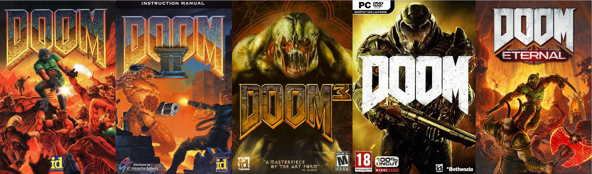
但另一方面，虽然正统作品不多，它却有着几乎可以算是游戏史上数量最为庞大的移植作品。从官方正式在各平台上发售，到无数民间爱好者自己动手移植，甚至在各种电子设备上尝试运行的试验性软件都可以见到它的身影。此外官方也推出过一系列以游戏世界观为基础的相关小说、漫画、桌面游戏以及同名改编电影，在各个文化领域都有所涉猎。
DOOM也为行业带来了许多宝贵的遗产，虽然“id撑起了欧美行业半边天”有些玩笑性质，但出现这种言论也侧面证明了它确实存在这种贡献。如果没有这两者，从《半条命》到《使命召唤》都可能不复存在，多人在线游戏也难以拥有如此庞大的用户基础。但对于包括笔者在内许多仍旧对其关注的人来说，它如今最大的贡献还是那代表着开放随性的自由精神。
花样百出的民间创作是初代DOOM仍经久不衰的关键。虽然如今[MOD]已经不是个陌生的词汇，，但基本上只有id仍旧让《毁灭战士》的MOD保留着纯净、无私和完全开源的氛围——对比一下那些为了独揽利益，利用版权法案强行夺取民间创作的行为吧。
这种将自己的作品开源，甚至允许玩家通过创作随意获取利益的行为，反而促使了相关民间创作在随后20年里，都保持着无偿贡献的自觉。至今在数以万计的MOD里，打破规则的人一只手都数的过来。得益于这种文化氛围，也让社区仍旧保持着活跃性，并培养了许多富有潜力的行业人员。对那些因其进入了游戏行业的人来说，DOOM不仅仅是FPS的领头羊，更是许多欧美电子游戏产业人员的启蒙导师，其潜在的价值远远超过绝大多数游戏IP。
金钱、技术、荣耀与贡献精神是人们谈及DOOM时经常使用的词汇。它是一个纯粹而直爽的存在，但那简洁明了的游戏设计理念背后，所承载着一个个精彩纷呈的故事又使其成为了独特的文化标杆。
了解DOOM的过程，本身便是对欧美电子游戏行业在90年代初期文化缩影的一次回顾。
目录
【DOOM：创世纪[上]】——
启蒙时代
约翰
（另一个）约翰
寄人篱下的日子
焕发“本我”
DooM降临
【DOOM：创世纪[下]】——
“地下世界”的王者
史上最快的地牢爬行
看到没有？这叫做互联网
你无法毁灭DOOM
万物皆DOOM，DOOM归众生
【综述：系列主要作品介绍】——
元祖系列
DOOM3及其资料片
重生的新DOOM
DOOM：永恒
【作品感受】——
DooM64：生不逢时的沧海遗珠
DOOM3：左右不逢缘
DOOM2016：枪炮华尔兹
【系列剧情解析】——
杀穿地狱的无名陆战队员
火星上的孤独幸存者
传奇归来
谁是DoomGuy？
不仅仅只有猛男
地狱群魔录
彩蛋、模因与文化
【UAC军火库】——
元祖系列
DOOM3
DOOM2016
DOOM：永恒
【后记】
——————————————————————————————————
DOOM创世纪-[上]
游戏开发如今是一种耗时漫长，需要动用大量人力物力的高风险投资项目。一个3A级别的商业大作，往往涉及数千万甚至上亿美金、上千人团队规模才能完成。但在90年代，你只需要技术、创意、持之以恒的决心与三两志同道合的好友便有机会成就奇迹。
在激励了许多人的《DOOM启示录》中，详细描写了id software的成立，以及“两位约翰”的奋斗史。它作为传记类书籍，自然不会对游戏本身有太过深入的探究，因此本章节便是以玩家的角度，重新诠释id工作室以及DOOM的诞生历史。
任何事物在它羽翼丰满之前，总会经历一段鲜为人知，不断碰壁却充满迸发灵感的时期。作为如今最具画面沉浸感的第一人称视角表现形式，也不能免俗。
早在70年代个人计算机还未普及，甚至[电脑]这个概念还是仅限于少数人了解的时代，计算机学工程师们就尝试过3D图形的创作。即便当时的计算机只能显示简单矢量图，但已经不妨碍他们尝试去展现一些主题内容了。这个时期绝大多数计算机游戏都是用文字冒险这样的形式去呈现的。所以当1973年《斯帕辛（Spasim）》与《迷宫战争（Maze War）》这类以主要图像描述的作品出现时，可谓彻底将改写了人们对游戏表现形式的想象方式。
《迷宫战争》在美国航空航天局艾姆斯研究中心的Imlac PDS-1主机上制作完成。作者通过利用矢量和线条形成的画面，让它呈现出了一个标准的第一人称画面，并且允许玩家在其中进行移动与射击等行为。一开始，这个游戏并未被外人所知，因为它只是工作人员闲来无事时的内部消遣而已。
而另一边的《斯帕辛》则在前者就已经具备的多人游戏模式上更进一步，允许最多32名玩家共同在一个服务器运行的迷宫里进行对战。尽管它们都只是在单调的矢量图下，以90度转向进行移动的简陋作品，但以及具备第一人称表现形式的雏形，甚至都拥有了最基础的多人游戏功能。
这两部作品完成的先后顺序至今没有定论，在这之后很长一段时间里也没有续任者出现，更不属于正式授权的商业游戏。但它们留下的3D图形理念，从诞生之日起便在科技工作者圈内流传着，以静待一个硬件水准能够让这种理念发扬光大的时机。
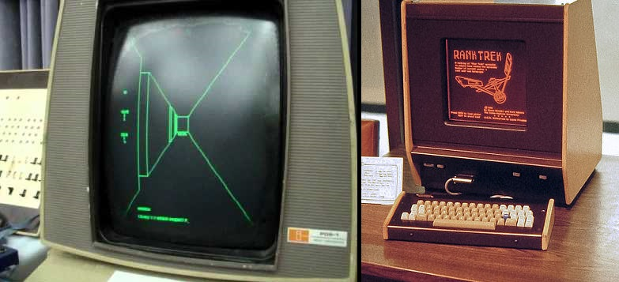
左：迷宫战争/右：斯帕辛
在这之后的下一个阶段是80年代初期，雅达利主机上推出了一款名为《终极战区（Battlezone）》的游戏。它预示着第一人称视角再次进入到新的探索阶段。
由于当时的家用机已经比个人电脑机能强大许多，所以在《终极战区》中开发者能够实现比《迷宫战争》的更加复杂的画面效果。虽然依旧只是矢量线条，但两者之间的细节与表现力上，已经能够有着肉眼可见的巨大差异了。但即便在硬件机能上有所不足，PC开发者们也仍旧比当时的家用机软件有着更加激进的试验心态。尤其是1984年由动视公司在上个人电脑平台上发行的《碎裂营救（Rescue on Fractulus）》，甚至还实现了能够让镜头360度旋转的功能。虽然对游戏玩法没有任何帮助，却仍旧是一个令人赞叹不已的技术创新了。
最后需要提及的则是史上第一个提出[引擎]概念的游戏：《遗忘空间站（Space Station Oblivion）》。它出现于1987年的圣诞节，是一款在Amstrad，Spectrum和C64等个人电脑上发行的高价游戏（18英镑），在其中除了游戏本体外还包含了一本剧情小说和模型玩具。
这款3D策略游戏采用了名为[Freescape]的游戏引擎，由本作的发行商Incentive公司内部开发，被认为是第一个用于计算机游戏的3D引擎。《遗忘空间站》具有基础的缩放和旋转图形的功能，玩家作为废弃空间站上唯一的幸存者，需要在18个区域里探索，修复空间站上出现的故障以存活下去。
上述这些作品基本上就代表着第一人称射击游戏的启蒙年代。作为游戏产业最初的一批开发者，他们在当时完全不具备开发条件的环境下，用自己的智慧和对工具的巧妙运用，实现了如今看似不可能的任务。这些为后世的游戏发展启迪做出贡献的先驱，不应当就此被人们所遗忘。
在它们之后的岁月里，游戏制作者们开始逐渐寻找到正确方向，慢慢将这个最具有沉浸式体验的游戏形式，推进到了真正的成熟时期。时间推进到了90年代，在美国德州聚集起了一群才华洋溢、同时又离经叛道的年轻人。他们组建起的一家只有几人的小小工作室，正式奠定了第一人称动作射击游戏最完美的基础形态，将这个让后世无数人痴迷沉醉的游戏类型带向了世界级舞台。
每个时代都需要一个关于专注者如何造就奇迹的故事。
在人生的某个阶段，我们都可能会坚定地认为自己就是那个独一无二的天才，哪怕这个想法只持续了那么一瞬间。遗憾的是，对于绝大多数人来说，萌生这个想法后往往代表着一次现实对自己的无情打击。当然，如果能从这种年少轻狂中获得人生经验，那倒也没什么损失。
然而对于约翰.卡马克（John Carmack）来说，“天才”这个词汇毫无意义。从很小的时候卡马克就经常被人视为天才——并且直到今天都仍完全能配得上这个身份。但他本人在对待这一个个赞誉时却总是显得不亢不卑。就好像对于他自己来说，这些被无数人崇拜或眼红的荣耀，在人生中所代表的意义并不比一条代码、一只猫、或是一盒批萨显得重要到哪儿去。
他就好像美剧《生活大爆炸》主角谢尔顿在现实中的化身。不仅仅在于他那明显超过常人的头脑，还在于出生于1970年的卡马克从小就是个有些奇怪的孩子。
卡马克的家境不错。他的父母都是大学毕业，父亲斯坦.卡马克是当地电视新闻记者，母亲则是一位医疗学者。这样的家庭背景给予了他一个良好环境，再加上从小就表现出了过人的学习天赋，让家人对卡马克未来发展赋予了很高的期望。不过和这样的家庭背景不太一样的是，卡马克给人的感觉就是跟其他孩子不太一样。他1岁开始就戴着眼镜，直到将近两周岁之前都从不开口说话。而当他嘴里第一次蹦出话语时，就已经能够表达出完整的句子了，只不过当时长辈们只认为这是他学得比较慢而已。
他在堪萨斯城富人区长大，读的是当地最好的学校，并且一直都保持着尖子生的身份。同时他也跟当时的孩子们一样沉浸在各种文学作品中（主要是各种漫画），玩《龙与地下城》桌游——而且比起冒险者，卡马克更擅长和喜爱成为一名地下城主。
这个时候他给人的印象几乎就是许多文学作品或是传记里头，标准的刻板印象天才。但事实上，和性格古板不懂人情世故的谢尔顿不同，卡马克并非一个毫无情商，懦弱内向的人——他只是不想纠缠在琐事上罢了。
别误会，他可不是什么书呆子。在阅读吸收了远超同龄人的理论知识同时，卡马克还是对空手道有相当的兴趣，在那书生表面下藏着不错的身手。更让人意外的是，他在实战方面也有一定经验。这来自于少年时期，偶尔会遇上街区附近的恶霸学生时，拿他们当活体沙袋做练习得到了不少练习机会。同样的，在很小的时候卡马克就接触到了《太空侵略者》和《吃豆人》这样的经典街机游戏，并且和所有孩子一样对其痴迷不已。
虽然和表现优秀如同各项全能的表现相比，他的游戏水平有点糟糕。
不过整体而言，家用机和街机都只是玩票。对他而言最有趣的，还是个人电脑上那些早期的角色扮演游戏。在他11岁的那年，RPG史书上最关键的早期作品之一《创世纪》（Ultima）在AppleII上发售。这改变了卡马克对电子游戏的看法与理解。
这款游戏用（以当时来说）丰富可信的内容构建起一个世界，然后让玩家在其中扮演一个冒险者随心所欲的生活在其中。整个游戏过程就好像亲自扮演《指环王》等奇幻文学中的人物，以自己的方式来完成整个故事一样。这种以前只有在《龙与地下城》里，通过纸笔与想象力来描绘的奇妙体验，如今有了更加完美的诠释手段。
在游玩了一阵子后，卡马克还在玩家身份之外发挥了自己的特长。他利用自学的编程技术开始修改游戏，利用挖掘数据代码，卡马克很轻易地就让自己的角色属性比正常游戏要更加强大。毕竟，比起一味接受刻板的知识，他更喜欢创作，由自己来制定规则。虽然和许多人一样他也明白过程是值得享受的，但更多时候卡马克展现出的特质，是总能比其他人更懂得如何以最高效率获得结果。
不过，年轻的时候谁还没犯浑过。即便绝大多数时候这种品质能让他获得成功，也有过不少搞砸了的案例。
就和前面所述的一样，如果你觉得他是个容易被欺负的好学生，那么就显然中了这家伙的圈套了。很多回忆和访谈里都可以感觉到，即便并不会主动参与到什么捣乱行为中，但卡马克并不怎么尊重学校规章制度——甚至可能还会视情况违反它。在必要的时候，卡马克会主动参与一些不那么光彩的事情，说不定还是主谋。
“年轻时的我就像是个没道德标准的小混蛋。仅仅感到自己比他人更聪明就沉浸在傲慢之中，而且很不爽没法将时间随意分配在自己喜欢的事情上面。”
正如《DOOM启示录》中所描写的那样，在卡马克14岁左右的时候，他和同学闯入当地一所学校，打算偷走里头的苹果电脑（AppleII）。为了这次行动，他用铝热剂和凡士林混合，靠着这自制溶解液弄开了窗户。然而在行窃过程中因为某个体重超标的帮凶被卡在了洞口，最终导致触发了警报装置...
他最后成为了少年管教所的成员，需要在这里蹲上1年。而当他进去服刑的时候，卡马克父母已经离婚快两年了。
“2年级的时候，我想直接上6年级；学校老师不让我跳级，我想玩电脑；家长不让我玩游戏，我炸了附近的大学；如今你们让我进少管所了，我总能好好玩游戏了吧。”
当警察录口供时，卡马克甚至承认了如果没有被抓，下次有必要的话还会这么做，这直接让他失去了保释的机会。于是，他获得了一个前无古人，后也恐怕鲜有来者的入狱理由。但即便身边围绕着一群因为毒品，斗殴等等原因被送进来的孩子，他们没有对卡马克造成什么影响。在获得自由后，这家伙仍旧还是那个对知识求知若渴，充满了想像和创造力的优等生。
只不过，他比以前更加愤世嫉俗，越发地讨厌条例和规则。
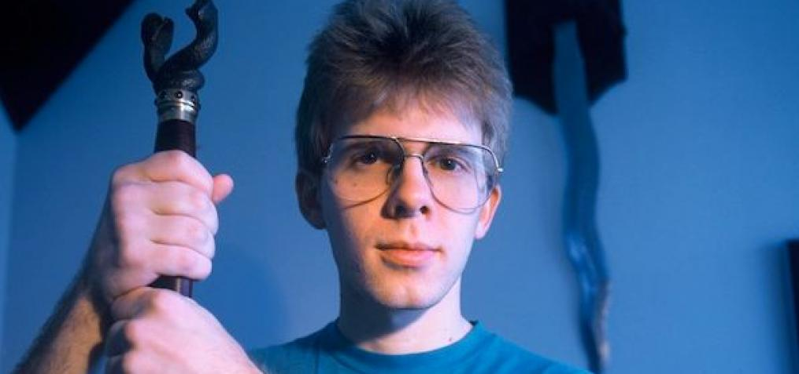
学校对于卡马克来说已经没有什么吸引力了。父母离异，他和弟弟也经常得在两个家庭之间来回辗转，而且自己的性格也和家人显得不是那么合拍。但是即便如今环境比起优异的童年时期来说糟糕了不少，卡马克仍然有许多能够抚慰自己的东西。
比如学习、漫画、电影、计算机编程。当然，还有电子游戏。他的优点之一是总能无限地专注一件事，让所有的客观因素都变得毫无意义——只要这个事物能够让其产生兴趣。
“专注并努力工作是成功的真正关键。将注意力集中在你的目标上面，不断探索迈向完成目标的下一步。如果你不确定哪一种方式更合适，那就采取两种方案，总会有一种是更加有效的。”——约翰.卡马克
从少年管教所出来并完成高中学业后，卡马克在密苏里大学堪萨斯城分校学习了两个学期的计算机编程，然后因为受不了这些死记硬背而退学了。虽然在多年后他也以“并不值得”这样的说辞来表示出遗憾，但显然年轻时的卡马克还没准备好静下心来反复接受自己早已了解的事物。
退学后，他开始做一些松散的零工，一面继续自学编程和图像绘制。因为卡马克发现，虽然他经过了这么一番折腾后，游戏是可以随便玩了，但绝大多数PC游戏的质量却挺糟糕的。于是在1989年，以早年玩过的游戏作品为启发，卡马克自己在Apple II上做出了人生第一款游戏作品：《阴影熔炉（Shadowforge）》。这是一个基于《创世纪》风格而来的RPG，玩家前往名为杰特鲁斯的小镇，挑战邪恶大法师设下的三层地牢。玩家将以杰特鲁斯作为根据地往返迷宫，游戏以一定的随机生成元素和手工内容结合，并实现了其它同类作品少见的45度斜方向攻击。
在凭着这款游戏获得了1000美元收入后，卡马克发觉自己可以用这种自由职业的形式来维持生活——而且不用因此加入有各种条条框框的正规公司。在1990年这短短一年里，他制作了多款与《创世纪》类似的RPG作品，放到现在就相当于凭着一己之力做出了好几个商业大作。而且平均两个月一部。那个时候他以为自己会一直维持着自由职业者的身份。然而转变却比想象中来得更快。
当时他主要给两家计算机杂志公司发放作品。其中一家名为[软盘]（Softdisk）的软件公司对他的评价极高，孜孜不倦地邀请他任职正式员工。但对当时的卡马克来说，自由的环境远比稳定安逸要更可贵。但自由并不能填饱肚子、或是让他满足各种兴趣所需的消费需求。虽说以一名年轻的自由职业者标准来看，卡马克的收入在同龄人里已经算是不错了，但他仍旧常常要面对朝不保夕的生活状况。所以在软盘公司又一次向其伸出橄榄枝后，他决定花点功夫看看情况，于是便开着自己的改装车前往路易斯安那州。
很快他就发现这个决定为其打开了人生的下一个阶段，并让渴望的自由来得更加彻底。
日本漫画《高分少女》作为一个描述恋爱题材的故事，之所以备受游戏玩家的喜爱，在于剧情主线中时刻围绕着电子游戏元素。尤其是对于出生在7、80年代的孩子来说，故事人物动不动就找个理由跑到街机厅来上一局的习惯，实在是无比熟悉又充满美妙回忆的一幕。
当然，不是每一个少年少女都会像漫画主人公一样幸运。能够在游戏厅遇到他们成长旅途中的玩伴，在挽救的世界同时还掺杂着一股子恋爱酸甜味。但这本漫画里所传达的一点便是：无论遭遇如何，人们对于游戏的喜爱永远是共通的天性。即便在街机厅里绝大多数人能遇到的“意外”多半是被家长打得满地找牙。
1979年，与世界各地无数孩子所做的一样，约翰.罗梅罗（John Romero）也在日复一日地往游戏厅里跑。虽然每次都会被那喜欢用暴力来行使家教的继父暴打一顿，但小罗梅罗仍旧锲而不舍地奋战在一台台游戏机屏幕前。在这里没有沉默寡言却水平高超的富家小姐，所以找不到对手的罗梅罗很轻松便成为了周边有名的游戏高手。但他也有属于自己的因缘——这一年的夏天，在游戏厅里罗梅罗遇到了他另一种层面上的人生伴侣：计算机编程。
牛逼的玩家能不能成为牛逼的游戏开发者？在今天无数人涌入这一行业的环境下，约翰.罗梅罗的经历与成就也许是最具有参考价值的。
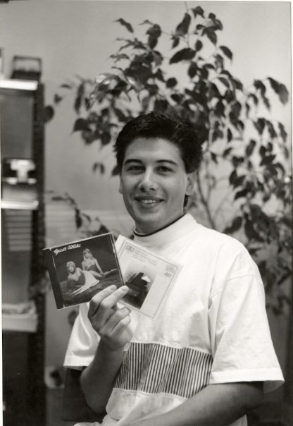
罗梅罗-1989年摄于软盘公司
罗梅罗的童年并没有过得很容易。他的父母是那种在美国最基层的平民，从年轻时就一直为了生计而打拼。母亲金妮是个乐观随和的人，她与阿方索·安东尼奥·罗梅罗于亚利桑那州相识，并在短短几个月后便结了婚。身为最早的一批墨西哥移民后裔，阿方索原本是一名空军基地维修人员。虽然他很努力工作，但生活仍旧不见起色。为了追寻自己的美国梦，两个年轻人带着300美元和一辆48年产克莱斯勒汽车来到了科罗拉多。
在那里，约翰.罗梅罗出生了。他是个早产儿，母亲在1967年10月28日生下小罗梅罗时，体重大概才只有4斤。
幸运的是，他仍然顽强地茁壮成长起来。随后父母又为家里添了一个名为拉尔夫的弟弟。不那么幸运的是，在这个全镇仅有6000人左右的小地方，父亲阿方索仍然没有找到什么飞黄腾达的机会，反而是在辛劳生活下慢慢成为了一个早出晚归的酒鬼。而最后在某一天，罗梅罗看着父亲走出家门后就再也没有回来。
独自带着孩子对于金妮压力实在是太大，所以在没多久两兄弟就迎来了新的父亲——前军事教官约翰.斯库曼德。这个继父对两个孩子都很严厉。尤其是在罗梅罗接触到了电子游戏之后，望子成龙的心愿直接就体现到了棍棒教育上面。但即便是毫不留情的拳打脚踢，也无法阻止罗梅罗把童年大部分时间花在挽救世界或是猎杀外星人上面。
以同龄人的标准来评价，罗梅罗很聪明。他并非约翰.卡马克那种能在面对比自己高了7个学年级的题目时，还能拿到全部满分的英才。但是他对于新事物的学习速度，以及与众不同的创意方面总是领先别人一步。罗梅罗玩过无数游戏，但在多年后的回忆中，他提到了《吃豆人》是其职业生涯中最关键的一部作品。因为它，才开始在这个叛逆孩子那光怪陆离的脑袋萌生了自己做一个游戏的念头。
1979年夏天，朋友把罗梅罗领到了雪乐山大学的计算机房。在这里只要他们耐心等到所有人都离开的时候，就能免费玩到各种与街机游戏截然不同的游戏。他在那里玩到了《巨洞冒险（Colossal Cave Adventure）》这样的文字冒险游戏，也通过AppleII等个人计算机接触到了《创世纪》等角色扮演类游戏。就和另一位约翰那样，这对于早年看着《蛮王柯南》等剑与魔法故事，玩着DND桌游的年轻人来说诱惑力实在太大了。
和难以对内容进行修改的街机或家用游戏机不同，计算机有着巨大的亲和力与扩展性——只要你懂得如何去折腾它们。在这个平台上，罗梅罗可以学习到更多与游戏相关的知识，并期待某一天自己也能做出像《吃豆人》那样伟大的作品。虽然可以支配的时间不多，但只要一有空闲罗梅罗就会跑到大学计算机房自学编程。和那些从个人计算机起步的程序员不同，他当时使用的是从上世纪50年代生产的计算机。这些启蒙时代的机器，虽然功能简陋操作笨拙，却已经足以提供罗梅罗学习的空间了。
然而养父对他的兴趣与追求却嗤之以鼻，而随着罗梅罗不断长大，这对父子之间的矛盾也越来越严重。养父越是对其不理解，罗梅罗就越是将更多时间花在了游戏与自学编程上。而他那古灵精怪的脑袋里头，也开始不断产生出各种想象，并且经常将其付诸实践用来放松——比如在纸张上进行各种暴力涂鸦。
不用产生误解。虽然脑海里有着无数残酷的念头，罗梅罗本质上却是个很擅于自控的人。他只是将这些想象发泄在各种无害的涂鸦上面，然后继续老老实实地学习知识。
不论怎么说，罗梅罗当时才11岁，让他天天让大学里头跑也实在太过于荒唐。因此即便百般不愿意，父亲还是给他买了一台AppleII电脑。这招确实有效，罗梅罗之后便不那么经常在外头瞎逛了。只是和养父要求的不太一样，他没有去学习什么商业软件之类有前途的技能，而是全花在了与游戏相关的编程语言上面。当然，技巧往往是通用的，当他上到中学二年级后，作为美国空军任职的老爹把他带到基地想看看能不能帮上什么忙。而他却是为国家贡献了自己的编程技巧。
和绝大多数感情丰富的人一样，罗梅罗喜欢对过去怀旧，也总是憧憬着未知的明天。肆无忌惮地放纵，尽情享受人生，并始终相信自己是个天才。人不轻狂旺少年，罗梅罗几乎从未对自己过去人生经历中的小磕小碰沮丧过。即便有，他也能很快就调整并找到机会还击那些质疑者。
他在很早就开发了一款模仿《疯狂攀登者（Crazy Climber）》的游戏。可能考虑到有山寨嫌疑所以并没有正式发表，只是作为练手的工具。但这些自娱自乐的作品，帮助他迅速掌握了相关经验与技术，可以开始制作真正的游戏了。
早期游戏开发者，总是能在瞬间爆发出惊人的创造力。罗梅罗首次正式进入游戏行业，是在1984年为[苹果汁]（inCider）杂志公司提交了名为《童子军侦察（Scout Search）》的Apple II平台游戏。这个简陋的迷宫追逐游戏为他赚到了100美元，同时还有在计算机玩家圈子里的一点点小名气。而他觉得这样就足够称得上伟大胜利了。随后罗梅罗注册了一个自己的公司——首席观念（Capital Ideas），在短短两年里独自开发了至少12款商业游戏。连续三年，Apple II杂志《蚕食（Nibble）》的年度封面人物都印着他的照片，多场计算机比赛都被其一人独揽大奖。
1987年，刚刚成婚不久的罗梅罗参加了一场名为[苹果节]（Applefest）计算机游戏展会。在那里他不仅看到了许多展出作品都是自己开发的，还遇到了[维真软件]（Origin Systems）——角色扮演游戏早期经典《创世纪》、以及太空模拟飞行鼻祖《银河飞将》的发行商。
这是个引荐自己的机会。或者对于他来说只是想要炫耀一番。总之罗梅罗把自己正在开发的游戏软盘塞进了别人公司里的展示电脑，然后把工作人员拉过来，让他们看看自己的作品与万众瞩目的《创世纪V：命运战士》差距有几分。
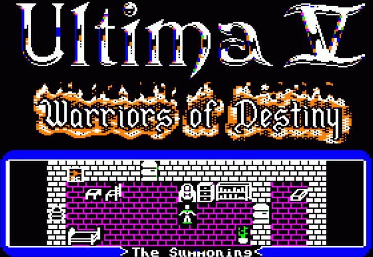
Apple II的创世纪V就是那时最顶尖的RPG之一
在这个略显唐突的行为过去两个月后，罗梅罗被聘请到维真公司就职。但遗憾的是他也没多珍惜这个机会。可能8年来独自开发游戏的经历，让他并不习惯在大公司老实呆着。仅仅参与了两款游戏开发后，他就在项目组的保罗.诺伊拉特（Paul Neurath）怂恿下离职，加入了他创建的[镜像]公司。
这次决定是罗梅罗早期创业生涯中的失误，在这里他除了给《魔法门》搞移植工作之外，并没有什么拿得出手的成绩。他为此陷入了入不敷出的状况，妻儿对其倍感失望，而他却只能在朋友家的借住度日。但幸运总是会首先照顾有能之人。罗梅罗的游戏制作水平毕竟有目共睹，在他放下架子开始寻求工作机会时，很快就得到了游戏公司的回应。
这一次，对他敞开大门的是路易安那州的一家杂志社：软盘公司。
通常来说，游戏发行商想要在某个家用机平台上贩卖自己的作品，首先自然是取得第一方硬件商的许可。但个人计算机市场不同。只要你有能够把软件卖出去的渠道（并且内容合法），任何人都可以随意推广自己的作品。在这个领域里不仅仅有那些正规化的公司，还有着撑起了半壁江山的自由职业者。这些人用今天的行话讲就类似于独立游戏开发者。他们靠自己将游戏做出来，然后打电话给一些公司（早期还有软盘杂志社）谈妥价钱后再卖出去。只要对方之后记得别把署名给抹掉，拿到钱的作者一般就不再过问宣发与销售的事情了。
在上世纪80到90年代初这段时间里，存在着一种被称为[磁盘杂志]（Disk magazine）的计算机公司类型。有二十多年网瘾的朋友应该有概念，那时候的网络想要下载个什么东西简直比登天还难，而计算机软件开发也仍旧处于个人创作的时代。为了让自己的作品能够推广出去，也为了方便那些使用者们，这种每个月定期“收编”各路作品的杂志就随之而生了。
1981年，《软盘杂志》于路易斯安那州什里夫波特、由当地大学两位数学教授所创办。专为Apple II、Loadstar for以及Commodore 64等早期个人计算机提供服务。他们在当时推出的月刊订阅服务，某种程度上可以算是如今EA或XGP平台等会员形式的雏形——只要每月几美元的价格，就能定期获得各种最新的游戏与软件。
领先于时代的前卫理念总是很好的。但问题在于，当时并没有那么多作品提供给用户。所以为了拥有稳定的产品输出效率，公司的创始人之一艾尔.威克韦斯（AL Vekovius）通过各方渠道招募人才，打算组建一个专属于公司内部的游戏开发组。而这个决定也确实吸引到了一批年轻人加入，其中就包括当时年仅21岁的汤姆.霍尔（Tom A. Hall）。
作为总是在各种回顾与传记中被隐藏在两个约翰背后的另一位“DooM之父”，汤姆相比id其他成员来说确实要低调一些。他没有什么看起来注定要成为大人物的儿时经历。正相反，这个在威斯康星洲长大并获得计算机科学学士的娃娃脸，平凡无奇的故事可能更接近绝大多数游戏产业者。他喜爱《星球大战》，喜欢和朋友们打打闹闹，用各自恶作剧来满足小小的冒险心。电子游戏并非他唯一的喜爱，因为对于这个拥有飞盘高尔夫冠军、国际象棋和各种常见或偏门娱乐活动爱好的怪咖来说，整个世界都能成为一场游戏。
不过，和许多在7、80年代接触到计算机的年轻人一样，汤姆也拥有个人编程与创作的阅历。虽然绝大多数也只是在学校里通过修改、复刻各种市面已有作品，但能在学生时代凭兴趣和热情搞出上百款作品也算是个傲人成就了。
对于加入软盘公司，他一直强调这里是人生第一份正式职业。但事实上，在成为软盘公司的程序员之前，汤姆.霍尔已经有过不少工作经历。从麦当劳餐厅到其它各种零零散散的工作，让他年纪轻轻就累积了不少社会经验。不过即便看起来有着早熟的阅历，他依然保持着天真随性的态度。
汤姆不缺乏开发技术，只是这样的员工始终是按照正常合同招募的，虽然能力稳定但往往也缺乏必要的冲劲。所以艾尔觉得，可以从一些合作过的民间开发者中招募年轻人，让这些他眼里没见过啥大世面的孩子帮忙赚钱。而在熟人送来的推荐名单里，约翰.罗梅罗的名字首当其冲排在最前面。
作为一个刚刚丢了工作，从当时计算机领域最大牌公司跌至低谷的罗梅罗来说，来自什里夫波特的邀请没有任何理由拒绝。而且这事也令他非常高兴：“嘿！我仍然是个抢手货”。
他和另外几位同样被招聘的人驱车前往什里夫波特，带着自己早已准备好的演示作品。当他抵达后，立刻就把游戏展示给艾尔，并表示自己会同意招聘就是为了来开发商业大作的。新老板看他跃跃欲试自然也不好泼冷水，于是给了罗梅罗十分满意的答复——“没错！咱正有那个打算搞牛逼大作成为下一个计算机游戏大厂，与维真和雪乐山等公司争夺市场呢！”。
为此艾尔给这些新加入的年轻人专门规划出了一个“特别部门”。不需要参与公司其它的工作，罗梅罗以及团队成员专心去开发自己想要的游戏即可；甚至连题材与内容都可以自己决定。
然而，最初的工作并不顺利。由于市场已经逐渐开始淘汰Apple II，转向了PC机以及DOS系统上面，不论是罗梅罗还是软盘公司都需要一些熟悉新环境的转型时间。他试过给公司面向IBM PC的月刊《大蓝盘（Big Blue Disk）》做了几个游戏。但事实上这些作品都只是一些原本在Apple II进行开发，后来临时改变计划移植的游戏。让情况变得越发糟糕的是，虽然罗梅罗自己有着撑起整个部门的开发实力，但团队不是一个人的表演。其他人完全跟不上步伐也就算了，很多时候还得给他拖后腿。而艾尔那边很快也忘记了自己当初的野心，开始让罗梅罗去开发一些PC软件、或是做移植工作；至于什么震撼市场的大作，早已被忘到九霄云外去了。
可想而知，这个当时在全公司少数不会偷懒，能够撑起整个部门运作，还喜欢开着重金属乐工作的家伙，自然不可能长时间忍受这种得过且过的状态。罗梅罗很快就找到老板，对其表示如果再看不到艾尔当初承诺的所谓商业大作项目，那么他就立刻辞职跳槽到对手公司去。
虽然被这么个毛头小子骑在脸上很不爽，但艾尔至少还明白自己手底下的员工状态的。他很快就给罗梅罗开了绿灯，允许让他自己挑选几个人组成新团队，负责新的PC游戏双月刊。在当时，虽然硬件机能仍然还跟不上Apple II等主流产品，但IBM PC机已经开始展露出自己兼容性等方面的优势，这时候开始另起一个专门针对游戏入门的期刊正合适。罗梅罗将这个企划项目称为《玩家之刃（Gamer's Edge）》。加上这个特殊部门，此时的他已经身兼好几种团队在编人员了……
虽然条件并不算优厚，但这到底算是入职几个月以来踏出的第一步。罗梅罗相中了当时正在Apple II部门担任主编的汤姆.霍尔，希望他能够成为自己团队的主管人员。此外，虽然他自己作为独立开发者也有一定的美术绘图能力，但目前来看还是得找至少两位专业的美工人员。这项工作被交托给了另一位公司编外人员——当时也与软盘有着合作关系的艾德里安.卡马克。这个头发比罗梅罗留得还长的家伙是个重金属音乐、黑暗艺术等地下文化的爱好者。恰恰与罗梅罗一拍即合。
另一位美术助理则是凯文.克劳德。他也是一个在漫画与街机游戏陪伴下成长的孩子，在朋友们眼里则受到了勤奋、生活井井有条且富有艺术气质等评价。凯文曾经梦想过成为一名律师，但后来却对艺术创作和计算机编程产生了更大的兴趣，并在1985年加入软盘公司成为编辑总监。艾尔最初不同意罗梅罗将凯文拉进小组里。不过后来当一群人计划离开软盘时，他们仍然找上凯文聘请他成为新公司的美术设计师。加上艾德里安，后来两人合作为id创作出了无数经典的黑暗艺术作品。
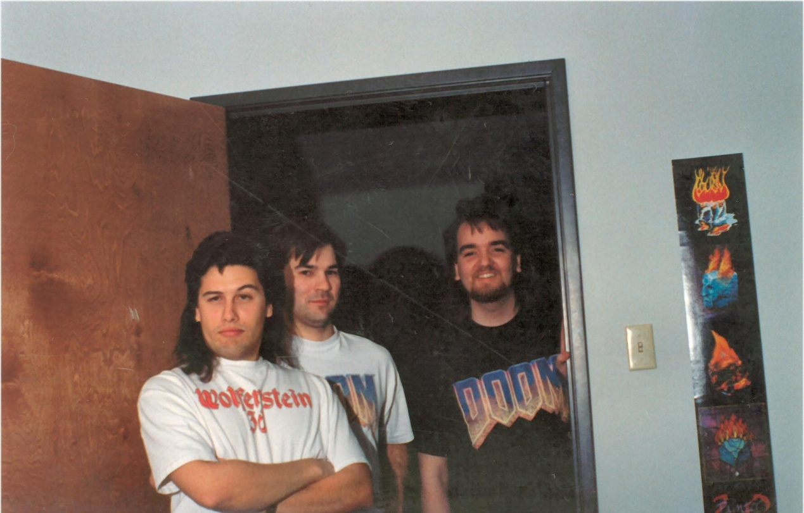
从左至右：罗梅罗，凯文，艾德里安
但在集体离职的事件发生之前，他们仍旧要忙活老板安排的业务。虽然特殊部门成立了，但事实上罗梅罗手底下仍然人手不足。艾尔要求他们在一个月里就得至少做出两款能够贩卖的游戏。但90年代初的游戏开发体量，也已经不是罗梅罗一个人能够承担得起的了，即便只是移植时间也完全不够。
这时项目经理给他们出了个主意，表示能够通过关系找到跟罗梅罗技术一样厉害的程序员。只不过问题在于，电话对面那头的年轻人一直很固执，每次都拒绝了正式的工作招聘；原因仅仅只是觉得这样不够自由。在经过了一段时间的软磨硬泡后，那位“神秘高手”终于同意过来公司这边观摩一下，看看情况再决定是否加入。而他便是远在堪萨斯州，过着如同隐士般生活的约翰.卡马克。
虽然一开始他只是对于给钱的“甲方”感到厌烦，打着过去看一眼就拒绝的想法，但在驱车来到路易桑那后，软盘公司特别部门这群人确实令卡马克倍感意外。对方不是什么混日子的菜鸟。虽然只是大了他几岁，但是这群野心勃勃的家伙确实与自己属于同一类人群。感到意外的也包括罗梅罗与艾尔他们。虽然当时冒出个什么年轻的计算机天才也不是什么稀罕新闻，但当这个有点沉默寡言的19年少年走进公司大门时，所有人确实都被卡马克给吓到了。
“这就是那个时不时给我们寄游戏来的家伙？……你也姓卡马克？”
在和众人交流过后，卡马克对于能够结识一群“和他差不多聪明”的人感到很满意，答应了加入公司成为正式员工。于是在澄清了自己并不是艾德里安失散多年的亲戚，并在软磨硬泡之下，让艾尔承诺过些时日就立刻落实汤姆从Apple II部门的调职后，[玩家之刃]终于可以正式运转了。
高涨的士气让《玩家之刃》在很短时间内，就移植出版了一些优质的原创作品。然而，这群年轻人虽然给软盘公司带来具有市场竞争力的游戏，但是正为自己决策沾沾自喜的艾尔不知道，这个特殊部门暗中地在酝酿着另一番计划。
不论是罗梅罗还是其他团队成员，打心里就一直没有长期呆在软盘发霉的心思。90年代初的美国正因冷战胜利带来的巨大红利，进入到一个经济转型的阶段。对于这个时期的年轻人来说，凭着自己一个想法、可乐以及垃圾食品就成功创业并非是白日做梦。在这个一旦顺风连猪都有机会上天的年代，没人会情愿寄人篱下。何况id这群多次被证明头脑与双手都具备天才创意的年轻人，本身就是在任何时代和环境下都具备强大竞争力的。他们没有理由为别人打工。
让所有人决心离职的契机来自于卡马克。在当时，计算机游戏很难实现卷轴式的画面推进方式。想要玩到《超级马里奥》这样的游戏，你就只能购买一台真正的家用游戏机。然而这一切都在某个夜晚被他所改变。卡马克用之前做过的一款横版动作游戏《危险的戴夫》作为基础，开发出了一种能够在PC上实现卷轴快速推进的方式，并在短短一个晚上就将其制作成了一款能够运行的游戏。
那天卡马克与汤姆熬到了凌晨5点。当他们完成后，还不忘恶作剧一般地挑战任天堂最强法务部门，将主角的图形故意做成了马里奥的模样。
第二天来到公司上班的罗梅罗，在看到了熬夜做出来的改版游戏——《侵犯版权的戴夫》后大为震惊。他很快就以自己敏锐的商业眼光看出，这个技术绝对能成为日后占据计算机市场的关键。想想吧——仅仅一晚上的时间，卡马克不仅突破了PC技术瓶颈，还将一款主机游戏的雏形DEMO成功移植。如此显而易见的技术优势，罗梅罗觉得不应该将其让给艾尔以及那些混日子的公司成员。与其在这里给只会向自己提需求的人打工，浪费自己一手好牌，还不如抽身离开赌一把试试。
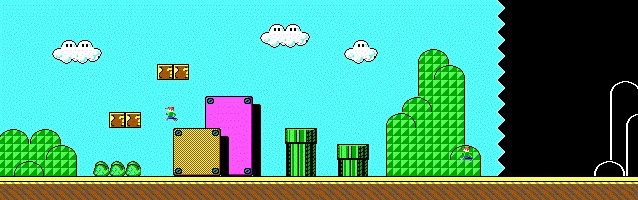
侵犯了任天堂版权的戴夫
很快，总是不会对组建新团队感到腻歪的罗梅罗，再一次给自己就职阅历增加了一份新记录。但这次不同的是，他有好几个才华不亚于自己，并且臭味相投的好友跟随在身边。
虽说卷铺跑人最初是由罗梅罗提出的，但其实团队大多数成员都有这个念头，毕竟他们都不是喜欢在一棵树上吊死的人。更主要的，还是觉得没有必要为落后于时代的公司牺牲自己才华。所以很快他们就打算借着卡马克的新技术作为跳板，寻找愿意合作的新公司。不过他们实施这些理想目标时可能都选择性忽略了——这些计划都是在使用软盘公司的设备进行的…
根据《DOOM启示录》一书的记载表示，在尚未离开软盘公司之前，大家就就在罗梅罗的带头下用[深度思维] （Ideas from the Deep）来作为团队名称。而在正式开始产生了离职想法并商议公司名称的过程时，便有人提议可以顺着这个的想法延伸，起一个带有纪念意义的公司名。最后他们选择了对神经学家西格蒙德·弗洛伊德（Sigmund Freud）致敬，采用了他在1932年所著的《自我与本我》一书中提出的心理学名词：[id]（本我）。
“本我”是一个人意识之中最原始而纯粹的部份。它与自我、超我形成了人格之中不可分割的平衡，一个人如果缺乏最基本的生物性冲动与快感满足欲望，那么该个体便是不完整的。这种以人的生命力、本能需求与欲望冲动作为驱动力的精神，也恰恰代表着id Software公司、乃至整个古典第一人称射击游戏几十年来不断追求的理念。
然而新公司最初的计划——为任天堂开发PC版《超级马里奥3》这条路还未起步就被堵上了。我想如今每个人都明白为什么：作为素来都坚持独占策略的任天堂来说，在计算机平台上移植自家头牌IP、还是交给一群不知道哪冒出来的美国小子简直荒谬。虽说任天堂在90年代初确实让马里奥大叔登陆过PC平台。只不过，当时是授权给了专门开发教育软件的The Software Toolworks，为PC打造了一款名为《马里奥失踪记（Mario is Missing!）》的作品。虽然这些试水玩意儿打着IP名号卖了不少，却因为内容空洞乏味最后被视为马里奥黑历史。不过这些都是与id无关的后话了。
当时任天堂还算客气，至少最后能给卡马克等人一个礼貌的拒绝。但染指家用机市场上的计划算是彻底泡汤了。虽然对于id来说，他们所掌握的技术仍然可以帮助无数家用机厂商进行移植工作，但他们还是更希望跟任天堂合作。不过年轻人思路转变就是快，既然对方不肯给移植合作开绿灯，那么干脆就自己开发PC平台专属的“马里奥”算了。
直接抱上任天堂大腿的计划泡汤了，所以他们暂时还得老老实实在软盘公司上班。虽说就连新公司名称都已经起好，并暗中等待着随时开溜，但出于对契约精神的遵守他们还是不会在工作时混日子的。在这期间，几个人想到了80年代忍者文化在欧美的流行。所以他们将原本想要利用在移植马里奥的技术，先行在另一款带有致敬意味的作品上实现——这就是略微有着《忍者龙剑传》影子，有史可考的首个PC卷轴画面游戏《暗影骑士（Shadow Knights）》。虽然如今你几乎很难在id相关发展史文章里看到记载，但这款游戏确实才是id成立后真正的处女作。只不过它的发行权在软盘公司手上罢了。
其实艾尔也并非毫无察觉，他对公司这群“开小灶”的家伙疑心越来越重，其他部门的人也不断抱怨投诉。就在火药味变得逐渐浓郁的关键时期，在罗梅罗身上发生了一场小闹剧。这件事最终成为了众人离职的导火索。
整个公司成立至今，要说id里头出现过的最具娱乐明星气质成员，大概仍旧非罗梅罗莫属。作为一个十多岁就在业内小有名气的才子，他向来十分享受被人崇拜的感觉。是早期游戏开发者与舆论红人结合在一起的案例之一。他对增加粉丝人数的热爱远近闻名，甚至成了其他公司进行挖角时的一道突破口。就和家用机市场一样，计算机企业之间互相争夺优秀员工的现象也十分激烈，有些手握英才的公司甚至不得不限制他们对外的联系手段。因此，那些比较鬼灵精的老板，在试图接触其他公司程序员时便会将自己的招聘信件混在粉丝来信里，以避免被人抓到把柄。
就是利用这个方法，早期共享软件推广者、同时也是后来著名的《毁灭公爵3D》开发者[天极公司]（Apogee，后更名为3D Realms）创始人斯科特.米勒（Scott Miller）在暗中向罗梅罗递出了橄榄枝。
米勒在1987年于德克萨斯州开办了天极公司。在那个互联网还未成形、计算机发展前景都还不见得让所有人都信服的年代，他成为了第一个证实免费下载形式可以带来盈利的人。最初，天极只是通过发放应用程序与软件体验版本，让消费者试用后再付费购买完整版，并未触及游戏相关的服务。很很快米勒就尝试以章节式的方法来制作游戏——首先在网络上发放免费的第一章，之后再给付费用户寄去完整的软盘。这种方式很快就获得了成功，让天极在90年代初盛极一时。
罗梅罗的暴躁脾气声名远扬，米勒甚至猜到了如果激怒了他，那么到时候罗梅罗一定会气急败坏地找上门来。果不其然，在通过几封带有恶作剧性质，并附上了自己联系地址的信件寄过去后，这个年轻气盛的程序员果然给他写了一封“挑战书”并附上了自己电话号码。米勒在收到信后立即回复了罗梅罗说明原因，而对方也很快冷静下来开始商讨合作。于是，id与天极就在这样一场看似闹剧般的事件后，瞒着艾尔悄咪咪达成了共识，双方计划中的第一款游戏也提上了开发日程。
罗梅罗向其他人表明了这件事，很快便得到团队同意，开始对新作进行规划。卡马克的新技术自然是重点，而围绕着最初想要移植马里奥的核心，游戏将会以横版平台动作的类型展开也很快就确立。最后则是题材，id想要一个更加受到欧美年轻人认可的角色，相比日本游戏制作者创作的角色更富有美国风情。这个主角会更聪明、调皮且叛逆，就像是个从80年代儿童冒险电影里走出来的一样。他们为这个小鬼头起名[指挥官基恩]（Commander Keen），这也是游戏的标题名称。
基恩的真名叫做威廉.约瑟夫比利.布拉斯科维奇二世，有一对在地方电视台当脱口秀节目主持人的父母，还两个未曾提及名字的哥哥与妹妹。尽管小比利只有八岁，但他却有着高达314的天才智商。平时穿着一件紫色T恤、牛仔裤并戴着哥哥的橄榄球头盔。他在家里的后花园用罐子等回收垃圾打造了一艘太空飞船，每当夜幕降临家人熟睡之际，便会化身为指挥官基恩与太空入侵者作战保护地球。
设定草案解决后，为了能更好地完成这个作品，众人在周末期间“借”用了公司的电脑去完成自己的开发工作。他们在路易斯安那州十字湖畔租了一间小别墅。在这里他们经历了一段即充满了忙碌与混乱，同时又十分自由随性的生活。几个小伙子一边玩闹着，一边靠着有限的设备完成了许多游戏。
在这里，卡马克可以完全专注地投入到编程当中（虽然他在大多数地方都能保持专注）。而罗梅罗则在这个小天地里肆意胡闹，尽情地将金属乐音量调到最大并时不时砸坏点什么东西。而最有趣的是，这样两个行为与性格截然不同的人，居然逐渐形成了某种奇妙的默契。
通常来说，卡马克是个对周遭事物兴趣缺缺的人。他喜爱专注于自己眼前的事物，埋头在程序编码的海洋中，几乎没有任何事情能够打断他。而罗梅罗则与他恰恰相反，这家伙呱噪浮夸、时刻都在想着如何把自己或是周围的人逗笑。他是个真正热爱游戏和所有一切新鲜事物的人，一个感性而情绪化的人。一个理性至极，纯粹到时不时会发表出一些不近人情的残酷言论——却未带有任何恶意；另一个则是放纵洒脱，充满了年轻人最美妙与最危险的特质，完全凭着一时兴起而决定事物好坏。然而卡马克却并不讨厌罗梅罗，反而是相当欣赏他的无限创意、以及隐藏在浮夸行为之下远超他人的热情与冲劲。
可能在当时就连卡马克都不得不承认，罗梅罗很可能是他所遇到最好的工作伙伴与知音。罗梅罗是世界上最棒、最具有创意的游戏设计师之一，而卡马克那难寻对手的技术能力则保证了能将其化为现实。两个在人格特质方面看似水火不容的存在，却是世界上最默契，最具有潜力的搭档。
《指挥官基恩》于1990年12月以共享软件的形式通过天极发行后，不出众人所料地获得了极大反响。在这之前，天极公司每个月平均销售额只有大约7000美金，然而在游戏上市后，单这个游戏在圣诞节来临前短短几天就已经赚到了30000美金。
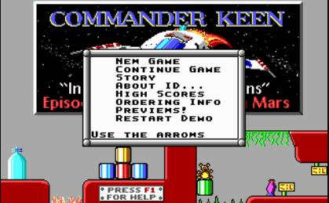
《指挥官基恩》—1990
名声大噪的id计划正式向老板摊牌，离开软盘自立门户。然而临走前艾尔表示他们使用了公司的资源，偷偷用内部设备给别的公司制作游戏这事儿得好好说道说道。Id倒不意外艾尔会发难，毕竟在这个过程中一群人几乎完全没有对所作所为做什么掩饰。说到底确实是自己理亏，所以众人不得不跟前任雇主坐下来进行谈判，最后以每两个月为软盘开发一款游戏的代价化解干戈。
虽然还不算完全脱离束缚成为自由身，但折腾了几周后曾经的“深度思维小组”终于在1991年正式转型为一家独立工作室。id一方面要继续给软盘提供游戏（他们说服自己这些只是打法外行人），一边还得为天极更新基恩后续版本。通常来说，在PC领域已经领先了其它同行的id应该可以这样过上几年舒服日子了，但是没人能想到短短1年半的时间里，卡马克等人就又一次刷新了业界技术的极限。这一次他们不仅仅是要让计算机的表现力能比家用游戏机更胜一筹，甚至还要将整个硬件技术推向新时代。
就在《指挥官基恩》上市的同一年，克里斯.罗伯茨（Chris Roberts）为维真公司开发的《银河飞将》征服了无数胸怀星辰大海的欧美玩家。除了极富深度与沉浸感的互动式剧情外，游戏的战斗环节给玩家描绘了一个操作细致入微，过程惊险刺激的太空战争场面。虽说游戏实质上仍然是采用2D的引擎技术，但是其第一人称模拟舱内视角，仍然给卡马克提供了一个惊人的灵感源泉。他还记得自己几年前在《终极战区》里看到的画面——由矢量图形构成的3D效果，模拟了玩家坐在战车驾驶舱里的情景。这给了他极大的震撼。如今在卡马克看来，除了模拟各种载具驾驶舱的表现形式，是时候用真正的3D结构来还原更加身临其境的第一人称游戏玩法了。
和当时只是在一张2D背景下用忽近忽远的图形单位来伪造3D效果不同，卡马克用了大约一个半月左右完成了在计算机运行实际纵深场景的引擎，并且利用了智能的演算机制，让引擎只显示出镜头所面向的内容，以降低计算机的运行负担。这项技术预示着：计算机游戏不再会受到大量运算束缚，导致游戏如同老汉爬楼一样慢腾腾。这种“求快胜过求精致”的理念，也一直都是id在图形技术上的重要理念之一。
和之前的《暗影骑士》一样，承诺给软盘公司的定期供应的合约里头，先享受到了这个新技术。他们在1991年4月推出了《悬浮战车3D（Hovertank 3D）》。这个游戏里玩家将驾驶着先进的高科技坦克在3D迷宫里猎杀怪物，并拯救散落在关卡中的幸存者。某种程度上来说，这个可能是PC上首款3D游戏的作品除了是一次技术试验外，也是卡马克对当年的《终极战区》一次致敬。只不过其技术与10年前雅达利上的矢量图形画面相比早已有了跨世纪般的差距。
然而，《悬浮战车3D》并没有获得想象中的市面反响。它虽然实现了流畅的3D图像技术，但是内容乏陈可味、玩法相对单调枯燥，与刚刚形成话题效应的《银河飞将》这种超大体量的作品相比就显得非常简陋，毫无吸引力。
这一缺陷在半年后的《地下墓穴3D（Catacomb 3D）》得到了改善。多变的音效是本作一大亮点，而相比上一款产品只有红蓝白的单色迷宫，id还为其墙面添加了砖瓦和青苔等装饰。配合更加流畅和快节奏的游戏内容，现在这个引擎所能表现出来的作品就不那么枯燥了。
就如前面所述的那样，“流畅性”是id在设计游戏时所着重展现的一环。除了游戏机制强调快节奏的玩法外，卡马克等人认为，市面上那些运行缓慢的作品严重影响了玩家体验以及作品表现力。所以如何利用有限的硬件技术，保持游戏在运行能够顺畅自如便成了画面表现力之外的核心思路。“引领市场风向”的本质，往往都是“与主流背道而驰”。无数的创作者们都证明了这个道理——想要让市场跟着你走，首先你的作品就不能是市面上随处可见的大众脸产品。
卡马克等人深知这个理念。在十来岁时这群人就经历过以复制前辈成功经验，在学习与实践中累积着自己的经验技术的时期。如今时机已经成熟，他们是时候以自己的标准，拿出完全颠覆市场主流审美的作品了。
离开软盘后，几个人都同意id应该仍旧保留着过去那种独立、开放的工作氛围。他们的办公地点不是什么高级写字楼或是商务大厦，经历的几次迁移都是些租金便宜环境混乱的城市边缘地带。有时候邻居是吵死人的牙医，有时候甚至可能是一群毒贩子。但最糟糕的还是要属1991年8月份搬到威斯康辛州那会。由于这里的冬季冷得吓人，差点没把几个人直接冻死在宿舍里头。
在很长一段时间里，id都一直坚持着以小规模、不受管制的独立工作室形式在运作。他们通常人数不会超过达到10人，最初几年里团队运作都是围绕着几个创始人为基础——卡马克是当之无愧的技术部门老大，一个人撑起了几乎所有编程与引擎开发的工作；汤姆则掌握着创意与设计灵感；艾德里安虽然很不喜欢汤姆那些搞怪的卡通题材，但他仍然很好地完成了所有的美术工作，凯文则能够与其进行良好的取长补短。至于罗梅罗，他是个包揽了技术辅助，创意设计和美术等各个领域的多面手。更重要的是在游戏内容设计上，没人比这个“头号玩家”更明白如何才能做得好玩。
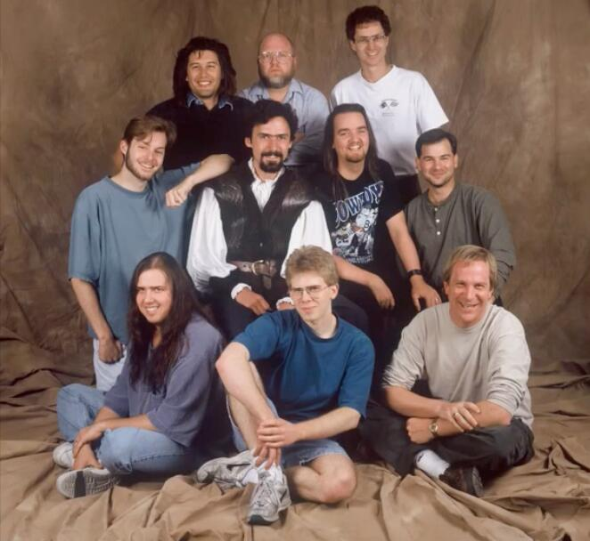
1993年左右团队全部成员
虽然我们经常喜欢用“天才”来形容这群人，并且无数次传颂着id以惊世骇俗之势，成为游戏从业者成功的典范案例。但事实上他们的辉煌也不是一蹴而就的。他们经历过连续几天几夜的加班（虽然是主动且快乐的），曾经为了生活费用而苦恼不已，罗梅罗曾经面对过爱人的质疑与不支持，甚至一度导致婚姻生活破碎。卡马克与艾德里安甚至还睡了好长一段时间的地板，以致于罗梅罗实在看不下去，特地为卡马克买了个床垫并逼着他好好休息了一阵子。
不过，和因为弄坏了自己床而被迫睡地板的艾德里安不同，卡马克其实只是纯粹无所谓自己睡在哪儿罢了。这个看起来有点“禅性”的家伙，糟糕的环境可能最多只是拖慢一点前进速度而已。在卡马克看来成功或失败都只会化作人生道路上的经验，过去的成就不值得一提。他没有任何时间或兴趣去怀念过去，即便是按理来说对自己颇具纪念意义的首部作品，他都懒得留下什么备份。只要能提供最基本的生存所需，他就能无所顾忌地一直沉浸在自己感兴趣的工作当中。
作为一个从小就开始接触桌游的跑团爱好者，卡马克在我们所熟知的天才程序员与游戏开发者之外，还是个在90年代北美桌游圈子里小有名气的地下城主（GM）。《龙与地下城》在他手中被绘制成一个非常完善而庞大的世界，这个完全由他一手创立的模组好几年来都是id内部最热门游戏。甚至有一阵子他们还用这个去作为招聘广告——想参加当地最棒的桌游跑团吗？来id成为一名游戏开发者吧！
用了1年时间和两部作品的试探，卡马克的引擎以及id的开发技术已经十分成熟了。同时在看到了第一人称游戏形式的潜力后，天极公司那边也很快就要求id给他们打造一款同类作品。这方面倒是与id等人不谋而合。但是首先，几个小伙子们觉得要在题材上确定方向，因为这一次他们要真正做到颠覆整个游戏行业。虽然他们也喜欢马里奥，也接受轻松明快的全年龄风格，但是在当时市场几乎全被儿童为用户核心的作品所填满。在他们看来，既然电子游戏能够塑造一个无害的、充满想象力的虚拟世界，那么就不应该被内容所束缚了创作——它应该像文学或者电影一样，有着不同的表现形式。
不知道是谁先提出来的，但是这个想法对于喜爱黑暗艺术的艾德里安来说，可是必须第一个站出来投赞成票的。毕竟他在创作商业作品之余，手头可是有一大堆的“限制级”业余创作，随手就能拿出许多新作所需的素材。
现在，游戏不再里不再仅仅只有青山绿水了。阴暗的监狱、悬吊在牢笼里的尸体等等元素充斥在了游戏关卡中。大声叫骂着袭向玩家的敌人在被击杀后也不会只是发出一声滑稽的声音消失——它们的尸体会确确实实地倒在地上。虽然这些过去绝无仅有的冲击画面令负责上市发行的天极公司感到有点不安，但他们也明白：电子游戏是该到了能够表现成人内容，挑战儿童领域之外的时候了。毕竟，人的天性里头就有着暴力因子的存在。无论是从古代社会，还是现代文明，无数具有历史价值的文化创作也总是不畏惧展现暴力内容。
和来自澳大利亚的电影导演乔治.米雷一样，曾经在医院工作过的经历，让艾德里安对于暴力血腥有着与众不同的见解。对于这些真正了解什么是痛苦，知道如何展现令人毛骨悚然的暴力场面的人来说，他们更加擅于将这些限制级画面变成一种令人过目难忘的艺术。就像米勒轰动了整个欧美电影市场的《疯狂麦克斯》，就像id打破游戏传统表现形式的《德军总部3D（Wolfenstein 3D）》。
Id的游戏某种程度上来说并非“全新”。早在1981年左右，一家名为[缪斯软件]（Muse Software）的计算机公司，推出了潜行游戏鼻祖《德军总部（Castle Wolfenstein）》。本作由已故游戏开发者西拉斯.华纳为 Apple II所创作。据他所述，游戏最初的灵感来自于1961年的影片《纳瓦隆大炮（The Guns of Navarone）》。本作开创了潜入式的玩法以及简单的真人语音，是游戏历史早期具有启发意义的作品。
作为一家在70年代末便成立，最终于1987年宣布关闭公司的第一代计算机软件先驱，不论是品牌本身还是其作品对于id这些领域新秀们来说，有着十分值得尊敬的历史地位。所以在手上持有了领先业界的3D图形技术后，罗梅罗提出了下一部新作便是重新诠释《德军总部》这个经典的反纳粹题材IP。版权方面，id捡了个漏：由于缪斯早已倒闭了好几年，当时的版权法案将这个商标视为已经失效，所以只要随便改一改名字就能用到自己的游戏上面了。但随之而来的问题是，在看到了游戏开发内容后，天极的高层其中的暴力元素感到担忧，并提出了希望收敛的意见。结果反而导致id故意将血腥程度又往上拨高了一个等级。
“无论他们如何担忧，最终都会被实际游戏成品所征服的。”
和过去的作品一样，《德军总部3D》以快节奏的街机式风格为核心。然而原本的计划里，id其实是想展现出1981年原作那多样性的潜入游戏形式的。你可以暗杀纳粹守卫，拖动尸体并隐藏起来以防被其他人发现，甚至还能够偷取纳粹军服欺骗对方。不过，这些设计倒也没有就此消失无踪。它们后来被另一个与二战有关的作品所继承了下来，那就是经典战术策略游戏《盟军敢死队》。
《德军总部3D》的故事除了对原作进行了一定程度的致敬外，还受到了许多二战电影的影响。此外，id独特的Cult精神也为游戏赋予了许多黑色幽默元素，穿着动力装甲的超级纳粹士兵、手持加特林机枪的希特勒，甚至还有一边行纳粹军礼一边从胸膛开火的生化丧尸等等怪异敌人占据了游戏关卡。玩家所扮演的主角方面，他们以各种8、90年代硬汉电影为基础，创作了一个类似《虎胆龙威》或是《独闯龙潭》里的英雄形象——波兰籍美军士兵威廉.B.J.布拉柯威兹（William "B.J." Blazkowicz）。这个形象如今仍旧是游戏行业里十分具有代表性的人物创作范本。
作为一款二战题材作品，游戏以“被俘-逃脱-反击”来体现主角不屈意志与反抗精神。这个核心思路也成了后来系列的一个关键，导致主角BJ几乎每部作品都要经历被俘。游戏一般也总是以逃离名为“狼穴”（Wolfenstein）的纳粹城堡为核心，玩家需要经历多个巨大迷宫和无数敌人的阻碍，搜寻武器和补给生存下去，最终击败关底BOSS逃出生天。
就和《指挥官基恩》一样，天极将游戏以共享软件的形式发售。所有玩家都能获得免费的第1章，享受冲击感十足的前10个关卡。当他们击败了守关的BOSS后如果还意犹未尽，那么就需要付费以获得之后的几个章节。
对当时的计算机游戏开发者来说，如果能被雪乐山公司选上，那就代表着他们的作品能够当之无愧地入座该领域的VIP俱乐部。Id也曾经想过让自己成为雪乐山家族成员，然而在这家年销售额达到10亿美元的大公司面前，他们的理念与模式显然与其有着严重的冲突。雪乐山创始人兼老板——肯·威廉姆斯和罗伯塔·威廉姆斯夫妇对这群衣衫褴褛，说起来话滔滔不绝的年轻人并没有多上心。在这两位已经习惯了掌控公司旗下员工的大老板眼里，id不过又是一群天赋异禀，但对于市场风向与行业潜规则毫无概念的傻孩子罢了。只要他们动动嘴皮子，再用一些商业技巧就能轻易用契约与合同让他们给自己打工。
然而，众人在一听到对方居然敢回绝了给自己提前预付10万美金后，立刻就把这两位在业界呼风唤雨的大咖踢到一旁去了——威廉姆斯夫妇有所不知，钱对id来说已经无所谓了。10万美金只是为了看看雪乐山有没有重视他们，而明显这两位大老板没有眼光看出《德军总部3D》的潜力。显然在习惯了正规商业运作的威廉姆斯夫妇眼里，id不过又是一群好打发的年轻人而已。既然对方没将自己放在眼里，那自然没必要再纠结于此。
毕竟看到他们所展示的游戏后，便立即掏钱的人排着队都挤不进来。
1992年5月5日，id收到了一张天极公司寄来的10万美金支票。随后不久，他们就被告知《德军总部3D》成为了那一年销量最高的共享软件游戏，尽管在一些地区如德国遭到了禁售，但这款开天辟地的游戏仍然为id带来了平均每周20万美金的收入。甚至连原本将id拒之门外的任天堂都不得不重新考虑双方之间的合作。预先支付10万美金成了id测试诚意的方法。而任天堂很爽快的就拿了出来：只要id愿意授权把《德军总部3D》移植到他们刚刚上市不久的超级任天堂主机上面。不过，当时的任天堂对游戏题材仍然十分保守，不希望看到有什么吓到小孩子的场面——尽管id再三强调他们的游戏是给成年人玩的，但这并不能说服任天堂要求移植版不能出现狼狗或尸体等内容。
同样对id感到意外的是行业第三方巨鳄电子艺界（EA）。作为完全遵循商业运作模式标准的大公司，EA一度公开表示难以相信在没有商业炒作与广告宣传的前提下，一个小成本游戏居然能达到与3A大作相等甚至有所超越的销售成绩。Id不仅在90年代初用共享软件的形式成功达到了常规商业游戏的成绩，还证明了即便没有任何防止拷贝与传播的手段，也能凭借游戏品质有效遏制盗版行为。
然而，在一片叫好与巨大的商机背后，约翰.卡马克却对帮助自己功成名就的《德军总部3D》深感不满。
“如果我有更多时间，更好的设备，我就能让游戏变得更好。”
“仅此一次，我们团结一心去挑战自我，合力创造出一款当时我们所能想象到的最好的游戏。史无前例，后也从未再有机会像《毁灭战士》那样让我们超越极限。这是最适合奋力一搏的时刻。”——约翰.罗梅罗
在结束了《德军总部3D》的工作后，卡马克很快就投入到了对下一个技术难关的攻克在。当游戏正式上市，其他人忙着为其制作更多后续内容时，卡马克已经对更加先进的图形引擎有了想法——新引擎应该能够支持不同材质与高度、甚至实现倾斜地面。此外还应当拥有光照变化和纹理映射，能够在任何角度用不同方式放置墙面。这些新功能将会给关卡设计带来无数种丰富变化。
如果以今天的成就来衡量的话，这就好比你今年玩到了虚幻引擎3上的《战争机器》，第二年以虚幻4引擎开发的《战争机器5》就已经完成了一样。
这个再次得到改良后的实验性引擎被称为[掠夺]（Raven Engine）。id先把它授权给了刚刚成立，后来以《使命召唤：幽灵》以及《使命召唤OL》而为人熟知的乌鸦工作室（Raven Software）开发自己的作品。
这款鲜少被人提及的作品名为《暗影铸者（ShadowCaster）》。它是一款奇幻题材的作品，有着与当时另一款具有革命性意义的经典作品《地下创世纪》类似的风格与构思。但不同于后者所具有的沉浸式模拟风格，《暗影铸者》的核心玩法围绕着一定的解谜机制：玩家可以进行6种不同的形态变身。随着流程你能在四臂猫人、魔眼、小魔怪、蛙人、火蜥蜴和疾风狼之间转换。它们都各有自己的优缺点，并能在特定区域发挥作用。只要在流程中寻找到魔法石便能逐渐解锁这些形态，此外游戏里还有一些相比《德军总部3D》来说更加RPG化的探索与道具系统。
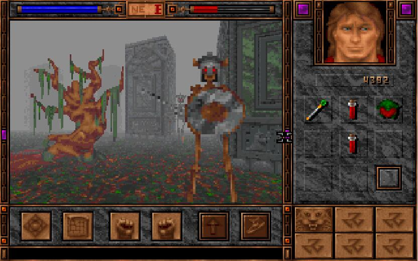
《锻影》——1993
游戏没有《德军总部3D》那么流畅，除了本身玩法所限以及乌鸦组的技术问题外，本身这个引擎实现了更多特效后也使得运行效率减慢，变成一个与id所追求的风格背道而驰的作品。不过，卡马克通过这部作品所获得的数据，完善了之后真正的重头戏：id Tech引擎。
随着资料片《命运之矛》的正式发布，《德军总部3D》在id的项目清单里头正式被划去。然而已经成为百万富翁的团队成员并没有考虑用手上的钱先休个假期享受一下，而是马上就一头扎进卡马克这个新引擎支持下的新作开发工作中去了。《德军总部3D》的大获成功让id众人陷入了一种近乎狂热的工作状态中，他们明白自己如今掌握了整个游戏行业的绝对先机，怎么可能贪图一时的慵懒与享乐情绪而让成就溜走——什么也不能，甚至连罗梅罗妻子带着一群闺蜜主动送上门来都很快宣告“诱惑”失败。
在卡马克完全超越了时代的技术支持下，id将要创造出前所未有的惊世之作。一切都准备就绪，剩下的就只有起一个响当当的标题名称了。
自始至终，id关于这个新游戏项目的意愿，就是要让整个业界都产生天翻地覆的变化。所有人都同意在标题方面必须要足够间接有力。所以当汤姆.霍尔不知道哪根筋抽风，提出了 “很绿很生气”这个蠢得冒烟的初期标题预案时，不到3秒钟他就被口水淹没了。最终敲定的名称由卡马克提出。他在此前刚观看了《金钱本色（The Color of Money）》——小说改编而来，由传奇影星保罗.纽曼和当时还是影坛新人的汤姆.克鲁斯主演，于1986年上映的剧情片。
这部电影其中有一幕令他印象深刻：克鲁斯扮演的文森特是一位年轻且具有魅力的台球玩家。在故事中段他走进一家台球俱乐部，向福里斯特.惠特克饰演的台球老手挑战。对方看着这个不知天高地厚的年轻人问道：箱子里的是什么？
“这里？”克鲁斯轻抚放着做工精良的丝绒桌球杆箱子后将其打开，露出了一个令人难忘的笑容：DOOM。
紧接着，克鲁斯就凭借着势如破竹般的气势，在球桌上将对方碾压得毫无还手之力。他的华丽演出让所有人心服口服，并一举打响了名声。卡马克认为id当时在做的事情对于游戏业界就是这个样子。而《毁灭战士（DooM）》就是拥有着高超技艺的团队手中最完美的“桌球杆”。
但是，当一群人坐下来之后，除了类型毫无悬念地确定延续《德军总部3D》的方向外，对关于接下来新作要采用什么样的题材却产生了争议。事实上，在游戏主题方面汤姆.霍尔在《德军总部3D》尚未立项之前，就提出了太空怪物的点子。不过当时他所给出的方案与游戏名称都显得过于低龄化，似乎只不过是将基恩那种卡通太空外星人动画片给3D化了而已。
经历过纳粹堡垒的腥风血雨后，id和他们的粉丝显然已经回不去了。每个人想要做真正的成人化游戏，要做一些“儿童不宜”的题材，能在自己游戏包装盒贴上[未成年人不可尝试]的标签。玩家自然也不会反对，对于电子游戏发展更是有那个必要。所以虽然汤姆相当讨厌这个计划，脑海里只想着那些可爱滑稽的动画片内容，但最终还是被“我们来做一款《异形》的游戏吧”给说服了。
作为80年代末到90年代初，流行文化中科幻相关领域最重要的符号之一，詹姆斯.卡梅隆的《异形2》奠定了一个无比经典的太空怪物遭遇模式。西部括荒时代殖民者对异地生物侵袭的恐惧，越南战场上敌众我寡的绝望氛围，在加入了极具个性的视觉设计后，产生了令所有科幻迷无法抗拒的化学反应。这部电影的故事模板被大量复制，成为当时一个典型的压榨电影，而片中怪物造型到巢穴内部构造等视觉元素也被竞相模仿。这其中也包括电子游戏——以最具知名度的《魂斗罗》为主，大量诞生于那个年代的游戏都曾经出现过对异形的致敬。
Doom要致敬异形这个想法被确定，但这时id又面临了新的问题：是否要干脆拿下电影改编版权。罗梅罗在四处咨询并与相关人士商谈后确认，以他们目前的名气想要获得20世纪福克斯公司的授权并不难。但问题在于，这次授权方面可不像《德军总部》那么走运了。作为一家只手遮天的顶级电影公司，id肯定会受制于各种条约，游戏版权也可能被夺走。考虑再三，最后他们决定自己干：只把那些流行文化符号作为参考，设计出一个完全由id创造的新流行文化主题。
另一个和游戏版权相关的改变则是发行方面。在和天极的一些员工混熟了之后，id的成员经常会听到他们的抱怨——比如公司高层迂腐不堪，常常沉醉在共享软件服务所带来的利润与虚荣当中；用户的需求与难题总是得不到解决，甚至还可能要面对客服的冷嘲热讽。同时罗梅罗还发现，在他们外包委托别人给任天堂SFC主机移植《德军总部3D》时，对方居然出现了拖延工期、以及发行商想要利用合同篡夺版权等情况。看够了一系列“大公司的蠢毛病”，让id进一步坚定了要将游戏内容制作到发行权都牢牢掌握在自己手里的决心。
《异形2》这样的故事模式在90年代初实在是酷得毁天灭地。对于一群从小接触亚文化成长起来的年轻人来说，扮演孤胆英雄与未知怪物作战的场面，就好比如今我们看到一群肌肉暖男在撸猫狗那样，充满了难以抗拒的诱惑力。此外这套在封闭军事基地与外星入侵者作战的模板，实在是与电子游戏过于搭配，当时的游戏开发者都无法拒绝制作这类题材。
但你猜怎么着？id觉得还不够，仅仅是依样画葫芦把科幻片里的外星怪物放到军事基地里，让玩家扮演大兵与它们厮杀有点太常见了。为什么不来点精神信仰层面的东西——比如说地狱和恶魔之类的？
作为一位小有名气的地下城主，卡马克构建的D&D世界让id以及他们的朋友连续好几年，沉迷在一个惊险又充满想象力的奇幻世界里。然而，在经历了各种各样的冒险后，罗梅罗领导的队伍在地表的实力已经过于强大，日常的任务已经无法满足他们了。尤其是罗梅罗，在队伍拿到了一本拥有强大力量的魔法书后，他就越发变得肆无忌惮。卡马克打算给他一点教训，也间接掀起了id内部第一次较为知名的同伴矛盾。他设下了一个陷阱，让罗梅罗的团队面临艰难选择：是否冒着毁灭世界的风险，利用魔法书与恶魔订下契约以换取该跑团模组最厉害的武器：大刀（Daikanata）。
被眼前利益给冲昏头脑的罗梅罗同意了。骰子掷出……哦嚯，运气不好丢了颗臭骰。恶魔用计成功欺骗冒险者并摆脱了召唤阵，打开地狱之门让世界陷入浩劫。罗梅罗指挥小队勇敢地作战，大家团结一心面对这场（自己整活出来的）末日浩劫。然而虽用尽了各种手段，勇者罗大刀和他的快乐伙伴们却没能阻止地狱军队入侵，最后所有人都死翘翘了。世界毁灭。
这场（让人笑掉大牙的）灾难发生于《德军总部3D》开发最艰难的时期。卡马克不愧他社交鬼才的别名，执意让罗梅罗学到教训而毁掉大家多年来的桌游模组，导致当时id内部的士气一落千丈，差点就走不出来了。面对所有人怨恨不已的眼神，卡马克似乎还挺满意这次富有教育意义的行为…
虽然这个小插曲现在看，也不够就是年轻人之间的犯蠢。但这件事显然让大家耿耿于怀而一直记在心里，并在选题会时提了出来。不得不说，这场关于恶魔召唤事故导致的大麻烦，倒是给新作带来了不错的灵感素材。
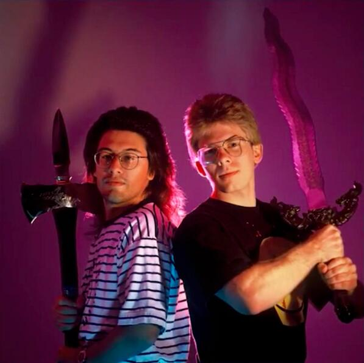
id所有人都是亚文化爱好者
罗梅罗是第一个跳出来赞同这个点子的。用等离子武器射杀地狱来的魔鬼？在DND式的探险过程中掏出火箭炮把食人魔轰成渣？这场面可真的是太酷了。而且还从来没人这么做过（事实上有，但阿罗故意忽略了）。艾德里安和凯文也对能够绘制比纳粹更加邪恶的事物感到兴奋不已。基于这一主题核心，他们参考了另一部知名电影。虽说年代有点久远，但绝对是非主流打鬼电影里头的首席代表——这就是《鬼玩人2》。这部邪典电影里主角使用电锯和双管霰弹枪降魔除妖的场面，堪称Cult影史上最令人难忘的一幕。直到三十多年后的今天，熟悉欧美亚文化的人眼中，仍然将电锯与霰弹枪视为最当之无愧的打鬼神器。任凭你是从地沟小妖到上古邪神，霰弹枪糊脸就是得死。
这就是所有人在极短的时间里达成的共识——融合了《异形2》与《鬼玩人2》特色的科幻枪战+恐怖鬼怪元素的另类主题。id要让雷普利拿着电锯与离子步枪，乘坐星际飞船来到地狱宫殿，与赛博风格的撒旦互相轰炸。
几乎是所有人都这么想的。除了创意总监汤姆.霍尔。他仍然对电子游戏表现出太过成人的内容有些抵触情绪，始终认为可爱的低龄卡通内容才是自己最喜欢的主题。更重要的一点是，汤姆想要写故事。他更关心自己能不能在图纸和笔记上写下的奇怪想象得到认同。为此甚至不在乎游戏好不好玩，或是能否实现。虽然不能说这样的想法有问题，但它确实不应该出现在一个团队创作实际内容的时候。而面对汤姆一系列无法实现或毫无意义的要求，务实的卡马克提出反驳——
“游戏设计师不应该只创作满足于自己的世界。玩家便是BOSS，你有义务取悦他们。”——卡马克
在汤姆.霍尔于1992年左右为整个项目所创作的设计文档——《DooM圣经》里，对于每一个关卡的故事背景、流程脚本都做了详细的描述。游戏中出现了大量的资料设定，并允许玩家拥有多名背景设定详实的可选角色。这其实以一个游戏设定原案来说并不算稀奇，许多游戏在开发立项之前必定会经过这样的头脑风暴，并最终筛选出合适的内容在实际成品里展现。然而，汤姆对于这本设定草案里的内容显得过于执着，他希望游戏里有对话和演出，甚至连拾取物品都有图形动画。说白了：不懂得取舍，全都想要。
即便不用我们现在事后诸葛亮一般用上帝视角去看这件事，以当时的技术标准去判断，汤姆的想法也不可能实现。考虑到光是id最后展现出来的内容，就已经需要用到几张软盘才能塞得下《毁灭战士》的内容，这还不提当时已经压榨光绝大多数计算机用户的硬件配置。就算汤姆想象中的内容真的在成品中实现了，id也将面临无数种可能的失败因素——内容过于庞杂陷入开发地狱，错失发售时机被同行赶超。当然还有最明显的弊端：游戏不好玩。
但汤姆不管这些。如果这一大叠的设定草案用不上，他在id的地位就显得非常尴尬了——所有人都很重要，只有你做的事情无关紧要，那种感觉怎么也谈不少好受。但从1992年秋季进行引擎优化开始，每个人都已经找到了自己在办公室里的位置与专长，为之埋头努力并与整个项目有效地配合。唯独只有汤姆既找不到自己想要的方向，又帮不上别人什么忙。他经常在与同伴们吵吵闹闹了一圈后，只能回到他朝思暮想的设计原案里，执着地在里头添加更多的故事与对话演出。某种程度上来说，已经知道这些内容不可能被采纳的汤姆已经将编写原案当成自己的避风港了。
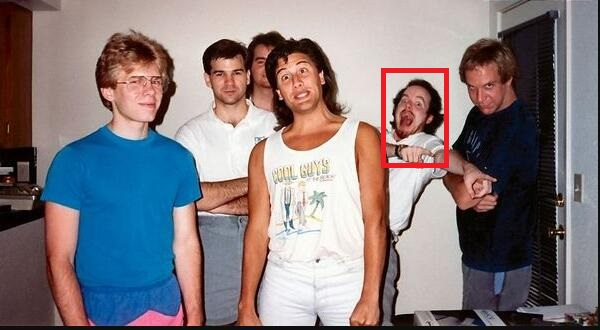
汤姆喜欢搞怪，但有时候太怪了点
为此，本就已经对汤姆经常不切实际的幻想感到厌烦，同时也确实比较耿直的卡马克说出了让大家感到有些难以置信的话——“游戏中的故事就像色情电影里的那样。它固然有存在的必要性，但也没那么重要。”（Story in a game is like a story in a porn movie. It's expected to be there, but it's not that important.）
之所以说让人难以置信，首先自然是在二十多年后游戏越来越擅于叙事的环境下，对习惯现代游戏的我们来说这话有点偏执。但更重要的是，说出这句话的人，本身就是个游戏行业最早明白剧情重要性的人之一。不仅仅是作为一个多年来创造过许多跑团模组，擅于讲故事的地下城主，更是因为卡马克自己最早就是创作过许多角色扮演游戏的人。一个写了各种各样故事在游戏里的人，他又怎么可能不明白故事的重要性。
不过较真，今天的游戏行业确实出现了一大堆唠唠叨叨了半天，却发现讲的故事也没多高明的案例。而许多人发现很多好游戏就是不需要什么故事和电影化演出，照样能带来无比美妙的所谓艺术化表现。某种程度上居然意外应验了卡马克这句暴言。只不过这些都是后话了。
这句被收录于《DOOM启示录》中的名言，几乎伴随着所有后来人们对于DOOM系列、卡马克本人乃至整个第一人称射击游戏的陈述中。虽然事实上卡马克后来再也没提起过这件事，但我觉得他当时说这句话可能也是有些许纠结的——说出来可能会导致误解，不说出来整个项目就会被汤姆的执着拖垮。
至少，对于当时的处境来说，卡马克这句话是绝对正确的。不仅是为了把陷入泥沼中的汤姆.霍尔拉出来，也是对DOOM这个系列来说最合适的发展。如果真的按照设想的那样，强迫自己去开发大型开放世界，以牺牲游戏性的代价换来节奏缓慢内容枯燥的形式，还要花心思去讲述一个蹩脚故事，那么id也不可能获得后来那么伟大的成就了。
明白自己要表达什么样的主题与内容，将最好的技术与资源用在正确的方向。这个道理对任何想要办大事的人来说都是必须铭记于心的。从实际意义出发，懂得取舍是一位优秀游戏制作人起码的品质。
由于经常被胡乱引用，也确实因为这句话已经不适用于时代（它甚至不能再用于2016年发售的新DOOM），卡马克在很长一段时间里被不少人所误解了意图。不过考虑到这么多年来在世人面前表现出的性格特征，他自己八成是毫不在意就是了。而且这一席话也不需要说拖到后来被人们所指责，当时现场的汤姆.霍尔听到这句话的时候就已经是火冒三丈的姿态了。但要说最让汤姆气愤的是，一直跟他关系不错的罗梅罗居然站到了卡马克一边。附和道：如果你的游戏很棒，就不需要太依赖于剧情。（You don't need much of a storyline if your game is good.）
很多人只记得卡马克的前半段，却往往忽略了罗梅罗随后说出的完整理论。事实上，到了今天无数的游戏作品都证明了这两人所具备的远见——好剧本能够帮助不好玩的游戏变得出色；但好玩的游戏不需要一个好故事，也能让自己成为最伟大的艺术品。
说是这么说，这么扇朋友巴掌也确实有点过份。但尽管有一些闹得不愉快的经历，大家其实还是很认可汤姆的设定草案。卡马克只是认为没过于笨重的剧本陈述没有必要，但基础大纲完全值得采纳。
《DooM圣经》里的故事基本上参考了8、90年代常见的B级科幻恐怖电影套路：某个军事组织在外星球上进行科学实验搞出了岔子，将地狱中的魔鬼召唤到了人间——明显是嘲讽罗梅罗在跑团时给大家惹出的麻烦。玩家扮演一位太空陆战队员，在孤立无援的情况下开始探索被恶魔占领的孤星基地，最后前往地狱收拾幕后黑手。
汤姆原本希望给游戏赋予多名可用角色。游戏一开始这几位可选人物将会在保安室里打牌，然而随着警报声响起，玩家需要选择其中最适合自己的战士进入基地深处一探究竟。但是罗梅罗觉得，游戏对于角色的形象应该更加模糊。多年后他在一次访谈中详细地描述了这个想法——之所以从未给主角一个明确的身份与人格塑造，是因为DOOM系列的主角应该是玩家本人。你对他了解得越少，就越容易将自己代入其中。
这种理念其实就类似《塞尔达传说》中的林克，或是《银河战士》里的萨姆斯.阿兰，他们可以拥有一个大致在世界观里的身份与形象，但不应该用过于详实的描述去毁坏其独特的神秘感。
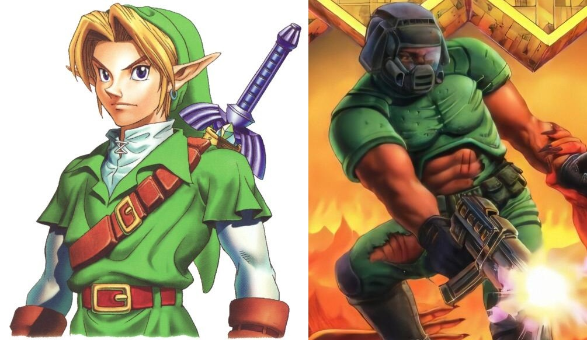
早期游戏主角常见的设计理念
这个倒是没什么可以争执的。作为一群从小就跑团的人，以卡马克为首的团队成员都明白沉浸到角色扮演里能有何等乐趣，自然对罗梅罗的意见表示赞同。但当涉及到演出时，汤姆又不高兴了——因为大家都觉得没人想要在挽救世界的时候，还花心思打什么愚蠢的卡牌（昆X牌：你再说一遍？）。卡马克不想要在游戏实际过程里加入对话和演出，在关卡中绝对不能以任何借口强制停止玩家操作，浮现文字框对话来拖延时间。剧情就靠说明书和章节间隙补完，情感与氛围的调剂则由关卡设计来满足，至于教学说明则更是要以一套潜移默化的引导来完成。
之所以有这种显得有些偏激的想法，和当时的计算机游戏普遍存在的现象有关。id发现，许多游戏在进入程序后，从公司Logo到实际开始游戏需要花费的时间缓慢得令人难以置信。玩家要真正进入可以开始操作的阶段，有时候甚至需要将近10分钟，而且很多都是完全没有必要的拖延时间。彼时玩家普遍想要的是当游戏程序打开后，敲几下键盘就能在几秒钟内立即进入实际操作阶段——不要一大堆的版权标志，没有拖拖拉拉的剧情描述，更不需要什么建立人物或是存档签名。
但这么做就显得汤姆花了几个星期时间修改的设计文档再一次陷入十分难堪的境地。尽管罗梅罗还是挺喜欢汤姆本人，大家也并非不认同《DooM圣经》里那些酷点子，但它们对于游戏所要表达的东西来说实在是帮不上什么忙。至此，从1992年11月初开始立项到年底圣诞节这段时间，汤姆.霍尔为整个项目的贡献微乎其微。游戏本就已经确立了主题，他写了几十页改了又改的“圣经”却只被采纳了不到两页内容，换谁都会感到被针对了。
就连负责美术创作的艾德里安和凯文都明白要怎么配合游戏实际内容。“黑暗艺术”这个名词对两人来说没什么不好理解的，常年沉浸在重金属摇滚和各种地下文化创作中，在他们内心深处积压了大量灵感等待着迸发之日的到来。
在工作室搬到德克萨斯州麦斯奎特郊区，进驻一座名为镇东塔（Town East Tower）的黑色办公大楼后，id发现自己与一间牙医诊所成了邻居。克劳德回忆道：由于办公室（id将其命名为666号套房）与对方仅隔一面（非常薄的）墙壁，他们每天都能听到电钻之类的响声。而为了盖过这些噪音，id的小伙子们就得把“工作状态背景乐”——通常是重金属摇滚调到最高音。导致的结果就是对方反而因此跑过来投诉。
除了互相在工作时给对方灌输自己的音乐品味之外，id倒也从中获得了一些宝贵的经验。比如病人的惨叫声，牙齿被碾碎的声音，以及进入门诊室时病人满脸绝望的神情——这不正适合他们现在的题材嘛！？原来牙医诊所等同于地狱啊！
他们将自己关在工作室里头，用画笔和绘图工具描绘出了游戏的方方面面。墙壁材质到户外远景都只是小意思，如何做出一些令玩家印象深刻的敌人才是工作重点。传统的点阵像素没法做到写实，而当时运用在《波斯王子》等名作上面的转瞄机则有些缺乏美感。
艾德里安打算改进绘图的方式，采用混合媒体的手段来制作图形。他先用粘土和塑料做出了一个基础的模型，利用摄像机从五到八个不同的角度拍摄模型，以便它们可以在游戏中逼真地旋转，再放到计算机里用点阵补完整套图形动画。除了粘土模型外，id还聘请了曾经给《铁甲威龙》和《榆树街噩梦》的特效师格雷戈尔.庞恰兹（Gregor Punchatz）做了另外几个乳胶与金属怪物模型。
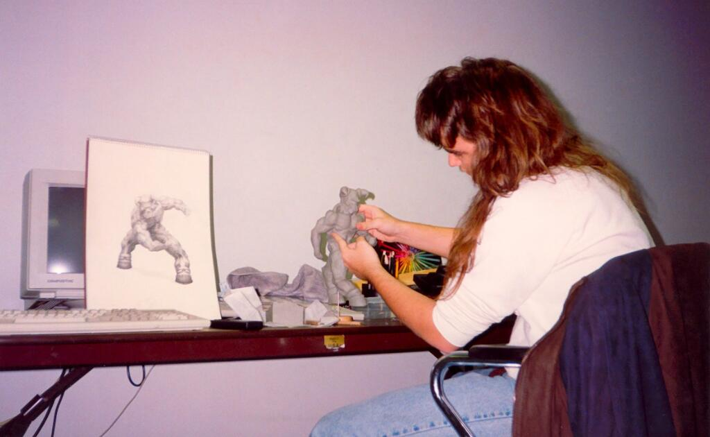
艾德里安正在雕塑地狱男爵
卡马克也在优化引擎的间隙临时加入了进来。他为两个人的工作编写了一个名为[Fuzzy Pumper Palette Shop]的程序，以此来编程出录制后的图形。实际显示出来后，使得游戏里的怪物看起来比纯粹一帧帧绘制要诡异得多，这倒是正好符合了艾德里安心目中的标准。有了最好的靶子，那肯定需要足够对得起这些目标的武器了。
摄像机实物扫描再次派上了用场。克劳德曾经用自己的靴子和伤口作为素材，制作出了游戏地狱关卡中的扭曲墙面，现在他干脆把自己的手拍了进去以绘制出主角痛殴恶魔的动画。此外他们还买了一些玩具枪，或是跟汤姆的女友借了把电锯来制作各种武器的动画。
武器的选择方面，霰弹枪必然是其中的重点。在过去，这是一种发展自民间狩猎器材的武器，在《鬼玩人2》之后，这是一种Cult文化代名词：不管对方是什么，只要用霰弹枪射下去就一定会死。考虑到你只需要花费不到100美元就能在超市购买到，霰弹枪自此成为了资本主义社会常识观念里，对付妖魔鬼怪最物美价廉的民用工具。话说回来，id与霰弹枪的姻缘早在《危险的戴夫：鬼屋冒险》里就开始了。罗梅罗曾经笑着说道：作为一个路易桑那州的农村人，戴夫不可能没有至少一把霰弹枪在口袋里。我们已经在之前这么做过了，所以现在为什么不呢？
不知道该不该算是一种幸运：当时的美国还没有颁布法令，要求玩具枪造型不能太过于接近真实枪支。克劳德在附近的便利店里，购买了一把由美国斯特朗贝克公司生产的达科他州牌玩具枪（TootsieToy Dakota），将其录制到游戏中。这也是整个项目里，第一把被制作完成出现在实际游戏里的武器。甚至可以追溯到1993年2月份小规模发布的Alpha0.2版本里。
纵使过程中有那么一些争执，整个项目的创意与理念还算随着时间慢慢成形。但不管是多么有趣的点子，都需要足够撑得起这些想法的工具来呈现出具体的样貌。卡马克通过《暗影铸者》提供的“实验数据”，优化了之前运用在创作《德军总部3D》时所使用的技术。他最早在在NeXT电脑的DOS系统上完成了首个版本，后来随着演化修改使得所支持的操作系统也日益增多。虽然主要创造者是卡马克，但是整个团队出谋划策的功劳也不可没，所以从这里开始，之后工作室不断进化的引擎都被称为[id Tech]。
新引擎实现并优化了所有《暗影锻者》中出现的技术，并着重修改了它缓慢的运算性能——毕竟速度是新作要着重强调的关键特质。尽管引擎明确营造渲染出了3D空间的质感，它本质上仍然不是一个真正实现纯3D图形的技术，而是以二维平面图投影产生的效果。玩家的视线始终平行于地板，四周的墙壁也必须由地面延伸而出，并且无法创建多层结构或倾斜区域（没有真正意义上的二楼）。
然而，在这样一个原本只可能实现平面场景的引擎里，id却在其中创造了拥有各种平台、机关落穴、楼梯甚至高山的关卡。技术上，id Tech 1可以说仅仅实现了高低不同的墙壁而已。但是通过罗梅罗与汤姆所开发的地图编辑器，再加上开发者过人的智慧与想象力，游戏所实现的关卡变化程度，甚至远远超过了后世绝大多数同类作品。作为一个玩家甚至无法进行上下观看的游戏，id通过巧妙的想象力与方式，实现了时代与硬件技术不可能完成的壮举。对大众来说，人们只是不断赞誉卡马克等人创造的技术革命。然而真正让id被从业者所敬佩的，则是展现了如何运用巧思去开阔工具的限界，而不是单纯依赖于强大的硬件技术。
你的双手、你的大脑和你那无穷无尽的想象力才是让工具发挥最佳效果的关键。这种将技术运用推向极致，让程序代码产生艺术美感的思潮，才是真正令卡马克等人名垂青史的根本原因。
在id Tech 1问世之前，还没有团队想到如何处理纹理映射的方式。卡马克创造了一种仅模拟窗口完成渲染玩家视野内纹理的方法，从而欺骗电脑一次加载多个纹理效果。它的贡献在于能够保证当时那些古董电脑，仍然能够以35帧的速度运行游戏——如果你对比过同样诞生于90年代的计算机游戏，就能发现在id Tech 1与其它作品的差距了。
项目诞生的1992年，卡马克的工作电脑还使用着只能显示256色的VGA显卡。为了配合游戏中所需的各种色彩，以及作品所设想的光暗照明概念，他想到了利用调色板组合各种颜色，让引擎处理实时变化的色调。这便是动态照明系统最早诞生的样子。它能够随着游戏中场景变化与脚本触发来改变照明度、颜色和覆盖范围的技术。相比《德军总部3D》只能直接选择照亮或是熄灭整个关卡里的灯光，现在id不仅可以创作出下水道与户外的区别，还能利用这个功能实现在走廊里遭到伏击，周围灯光突然破裂的惊险场面。
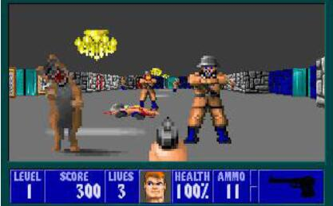
德军总部只能对整个关卡进行照明调整
引擎所使用的数据文件——包括关卡地形图纸、创建脚本以及所需的图形素材，全都被打包存储在名为“WAD”——“Wall's All Data”缩写的文件中。这个方式使得开发者乃至玩家都可以轻松找到游戏的关键素材，轻易对整个作品内容进行修改与替换，无需伤筋动骨地对整个代码动手脚。之所以这么做，是因为卡马克发现《德军总部3D》的一些粉丝玩家，出于喜爱而开始自行对游戏进行修改。这对于自始至终鼓励人们自由创作，坚持不懈地推广开源精神的卡马克来说可是非常乐于见到的。
为了帮助这些爱好者们能够更加轻松地修改id今后发行的游戏，他便想到了这个方式以便传播这种玩家参与创作的思潮中来。不管他只是一时兴起还是真的有着卓越眼界，这个看似简单的举动产生了难以估量的影响。易于更改的文件结构，使得《毁灭战士》在之后将近30年的时间里仍然保持着惊人的活力。至今初代《毁灭战士》仍然有着大量玩家在不断保持着游戏热情，并且通过社区分享着自己的创作，是游戏史上维持作品活性时间最长的存在。
自从《德军总部3D》一举成名后，汤姆便开始频繁出没于媒体杂志上，向公众大肆宣传自己。所以在大家都忙着折腾游戏开发期间，没什么事情的汤姆就着手负责宣传工作。在游戏诞生的25年后，罗梅罗在一篇关于《毁灭战士》开发回忆的文章里，承认了当时对还未完成的《毁灭战士》所作的承诺有些过于天真。虽然立项之初id并没有通过媒体做太多宣传，但在1993年的第一天，汤姆.霍尔在玩家社区和媒体邮件箱里发布了一份新闻稿。这是id首次向世界公开介绍《毁灭战士》，他对新作的基础故事背景做了陈述，绘声绘色地描述了第一章[尸海及膝]的剧情内容。此外他也向世人公布了卡马克引擎的创新技术与功能，但却提早向人们承诺了一个当时根本不存在的模式——多人死斗。并且大言不惭地表示：DooM将会成为全球工作效率下降的主要因素。
水是泼出去了，再后悔也要硬着头皮上。何况id当时真的认为自己能做到。他们在春季的时候公开发布了第一个Alpha版本：DooM0.2。这是罗梅罗提供给一部份玩家与媒体测试，并基于汤姆《DooM圣经》背景设定所做的测试地图。0.2版本与正式版游戏看起来已经差距不大，主要用于展示引擎的某些功能。但是它没有配乐，摆在地图中的怪物也不会动，玩家拿着实际正式版被删除的突击步枪却无法射击。
这些被流传下来的图片多数都是第一个做出来的关卡[E1M2]。罗梅罗提到，这个关卡中的房间，是整个系列发展中十分重要的一个节点。在他完成了这些场景之前，3D游戏中的天花板总是只能处在同一个高度，直到这时候才实现了变化多样的结构。这大概让他为之得意了一番，还把众人都叫道自己房间里观摩。毕竟成为史无前例的技术先驱总是难免会令人沾沾自喜。
之后他们还发布了0.4和0.5版本，并且在临近发售前给一些杂志寄去了新闻稿测试版（Pre-Beta Press Release）。这时期id还保留着《德军总部3D》中的街机游戏元素，比如分数排行以及生命数量等等机制，后来卡马克认为太多数据会拖慢处理器运算能力，于是随后就将这些内容取消了。此外，彼时游戏的UI界面采用了与传统计算机游戏类似的复杂设计，有许多不必要的美工影响观感。最后的做法是只保留画面最下方的状态栏，尽可能把最开阔的视野展现给玩家。
在最后的公开测试版中，虽然诸如电梯升降台等机关还很缓慢，但基本上已经跟成品相差无几。只不过最终武器[BFG-9000]的射击模式是霰弹型离子步枪，在当时没有任何电脑能不在开火后崩溃，所以实际游戏里做了修改。
游戏原本预定于1993年秋季上市，但由于再次陷入意见不合的争执当中，导致进度又稍微被延后了一些。
问题仍然出自于汤姆身上。整个项目基本上是分工明确的——负责引擎技术的卡马克；克劳德与艾德里安则包揽视觉内容创作；罗梅罗辅助技术开发的同时，还是游戏关卡内容的主要制作者。身为创意总监的汤姆凭借卡马克那便利的地图编辑器，也参与到了关卡设计中来。然而他对于游戏设计的理念显得十分保守，方方正正的走廊与房间，多余的装饰性元素与老套的敌人配置丝毫没能发挥引擎的特性。
反观罗梅罗。他的关卡有着抽象的几何式结构，充满了惊险与玄机的设计理念，敌人永远不会只停留在你眼前，每一个转角与暗墙都成为了可能的陷阱。整个游戏体验就好像3D射击版上古《黑暗之魂》。而且去除了剧情元素所需要的写实逻辑性后，id可以让《毁灭战士》的世界显得更加的脱离常规；地面、墙壁、天花板，从一次踩踏到人物朝向，探索关卡的过程如同在玩弄各种奇妙的魔方一般，充满了超现实的体验。而且最可怕的是，罗梅罗开发效率极高，有时候甚至只需要几个小时就能做出一个关卡。
显而易见，罗梅罗为《毁灭战士》所定下的关卡设计理念远远超过了汤姆的作品——当然输给他也没什么好丢人的，后来行业中许多开发者也没多少做得到。
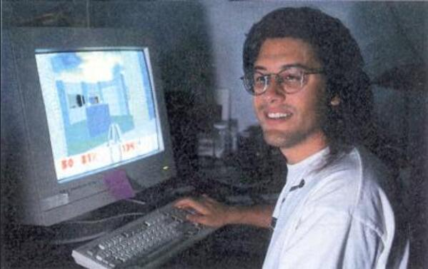
罗梅罗的游戏设计水准少有人能及
这次“对决”让汤姆.霍尔彻底爆发了。虽然他采用的方式不是歇斯底里地发脾气，但消极怠工加上时不时与卡马克起争执，或是拉上工作中的罗梅罗让其一起混日子显然对团队毫无帮助。我们不知道卡马克是否对其有什么个人看法，但是id在建立之初确实也曾经有过共识——不论是谁，当他在团队中不再有积极的作用时，就出局。
整个DooM项目的5位开发成员，正好都是id的创始人。他们都是曾经见到过那些创作热情缺失，在争论与内斗中消耗精力的大公司的业界老江湖了。所有人都看得出来，早在立项之初汤姆就对《毁灭战士》缺乏兴趣。但他没有像之前同样厌恶《指挥官基恩》的艾德里安那样，能调整心态配合团队完成工作，而是混混噩噩地沉迷在自己那过于不切实际的想象中。所以在一次简短的内部会议后，汤姆.霍尔被要求离开公司。
倒也不需要为倒霉的汤姆感到遗憾，他自己其实也已经萌生去意。在同年8月份一离职后他就直奔天极刚刚成立的分公司3D Realms，凭借在id就职的阅历得到了一份待遇不菲的新工作。此外，汤姆似乎在事后倒是认同了卡马克说的话，在自己的作品里没见有多么在乎游戏剧情表现了。在他为3D Realms主导开发、用于跟老友们竞争（怄气）的FPS游戏《龙霸三合会》里头，剧情表现可能甚至还不如“故事不重要”的《毁灭战士》。
当然，虽然为此出现了团队成立以来最严重的一次关系决裂，但id或者说卡马克还是选择了最适合的结果。从他之后的行为中也看得出，这件事情上汤姆.霍尔并不是遭到私人关系方面的针对，而是确实对项目造成了阻碍。事后id也没有否认汤姆的贡献，仍旧在《毁灭战士》上市后署名他为制作人。
就连那份在初代开发阶段没有什么用处的设定原案也没被否认。他们在实际开发过程中将多余的部份拿掉，只把最简约的剧情陈述保留了下来。原本为开放世界准备的各个地点则成为了每个关卡的名称，在尽可能保证游戏性完整的前提下还原了汤姆的设想。在多年后这本《DooM圣经》也没有被id丢掉，它在后来仍然影响并给予后续作品以灵感，甚至到了如今的《DOOM2016》以及的最新作《DOOM：永恒》里头也仍然有不少可寻觅到的遗产。
在汤姆离职的时候，其实已经过了id原定的游戏发售日了。虽然当时的网络环境还没那么糟糕，通讯也不像现在这么发达，但人类的赞歌就是唧唧歪歪的赞歌——玩家这种群体素来就是擅长抱怨和发表质疑评论的存在。团队人员发现，他们开始收到各种各样的催更电话，在90年代初刚刚诞生的网络社交平台上，铺满的是对id的嘲讽与谩骂，质疑与催促声不断。当然，也有很多是见识过这群人过去实力的玩家，他们仍然选择了等待与信任：反正等真的失败了再喷也不迟。
虽然罗梅罗办事手脚麻利，但单凭一个人显然已经不可能在年底完成所有的关卡开发工作了。所以他们只能再尝试寻找另一位设计师。
凯文在简历中发现一个有趣的家伙：桑迪.彼得森（Sandy Petersen）。事实上id的人也听说过他，一位在80年代初小有名气的桌面游戏创作者——到了今天更是如雷贯耳，他便是COC跑团的祖师爷。自从1981年将桌面角色扮演游戏与洛夫克拉夫特文学结合在一起，推出了首个COC桌游《克苏鲁的呼唤》后，这个独特的跑团类型一路发展到现在已经非常兴盛了。
桑迪最初是在父亲仓库里听到旧日支配者们向他呼唤的。通过仓库里翻到的一本二战时期印刷的《敦威治恐怖事件（The Dunwich Horror）》，桑迪从其中窥见到了这些不可名状的故事。从此之后，他便一发不可收拾地成为了洛式文学的爱好者，并在这个圈子里逐渐变得颇有威望。1973年桑迪18岁的时候接触到了《龙与地下城》，从此也成为了桌游跑团的死忠玩家。他在1974年成为了[混沌元素公司]（Chaosium）的职员，并用自己对洛式文学的理解将一个原本终止开发的游戏《黑暗世界》修改成了最初的COC跑团模组。
第一版《克苏鲁的呼唤》上市后就大受好评，销售额达到了十多万份。桑迪之后继续为混沌元素创作了其它COC跑团模组，也参与过著名的《符咒探险（RuneQuest）》第三版与《格伦瑟（Glorantha）》等桌面游戏的创作。
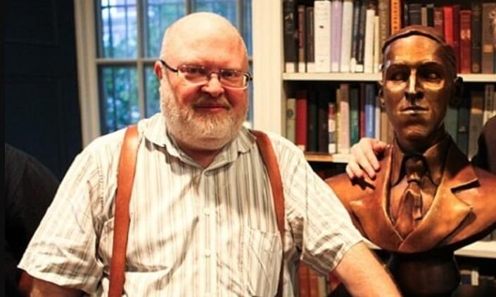
桑迪是如今人气高涨的COC跑团之父
他的有趣之处还不仅如此。如果用刻板印象去评判桑迪的话，你可能会感到相当意外。这位狂热的克苏鲁爱好者，同时也是一位虔诚的摩门教徒（耶稣基督后期圣徒教会）。他随身带着自己的信徒卡片，有5个孩子要养活（如今还有9个孙子），据说甚至还在外套下面穿着教袍…
“我真的是个摩门教徒，这胡子只是用来吓唬8岁小孩子的。——桑迪.彼得森”
除了桌面纸笔游戏之外，桑迪也对新兴的电子游戏开发感到了兴趣。在凯文发现他的时候，桑迪已经在[细微散文公司]（MicroProse）工作了4年，甚至参与过《席德.梅尔的文明》系列的开发。有着丰富经验与许多有趣阅历的家伙？这在凯文看来似乎是个可以跟罗梅罗对得上电波的人。
虽然一开始觉得摩门教徒会很难搞，但罗梅罗还是尝试着听取了凯文的意见，与桑迪见了一次面。靠着满腔热情与知识储备，桑迪确确实实就通过了id所谓的第一道考验。随后罗梅罗将其领到计算机前面让他看了一下开发中的《毁灭战士》。对方不仅没有在看到画面里的炼狱恶魔与断肢尸骸后表示反感，甚至立刻就给出了对关卡设计方面的建议。听得罗梅罗一愣一愣的。
更加让id这群无神论者感到意外的是，桑迪的宗教信仰十分开明。他不会将虚构的游戏与现实或宗教挂钩，对于游戏中恶魔和残肢断臂也表现得很无所谓——事实上根据后来的访谈，桑迪提到《毁灭战士》发售后很多社区教徒来找他，以“你们在干恶魔崇拜吗？把游戏拿来给我看看！”的理由，来跟id讨要游戏以便拿回家自己偷偷玩。作为晚辈，罗梅罗等人也询问过桑迪在游戏里引入恶魔和地狱元素，是否会对其造成困扰——毕竟玩闹归玩闹，id的成员从未想要伤害过什么人。
对此桑迪表示：你看，它们是恶魔，是坏蛋，这个游戏要好好教训它们不是挺好的嘛。罗梅罗问：可以有耶稣基督吗？摩门教徒回答：当然，我们爱耶稣，你们只要别把天父的脸放在地板上摩擦就行了。
不论如何，第二位关卡设计师就这样加入到了开发工作当中来。这时候距离1993年结束也只剩下10周左右。事不宜迟，id需要做的东西还有很多。
在关卡设计理念方面，通常人们认为相比罗梅罗那远超他人的想象力与独特美感，桑迪的关卡理念更加怪异扭曲；他有时候会做出一些让人非常抓狂的关卡，但考虑到他是id最高产的关卡设计师，质量参差不齐也算是可以理解。另外，整体来说桑迪的关卡在趣味性与主题内容上的变化要较前者更加多元化一些。不过在后来的《毁灭战士2》由于罗梅罗开始变得慵懒，导致绝大多数关卡都由桑迪和一些新人负责。放开了手脚后这位旧日支配者代言人将本作的关卡难度调高了不少，让许多人苦不堪言。
桑迪对洛式文学的喜爱也影响到了《毁灭战士》最终呈现的姿态，一些根据他对于克苏鲁故事理解的元素被加入到调整工作中，比如霰弹枪射击的反馈、怪物突然传送到玩家周围的场景、或是一些关卡中的氛围调整等等。他负责了初代作品里的19个关卡——其中有8个参考了《DooM圣经》。
虽然id当时的成员年龄各异，但基本上都是70后左右出生的年轻人。而桑迪相比起来却已经是有家庭要照顾，身材也开始发福的老哥了——当众人在游戏中为加入九寸钉乐队的彩蛋而兴奋不已，唯独他一个人纳闷地问到“九寸钉是个啥玩意儿”。在他加入团队的时候，整整比卡马克大了15岁。虽然两个人也没出现过什么冲突，但本就有些古怪的卡马克在桑迪眼里看来，就像是个情商有些问题的小鬼——只不过他头脑聪明得惊人，而且还会空手道罢了。
说到卡马克，他也得到了新成员的支援。几乎与桑迪同时加入的戴夫.泰勒并非引擎的核心开发者，但就像他提到自己就好像“DooM的填泥料”一样——虽然不起眼但却必不可少。他为游戏编写了诸如HUD状态栏，声音集成库，自动地图，关卡结算画面，作弊代码和网络聊天系统等等。这些在家用机或是街机游戏必不可少的内容，在当时的计算机游戏领域确实相当罕见，进一步提升了《毁灭战士》的完整性。
最后一个加入到项目中的人并非id的专职人员，但他的作用同样至关重要。如果你尝试过早期的计算机游戏，会发现这个平台上的作品普遍没有背景音乐，奢侈点的也只是专门谱写了一首在标题菜单播放的BGM。既然戴夫为引擎制作了声音库，id的人也计划以音画效果来呈现氛围，那么必然不能和业界同行们一样省事。
罗伯特.普林斯（Robert Prince）是在电子游戏行业著名的独立承包商，他为许多游戏公司负责过音效与配乐制作。早在《指挥官基恩》那时候起，id就已经与普林斯有过密切合作，聘请他以作曲家兼音效指导的身份参与游戏创作。
那是个几乎在瞎子过河一样的状态下完成的工作。就和当时所有的游戏作曲家一样，普林斯也是使用MIDI软件进行谱曲。虽然说声卡制造商也为id提供了一些技术支持，但为了让《指挥官基恩》以及随后的《德军总部3D》能给人以更全面的体验，普林斯仍然花费了相当大的精力，才完成了能与家用机游戏一样丰富多变的声乐效果。
正因为看到了在这些挑战中的满腔热情与创意，id才会在《毁灭战士》的开发过程中继续邀请普林斯。这一次他们直接将汤姆留下来的《DooM圣经》交给对方，希望他的天赋能为新作带来一些配得上故事主题的劲爆摇滚乐。而人们都知道，id的几位成员都是重度金属乐迷。所以在被告知这一次能完全放开手脚，由自己意愿去创作音乐内容后，普林斯觉得也能在这个方向做一些尝试。
不过，就和DOOM系列实质上每一首曲子都有各自的主题一样，id办公室里每天也总是难免要争论哪一种金属乐风格更加出色。比如卡马克与罗梅罗的品味就相对接近，于是喜欢古典金属的汤姆.霍尔眼里，这两个家伙那吵死人的音量就显得很烦。至于普莱斯本人，他则更加偏爱节奏相对缓慢、能令人联想到某些黑暗事物的曲子。这也为《毁灭战士》关卡流程带来了起伏有序的节奏——时而激情澎湃节拍强烈，时而又充满了神秘阴森的基调。即便游戏仍旧因为时代局限性使用MIDI规格进行谱曲，但在风格上已经远远超过同时代家用机游戏所能表现出的变化与深度了。
不过话说到这里必须强调，创作《毁灭战士》那无数经典配乐的过程，最令人叹为观止的其实并非这些曲子有多么出色，而是id与普林斯的胆大包天。
众所周知，音乐公司对于保护自己版权的意识有时候过于敏感，所产生的争议多年来始终没有定论。然而普林斯却在创作过程中，大量参考了爱丽丝囚徒（Alice In Chains）、豹子（Pantera）和AD/DC的曲子。罗梅罗作为一个重金属乐爱好者，不可能听不出来源头，但他就这么肆无忌惮地采纳了。要说为什么——
“普林斯是一位拥有专业资格的律师，他知道怎么样即能复制流行乐队的作品，又在法律上不会触犯底线。”
除了配乐之外，普林斯还负责了所有的音效制作部份。他在观摩了游戏的设计方案后，认为如今这个具有探索与伏击桥段的游戏，敌人不再是全部可见的。因此需要有一种能够通过声音传递的手法，来帮助玩家辨别周遭情况。而这个富有前瞻性的意见，在日后也成为游戏设计的一个关键。
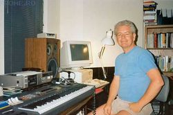
他为每一种敌人都制作了多种状态下的声音效果，武器也有着多样性的射击音效。根据设定文档里对怪物或武器的简短描述，普林斯调整了与其动画相搭配的音效。恶魔的声音效果是通过各种现实中的动物叫声修改而来的，其中为埋伏、遇敌与战斗时的吼声都做了明确区分，保证玩家能够通过听觉来判断战场状况。
《毁灭战士》以及之后的续作，是普林斯职业生涯中的最高佳作。在游戏发行后的二十多年里，这些经典曲目仍然十分受欢迎，并随着信息传播技术与网络社区的进化而变得越来越流行，拥有大量粉丝在创作的混音与重制版本。
项目进行得十分顺利，内容基本上都完成了。时间临近万圣节，卡马克告诉正在进行关卡测试的罗梅罗：引擎已经全部搞定，我们该兑现关于多人对战模式的承诺了。
实际上，即便是90年代初期，在游戏里加入多人游戏功能也并不是什么太新鲜的事情。但是，在当时这还都只是停留在实验性阶段，并没有人将其视为一种与单人游戏同样重要的模式，更不要提制定专门的游戏规则了。
但罗梅罗认为——《毁灭战士》是一个快得令人难以置信的游戏，这始终是在项目创立最初就一直着重强调的。那么还有什么比这样高速、节奏激烈的游戏形式，更加适合让玩家一较高下的呢。而且不同于格斗游戏，《毁灭战士》玩法机制是以玩家之间的枪械与身法强弱来决定胜负的游戏，它有着开阔的场景与变数，显然更加适合多名选手同台竞技。
“和怪物厮杀很好玩，但它们毕竟只是AI控制下没有任何自我的虚假造物。而玩家更喜欢的是和一个有着独立意识的人类进行对抗——能思考、会运用计谋与策略、并且时刻都在大声尖叫的对手。”——约翰.罗梅罗
在那个时代，人们根本还尚未对互联网这个东西有什么概念。在当时只有那么一些少数处在科技领域先锋的幸运儿，能够通过大学实验室或是政府机构之间的网络连接接触到相关技术。但即便如此，这时期所谓的“网络”也不过是独立电子公告板系统上的简单服务项目，让几个人在缓慢的速度下进行聊天而已。因此，在当时许多具有远见的计算机产业成员，都有过让游戏进行在线连接的设想。
所以当罗梅罗向卡马克提到他们之前就曾经做出的承诺后，他把两台开发用的计算机搬到自己房间，在里头将自己关了两个星期。卡马克的目标是让《毁灭战士》成为世界上第一个使用以太网进行连接的游戏。在他走出房间后，罗梅罗看到了一个关卡里同时出现的两个陆战队员。互相在对方的屏幕里流畅而自然地飞奔着。
多人合作允许2～4名玩家通过连接网络一同对抗地狱大军。此外它也提供了一个更加具有深度的对战模式，允许最多4名玩家进行对峙。每当玩家杀死对手时，便会得到被称为“碎片”的分数，死亡的选手则在地图上的随机地点再次复活进入战场。当一场比赛结束后，结算画面会显示所有玩家的分数值来判定胜负。最初这个多人游戏功能并没有直接作为可选项目出现在游戏中，玩家需要一些“特殊操作”才能实现。当你打算一个与其他用户进行多人游戏时，需要在DOS系统的游戏进程应用多个命令行编辑才能实现。
根据罗梅罗的说法，这个游戏对战模式被称为[死斗]（Deathmatch）。它的灵感来源自id平时在休息时间里玩的各种格斗游戏——诸如《街头霸王II》或是《饿狼传说》等等。此外之所以让戴夫在引擎里加入网络聊天功能，则是因为id（主要是罗梅罗）在玩游戏时免不了要疯狂嘲讽对手，所以他们认为网络对战一定不能缺少问候对手（父辈祖上）的功能。如果因为网络的距离而让人类的天性无法得到发挥，那么在线多人对战也毫无意义了。
实际体验上，《毁灭战士》的4人在线死斗现在看来极为简陋。游戏刚发售时的规则也有一些问题，物品在被人拾取后也不能重生。直到几个月后，id修改了规则并添加了在拾取后30秒重新出现的物品机制，整个模式才显得比较完善。
但这些丝毫阻止不了玩家在见到这个东西后彻底被征服。id率先在FPS里加入了这种规则明确玩法激烈的模式，为这个游戏类型奠定了之后几十年的流行趋势。作为一个中国玩家，我们无缘在1993年末体验到这种氛围，但是仅仅从有限的资料与残留的只言片语中就能得知，DooM死斗在当时所引发的轰动效应。
毕竟，即便我们没有多少人能有机会在当年就第一时间体验到《毁灭战士》，但我想几乎所有人都对《反恐精英》有些许概念。而当时id就是让欧美的玩家，体会到了我们如今在CS里的感受。
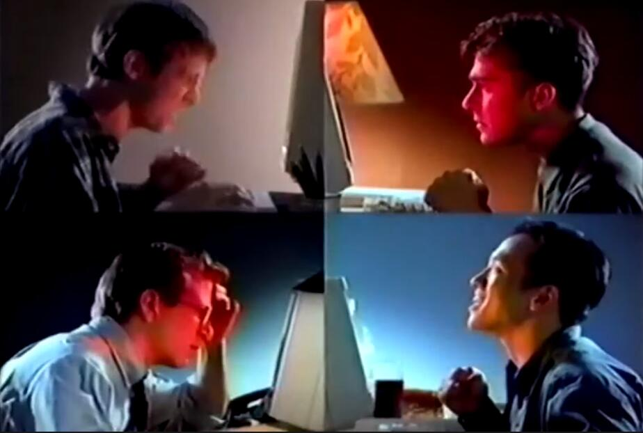
后来的电视广告也着重强调了多人模式
临近向世人承诺的最终发售日期还有不到一周时间，id的成员将所有的精力与时间都用在修补与调整上。他们就这样躺在地板和桌椅上休息，醒来后再继续进行最后冲刺。但不要认为他们对此有什么怨言，这不是如今在游戏行业中饱受争议的强制加班现象。相反，即便是在这加班地狱里他们也仍然不忘互相嬉闹——比如用胶带把昏倒在地的戴夫圈起来。
要说没压力那自然也是不可能的。《毁灭战士》和其它商业游戏不同，它没有花费资金去到处张贴传单，没有去购买电视台的广告时间，id甚至就没有和游戏媒体进行合作宣发。在当时，玩家只能在有限的几个留言板块看到相关信息，媒体也只是例行公事的发了几次新闻稿而已。
id的宣传部门是玩家群体，是来自于这群开发成员多年来积累的社区声望。玩家跃跃欲试地想看看id究竟会带给他们怎么样的新奇体验，一切都是公开且清澈的，丝毫没有商业传播必然会有的水份——他们承诺了什么，就必须给什么。
——————————————————————————————————
1993年12月9号当晚，id已经把所有手头的工作完成，合作零售商也已经都通知到位。他们将游戏的共享版本——即《毁灭战士》第一章节[尸海及膝]上传到了网络。一位来自威斯康星大学的系统管理员刚好是id的粉丝，免费为他们提供了服务器以上传档案。这对于id来说实在是再好不过。在当时，没有哪个设施的服务器带宽能跟大学相提并论。所有人都觉得：这应该可以保证足够的下载通道。
但他们还是把事情想的太简单了。9号凌晨，办公室所有人都挤在业务经理杰伊.威尔伯（Jay Wilbur，整个市场部门只有他一个人）的电脑前。他们折腾了一晚上，却仍然无法将游戏文件上传到服务器——守在FTP里等着第一时间下载到游戏的玩家太多了。不得已，杰伊只能赶紧要求所有玩家立即下线，给游戏腾出空间，否则今天所有人都别想玩到。
消息放出去后，服务器里的玩家立刻一哄而散。看着数据终于开始跳动，id悬着的心可算是暂时放下了。长久以来绷紧神经的众人开始找地方睡觉。不管在这之后他们是要面对梦想中的成功，还是因为游戏太烂而饱受抨击，最终导致团队解散，至少这一年下来的工作暂时告一段落了…
你以为就这样结束了？很显然，DOOM的命运永远不适用与那么平平淡淡的发展。独自熬夜守着数据上传的杰伊在罗梅罗等人刚刚闭眼没多久，就将睡梦中的小伙子们一个个踹醒…
“搞什么鬼？我们才睡了...他妈的不到半个小时！？”
“出大事了！上万人同时挤到服务器上面抢着下载，把威斯康星大学的服务器搞炸了！”
——————————————————————————————————
DOOM创世纪（下）
经历了这二十多年的时间，Doom几乎成为了所有游戏玩家都听说过的一个符号。然而随着随着岁月变迁，它在人们心目中的印象也出现了许多种姿态——它是西方年轻人一夜暴富的典型案例，是第一人称射击类型的启蒙老师，是技术先驱与暴力题材的奠基者等等。诸多荣耀与非议笼罩在这个游戏身上，却反而让它逐渐在大众眼中变得朦胧而遥远。
没错，上述这些确实都可以是Doom赖以成名的标志性元素。但为什么它会得到这样的评价，可能如今没多少人真的回去细究——难道仅仅只是因为它是那个时代第一个吃螃蟹的人？
绝非如此。直到今天，关于初代《毁灭战士》的商业运作模式、游戏设计理念、图像引擎的运用与传承性，当然还有始终生机勃勃的民间创作，都证明了它有着远超时代限制的价值。回顾id创业史与Doom诞生的过程，你得到了一面能够审视时代的镜子；而随后Doom与id留下的种种足迹，则是游戏行业受惠至今都未曾干枯的宝藏。
“和传统的商业游戏相比较，《毁灭战士》注定是与众不同的。”
这句话并非是出于对游戏内容上的评价，更不是基于个人感性思维或兴趣好恶去判断的。因为从商品定位、或者说销售模式的层面上去审视《毁灭战士》，它确实与整个游戏历史上出现过的任何游戏产品有着决定性不同。这个关键就在于：它不是一个正规渠道贩卖的游戏。
我们都知道id是一家没有上市的私人小作坊，在当时更是不接受任何公司注资与收购；今天我们会用[独立游戏开发者]来称呼这样的团队，然而在那个时代，还尚且没有类似的概念能被他们所采用。因此，当id决定不接受任何发行商代理，仅通过自己接受订单并邮寄给玩家的形式来贩卖《毁灭战士》时，它就成为了一款即不属于那些摆在货架上，更不受制于版权与合同约束的非商业产品。它是一种仅出现于特定时代与环境下才的“地下游戏”。
如今制作一款符合行业标准的3A级大作，往往需要动用到数百名人员、牵扯到多个部门共同合作。这些项目开启后，往往预示着整个公司在未来几年里都将投入到前途不明朗的埋头工作中。更不要提你得在其中投入数千万、甚至上亿美元的庞大资金。
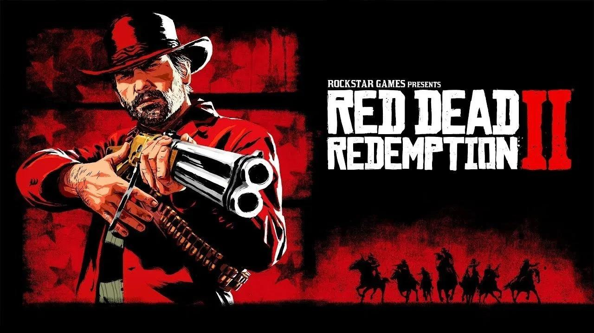
3A大作市场回报丰富，但代价和风险也非常高
在这个前提下，你对比刚刚踏入上世纪90年代的计算机游戏市场就很容易发现它的不同之处。随着冷战结果尘埃落定，作为在这场意识形态对决中获胜的一方，以美国为首的北约西方国家获得了难以估量的巨大红利。苏联解体后，美国对外方面暂时不再有一个能在彼时对其造成威胁的“敌人”，进一步促进了整个社会发展趋势开始发生转变。工业与军事扩张速度逐渐缓和，另一方面则是科技、文化与服务产业随之被倾注了更多的关注与资本。
随着如同雪崩一般滚滚而来的资源与财力涌入，一个以新兴技术为核心的市场迅速崛起。围绕着计算机领域而诞生的科技竞争，成为了西方国家尤其是美国自己一场新的无声“内战”。 刚刚上台的新总统克林顿主动推行将国家政策转向经济市场发展，服务型行业充满着史无前例的需求与活力，让巨大的商机摆在了每个人面前。即便是没有什么资本辅助的年轻创业者，仅仅在他们满腔热情的驱动下，凭借创意与天赐良机也能让无数人成就宏大伟业。
在这样一个时代大背景环境下，像id这样的小型团队依托着计算机技术的蓬勃发展而崛起。每一个富有才华的年轻人机会都是平等的，他们可以肆无忌惮地向世人展现自己的想法与野心。这些创业团队人数寥寥无几，拥有的只是几台电脑和一个想法——当然，还有填饱肚子的快餐食品。
像不像今天某些独立游戏开发者奋斗故事的模板？但是与如今不成功便成仁的残酷市场不同，当时的开发者普遍情况是就算失败了也没啥大不了的。而且更关键的是他们跟如今嘴上说着独立自主，实质上仍旧被商业运作牢牢绑定的独立游戏市场不同：当时他们不需要花那么钱打广告。
所以在明知自己手上握着业界领先的技术，并且也有自信能够创作出史无前例的旷世经典时，他们并没有像现在常见的做法那样去寻求发行商投资。在与雪乐山接触过后，id就明白不管自己拿出了多么令人赞叹的作品，也得不到这些资本家打心眼里的赏识。在他们眼里只有如何用最低的价格夺取自己劳动成果而已。而与之合作了许久的天极公司，以共享软件平台提供了销售渠道，和id在合同上也更倾向于一种对等关系。
另外一点，则是游戏始终是需要卖到用户手中的东西，既然有商品性质就不可能没有宣传。虽然当时的游戏产业没有今天那么庞大繁杂，但一款游戏上市，塞进广告商口袋里的钱仍然经常能与开发经费平齐。多数情况下，游戏开发组是承担不起那么多的宣发费用的，所以发行商在这个时候就更加显得必不可少了。
但id的许多成员仍然在内心悬着这样的想法：如果能自己处理销售问题，又何必把收入分一半给在创作上完全没有任何贡献的发行商呢？
这个想法肯定在几十年来的游戏产业里有无数人这么想过。然而可能只有id付诸的行动产生了如此惊人的效果。作为一个不到10人的小工作室，id只有杰伊.威尔伯一个人在负责处理与市场销售相关的业务。他咨询过各个大型零售商，也参考过一些主流媒体的情况，发现实际上并没有人在乎《毁灭战士》。有那么几家游戏杂志的编辑例行公事地随便报道了一下，其中试玩过测试版的也写过推荐文章，一家地方电视台则把id塑造成又一群足不出户的书呆子游戏开发者。然后就没了。
显而易见，如果在这样一个大环境下id去使用传统的发行与宣传模式，想达到好一些的市场反馈保不齐要承担惊人的费用。或者更糟糕——在一张不公平的契约上卖掉自己的作品。所以杰伊将精力放在了玩家本身。他知道id以及罗梅罗等人在玩家群体里有着庞大的粉丝群体，在刚刚兴起的互联网上也算是小有名气。所以与其花钱请人撰写一堆夸夸其谈的漂亮话，干嘛不让玩家来帮忙宣传。
天极的共享软件模式给了他们灵感，在一开始就让id决定要以“先体验后付款”的形式推广作品。但杰伊把这种模式推向了前无古人的境界：为零售商们免去所有的版权费用。
和今天我们所熟悉的共享软件概念不同，当时的版权方其实会向各个零售店收取相应税费。也就是说向商家发放这些带有“试玩版”性质的软件并非是免费的，不管它们多便宜，在向用户推广时始终会受到一定限制。
杰伊决定打破这道束缚。他注册申请了一个免税号用以接收游戏软盘订单，并跟一家负责快递业务的公司谈妥了接下来要面对的大量送货服务。然后翻开电话簿，联系了上面所有能查询到的游戏零售商，承诺免费为其提供《毁灭战士》第一章的拷贝。
“我们把游戏免费提供给你们，把它当成自己的东西去卖，赚到的钱都归你们自己。”
也就是说，零售商们可以得到完全没有成本的一款共享软件，以自己认为合理的价格出售。且不提id早就在圈子里打响的良好声誉让商家十分放心，光是让他们想象一下从中所能赚到的利润就令人难以抗拒了。一时间，与id签约合作零售商的数量可能远超某些大型发行商。
至于id自己？他们只给每一家游戏媒体杂志发布了作品上市日期和公告，让他们以标准期刊的新闻形式报道就够了。在为游戏宣传所花出去的广告费，可能还不及他们聘请著名插画家唐.伊凡.庞恰兹（Don Ivan Punchatz）绘制的那张惊世骇俗的包装海报零头。
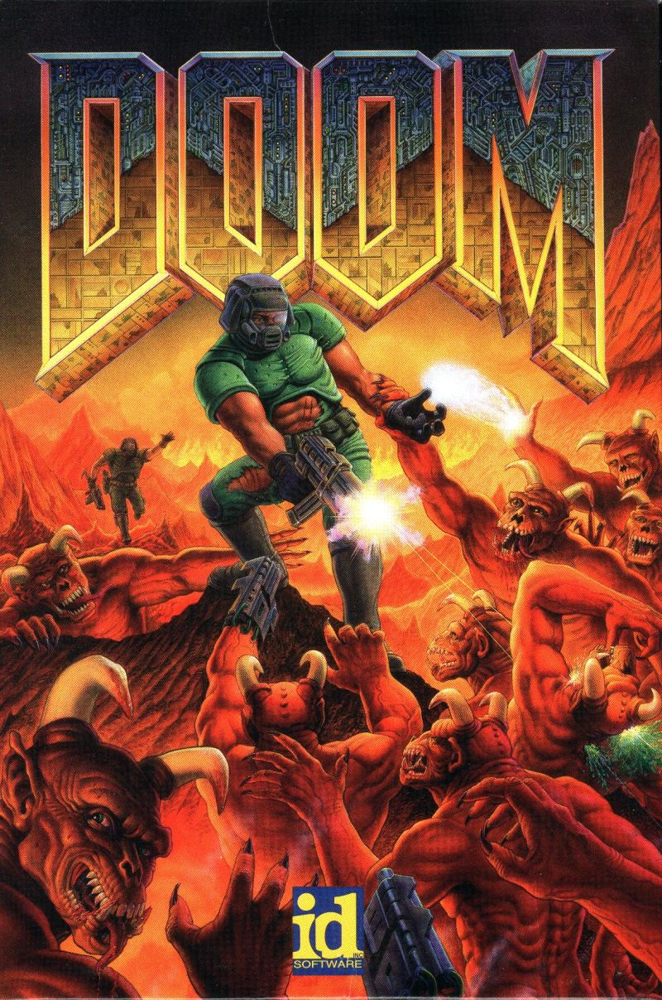
这张图是有史以来最伟大的游戏封面之一
除了对传统实体销售模式的革新外，杰伊也注意到了不断成长的互联网产业。他发现天极的共享软件模式虽然也采用了在网络上为客户提供作品选择。但由于当时的下载速度与服务器容量限制，他们其实也不过是在网络上放出了阅览菜单而已，用户始终还是只能通过电话订阅的方式获得共享版本——也就是说玩家仍然不算是免费获得试用版本的，何况还得算上快递费用等额外开支。
如今的id Software是一家拥有将近200名员工的正规工作室，但他们刚创立时的身份却要复杂得多。罗梅罗等人不仅仅只是一家公司的开发者，他们本身就是群最狂热的玩家——虽然说开公司做游戏是因为希望推动行业发展，但更重要的还是为了赚更多钱以便更爽地玩游戏。在当时他们没有客服、没有QA团队、没有市场调研。他们自己在聊天室、在酒吧餐厅、在周末的烧烤会里跟人瞎扯吹逼，这就是能想到的最好的宣传方式。
尤其是罗梅罗，如果没有选择开发电子游戏或成立id的话，他可能就是今天Youtube和推特上那些网红们的鼻祖之一。这个天生就喜爱站在聚光灯下宣泄自我的摇滚男孩，本身就是id最好的宣传机器。我们经常说现在的游戏厂商经常吹牛不打草稿，喜欢把自己工业化严重、甚至粗制滥造的商品捧上天，然而相比罗梅罗吹的牛皮来说他们简直就是谦卑自律的典范。当然，id卖出去的游戏确实都兑现了那些自吹自擂。
在《毁灭战士》延期的日子里，杰伊肯定没少因为电话铃声响起而感到头疼。罗梅罗在当时并不发达的互联网上，将这部新作吹捧到了一个令任何有点自谦觉悟的公司都要冒冷汗的境界。但吹牛皮是所有公司发言人都会的本事，问题是罗梅罗还不忘把那些质疑对象喷得狗血淋头——考虑到当时的游戏开发者里确实找不到比他嘴巴还毒辣的，你可以想象有多少人对id恨得牙痒痒。
所以对于id来说，摆在面前的只有两个选择：要么摔个狗吃屎遗臭万年，要么就让所有人都心甘情愿地把挂在嘴边的嘲讽吞回去。这种期待是最锋利的双刃剑，如果有本事利用好的话，那么那些砸重金走流程的商业宣发将不值一提。
也许传统该庆幸多年后罗梅罗终于止步于《大刀》，用彻底的失败唤醒了那个轻狂少年。不过这个故事还要好些年才会发生，在《毁灭战士》身上，他与同伴们享受到的确实是让震撼了整个产业的壮举。当时他就是世界之王。
领先业界的技术，从未在其它游戏中体验过、沉浸感十足的独特主题与氛围，爽快的战斗与多样精巧的关卡设计，创造性的多人游戏模式与自定义模组；还有最重要的：第一章免费。摆在1993年玩家眼前的就是个最接近“完美”定义的游戏。谁不爱呢？
考虑到游戏完全开源，各种各样的拷贝版本（盗版）不计其数，然而它们本身也在id传播游戏的计划当中。可能就连id自己都已经记不清，究竟已经卖出去了多少份游戏，更不可能统计共享版本的传播量。由于这种剑走偏锋的销售方式，《毁灭战士》实际上至今都无法统计其最终的确切销量数字——是要单纯总结id所寄出去的实体软盘，还是把零售商直销的也算上，那么那些通过灰色渠道卖出去的呢？
就连对整个id早期发展史陈述最为详尽的《DOOM启示录》，在其中也没法详细记录他们具体在这个游戏上投入并获得了多少钱。唯一能确定的是：《毁灭战士》在发售当天就已经为工作室实现了盈利。
虽然准确计算出《毁灭战士》的销售数据几乎不可能，但至少从id在发售后的几年内每天最低10万美金的订单，加上曾经一度在装机量超越了微软Windows95的事实，都可以大致了解到它当时的影响力。
考虑到这个游戏几乎为零的宣传费用，即便连同团队一年来的伙食、嬉戏时打坏的家具、卡马克珍藏的火焰附魔战斧+2等等玩具都算进去，它的开发预算也远低于传统商业游戏的标准。因此在面对资源投入与风险方面，id倒也确实没有那么大的压力。而这种以小博大的成就，更是进一步让行业乃至局外人对《毁灭战士》分外眼红。
事实上，《毁灭战士》从来都不是那种销售榜的冠军，至少在商业成绩上确实不及《超级马里奥》或今天的《横行霸道》这种商业作品。但它的名气却一点也不比这些聚光灯下的明星大腕弱，甚至可能在社会影响力上要遥遥领先。
通过绕开发行商的方式，id能从每份游戏获得最低85%的收益，使得售价40美元价格的《毁灭战士》远比如今60美元的游戏利润还要高。这令人难以置信的红利，即便是那些站在云端之上的行业骄子也不免感到嫉妒。
值得一提的是，从某种程度上来判断的话id和他们的《毁灭战士》是最早进入中国的欧美游戏之一。
由于众所周知的因素与条件限制，我国的电子游戏产业在很长一段时间里都深陷于盗版、社会偏见与市场回报低下等困境中。作为一个90年代初的计算机游戏，《毁灭战士》自然无法通过正常的渠道在中国地区得以发行。不过，由于id对这款作品的定位十分特殊（地下市场的商品），因此它最终通过一种比较微妙的方式进入到了国内。
“由于亚洲那边盗版猖獗，所以我们以每份1美元的价格，将《毁灭战士》与《德军总部3D》的版权卖给了当地最大的盗版软件经销商。他们获得了“合法”的销售渠道，而我们因此多赚了一点钱。”——约翰.罗梅罗
在向欧美市场免费投放了共享版本的第一章后，id也开始主动与其它国家的游戏代理商接触。其中就包括了几家中国的游戏发行商。他们以每张软盘1美元的价格向其发放销售版权——不论这些公司之前是做正规游戏买卖，还是盗版贩子都无所谓。
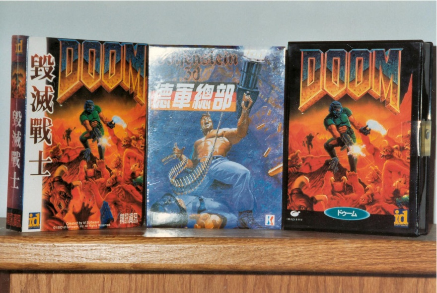
Wiki上留存的亚洲版id游戏照片
虽然这个利润相比在欧美等地区来说只能算是微乎其微，但至少id在这件事上比其它大公司要看得更远。比起一无所获，id至少小赚了一笔。而且这种误打误撞，也让id成为了少数在90年代初就以代理销的形式进入中国游戏市场的欧美游戏商之一。
尽管这个方式带有一些争议。不过今天的那些游戏平台说白了性质也相差无几嘛（嘘）。
讽刺的是，比起主动被id接触并协商合作的中国，那些欧美的大型游戏公司反倒显得有些尴尬。许多发行商在DOOM获得成功后，都想获得id游戏的代理销售权，但他们主动前来商谈的结果往往是吃了一个闭门羹。
在这里头以GT互动软件（GT Interactive Software）的创始人罗恩·柴莫维兹（Ron Chaimowitz）最为积极。他三番五次亲自从纽约飞往德克萨斯，希望说服id能将之后的续作改成零售版本的形式上市。而他得到的回答是：我们每天有十几万美元的订单，为什么要把自己的利益分给其他人？
显然，虽然年轻且盛气凌人，但id并非是随便什么大公司老板找上门来就脑袋一热把自己给卖掉的二愣子。但罗恩也不是个省油的灯。他答应将投入两百万美金用于给下一部作品作为市场宣发费用——如果这个新作叫“毁灭战士2”什么的就最好了。而id的进一步要求是所有的知识产权都仍然归自己所有，且在商品包装上只能有id自己的Logo，GT公司没有权力过问任何一个与作品相关的问题。
过去（以及现在也是），游戏开发者在合同上往往都是弱势的一方，他们总是得受制于发行商各种各样的权限之下。而在GT这边关系则几乎完全反了过来。这还是罗恩在纽约与德克萨斯来回了至少三趟才终于打动了id得到的结果。这种“以下犯上”的案例日后几乎再也没有出现过。
Id同意了为GT开发一个DOOM的续作——而且还非常快就搞出来了。《毁灭战士II：人间地狱》的发售日期有一个模糊的记载。实际上，早在1994年的9月30号就已经有许多人收到订购的游戏了。而据当时欧美地区的玩家回忆，在官方正式的发售日之前，其实就有不少零售店货架上摆着游戏以供贩卖。这也算是一次十分奇特的反向跳票事件了。但无论如何，官方发售日仍旧是在1994年10月10号这天。同时它也是正式对媒体记者们公开DOOM的日子。
如今各种游戏展会数不胜数。不仅仅是像E3或科隆游戏展等多家公司与媒体合并展出，许多发行商自己也会举办私人展会，邀请媒体提前体验游戏并撰写评测报道。但即便现在这么多花样百出的形式，也很少见到像《毁灭战士2》这么疯狂的案例。id将游戏上市日期和发布会选在了世界末日那一天——按照英国数学家约翰.康威（John Conway）提出的[末日法则]（Doomsday rule）计算，1994年10月10号刚好就是万物（可能）终结的时刻，所以GT公司选择了在这天邀请媒体记者。
如今你还能在互联网上找到当初的邀请函，而在《DOOM启示录》中也详细记录了关于这场发布会的故事。他们在一家教堂改建而来的夜总会包了场子，并将其装饰成了充满哥特气质的地狱舞厅。和今天的专业游戏媒体不同，当时主要到场的都是诸如《华尔街日报》等大牌主流媒体。这些穿着名牌西装喝着高档香槟的上流记者们可从来没见过这种阵势——id没有将其打造为一场戴着微笑面具，喝喝酒跳跳舞大家互相说点恭维话就了事的公关招待会。他们会答应GT来这里，一开始就是出于玩闹心态的。
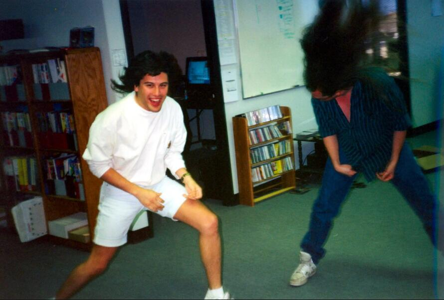
“开心最重要”—id每天上班最坚持这个
与今天那些庞大的宣发活动相比，这场只是在酒店里的记者招待会论规模自然无法相提并论。但是它的影响力却极为深远，可以说在游戏行业历史上有着非常关键的意义——id手拿《毁灭战士II：人间地狱》一巴掌拍在了主流媒体与大众舆论脸上，告诉他们：电子游戏不仅仅是儿童玩具，更不是带着偏见的外行人可以随便批判的“有害物质”。记者们准备好了刁难与责问的采访稿。然而却完全没料到这群看起来有点书呆子气的年轻人，在面对现场“游戏会教坏小孩子”的声讨时居然丝毫不显得慌张，反倒是用嚣张的态度与令人信服的观点让他们这些专业记者哑口无言。
这场发布会非常成功，所以我想对于资本家来说，他们早就预料到了之前所有的“让步”都是必要的。毕竟，当你看到一个游戏在当时被安装到了几乎目光所及的每一台计算机上，并且每一位玩家口中都对其赞不绝口时，你不得不想尽一切手段将它拿到手。何况，就连比尔盖茨都打算寄希望于《毁灭战士》作为自己公司的决胜法宝了，罗恩的GT在合同上吃点亏又何妨。
是的，就连微软也不得不关注id的动向。比尔盖茨发现，即使花费了几百万美元的广告宣发费用，微软所推行的最新操作系统Windows 95，装机量仍然远远达不到《毁灭战士》的普及率。面对这种情况，他一度考虑干脆收购id工作室。但后来发现，与其费尽心力跟这群明显管不住的家伙斗智斗勇，还不如花点钱讨好对方算了。
所以不久后，全世界都看到了id专门为Windows移植《毁灭战士》的消息。比尔盖茨，这个曾经的世界首富与计算机神童，甚至为这个游戏登陆Windows95系统而亲自上阵宣传。
他们特地拍摄了一段游戏E1M2关卡的演示，最后在控制室里，所有人惊讶地看到了穿着风衣手提霰弹枪的比尔盖茨出现在了UAC火星基地里。他夸赞着发展迅猛的电子游戏所带来的精彩体验，并以表示如果购买安装了Windows95，便能更好的享受《毁灭战士》——因为微软将会专门针对这款游戏对操作系统进行优化。
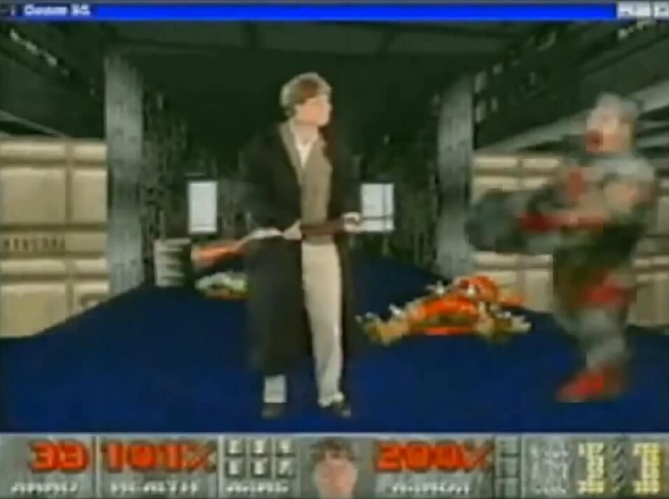
比尔盖茨——拍摄于火星
微软现在都还经常使用王牌游戏作为宣传平台的手段。但是在《光环》或《战争机器》之前，人们从来没有见过这样一家大公司居然会以电子游戏作为宣传重点，甚至连比尔盖茨都亲自上阵为其宣传造势的。（严格来说是反过来利用游戏为操作系统宣传）
即便是当初拒绝了移植马里奥计划、早年一直都表示对计算机平台与成人游戏不感兴趣的任天堂，也不得不重新开始考虑自己在市场上的定位。这一次，是他们反过来主动寻求id合作，希望他们能把自己的作品移植到超级任天堂上面，以期能够更好地扩展用户。
虽然提出了诸如“封面主角手被恶魔抓着很可怕”、或是“看起来太暴力了很可怕”等等一系列可怕要求，但是SFC版的《毁灭战士》连同当时计划用以对标当时真人快打热潮的《杀手学堂》等成人化作品，仍然算是任天堂这家“低龄专业户”在90年代初开始转型的契机。
有趣的是多年来，每当任天堂的新主机推出时，经常会找到id来作为反驳自己只会关注低龄向游戏质疑的标志。N64上有《毁灭战士64》，NS上同样也有着运行表现不错、强调自己机能没那么糟糕的《DOOM2016》移植版。
不过，在id与与任天堂之间还有个非常逗的故事。就像《毁灭战士》封面包装的修改一样，当时的《德军总部3D》SFC版甚至还把狗给改成了老鼠。显然id对于任天堂在作品移植时的处理方式有些不满，所以一直想要对其搞个恶作剧。就像他们之前对其它合作发行商做过的事情那样——无伤大雅，但却令人尴尬不已。
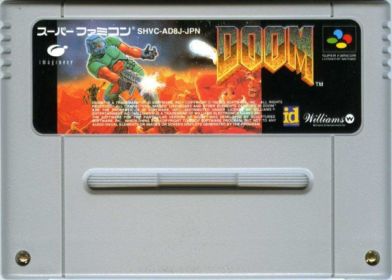
SFC的版本封面就很怪
于是在一堆络绎不绝找上门来谈合作的公司里，他们唯独看上了一家许多人唯恐避之不及的奇怪公司：智慧树（Wisdom Tree）。这是一家创建于1988年，专门开发各种宣传基督教文化的游戏公司。和许多凭借着行业贡献而被人铭记的团队不同，让智慧树声名远扬的只有一点——它是NES主机上最大的无牌生产商。
彼时，任天堂对于第三方游戏开发公司的管控力十分严格，像智慧树这样通过破解了NES卡带上锁定芯片，擅自在市场上销售游戏的行为绝对是在挑战权威。这不仅仅是伤害到了任天堂的利益，使其无法从发行游戏中获得任何版权费用之外，更重要的是它挑战了山内溥先生的理念。
“雅达利之所以会倒闭，是因为他们给予了第三方游戏厂商太多的自由，让粗制滥造的垃圾游戏充斥了整个市场。”
所以你可以想见到，任天堂怎么可能容得下这样一家处于灰色地带的公司。游戏界最强法务部门从发现到智慧树那天开始，就从未停止要求法院禁止他们商业行为的要求。对于这家打着宗教旗号，游走在法律边缘的公司来说，时不时被人盯着的日子并不算好过；何况他们所发行的游戏多数都以其低劣的质量和匪夷所思的内容而饱受抨击。
然而id却同意了他们的合约，给出了《德军总部3D》的代码与引擎。于是，SFC史上唯一未经任天堂授权，可能也是游戏史上最奇怪作品之一的《超级诺亚方舟3D》出现了。它在玩法方面完全没有修改，只是将《德军总部3D》图像素材替换为宗教主题。玩家要先在卡带上插入任意一款正规的SFC游戏来欺骗主机，之后就能看到诺亚在迷宫中用弹弓射击各种动物让它们睡着——这绝对是你游戏生涯里值得一看的傻冒画面。
可想而知，任天堂暴跳如雷，玩家也毫不吝啬怒喷游戏蠢得离谱的内容。至于id，他们笑得前仆后仰。
虽然真的要较真的话，智慧树其实没有在这件事上捞到多少好处，任天堂与玩家的利益受损也微乎其微。但它最关键的，还是在某种程度上对这家当年第三方软件商条款十分强硬的公司赤裸裸的挑衅，有一种反权威的快感。顺便一提，智慧树至今都还活着，不仅在2015年于Steam平台重新上架了《超级诺亚方舟3D》，这次还让游戏成为了销售平台正规授权的作品。Id还给他们点了赞。
就像免除了版权税来传播共享软件版本一样，戏弄行业大佬任天堂在当时是只有id才敢作、且最适合id去做的行为。就像摇滚明星一样，玩家也开始期待着一个代表着行业叛逆之子的形象出现，而这时候没有谁比id更适合的了。
但另一方面，即便电子游戏是个非常稚嫩，仍旧带着许多有待完善的制度缺陷，它一直都遵循着最起码的文化创作核心：劣质作品再蹦达也无法长久。如果id只是一群擅于炒作，DOOM只是个利用了行业漏洞搞出一场营销秀的庸俗作品，它最多也只是在当年能获得商业成功。但你我也都看到了——直到今天DoomGuy还是稳坐最伟大游戏俱乐部成员的交椅。就和马里奥、林克或固体蛇这些经得起时间考验的行业先驱一样。
DOOM是电子游戏。而游戏不论如何首先必须要好玩才有资格名垂青史。
彼时，《龙与地下城》这样的桌面角色扮演游戏是人们宣泄想象力的最佳途径。参与者们三五成群围坐在桌边，用骰子、纸笔和卡牌构建起虚拟的异世界沉浸在其中。玩家通过言语与文字，加上脑海里的想象力描绘出属于自己的冒险故事。
但是，且不提基于它过于复杂的规则和高学习门槛，光是各种各样在表现力方面的局限性，就让桌游难以进入到更大的群体里。它们如果不是书虫们在棋牌室的私人宝贝，就只是沦为周末聚会的下酒菜。即便在今天桌游的传播性已经不同往日，凭借优秀的商业操作不断向着主流大众们传播开，也仍旧难免被局外人误解成是孤僻家伙们自娱自乐的玩具。
作为它下一个进化阶段，电子游戏的出现可以说是完善了桌游最大的缺陷，在想象力之上带来了更加直观的视听与互动反馈。而作为一种新兴文化载体，游戏与它的前辈不同之处在于，它与科技的联系远远超越任何一种过去出现过的艺术表达形式。
70年代初，科研人员还在为黑白屏幕上悦动的光点兴奋不已。而在美国加州某个酒吧里，公众首次认识到了电子游戏的魅力——《Pong》那两根横条、一块像素点以及隔离双方的虚线所组成的世界，见证了一个伟大产业的诞生。
时过境迁，当年那些在酒吧里排队投币，将《Pong》框体入币口塞满以致出现故障的人，怎么也料想不到游戏已经在之后二十多年里产生了那么大的变化。街机不再是酒吧里的消遣玩具，计算机也走入了千家万户，而远在大洋彼岸的任天堂则开启了家用机时代。
这不是3D图形和网络等我们熟悉的技术已然成熟的时代。这是一个所有我们所熟悉的技术与设计理念，刚刚脱离婴儿时期开始蹒跚学步的阶段。
就像我们经常被提醒的一样：并非是由id创立了第一人称的游戏形式。早在1973年美国国家航空航天局艾姆斯研究中心的史蒂夫.科利，霍华德.帕尔默和格雷格.汤普森以及许多没能被记载的先行者，就已经通过《迷宫战争》展现了这一领域的雏形。因此我们可以说早在游戏行业最初的几位“亚当”里，就已经存在第一人称的身影了。
20年后的《毁灭战士》所做的，其实是将这一实验性质浓郁的形式扩展到了下一个最关键的阶段：怎么样才能好玩。于是通过在id诸如《德军总部3D》等前几部作品里的探索，罗梅罗等人得出了一套方案。即关于在第一人称模式下的主要表现元素，如何移动、交互以及延续整个流程的细节内容。
时至今日，几乎所有的第一人称动作射击游戏都可以追溯到《毁灭战士》上面。直到现在它所确立的一系列玩法与表现形式，仍旧让许多后辈受惠其开创性的理念。甚至可以说在它自己奠定基础、在90年代蓬勃发展的古典迷宫探索式FPS里，至今都难以找到跨越过这堵高墙的同类型作品。
历史证明了无数次：一部能影响行业发展进程的作品主要来自于它的开创性；一个游戏在多年后仍旧被人津津乐道则是因为它好玩。而《毁灭战士》之所以作为FPS类型一杆无可替代的旗帜，正是因为它同时具备了奠定类型基础、为同行们如何发展这一领域带来了参考元素；同时，它也拥有着面对这么多年来涌现出的优秀后辈，仍然丝毫不落下风的出色游戏品质。兼具这两种关键特质，才使得DOOM能够作为FPS最德高望重的祖师爷一直被人们所铭记着。
id对《毁灭战士》的理念雏形来自于1992年的《德军总部3D》。本作同样是在一个个大型的半开放式迷宫关卡中探索，搜集道具补给、击杀敌人并寻找到前往下一关的出口。通过上述这些机制，id能够将游戏流程组合成各种“谜题”——虽然规则简单，但却变幻无常。而且就和大众被灌输的刻板印象相符：高速、爽快且狂暴至极。
同样在1992年，其实还有另外一款以第一人称形式表现迷宫探索与求生的游戏：《地下创世纪：冥河深渊》。它是来自于号称角色扮演游戏类型“三神柱”之一的创世纪系列衍生外传。本作故事描述了玩家扮演的“圣者”又一次被召唤到了异世界不列颠尼亚，但由于他传送的时机和地点不太对——在一位公主的卧室时，正值她被人绑架的当口；而当卫兵冲进落难少女闺房时，撞见的就是穿着粉红色睡衣，还没完全睡醒的主角。
于是你为了证明自己清白，只能被迫一个人追着绑匪来到冥河深渊。你还记得上一次来这里的时候身穿全套高级装备，带着一队满级冒险者才将其堪堪攻略了下来；而这次你只能光着脚丫穿着睡衣在里头摸黑探索，并找到那个害你被诬陷的混蛋。
从整体的大局来看，《冥河深渊》其实更接近最初卡马克希望在《毁灭战士》里实现的那样——在一个由多个区域连接的半开放式巨型迷宫里随意探索。玩家从第一层开始，逐级往下攻略整个迷宫的过程充满了各种惊险与未知挑战。整个场景复杂得令人叹目结舌，单是摸清一层架构就远比通关如今绝大多数商业游戏要困难许多。更不要提整个游戏多达8层互相连接的地下世界。
用现在游戏行业最直观的比喻来说，它就是一个3D版本的“银河城”——或者说《黑暗之魂》。
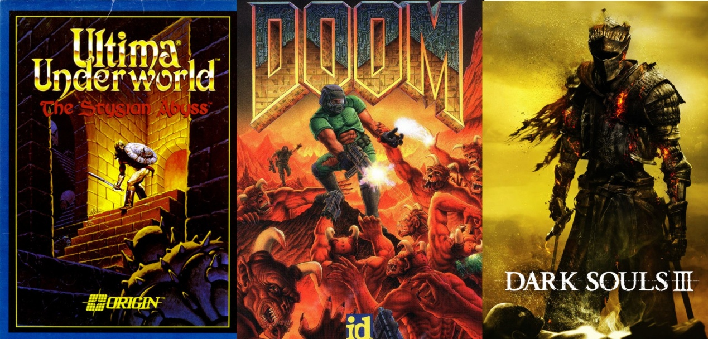
这三者之间的联系比许多人想象的要更深远
和DOOM不同，出了两部作品的《地下创世纪》曲高和寡。虽然在游戏历史上它有着举足轻重的地位——衍生出了《生化奇兵》、《掠食》和《国王密令》等经典作品，但许多年轻的玩家甚至都没听说过这个足以算作《黑暗之魂》祖辈的作品。
两者截然不同的命运有着很多因素，比如《毁灭战士》的发售模式与其传统商业作品性质不同等等。但其中必然有一个最大的关键：《冥河深渊》不够刺激......
出于技术和设计理念等等诸多方面的考虑，id最终放弃了相互串联的世界结构，采用了更加传统的关卡制推进。不过，游戏中每一个关卡仍然保留了半开放式、注重探索与危机环境应对的核心设计理念；不如说，由于单个关卡的形式更加紧凑，才令id得以通过《毁灭战士》告诉世人：即便是豪迈的快节奏风格，也能展现出迷宫求生的独有韵味。
按下回车、选择章节与难度——如同血液流淌而下的特效将主菜单“扯”下后，地狱之旅随即展开。没有废话，不搞那些多余的道德两难抉择与人性阴暗面探讨。与其学那些那些唠唠叨叨半天，讲述的故事与人物却不见得多高明的游戏，id选择了让剧情在《毁灭战士》里只拥有最基本的占比。
仅仅用了寥寥不到2000字的剧本，id就讲述了一个符合起承转合标准、目地性极为明确的故事。无名的陆战队员就像马里奥、林克或萨姆斯一样只有最基本的背景设定，而剩下的内容则由玩家在扮演过程中亲自赋予。整个游戏过程你即便完全不看故事，也能从中大致明白发生了什么、该做什么。而如果愿意花上几分钟去阅读说明书，那么诸如UAC火星基地实验，极权统治下的未来社会以及地狱来客也能增添不少乐趣。
但Id并没有让故事喧宾夺主：他们最优先目标仍然是一个好玩的游戏。他们力图让《毁灭战士》能以进入程序后的5秒钟内，就让玩家立刻投入到战斗当中。并且在此之后99.9%的过程里没有任何“垃圾时间”。Doom是一个纯游戏性驱动的系列。即便是已经走向了次世代、开始探讨更多剧情元素的后续作品，其剧情过场演出的时长也不会占据流程5%以上的内容。
不，Doom并没打算搞这些让你手柄或键鼠拿在手中却无用武之地，或是做假戏（按F哭泣）的手段。
旋律响起，整装待发。游戏一开始就将你置于停机坪（E1M1），并赋予了手中陆战队员每小时92公里的飞奔速度；没有任何情况会阻碍他射击的精度，也不存在什么限制持续运动的体力槽。整个游戏从始至终都是维持在“Run&Gun”的状况下，是游戏行业里速度与节奏最快、反应要求最高的玩法类型之一。
通常来说这种机制会令我们认为，这是一个让自己冲入敌阵发飙，爽爽怒射一番的绝佳时机。然而如果你真的这么干了，最终获得的只有可能是主角临死前那一声性感的惨叫......
很多对DOOM不甚了解的人，都会被它看似狂暴血性的外在气质所误导。事实上隐藏在其表现之下的，是同类作品里都显得十分极端的理性化游戏设计。这个系列所追求的一贯都是对精确、克制与战术规划的高度理解。
游戏的规则简约至极：前进到关卡的指定位置。而这个过程以凭借着并不复杂的敌人、武器、陷阱以及将其赋予在不同的关卡环境中，以焕发出数以万计的变化。整个游戏机制充满了“由简化繁”的美学。玩家所需要记住的规则、系统与操作方式很少，甚至连标准敌人的种类数量都仅有7种。但这些看似稀少的内容，日后证明了它们足以撑得起官方将近200个关卡、民间数十万个地图Wad的可玩性。
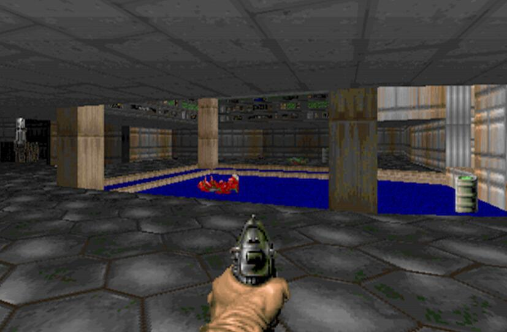
E1M1经常被放到开发者讲座上
作为最初的两位Doom关卡设计师，约翰.罗梅罗与桑迪.彼得森并不打算遵循写实风格。他们明白即便是已经远超同行的图形技术，实质上也无法在1993年为游戏赋予多么以假乱真的画面效果——与其追求那些空洞的画面拖累游戏表现，还不如超越现实以赋予关卡天马行空的想象力。
无论是火卫设施还是地狱，《毁灭战士》的关卡都采用了更加抽象的理念去设计。它们多数都是一些呈现复杂结构、以开放式环境形成的大型迷宫。虽然流程仍然会因为开关和钥匙的限制而带有先后条件，但玩家往往可以选择不按照既有路线去探索；而那些“不走寻常路”的玩家也经常能获得丰厚回报。这种弹性极高、变化丰富的设计理念也让元祖DooM一直都是速通比赛所青睐的对象。
游戏单是官方作品就有将近200个完全不重复、各有其特色与难点的迷宫式关卡.而在其中id为玩家准备了无数种致命性的陷阱——捡起补给突然被火力网包围，在仅有一格宽的独木桥房间中顶着炮火前进，或是突然被传送到有害地形的封闭房间里等等。
玩家要做的事情就是管理自己的资源——武器弹药、生命值以及衍生下去的护甲与其它限时增益物品。它们被摆放在关卡中各个角落，如何获取并在什么时机下去使用，成为了游戏始终悬在玩家头脑中的重要事项。因为90年代最糟糕的事情是：你不可能依靠喘气就治愈枪伤。如果生命垂危并且已经捡光了关卡中的医疗包，那么只怪自己先前太过莽撞。
医疗包自然是定点补给的关键，而生命灵药则带有引导路径和奖励积极移动的功能。突破生命上限的灵魂球是你救命稻草，同时也作为关卡隐藏物品激励着玩家努力探索，至于狂暴药包何时拾取则对于关卡变数有着巨大的影响力。
保住性命你才有机会走到每一个关卡的尽头。你要学习目前所在关卡的结构、规则和可能存在任何角落里的致命陷阱。通常来说，第一次攻略新迷宫必然会吃瘪，但好在不论是哪一个端口或是版本下，游戏都允许你在死亡后从本关开头重新挑战——只不过原始端口下你的武器装备会全部丢失罢了。
就像桑迪所承诺的那样：每一个关卡都是精心设计过的。无论看起来多么绝望，“手枪开局”实际上就是在《毁灭战士》里每个关卡在创作时的基本要求。你总能在其中找到破局的方法。如同下棋一般，《毁灭战士》的关卡设计基本都是来自于各种对“残局”的破解。玩家需要不断学习和试错，才能找到看似无坚不摧的恶魔军团弱点，并在重重包围和无数种“恶意”陷阱中存活下来。
每个关卡都遵循着“地点+编号”的命名规则而来。作为开发阶段最后完成的流程内容，[E1M1：机库]一直都是最受欢迎的关卡之一。它向所有Doom玩家乃至游戏开发者奠定了一个FPS初始章节应当具备的元素：让刚刚接触游戏的人在一个完整的探索、引导和学习过程中了解应该怎么玩。
多样性的房间结构，让你能了解到每种环境下会对战斗造成什么样的影响。各种零零散散的物品加上敌人在场景中的配置，形成了一个个“面包屑”，跟随者它们玩家便能很快地明白各种设施与物品的功能性。甚至对那些善于观察和思考的人，他们还能挖据出表面之下更多的[秘密]。罗梅罗在日后对开发过程的回忆访谈中提到：
“作为关卡设计的最后一环，我一直在不断对其进行完善；要思考如何才能在第一时间引发人们对游戏的兴趣，并且完成接下来十几个小时冒险的准备工作。这是一种运用无声语言进行引导的工作，有着比文字更多的可能性。”
当你进入游戏时，大厅中的尸体成为了最亮眼的点缀。游戏不会用剧情拖延你的时间，但从映入眼帘的第一幕开始，id就尽可能在用细节进行着必要的叙事：“有人死在了你的面前；这意味着发生了一些不好的事情，这里不是一个干净的地方。”
通常来说，《毁灭战士》这种机制和设计如今更多常见于自于恐怖生存类型。但事实上还有另一种比较为大众所了解的风格，那就是以《恶魔之魂》带动的新时代地牢爬行角色扮演游戏。但与此同时DOOM开创了一个虽然强调求生与探索的核心机制，却又毫不吝啬地赋予了玩家角色强悍至极的战斗力，与“魂系列”这个如今异曲同工的经典IP彼此形成了有趣的对比。
在玩家自身能力上，作为一个FPS类型那最关键的枪械自然不能敷衍了事。如今你再看游戏中几种武器自然会觉得有点过于传统，但那是因为id基本上已经巩固了整个FPS玩家角色进攻手段的大致方向。
拳头/电锯-手枪-霰弹枪-机枪-火箭炮-等离子枪-BFG-9000，这一条清晰明朗的列表，几乎完美奠定了后世所有FPS武器设计思路。绝大多数开发者都只能在其基础上进行量化处理，只有少数随着硬件技术进步后才出现了诸如重力枪（半条命）之类产生实质变化的存在。
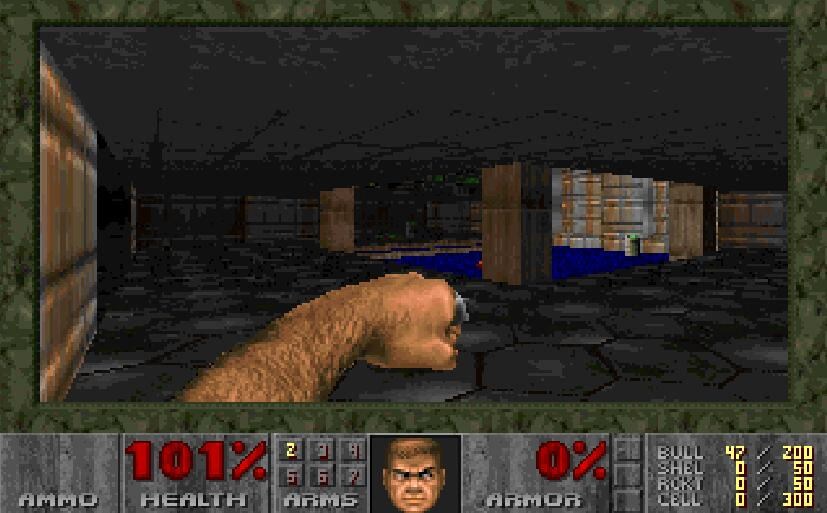
手枪是你默认开局的武器。携带着这把攻击力薄弱射速平均的防身武器，代表着你正处于基础的求生阶段——寻找更好的武器，尽可能规避风险的同时也拥有起码的反击能力。如何通过手枪让自己获得更多装备，几乎涵盖了整个90年代FPS前期流程——尤其是深受DOOM影响的《半条命》几乎将其发挥到了极致。
如果你用光了弹药，拳头是你唯一能仰仗的手段了。但是除了欺负一下落单的僵尸之外，你基本上无法用它处理任何再高级一些的险情。不过，一旦获得了狂暴药包，拳头却又能成为高手玩家的利器。它能够大幅度缓解武器弹药的消耗，甚至成为一种挑战自我的前提条件。
哦，不要忘记你还能获得电锯这个进化版本。它不仅能让玩家近战能力大幅加强，用起来还挺爽…
霰弹枪可谓是早期FPS的标志性符号。基本上它永远都代表着键盘上的“3号键”，也是玩家在经历了前期求生阶段后必定会武装的“牙齿”。在这个阶段，战斗才正式开始。
怀念那个霰弹枪在任何距离下都是致命威胁的90年代吧，因为在此之后它们被所谓的“写实”所束缚，不再能从八百米开外爆掉敌人狗头，更不存在连续怒射100发也不停歇的弹仓。但在《毁灭战士》为代表的这一批古典FPS里你能够轻易做到。优雅的节奏感与致命火力，让霰弹枪成为了电子游戏中最具美感的武器之一。每一次出手都代表着风险与回报并进的举措，一旦在高速移动中成功命中对手，所带来的回报不仅仅是前进道路上阻碍被消除，同时也是一种难以言表的成就感。
旋转机枪是一种高速轻盈的武器。每次开火就消耗两发弹药能让它在瞬间消灭大量低级恶魔，而面对那些硬直概率较高的强敌更是能牢牢将其“钉”死。至于等离子枪则是它的变种版本。更强大的单发杀伤力，换来的是可能被远距离敌人回避的抛射型弹丸；在面对机枪与霰弹枪都略显乏力的强敌时，你最能信任的也只有这把武器了。
不过像机枪和等离子枪这样的东西虽爽，《毁灭战士》有别于其它同类游戏的一大核心又在此时显露出来了。和那些弹药分开使用的FPS不同，除了第三部作品外，DOOM系列一直都强调多种武器通用弹药的系统。即除了火箭炮之外，一般来说其它武器都是至少有两把是共享一种弹药的——如果你打光了等离子枪的能量电池，那么藏在裤兜里的BFG-9000也就跟着变成了废铁一堆。
火箭炮则是一种射速较慢，带有大范围杀伤力的强力武器。它在远距离的时候能发挥卓越功效，但是如果使用不当，则会变成你的自杀工具。另外在这个没有跳跃的游戏里，火箭炮对着墙壁发射的“自残”行为，还起到了某种推进作用，能够让玩家前往一些平时无法抵达的区域。
至于BFG-9000就好像罗梅罗所述的那样：我们打算设计一种菜鸟也能击杀高手的武器，所以就想到了这个开火后视野之内尸骨无存的“大枪”。
这里头不存在“没用”的武器。即便是在拿到霰弹枪后基本就不会再掏出来的手枪，在关卡设计上也有其无可替代的地位。它们奠定了后世FPS创作的标杆，围绕这一排武器库所衍生的变化多年来很少有实质性突破，即便是那些剑走偏锋的作品，在与游戏玩法架构之间的契合也无法达到《毁灭战士》如此完善的高度。
游戏的伤害计算方式模拟了类似TRPG的“骰子”理念。每一发打在敌我身上的弹药，都由一个伪随机数值生成器来计算伤害，并且就和DND等游戏一样不同的武器都具有各自不同的逻辑——比如玩家手枪子弹通过一个随机数（1-3）乘以5来计算，以造成5-15点伤害，而如果使用的是火箭炮的话则是以每颗弹药以“基础伤害20+爆炸中心向外扩散而逐步递减140点伤害”来得到最终伤害值的。
但另一方面，它作为一款动作游戏，自然提供了玩家靠着操作能力对抛下的骰子进行改变的权力。在游戏里存在着隐性的“动能”概念，当玩家对敌人所处位置向前移动时，武器发射后的随机数会得到提升，因此在游戏里向着敌人位置奔跑到最近距离后开火，并可能达到最高的伤害收益。
此外连续的攻击也会让掷出的骰子越发难以获得理想的数值，因此在乱战中不要盲目乱开火，有节奏的施展你每一次进攻才是最合理有效的习惯。
而我想应该也不需要特别提醒：你可以靠操作让敌人的攻击“Miss”了吧。就像前文所述一样，DoomGuy的运动速度极快，也不存在什么武器后坐力等限制。只要你个人游戏水平够高，很多陷阱都能凭借反应力与操作让险情大大减低。
随着关卡配置和每个人的行为习惯，游戏能够提供各种各样的解法。但不管你选择了什么样的游玩风格：在掩体后面畏畏缩缩、在前进途中粗心大意，结局都只能是吃不了兜着走。
三大章节24个主线关卡和3个隐藏关，元祖版本的《毁灭战士》在游戏时长上恰到好处。虽然它到今天仍旧有许多人愿意游玩、甚至连初次接触的年轻人也有不少能够感受到乐趣的，但总体而言就和绝大多数游戏所面临的情况一样，多数人并不会花太多时间去反复游玩单人战役模式
因此，当人们在说明书上发现这个游戏居然还有一个“隐藏”的多人模式时，那种感觉就好像真正将电子游戏带入了下一个时代。
我们绝大多数人在现实生活当中从未参与过正式竞技比赛，平日里也往往都是几乎不太可能与他人发生摩擦或冲突的凡夫俗子。但你我至少都明白一点：在一场诸如扑克牌之类的较量中击败对手，有一种难以形容的快感。
桥牌扑克尚且如此，换到更加有趣的电子游戏里头自然是更加过瘾。对着电脑程序控制的怪物开火很有趣，但它仍旧比不上和朋友较劲、互相比拼技巧或是偷偷在他们背后来上一发火箭炮。看着互相之间大呼小叫，骂出平日里绝对不可能出现的污言秽语——还无比安全。这种新的交流形式让当时只知道聚会蹦迪喝啤酒的年轻人找到了新的乐子。
现代商业游戏的大趋势之一，便是越来越崇尚“多人同乐”。在相当一部份玩家群体的价值观里：有在线多人=物有所值。而厂商为了顺应这种市场变化，也逐渐地将资源的天平倾向了在线服务，导致过去纯单人体验主导的游戏，反而渐渐在今天的行业里变得有些稀罕。
不得不说，市场风向一直将风水轮流转的戏码演绎得淋漓尽致。打个可能不太恰当的比喻：这就好像昨天某些还口碑上佳以良心著称的“蠢”公司，突然因为某次商业操作失算或是倒了霉而在一夜之间声名扫地。那么人们往往会立刻选择性忘记他们曾经的贡献，将其贬为欺诈专业户和业界毒瘤。
口碑尚且如此，游戏的流行风潮就不必多说了。
作为第一人称视角的鼻祖，《迷宫战争》不仅奠定了表现形式，同时还具有最初的多人局域网游戏模式。霍华德等人在1974年左右为其添加了一个多人服务器对战功能，并在之后由汤普森将其带到了麻省理工大学里继续开展内容。这个简单的服务器不仅提供了8人对战功能，还能添加AI机器人参与游戏。此外，在另一款早期FPS雏形《斯帕辛》也于同年添加了最多允许32名玩家的网络对战。
可以肯定的是，从第一人称游戏诞生之日起，它就几乎与多人网络游戏形式捆绑在了一起。而在当时为了推广网络游戏模式，可谓是让开发者们费劲了苦心，并且被许多人视为对行业贡献极高的前沿贡献。
那些先行者们在一开始就对多人游戏进行了尝试，但这些游戏并未对内容进行更深入的设计。《毁灭战士》是第一个增加了变数与规则性的作品。在id开发本作的时候，诸如《街头霸王》等专门用于让玩家之间竞技的作品已经证明了人与人之间的较量，有着和纯粹单人攻关或是多人合作截然不同的乐趣。因此这种模式不能仅仅将单人模式的机制照搬进来，而是需要一个专门的规则来支撑起真人对战时的变数。
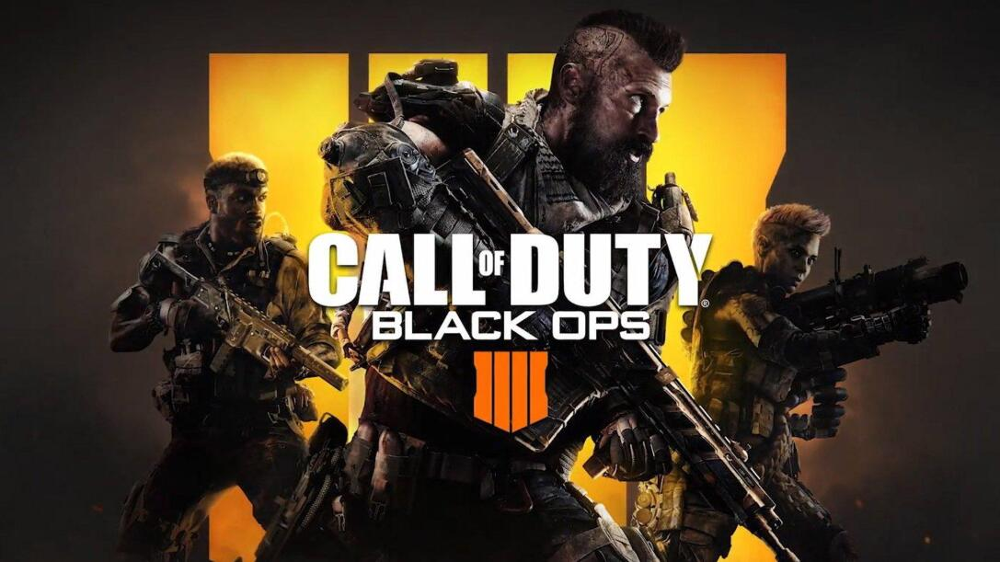
大众还是更青睐多人
id准备了一个最多4名玩家同台竞技的[死斗模式]。它建立在单人游戏快节奏的核心机制下。玩家之间将会在复杂的关卡中互相抢夺资源，在狭窄的通道中决斗，或是利用复杂昏暗的场景进行偷袭。战术依照每个人对环境的利用、操作技巧的不同而产生各种变数。通过调制解调器或串行链路播放，玩家直接参与和观看他人的游戏，使得《毁灭战士》成为第一个真正充分利用LAN和调制解调器功能的游戏。
相对来说，局域网游戏一次最多允许四个玩家参与，自然要比只能两个玩家游玩的合作或单挑模式好得多。有趣的是，id一开始其实看好的是多人合作。卡马克直到发售之后也一直对死亡竞赛报以怀疑态度，认为不会有什么人会在这上面花费太多时间。然而事实证明，人类潜意识中最喜欢的还是互相对射——至少对北美青年来说确实如此。后来在回忆中卡马克也承认到：“在完成了其它所有内容之后，还能抽出足够时间添加一个多人游戏内容是相当幸运的。”
毕竟他们在一开始以为只有1%的玩家会沉迷于多人游戏。但从彼时到今日这么多年的市场环境证明，玩家真的太喜欢一群人同乐了。
技术的进步也是多人游戏传播开来的关键。1993年的时候，伊利诺斯大学的两名黑客发布了史上第一个浏览器[Mosaic]，正式开启了因特网进入大众的时代。Mosaic将1989年由欧洲计算机研究人员提姆.伯纳斯-李（Tim Berners-Lee）开发的网络程序万维网进行转换，让它从原本只能显示链接与文档的形式，变成了如今我们熟悉的图文格式。友好的用户界面与便捷操作，进一步将互联网的理念带进了千家万户。而在这样一个新时代刚刚起步的当口，id发布了《毁灭战士》，并表示所有人都可以运用网络无障碍地进行游戏比赛。
但是，即便是今天多人在线游戏也一直饱受网络速度的困扰，更不用提那个连10M容量的共享版软件也要下载许久的年代了。当时能够支撑得起网络的，事实上只有北美城市的学校、企业或是政府机关部门。而他们花那么多钱构建网络可不是来让年轻人互相发射火箭炮的。
不过另一方面，在那个计算机技术只掌握在少数人手中的时代，几乎每个有权摆弄这些高级设备的人都对《毁灭战士》感兴趣。于是当12月10号id将游戏上传到服务器后，上至德州美国能源部门和休斯顿火箭发射中心，下到各个大学的计算机研究室都安装上了DOOM。乃至英特尔与微软这些大企业的计算机上，爱与火箭炮也成为了所有极客们的狂欢。不仅如此，甚至连九寸钉乐队主唱这样的社会名流，也无法抗拒DOOM诱惑而花了大价钱购买顶级配置的电脑。
就像前面说的那样，刚刚起步的互联网受到了地狱力量的冲击而逐渐无法承受重担。导致接下来这些部门的主管都不得不下死命令：不要在公用设备上玩死亡竞赛，更不要在工作期间玩《毁灭战士》。英特尔公司直接出台新规定：禁止在公司内部运行DOOM相关程序。其它企业部门也在随后展开行动进行突击检查，将一个个上班玩《毁灭战士》的员工揪出来。
最离谱的要素路易斯维尔大学。他们特地写了一个病毒程序，专门用于删除机器上的DOOM。
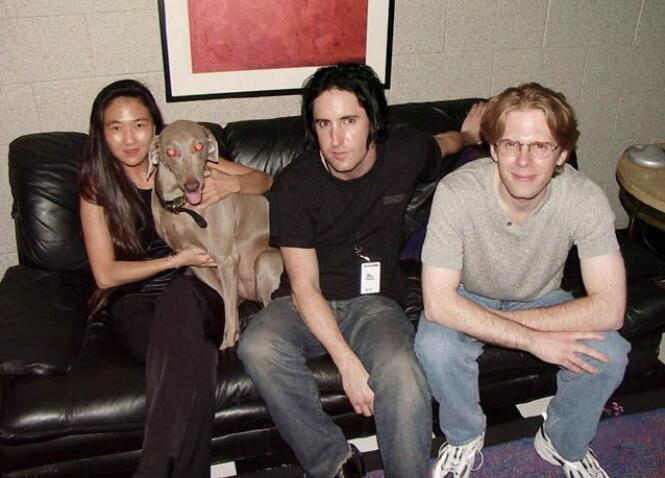
九寸钉也是id的狂热粉丝
当汤姆.霍尔开玩笑地在1993年第一天发布了新闻稿时，他提到《毁灭战士》将会成为全球经济下滑的罪魁祸首。绝大多数国内玩家自然是难以想象90年代初在美国发生的这些故事。面对这种多年前的“都市传说”大多也是一笑了之。然而在那时候，美国人真的有这种担忧。根据许多欧美玩家的回忆，这是他们最初出现全民偷玩游戏的一次经历。人们扎堆躲在角落里等待学校人去楼空，在晚上溜进计算机房开始地狱之旅。随后，当第二天黎明到来时，一群挂着黑眼圈的学生们便被教授与实验室管理员轰出门——某种程度上到这一环节对我们来说倒也没那么陌生。
约翰.罗梅罗成为了无数年轻人的偶像。他们并不了解这个留着长发，与自己年纪相差无几的奇怪家伙究竟有什么样的性格与经历。在他们眼里，罗梅罗就是一个游戏玩得超棒，爱玩爱笑和自己看起来压根就没啥区别的兄长。但他年纪轻轻就成为了百万富翁，做出了世界上最好的游戏之一。
至少在90年代初，“明星开发者”这份荣耀被附加到罗梅罗身上时，完全是与宫本茂或席德梅尔等人截然不同的。罗梅罗极富亲和力的特质产生了一种对比心理，玩家们开始相信自己有朝一日也能成为站在聚光灯下的大明星。因此当他亲自出现在玩家举办的《毁灭战士》比赛现场时，所有人的反应都好像迈克杰克逊即将上台演出一样。因为他实在是离自己太近了，每个人都以为能在其身上看到自己未来的影子。
和其他人不一样，罗梅罗也享受这种拥戴。他成为了id的发言人。当卡马克等人在考虑着更新补丁修复各种问题，一同开会策划着新作的方向时，罗梅罗则负责到处出席媒体采访，并不断应酬玩家邀请的《毁灭战士》聚会比赛。
任天堂曾经举办过《超级马里奥兄弟》速通比赛，《街头霸王2》和《真人快打》等格斗游戏也兴起了一股对战热潮。但从来没有人想过将游戏办成正规化、具有专业性的体育项目。id的《毁灭战士》让许多人看到了这个可能性——毕竟过去可没有某个游戏高手一到场就迎来摇滚巨星般的热烈欢迎。而这个人甚至还是游戏的开发者。
随着每天十几万美金涌入id的口袋中，这场游戏行业的革命也带动了一个过去从未上得了台面的东西：游戏比赛——或者用今天时髦的说法就是[电竟]。
到了1994年，[DOOM]相关的字眼在公司企业的计算机里仍旧是如同病毒软件般的存在。许多员工不得不告诉家人和老板：我们在加班。但没告诉他们为什么到了半夜两三点还在努力工作——因为他们在忙着对地狱的恶魔展开种族清洗。
德克萨斯州专门为行业人员提供视频培训的[互动视觉公司]老板鲍勒.亨特利最初跟其他同行们一样，明令禁止员工们在公司玩《毁灭战士》。然而即便威胁要将他们炒鱿鱼，也只是使得计算机里的游戏被换成了别的启动命令行。这让鲍勒开始思考并尝试了解这个《毁灭战士》到底是什么来头。
此时距离共享版《毁灭战士》上市已经过去半年多了，全球至少有几百万人陷入到这场风暴中来。鲍勒也是个IT领域的人，很快就明白了这个游戏背后所代表的跨时代意义——尤其是它的多人网络模式。
最初的《毁灭战士》只能通过局域网、调制解调器和串口直连进行在线游戏。而鲍勒觉得，如果能将这个模式的范围推广到全国级别——比如通过电话线连接，那它将会彻底征服整个计算机游戏市场。就在鲍勒提出了想法后，他底下那些“DOOM瘾君子”们立马就在一个多月时间后，真的给他弄来了《毁灭战士》的在线服务器。他们将这种在线多人游戏配对服务的雏形，称之为[广域网拨号游戏服务（DWANGO）]。
这种模式在90年代一度盛行。要使用该服务，玩家需要付费并运行DWANGO客户端软件，以便拨入DWANGO服务器。最初它只提供了德克萨斯州克休斯顿的电话号码，不过后来随着业务的扩展，很快在其他城市也建立了许多服务器。
不过，历史上DWANGO拨号方式并没有在欧美持续太久。因为它随后几年里就被更加便利的在线游戏服务形式所取代，并于1998年10月正式停止运行。但即便如此它到底也是最早的在线游戏服务之一，并且在日本的分部意外延续了下来，发展成为后来弹幕网站鼻祖[Niconico]托管服务的电信媒体公司。
所以，你也可以这么理解——DOOM的多人诞生了DWANGO公司，用于90年代的互联网服务，后来这家公司孕育了弹幕视频网站鼻祖Niconico，而没有N站的影响与启发也必然不会诞生bilibili……
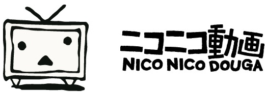
DOOM——DWANGO——Niconico——bilibili（笑）
当然，这些事情还需要好多年才会发生。对于当时的鲍勒来说，着眼于现下的问题要更加尴尬：虽然他尝试了从各种手段，id却一直对他的合作计划不理不睬。
这大概也怪不得他们。卡马克等人几乎完全不问身外事，只知道向下一个目标前进；至于罗梅罗则天天忙着应酬——不过并非是西装革履在酒店里喝香槟，而是在玩家们举办的各种聚会上边大口灌着可乐然后用火箭炮将他们轰成渣渣。为此鲍勒和同事只能亲自飞到纽约——这里正打算举行另一场《毁灭战士》比赛。罗梅罗自然也将出席现场。对于鲍勒来说，他已经将全部家当都压到了id和他们的地狱游戏上面，如果罗梅罗对这个计划不感兴趣，公司也将完蛋。
不幸的是，事实上早就有诸如美国在线或时代华纳等大公司，也想着要包下id在线多人服务的合作。而id的心思则更加激进：直接在下一部游戏《雷神之锤》里内置因特网在线多人服务的支持。但这时候毕竟离游戏上市还有很久，所以这段时期内找个合作伙伴来处理这件事也无伤大雅。因此对鲍勒来说很幸运：id素来更喜欢跟和他们一样的小公司谈合同。
就和整个第一人称射击的兴起一样。随着《毁灭战士》在多人游戏比赛项目上办的风生水起，许多后来者也都将其在线对战视为FPS的必备模式。汤姆.霍尔在离开id转入Apogee后，于1995年带来了《龙霸三合会》，并将夺旗模式与火箭跳带向进了行业中。随后，诸如《毁灭公爵3D》等一系列竟品也都不断尝试深化多人模式的乐趣。最终在1996年id推出了《雷神之锤》，昭示着这个原本只是FPS附带品的玩法彻底改变了游戏行业的运作模式。
随着《雷神之锤》上市，id的忠实粉丝们觉得也是时候了。于是在众人的推动下游戏史上第一个、也是目前为止运营最长久的大型电竟比赛活动——[雷神大会（QuakeCon）]在同年举办。它云集了世界各地的id游戏玩家，为了荣耀与奖金，当然还有“爱、和平与火箭炮”而进行为期3天的激战。这个当初只有150人的爱好者活动，为后世许多游戏公司提供了灵感——包括暴雪嘉年华或Valve公司一系列活动等等，都可以看到雷神大会的影子寄宿其中。而一切的起源，其基础还是在于Doom为在线游戏服务所下的定义。
1995年1月，全球已经有上万名玩家订阅了《毁灭战士》的在线多人游戏服务。鲍勒与合作伙伴在未来的几个月里跑遍了美国，飞往意大利和澳大利亚等国家，为的就仅仅是假设服务器。每台DWANGO能给他们带来上百万美金的收入，而在这个过程中鲍勒的公司能从中获得20%的提成。这直接让他们这家平时入不敷出的小公司咸鱼大翻身。
以id为首，一批围绕着《毁灭战士》的美国青年都成为了羡煞旁人的富豪。在《DOOM启示录》中曾经提及到，但鲍勒等人在合约签下的4个月后，立马变身成了高级夜总会舞厅出手最阔气的大佬。而id从《毁灭战士2》面市几个月后存入的头一笔版税就高达500万美金。甚至一度让外人以为罗梅罗等人是在搞什么见不得光的黑道事业。
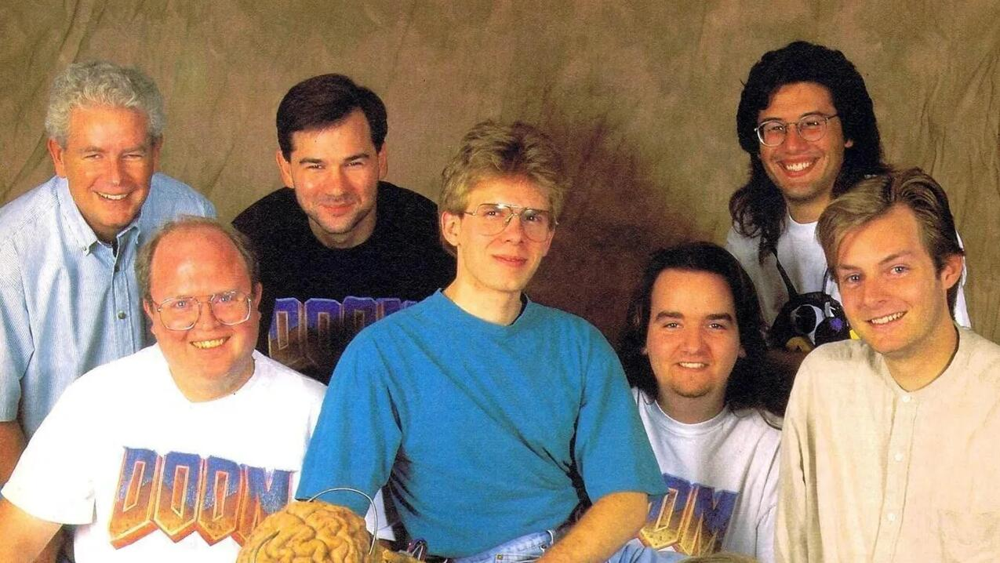
id的成功行业里里外外都羡慕不已
不如说，有的人还真就把id当成了比黑道匪帮更可怕的存在。恨不得将他们挫骨扬灰。而这就是一场关于电子游戏在政客、教育部门和主流舆论的误解与利用之下，为自己在社会上正名的斗争。
“那些想扼杀他人创作自由的人，被最可怕的魔鬼附身——撒旦就藏在他们狭隘偏执的灵魂里。——AC/DC乐队主创安格斯.杨”
如果各位家里头对老物件的保存比较看重、尤其是对80年代早期一些书籍还有所保留的话，说不定会记得有一本叫《怎样鉴别黄色歌曲》的书。这本由人民音乐出版社编写的书籍，介绍了一系列作者认为的所谓“色情有害歌曲”。目地自然在于防止新中国青少年被那些资本主义变态污秽思想毒害，抵制淫秽歌曲所造成的可怕影响。
这里头的“邪恶歌曲”有：《何日君再来》或是《蔷薇处处开》等经典老歌，而诸如爵士乐、摇滚乐或是猫王等歌手必定也都被扣上了传播色情淫秽思想的帽子。
进入到了网络时代，人们又重新挖出了这本当时定价两毛二的“名著”。某种程度上来说拿来作为与时代进步的环境做一个比较倒颇具参考价值。更何况，即便不考虑它无可奈何的时代局限性，其中洋洋洒洒5万字的黑色幽默内容也颇具观赏性。当然，这里不是要以上帝视角来评判过去的人眼光如何狭隘。主要的对比方向在于：不要以为这种情况只发生在我国。即便是向来标榜所谓自由民主的西方国家，对于艺术创作的误解与污蔑也从来未曾停止过。
1985年，一个名为[家长音乐资源中心（PMRC）]的组织在美国成立。该组织旨在管理行业中日渐泛滥的所谓“不健康歌曲”，自称是青少年身心健康的一道防线。创立该组织的主要成员都是来自于当时的政商界名流。而契机而仅仅是因为一次家庭检查——时任参议员、后成为副总统夫人的蒂珀.戈尔在翻看女儿物品时，发现其中的歌曲带有提及爱情和略显暧昧诱惑的词汇。
她立即断定：自己的女儿最近变得不安生了肯定是流行音乐害的。
此后她通过自己的关系网拉拢了一帮社会名流组建了PMRC。当组织一开始运作，他们就列出了一份榜单认为具有严重危害性的歌曲名单：从麦当娜到AC/DC等等著名歌手都历历在目。蒂珀女士称这一份挖掘出行业毒瘤的名单叫做《肮脏的十五岁（Filthy 15）》，认为只要把这些出头鸟打死就能让青少年不再犯罪。实现真正的美国梦。
时隔多年后，PMRC早就因为窝里斗以及各种各样的混乱因素，在90年代便宣布解散。而那些名单上的“社会渣滓”们却多数都还在高声歌唱，不少人也在文化艺术领域做出了无可估量的卓越贡献。
就像当年AC/DC乐队的安格斯.杨在得知自己被扣上了这么一顶大帽子后只是耸耸肩。他的表率很明确：“摇滚精神其实很简单，那就是与任何试图谋杀自由的家伙抗争到底。”。
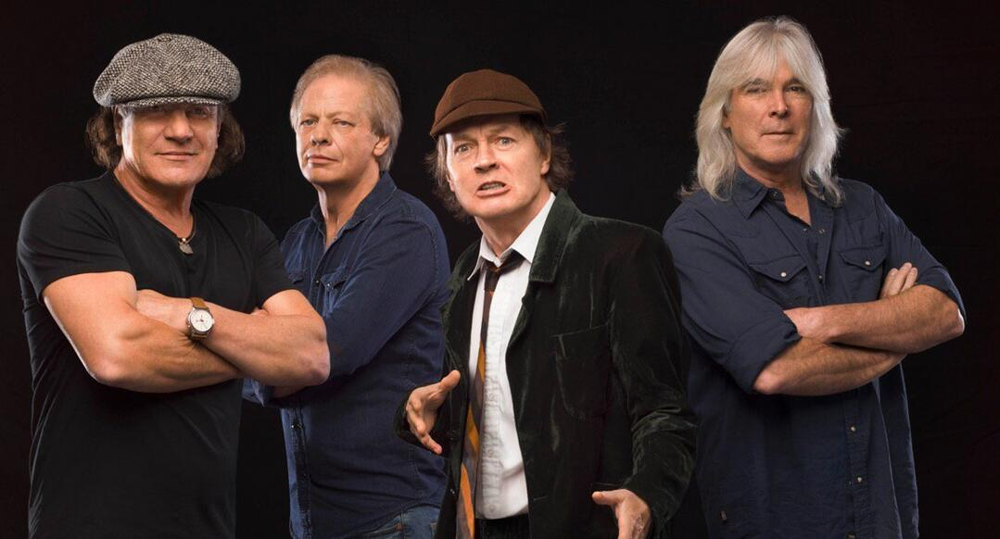
AC/DC等艺术家丝毫不畏惧舆论的偏见
每个时代都存在着它独有的短视与偏见。毕竟对于人们来说，任何跟新生代文化创作或是和未知事物这些字眼有关联的东西，都可能是十恶不赦的存在。就像如今因特网被视为混沌深渊，90年代电脑被认为是科技毒品，80年代则痛斥流行音乐一样；而更久远的时候，中国人认为足球和小人书耽误学习，美国人认为漫画毒害青年人等等都是一样的。但那个时候又有多少人能料到这些东西今天的文化价值与成就。
即便是电影也没能逃过这种“定律”。 2012年7月20日，美国科罗拉多州首府丹佛电影院《蝙蝠侠3：黑暗骑士崛起》的首映礼上，一名头戴防毒面具的男子持枪冲入会场进行扫射。在特警将罪犯制服之前，该男子已经造成了12人死亡，70人受伤的惨剧。而犯罪学家却在事后轻描淡写的说道：该男子的装饰与行为极有可能是在模仿“小丑”——蝙蝠侠故事经典反派。
电影中出现各种暴力犯罪、情色与精神疾病等等内容早已不是少数，而且你我都知道真人演绎的电影相比如何一种艺术载体都要露骨得多。上述事件也不是第一次拿“模仿电影”来解释犯罪行为。比如2007年佛吉尼亚理工大学枪击案犯罪就被认为是观看了电影《老男孩》，而2009年曼哈顿星巴克爆炸案作案者在事后为了推卸责任也声称是受到了《搏击俱乐部》影响。
但电影早就已经具备了足够的社会地位，不是随便就能诽谤的。因此电影行业面对这种情况的态度也十分直接：“别怪电影，心理问题很常见”。
所以就如同那句被说过了无数遍的老生常谈一样：人类的历史就是复读机的历史。作为新生的一种文化创作形式，电子游戏承载着比电影或小说更强大的叙事能力。它的互动性为体现文化思想的手法带来了难以想象的进化。而这必然会因为内容上的多样性与包容力，而招致卫道士与保守派的恐惧。
虽然一直以来，美国就因为对枪支管控松懈，治安维持不力而饱受枪击案件困扰。但在特朗普任职期间，这种现象比以往呈现出了更加频繁的集中爆发。当然，我们这里绝对不去探讨什么政治话题。不过关系到游戏方面，由于各种枪击案件可能都牵连了太多政府部门无法触碰的领域，因此在民怨滔天的情况下，白宫只能再次施展老技俩——枪是不会杀人的，人们会死是因为被电子游戏杀害了！
然而一次次的事实证明，这些案件能够真正与电子游戏扯上关系的寥寥无几。唯一能牵强附会的也就是这些人在生前都曾经玩过游戏，但作案动机却总是另有蹊跷。比如最讽刺的一次就在不久前的2019年8月，在接连两起枪击案过后，白宫方面想都没想就立即喊出了“肯定又是电子游戏到处乱杀人了”。
但事后的调查却狠狠甩了他们一巴掌：两个凶手不仅都没和游戏有什么牵连，甚至还有一人是特朗普的粉丝。在推特上的言论都指出了行凶动机很可能是听了总统大人的演讲后，被煽动了对外来移民的仇恨。
多年来的种种事实依据证明，电子游戏所导致的犯罪与堕落可能性微乎其微——人类不会因为某个文化形式而改变自己的天性。无数专业人士经过广泛研究，也用数据证实了电子游戏与暴力行为之间存在直接与间接联系的可能性，从来都不比音乐、电影或是其它文化产物更高。美国心理学会就已经发表过声明：人类的暴力行为乃至犯罪冲动，与游戏中存在的暴力内容之间不存在因果关系。由斯泰森大学心理学教授领导的研究团队也提到，不论是暴力电影或游戏，乃至其他形式的文化媒介，都没有证据能表明它们会导致在现实中实施严重暴力行为。
因此，虽然可能因为社会地位在近几年尚未达到不被骚扰的高度，但即便是不接触电子游戏的人也已经逐渐认清了事实。它就和所有能够容纳不同文化和艺术形式的载体一样，会存在着多样的表现力——这其中包括时不时会出现的暴力场景，或是以其它具有负面情绪的内容去作为叙事手法。但除了极少数本就是故意利用电子游戏搞事情的“不谨慎人士”之外，从来没有一个正常的游戏开发者会主动去宣扬仇恨，更不会推崇对无辜者随意使用暴力。
但这些在如今已是绝大多数人认同，属于老调重弹的观点，在90年代却很难说服舆论。人们在那时候仍旧将电子游戏视为洪水猛兽——即便是欧美也如此。而作为在最敏感时期站出来的逆行者，id与DOOM成为了这场对垒的核心关键。
1993年12月9日，就在id发布《毁灭战士》的前一天。美国参议院政府和司法小组委员会召开了一场对后世游戏行业影响深远的联邦听证会。它的内容，便是有关于彼时被认为越来越严重的“电子游戏暴力内容”进行探讨。
在会议上，像《午夜陷阱》和《真人快打》这样的游戏成为了集中声讨的对象。参议员Joe Lieberman指责前者带有“无意义的暴力演出”和“对女性进行性侵犯的内容”。而任天堂作为这场听证会中与政客们站在同一阵营的电子游戏厂商出席代表，也为了短期利益以及打压竞争对手而站出来对其进行批斗。
曾经担任过律师，时任美国任天堂执行副总裁的霍华德.林肯（Howard Lincoln）在听证会上向委员会表示：“《午夜陷阱》这样的游戏绝对不可能出现在任天堂的主机上，因为这不符合任天堂合家欢的风格”。
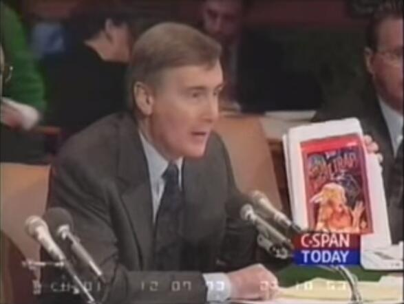
曾经选择站出来谴责游戏的任天堂
随后他甚至现场打起了广告，强调了在任天堂SFC上发售的《真人快打》才是最好的版本——因为它不会出现像街机或是邪恶的世嘉MD版上那样的恐怖暴力内容。霍华德将任天堂描绘成了一个为了维护儿童纯洁和行业道德力量，甘愿放弃商业利益的殉道者。然而当反对者站出来提到了分级制度的形式以及用户年龄层不同时，林肯立刻暴跳如雷，表示“游戏行业不可能面向成年人”。
事实上，这场听证会本身就是任天堂所乐于看见的。在会议上被拉出来抨击的，几乎全部都是世嘉平台上的游戏。像《午夜陷阱》这样用真人拍摄技术打造的互动电子小说，从一开始确实“不可能出现在任天堂主机上”。因为他们现有主机想做也做不出来。
至于SFC版《真人快打》的成绩，更是彻底验证了游戏市场风向变动的大势所趋。虽然任天堂主机上的画面更好，运行也流畅许多，但销量却被移植度明显不如的劣化MD版远远甩在脑后，甚至让任天堂在北美的市场不再具有压倒性优势。原因也很简单——MD版本内置了一个作弊码，它可以允许玩家打开隐藏的设置菜单，让游戏还原街机版的血腥场面。而SFC版不仅修改了终结技的演出，更是将喷血换成了喷汗。不仅完全失去了游戏特色，甚至看着还比喷血更恶心人。
在接连受到市场的冲击之下，任天堂自然要以过去拥有的“好孩子形象”作为筹码，趁机打压竞争对手。
这场被《华盛顿邮报》和《纽约时报》等各大主流媒体争相报道的听证会，是电子游戏史上重要的一页篇章。虽然从本质上来说，它是舆论对电子游戏误解与偏见（以及钱）导致的一次有预谋的打压，但理性地看待的话其实也并非全是坏处。因为它推动了随后互动数字软件协会——也就是今天的娱乐软件协会（ESA）在不久后的1994年4月成立。该协会在同年设立了娱乐软件分级委员会（ESRB）这个对电脑游戏和其他娱乐软件进行分级的指导制度。但另一方面，它当时确实让电子游戏行业受到了不小的冲击——尤其是社会舆论在不了解情况的前提下，单纯认为“哦，电子游戏被批斗了”便对之形成了刻板印象的偏见。
这场听证会后的一段时间内行业人人自危，不明所以的外部人士用有色眼镜牢牢盯紧着，巴不得谁再犯错误被揪住了辫子，让好事与投机主义者再闹出点什么名堂。然而就是这么一个敏感时期，id在听证会的第二天发行了《毁灭战士》。
暴力、血腥、且带有浓郁的恶魔元素，这本身就令《毁灭战士》带着一层强烈的反主流色彩。而它的创造者则是些从小就不安生的“小兔崽子”——顶风作案早已是家常便饭，就连长着一副西方刻板印象书呆子脸的约翰.卡马克，也曾经因为炸弹抢劫案件而蹲过少年管教所。而这么一群本就有“前科”的叛逆孩子在敏感时期做了一个更加叛逆的游戏，自然标志着是对主流舆论和行业风气的一次挑战。
让许多刚刚从听证会缓过神来的人没想到的是，除了极少数的批评声之外，媒体几乎一片倒的给予了《毁灭战士》以好评和肯定。玩家方面更是完全没有任何对所谓暴力内容有什么抵触情绪——毕竟实际上Doom从来就没有什么写实露骨的残酷描写，而是更倾向于卡通风格的黑色幽默。
不过，仍旧有一些人对其表示担忧。伦敦《卫报》的评论员就表示虽然他个人非常喜欢、甚至沉迷不已，但这东西确实不适合孩子。它和《德军总部3D》一样，在德国被禁止销售、传播和进行广告，直到多年后才解除了这一禁令。而宗教团体也曾经一度将其打上“撒旦崇拜”的标签——但事后发现他们承认是搞错了，因为一开始宗教团体以为这个游戏是控制恶魔杀害人类，而不是实际上的踢恶魔屁股主题。而在后来于世嘉Genesis32X主机上发售的移植版本，则成为了史上第一批拥有[M评级]的电子游戏之一。
多年来，DOOM一直处在风口浪尖上，但id（尤其是罗梅罗）素来对各种质疑与抨击的反应是：FxxxYou。他们和AC/DC当年面对PMRC一样，从未在游戏内容表现上做过一丝一毫的让步。毕竟任何玩过DOOM的人都明白，虽然它里头有着无数残肢断臂的场景，并且还是最具沉浸感的第一人称视角表现；但这个系列却从来都未曾有过任何实质上可以称得上“不良”的内容。它那黑白分明的纯粹，除了让反对者们反复抱怨那些看起来一点也不真实的肉块之外，始终找不到其它可以用来批评的地方。
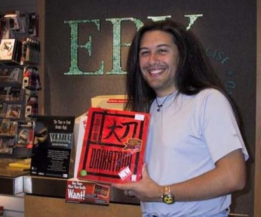
罗梅罗的巨星传奇止步于大刀
而实际上即便是那场听证会，之后一系列发展也和当时与会者们所想象中的不一样。在成立了分级制度后，游戏开发者们反而更加能肆无忌惮地表现游戏内容。“反暴力”警告不仅没能对id等先行者们造成丝毫伤害，甚至进一步加快了游戏行业新时代的到来。
就连前几个月里在法庭上努力维持“纯洁”形象，坚定地站在卫道士一边的任天堂在发现自己确实无法操控玩家思维选择服软。他们公开表示会更加考虑成人用户市场的需求，在游戏内容上将顺应分级制度的到来而做出改变。不仅保证之后在移植《真人快打2》时不会删减内容，甚至还主动联系了之前将其拒之门外的id：
“DooM整挺香的嘛，给我也来一个！”
“我仍然记得第一次看到“星球DOOM大战”时的感受。有人将[死星]放到我们的游戏中，让我对自己作为实现这一切的成员感到无比骄傲，我此时完全相信创作能够成为他人画布的游戏是正确的方向。因为这样很酷。——约翰.卡马克”
最近这些年来，Doom系列登陆任天堂主机平台早已不是什么稀罕事。另外许多人也开始认为，DOOM其实在某些方面与超级马里奥有许多相似之处。这两部作品都并非是所代表的类型中最早出现的作品，但都成为了无可替代甚至难以超越的奠基者。在日后所受惠于两者的后辈画面更好内容更多、剧情演出也更加精彩多样。但在核心的游玩内容上，却始终难以跳出它们所界定的框架。
此外，两者大道至简的设计理念都是依托于关卡设计以带来无穷变化。之后它们也出现了依靠民间创作者不断添加新关卡来延续生命力——只不过相比Doom天生的社区性质来说，任天堂直到推出了《马里奥制造》这种官方游戏才得以获得与其相同的定位。更不要提Doom作为计算机平台游戏，在创造性方面肯定是有着无可企及的巨大优势。
凭借开源理念和为玩家所提供的创作工具，DOOM成为了史上最早通过修改游戏来扩展玩法和主题，并拥有第一个大型Mod社区的游戏。
回想自己曾经和人讨论过最初为什么喜欢DOOM的契机。当时我提到了关于90年代一度在中国流行的录像带电影风潮。那个时代有着最开放随性的文化创作环境——换句话说，什么屎尿屁黄暴狗血都能肆无忌惮的展现。Cult文化成为了电影人在商业领域之外释放自我的另一个阵地。
那是个大家不会在乎B级片里为什么角色那么蠢，能够放开身心尽情享受外星人、鬼怪与其它脏东西锤爆傻冒儿鬼佬们狗头的时代。
因此，即便是在FC和MD上，我也时不时喜欢将一些比较符合“黑暗气质”的游戏与刚刚看过的某部B级片相混合。想象自己手上玩的就是一个恐怖电影的游戏版。但自从遇到了《毁灭战士》，我再也不需要特地去演戏了——这就是最好的异形同人游戏。也许它看起来卡通了一些，里头的怪物也没异形那么酷炫，但它无论是氛围还是玩起来都和我心目中所需要的一样。实际上，比其它正统异形游戏好了无数倍。
那时候已经是1996年底了，我不知道实际上DOOM真的可以变成最完美的异形游戏。
虽然在早些时候，你可以通过一些盗版来体验那些被打包好MOD的游戏。比如《半条命》的各种魔改版本。但互联网普及开之后，绝大多数国内玩家才稍微对DOOM背后庞大的MOD社区有所了解。
如今对于修改游戏内容已经不是什么稀罕事。对国内玩家来说，[MOD]这个词汇几乎等同于和《上古卷轴》挂钩在一起，并成为了他们入门这一领域的契机。而那些更早对其产生了解的人，则会想到《反恐精英》为首的各种半条命MOD。到了今天，游戏厂商甚至开始在产品中加入便利的自创内容模式，进一步降低了玩家接触自我创作的乐趣。
Mod对原始游戏所能进行修改的范围各有差异。有可能只是细微的Bug修复补丁，当然也出现过不少将作品完全改头换面的大工程。通过扩展民间用户对游戏的修改权限，许多商业游戏纷纷培养出了相应的社区，大幅延续了作品的生命力。它不仅仅增加了作品的变数与可玩性，对无法加入游戏开发行业的玩家来说，也是自我表达的手段以及一种潜在的成功机会。比如《反恐精英》或《DOTA2》，我想不需要再解释它们对MOD作者带来的回报了吧。
其实在相当大的范围内，整个计算机科学的发展史本就由一个个巨人肩膀撑起，建立在逆向工程和对旧数据的优化上的。因此作为这个领域衍生出来的一种产业，电子游戏必然会经历与其相似的发展道路。
早在上世纪80年代，计算机平台上就有一些Mod的雏形出现。潜入游戏的鼻祖之一《德军总部》就曾经有玩家通过简单的图形修改，将对抗纳粹的二战题材变成了蓝精灵与格格巫。虽说只不过是简单的涂改了几颗像素点罢了，但仍旧代表着玩家创意开放时代的起步。而在1990年开始，也有诸如《巴德故事绘本》或是为DND题材游戏《光芒之池》专门开发的商业模组制作工具。不过遗憾的是，它们始终只是允许玩家在版权方允许的范围内进行修改而已。
作为深受极客文化熏陶的一辈人，卡马克与罗梅罗同样对这种挑战版权的行为十分热衷。卡马克就曾经为了方便，自己修改了《创世纪》的数值以便玩起来更轻松。对他来说，游戏就该玩得开心玩得随性——所以在id的游戏里，总是能找到为单人玩家服务的作弊码。而在《德军总部3D》上市后不久，卡马克等人通过观察玩家反馈时了解到：人们不仅仅只是局限于开发者给予的内容。
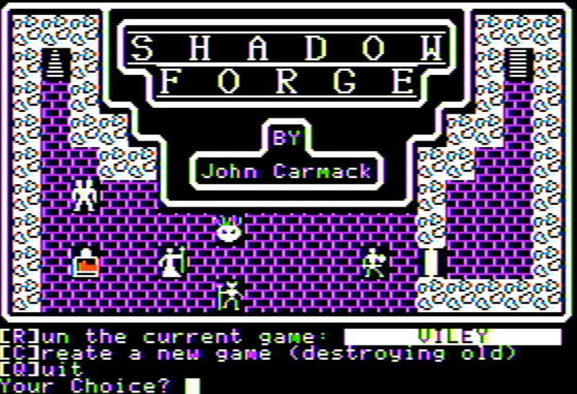
卡马克早期个人作品就有很浓郁的社区自创感
90年代初的计算机功能自然无法与现在相提并论。但即便手上的工具落后，只要掌握着灵感和技巧，就仍旧能够创造超越时代局限的奇迹。出于对游戏的热情，一些玩家将《德军总部3D》中的纳粹士兵换成了自己喜欢的形象。这并对于计算机游戏来说并不算什么新鲜事。但问题在于，要做到这种程度就必须替换整个游戏源文件，对于处理错误或是进一步修改来说相当麻烦。为此，卡马克决定为DOOM引擎加入模块化功能（Modular Approach），并为其开发一种更加便利的资源管理方式。按照汤姆.霍尔的主意，这种专门为游戏管理数据资源的文件叫做[WAD]——“Where's All the Data?”。
包括游戏所需的图形素材、关卡数据和其它林林总总的内容，都被打包放进了这些WAD文件当中。而它又被细分为了两种类型：IWAD（Internal WAD）和PWAD（Patch WAD）。前者主要包含加载游戏所需的数据；而PWAD则是负责储存诸如图形素材等新内容的数据，多数情况下用于对原始数据进行替换。
作为开源软件的忠实支持者，卡马克认为这是他做过最正确的事情之一。WAD文件形式不仅仍旧让许多游戏开发者便于存放数据资料，更允许玩家在不对引擎进行任何修改的情况下随意创作。他希望能够和玩家一起共享作品，并将这种无私的精神传达到整个游戏行业当中。
生在一个围绕着合约与版权运作的国家，卡马克显然是孤独的。作为版权持有者与开发商，居然允许用户对商品随意进行修改，甚至主动提供工具的行为实属罕见。虽然也有不少游戏允许玩家自创关卡，但那都是自带在其中的默认内容。但卡马克的打算是直接公开给予制作工具，并允许人们随意传播——甚至计划在之后几年公开源代码。这不仅仅是在刚刚起步的电子游戏领域，放在绝大多数的文化载体中都是无法被人所理解的。这就好比迪斯尼突然允许人们随意对旗下动画进行修改，让白雪公主边拿着机枪扫射边唱歌跳舞。或是用配音软件将麦当娜的最新单曲换成猫王的嗓音。
即便是id团队内部也对这种行为感到莫名其妙。杰伊.威尔伯（Jay Wilbur）和凯文.克劳德对此尤其感到担忧。他们认为这会促使竞争者大量传播粗制滥造的山寨作品，将整个市场打乱。而背后所隐藏的法律隐患也可能将id拖入深渊。最重要的，自然就是这么做的话我们的钱岂不是就会赚得少了。
杰伊是对此尤为担忧的人。他认为这会引发一系列的连锁反应——玩家随意传播自己创作的内容，那么是否会迎来以此为自己盈利的投机主义者。更可怕的是那些毫无创作责任心的人，他们如果利用这种便利去传播那些不好的思想或违法内容该怎么办。于是他在之后编写发布了一份专门针对MOD文化的法律声明。其中提到：
“通过对DOOM的修改，你可以从中向玩家收取费用，id绝不会在这个过程中捞到一分钱。但这些MOD首先必须在《毁灭战士》的正式版本上运行，而不是免费的共享版本。此外更重要的是，这些MOD不会让id承担任何法律上的责任。id不会也不能为民间作品提供任何技术支持与法律协助。”
但卡马克对此一笑置之：谁管这些啊。而罗梅罗在此时也站出来支持他的做法。毕竟他虽然在许多年前就成为一名职业开发者，但内心深处却仍然属于玩家。罗梅罗明白明白自己的创意和热情，也必然会出现在那些从未学习或接触过游戏开发的人群中。时代变了。开发者不可能永远独断专行，早晚有一天玩家与开发者之间不再会是上下层分明的关系。何况，当《毁灭战士》开放了资源与环境后要是真的能培养起一个固定的创作环境，他就能躺着享受源源不断的新关卡了。
“DOOM很容易就能玩到，制作关卡很容易，死亡竞赛很容易，只要你拿起来就能轻松玩到。它在多年来仍旧备受玩家青睐，发布源代码是我们做过最好的事情。——约翰.罗梅罗”
在游戏发售两周后，id没有因为随之而来的名声与财富而忘记这件事或者反悔。他们发布了地图源代码，以便让人们了解背后的技术含义并学习如何自己创建地图文件。罗梅罗等人制作了名为[DoomEd]的关卡编辑器，便于玩家在自己的计算机上进行开发。此外，他们免费发布了节点构建工具器。作为引擎的特点之一，《毁灭战士》的关卡由节点和子节点组成的树状结构形成，每个节点对应关卡中各个区域的数据。开发这个节点构建工具的作用，便是按特定顺序渲染节点以显示关卡地图，帮助玩家用以修改或创建Mod。
不过，由于不论是卡马克还是id成员实在是挤不出多余时间与精力帮助玩家去了解如何使用。因此只能寄希望与人们自己摸索。
在游戏发售了短短两个月后，这种开源精神就雏形初现了。由于地图开发工具对新人仍旧不太友好，于是全球各地的玩家联合起来一起完成了更便利的编辑软件。它于1994年1月26日由新西兰坎特伯雷大学一位黑客上传到互联网上——这个凝聚了众多玩家心血的工具名为[DOOM编辑器]（DEU）。按照Mod作者的描述，它几乎可以让玩家在关卡中做任何事情。从移动、添加或删除内容，改变场景结构或是增加新的机关陷阱等等；事实上，这就是一个便利的关卡编辑软件。它的意义在于，你不需要懂得编程和代码，只要利用这个软件便能直观地对WAD内容进行任意修改。而那些具有专业知识的人，更是可以创作出属于自己的Doom游戏。
但问题也接踵而来。玩家们陷入了一场自我放纵的狂欢当中，这对于那些持有版权的人可一点都不好玩。美少女战士DOOM，机器猫DOOM，异形DOOM或是蝙蝠侠DOOM，甚至连马里奥DOOM和米老鼠DOOM都出现了——差点把任天堂与迪斯尼这两大版权死硬保守派给气晕过去。
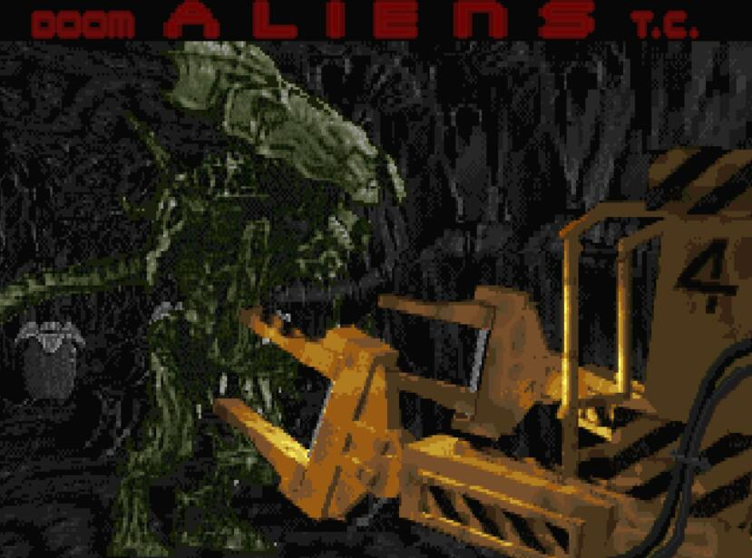
Aliens TC——1994年的Doom大型修改模组
玩家无法抵抗这种诱惑。毕竟我们都明白，并非所有人都有能力或是机会加入文化创作领域。但每个人心中都想成为开天辟地的上帝——今天以《上古卷轴》的MOD文化或是《我的世界》这种本身带有创造元素的游戏，便是对这种创作精神最好的证明。而在90年代DOOM就是一个世界，它提供了你成为上帝的捷径。
DEU的便利性开启了全新的时代。它在同年5月份得到了进一步增强，越来越多的爱好者们加入到团队中为其添砖加瓦。许多基于各种文化作品的修改被传播开，id发现事态发展远远超过了他们的想象。罗梅罗将玩家寄来的星球大战DOOM给卡马克看了之后，使他更加坚信自己推动开源文化是正确的行为。至少对卡马克本人来说这样便足够了。
尽管如此，通过替换图形素材等内容来修改的程度仍旧有限。毕竟人们对于创作的渴望是无穷无尽，且难以被现状所满足的。即便id开源了许多东西，但大部份内容仍旧隐藏于Doom的可执行文件里，仅仅通过修改WAD是不够的。
最后一道束缚的锁链在1997年12月23日被解开。在评估了游戏获得的利润已经足够后id Software向全世界公开了引擎的源代码。从此技术限制不复存在，Doom可以被任何人修改成为任何可能的样貌——只要你有那个能耐。它催生了一个个[源端口]（Source Ports），让Doom得以在任何可能的电子设备上运行。当然，更多人还是将它放在了传统计算机上。而它们的功能也不仅仅如此。人们可以用源端口处理游戏遗留的Bug，添加各种新的功能。
最初，id发布源代码时也引用了杰伊的法律声明，禁止将其用于商业行为。此外创作者们也不允许发布自己作品的源代码。但最后在社区与id交涉后，他们在1999年根据GNU通用公共许可证重新发布源代码。这导致如今绝大多数的Doom源端口都成为了开源软件，作者们也会将自己作品以共享的态度传播。
无数充满创意的Mod随之诞生，直到今时今日仍旧保持着任何一款超过20年历史的游戏都难以企及的活跃性。而这么多年下来最了不起的一件事，便是不论对id还是民间作者来说其实都没必要做到如此程度，他们纯粹都是自愿遵守开源精神，在多年来都让作品保持着共享与免费的状态。
id Software免费提供了从数据、工具和源代码等一系列劳动成果，使得Doom社区在短短几个月内就迅速成长起来。无论你是一窍不通还是专业人士，还是有意成为关卡设计师的人都可以通过Doom成就梦想。自发售至今将近30年来，每年都有至少数百个改变游戏内容的PWAD被上传到互联网，而那些大大小小未成正式规模的修改更是无法估算。仅对Gamers.org上的idgames FTP随意进行大致的统计，就能找到将近2万个与Doom相关的文件。
欧美游戏行业有大量成员与公司都受惠于id与Doom开创的理念。从《光晕》、《半条命》到《虚幻》等等知名游戏系列的开发者，或是诸如暴雪或麻辣马等公司的成员都曾经是Doom社区的一员。从Doom引擎开源而奠定的传统，让id也公开了后续多个引擎的源代码，间接孕育出了知名的起源以及COD所使用的各种新生代引擎。
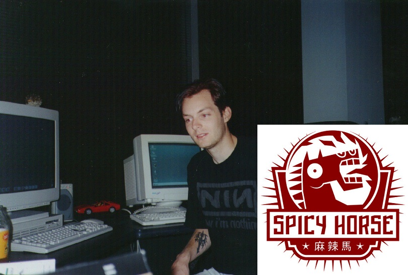
麻辣马创始人因Doom加入了游戏行业——今天许多从业者亦如是
时光流逝，人们在互联网上来了又去，但DOOM始终存在。最早在1994年到1995年间，大家主要使用BBS留言板来发布WAD，也有人通过拷贝到CD打包后在小圈子里贩卖传播。之后则是利用FTP上传到服务器。但无论如何，总是需要一个专门用于交流的“大本营”。于是，在原始DOOM发售5周年的1998年，[Doomworld]论坛随之诞生。而这也昭示了有史以来最长寿电子游戏专题社区之一的诞生。
Doomworld是Telefragged.com的分支网站。在卡马克发布了Doom源代码之后，Telefragged的管理员认为，以雷神之锤网站分出一个专为Doom而设立的分区应该是个不错的主意。随后这个论坛很快就茁壮成长起来并留存至今。来自世界各地的粉丝聚集在Doomworld上，讨论和共享自己创作的关卡或是对整个游戏进行修改。他们在创作过程中分享乐趣与经验，甚至在2004年举办了名为[Cacowards]的社区颁奖典礼，以评选并表彰当年最优秀的玩家作品。十几年来，这个典礼每年都会举办，并且一直保持着不变的活跃性。
每个人都有着自己的想法，每个人都希望能让Doom变得更好，并思考自己从中能获得什么。
由于其长达将近30年的公共记忆，关于Doom创作社区的记忆早已变得混乱而模糊。即便有许多人试图记载并整理，但它仍旧存在着许多杜撰、传闻甚至误解。但终归来说，我们唯一可以确信的就是，从来没有一个游戏社区能够如此长时间的保持活力与积极态度。你丝毫看不到Doom民间相关创作有一丝一毫在衰退的迹象。恰恰相反，他们越来越富有激情——甚至有时候我觉得已经陷入到某种疯狂状态。毕竟有的Mod实在是让我怀疑作者是不是嗑药了。
Doom的起源来自于90年代激进，随性且充满冒险精神的创作环境。而关于它血脉的延续则是另一回事。在这个故事中有着对商业规则与版权束缚的挑战，有史无前例的开源精神最佳体现——“不问名利，交个朋友”是Doom至今还活跃于互联网的核心理念。人们聚集在一起，因为曾经有过一群和他们同样热爱游戏，愿意将自己劳动成果分享的年轻开发者埋下了种子。
时光流逝，人们来了又去，为这颗名为Doom的种子浇灌着自己心中的理想与创意。它已然变成了能够接纳任何玩家的擎天巨树。
——————————————————————————————————
从地狱归来的DOOM
进入到90年代中期，随着快速增长的经济效益与社会影响力，越来越多人认可了电子游戏作为新兴科技产业的巨大潜力。每一年，这个依托于科技发展、以互动性为核心理念的文化载体，总能不断带来令世人惊叹的变化。但其代价之一，便是在这样风起云涌的行业前进速度下，任何一个发展节点中曾经无比辉煌的符号也可能很快就遭到世人遗忘。
作为最早引发社会关注——或者用现代网络词汇讲叫“出圈”的游戏IP之一，Doom在90年代的传奇经历与卓越成就被无数次赞颂。而即便如此，它仍然和许多同样本应名垂青史的古早游戏作品一样，艰难地在时间长河中经受冲刷。
许多人甚至已经忘了它对于电子游戏行业的贡献有多么重要了。
除了被历史车轮碾压之外，Doom自身要面对的问题也不少。虽然商业成绩很不错，也有着普遍认为质量出色的好口碑，但进入新世纪后的续作《毁灭战士3》在影响力方面显然不及id先前所创造那般辉煌。它既没有传承前作标志性的核心机制，也未能接下《雷神之锤3》多人竞技王者的宝座。更不用提它所产生的社会与行业影响力，连当初元祖作品的脚后跟都触碰不到了。
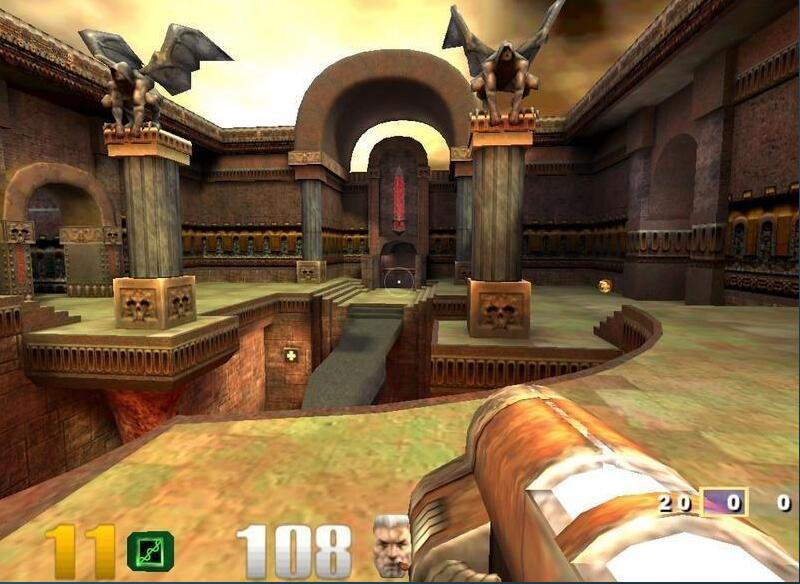
雷神之锤3的地位至今无人能取代
《毁灭战士3》并没有做错。它依然是制作精良内容充足的优秀游戏。但它不再是早就孕育出无数徒子徒孙的亚当与夏娃，只不过是个类似《使命召唤》、《荣誉勋章》或是《光环2》等仅限于那几年里获得成功的商业大作罢了。
对于id来说，当时他们已经从不到10人的小作坊，变成了多达数十人的大型工作室（相对当时而言）。约翰.卡马克有了改造到巅峰状态的法拉利跑车，有了最好的开发工具和环境；但现在的id却不太一样：喵子没有躺在他的脚边，经常被他气得半死的汤姆.霍尔也早已离去，更不会再有一个留着长发、能陪他在浸水小屋里熬夜写代码的罗梅罗了。
90年代玩家，摇滚明星与重金属乐，在记者与家长听证会上肆无忌惮地喊出“Fxxx You…”。那个属于血尿屎屁与硬汉大枪的舞台，充满了胡闹玩笑与我行我素的时代已经远去。许多人突然发现：自己不再需要爱与火箭炮了。
然而，虽然难免会感到有那么一丝惆怅与遗憾，人们也不应当因为昨日美好的景色而停止前进。
时间转眼来到了2007年，彼时的游戏行业正在面临图形技术新一轮的革命。凭借着次世代主机的强大表现力，欧美游戏厂商在经历了新千禧年初的一阵青黄不接后，重新以技术力和完善的工业化管理站到行业顶端。过去的小作坊或是微型团队——包括日本游戏开发者坚持的理念面临着巨大挑战。一旦正式启动，就将投入数百人与上亿美金的超级3A大作彻底改写了行业规则，将电子游戏变成了一场纯粹以庞大资本运作为核心的货币战争。
虽然凭着引擎授权就能维持生计，但id也已经好几年没有推出话题作品了。但就如上述情况所言，此时的游戏创作环境早已不同以往日。在面对从过去几个人、一冰箱可乐与批萨就能开发出举世瞩目的大作；变成了今天动辄几千万甚至上亿美金，随便一个3A大作都需要百人团队规模的环境下，id的小团队模式已经有些力不从心了。
第一人称动作射击游戏、包括其衍生的越肩视角分支成为了这场技术革命最大的受益者。《使命召唤4：现代战争》、《孤岛危机》和《战争机器》等作品刷新了无数人对电子游戏的认知——虽然早在当年就有号称“虚拟现实”或是“电影化演出”等名词，但真正能体现出这种质感的作品还是在这时期才算是名正言顺。
绝大多数主流玩家幸福地沉浸在电影脚本游戏中，享受着一流声光特效带来的震撼体验。但有一小部份人却在这时候发问：那些不依靠演出和剧情来填充时间的动作射击游戏哪儿去了？
id和当年那些总是浑身上下都是枪，不需要AI操控队友就能独闯龙潭的老炮儿哪去了？
好吧，事实上，他们都还在。只是有的人被收购，转型去做兽人宝可梦；有的人因为沉浸在直男癌美梦中不断跳票最后变成了笑柄；更多人带着当年的从业经历与热情，四散到了各个公司。今天你在《魔兽世界》或是《刺客信条》中所体验到的新时代游戏理念，都有着这些人的一串代码或是一道音符。
至于id嘛。靠着引擎授权所赚到的经费，就能活得比绝大多数同行要舒服了。
但是人们并不满意这样的现状。在已经好几年没有任何作品推出的情况下，关于《狂怒》是什么、《雷神之锤ZERO》是什么，以及到底还有没有《DOOM4》的猜测与流言总是遍布在社交平台上。而作为最古老、也是有史以来最长寿的电竟比赛与公司嘉年华，id每年举办的QuakeCon总是得被追问上述的相关话题。
2007年8月2号，7000名玩家一如往年那样聚焦QuakeCon，为爱与火箭炮（和最高50000美金的奖励）互相较量。除了吃饭睡觉之外，唯一能让枪炮声暂时停止的时刻，大概也只有第二天的周五晚上了。这一刻人们放下了手中的“武器”，将目光都焦急到正独自走向演讲台上的约翰.卡马克——虽然仍不及罗梅罗令人羡慕的演出天赋，但经过多年的磨练，如今他也是一个能胜任在聚光灯下发表讲话的“明星”了。
带着他一如既往的语调，卡马克首次公开了id Tech 5的一系列技术特性；人们听他讲关于新项目《狂怒》的一系列设计理念，了解到他计划在id内部组建第二个团队，以负责诸如雷神等老IP的开发工作。此外，卡马克也重点提及了对于索尼PS3家用游戏机的强烈兴趣与独到见解。
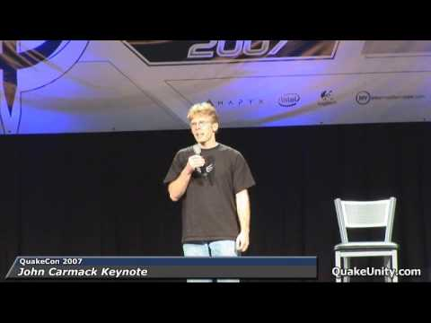
从最开始，卡马克就说过PS3会是当时最不方便的开发平台；但也正因为如此，他才会将其作为一个新的挑战。当时的主机战争还处在“微软领先一分”的状态下，业界时不时就会传出关于PS3开发困难的消息。即便是卡马克自己也表示过如果可能，他还是会选择在Xbox360上制作游戏。但他认为，虽然目前面临着困难重重的挑战，但PS3主机出色的功能与潜力会在日后慢慢体现。因此才在开发id Tech 5的过程中吸纳了专精于PS主机的开发人员。（PS3后来者居上的预言也确实被验证了）
这场演讲在当时让许多人再一次确定：卡马克仍旧是个兴趣使然的人。他对DX10或Vista表现得不太热衷，认为更加开放的DX9仍然好使。他对任天堂表达了由衷的敬佩，并祝贺Wii的大获成功。即便他的言辞仍旧保持着一贯的理性与刻薄，但每一个话题、每一句发言都充满了对电子游戏与技术的无比热情。
“将会有一个《毁灭战士4》，虽然没有排上日程表也尚未组建团队，但一定会有一个新的Doom游戏出现。”
虽然卡马克表示在《毁灭战士3》之后，id内部就创立了一个代号为[黑暗（ Darkness）]的项目，旨在延续本作中所创立的恐怖生存主题风格。但是很快，他就承认了《毁灭战士3》与整个系列的核心理念并不相符，而且他们也明白玩家对于游戏那黑不溜秋的场景十分反感，甚至自嘲接下来要做一个“更加明亮”的续作。此外，id也评估了《毁灭战士3》是否还能作为新作提供灵感的可能性。虽然它有许多可取之处，整体品质的优秀也让其在商业和媒体口碑上有所保障，但id还是觉得粉丝之间产生的争议，让《毁灭战士4》作为它的正式续作可能会造成进一步的用户割裂。所以决定采用软重启的方式来规划作品方向。
根据后来的访谈可以得知，[黑暗]的工作断断续续进行了大概1年左右。参与这个项目的人非常少，基本上一直就只是在策划阶段徘徊，而且对于是否将其进行下去也缺乏定论。在这个不太被重视的项目搁置后不久，卡马克重新审视了公司关于接下来的工作重点，表示日后很长一段时间的主要精力还是会放在《狂怒》和它背后的id Tech 5引擎上面。这个所谓的[黑暗]也仅仅只是一个初期的概念——并且随时会被取消。
id是一个比较随性的工作室，每个人都能够发表意见（卡马克往往也不见得会采纳）。了解到自己并非是能抽出几十个人来同时开发两个项目后，他们还是觉得不再去触碰这个与原始Doom理念相违背的东西。因此，关于Doom的话题也暂时仅仅止步在了对粉丝们的承诺而已…看起来是这样。
2008年5月7日，id Software正式宣布全面开启《毁灭战士4》的制作。作为从1996年因为头发最长而被推举为公司首席执行官的托德.霍伦斯海德（Todd Hollenshead）表示Doom是工作室基因里不可分割的部份，它需要集合行业里最优秀的人才和头脑，才能找到将这个优秀血脉传承下去的方向。毕竟，对于id Software来说，卓越的创意思维才是符合一贯的作品风格。
然而虽然在官腔方面说得头头是道，实质上id当时甚至都没法组建起一个完整的团队。制作人、设计师和动画与美术职位全部都处在空缺状态。卡马克希望《毁灭战士4》能够拥有比《狂怒》更好的画面——毕竟后者说白了还是带有引擎实验性质的作品。而他也打算让多人模式的表现能够优于前作。
id Tech 5引擎的关键特性在于对主机平台的优化。id预期《毁灭战士4》能够在PC端上面以60帧的效果运行，并且攻破PS3与Xbox360之间表现力的差距。面对这么多要求和IP所自带的压力，当时几乎没多少人能拿得定项目。
就像前一年在QuakeCon上卡马克所述那样，为了让开发周期缩短，id将会尝试组建一个与《狂怒》并行开发的团队。为此，id又一次经历了对公司成员的扩招。
当时《狂怒》的队伍由《毁灭战士3》的制作人蒂姆.威利茨带领。而《毁灭战士4》这边由于不是首要任务，成员除了新招募的人之外，则从正在开发《雷神之锤Live》的多人项目团队里临时抽调。其中就包括之前从来很长一段时间都不是开发人员身份的马蒂.斯特拉顿（Marty Stratton）来带领团队。
作为最近几年才被大众所了解的重要成员，马蒂早期的人生经历似乎与电子游戏并没有什么太大联系。他拥有的学士学位来自于丹佛大学商业音乐作曲。90年代中期他开始寻找工作的时候，也只是想着在娱乐行业中找一份录制和编曲的行当。即便在大学时期，电子游戏也并非他喜欢的内容——为了学业，马蒂很长一段时间里主动屏蔽了它们。不过当他开始应聘时，朋友向其推荐的却是在动视公司的职位。对方认为他现在还正年轻，应该多尝试其它一些自己不太了解的方向。反正有的是失败的机会。
在动视马蒂负责的是质量检测方面的工作，专门为公司代理的游戏项目审核。他接触最多的便是当时市面上最火爆的第一人称动作射击游戏。作为全球最大游戏发行商之一的质检人员，马蒂有机会在这个过程中接触到行业中从高端到低谷的各类工作室。在这其中大多数公司的作品都非常优秀，只是对马蒂来说最为突出的仍旧属于id（90年代左右你也确实找不到能比它好的）。作为甲方，马蒂却被这家富有创造力与激情的工作室所吸引。他在《雷神之锤》资料片的质检与发行过程中逐渐认识id的成员，并和他们走得越来越近。
很快，马蒂觉得相比在动视这样的大公司呆着，id这个看似混乱随性、人数还不到其十分之一的小作坊反而更具吸引力。到了《雷神之锤3》上市后不久，马蒂终于决定离开动视向id寄出求职信。
“我只是感觉很喜欢跟他们在一起工作，所以就抓住机会加入到了其中。”
考虑到他过去几年来的丰富经验，id安排马蒂担任工作室的业务发展总监一职。就和过去一样负责管理发行公司产品相关的工作。此外，彼时的id毕竟在很长一段时间内都将作品交付给动视代理发售，从那边跳槽过来的马蒂是最适合与其交接的人选了。不过问题在于，虽然马蒂在团队管理等相关业务有着自己的一套独到见解，但很长一段时间内都没有亲自参与过重点项目。从入职开始，Id主要让他负责欧洲市场的相关工作，直到2006年左右才转调到了开发部门。
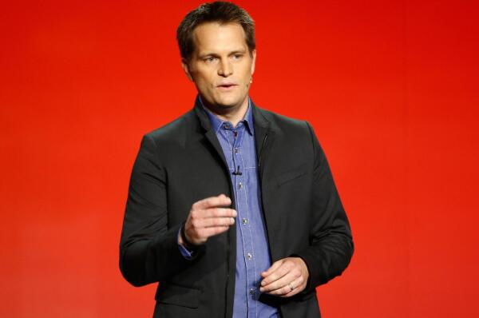
马蒂多次平息社区猜疑导致的动乱，人称“谣言毁灭者”
即便这次能够作为Doom续作的作为团队领袖，马蒂实质上也并非就挑起了大梁。事实上在立项后，他手上大概只有19个人左右，并且就持续着在缺乏资源与不受重视的条件下打造着新世代的Doom。
时间很快来到了2009年。对于id来说，这一年他们面临着过去从未经历过巨大的转变：6月24日，刚刚进行了一次1.5亿美元融资的ZeniMax Media公司宣布收购id Software，并获得了旗下全部IP的发行权。
作为以上古卷轴和新辐射而在口碑与商业上双丰收的贝塞斯达公司，向来以开放世界角色扮演游戏而被人所熟知。这家至今仍旧保持着90年代计算机游戏开发商气质的公司，可谓是如今最古怪的游戏厂商之一。他们拥有一个挂名的母公司ZeniMax Media，从未创作过在行业资金投入标准里能排得上号的大型项目，却往往能够四两拨千斤地诞生出千万份级别的惊人销量。而由于公司没有上市，不存在股票等较为成交的资本束缚，也在行业里堪称任性妄为的代表之一。这家公司总是做出与市场风向截然不同的反应——有时惊艳四座、有时愚蠢透顶，是如今最具争议性的发行商之一。
就是这样一家公司，集合了许多不太受商业青睐、却极富个性与实力的工作室——Arkane、MachineGames和Tango等等充满了创意的“刺头”，意外地在这家发行商旗下活了下来。而在当时对EA和动视的迂腐做派已经感到不胜其烦的约翰.卡马克早就想找一个帮他处理各种商业事务的发行商了。所以最终选择了被ZeniMax Media收购，大概也是看中它至少相对那些深受资本控制的大公司来说，大概还不至于那么咄咄逼人。
当然，至于后来的苹果电脑事件，以及多年后贝塞斯达公司政策方向转变那就是另外的故事了。
虽然在公布消息时不忘吐槽了几句“老说这些陈词滥调干嘛”，但以卡马克为首的id骨干还是奉承了母公司几句，并表示今后仍然会保持良好合作。总之，现在卡马克不需要去管id的事务，毕竟他自己还有个犰狳火箭公司要照顾。实际上，很多人认为他就是无暇同时经营两家公司，并且对新兴的VR技术兴趣更大，才干脆卖掉了id。
在收购事件的两个月前，托德在接受采访时提到了《毁灭战士4》仍旧处于早期筹备阶段，公司还在为项目进行人员招聘。此时也刚好是《雷神之锤Live》完成后不久，可以推断应该也有更多开发成员正式转入团队中来。而关于游戏是重启、续作还是前传，托德就显得有些含糊不清了——
“它绝对不是《毁灭战士3》的正统续作，但也不像后者那样是对初代的重新演绎或者说重启。当原始游戏的玩家拿到手时，他们会明白这其中的差别。”
情况看起来还算顺利。但如果对id有一定了解的话，应该也知道他们始终不是什么大公司。就算是《毁灭战士3》放到今天，30人左右的开发团队其实也显得很古怪了。更何况他们接下来作为子公司，需要按工期提交给贝塞斯达进度，因此本就已经搁置许久的《狂怒》不可能再拖下去。虽然不清楚卡马克等人究竟对这个废土题材作品本意如何，至少他们在接下来两年里是全身心投入到其中去了。
所以，后来才有了QuakeCon2010上由于取消了原定展示《毁灭战士4》的计划，导致现场粉丝静坐抗议，托德当面道歉的事件。也有了在第二年卡马克亲自上台承诺：一旦《狂怒》成功发售，id将会尽全力将资源转到Doom身上。玩家实际上会比想象中更早见到成品。
也由于对《狂怒》和id Tech 5引擎的期待，无论是老用户还是大众都暂时放下了关于Doom的关注。可惜的是，2011年终于得以发售后，无论是游戏还是引擎，哪怕让再偏执的死忠粉丝去评价也只能是：凑合。
它大概只能跟外包的《雷神之锤4》打个半斤八两......
说是跌落神坛也许还不至于。不过《狂怒》确实让人们明白了id已经无法再拿出当年那种只手遮天的气势了。还算不差的质量是以团队多年经验换来的：优秀的画面与美术、超越同年商业大作《使命召唤》和《战地3》的高水准战斗机制与枪械手感。但另一方面，id对于剧情的敷衍了事，以及那堪称业界反面教材级别的开放世界流程，都足以将那些本应美好的体验毁得一干二净。
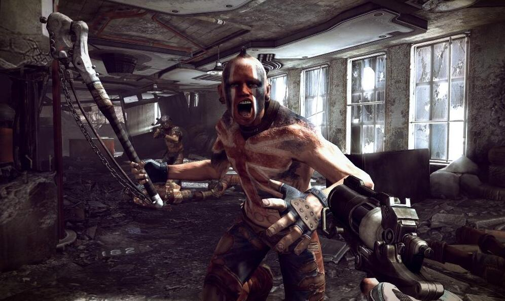
狂怒糟糕吗？肯定不会。但也不够好。
事情开始变得有些不妙。卡马克对电子游戏的兴趣逐渐减弱，几乎很少全身心投入到其中。虽然在撰写本文的这段时间里，卡马克证明了自己仍旧对电子游戏有着相当高的热情，但至少我们都明白他已经不太可能把所有精力都放在这上面了。而关于团队内部的权力更迭，以及项目方向的不明确等现象也逐渐通过开发组的只言片语透露出来。
2012年先后出现了几次资料泄露事件。2月底，一些所谓的内部开发图片被人上传到了IGDaily的网站上。但随后马蒂证实了截图全部都是网友伪造的。而后来在3月初又一批伪造图片出现在互联网上，使得id不得不花时间特地去澄清。
不过，伪造图片事件到底还是搅浑了局面。在这个真假难辨的环境下，一些关于内部的开发信息也随之出现，其中最具话题性的便是“毁灭战士4将会模仿使命召唤”这一说法。有趣的是，面对玩家的质疑与讨论，这时候id反而不像伪造图片事件时那样，态度明确地站出来澄清泄露内容不属实。
几年后的今天，我们终于得以了解到关于泄露图片以及开发信息，确实都是由内部流出的。根据2015年至2017年这段时间id的进一步对泄露资料的承认，人们便能通过这些图片等资料窥探到一系列《毁灭战士4》的真实样貌——
本作将以《毁灭战士2》作为灵感来源，故事主要发生在被恶魔入侵的地球上。
流出的关卡内容仅限于城市废墟或是一些下水道等场景。
核心角色不再是正规军队，而是一群在废墟上持续抵抗入侵的幸存者。
玩家扮演的角色更加偏向写实风格，战斗方式不再如同超人般强悍高速。
有类似掩体、疾跑和瞄准镜等流行元素的机制，武器也加入了后坐力和装弹。
有大量与NPC对话以及过场动画演出，更倾向于COD那样的单线脚本流程。
可能会采用与COD等写实FPS相似的AI队友，叙事和对话主要通过他们来演绎。
有一个类似QTE操作的近战系统。后来被认为挪到了《德军总部：新秩序》里。
这些内容都显示出了，id打算把《毁灭战士4》打造成一个全系列、乃至整个工作室有史以来最写实和缓慢的游戏。它将会更加倾向于服务大众——更慢、更多的故事并减少游戏性元素，以强调电影化演出效果和充满道德两难抉择的人性考验为特色。就好像那些卖了上千万份，游戏流程时长仅有10个小时并且至少5个小时在看过场播片的3A级主流大作一样。
从这个角度来看，也难怪当时id只能否认这些泄露信息的真实性。毕竟在没拿出手之前，可没什么人希望他们去蹚这种主流大作的浑水。就像蒂姆.威利茨在日后对这一次失败所述的那样——
“不是说游戏的美术风格或是编程代码哪里不好。只不过，每一个游戏都有属于自己的灵魂与精神核心。即便你在《狂怒》中也能感受到它有自己的灵魂。然而《毁灭战士4》没有灵魂，更谈不上个性。它就像是个带有精神分裂或是身份危机的东西一样，即便了解DOOM应该是什么感觉，但却表达不出来。”
并非所有人都认为这样的《毁灭战士4》就一定不好。事实上，如果品质出色，那么新方向的尝试也无可厚非。它将会是Doom的全新探索——更加重视剧本与电影化演出，真实可信的一场全球性恶魔入侵。玩家将会有许多难忘且充满着如同《神秘海域》或《使命召唤》这样惊险刺激的演出场面。对于新千禧年过后才接触到游戏的玩家来说，这样的作品自然是喜闻乐见的。
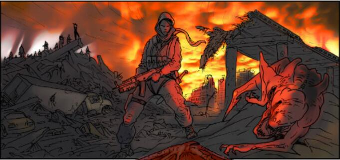
DOOM4设定原画
但造成了整个项目逐渐陷入迷茫的关键在于：那些玩了20年Doom的老玩家不喜欢。id自己更不喜欢。
除了玩家社区的各种流言外，媒体也没少折腾。在游戏行业里，既然提到了信息泄露以及随之可能产生的流言与造谣事件，那基本上总是少不了Kotaku。由于id对新游戏长期的保密与模糊态度，专门喜欢通过采访各种所谓“不愿透露姓名的内部知情人士”来挖掘游戏公司黑料的媒体Kotaku又一次坐不住了。
2013年左右，一篇自称来自于多个信息渠道，内容全部是“据某位知情人表示…还有另一个消息灵通人士称…”这类含糊不明的说辞堆叠起来的文章出现在了Kotaku网站头条。其中由各个来历不明渠道的信息都表示：由于管理混乱沟通不善等问题，导致《毁灭战士4》项目难产，id Software遭到母公司ZeniMax威胁濒临解散。
新闻的内容即便按照当时的角度评价，也让人怀疑这些逻辑不通的东西是不是编辑自己臆想出来的。其中还暗示了ZeniMax希望id把Doom做成类似《上古卷轴5：天际》这样的开放世界角色扮演游戏，或是由于内斗导致员工辞职甚至被排挤出工作室。一切都是按照Kotaku最标准的“流言新闻”撰写，甚至让人怀疑是不是把关于EA之类公司的谣言稿子换了个名词就刊登了。大概编辑自己也觉得不靠谱，为此文章最后还特地写了“以上内容可能只是不明人士的猜测，Kotak不为此负责”。
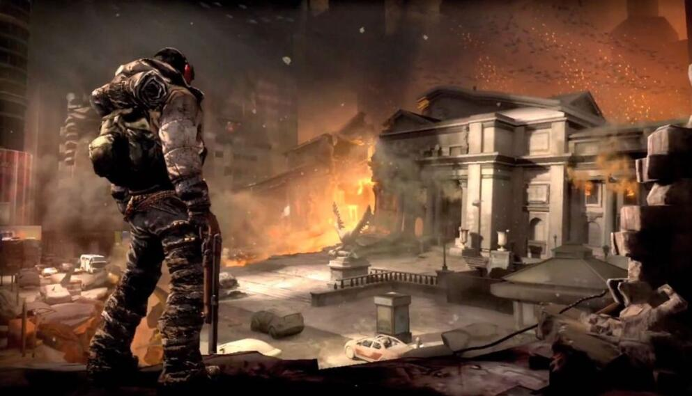
DOOM4泄露实机画面
从某种程度上来说，Kotaku作为行业多年的老江湖，他们并不会真的全部以未知流言来制造话题。半真半假，加上一些确实有些真知灼见的分析才是他们立身之本。早在这篇新闻稿出现的前一年，id自己其实就已经表现过对《毁灭战士4》十分不满意的言论了。因此再互相结合一些网络流言，自然就能得出编辑想要的话题新闻。
让Kotaku最开心的，应该莫过于这篇新闻稿发布的同一年，id内部确实发生了不小的动摇。除了担任CEO的托德突然宣布辞职外，先前已表露出退意的约翰.卡马克也终于决定离开，前往下一个新目标：VR技术。这其中也有他对于母公司ZeniMax在VR问题上的争执。但作为媒体来说，Kotaku显然并不在乎离职背后的真实用意。只要能通过这次事件应验自己那不知道从哪搞来的“行业黑暗内幕”，进一步确定id可能即将完蛋的事实就够了。
可惜。就在这个所谓内幕新闻出现后的第二年，Doom新作即将发售的消息突然又再次出现在了游戏圈内。尤其是彼时的洛杉矶E3展会上，十分不给Kotaku面子地亮相了Doom新作的预告片…
2014年2月下旬，负责发行工作的贝塞斯达公布了《德军总部：新秩序》的预购。作为一个授权给MachineGames的软重启，本作以其激进大胆的故事主题与表现手法惊艳四座。而对于Doom玩家来说它同样值得关注：如果预购了本作，那么将在之后获得系列最新作的Beta测试资格。但同时贝塞斯达也在预购信息中强调，被称为《DOOM》的新作无法保证将在什么时候提供测试，因为游戏尚未有明确的发售日期。
这种态度模糊且带有商业诱导性质的做法着实令人厌恶。许多玩家议论纷纷，甚至有人怀疑贝塞斯达只是想用早已取消的项目，来骗取玩家预购《新秩序》。在放置了一阵子后就会假装遗憾地表示“哦，抱歉，没有什么Doom了”。虽然贝塞斯达在对待作品的态度上确实很不错，但他们那臭名昭著的市场部门素来以喜欢玩文字游戏忽悠玩家而为人所知，因此这种猜测显然是有理有据的。
幸好，贝塞斯达这一次确实没有撒谎。事实上早在2012年，id与母公司高层之间就召开了一次没有对外公开的会议。但和日后Kotaku揣测的所谓威胁解散正相反，贝塞斯达方面首先要求id尽量减少项目扩散，将资源和精力压缩到专一项目上。此外按照后来的访谈可以得知他们提出的建议，可以说是挽救了整个项目：
“如果你们觉得现在这个借鉴主流元素的作品缺乏个性，那为什么不干脆全部推翻重新寻找Doom应有的方向呢？”
所以事情就是这样了。推翻掉那些堆积起来、挡住前行道路的东西；重拾信心与方向，再次踏上新的征程。也许它会是个导致IP身败名裂、让公司一蹶不振的灾难，但它至少要毁在自己心目中所追求的目标之下。而不是在多年后才追悔莫及——当初就不应该随波逐流，做了自己和玩家都不想要的东西。
2013年，吉列尔莫.德尔托罗（Guillermo del Toro）向全球的特摄片与超级机器人爱好者寄出了一封情书：《环太平洋》。作为一部用好莱坞顶尖工业技术打造的日式“萝卜”电影，本片可谓重新点燃了无数钢之魂的热血。
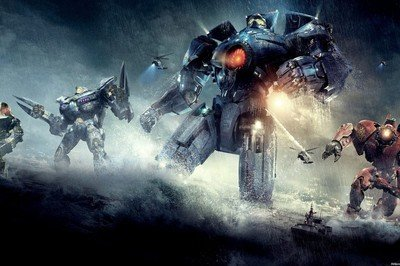
环太平洋连小岛秀夫看了都说好
这部魔神Z大战哥斯拉的神片在东亚地区好评如潮，连小岛秀夫都为之兴奋不已。但可惜的是，这种题材并不太被欧美电影圈所青睐，因此在它的主要市场反而没能达到预期成绩。甚至在后来还进一步传出内幕，提及到即便是在拍摄期间，影片也因为资本限制和文化语境不同而取消了许多内容。
只能说，文化创作确实不是优秀和有趣便能获得成功的。后来我们也都知道了，德尔托罗和小岛秀夫成了好友，一起去BT横行的美国送快递；而电影的续集《环太平洋2：雷霆再起》暂且不提它在失去主创后是否更好了，但至少机器人和怪兽的造型比当初退步了不止一星半点确实是共识。
从概念艺术上，续集显然就失去了前作的韵味，变成了时髦的细胳膊瘦腰身的怪东西。而当人们好奇之下寻根溯源后，意外地发现了当初作为艺术设计师的雨果.马丁（Hugo Martin），在2013年影片上映后不久就出现在了id Software创意总监的位置上。
作为一名自由职业者的雨果，除了在电影方面的相关创作外，早在2005年就已经在顽皮狗工作室进行游戏开发了。他加入id并非机缘巧合，而是早就有过一些相关的合作与雇佣关系，但直到2013年完成了《环太平洋》后才正式成为全职员工。
当雨果加入团队时，id正经历着艰难的时期——几位元老级人物相续离职，原创新IP表现不符预期等等。当然，最重要的还是作为一个最早建立起玩家社区、与民间联系密集的游戏工作室，他们发现自己没有以前那般受到粉丝拥戴和支持了。然而id并未改变他们对玩家的和睦态度，归根结底这种紧张的氛围还是来自于未能给出粉丝预期作品。
玩家喜欢育碧是冲着你那浓郁的文化气息、购买Capcom的作品是为动作天尊慕名而来；之所以一如既往支持id，要的就是那顶尖的动作射击体验、复杂多变的关卡设计。还有那天不怕地不怕的狂野气质。
经历改变是冒险且痛苦的，固步自封也同样不可取；但无论是哪一种情况，失去自己的风格与特色，只是单纯去借鉴他人的成功元素总是最糟糕的。所以不管id接下来打算怎么做，至少不能再继续陷于这个“一点也不DOOM”的《毁灭战士4》上面了。
“粉丝们喜欢的Doom”是一切的突破口。人们喜欢什么样的东西，那就给他们；更何况，id一直还坚持着自己的理念，那就是人们缺少了什么，那就满足他们。团队将元祖系列视为航程中的启明星，从其中选择自己认为应当保留到新作中、并用新时代技术重点表现的元素。而在最后几乎得到的最一致看法就是：无数涌入火星基地的坏蛋恶魔，一堆将这些家伙撕成碎片的大枪，以及一个以惊人速度运转的死亡节奏。并非所有人都会为此而兴奋，但它们正是新id团队认为应该保留到下来的。
当卡马克公布了《毁灭战士4》的计划时，市场青睐的作品是写实或者说更加战术化的动作体验。经受过专业训练的士兵躲在掩体后面喊着各种战术口令，在队友的火力掩护下慢慢瞄准、开火然后再次缩回掩体里头，寻找着可以探头的机会。加上一些电影化的叙事演出，再给场景来点爆炸效果，一个年度销售冠军就诞生了。
而当id重启了新的Doom项目时，市场虽然依旧青睐这些故事和脚本驱动的游戏，但许多人也开始认为它们实在太多了。
过去被称为“老炮儿”风格的90年代FPS，以快速的机动性与高强度战斗为特色，也许并非全部都如同元祖《毁灭战士》那样强调迷宫探索，但肯定都是节奏感强烈、更倾向于动作元素而非射击的理念。虽然游戏中绝大多数的攻击手段是各种枪械，但它们没有后坐力、准心扩散或是重装弹匣等写实元素。玩家可以在高速跑动、甚至是空中跳跃时准确命中目标，并且比起远距离作战总是更容易陷入短兵相接。
这个理念不仅是新的Doom务必保留的核心，还要比以前走得更远。过去，由于技术上的限制玩家不仅没法跳跃，甚至连上下抬头都做不到。主角只能被束缚在一个平面空间，面对上下楼层距离较远的敌人甚至都观察不到它们。
多年来的经验——尤其是《雷神之锤》的设计理念在这里发挥了十分关键的作用。新作中主角虽然移动速度有所降低，但是更加灵活敏捷、能够在极为复杂的地形环境下游刃有余地攀爬跳跃。玩家可以从任何角度对目标进行打击，不再会出现敌人躲在某些地方无计可施的情况。
而另一方面，市面上许多“打怪物”的动作射击游戏，往往都没能跳出“绕圈打蜗牛”的蹩脚设计。敌人只会慢慢朝着目标前进，而玩家只要让主角保持在一个距离内不断开火再适当移动即可。
团队明白，Doom的特色是既有强大的主角，也要让他拥有势均力敌的对手。虽然主角是一个技巧高超、战斗力强大到恶魔也会感到恐惧的存在，但剧情核心仍旧是一介凡人在面对绝境时力挽狂澜的故事。因此实力上的平衡是很重要的。DoomGuy快准狠，恶魔们同样迅猛凶残。它们的行为与招式设计要有着绝对的致命性，AI逻辑则强调了比起保命更倾向于跟你同归于尽。游戏中所有恶魔都会在开始战斗后迅速追上主角，在一瞬间就施展连续多样的攻击手段，在标准的[噩梦难度]下玩家只要站在原地5秒以上必定会遭到击杀。
当然，id并不想做一个用各种限制来束缚玩家的游戏。这不是一个求生题材，不需要用各种限制或是数值上的不平衡来体现难度。玩家不仅仍旧保留古典FPS主角的标准作战能力，武器方面更是进一步强化。敌人强大主角也强大，双方都是完全放开了手脚进行一场毫无保留的死斗。基本上任何一种恶魔单独面对主角时都没有胜算，因为在关卡和敌人配置的构思上，id想出了一套类似“多位冒险者们组团挑战巨龙”的方案——只不过玩家在这个游戏里的身份换成了巨龙，面对着一群前来挑战的恶魔冒险家。
这种设计美学一度盛行。但那至少是20年前的事情了。如今人们更喜欢写实的氛围与题材，FPS比起超现实的枪械打斗转向了专业军事化氛围。在这个独闯龙潭的动作片英雄已经不流行的环境下，id正在做一个非常冒险的行为。但就像推翻《毁灭战士4》的理由一样：对id来说，失去自我个性比逆行于主流更加可怕。
“如果我们只有10美元来制作DOOM，那么其中的8块钱就会被拿来用于战斗系统的制作。”——雨果.马丁
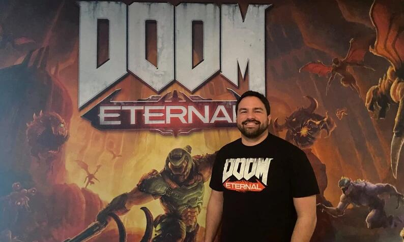
雨果接任了两个约翰“DOOM代言人”的定位
此外，一些《毁灭战士4》遗留下来的点子在经过修改后也得以保留。原本在游戏里用于强调演出效果的近身缠斗QTE系统，被修改成了类似《异形VS铁血战士2010》处决系统的“荣耀击杀”。它允许玩家在恶魔体力被降低到一定程度后，上前发动一次残酷又华丽的“手撕”处决。但是id将其做得更快更流畅，遵循着不超过两秒的定律，以保证战斗的快节奏不被中断。
荣耀击杀并不仅仅只是一个视觉上的奖励。它同时还是衡量游戏资源管理上的一种设计理念。当玩家成功撕开一只恶魔时，它们会依据角色现存体力高低与敌人实力来给予生命值恢复奖励。在过去，FPS游戏玩家对角色的体力管理来自于遍布关卡中的医药包。它源于古典游戏的机制——背板。只有熟悉关卡的结构、敌人阵营与物品散落位置，玩家才能有效地对接下来一系列战斗中的消耗与补给进行有效规划。它玩起来即有趣又充满了策略性，但相对于新玩家来说有太多不确定因素。
至于现代FPS对于资源管理的设计理念则更加的简单粗暴——甚至是不带脑子。它们多数都采用了“喘气回血”的机制：只要在一段时间内不受到伤害，角色的生命力就会自动进行恢复。在很长一段时间内，业界对这样的设计报以好评，认为它大幅降低了FPS的门槛与策略压力，让更多人可以完全忽略角色生命值管理的环节。但很快的，人们发现这种设计大幅影响了战斗节奏，很多游戏都只能不断地在掩体中来回进退，等待体力恢复的过程中几乎很难展开行动。
而荣耀击杀在某种程度上属于逆向而行的设计。它鼓励玩家不断前进，像猎手一般在战场上主动靠近敌人，在生命垂危的危机关头抓住最后的生机。它强调了一种自我寻求突破——而不是唯唯诺诺躲避危险的思路。游戏将玩家置于钢丝之上，站在原地不动或是退缩只会跌入万丈深渊，玩家必须将自己努力推向悬崖的另一边。
正式明确了开发方向后，就是将其付诸于实际创作的阶段了。首先第一步，开发组面临的便是引擎和技术方面的问题。
id作为曾经无数计算机从业者的朝圣之地，许多年来都是技术方面的领军人物。但步入21世纪，虽然他们仍旧掌握着业界最顶尖技术与人员，却不再拥有过去那样崇高地位了。虚幻、起源或是其它公司独立开发的引擎都有着相当出色的表现；虽然很多都仍旧在用着卡马克当年的代码，id引擎自身的竞争力也还十分强劲，但显然当年独揽朝政的时代早已过去了。
然而，许多从业者仍旧将卡马克视为代码之神，并将视加入id工作室为一种个人荣耀。在这种氛围下，团队在吸纳人才方面保持着相当大的优势。
人员众多自然很好，比如育碧、动视暴雪或是R星等公司就以大团队合作闻名。我至今还记得，当《刺客信条3》宣布将会启用千人级别的开发规模时，还觉得这种事情简直不可思议；然而今天，连接全球多家工作室一道开发的模式已经十分成熟。CDPR凭借将近1500人的外包团队把《巫师3：狂猎》推向了高峰，之后更是不断地招聘新员工，以填补《赛博朋克2077》越来越庞大的内容；《荒野大镖客2》以号称3000人的恐怖数字，奠定了一个行业里多年都可能无法超越的工业奇迹。即便是《生化危机2：重制版》这样的项目，也让Capcom摆出了800人团队的阵容。
可以说，虽然团队人数不是衡量游戏质量的标准。但是无论如何，一款内容多样资金庞大的3A级商业游戏大作，必定无法跳出人越多越安全的铁律。
但是这不是id的风格，他们明白自己想做都做不到。即便在今天已经是一家将近200名员工的大型工作室，但那种从骨子里透出来的随心所欲，注定了id的开发团队人数太多反而可能会掉链子。况且他们也希望能保持着元老们最初留下来的传统：以精英化团队为核心的运作模式。
当开始准备重启项目时，虽然已经没有卡马克带领技术小组了，但仍旧有很多出色的程序员留下来。此外一些强有力的新血液也注入其中——比如Crytek前任董事兼图形工程师、以开发了《孤岛惊魂》和《孤岛危机》等一流画面游戏而为人熟知的蒂亚戈.索萨（Tiago Sousa）。
凭借据称在展会现场烧毁三台顶尖计算机，有着新一代“显卡杀手”之称的《孤岛危机》，让全世界都认识了Crytek这家德国开发商。而他们也在很长一段时间里，坐在主流大众眼中“画面之王”的宝座上。但事实上，德国人一贯相对刻板守序的工作态度，很大程度上限制了Crytek在技术上的发展。况且他们游戏好看不好玩的问题也长期困扰着作品定位。
由于面临的经济困难导致许多没能拿到工资的员工离职，许多Crytek的人才都散落到了行业各个岗位。而id接受到了他们的首席图形工程师蒂亚戈，从各方面来说都是最适合的情况了。他在加入后，很快就被任命为首席程序员，并将以最新的id Tech 6引擎——内部成员将其称为Tech 666来协助开发《DOOM2016》。
从某种程度上来说，id Tech 5是一个带有实验性的过度阶段作品。卡马克主要用它来尝试主机上的流畅允许以及别的一些功能。虽然表现不错，但和已经成为市场主流的虚幻3等产品相比，还是缺乏了一些竞争力。在这样的压力条件下，id想要让这个藏着恶魔的引擎重新找回状态，所要面对的挑战就相当多了。
接下了卡马克在图形研发与使用上的角色，但蒂亚戈也并非就得完全遵循前辈走过的路。他在id Tech 5引擎上采用了另一个方向：以在CryEngine引擎中所使用的PBR来实现其中的效果。新版本着重于高效的运行效果，拥有极强的扩展性与适应力。能够在所有标准性能的平台上以1080p分辨率+60帧数基础全速运行。与当今发布的大多数Windows游戏不同，DOOM不使用Direct3D，而是提供OpenGL和Vulkan。
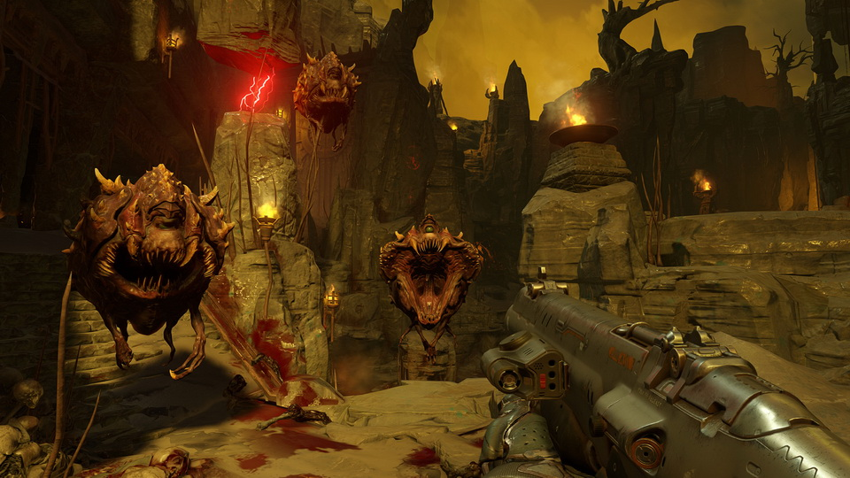
进入本世代后id又回到当初“优化与效率比画面更重要”的理念
实际效果来说，《DOOM2016》仍旧有着id Tech引擎贴图复杂而导致的游戏容量庞大。但它是近10年来优化最好的游戏之一。不仅仅在一台标准性能的计算机上表现出色，即便是家用机版本也有着远超绝大多数游戏的流畅性。作为一款时刻都保持在高速战斗中的FPS来说，id Tech6强大无比的优化性能对之后整个项目都起到了至关重要的作用。毕竟如果连这最起码的游戏体验都保障不了，那么也不用谈论什么让IP重出江湖了。
时过境迁，DOOM对于许多人来说已经显得十分陌生。虽然老玩家们仍旧时不时会回到火星重温电锯的美好时光，但他们更多还是冲着那多达数十万的社区MOD而来。对于原始游戏，多数人的记忆早已模糊。至于从来未曾接触过的新人则更不必多说——由于长时间的误导和谣传，许多人甚至对DOOM的基本概念都是混乱不堪的。因此在这一前提下，如何向世人介绍这个游戏，成为了后期开发工作中的重点。
在初代游戏中，id的目标是打破计算机游戏笨拙缓慢的印象，以高速化的节奏征服玩家。这不仅仅体现于游戏本身的玩法，更重要的还在于对整个进入过程的减重。玩家只需要有一台符合标准的电脑，就可以在短短几秒钟内迅速进入正式操作的游戏过程。剧情、背景设定和任务目标都写在了说明书上，看不看随你。在游戏过程中，这些东西都不是阻碍你的因素——赶紧拿起枪好好教训一番地狱里恶魔们。不要浪费时间问问题。
至于《毁灭战士3》的开场样板，则在一开始就被雨果认为不符合新作的借鉴标准。花上半个小时去观摩UAC火星城的林林总总的点子确实不赖。它用了一个带有情感起伏的开场，让玩家了解世界观并逐步进入到状态中。然而到了现在这种情况，人们都知道自己是来揍恶魔的，老调重弹并不是id现在想要做的事情。
“嘿，你看，它有牙齿哦。它可能是吸血鬼，吸血鬼坏坏的哦，你要打扁它们哦…这种开场白也太蠢了吧——雨果.马丁”
所以要如何保持初代的氛围，在一开始就让玩家迅速投入战斗中，同时又满足现代游戏必要的叙事性需求。他们需要让玩家迅速了解自己处在火星、面临着一场导致所有人遭到屠杀的恶魔入侵事件，并且操作着一个满腔怒火的狠角色杀到地狱里复仇。这个过程直到开发阶段的末期都还在困扰着团队。他们做了好几个版本，进行了多次修改，最终才得到了一个满意、并且实际发售后效果也十分出色的答案。
他们放弃了传统的教学关卡。虽然这是现今绝大多数游戏都有的保险标准：教你怎么走路、如何上下左右观看，拿到武器该怎么做等等。割裂感十足——但至少能保证绝大多数人不会连一个坑都跳不过去。
《DOOM2016》决定不这么干，它还是选择了相信玩家都是高手，于是仍旧采用了过去老游戏现学现用的手法。除了唯一强调了荣耀击杀可以恢复体力这个关键外，游戏中整个过程都不会出现强行教玩家怎么玩的暂停提示。雨果想要一种更加凌厉直观，带有一种玩家与游戏之间心照不宣的默契。就好像“你懂的，我是来杀恶魔的”之类的氛围。即能大幅缩减长篇累赘的对白与演出，又能清晰地将主题呈现出来。
故事不重要，但你还是得写一个——
由于也自知工作室没多少人擅于写故事，id一直延续着类似《毁灭战士3》那样，聘请职业小说作家来负责剧本。然而我们也知道，很多游戏公司都做过这种事情——找来一个知名小说家，然后生硬地将剧本套在游戏里。最终反应到实际游戏里的表现力，却不见得比那些随便瞎写的东西要好多少。《毁灭战士3》如此，id后来不少游戏都是如此。
《毁灭战士4》原本也是作为一个强调过场演出与NPC对话的电影式游戏。Id聘请了英国投机小说作家格雷厄姆.乔伊斯（Graham Joyce）为其撰写剧本。但在整个项目推翻后，他们将其换成了亚当.加斯科因（Adam Gascoine）——曾经参与过《末日生还者》和《使命召唤：黑色行动》等诸多电子游戏开发工作，真正了解游戏剧本编写的专业领域人员。他和作为创意总监的雨果经常互相沟通与商讨，以便对游戏的叙事节奏与风格形成统一。最终让《DOOM2016》成为id公司所开发过的，故事体验上最高成就的一部作品。
和初代的诞生过程相似，《DOOM2016》也受到了一些电影或是艺术设计师的影响。雨果对于1991年的电影《终极尖兵》（The Last Boy Scout）有着深刻印象。这是一部由托尼.斯科特执导拍摄，布鲁斯.威利斯主演的警匪动作片。虽然只是一部典型到有些老套的硬汉侦探题材故事，但胜在其风格和剧本演绎十分有特色，充满了不少反套路的桥段。雨果认为，其中所蕴含的“你是好人，他们是坏人，开干吧！”的基调十分适合用于《DOOM2016》的主旋律中，于是便将这种理念融入到了整个故事体验当中。
用雨果对DOOM故事的评价，就是 “Small Thing involve big thing”。作为一个聚焦在个人视角上的故事，玩家并不能借着第三人称或是打开上帝视角来观察整个事件来龙去脉。主角所见便是玩家所见，能够了解到的剧情走向与前因后果，除了整个流程中所发生的事件之外，就是那些散落在关卡中的文档记录了。在玩家到来之前，UAC与地狱之间的故事已经展开多时，并且在整个游戏流程中将碎片线索散落到了每一个角落中。游戏从始至终就将坏人的立场摆在了玩家眼前，而是否先关注和推敲一波，还是完全不管不顾就把它们打得满地找牙，选择权都在玩家手中。玩家醒来，发现事情已经一发不可收拾，但通讯频道中却还喊着这都是必要的牺牲，瞬间就能明白为何主角如此愤怒了。
叙事节奏要简单直白，让玩家在开场就进入状态。而在陈述故事的同时，雨果希望能给予玩家一个可供思考的留白。这就引出了另一个对叙事有着深远影响的符号：美国幻想艺术家弗兰克.弗雷泽塔（Frank Frazetta）和他的代表作品《死亡商人》（Death Dealer）。
这位传奇画师来出生于1928年的纽约布鲁克林。凭借其张力十足且具有一些狂野气质的风格，成为了当代奇幻画派（Fantasy Art）的先驱人物。法拉捷特在十几岁时就成为专业的插画家，其作品遍布漫画、小说、杂志与电影等一系列载体。对后世无数投入到奇幻题材绘画创作的人，产生了难以磨灭的深远影响。1973年，法拉捷特创作了一幅对自己职业生涯也堪称至关重要的作品：《死亡商人》。它描绘了一个头戴角盔，面部轮廓笼罩在阴影当中的蛮族骑士。这幅作品展现出了一种难以名状、令人浮想联翩的邪恶气质——用现代人的话语来评价，那就是“酷毙了（BadAss）”。这张作画衍生出了一系列周边，从漫画、小说、桌游到各种相关产品。对许多欧美奇幻爱好者来说，有着至高无上的地位。
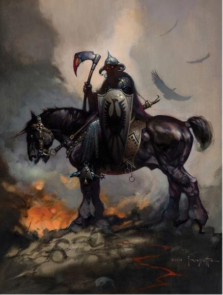
新DOOM叙事手法的影响与启迪来自于一副作画
雨果认为，创作《DOOM2016》的故事、尤其是关于主角身份的解析就如同《死亡商人》一般。游戏的故事虽然有一个轮廓，但却始终笼罩在一层阴影当中。这就带来了一种填补空白的乐趣——你看不到他的面容，只能从眼睛和姿态中猜测其来历与个性。那种想象的力量能带来一些真正引人入胜的剧情感染力。
“阴影”的理念为《DOOM2016》的叙事赋予了一定的欺骗性与诱导。如果只是看表面，随意地对其中的信息进行陈述，很容易陷入自我矛盾的死胡同当中（国内就有许多被误导的人）。在有限的过场与文献资料中，存在着许多空白部份。它们都是剧情当中需要玩家自行补充与推测的内容，而如何在一堆碎片中整理出完整的脉络，又同时能够与逻辑和文本达成不会互相冲突的状态，需要玩家自身仔细品味过游戏。更重要的是：你得对整个DOOM历史也有一定程度的了解。
这种“粉丝向”因子在《DOOM2016》中占据了相当程度的比重。无论是前文所述的游戏性开发理念，还是遍布在整个流程中的模因，都是对将近30年来整个DOOM文化的致敬与回味。很多从当年就开始玩DOOM，并且一定程度经历过这个IP在时代中所遭遇的人，很容易就会挖掘出其中的彩蛋与致敬元素。Id甚至在游戏开场第一句台词中，就念出了1996年漫画中出现的经典台词“RIP and TEAR”，而之后从主角身份对《DooM64》的多处暗示，以及各个角落中的怀旧元素都充满了对往日的无限情怀。
雨果提到：一些玩家会努力吸收所有的细节，而另一些玩家只是抓住了表面。游戏只会给予玩家线索A，但却不会直接将B或是C在游戏中直接演绎出来；但对于那些有耐心去推敲故事的玩家，他们会在后期拿到线索D，并将其与先前所得到的拼图相结合。但是，只有那些了解过整个系列的人，才会得到最多的线索，并设法从一套理论中了解到DoomGuy是谁，他来自哪里，为什么会在这儿。
火星和地狱的绘图——
视觉风格上，Doom在行业中一直都不是有太高的评价。虽然初代在id成员近乎胡闹一般的行为下，带有着强烈的行为艺术质感而备受崇拜，但和那些更加专业的顶尖视觉团队相比还是差了点。当时凯文与艾德里安用各种玩具、雕塑模型和自己的牛仔裤作为模板，创作了机械与血肉相结合的怪诞风格。这些东西在《毁灭战士3》里被丢的一干二净，变成了更加传统的科幻流派。
《DOOM2016》整体来说延续了这种基调。火星的样貌遵循着理性、安静且带有一丝过度冷漠的氛围。UAC基地是太空科幻题材中典型的精英主义做派。他们炫耀着自己的丰功伟业，要求每个员工尽心尽力地为公司服务，甚至丝毫不打算将自己正在利用地狱能量做研究的行为掩饰一下。因为对UAC来说，一切牺牲都是名正言顺在为人类谋福祉的。而反差到遍布着整个火星基地的尸海与扭曲怪物，就带出了一层十分讽刺的味道。
至于地狱，雨果提到了波兰画家济斯瓦夫.贝克辛斯基（Zdzisław Beksi��ski）。这位大师作为波兰著名画家、摄影师与雕刻师，对超现实主义的作品情有独钟。他将自己的风格称为巴洛克与哥德的结合，其带有末世基调的抽象特征，十分符合DOOM所需要的地狱景象。id参考了他那些令人不安、描绘着死亡与腐烂景象的作品，并从中借鉴了许多元素将其带入到《DOOM2016》的地狱里。
新的地狱演奏家——
距离初代DOOM已经有20年过去了，如今游戏行业对于配乐的制作模式已经改变。过去只要谱写出一首好听的曲子，然后将它放在关卡中不断循环播放即可；但近年来玩家对于音乐的标准需求已经逐渐走到了与电影一样，必须产生对故事和情感方面的渲染作用。
id邀请了米克.戈登（Mick Gordon）负责编曲和演奏。这位生于1985年的澳大利亚作曲家自2002年以来就一直活跃于行业中，为《极品飞车》与《漫威超级英雄》等作品谱曲。米尔的音乐风格充满了强烈的即兴演奏气质。按照他个人的说法，这是将现代流行音乐风格与和传统作曲技术结合，不受任何流派束缚的自由音乐。并且重视听众与现场感受之间的联系。他在与id合作之前，就因《德军总部：新秩序》而跟发行商贝塞斯达结下了缘份。
作为一个80后，米克同样经历和见证过DOOM辉煌的时期。他明白要做到既尊重经典元素，同时有保证足够创新和带有自己的个人风格并不容易。和其它作曲家不同，他参观了id总部并与开发人员进行交流。虽然整个项目工期给予创作的时间并不多，但他还是对DOOM的定义产生了全新的理解。他为之驱动的主要灵感是：如何让玩家感受到主角的愤怒，要怎样在战斗中让节奏分明有序。于是便产生了一个让音乐随着战斗的深入与过程，有一个动态播放的想法。这个点子几乎将电子游戏配乐推动了一大步，有着很强的启迪性。而随后《DOOM2016》也成为了截至目前米克个人职业生涯成就的巅峰，在2016年的TGA颁奖典礼上获得了最佳音乐奖。
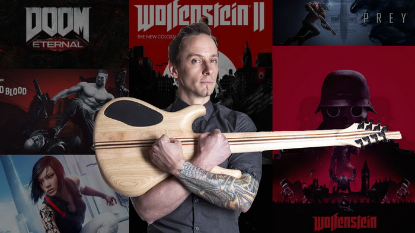
人手确实不足——
明确的方向，充满了热情的新团队成员。事情逐渐走向了正轨。但并非所有事情都掌握在id的手中——其中就包括网络多人模式的开发问题。
由于团队人数不多，时间也比较紧张，单是如何做好单人游戏环节就已经耗费了id的资源。原本这个不算重点的项目很可能被放弃。但发行商贝塞斯达实际上在当时并不是特别看好《DOOM2016》，认为只是一个单机战役模式很难吸引现在的玩家——这确实也怪不得他们，行业如今的现状就是多人游戏占头把交椅。因此作为发行商的贝塞斯达自掏腰包，找来了同样位于德克萨斯州的[亲和工作室（Certain Affinity）]，让他们负责多人游戏部份的开发。
作为曾经给《光环2》以及《使命召唤：黑色行动》等商业大作打造过多人模式的团队，亲和工作室理应是不会掉链子才对。可惜，这些年轻人可能对于90年代的FPS并没有什么太深刻的理解，最终做出来的成品只是一个成人限制级版本的山寨光环——它不差，但是索然无味。对于整体表现出色的《DOOM2016》来说，这个多人模式明显拖累了整个游戏的表现。
让人沮丧的不仅仅是游戏部份。由于一些技术原因，玩家在切换战役与多人模式时，需要重启后再次进入才行。这导致了许多不必要的等待。早在发售前，id就承认了这是出于暂时无法解决的技术问题。但最糟糕的还在后头。由于贝塞斯达当时实在是对新DOOM毫无信心，所以他们将多人模式视为这个项目的救命稻草。后来作为《德军总部：新秩序》的预购奖励，就是允许玩家参与2016年4月6号～8号的多人测试游玩。结果由于质量太过平庸，导致游戏在临近发售前遭到了排山倒海一般的抨击，差点毁了整个IP的名声。
除了多人游戏模式外，另一个被视为游戏主要可玩内容的是名为[SnapMap]的地图编辑模式。它允许玩家自己利用默认的素材与脚本，编写各种单人或在线多人模式地图。并且它还有一个可以随意上传到服务器上，打分并互相分享的功能。明显的，这是为了弥补本作无法大幅度支持MOD开发的权宜之计。毕竟DOOM凭借着民间社区的创作而闻名，如果连个起码的创作与分享后做不到，显然会让不少人感到失落。这个模式虽然是由id主导的，不过贝塞斯达仍旧找来了自家达拉斯分部的工作室帮忙，以便让工期更加稳定。
马蒂后来提到：当与外部团队合作开发时，会导致项目的灵活性大大降低。如果是由id来全权负责的话，他们会采用过去一贯的方式，边玩边调整开发内容。虽然可能并不适合市场，但至少是自己掌控着方向。
——————————————————————————————————
经历了整整长达7年的企划与开发，id终于决定在2014年的QuakeCon上向到场玩家们揭露游戏实际画面。一切的彷徨、决意、不安与努力都将在那个时刻验证。
2014年E3展会上，贝塞斯达公布了游戏的预热概念宣传片后开启了一个名为Doom.com的官方网站。id表示：这个系列一直都是为粉丝服务的，所以最初的实机演示宣传片也只会在1个月后的QuakeCon 2014上演示。这将是一次没有直播与现场录像的演示，仅对QuakeCon现场参与者公开。
时间很快来到了7月17号当天。id关闭了现场的Twitch视频，要求大家关掉自己的录制设备（尤其强调了谷歌眼镜）。马蒂走出来，面对着几百号跃跃欲试、却又因为多年等待以及Kotaku揭露新闻而担心不已的玩家。一番客套话之后，他向在场玩家们公布了本作将不再采用《毁灭战士4》的标题，而是直接以软重启的《DOOM》作为正式名称。游戏将会着重于残酷、高速的快节奏战斗；是一款关于大枪、飙血和怪物的游戏。其中将会出现由UAC制造的控制论赛博恶魔，吸收了多年来优秀的社区作品灵感——诸如经典的《残酷毁灭战士（Brutal Doom）》，而汤姆.霍尔留下的宝贵遗产《DOOM圣经》也将会是重要的参考元素。当然了，游戏能以每秒60帧的速度保持在1080p分辨率下运行。
“我们想要做的、以及你们想要玩的DOOM。”
不是什么使命召唤山寨版，不是所谓的开放世界RPG，更不是一个面临即将被母公司解散危机的垂死工作室搞出来的敷衍作品。这就是DOOM，它变得更现代化了，有一些与过往不同的东西。但现场所有人都看出来了这就是他们苦等多年的游戏。
毁灭战士归来了。
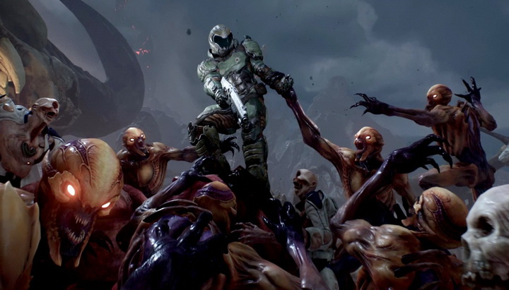
——————————————————————————————————
游戏基础版本介绍
那些多数诞生于90年代，由id Tech 1引擎开发的作品，一般都统称为“元祖毁灭战士”。它们作品版本繁多，并且可能拥有游戏史上登陆平台数量最多的移植版本。更何况提不同主机平台上的内容也各有差异。因此要全部记录并展示在本书中即麻烦，也没有太大必要——毕竟我想也没多少人在乎一些古董计算机系统的DooM。此外，这里并不会记录那些诸如在提款机、吸尘器、超市LED显示屏或电子手表上运行的非官方民间版本。统计元祖毁灭战士仍旧不是什么轻而易举的事情，因此这里仅列出最常见的几个版本。
毁灭战士（DooM）
|
开发团队：id Software |
初版发售日：1993年12月10日 |
|
创意总监：汤姆.霍尔 |
设计师：约翰.罗梅罗、桑迪.彼得森、汤姆.霍尔 |
|
程序员：约翰.卡马克、约翰.罗梅罗、戴夫.泰勒 |
编剧：汤姆.霍尔 |
|
美术设计：艾德里安.卡马克、凯文.克劳德 |
作曲：罗伯特.普林斯 |
|
平台：DOS系统、Windows、Jaguar、Linux、PC-98、SEGA 32X、SNES、3DO、GameBoyAdvance、Xbox 360、iOS、Nintendo Switch、PlayStation 4，Xbox One、Android |
发行商：GT Interactive、ActiVision、Bethesda Softworks、Sega、Atari Corporation、Williams Entertainment、Ocean Software、Imagineer |
最初的《毁灭战士》采用第一章免费向市场与互联网传播、后续版本付费订购的形式进行发售。到1995年，《毁灭战士》已经达到了超过1000万台计算机的用户群体。尽管大多数用户未购买注册版本，但它仍然是当时最赚钱的游戏之一。通过这种形式，id公司可以回避发行商和版税而获得80%以上的净利润。
更重要的是在此之上，整个西方亚文化彻底因为DooM而“出圈”——有点类似2020年《集合吧！动物森友会》的情况。不仅仅是整个玩家群体都成为了游戏的粉丝，就连从来没接触过这个领域的人也不得不对其表示关注。
游戏讲述了孤独的无名陆战队员，自身抵抗火星军事基地实验事故导致的恶魔入侵事件。作品的主要灵感来自于id公司成员某次《龙与地下城》的跑团（团灭）经历。而在项目确立后，他们也对其融入了个人喜爱的8、90年代流行文化元素。其中以《异形》、《鬼玩人2》和克苏鲁神话为主，另外每个关卡中也暗藏了不少摇滚乐或是其它电影的彩蛋。
《毁灭战士》并非首个第一人称动作射击游戏，但它其中所开创的诸多元素和规则，彻底巩固了这个类型的基本概念，许多设计至今都还在影响着后续者。玩法以强调解谜、探索以及高速战斗为核心，其千变万化的关卡设计使其在简单的规则下仍然能保持丰富变化。此外，游戏开创了死亡竞赛和战役合作模式，让游戏厂商看到了如何有效地延续一款作品后续几年生命力的做法。
在发售了一段时间后，游戏程序员约翰.卡马克大力推行了向民间传播免费的玩家自创模组（MOD）文化，甚至还免费公开了所有相关技术的源代码。这个行为让所有人都可以加入到对游戏内容的创作与修改上，使得这款距离现在将近30年的老游戏至今都有着惊人的活跃性。更重要的是，它也是如今大量游戏从业人员投身其中的关键契机。可以说在此之后的欧美游戏行业，有无数人受惠于id的贡献与成就。
和如今你能在各个数字游戏销售平台购买到的版本不同，事实上我们现在根本买不到真正的《毁灭战士》。这个版本实际上是Id最初在1993年以完全免费的共享软件形式向市场投放的。和多数现在的玩家所接触到的、总共有4大章节的《终极毁灭战士》不同，原始版本只有三个章节。也因为如此，我们才会在第三章就看到结局部份打上了“剧终”字幕。
当然了，如果你愿意花800美元级别的起底价，去一些古董竞标网站上寻找的话，大概还是能买到《毁灭战士》原始版本的。而且这东西的收藏价值仍旧在不断飙升…
发售日：1995年4月30日
在看到了零售版本的《毁灭战士II：人间地狱》的成功后，原本不打算与他人合作的id开始对商业发行模式兴趣大增。它除了采用新包装和版号发售之外，还在原始版本上做了优化与增强。为了公平对待之前已经购买了原始版本的玩家，id免费为他们提供了升级补丁。
在该版本上市之前，id原本的计划是采用《至高威能毁灭战士特供定制版》来命名。很可惜因为大家都觉得太过于愚蠢浮夸而被驳回。但这个名字仍然可以通过源代码和游戏DOS安装文件夹里找到尚未修改的程序名称。
该版本的新增内容——《噬尽汝肉》由约翰.罗梅罗主导设计。此外后来加入的第二批id成员如蒂姆.威利茨和亚美利坚.麦基，以及两位从民间征集来的粉丝也参与了许多其中几个关卡的创作。id的美术小组为该章节做了一些新的图形素材，但基本上游戏没有实质性的新增内容。
除了新的关卡之外，罗梅罗还对最初的E1M1关卡进行了重新设计。所以如今我们玩到的版本，其实并非完全纯粹体验的原始内容。
由于在原始版本的结局已经衔接了《毁灭战士II：人间地狱》的开场，所以这个新章节强行增加的故事一直处于争议中。无论是发生的时间还是地点，都与剧情产生了一定程度的冲突，所以通常来说无论是官方还是粉丝都对其进行了模糊处理。一般只认为是主角在原始版本结束后，遇到了敌人垂死挣扎的抵抗，最后在一番作战后再接上了《毁灭战士II：人间地狱》的开场部份。
到了今天，如果你在各大销售平台上购买所谓的初代《毁灭战士》，只能得到这个强化版本。因为像上面说的那样：原本只有三个章节的元祖实体版，如今已是千金难求的收藏品了。
发售日：1996年8月20日
尽管在1995年左右，微软公司为Windows 95操作系统花费了数百万美金，但比尔盖茨还是沮丧地发现：它的装机量始终被《毁灭战士》压在底下。作为当时几乎所有北美个人计算机上必定安装的程序，Doom的影响力不仅远远超过了当时史上已知任何一个电子游戏，甚至还让微软相形见拙。
为此，比尔盖茨制订了一套靠Doom来推广Windows 95的营销策略。其中之一就是由加布.纽维尔（Gabe Newell——G胖）领导的团队负责开发、号称专为所有Windows用户准备《Doom 95》。 这个专属端口支持四种屏幕分辨率，有一些新的功能与相比DOS系统更加便利的设置方式。微软希望以Doom来终结MS-DOS系统的时代——别笑，人家当年真这么对外宣布的。
然而事实上，这个版本在关卡内容上有一些删减，并且带来了诸多Bug。此外它也无法播放MIDI音乐，而是采用了MUS。相比之下在声音上没那么“经典”。对于在这一细节颇为看重的Doom玩家来说是个很难忽略的问题。
有趣的是，如今你在国内的一些盗版游戏下载网站上，居然找到的多数都是这个版本。
发售日：2019年5月26日
在初代游戏诞生将近26年后，由约翰.罗梅罗制作的全新章节“印记”（SIGIL）发布。该章节以实体盒装收藏版预订的形式发售，售价166美元。该收藏版包括了一个软盘造型的U盘，此外比如说明书、艺术设定集和海报、硬币和罗梅罗本人雕像、T恤等等收藏品。当然还包括这位明星制作人亲笔签名的包装盒。
而在实体版出货后不久的5月31号，数字版也已免费下载的形式上架。另外，贝塞斯达于2019年在新平台上发售的移植版，后来也免费更新了这个章节的下载。至此，在初代发售时隔二十多年后，《毁灭战士》全部5个章节终于全部得以完成。
毁灭战士2：人间地狱（Doom II: Hell on Earth）
|
开发团队：id Software |
初版发售日：1994年10月10日 |
|
创意总监：桑迪.彼得森 |
设计师：桑迪.彼得森 / 肖恩.格林 / 亚美利坚.麦基 |
|
程序员：约翰.卡马克 / 约翰.罗梅罗 / 戴夫.泰勒 |
编剧：不明 |
|
美术设计：艾德里安.卡马克 / 凯文.克劳德 |
作曲：罗伯特.普林斯 |
|
平台：DOS系统、Mac OS、PlayStation、Sega Saturn、Game Boy Advance、Tapwave Zodiac、Xbox、Xbox 360、PlayStation 3、PlayStation 4、Nintendo Switch、Xbox One、Android、iOS |
发行商：GT Interactive、Virgin Interactive、Entertainment、Activision、Bethesda Softworks |
《毁灭战士II：人间地狱》是id第一款正式委托发行商代理，以商业软件形式销售的DOOM系列作品。玩家这次将回到地球，凭借一己之力（和无数弹药）对抗入侵家园的地狱军团。
游戏的玩法与前作相比几乎没有任何改变。在内容上，它增加了几种新的敌人、添加了一把名为[超级霰弹枪]的新武器。而在流程机制上面，本作一改可选择的章节形式，将全部32个关卡放到一整局游戏里。这个流程形式最直观的改变，就是只要没有在中途死亡，那么获得的武器资源可以一直保留到通关。
由于前作共享软件版本打下的基础，游戏成为了1994年～1999年最畅销的计算机游戏之一。这个形式也改变了id对商业市场的看法，从此逐渐转型为与同行一样的正规商业工作室。
尽管游戏在已经出现许多竞争对手的市场上仍然一帆风顺，但相比前作在粉丝群体里的口碑却明显下滑。尤其是过于强调数量的敌人配置，以及庞大却不如前作精巧的关卡设计都令人有些失望。在游戏发售多年后，不少从当时走过来的系列玩家都认为其过于微小的改变不符合“续作”的标准。
发售日：1995年12月26日
在《毁灭战士》发售了一段时间后，id发现市面上有人利用他们对版权的宽容态度中饱私囊。一家过去专门生产低成本劣质游戏的公司——WizardWorks推出了一个名为《D!ZONE》的软件系列。这东西利用《毁灭战士》便利的关卡设计功能，推出了各种粗制滥造的地图包。
虽然id允许人们随意使用游戏的引擎技术与模组开发，但在这件事情上，WizardWorks这种以公司身份拿别人东西贩卖的行为明显属于钻空子侵犯权利。
id并不打算付诸法律途径解决，毕竟他们也不在乎对方这点蝇头小利。但为了反击这种厚脸皮的行为，他们决定推出自己的民间玩家模组合集。于是在1995年底，以《毁灭战士II：人间地狱》扩展包形式推出的《大师级毁灭战士》上市了。它以CD光盘的形式出售，其中包含了二十个WAD文件。这些地图包全部是在id监制下，由社区多位玩家根据合同要求创作。其中名为TEETH.WAD的文件除了正式内容外还包含一个隐藏关，因此这个扩展包实际有着21个关卡。
最后值得一提的是，id还在这个扩展包里玩了一些互联网花样。玩家可以通过预购实体版获得奖励代码，在网上下载海报和订购主题T恤等等。
发售日：1995年11月16日
虽然《毁灭战士》的流行让它在90年代初被移植到许多平台上，但硬件方面的限制了家用机版本无法还原其完美品质。直到1995年底，id利用PlayStation的3D硬件功能对引擎做了优化后移植的版本，才让玩家得以在家用游戏机平台上体验到较为完整的《毁灭战士》。
这个版本的渲染效果得以加强，比计算机上呈现出了更加鲜艳多样的色彩。而在流程方面，它分别挑选了初代的28个、续作的23个以及7个原创关卡合并到一起，最终使得本作的单局长度可谓达到了整个系列之最。另外游戏还可以用两台主机连接后的多人游戏功能，但并不支持PS1时代常见的单台主机分屏游玩。
约翰.罗梅罗再次吹破牛皮。他对该版本的评价是“迄今为止最好的DOOM”，而这句话也被印在了游戏包装盒上。然而实际呈现的效果并没有超越计算机版本，最后罗梅罗不得不在访谈被询问时支支吾吾说道：“我并没有将计算机上更好的操作方式算进去...”
PS版本的一个贡献是它优化了引擎和端口，使得后续作品得以更容易制作。之后诸如世嘉土星游戏机的移植，甚至脱胎换骨的《毁灭战士64》都是基于该版本的基础而来的。
最后的毁灭战士（Final Doom）
|
开发者：TeamTNT / Casali brothers / id |
发售日：1996年6月17日 |
|
TNT：Evilution制作人：泰.哈德曼 |
Plutonia Experiment制作人：达里奥.卡萨利 |
《最后的毁灭战士》是以《毁灭战士II：人间地狱》为基础的修改版本。它的游戏玩法完全没有任何改变，仅在引擎上做了优化，并加入一些新的图形素材与配乐。其内容包括了两个由民间玩具创作的WAD——《TNT：Evilution》与《Plutonia Experiment》。
该版本诞生的契机十分“功利”。在看到了《大师级毁灭战士》仍然能够在市场上吃香后，约翰.罗梅罗认为这种征集社区玩家作品贩卖的形式依然有利可图。于是id继续在民间物色自己看中的玩家创作，打算推出体量更大的扩展版本。
一个名为“TeamTNT”的粉丝团队创作了《TNT：Evilution》。这个质量上乘的关卡MOD原本是要以免费共享的形式发布在互联网上面的。然而就在即将上传的前几天，id突然宣布将会买下这个WAD，以商业销售的形式发布。
然而这个行为却带来了争议。它可以说是id第一次真正意义上遭到负面评价的起因。玩家对这个行为感到非常愤怒，并以无视其品质，仅凭其破坏信誉的代价将《TNT：Evilution》列入“十大臭名昭著的WAD”榜单中。
而《Plutonia Experiment》是以社区玩家提供的作品，由id内部成员修改优化而来的。它的关卡基本上都是一些没能完成，带有实验与练习性质的作品。id在筛选了这些“投稿”后，由罗梅罗和亚美利坚.麦基带头进行管理和监制，最后挑选出了能够使用于正式游戏中的一系列关卡整合而成。由于各种各样的因素，《Plutonia Experiment》的难度之高令人叹为观止。如果不利用作弊行为、并选择能够发挥100%内容的[超暴力！]难度的话，它可以毫无悬念地当选游戏史上最难的挑战之一。
2020年初，已经收购了id的发行商贝塞斯达在新端口版本的原始DooM游戏上更新了一个补丁。该补丁除了修复一系列问题之外，也追加了官方推送的Wad内容。其中第一批作品就包含了《SIGLI》和《Final Doom》。
毁灭战士64（DooM 64）
|
开发团队：Midway Games |
初版发售日：1997年4月4日 |
|
监督指导：id Software |
设计师：兰迪.埃斯特雷拉 \ 蒂莫西.海德拉 \ 丹尼.刘易斯 |
|
程序员：亚伦.塞勒 |
编剧：不明 |
|
美术设计：苏克鲁.吉尔曼 |
作曲：奥布里.霍奇斯 |
|
平台：Nintendo 64、Windows、Nintendo Switch、PlayStation 4、Xbox One |
发行商：Midway Games、Bethesda Softworks |
由于无法抽出更多时间，id将原本于1994年立项、名为《赦免》的DOOM相关项目交托给了《真人快打》开发商Midway。最终，专门为任天堂64主机准备、由两家公司合作开发的《毁灭战士64》于1997年初上市。
本作的玩法理念与过去一样：探索迷宫、获取物资、并在与群魔的战斗中生存下来。但是本作的图形、渲染技术和数值等等都有了明显的改变，相比几乎毫无变化的《毁灭战士II：人间地狱》来说它反而更被粉丝推崇为“真正的续作”。
游戏的剧情被视为旧系列故事的终结。玩家扮演的无名陆战队员在回到疑似火星基地后，击败了被称为“邪恶老娘”的BOSS，最后独自留在地狱以保证恶魔们无暇入侵地球。而这段剧情由于因在多年后的《毁灭战士2016》中，出现了多处互相呼应的暗示，被经历过旧系列的老玩家，视为新作与旧系列之间的联系。
——————————————————————————————————
DOOM3及其资料片
《毁灭战士3》（DOOM3，或风格化的写法DOOM³）仍旧由id Software继续担任开发工作。本作于2004年8月3日在北美Windows平台最先发售，而Linux与XBOX版则分别于2004年10月1日、2005年4月3日先后上市。由于机能限制，XBOX不仅在画面表现上略逊于高配置的PC版，同时还删除了绝大多数火星基地户外场景。
本作的亮点在于采用了当时最新的id Tech 4图像引擎，是该系列第一次真正采用了全3D图像技术的作品；这个基于OpenGL诞生的引擎后来也被用于诸如《雷神之锤4（Quake4）》或旧版《掠食（Prey）》等作品中。该引擎的主要特点在于光照技术的提升，能够实现投射到物体上的光影效果的即时运算效果；此外，本作也是id公司首次在自己的游戏里广泛使用了凹凸材质贴图。
虽然不及元祖系列那般成为了有史以来移植作品最多的游戏，但本作也算是一直有各种移植于再发售的版本。除了本篇游戏之外，本作还推出了一部资料片《邪恶复苏》、一个强化版《毁灭战士3：BFG》，并且还在手机平台利用原版素材推出了一个外传性质的《毁灭战士：复活》。
2011年11月22日，约翰.卡马克在删除了一部分可能涉及侵权的内容后，将id Tech 4引擎源代码免费公布于网络上以分享自己的成果。
毁灭战士3
|
英文原名 |
DOOM 3 |
|
发售日 |
2004年8月3日 |
|
创意总监 |
蒂姆.威利兹 |
|
设计师 |
蒂姆.威利兹 / 马尔.布莱克威尔 |
|
编程 |
约翰.卡马克 / 罗伯特.达菲 |
|
作曲 |
克林特.沃尔什 |
|
编剧 |
马修.科斯特洛 |
|
开发团队 |
id Software |
|
代理发行商 |
Activision |
|
登录平台 |
Windows / Linux / OS X / XBOX |
自1998年左右，大量有关Doom第三部正统续作的猜想与分析就广为流传。在最著名的Doom社区论坛[Doomworld]上，当时许多社区用户和玩家将其称为“DooM2000”，表达了希望能在进入新世纪同时便能看到新作来临的一种期盼。
然而与他们想象的有些不太一样，2000左右只是id正式宣布对系列最新作进行立项开发的年份。
2000年6月，约翰.卡马克在公司内部发布了一份关于对Doom系列进行重启的计划书。其中表示虽然遭到了艾德里安与凯文.克劳德等元老的反对，但公司内部多数成员仍然同意对系列最新作进行故事重启。
由于现实中火卫1其实非常小，因此这一次将舞台搬到了过去没有出场过的火星主基地上面。玩家再次扮演无名陆战队员，从入侵源头开始经历整个惨剧的全部过程。游戏着重了故事演出方面的表现，在场景复杂程度与细节上比以往更加丰富；除了一如既往痛宰恶魔大军外，编剧还为游戏加入了火星原住民等新的故事元素，整个世界观的格局比以往更加合理可信了。
由于在实际游戏内容中，玩家发现了大量隐藏着对前两部作品剧情的联系，让《毁灭战士3》看起来并非如宣传所述是完全重启那么简单。然而尽管如此，那些提出怀疑观点的人也拿不出更有力的证据，官方自己多年来也从未有过进一步的明确，因此本作通常在大多数人眼里仍旧被视为以新技术对初代故事重新诠释的重启作品。
与实际游戏有所差异的Demo——
游戏在2002年的洛杉矶E3大展上正式亮相。id公开了一段15分钟的实际游戏影像，其中展示了新引擎技术下的画面效果、与过往截然不同的美术风格、以及游戏主要玩法和一部份系统机制等等。
在这段Demo宣传片里以恶魔入侵为开端，详细呈现了地狱亡灵腐蚀人类士兵并将其转化为怪物的过程。之后，一位无名的陆战队员登场，在展示了各种战斗与探索机制后，最终整段影像以玩家在面对地狱骑士时战败而亡结束。
虽然它的演示以彼时的水准来看很出色，但后来人们发现这段Demo与实际游戏有多处不同：
玩家角色在宣传片里会戴上头盔；但实际上本作主角是系列唯一露出面容的。
整个流程中的节奏要比正式版更加缓慢，人物移动倾向于写实系FPS。
僵尸无法被彻底击杀，倒地一段时间后还会再次爬起来攻击玩家。
透露了原本可能会出现潜行元素，玩家能够通过躲避强敌来增加生存机会。
Demo里的霰弹枪在材质与造型上都更加精细。
被恶魔转化的突击队士兵，会说出各种诸如“死吧凡人”的中二台词。
更加丰富的演出脚本，在玩家死亡时还会出现被恶魔杀死的动画。
这段宣传片让Doom3在当年的E3展会上获得了包括[最佳展出游戏]、[最佳动作游戏]和[最佳PC游戏]在内的多个奖项，在当时获得了非常好的反响备受市场期待。然而，由于卡马克对于作品精益求精的原则，原本预计在2003年发售的计划最终被推迟到了2004年下半年才得以上市。
风格的大幅转变——
为了突出新引擎的技术革新，《毁灭战士3》在游戏的风格上做了调整，更加强调渲染恐怖氛围并弱化了过去赖以成名的“跑射”节奏。本质上它仍旧是一个在封闭狭小的昏暗空间里，与各种角落里埋伏的恶魔作战并探索未知领域的游戏——只是变得更加缓慢、写实和惊悚。
虽然卡马克曾经为了反对同僚的提案，而说出了“游戏剧情不重要”这样的言论，但他还是为《毁灭战士3》聘请了一位专业作家——曾经为经典点击式冒险解谜游戏《第七位访客》撰写过剧本的马修科.斯特洛（Matthew Costello）。
游戏有着比过去更加多样的脚本演出，也穿插了不少过场动画来展现剧情。更重要的是，本作加入了类似《网络奇兵》等沉浸式模拟游戏的一大特色：文档、录音以及环境叙事。以此来增加整个故事的深度与解读乐趣，现在你不仅可以通过记载着无数值班记录、医学报道和日常闲聊的PDA来收集各种密码，还能了解到UAC员工的工作与生活情况。许多关于恶魔的研究记录也能够帮助你更加了解自己的敌人，甚至还有不少对于地狱和火星的文献资料以扩展世界观格局。
而这种利用文档记录游戏故事的方式，也能够让完全不想考虑剧情细节、专注于战斗与探索的玩家有所选择——你可以热衷于收集散落在关卡中的PDA来了解故事内幕，但即便完全不理会也没有关系。
此外，为了进一步体现人物与环境的互动性，Id还特意加入了一个计算机互动的系统——游戏拥有上百个可以进行触屏互动的显示屏幕，玩家可以通过指针的定位来实现对诸如开关、游戏机或密码锁的操作。这个点子其实早在1992年，由汤姆.霍尔编写的《DOOM圣经》里就已经有所提及了。
游戏模式——
和以前一样，《毁灭战士3》除了主要的单人战役外仍旧备有多人在线游戏，提供了允许最多4名玩家同时进行的死斗模式。总共有四个不同的规则：标准的集体混战，争夺物资并消灭除自己以外所有玩家以获得最高分；规则与前者相似的团队死斗；以消耗对手生命数量为目标，战斗到只剩最后一人的类吃鸡死斗；以及最后的决斗模式。
由于默认能够参与的人数较少，所以在之后玩家自己开发了能够进行8到16人的MOD。此外随着Xbox Live已经全面停止服务，所以XboX版本的Doom3多人模式已无法再使用。
本作提供了四个难度选项，每个层级下敌人的伤害会逐步提高，但和系列所有作品的规则一样，不管任何难度下敌人的生命值与防御力都不会得到提升。最初玩家只能宣传前3个难度，在通关后可以选择噩梦——在这个难度下玩家最初便能拥有灵魂立方体，但是生命力会不断下降直到维持在25点，并且没有任何可拾取的医疗包补给。
游戏在开发过程中的删减内容：
大量的火星户外冒险关卡由于引擎限制最终被放弃。
一把功能类似远距离狙击枪的轨道能量武器被删除。
原本有一把能够进行火焰喷射的武器也被取消。
PAD显示地图界面的功能最终没有实现。
女性NPC戏份被删除，其中包括一具裸露的女性尸体。
约有包括机械蜘蛛（Arachnotron）在内的4～5种恶魔仅停留在设定草案。
整个项目从立项到正式发售共花费了4年时间，耗资1500万美元。尽管绝大多数旧系列玩家和媒体认为本作在风格的转变上并不算成功，但游戏整体的出色表现仍旧取得了相当好的商业成绩，在上市后的一次统计中表示共售出了350万份以上。除外，舆论对其评价也是普遍维持在较高的水准线上，在综合评分网站Metacritic上维持着媒体87、用户平均7.6分的成绩。
毁灭战士3：邪恶复苏
|
英文原名 |
DOOM3: Resurrection of Evil |
|
发售日 |
2005年4月3日 |
|
创意总监 |
蒂姆.威利兹 |
|
设计师 |
亚当.贝勒菲伊尔 / 帕特里克.胡克 / 布兰登.詹姆斯 / 戴维.开尔文 |
|
编程 |
布莱恩.马特 / 达林.麦克尼尔 / 肖恩.米切尔 |
|
音效制作 |
克里斯蒂安.安特科 |
|
技术总监 |
约翰.卡马克 |
|
开发团队 |
Nerve Software |
|
代理发行商 |
Activision |
|
登录平台 |
Windows / Linux / XBOX |
在《毁灭战士3》发售两个月后的2004年10月，id公布了扩展资料片《邪恶复苏》，作为游戏本篇后续剧情的延伸内容。游戏需要在原版基础上安装才可进行游玩，由id提供技术支援，Nerve Software负责主要的开发工作，而Activision公司仍旧是本作的代理发行商。
《邪恶复苏》于2005年4月3日在PC平台正式发行，随后于同年的10月份登陆微软XBOX主机，后者可以独立于原版的《毁灭战士3》即可运行，并且收入了《毁灭战士》、《毁灭战士2：人间地狱》及其扩展包《Master Levels》。XBOX版本为了让游戏体验更加轻松，也加入了显示敌人HP值的界面选项。
游戏包含了12个单人战役关卡，包括BOSS在内多种新敌人和两种新武器。多人模式从原本的4人死斗变成了允许最多8位玩家同时参与，并且加入了4张新地图。
玩法上的改变——
本作在玩法上基本与原版的单人游戏模式一样。玩家扮演的是另一位陆战队员，在《毁灭战士3》结局的两年后重返火星遗迹探索时发现了古老的神器，导致地狱之门又一次被打开，玩家需要击败三个地狱猎人吸收它们的力量来强化神器，最后一劳永逸地击败在前作中转化为恶魔的彼苏格博士。
本作加入了在《毁灭战士3》开发阶段就设计完成却因为设计理念不符而被取消的[Grabber Gun]。玩家可以利用这把武器搬运和发射各种小型物体、获取远距离的道具、吸收敌人发射的能量弹并反击回去、甚至直接吸死迷失亡魂这样的小型敌人。由于使用原理类似于《半条命2》著名的“重力枪”，所以在游戏发行后被一部份舆论质疑抄袭，不过在事后开发人员表示，该武器原本就是用于《毁灭战士3》内部测试版本时用于移动错误物品的开发者工具，而后者在开发和上市时间上都早于《半条命2》，并不存在抄袭一说。
另一把新加入的武器是双管霰弹枪，这把经典武器的回归使得《毁灭战士3》拥有了系列传统的通用弹药机制，更加强力的杀伤力弥补了原版常规实弹系武器偏弱的问题，让玩家可以利用它快速击杀敌人。
最后一个新增武器是代理灵魂立方体的[The Artifact]，这是一个悬浮在玩家人物掌中的心脏型器物，能够在发动后实现强化角色的能力。玩家每次击败3个地狱猎人BOSS后，会逐步解锁子弹时间、攻击力增强和无敌三种效果。你可以利用场景中的人类尸体对神器进行充能，总共可以储存3次使用机会，在发动后便会获得全部的增强效果。
游戏的剧情核心也是围绕着神器展开。讲述了主角不断寻找线索挖掘神器秘密，一路击败追杀的恶魔，最后在前往地狱将其摧毁。在游戏最终结局里，陆战队员将神器塞入Maledict口中将其击杀，而神器也在这个过程中被销毁。
虽然在原始版本发售时就饱经抨击，但是这款资料片仍旧没有改进玩家照明手段的问题。在XBOX版本里，玩家的初始手枪上挂载了手电筒，一定程度上改善了在探索与战斗之间总是需要来回切换武器的问题，但由于更加强力的武器并没有获得这项功能，所以后期仍旧有流程拖沓的现象。
新增加与改变的敌人——
除了4位BOSS级敌人外，本作还增加了两种全新的敌人——Vulgar与Bruiser。
前者是一种类似Imp的中等体型恶魔，它的建模实际上来自于原版《毁灭战士3》一个被取消的敌人设计草案。这种同样擅于在通风管和狭窄地形攀爬的怪物替代Imp成为了本作的一线杂兵，投掷蓝色的镭射球并且拥有更高的HP，玩家可以利用Grabber Gun与其进行“投球运动”来轻松的杀死它们。
Bruiser则是一种极为强大的精英恶魔，它们甚至比地狱骑士还要难缠。这种双手都安装了手炮的敌人会一边前进一边火力压制对手，强大的生命力与攻击频率使得玩家不得不借用神器的力量才能快速将其击败。
除此之外，原版的僵尸加入了一种穿着化学防护服的版本，而迷失亡魂的造型也一改《毁灭战士3》的飞行人头，回归了更加野性的骷髅形象，与旧系列风格相符。
《邪恶复苏》获得了与原版相近的评价，虽然有一定的质疑声认为抄袭了《半条命2》的灵感，但在了解到实际情况后都对新的武器给予了正面评价。在绝大多数的综合评分网站上，本作的平均分一般都在80以上。此外，由于德国法律法案的规定，本作与系列乃至id的许多作品一样，都被禁止在该国家进行宣传推广和贩卖。
|
英文原名 |
Doom Resurrection |
|
发售日 |
2009年6月26日 |
|
创意总监 |
约翰.卡马克 / 汤姆.穆斯塔因 |
|
制作人 |
凯瑟琳.安娜.康 |
|
编程 |
约翰.福肯伯里 / 肖恩.格林 / 乔什.马特尔 |
|
开发团队 |
Escalation Studios / id Software |
|
代理发行商 |
id Software |
|
登录平台 |
IOS |
随着移动平台的兴起，一向对尖端技术感兴趣的卡马克也想试试在手机上开发一些id旗下的经典作品，于是我们便看到了《毁灭战士 RPG》和《狼穴RPG》等作品的出现。而在2009年《毁灭战士3》发行的4年后，id又将其素材再利用，制作了《毁灭战士：复活》这款外传作品。本作除了由卡马克担任团队主创外，他的妻子凯瑟琳安娜康也以游戏制作人的身份参与了进来。
故事剧情讲述了在《毁灭战士3》中的B小队一名幸存者在醒来后，遇到了加雷特博士和一个名叫Sam的智能机器人，并在它的指引下与恶魔战斗，解救UAC幸存人员并最终帮助幸存者们搭上飞船逃生。
虽然看起来游戏是与本篇故事时间线并行，然而游戏的时间线却是发生在2145年6月——《毁灭战士3》故事开始时的几个月前，所以本作事实上只是另一个平行宇宙中的故事，之后的一些细节也显示了两者不在同一个世界线里。
游戏总共有8个关卡，基本上都是正篇游戏中出现的场景，而出于机能和玩法上的限制，同屏最多只能显示2～3名敌人.玩家一开始便拥有突击步枪，并且储弹量也是无限的，只有类似霰弹枪和BFG这样的特殊武器才有着弹药限制。
虽然在视觉风格和素材上延续了《毁灭战士3》，但实际上画面进行了大幅度缩水，游戏方式也变成了类似街机上《死亡之屋》那样的轨道射击玩法。游戏运用了手机的感应功能，当敌人投掷火球时，可以通过摇晃手机屏幕来侧身闪避攻击。而一旦被丧尸抓住，玩家也需要快速摇动手机来挣脱。
本作于iPhone的iOS系统上发售，在国内可能很少有人接触过。虽然整体上游戏的玩法和节奏很适合在手机平台上游玩，不过作为一个10年前的实验性作品来说，和现在已经在某些方面极为成熟的便携游戏相比，并没有什么值得一试的内容。仅仅只是系列爱好者们的猎奇产物而已。
有趣的是，在本作开发阶段，向来很少提及过去的卡马克，居然在当年的采访时坦言了《毁灭战士3》的手电筒设计是该游戏犯的最严重错误，光是这点也许就让本作有了一些谈资了吧（笑）。另外还有一个值得提及的是，在本作中最后为了帮助主角而牺牲的Sam，在后来的《毁灭战士II RPG》中被修复了，简介验证了本作是被划分在了“RPG系列”的世界线里。
毁灭战士3：BFG版
|
英文原名 |
DOOM 3：BFG |
|
发售日 |
2012年10月16日 |
|
执行制片人 |
埃里克.韦伯 |
|
设计师 |
蒂姆.威利兹 |
|
编程 |
柯蒂斯.阿林克 / 罗伯特.达菲 / 杰弗里.法朗 / 瑞安.格列夫 / 比利.伊桑.汗 / 格洛丽亚.肯尼克尔 / 迈克尔.梅纳德 / 约翰.罗伯茨 / 史蒂芬.塞拉芬 / 扬.保罗.范.韦弗伦 |
|
作曲 |
克里斯.弗伦纳 / 克林特.沃尔什 |
|
首席程序员 |
布赖恩.哈里斯 |
|
开发团队 |
id Software |
|
代理发行商 |
Bethesda Softworks |
|
登录平台 |
Windows / PS3 / XBOX360 |
2016年10月16日作为画面重制与内容合集的《毁灭战士3：BFG》在北美发售，登陆了PC、PS3和XBOX360平台。本作由id进行开发，母公司Bethesda发行。在登陆该世代主机平台后，游戏的画面技术得到了提升，加入了一些新的功能修改以及检查点自动存档机制，支持3D眼镜技术并增加了新的游戏内容。
该版本共收录了——
《毁灭战士3》
《毁灭战士3：邪恶复苏》
《终极毁灭战士》
《毁灭战士2：人间地狱》
原本仅在XBLA上提供下载的2代扩展资料片《没有休息日的生活》
基于原版扩展的新增单人战役模式《失落的任务》
与原版相比在性能上的改变——
在PC平台上运行的所有游戏都可以兼容Windows 7操作系统。
主机平台上的画面效果与高配置下的PC一致。
增强了音质质量。
删除了高级键盘映射功能。
支持3D电视和高分辨率显示器。
改善了游戏运行效率
游戏可以在120hz下运行，拥有更加流畅的画面体验
一定程度上改进了贴图质量
光源效果获得了更好的提升，来自手电等光照都可以投射阴影
FOV最大值被下调了
游戏机制上的改变——
增加了便携式照明系统，玩家终于可以在不切合武器的前提下兼具战斗与探索
原本作为武器的手电筒被完全删除
增加了更多的补给，玩家的盔甲也能达到125点
拥有检查点自动保存机制，通常为每关进行一次自动存档
取消了视野缩放功能
在关卡中增加了更多的敌人
《邪恶复苏》的关卡再也不需要佩戴防毒面罩，主角可以直接进入充满了有毒废料的排污系统中。
失落的任务——
玩家将在这个新增战役模式里扮演《毁灭战士3》本篇剧情里失踪的B小队唯一幸存者，在你从恶魔的袭击中死里逃生后，一位自称在UAC远程传送实验室的幸存者理查德迈耶斯博士（Dr.Richard Meyers）联系上了玩家，希望你能帮助他摧毁被恶魔们抢夺的传送装置。
由于这个装置上面的信号坐标能够让大量恶魔直接前往地球，而恶魔们已经将其带入地狱，因此必须有人进入地狱去摧毁这个装置。玩家最后成功的毁掉了传送装置，并且和理查德博士一起被地球的增援部队所救，回到了地球。
该附加任务共有7关，基本上是对原版内容的一次吃书，尤其是《毁灭战士3》提及的幸存者人数在这段剧情里被扭曲。不过在设计上，《失落的任务》仍然得到了一定程度的好评，认为对原版内容的浓缩有相当的游玩价值。
《毁灭战士3：BFG》的评价褒贬不一，它在兼容性和音画效果上有了不错的提升，合集包式的内容也十分厚道，具有收藏意义。但是游戏的一些小问题，诸如在主机上的加载速度和强制存档等等效果令人失望，对游戏体验造成了一定的影响。最令人尴尬的是虽然解决了照明问题，允许玩家在昏暗地点不用切换武器，然而玩家却又对手电筒被删除感到了不满。
——————————————————————————————————
DOOM（2016）
|
开发团队：id Software（主要）Panic Button（NS移植）Certain Affinity & Escalation Studios（协助） |
发售日期：2016年5月13日（PC，PlayStation 4，Xbox One） / 2017年11月10日（任天堂Switch） |
|
创意总监：马蒂.斯特拉顿，雨果.马丁 |
引擎 / 程序员：id Tech 6 / 比利.伊桑·汗，提亚戈.索萨，约翰.卡马克（鸣谢） |
|
编剧：亚当.加斯科因 |
作曲 / 演奏：米克.戈登 |
早在2008年左右，id就确认了将会开发名为《毁灭战士4》的系列最新作。然而在接下来很长一段时间里，这款游戏都如同深藏在迷雾当中；无论是具体的游戏内容、开发进度还是上市日期都没有任何信息透露。
直到2013年左右，在经历了工作室的一些内部动荡后，id决定将整个项目推翻重做。在随后团队主心骨与元老的约翰.卡马克离职后，一支由退伍海军陆战队员、电影原画设计师和雷神之锤开发成员组成的混编团队接手了项目。
随后收购了id的母公司贝塞斯达宣布：预购《德军总部：新秩序》的玩家将获得参与DOOM新作的Beta测试资格。尽管由于Kotaku来源不明的开发困境泄露新闻，id面临着多方的质疑，但终究还是在2014年QuakeCon现场现观众展示了新作的一系列信息。过去的游戏标题被修改，简化成了带有软重启性质的《DOOM》。后来为了区分元祖作品，多数人将其称为《DOOM2016》。
游戏最被业界所知晓的一次展出，是2015年的E3贝塞斯达发布会。首先是贝塞斯达市场部门主管皮特.海因斯上台对id进行介绍，随后由本作的团队负责人马蒂.斯特拉顿向观众讲解游戏的特色。其中提到了他对DOOM核心理念的看法——BadAss恶魔、大Fu…真特么大的枪以及快准狠的游戏节奏。
随后是展会公布了一段实际演示。其快速而残暴的战斗场面令不少人感到惊叹，甚至一度出现了对其内容真实性产生质疑的声音。但最终在发售后的表现除了诸如主角头盔上的“F90”被换成了符文标志，以及一些敌人造型细节的修改外，整个游戏的表现与宣传片内容相比没有丝毫缩水。甚至实际游戏表现要比演示的还更上一层楼。
玩家再次扮演一位无名的太空海军陆战队员。但这一次在游戏的资料中，可以得到其名为[Doom Slayer]的绰号。其背景来历在一定程度上采用了模糊化的描绘方式，虽然有大量细节和暗示在对旧系列主角进行呼应，但都故意被陈述得模棱两可。这种做法虽然让不少新玩家产生了疑惑，但却大大刺激了社区讨论的活跃性。它抛弃了《毁灭战士3》缓慢、黑暗且注重惊悚内容的架构，虽然在视觉层面上有不少相似之处，但在游戏玩法和氛围上却明显是对元祖系列的重现。
作为一款延续了古典FPS精神的作品，《DOOM2016》虽然还保留着过去的迷宫探索元素，但在一定程度上弱化了这个环节。它着重强调的是快节奏的残酷战斗场面。有别于同期市面上绝大多数的FPS，《DOOM2016》更像是个第一人称视角下、以枪械作为主要攻击手段的动作游戏。在发售后不久，被许多玩家赋予了“枪中忍龙”的别名。
虽然由于外包给其它工作室负责的多人对战模式质量平庸脱了后腿，但《DOOM2016》仍然获得了媒体与玩家的好评。整体来说，它在单机战役方面的水准堪称近十年来最好的FPS游戏之一。在不少人已经厌倦了写实系和电影化脚本泛滥的市场下，本作以饱满、完善且可玩性绝佳的单人游戏模式征服了许多人。虽然有不少从未接触过这类设计理念的人感到不适应，但它对于一些更加喜欢探索、高强度厮杀的玩家来说着实诱人。而这种新旧时代审美观上的对立还不仅仅出现在玩家群体中，就连专业媒体也暴露了不适应老炮儿风格的情况。
IGN就是如此。也正因为给《DOOM2016》的评价显得十分不公平，导致IGN遭到了不少人的嘲讽。随之导致的滚雪球效应，甚至出现了每年都要拿这种随意打低分的行为来批斗IGN。
不过，虽然有诸如太暴力、路太难找、战斗没有掩体和上弹匣的设计莫名其妙等抱怨，但《DOOM2016》还是获得了肯定。随着时间的推移，除了战斗之外，它在叙事上的尝试、新颖的配乐模式都获得了一致好评。游戏在MC上的最终平均得分在87分以上，玩家的口碑也相当不错。不仅如此，许多业内人士也对本作赞叹有加。他们认为id做得最好的一件事，就是像业界和市场证明了游戏表达形式的多样性，在一个老派精神与现代风格之间找到了平衡点。值得所有的从业人员借鉴学习。
虽然很遗憾，游戏因为如今引擎等技术限制，不能提供过去那样开放的MOD创作条件，但id仍然准备了一个SnapMap模式。它的表现如果对比原始DooM自然是显得有些尴尬，但在如今的游戏里头也算是个值得花时间游玩的创作模式。何况它还能支持在家用机平台上使用，并上传到社区中分享，在便利性方面有着得天独厚的优势。
从数据上来看，《DOOM2016》的商业成绩在及格线以上。它在上市数周内完成了PC版50万份的成绩，在英国实体销量榜上仅次于索尼独占3A大作《神秘海域4：贼途末路》。虽然没有家用机版本的实际数据，但它在一年内完成了PC版本200万份的销量。对于计算机市场来说已经是个不错的表现。更何况，实质上《DOOM2016》在如今的行业标准里头，甚至都算不上是个一线大作的规模。因此在利润上，它的回报可能要优于不少3A级作品。
——————————————————————————————————
DOOM：永恒（DOOM：ETERNAL）
|
开发团队：id Software |
发售日期：2020年3月20日（PC，PlayStation 4，Xbox One，Stadia） |
|
创意总监：马蒂.斯特拉顿，雨果.马丁 |
引擎 / 程序员：id Tech 7 / 比利.伊桑·汗，埃文.尤班克斯，约翰.卡马克（鸣谢） |
|
编剧：雨果.马丁，亚当.加斯科因，乔恩.莱恩，乍得.莫斯霍尔德 |
作曲 / 演奏：米克.戈登 |
2018年洛杉矶E3游戏大展上，发行商贝塞斯达在自家发布会上正式公开了系列第5部正统续作《DOOM：永恒》。在当时展出的只有一段概念宣传片，以CG动画的形式演绎了被地狱入侵的人类世界，最后以毁灭战士出场并与群魔交战的场面落幕。随后两位项目主要负责人雨果.马丁与马蒂.斯特拉顿上台做了简单的演讲，并表示正式的实际演示会在同年8月份的QuakeCon 2018正式亮相——这也是首次在QuakeCon上全球公开转播，而不是到场玩家专享的形式公布系列作品。
时间来到8月份，id如期向当初承诺的一样展示了三段实际游玩演示。雨果表示本作将会采用最新的id Tech 7引擎开发，它的特色是回归当初id追求的运行效率，能够在主机平台上实现1080p下60帧的速度。并且如果你有一个配得上的硬件，那么个人计算机就能以最高1000帧数的效率运行——而截至目前的硬件水准也已经证明了游戏可以达到将近500帧的刷新率。
因为这个引擎的特性，所以本作加入了实时恶魔破坏系统。在面对玩家的攻击时，敌人身上的血肉会随之找到破坏，呈现出各种触目惊心的杀伤效果。得益于引擎功能，它们完全不会对运行产生负担。
id对本作的目标之一是打造一个“DOOM宇宙”。它将会更大、更全面地展现这个系列的背景与世界观。游戏提供了将近30种恶魔，乃系列之最。另外在美术设计方面，本作很明显还原了初代的氛围，采用了一种介于漫画与黑暗幻想之间的感觉，相比前作严肃质朴的科幻风格显得更为“卡通”一些。当然，系列标志性的黑色幽默丝毫没有半点削弱就是了。
游戏原定于2019年11月19号发售，但随后id宣布将会延期以便对游戏做更多雕琢。由于这个决定导致它与任天堂旗下的《集合吧！动物森友会》十分巧合地在同一天发售，所以两部作品的粉丝进行了大量的互动，成为了2020年乃至游戏史上最大规模的玩家群体友好交流。这个事件一度被传为佳话，并诞生了无数的社区民间创作。
到了2020年游戏终于得以发售。玩家再次扮演扮演DoomGuy，面对全面入侵地球的恶魔军团，展开了一场的单枪匹马的复仇之战。游戏从前作的框架进行了更加精细、强调策略与操作能力的改良。它有着与如今市面上绝大多数同类第一人称射击游戏截然不同的体验，更加接近诸如《忍者龙剑传》、《鬼泣》或是《只狼》等高难度动作游戏的体验。
最典型的特色是鼓励玩家前进而不是寻求掩护的战斗思路。游戏中玩家可携带的资源量相当少，但每一场战斗中都能够通过击杀敌人来获取一切所需的补给。玩家装备了可以自动填装的肩部榴弹发射器，在一开始就拥有作为弹药补给机制的电锯；之后还能习得强力AOE攻击“血拳”和裁决剑等等，让毁灭战士更加如虎添翼。但代价就是普通的近身格斗被削弱为只能用于击退小兵的防御技能。
本作的恶魔被分为几个阶级——炮灰、重型、超重型以及BOSS级和环境型。这些恶魔总计约30种，每一个敌人在设计思路与应对方式上都截然不同，当它们在后期形成了配合后，呈现出的变化远远超越了截止目前任何一个已知单人FPS的认知范围。
id Tech 7引擎的恶魔破坏系统不仅仅是噱头。它们在被玩家击破身体部位时，也会随之出现战斗力上的骤降。比如肥球的火炮在损坏后其威胁也会随之下降，而机械蜘蛛头顶的炮塔也能够在交火时被拆下，减少它们的远程打击能力。
毁灭战士获得了新的冲刺技能以及强力的爪钩，所以在普通移动时被故意做得比过去稍微慢一些，以此来鼓励玩家多使用各种手段增加动能。这些移动机制也因此改变了关卡设计模式。在战斗之外，游戏还有大量的平台跳跃，毁灭战士需要在墙壁间攀爬，利用横杆摆荡或前往各种险要的地点。
以现代游戏的标准来衡量，《DOOM：永恒》的难度极高——甚至可以被列为2020年乃至本世代最难的游戏之一。它的设计理念同时兼具了战术思考与操作反应，对玩家自身的要求与学习能力都提出了相当严苛的标准，不是任何人都能轻易尝试的。即便是最低难度，它也远远超过大多数FPS，因为这点，许多游戏水平较差的媒体人和轻度玩家都无法适应，最后引发了一连串的社区讨论。
除了精彩之极的单人模式外，游戏还有一个id自行开发的[战斗模式（Battlemode）]。它采用了固定2对1的非对称玩法——两名玩家扮演恶魔，1人操作毁灭战士，在各种错综复杂但相对狭小的斗技场展开厮杀。恶魔玩家可以选择多种职业，它们单打独斗几乎无法在毁灭战士手中讨到任何便宜，但却可以召唤手下并利用各种计谋与陷阱来围剿这个强大的对手。而毁灭战士则需要在与单人模式相似的规则下，一边获取补给一边猎杀两名恶魔玩家。
游戏虽然没有微交易和内购，但同时也有如今游戏常见的季票。它将提供两个剧情DLC内容，但截止本书完成之前尚未发售，因此没有收录在其中。
评价与发行后的争议——
由于COVID-19疫情在游戏发售时刚好处于爆发期间，因此本作的实体销量受到了一定程度影响，比前作低了约33%。但即便如此，它也比《DOOM2016》的销售速度快了将近3倍，在发售当月就完成了数字版300万份的销量。之后也多次成为Steam销售榜的冠军。
它被誉为有史以来最好的第一人称动作射击游戏之一，完成了系列的自我突破，对整个FPS类型来说也是极富历史价值的重要篇章。游戏获得了大量好评，在综合评分网站上拥有90分左右的平均分，但因为涌入了大量新玩家无法适应其高难度，所以用户评分相比前作有所下滑。但在系列老玩家的评价里，《DOOM：永恒》几乎获得了一片倒的赞誉。
不过，游戏因为发行商贝塞斯达强行推广自家平台——Bethesdanet，即便是游玩单人战役模式也仿佛要求检查账号，因此许多人对这种破坏流畅体验的做法感到不满。之后人们很快发现，由于Bethesdanet服务器一直存在的诸多Bug，甚至间接会导致游戏自身的存档出现问题。这些现象都让本作优秀的游戏素质蒙上了一层阴影。
——————————————————————————————————
《DooM64》：生不逢时的沧海遗珠
通常来说，人们对于DOOM系列的正统作品究竟有多少部，一直没有太固定的说法。这也难怪，毕竟在首部作品就属于未经正式渠道发售的情况下，整个系列从资料片到各种复刻版本琳琅满目，所以究竟何为“正统”的定义确实不太容易。而在这其中，就有一个鲜为人知，但是在系列里头却有着正统续作般重要地位的作品：《DooM64》。
由于罗梅罗的营销策略，旧系列——或者说元祖DOOM，基于它便利的关卡创作功能，因此只要把游戏本身几近完美的玩法，绘制出各种关卡后往上面套就行了。因此，在《DooM》获得了成功后很快出现了大量的复制粘贴。id在PC上推出了多个版本，然后又在各大平台上继续移植，几乎是泛滥成灾。它们基本上在游戏性、设计理念与故事上有着一脉相承的联系。
但是除了最初两部正统作品之外，由于后续的资料片多数都只是新增关卡而已，在剧情上也是各执一词十分混乱，因此关于这之后的相关游戏都只是被视为平行世界的外传剧情而已。而在这里面能被包括笔者在内绝大多数系列爱好者认可，被视为真正在剧情、内容和整体进化程度上具有正统性的游戏，还是要数1997年id于任天堂N64主机上发售的《DooM64》了。
不过，《DooM64》并不成功。原因也很简单——虽说在[第一人称射击]这个如今最常见的分类称谓还没取代[Doom clone]之前，这些现在看起来有点下三滥的销售方式还很吃香，但你并不能阻止人们最终厌倦了 id 这一套。在 id 自己已经推出了《雷神之锤》，其它厂商也跟着带来了风格各异的新时代FPS作品，一个只是在图形上有所差别的元祖DOOM显然已经过时了。
所以你看， 在大众眼里《DooM64》极为冷门、即便听说过也往往认为它是个失败品。但事实上它在游戏质量上丝毫不逊色，甚至还可能是整个系列里质量最拔尖的作品之一。对包括我在内的玩家来说，即便可能带有一定程度“物以稀为贵”的心理作用，但我仍然确信这是一个任何DOOM粉丝都不可错过的佳作。
在《DooM64》于现代平台重新发售之前，它在国外相关社区存在着一个经典笑话——这才是真正的《DOOM 3》…
说真的，这可不仅仅只是个玩笑话。因为在传承性方面，《DooM64》对于整个系列来说都具有很重要的意义。
可能很多人不知道：早期的游戏宣传欺诈比现在要严重得多。当初罗梅罗在《DooM II：人间地狱》即将发售时的采访中曾经夸下海口：续作的变化很大，更多的武器和恶魔，更强的玩家角色。结果也看到了，多数人一直都只把《DooM II》视为初代的扩展。仅仅只是修复一些小问题，加了几张贴图，少数新敌人和一把武器就自称续作，那也过于敷衍了。何况2代在关卡设计方面有些一言难尽。不算糟糕，但跟初代巧夺天工的水准一比较就有点俗气了。
id之后推出了那么多版本，但这一票DooM游戏都只是关卡不同而已。唯独《DooM64》是唯一能够跟初代区分开，属于真正意义上的新作。它改进了id Tech 1的一些技术问题，图形和音效配乐也都是重新制作的，也为此增加了一些新的游戏机制。除了视觉上的直观变化外，它在游戏玩法方面仍旧和初代类似：在一套简单而完整的游戏公式里套入各种千奇百怪的关卡。
多达三十个以上的关卡大体构造仍然以错综复杂、充满各种机关陷阱的封闭式迷宫为主，但基本上每一关都做到了拥有自己的主题和设计思路。在敌人的数值和判定的细节，以及诸如飞镖墙壁导弹雕像之类新加入的陷阱功能，使得体验上与以往作品有了很大区别。
而另一个关键，便是本作一改过去激昂明快的配乐，以清一色阴沉压抑的风格取而代之。奥布里霍奇斯（Aubrey Hodges）也许并没有参与过什么一线超大作的配乐创作，但是他为《DooM64》所谱写的曲子，却成了有史以来最骇人的游戏背景音之一。
就和我过去反复曾经强调的那样，《DooM》绝非属于恐怖生存游戏。但它神秘怪诞，塞满了能激发负面情感的东西。而且在长时间游玩时，很容易因其暗无天日的漫长征程而带给人绝望感。虽然《DooM64》玩法并没有改变，但在氛围上却将上述这些元素激发到了极致——忘了《Doom3》的手电筒敲铁管吧，它在惊悚桥段上的手段比后者高明太多了。
在故事方面，本作是旧系列三部曲的终结。它把舞台搬回到了火星基地上，为了处理残存的恶魔，已经夺回地球控制权的人类向其派出了清剿部队。而玩家——之前两部作品力挽狂澜的无名陆战队员也在其中。可想而知，最后还是剩下你独自一人。玩家将会孤身深入魔窟，击杀能够复活与强化恶魔军队的BOSS：邪恶老娘。
游戏结局在今天看来也是相当“邪门”。在经历了这么多残酷的战斗之后，陆战队员明白了地狱永远也不会停止入侵。没人能够忍受这种时刻都会遭到屠杀的恐惧，所以他决定一个人永远的留在地狱中，确保恶魔没多余的精力去祸害别的世界。整个旧系列的故事，就这样结束于陆战队员决定孤身一人前往地狱深处。
DooM64是系列最具邪典气质的
现任的id两位主要制作人马蒂斯.特拉顿和雨果马丁都是《DooM64》的粉丝。他们也曾经不止一次表示过本作对《DOOM2016》以及续作《DOOM：永恒》的影响与继承。除了诸如“鲜血堡垒”的再次登场或是一些关卡设计上的致敬外，游戏里的剧情也在处处暗示着对《DooM64》结局的延续。
虽然由于2016版剧情采用了一贯的模糊化叙事。所以当时在官方没有给出决定性的证据之前，只能算是暗示。但是到了续作《DOOM：永恒》中，id算是直接在剧情中承认了——新作的主角就是当年元祖三部曲的那位陆战队员。他在深入地狱后，开启了如今这一场新的冒险，随之引发了后续的故事。
由于各种各样的因素所致，《DooM64》一度也曾经陷入过身份危机中，关于它的回归多年来众说纷纭。直到二十多年后，由于它与《DOOM：永恒》之间的剧情联系，id总算决定让这个系列最棒的作品之一重见天日。长期以来对版权问题和源代码丢失所产生的遗憾，得以在新的任天堂主机上得到补偿，换任何一个遗失多年的佳作都是值得令人开心的事情。
不过，可能很多人不知道的是，《DooM64》其实并非完全由id所负责。它是一个外包合作的项目，而在内容开发上最大的功劳应该给予Midway Games。嗯，你没猜错，做《真人快打》的那家Midway Games。
本作主要开发由Midway的圣地亚哥工作室开发。id则负责了技术支援，项目监督和创意提供。游戏早在1994年2代上市后就立项，和交付于乌鸦组的《毁灭巫师》有点类似，都可以视为卡马克主推的对行业后辈培养与支持的一次尝试。甚至很多关卡和艺术风格的设计草案，都是当年罗梅罗离开公司之前就留下来的。
真人快打也是一个传奇IP
和系列传统不同的是本作没有多人对战。由于任天堂没有为其提供多人在线模式所需的资源，而Midway也认为在一台显示屏上分割画面有违多人游戏乐趣，所以最后取消了4人对战模式。不过这个缺憾后来倒是在《雷神之锤》的N64版本里头被填补上了。
游戏主线最后一关标题为[赦免（The Absolution）]。它其实也是本作在1994年立项时的开发代号。就和初代在《DooM圣经》里可以看出内容差异巨大那样，64原本也是个十分具有野心的项目。尤其是更具有明确文化符号的视觉设计（看起来应该是玛雅文明），一大堆有别于前作的改变，以及续作的构思都暗示了本作曾经有着非常大的野心。
虽然很遗憾，游戏上市后反响一般，但id还是很欣赏Midway所作的一切，对他们的开发能力赞叹有加。并邀请他们接手《雷神之锤》的N64版移植工作，这可能也导致了Midway无暇抽出人员处理其它工作，所以计划中的续作《DooM：赦免》很快就没了下文。如今我们只能在DoomWiKi等网站上看到留存下来的早期开发图片，可以发现它明显不同于系列作品的视觉风格
虽然我一再强调64的关卡设计非常出色，但其实在开发阶段，Midway最初的作品质量却并不令人满意。游戏原本预期在1996年就上市，但id向Midway表示他们提交的关卡设计水平过于平庸，达不到作品起码的要求。最后制作组只能推翻重来，把整个工期延后了至少半年以上。
Midway在被甲方退回单子后，最终给出的成品质量有目共睹。但是它却没能抓住最佳的上市时间。《DooM64》原本被分析师们认为会是1996年商战赢家之一，但id让制作组推倒重来的要求，错失人们对这个游戏类型最后的狂热期。游戏上市后，评价褒贬不一，销售成绩也一般般。
“Sigh... yet another mediocre N64 game.”
这是当年著名游戏媒体GameSpot对《DooM64》所作出的评价。尽管这位文章作者在开头就暴露了他可能根本没玩过——能把最强武器说成“似乎是个没用的激光”，也就不需要再追究后面那些牛头不对马嘴的评价了。
但这并不妨碍GameSpot毫无压力地给出低分，因为说到底，当时可能一些媒体杂志都没通关过《DooM64》。所以在集体打出低评价的环境下，多喷个两句反正眼下没人能验证事实，也就无所谓了。当然了，也有很多媒体给出的评价很靠谱，IGN指出了虽然这已经是系列目前最好的一个版本，但人们确实已经腻歪DoomLike了。
顺便一提，其实作为能与IGN分庭抗礼的国外游戏媒体，GameSpot素来在打分方面和前者并称“懂个屁”的绝佳体现。即便面对多年后的《DOOM：永恒》，GameSpot的评测也是写得莫名其妙，因此也可以视为故意耍宝的一种传统，无需将其分数视为具备参考性的存在了。
其实，说到底在1997年的任天堂主机，居然出现了一款全系列最阴森压抑的《DooM》。倒也能理解为什么当时那么多孩子受不了选择了退款——毕竟当时人们还尚未完全走出任天堂只负责儿童市场的刻板印象呢。
但我们不应该被时代的局限性所束缚——尤其是对于DooM这种定义和领导了整个时代的作品。《DooM64》的内容与设计思路，直到今天也是许多开发者所不能及的高度。它作为一款DooM系列作品、以及作为一款FPS的价值应当被再次挖掘。
在id大规模移植元祖系列的时期，不论是PS还是GBA，这些版本都是以PC上的内容为基础的。唯一所作的改变，似乎只有为机能限制而做出的各种缩减（3DO和PS版的HUD脸在死亡时会爆炸）。
当时在家用机上玩DooM很大程度上也只是一种赶时髦，这些关卡（尤其是2代）事实上不是很适合在家用机上面体验。制作组显然也明白这个道理，所以和其它移植作品相比，作为专门为主机开发的《DooM64》在内容上就有不少差异了。
受限于卡带容量，64版的关卡设计很明显更加紧凑。你不再会见到2代那种过于庞大的开阔场景，或是靠着处理器优势而滥用的堆怪手段。由于每个关卡场景相对较小，64的环境内容在利用率上更高。设计师对这一类型特有的“开/关”特性了如指掌，通过脚本来反复改变一个场景的结构，形成了往返同一个区域却能触发各种各样的变化。
虽然整体难度可能不及《Final DooM》，且没有怪物复活的“Nightmare!”等级，但《DooM64》仍然是块很不好啃的硬骨头。它增加了一些新的机关，而且凭借其致命性让即便是熟悉旧系列的玩家也经常吃瘪（想想快过关的时候捡了把离子枪结果被墙壁射出的飞刀给秒了的心情吧）。
另一方面，难度阶梯并非单纯的由浅入深。对于缺乏经验的陆战队员来说，初期关卡被设计为很容易陷入困境，但只要小心谨慎也不会太刁难人的方针。多数人很快就能适应。
这有点像是一种游戏设下的意识陷阱。当你以为自己开始进入舒适区域后，中期的关卡便会露出獠牙——前面提及的飞镖机关只是“恶意”罢了；缺乏补给的封闭式场景连续死斗，以及开/关触发后的突然袭击频率会爆发性增长。对于刚刚开始认为只要保持戒心就没问题的玩家来说，对技术与战术要求的激增往往会将你打得人仰马翻。
在现代平台移植版本发售后，许多尝试本作的新玩家都大为惊讶：这简直就是个更加精神污染的第一人称黑暗之魂。
这种说法毫不奇怪。元祖DooM本就是与FS名作魂系列有着千丝万缕联系的“前辈”。它们在关卡设计理念和氛围塑造上可谓十分相似，而《DooM64》在更加强调迷宫、机关陷阱和阴森氛围后，产生这种想法也毫不奇怪了。尤其是本作在艺术风格上，绝对是多年难得一见的异端存在——诡异、阴森到能从屏幕中透出的绝望气质，让它成为了N64作品群里当之无愧的邪典之王。
如果不把[背包]视为一种升级机制的话，系列首次出现成长系统便是来自于本作。游戏中加入了一把新武器，它在官方游戏里是以消耗能量弹为主，能够发射出具有一定贯穿效果的红色激光。武器看起来像是由血肉和骨头组成的，上面还刻着一个五芒星。
Unmaker是一把非常怪异的武器
它是本作唯一添加的新武器，除隐藏关之外，主线直到12关痛苦祭坛才会见到恶魔武器，在整个流程里大概只能找到2～3把。在刚刚获得的时候，这把恶魔武器只能发射出一道激光，输出效果有限。但如果能够进入隐藏关卡，找到其中3个与游戏logo造型相似的纹章，便能增强它的火力、射速和扩散激光。在激活了其全部的潜力后，它在战斗中的收益甚至可能超过了BFG-9000。
虽然通常来说，这把武器不论是玩家群体里还是记录档案都将其称为“Unmaker”，但这其实只是一个推测出来的名称而已。在正式游戏和官方资料里，这把恶魔武器并不存在正式名称（就和玩家角色一样）。当你在游戏里拿起它时，信息栏会提示“这特么的是什么鬼！？”（What the !@#%* is this!）。
之所以选择用“Unmaker”来称呼它，是因为如果按照游戏实际表现来看的话，其原型应该是来自于初代游戏创意设计师汤姆.霍尔之手，资料来自于他在《DooM圣经》里提及的那把恶魔武器。这个当初被卡马克给气跑了的老哥，为整个游戏留下了许多设定原案，很多都在后来的作品里得到了延续。
在废弃的武器预案里提到了一把名叫Unmaker的武器。汤姆.霍尔给它的设定是一把由恶魔血肉所创造出来的武器，能够通过吸收人类灵魂来增强力量。id原本计划在续作里添加，但最后因为各种原因，就成了现在以一个模糊的形象出现在了《DooM64》里头。顺便一提，吸收灵魂这个点子，后来又被保留到了《DOOM3》里头。成为了神器[灵魂立方体]的充能机制。
除了增加Unmaker之外，恶魔纹章其实也是一个能够携带至最后的钥匙。在最终BOSS战时，玩家本来应该会面对潮水般涌来的敌群，但是如果拿到了纹章，便能依次打开决战场地中的三个开关消灭掉大批敌人。（如果纹章不够，信息栏会提示“你的力量不足以打开它”）
由于国内很难搞到一台任天堂N64，而因为一些技术上的原因《DooM64》在模拟器上运行效果很稀烂。所以本就十分稀罕的《DooM64》，在国内能接触到的人更是寥寥无几——这也直接导致了后来《DOOM2016》发售后，很多新玩家完全看不懂游戏与本作之间剧情联系的诸多暗示，甚至导致更多的误解与谣传。不过这些都是后话了。
幸运的是，《DooM64》罕见的问题不仅是国内普遍存在，在互联网发达后全球范围内的系列玩家都发觉到原来那么多人没接触过这一部佳作。所以作为立志于在任何设备上运行的游戏，没理由不能让《DooM64》出现在计算机平台上。于是社区就开始动手了。
最先出现的便是《Doom64 EX》。这是一个在2008年左右在网络上免费发布的“移植版本”。它是社区用户从卡带ROM中提取出原始游戏数据后，以OpenGL重写的逆向工程。虽然有一些小错误和细节差异，但它仍然是目前最还原卡带体验的一个版本。
有趣的是，负责在2020年11月22号登陆NS版本开发工作的Nightdive Studios，正是当年《DooM64 EX》的作者Samuel Villarreal (网名凯撒)就职的公司。他本就是个有二十多年DooM关卡设计经验的老手，曾经以破译GBA、N64与PS版本DooM而颇有名气。如果没有他的贡献，时运不济的《DooM64》可能就没法在多年后获得人们的认可了。
由于PC端口的便利，我们自然可以随意调整包括视觉效果在内的各种属性。但是可以想象的是，对于缺乏足够自定义功能的原始主机版来说就没那么方便了。而这也导致了《DooM64》的原始版本体验可能会有点难受。且不提N64手柄那微妙的式样，绝大多数关卡过于昏暗的光源也让人眼睛疼。
另外，制作组本意是要把前两作中所有敌人都带进来，但是在完成了数据和造型设计后却发现卡带内存不够。所以像重炮浪子或亡魂等敌人就成了板凳队员，反倒是本来预期在PS版出现的隐形幼魔（imp）在本作中登场了。
除了还原度最高的EX版本外，以MOD形式重新重塑游戏的尝试也一直存在着。不过要注意的是，像前两年的《Brutal Doom 64》或是更早一些的《Doom 64: Retribution》等作品，它们在内容上大体来说是尽可能还原了，但作者也都明确过并不打算原汁原味搬运而已。所以这些以MOD形式“移植”的版本，都是在原作基础上的强化与修改。
尤其是《Brutal Doom 64》。这个版本在作者认为的方向上，对关卡进行了一些细节上的处理，效果见仁见智。不过他将取消的敌人都带了回来还增加新怪物，并加入了当初杂志图片上一把并不存在的激光枪。因为玩起来可以说是最舒服的，还增强了各种功能和效果，所以我个人现在更喜欢玩这个。不过如果你对《DooM64》有兴趣的话，这里还是建议先把原始版本玩一遍以防出现内容上的误解。
整体而言，如果你还没接触过初代模版的任何一部作品，那么先回头去试试其中一作。《DooM64》和《Final DooM》的属性类似，都是给那些对系列了解比较深，已经习惯整套机制和设计的玩家去体验。而它在这方面绝对做得比后者要好得多，无论是对经典玩法的延伸、画面的进步以及最原始的风味等要求，《DooM64》都是同时完成得最好的一例。
我花了很长一段时间，才慢慢学会了“在睡前玩DooM时如何每次只玩一关”。由于它关卡机制得天独厚的优势，很难抵抗得了想要看看进入新关卡后，这一次会带给你什么惊喜，或是产生“这关我熟，几分钟就搞定了”这样的自信。
不过大概是因为还不够熟悉，或者干脆就是喜欢其中凶险的探索体验和黑暗氛围，《DooM64》仍然很容易让我陷进去。打开游戏、赢了一关、然后很快就沉浸到对接连的有趣挑战中。说起来可能有点大言不惭，我明白什么叫做恶魔的诱惑——因为我经常在察觉时发现，《DooM64》神不知鬼不觉地让自己几个小时的人生就此消失了。
——————————————————————————————————
《DOOM3》：左右不逢源
作为一款没有采用传统商业模式发行的游戏，当90年代初id刚刚开始制作《毁灭战士》时，控制着主流舆论的权威媒体并未给予太多关注。即便他们收到了内部测试版本，也只是敷衍地报道了一下而已。但很快当它正式上市之后，“DooM”这个词汇迅速被传播开，在短短几年内成为了地下游戏的代名词。
10年后，《毁灭战士》的影响力早已超越了作品内容本身——它激励了无数年轻人加入行业、奠定了第一人称射击玩法、推动个人电脑同样在电子游戏领域的地位。当然，还证明了游戏可以成具有社会影响力的文化符号。
id很快就发售了增加一些新内容的《毁灭战士2：人间地狱》，并推出数个资料片版本。之后，随着约翰.卡马克大力推行的开源精神，MOD社区也让游戏获得了新的活力，而任天堂N64版的《毁灭战士64》更是在保留原始玩法前提下做了非常大的变化。然而在万众狂欢的90年代过后，id并没有继续深入挖掘Doom的可能性；直到初代游戏上市将近11年后，真正的续作《毁灭战士3》才正式登场。由于各种各样的因素，很多国内玩家可能这个时候才真正接触到了Doom。
在国内缺乏文化影响力的环境下，很多人对于《毁灭战士》有着相当多的误解与偏见——其中就有一个认为它并不注重游戏内容，仅仅只是个偏向于技术展示的“引擎宣传广告”。因此在当时的相关杂志中，你可以看到对游戏的评价总是抱着“大家对游戏没兴趣，只在乎引擎技术”之类的言论。
DOOM3时期在国内出现了一些细节上的误解
这种认知也无可厚非，即便今天都仍旧有人坚持着卡马克那句“剧情对FPS没那么重要”的暴言，何况id的确引领了个人电脑3D图形发展。
“上帝花了6天创造世界，卡马克用6个游戏定义3D数码图形世界。”
90年代中期开始，id每一次发布游戏都能造成轰动效应。不论是出类拔萃、堪称为游戏设计理念带来教科书版范例的关卡与玩法，还是对图形表现技术的颠覆，人们都相信能从id的作品中找到。得益于全新的id Tech 4引擎带来的3D图形技术，《毁灭战士3》在2004年确实拥有着“显卡杀手”级别的画面效果。在同时代的游戏中，它是当之无愧能被称为图形技术巅峰的代表之一。
即便今天看来，游戏出色的贴图与精致模型也不算太过时。虽然如今要配置一台完美体验本作的电脑很容易，但是在当时想要拥有能够流畅运行《毁灭战士3》的主机，你至少得凑齐市面上所有顶尖硬件。
光照的效果是当时最为人所称道的部分，实时照明的手电、粒子尘埃等等都刷新了人们对于3D图像技术的认知。虽然因为引擎代码限制，不能实现持有武器同时照明，但这反而诞生了手电筒这个有些诙谐的点子。此外，虽然在几个月后的《半条命2》带来了更加优秀、并且与游戏机制完美结合的物理特效，但《毁灭战士3》在此同样也有相当不错的表现。只可惜，游戏的本篇并没有在游戏性上利用到这个功能。
另外不得不提及的是环境互动效果，游戏中存在着大量的显示屏与仪器，id在这些场景物体上加入了大量动画细节。屏幕上的内容都是实时显示，玩家甚至能够直接通过触控屏的方式来与其进行交互，这个设计为后来大量科幻题材游戏提供了创造性的灵感素材。比如EA的《死亡空间》。
虽然并非所有人都会对画面有太严苛的追求，但是我相信从90年代经历过《毁灭战士》前两部作品的玩家，当他们见到了这个续作后必定会感到惊奇不已。一如既往地，游戏获得了媒体的好评、再次让id赚了大把钞票、并且一如既往地刺激了家用电脑硬件技术。
《毁灭战士3》是个非常出色的游戏，是在整个行业史上排得上名号的作品。但是作为Doom家族的一员，仅仅只是“出色”并不够。在促进技术发展的层面上，《毁灭战士3》的的确确配得上它一身荣耀与名望。但作为一款电子游戏本身，它却是系列第一次真正意义上，在玩家群体之中产生了对游戏性争议的“另类”。
别指望它的玩法能跟画面一样超前，《毁灭战士3》也许是系列最为“古板”的一员。虽然大众都以为它的制作人是卡马克，然而实质上游戏玩法和内容设计主要是由蒂姆.威尔茨负责的。而这位老兄多年来最具代表性的特点就是——没啥特点。
蒂姆的开发能力很不错，但缺乏灵性与激情
如果以一个我们熟悉的方式来形容《毁灭战士》，它就像是太极阴阳般，充满了完美和谐相融。两个约翰赋予了它看似不可能共通的元素：一面是狂野不羁的激情血肉，一面是极端理智与细腻的的灵魂。而当失去了约翰.罗梅罗后，独自掌舵《毁灭战士3》的约翰.卡马克，不仅无法复制他那举世无双的激情与创意，甚至还连带着影响了属于自己的优势。
从游戏性的角度来说，《毁灭战士》前两作是充满了智慧的作品，即便是《毁灭战士2016》也是个令人夸赞的聪明后辈。但是《毁灭战士3》，它在这个系列里就属于比较“愚笨”的那个了。
人们谈论《毁灭战士》时，总是会连带着谈论它带来的技术革命：图像引擎、共享代码等等等等......
但事实是，对于孩子们来说没有多少人会在乎这些东西。
当我开始玩《毁灭战士》的时候才十几岁，和那个年龄段绝大多数孩子内心渴望的一样，沉迷于科幻电影、动作英雄和B级片。在黑暗迷宫中求生、凶猛的怪物和霰弹枪、游戏那身临其境的体验与玄妙关卡设计，以及地狱。这些才是玩家真正在乎的东西。
是的，它们都是卡马克的代码生成的，但是它们同时也是由罗梅罗与桑迪.彼得森无限创意下的艺术品。
快节奏、美丽而且吓人、总是有着无数有趣的挑战。而且绝对不会在《超级马里奥》的蘑菇王国里见到。我玩了二十多年《毁灭战士》，直到今天也仍然愿意回去享受它的关卡设计、敌人配置、音乐与氛围。这是属于那个天才时代的礼物。
DOOM3缺乏一种肆意妄为的胡闹精神
《毁灭战士3》上市的时候，第一人称射击游戏早已有了更加现代化的演变。这时候人们见识到了《半条命》、《荣誉勋章》等等作品，而泛滥的“跑与射”风格已经趋于过时，所以对id来说如何在玩法上与时俱进显得格外紧迫。
这仍旧是关于一个孤独英雄的故事。无名的陆战队员，恐怖的外太空怪物与独自一人在黑暗中冒险。它仍然与1993年的初代有着几乎一模一样的主题，但是却用更加“写实”的方式去演绎。你不再有着媲美F1赛车般的运动速度，取而代之的是与市面上同类游戏主角一样：缓慢步行和有体力限制的奔跑。你会因为从高处落下受伤、后退的速度比前进时更慢、而且武器也需要上弹匣了。
这仍旧是个穿行于看起来似乎都一样的设施走廊，不断寻找补给品并杀死怪物，获得钥匙前进的游戏。但是以上这些过程全部变得缓慢而压抑。这种描述起来一模一样，实际却天差地别的体验颇让老玩家感到错愕。
我们都知道，最初id就是希望把电影《异形2》那样阴森恐怖同时又十分“热血”的氛围，用新技术还原到电子游戏里。所以你看，最后人们得到了一个把异形打到生活不能自理的游戏。id这群摇滚青年把它做得太快太猛、游戏性太强烈、而且太过于戏谑了。虽然这样反而成就了《毁灭战士》不仅仅只是个致敬电影、而是更加具有自我风格的作品。也算是无心插柳柳成荫吧。
而《毁灭战士3》确确实实是更加标准的生存恐怖故事。即便陆战队员相比多数现代FPS主角来说，战斗力仍然更加强大，但至少玩家这次有了一定程度的约束。
虽然手电的设计显得很繁琐，但是的确有助于增强悬疑氛围。尤其是当玩家了解到，恶魔会突然传送到身后进行偷袭、或是从暗处袭来时，那种时刻警惕的不安全感很大程度上就是要归功于这根手电筒。
虽然也因此诞生“火星上没有胶带”这样的笑话就是了。
多样的武器向来是id作品特色之一，《毁灭战士3》令人欣慰的是，你仍旧可以随身携带着一整个武器库。然而，没有人会对自己身上带着太多累赘而高兴——平衡性与乐趣的缺失，让本作的武器系统显得格外乏味。无论是突击步枪、格林机枪还是镭射步枪，它们给人感觉只是杀伤力不同的高射速武器而已。
手电筒反而成了本作最经典的武器...
武器攻击模式上的雷同，也使得玩家在面对不同敌人时的对策，常常也只是要考虑哪一把攻击力更高而已。即不会有人选择用霰弹枪对付亡魂，在拿到镭射步枪后也不会考虑换回突击步枪——除非他们用光了弹药。
有趣的是《毁灭战士3》虽然做了奔跑体力限制，为武器设置了弹匣，但是却仍然没有考虑后座力。玩家的武器并不存在现代FPS的散射，即便是移动射击也能很好的命中目标，也算是保住了一点面子。
[灵魂立方体]是一个有趣的点子。通过击杀敌人累积能量，使用后不仅可以杀敌还能恢复玩家体力，同时也是剧情中的关键物品。尤其是通关后围绕着这个武器衍生的“噩梦难度”，玩家需要依靠它作为延续生命线的手段，让游戏乐趣得到了一定提升。
卡马克是个优秀的程序员，甚至对待许多自己人生的遭遇，他都能以程序般的逻辑去应对。《毁灭战士3》有着极为完美的公式化设计——关卡设计模式有着统一规格、每个阶段和节奏都把握得非常精准、你很难在游戏里找到缺漏性的环节。
但是我们都知道，“快乐”从来都是非理性的存在……
在发售后，游戏一如既往地游戏获得了媒体的好评、再次让id赚了大把钞票、并且一如既往地刺激了家用电脑硬件技术。从好的方面讲，卡马克对待每一处设计上都没有丝毫敷衍，他努力带领团队让整个游戏不会出现明显的质量落差；但是反过来看，《毁灭战士3》整个游戏的流程太一致了，从最初到结束几乎没能让你感受到一丝起伏。
试想一下吧：在这个没有引导目标、场景压抑黑暗的游戏里，你有将近二十个小时的体验是几乎一模一样的。
所有的《毁灭战士》都有着迷宫探索元素。在过去的系列里，复杂而充满玄妙设计的迷宫能让玩家在其中留连忘返，靠的是那卓越的巧妙构思。然而《毁灭战士3》的迷宫却很难做到这一点。它为了强调求生氛围和写实色彩，减弱了过去那种“不可理喻”的感觉。作为系列里唯一没有地图功能的作品，减少了探索乐趣性的本作在迷宫部分算是最苦闷的。
通常来说，在玩家对系列的评价里，你经常能看到《毁灭战士3》在游戏性环节上遭到的批评。虽然它作为恐怖射击游戏的质量并不差，但在这个强调玩法设计的IP效应下，这种略显平庸而沉闷的战斗与动作系统仍然难以令人满意。
说它的不好很容易。不过换个角度看，如果从故事题材的合理性出发，《毁灭战士3》在系列中这种另类的定位反而使其独树一帜。
从风格上来说，《毁灭战士》这个系列代表的是“老派”，即某种在任何时候都具有的复古、顽固与硬派情怀。无论是旧有的几部作品，还是2016年全面改变画面技术与美术风格的新作，它们都是如同一位不愿接受时代前进脚步，坚守着自己美学的老顽固。
它所代表的是80到90年代那种亚文化精神（主要是摇滚和B级片），虽然故事是一个在太空中与怪物厮杀的题材，但是内核却更容易让人联想到那种低成本的胡闹小电影。而《毁灭战士3》在系列中之所以另类，来自于它的风格属于“古板”——对上世纪6、70年代太空科幻的致敬与模仿。
这是一个非常保守，缺乏激进与个性，只是希望以最为原始的视觉、玩法、剧情和氛围上还原“太空怪物”这个题材。同样都是扮演一个无名的未来太空陆战队员，同样都是在一个个迷宫般的设施中探索。当然别忘了，你肯定还是会带着一整个武器库，单枪匹马地面对无尽的地狱恶魔。
对于玩家来说，故事现在变得更加明朗清晰了，NPC、过场动画和文字都会告诉你必要的信息。但同时这种明确的演出也带来了更加神秘的色彩，你终于开始“在乎”这个游戏发生了什么，在战斗之外又有了查明真相这个动机。
本作是系列罕见能有大量对话的，但事实证明烂故事真不如不要
总的来说，除去故事性的增强外，本作与系列前一部作品《毁灭战士64》更接近。同样都是在下一个拐角、或是触发陷阱后遭遇怪物，《毁灭战士3》强调的是绷紧神经时的恐惧与惊吓情绪。而不是类似“终于让我逮着了拿命来”这类显得玩家更像是反派一般的泄愤感。
在冒险过程中一种如影随形的恐惧会逐渐扩散。得益于图形技术的进步下声光效果与环境营造，让《毁灭战士3》可以算是第一批做到“以假乱真”的电子游戏。而越是真实自然就越能把你吓得屁滚尿流。
尽管如此，《毁灭战士3》并不能简单地被归纳到恐怖生存游戏里——世界上没有哪个恐怖游戏能用手电筒敲死恶魔的。
它更像是《异形》，两者同样是在科幻背景下展现恐怖、血腥和悬疑。但是背景故事那种未来科技的想象，以及对宇宙深空的探求精神，也是作品主题着重描述的。在这一层面上，我们可以看到《毁灭战士3》所体现的一种“老旧”，无论是游戏玩起来还是故事氛围，都似乎还原出了那种古老范儿的太空科幻味道。
同一个题材，重新演绎后截然不同的氛围与感受，这就是《毁灭战士3》所做出的尝试。虽然细节上仍然有大量不明所以的内容，但是它将过去那模糊不清的故事变得更加直观，成为一个完整而传统的科幻故事。
如果你是在2004年左右就接触到本作，那么游戏能给你一个非常惊人的初见印象。当你走下太空船，在UAC火星城闲逛时，游戏所营造出的那种活跃与生动气息足以令人折服。这种完全利用虚拟图形技术构建起来的科幻太空基地，在《毁灭战士3》之前没人做到如此的逼真写实。
然后，状况突变，地狱之门打开后恶魔开始入侵。这时游戏又迅速变成了一个令人不安、能透过屏幕感受到那种危机四伏的凶险氛围——当然以上前提还是你能够拥有一台足够厉害的电脑。
作为系列传统，主角缺乏形象的设计方案仍然保留了下来，但既然要强调故事性，那么自然角色的重要性就不能忽略。虽然玩家自己没有什么明确定位，但几位出场的主要NPC仍然很好的增强了戏剧冲突。
《毁灭战士3》的叙事技巧并没有多少高明之处：你走到某个地方、听某个人或是录音说话、得到了任务指示再前往下一个地点。没有太多关于故事细节的地方可以考究，很多隐性的细节线索，最终也只能让你增加猜测罢了。此外，也许是习惯了游戏性服务于任何元素之上，《毁灭战士3》仍旧保留了许多令人摸不着头脑的元素。虽然它试图说服你，这一次id会更加注重真实、会塑造一个令人信服的世界，但是许多细节还是在告诉你：这不可能。
为什么你永远都要孤身一人与怪物战斗，为什么明明一只小小的防御机器人能够轻易杀死几十只恶魔，基地仍旧迅速沦陷。如此高科技的武器，却连基本的准心和照明装置都没有等等，丝毫不打算给玩家一个合理的解释。
不过，卡马克仍然努力地在本作中加入更多剧情元素，尤其是对于非必要情报描述的尝试值得肯定。尤其是录音与文档记录的剧情表现形式，在十多年前可不算多见。
你在探索过程中经常能发现该地区工作人员的PDA，不仅能够从中获得锁柜密码，还有大量完善游戏剧情背景的描述与记载。对于整个UAC火星基地的了解，以及整个事件的来龙去脉，游戏采用这种抽丝剥茧式的呈现方式的确很符合它的主题。
可惜的是，很显然重金聘请的编剧并不擅长这方面的写作，游戏虽然有着完善的世界观设定和稳健的主线剧本，但体现到游戏里的效果着实乏味。尤其是和现在诸如《上古卷轴》或《掠食》等碎片化信息代表作不同，《毁灭战士3》中绝大多数录音与文档内容都…非常无聊……
但至少你可以通过这些记录，了解到为什么22世纪人类最尖端技术结晶的设施里，连照明系统都成问题。
第二年的《毁灭战士3：邪恶复苏》虽然只是剧情延续，整体设计和风格都保持一致，但是也加入和解决了些许问题。尤其是利用到了物理引擎的重力枪，让一些解谜和战斗时的乐趣增加了不少。此外，心脏型神器的特殊能力不仅能给玩家提供更多战术选择，击败BOSS获得新能力的设计也多少算是有了一些角色成长的概念。
不过《邪恶复苏》从本质上，仍旧没有解决《毁灭战士3》游戏性相对乏味的问题。它的底子和框架早已注定，不可能通过一个资料片就获得脱胎换骨的改变——更何况id本来就是希望《毁灭战士3》能成为一个更加缓慢、压抑的旧式科幻恐怖游戏。
资料片的可玩性丰富了一些
最后，别忘了关于这款游戏的多人模式。虽然最初仅仅只有4名玩家参与的死亡竞赛对战，而且因为照明问题可能导致视野障碍，但是它却比单人游戏更接近原始的“DooM风格”。
某种程度上来说，在FPS竞技发展到今天的地步看，《毁灭战士3》从玩法到框架都早已过时。但是千万不要忘了，它仍旧是早期电竟产业最为重要的成员之一。
对中国电竟玩家来说，围绕着《毁灭战士3》比赛的故事一直都极富传奇色彩。尤其是战胜国际选手Fatal1ty、获得了100万元奖金的孟阳，更是代表着中国游戏圈进入国际舞台的一次壮举。
虽然不算完美，但《毁灭战士3》稳健的发挥仍然是无愧于作为系列一员，尤其是其顶尖画面效果与技术革新仍然没有令人失望。一些玩家（包括笔者个人）会认为，游戏画面不是主要的。但是看看《毁灭战士3》就能知道，画面仍旧是一款游戏无比重要的环节，尤其是它如果需要在故事和氛围上做文章的话更是如此。
也许它特立独行的风格让其显得过于另类，但是这却是对比整个IP的定位来判断的，毕竟这个系列素来都不是传统FPS的定位。对比其它市面上的第一人称射击游戏，《毁灭战士3》的设计理念，其实这才是属于比较“正常”的姿态。
和永远都充满着惊喜、能让你跃跃欲试的系列其它成员不同。十个小时的游戏时间后，你绝对会对一个又一个昏暗走廊和突然出现的怪物感到腻歪，或者完全不想再用乏味的武器去教训它们。
在一天的工作结束后，《毁灭战士3》并不是一个好的选择，比起系列其它随时拿得起放得下的作品，它太沉重也太压抑了。它更适合在长久假期的每天晚上，你想要回味某种很老旧的情调时体验。
它没那么爽快、流畅和激烈，但是这个游戏更加细腻沉稳，冒险的过程更加可信。可能故事和表现形式显得有点太古典了，不过肯定有人会喜欢这种“土味”的感觉。
——————————————————————————————————
《DOOM2016》：枪炮华尔兹
游戏行业的内容创作者们经常喜欢做各种[伟大排行榜]。在其中出现过的游戏基本上来来去去总是那一些熟面孔。《超级马里奥兄弟》、《生化危机》、《塞尔达传说》、《上古卷轴》或是《潜龙谍影》...当然也永远少不了《毁灭战士》。
不过它和这些曾经伟大，今天也仍旧在蓬勃发展的IP不同。虽说几乎每个人都或多或少听说过DOOM——如果你确实对电子游戏产业有所关注的话。但对于绝大多数人来说，这是一个博物馆里的恐龙化石，是只存在于上上上上个世代的古老传说了。且不提很多人连游戏本身如何玩都缺乏概念，更不用提对其行业贡献的认知几乎是一片空白。
所以你看，隔了将近十年，id才重新将DOOM带到世人面前。对许多人来说，这就好比又一次拿[情怀]俩字来消费，随便折腾点“复古”内容赚些蝇头小利的行为一般。
毕竟，在被推翻后以软重启的《DOOM2016》回归之前，id在那个COD风格的《DOOM4》上面举步艰难也是事实。而上一个同样来自于90年代老牌FPS，跳票多年最后只是一路洒下了漫天屎尿的《永远的毁灭公爵》还历历在目，对于DOOM粉丝来说担忧是必然的。
经历了《毁灭战士3》那样虽然有趣，并不算很让DoomGuy们的新尝试后，卡马克在前期策划不久后就驳回了延续生存恐怖风格的续作。从某种程度上来说，《DOOM2016》是对距离前作23年的一次重新探索。不过，新作的开发成员甚至都已经是完全换了一批人，这对于老IP重生来说是最忌讳的处境。更何况如今的游戏行业市场风向早已改变，习惯了现代FPS的人还是否能吃得下90年代的口味也显得很难下定论。
在一连串失败的营销操作后，除了真正看清游戏潜力的少数人之外，主流市场抱着并不怎么期待的态度迎来了《DOOM2016》。而它用那当今市面上绝无仅有的狂暴体验，彻底向人们证明了：时隔多年，地狱里仍旧有一场盛宴值得你通宵达旦沉浸在其中狂欢。
新生代面临许多挑战，但也有着极高的热情与能力
主题诠释的绝佳范例
一个游戏需要我们等待多久才能进入主题？这里指的是，如今当你进入新游戏后，要看多少的角色对话和过场演出才能自由地操作主角；更不要提有很多游戏几乎全程都不会给予你太多主控权——时不时要你蹲在原地等待敌人经过，或是先走到某个地点看看对话再拿点东西走回原位——太多了，几乎占据了7成以上的商业游戏。
不是说剧情演出和电影化叙事不好。它们当然非常好：《末日生还者》、《使命召唤》或是《巫师3》。这些作品允许你在游戏里实际操作，可以自行决定要怎么做的时间并不多，但它们仍旧是伟大的作品。电子游戏确确实实已经走到了多元化表现的阶段。现代化的图形技术与开发理念，必然会与过去那些99%时间里都在要求玩家自行操作与思考的老游戏，形成一个非常清晰的界线。这是必然的发展趋势。
但是，今天游戏行业已经非常庞大，广阔到足以容得下不同喜好的人们共处一室。所以id明白、或者至少愿意相信有人需要那些不废话，点进去（不考虑读盘时间的话）就开始让玩家开始进入主题的游戏。
很显然，如果你要向用户介绍自己这款游戏究竟是什么样子的，《DOOM2016》将会是之后多年来最经典的教科范本之一。仅仅开场10秒不到，它就以一个恶魔脑袋被拍向你“床沿”的镜头将游戏带入到了主题：没有他娘的主题，赶紧给爷爬起来踢恶魔屁股。它唯一强行暂停的教程是告诉你“荣耀击杀可以恢复生命力”，而接下来就看你自己的造化了。如今很少有游戏能如此直接、快速地将你推向战场，并以完全脱手的状态让玩家自行学习。
当然，它也有一些现代化的过场演出。你迅速收拾了几个开胃小菜后，游戏花了几秒告诉你幕后黑手的存在，接下来就把那套炫炮时髦的盔甲交托给你。等等，通讯频道响起来了——就和使命召...不，你一把将狗屁通讯频道砸成废铁。就好像制作者了解玩家的心理，知道他们不想听NPC废话一样，用精致又毫不拖沓的过程演出向废话说“Fxxx You”。
将你丢进一场接一场的战斗中，是id所能想到最好的“教学课程”。你拿到武器时游戏会用简洁的脚本向你展示一番，然后就是实战运用。你会发现站着不动就代表着要遭到毒打，了解到游戏的弹药资源管理有自己一套独特的理念，而动作系统也相比射击也更加强调移动与快速打击。至于挡在必经之路上的无人机，则向你提供游戏了的武器强化系统——嘿！谢啦！（揍）。
玩家始终处于一个了解学习/爽快沉浸的混合过程中。它没有花费多少精力在唠唠叨叨上面，而是明白直接将玩家推下悬崖，然后让他们自己尝试爬上去。这个过程本身就是挑战，但也是学习与了解的绝佳时机。
另外，这种高速的节奏感也不能忘记作曲兼演奏家米克.戈登的功劳。作为2016年TGA游戏颁奖典礼最佳配乐得主，《DOOM2016》的BGM是一场癫狂、爽快且新颖无比的听觉盛宴。它不仅仅只是用一首首能让你喊出“牛逼！”的暴躁金属乐，还交出了一份关于音乐该怎样配合游戏节奏的满意答卷。
在过去，你只要谱写一堆好听悦耳的音乐，让它们在关卡中按顺序不停播放即可。但现代游戏更加强调情感叙事，因此不同的场合下搭配什么曲目就很讲究了。《DOOM2016》作为一个80%时间里处在厮杀中的游戏，它的配乐运用了一种层次分明，会随着战斗场面而变化的设计。当你刚开始交手时，BGM会首先给出带动情绪的前奏，之后随着战斗越来越激烈，配乐也随之进入高潮。另一方面，音乐的昂扬顿挫会在你受伤时减缓，在处决恶魔时短暂停顿。就好像看到了你的精彩表演后倒吸了一口凉气。
就如同带有智力的“观众”一般，背景乐在你奋力杀敌时将起到一个鼓励、惊叹或是提醒的作用。也许这不是最悦耳的曲目，但它很聪明。
《DOOM2016》的开场非常成功。它用短短5分钟完成了主题陈述、新手教学和风格展现的任务。这个过程本身是实打实的可玩游戏内容，不是常用的脚本演出或毫无乐趣可言的强制说明。而接下来的第一关则是对玩家技巧的进一步检验与深入。但这远远不够，整个游戏流程会将压力往你的肩上不断累积，唯有在一场场战斗中提升自己才有可能活下来。当然，虽说原id成员从1993年就考虑过完全抛弃难度设置，但最终还是放了水。这个时隔多年的新作也依旧友好的面向每一个水平的用户。
不过，如果真的选择低难度的话，虽然你仍旧可以体验到快节奏战斗以及打暴恶魔脑袋的刺激场面。但我很难想象在这种即便站着不动慢慢射击也能通关的情况下，你还能体验到游戏战斗理念的精髓所在。
无与伦比的战斗体验
就好像《疯狂麦克斯：狂暴之路》一样。作为老IP的回归，《DOOM2016》没有完全沉浸于对旧元素的执着，而是做到了即要保留经典核心，又要玩出一些业界从来没人涉足的新领域。
这是一款对战斗环节大幅度深化的系列作品。制作团队将绝大部分精力都花费在了战斗机制的设计上面。游戏的核心就是快速移动，灵活闪避，大枪伺候然后在你需要的时候近战处决。在某种程度上，它更像是用枪械作为攻击手段的3D清版动作游戏。和市面上主推[掩体-下蹲-瞄准射击]的传统FPS不同，在《DOOM2016》里静止不动就意外着死亡。玩家在进行任何手段的攻击同时，都要保持灵活的移动并避免被敌人挤进包围圈内。
除了最低难度会有所下降外，《DOOM2016》的敌人血量都不会出现改变。不不，这不是一个让你对着脑袋打空弹仓对方还活蹦乱跳的写实系FPS。无论是哪一种敌人，玩家只要找对方法都能将其速杀，你很快会发现它是个强调进攻并掌握战场主动权的游戏。
虽然整体结构大幅改变，但它的难度核心仍旧在于关卡场景与敌人配置形成一个不断变化的“棋局”。虽然玩家能够轻易对付任何一种敌人，但当它们组成团队进攻时情况就截然不同了。这与原始游戏形成了异曲同工的奇妙传承。
诸如地狱骑士和粉红魔等标准的近战型敌人，其AI逻辑被写成了勇往直前，毫不吝啬牺牲性命的敢死队。但在一个拥有基本操作能力的玩家眼中，这些以高伤害近身攻击为主的敌人，实在缺乏与你对抗的能力，如果只是单枪匹马前来的话很快就会被击杀。
然而，当一个结构复杂的战场上形成了敌人包围圈后，这些不断贴身紧逼且具备秒杀玩家能力的近战单位就有了可趁之机。它们会在玩家忙于回避远程火力狙击或是搜索敌人时迅速靠近并发动致命打击。即便没有被偷袭致死，玩家在回避和处理它们的过程中也会逐渐被破坏掉可利用的移动空间。
一个好的动作游戏，对于资源管理不应该仅仅体现在武器和生命值上。《DOOM2016》保留了过去一贯强调对[战场移动权限]之间的争夺。玩家在进入一个斗技场后，便会开始与不断出现的敌人进行一场对垒。如果玩家失去了攻击的良好角度与可控环境，很快会出现被控制在角落、并与大量敌人挤在一起的窘境；而恶魔们如果无法逼迫玩家进行多余的躲避与后撤，那么在降临于战场之后见到的第一幕景象可能就是贴到脸上的火箭弹。因此如何在战术与操作上将对手的可选策略逼入绝境，就成为了玩家始终要思考的问题。
虽然偶尔还是会出现短暂失灵的现象，但本作的AI很好地与战斗机制形成了搭配。快速、侵略性强且基本上不会有丝毫留情——如果你受到了第一次攻击，3秒以内不迅速做出反应的话必定会被速杀。
因此，游戏不断逼迫着玩家要比敌人更加凶狠。内在方面的体现，在于玩家快准狠的高效率清剿手段，而流露到表面上自然就是游戏的“手撕恶魔”——荣耀击杀系统了。它让玩家感觉自己如同猎手一般不断逼近敌人，一旦靠近后便迅速发动凶狠残暴的处决。
起初，我也和许多人一样认为脚本演出的处决动画会影响游戏节奏。这种引入类QTE演出的系统在过去就出现过，比如《异形大战铁血战士2010》或《战锤40K：极限战士》。然而这些作品全都是华丽有余深度不足的代表，玩家进行处决又慢又拖沓，还会因此而被敌人趁机痛扁一番。
但随着游戏的深入，可以看出id毕竟是远比行业后辈们要更加理解FPS战斗机制的老江湖了。《DOOM2016》的荣耀击杀调整得十分到位，它不仅能够帮助玩家恢复体力，还能在危机关头利用无敌帧回避伤害。而处决动画的节奏感也非常好，丝毫不会有拖泥带水的感觉。从类比上来说，它很贴近《忍者龙剑传2》里的断肢处决，是一种在不影响高速战斗前提下，有想法的演出调味料。
而且，游戏本身还能利用处决帮助玩家衍生出快速贴身或是移位等高级技巧。这是因为在虽然战斗很强调保持移动，当也并非是单纯按住摇杆不放便能安然无恙。不论是地狱骑士的跳砸还是幼魔的火球，几乎所有敌人都具备预判玩家移动路线的基本能力。因此你也需要通过视觉观察、听觉判断甚至纯粹的预感来躲避掉那些刚好落在你前进道路上的飞弹，或是从四面八方袭来的攻击。而在避无可避的情况下，发动一次恰到好处的荣耀击杀便成为了救命稻草。
此外有一个不得不提的机制。如同《鬼泣》的踏敌浮空、《猎天使魔女》的OFFSET系统一样。在《DOOM2016》里也存在着不会在明面上提及，需要玩家自行在游戏过程中挖掘的进阶机制：快速切枪。
简单来说，《DOOM2016》可以让主角通过切换武器来取消枪械的硬直。比如超级霰弹枪发射后，在一个特定帧数下换出电磁炮同时攻击，就能强行将原本会出现的装弹动作变成一次电磁弹瞬发；而你在任何武器攻击后都可以循环这一操作。这种机制大大丰富了游戏的进攻手段。它如同一套动作游戏里的“连续技”一般，在瞬间打出花样繁多的攻击以造成巨大伤害。
切枪在别的同类游戏中也并非从未出现过。比如《使命召唤：现代战争》中就有从步枪切换到手枪时动作会略快一步的设计，但这些最多只是用于换弹匣时缓解危机的手段，与《DOOM2016》作为一种隐藏的快速攻击手段在理念是完全不同的。
这个设计使得本作与过去到现在所有的FPS形成了一个清晰的分水岭。以前从来没有任何一个类似的游戏，会在枪械进攻上做到如此高的操作繁杂度。它即是一种赏心悦目的酷炫玩法，也让游戏本来就非常快的节奏与硬派的操作模式更上一层楼。玩家如果要在战斗中熟练使用这一技巧，需要考虑到非常多的因素。如何在高速移动或是跳跃时瞄准目标，要切出一套什么样的“连招”，是否能准确命中等等考量都需要在本就快节奏的敌我遭遇中迅速完成思考。
《DOOM2016》的战斗系统可以说是整个游戏最核心、也是做得最出色的一环。可以毫不夸张的说，它拥有这十几年来最好的单机FPS战斗体验——甚至已经超越标准射击游戏的框架，一脚迈向了诸如《鬼泣》这类顶级打斗类动作游戏的范围。
游戏的动态化战场让敌我单位的运动性直逼《雷神之锤3》这样的老派多人FPS游戏。你时不时会发现：与这些AI控制的恶魔对战丝毫不比在一款竞技场多人FPS里头更轻松。游戏没有所谓的安全地带，短短几秒钟内敌我攻守转换的变化之多令人叹为观止。（当然，前面那个只是比喻，真正的Q3玩家那可是恐怖千百倍的新人类...）
从本质上来说，新的id团队沿用的还是老一套思想。毕竟初代《毁灭战士》其实就是以“棋局对垒”闻名的。不过，《DOOM2016》抛弃了过去的“残局感”，着重于公平地营造一场生死厮杀。虽然一定程度上确实让它的战斗乐趣提升到难以企及的新高度，但也不可避免地削弱了过去强调的生存探索理念。
一个凑合的新地下城
原始DOOM的战斗很好，有条理且完美贯彻了大道至简的美学。但它始终是个无法上下抬头看，需要良好的关卡配置结合才能体现出乐趣的上古时代游戏。如果没有那些如同《黑暗之魂》祖师爷级别的恶意陷阱，那么游戏单纯的战斗并不足以吸引人直到今天都沉醉不已。
新的团队明白，如今游戏市场对玩家娇惯已经是习以为常的现象。且不提循规蹈矩的教学与每5秒钟出现一个NPC告诉你该怎么做，光是寻路和任务提示就已经和过去完全不同。说白了，高亮显示关键互动物品，在画面上指出任务坐标，甚至连隐藏物品都要给你亮闪闪才是好游戏的标配。
行，都给你。《DOOM2016》这些标准的元素一个都没少。游戏会提示你该去哪，交互开关会亮闪闪，就连隐藏物品也都标记在关卡数据上以帮助你寻找。看起来，这是一个不动脑子也能爽爽玩的游戏。
然后，作为一个当时预购了的用户，我看到了社区与评测大量关于找不到任务目标、不知道干嘛、无法理解为什么游戏没有NPC带路的种种批评（也有抱怨遭到攻击不会提示方的）。显然，即便在极大程度地削弱了关卡复杂程度，尽可能用各种引导，摆放了无数绿色标识物来提醒前进方向后，《DOOM2016》仍旧证明了经历过十年现代化游戏洗礼后，许多人失去探索迷宫的能力了…
事实上，《DOOM2016》虽然有一个可能是近年来绝大多数FPS罕见的复杂迷宫，但要和过去相比还是小巫见大巫了。不过id还是保证了游戏有一个奇妙的探索乐趣。13个关卡虽然不像过去那样开放，但也并非纯粹的一本道。你在很多时候仍旧要寻找钥匙卡，观察周围的环境并寻找前进道路。
每一关的场景中都会存在各种各样的秘密与挑战。方便的是如今你的地图会提示它们的存在以便不会遗漏，但整体来说，绝大多数秘密还是需要你仔细探索才能获得。升级系统的引入是本作顺应新时代的一个体现。游戏中可以寻找武器配件、文献资料以及一些彩蛋收集品等等。它们都能提供武器升级点数，让你的大枪变得更加凶猛。但不得不吐槽的是，你在后期实在是凶过头了，强大的生命维持能力与火力，让前面提及的战斗系统闭环被强行打破。对于游玩时间超过300小时的深度玩家来说，如果不给自己设立些不升级的限制那难度显得有点失衡。
作为迷宫探索类游戏，id在原始DOOM中不仅仅设置了大量陷阱机关，还利用了敌人攻击机制形成动态陷阱的理念：hitscan。简单来说，这是一种手持实弹枪械的敌人具备的攻击手段。它会在发动后立刻对目标所处位置造成伤害，当它们出现在敌群中或是处在一个刁钻位置时，便会对暴露在射程内的玩家不断造成威胁。只要是持有这种攻击手段的敌人存在，就几乎将视野覆盖的范围内变成了一片“毒池”。玩家所要做的就是尽可能少交“过路费”快速通过。
在过去以残局式关卡构成的游戏机制下，这种类似活体炮台的机制非常有效。尤其是2代引入的“重炮浪子”，简直是无数原始DOOM玩家的噩梦——但这种致命威胁又充满了乐趣。
到了新的《DOOM2016》中，由于设计理念的转变使得hitscan已经不再适用。因此除了手持极近距离霰弹枪的敌人外，所有敌人的远程攻击攻击都变成了可回避的抛射弹丸。某种程度上来说，这是一种冒险行为：对那些原教旨主义者来说，少了当年一直标志性元素自然显得很遗憾。但从实际角度出发，更加倾向于动作游戏的新DOOM如果仍旧保留这个内容，明显对战斗系统有害无益。
新DOOM的探索与解谜没有过去那么高深，但和现代标准相比仍然很棒
毕竟，hitscan的理念是逼迫玩家快速通过场景或利用敌人作为掩体。但《DOOM2016》绝大多数战斗都是封闭式竞技场，而引入跳跃后的高低垂直战斗早已不适合hitscan这样的存在。因此几乎将其完全抛弃是很明智的选择。
顺便一提，其实当年hitscan也是一种技术限制下的产物。虽然罗梅罗喜欢用它来欺负玩家，当id后来在《DooM64》里也提议过开发组应当减少过度滥用hitscan，而是多考虑精巧且更富有交互感的弹丸型敌人——所以他们就找到了一个在这该死的游戏里引入追踪导弹与飞镖陷阱的理由。
取舍就代表着有一方获得的资源较少。《DOOM2016》虽然仍旧带有相当程度的迷宫探索，但它基本上不再致命且刁难人；除了少数象征性的机关陷阱外，导致在非战斗时死亡的多半是玩家自己失误。
总结来说的话，旧DOOM采用的残局式关卡结构，乐趣着重于玩家如何在遭遇一个个布置好的棋谱时，是否能够迅速思考出一套应对方式。它们的解法相对固定，但重在每一关变化与数量众多，总能带来千奇百怪的阵法。而新DOOM则将精力放在了单个棋盘的互相角斗。玩家与恶魔之间形成了非对称型的阵容，在这个过程中进行着无数种战术变化；着重于对垒的快感。两者都做得很好，但必定会形成一条明显的分界线。
不过，也许是没考虑到新作中拥有了更多的环境杂物，或者纯粹是数值没调整到位。在《DOOM2016》中玩家的碰撞体积略有问题。有时候在快速移动时可能会撞到一些物体导致减速，而攀爬或互动判定偶尔也会出现失灵的状况。最糟心的是在极少数情况下，怪物或玩家自己会被挤进墙壁地面中而摔死。这些细节上的Bug对于一款生死瞬息万变的游戏来说，确实对体验造成了一定影响。
原本精细无比的战斗设计，偶尔会因为这种Bug或是设计疏漏而遭到破坏。但幸好它们出现的概率极低，否则足以毁掉整个游戏。
整体而言，如果用干涩乏味的分数原则来评价，《DOOM2016》是一个战斗90分，关卡探索环节65分的作品。它有乐趣，有想法，并且尽可能在服务主流市场的前提下保持深度。但不论是整个流程的平衡性、探索乐趣还是难度都只能说中规中矩。虽然比下绰绰有余，但要如果还想标榜自己作为古典FPS那仍旧还有许多要努力的。
这次不是“色情”片了
战斗与探索，id的新团队们做出了自己的选择。也许不能让所有人满意，但他们在自己所要传达的方向上做得相当不错。只是如果要我说出《DOOM2016》最棒的进化点，那就是叙事——不仅仅是对DOOM系列剧情表现水准的大幅提升，更足以被称之为id公司有史以来最好的。
我们先说说QTE吧——从《生化危机4》开始，引入到许多游戏过场动画或是关卡脚本演出里的“花俏”元素。它假装让你在看剧情也能操作，让逐渐占据了大量游戏时间的电影演出变得没那么烦人和无聊。但是行业逐渐变得慵懒且依赖QTE，它们从过去如果不认真对待便会在过场动画中被杀，变成了史无前例的“按F哭泣”。玩家已经厌烦了这种所谓的演出操作，是时候该做出改变了。
蹩脚的播片游戏令人烦躁
《DOOM2016》选择用无声的主角来叙事。你醒来，愤怒地挣脱锁链，砸扁恶魔的脑袋然后拿起武器装备开杀。游戏有着大量精美的第一人称互动演出，从主角拿起新武器、“购买”强化部件到打开不同的机关都有专门的演出。而透过这些细节，你能慢慢摸索出主角的人格特质与行动方针。
游戏始终尽可能让你保持在操作环节。但真到了过场动画出现时，它也不会用拖拖拉拉的蹩脚演出让你感到厌烦，甚至还会因为内容的有趣而让你想多看看。最关键的一点，还是这些演出不会打乱你的节奏。它们适时的出现让你了解到起码的剧情，刺激一下你的情绪后就立刻消失。除了少数情况时间会长到你你刚刚想冒出“闭嘴”的念头外，其它演出时间短促到可能你还没反应过来就已经结束了。
它们又快又犀利，非常符合游戏本身的风格。很多时候，观看主角与场景的互动成为了战斗与探索之外的另一个乐趣：我感觉它们如同一只奖励元素般的存在，总是能让我会心一笑。
主角对于所发生的一切都不会用言语来表达，而是通过行动。因此虽然流程仍旧是去哪杀谁，但和传统游戏表现出玩家总是要按照NPC指引行动不同——《DOOM2016》的DoomGuy是史上最暴躁、最不听指挥的主角了。看着他违背NPC意愿后对方的反应，是我在近年来最棒的游戏体验之一。况且，要是你已经通关过一次并理清了剧情，不再想重复观看也没问题。游戏还准备了完全删除掉故事内容的[街机模式]，你只要直接拿上（按流程限制）所有升级好的武器装备，直接冲进去打出理想高分就够了。
有趣的是，虽然《DOOM2016》确实完全抛弃了前作蹩脚的恐怖生存机制，但它依旧遵循着系列标志性的剧情元素。换个角度来看待游戏背景故事的话，如果不是主角太BadAss，那么本作的剧情倒是非常贴近一个太空恐怖题材的范例。试想一下《死亡空间》这样的经典作品：无数人为了某个自己也无法理解的、来自于漆黑深空中的未知造物而费尽心力。当他们终于“成功”了之后，每个人都在为完成一件伟大的科学壮举而庆祝——然后是有人逐渐发狂、随后是出现怪物，最后所有人都死了。
UAC也是如此。他们是地球上最大的企业精英，肩负着物种延续的希望。而这些来自人类族群里最理性和聪慧的人才，却不断地被地狱所腐化。表面上火星基地是一个整洁有序，充满了无数科学成就的技术壁垒；然而它的另一面，则是陷入疯狂的人类精锐们，在用活人献祭与邪恶诅咒为恶魔们效力的事实。
id选择了一种比较保守的剧情细节补充方式：文献资料。它们或是会按流程主动提供，或是需要你慢慢寻找，而绝大多数文献都被分成了几段。一开始你只能了解到相关词条的表面，而之后则会不断深入并发现其中更多的秘密。
碎片化的叙事并非很罕见的手段——毕竟现在有如同教科书一般的[魂系列]作为标杆。但《DOOM2016》在这种需要用大量面包屑线索组合的情况下，还引入了欺骗性叙事的手法。最著名的一个例子便是游戏刚开场，你以为自己是个火星恶魔入侵事件中的幸存者，需要在恶魔威胁下求生；但随着线索的深入，你逐渐发现自己可能才是传说中的大魔王。
然而到了最后当你收集到了所有线索，并尝试理清一切时，却发现它们每一个都是在互相冲突的。
按理来说，首先你会想到是游戏出现了剧本的巨大疏漏。但种种迹象表明，id是有意为之。你不仅仅要认真阅读其中的文献资料，理清前因后果，还得对整个系列的文化都有了解。但即便如此，许多线索仍旧保持着模糊不清的态度，因此它也成就了发售几年来社区玩家保持讨论热情的优点。
当然了，管它什么狗屁剧情，你知道自己操作着游戏史上最牛逼酷炫的主角之一。然后赶紧冲出去把恶魔脑袋砸爆就行了。
附带品
不以用户需求来进行评判，单纯以战役模式来说的话，《DOOM2016》绝对是优秀的游戏。但另一方面，如果以整体表现的平均值看待，为了增加作品价值而外包的多人对战模式就显得有些拖后腿。
我们不再提及关于旧系列的死斗模式有多么伟大了，这在之前的篇章里已经有过陈述。但不论内容形式如何改变，具备多人模式也应该是一个DOOM正统作品起码的条件——虽然它很可能做得并不尽如人意。非常平庸，就像在某一年推出后因为不及上一作，导致迅速被人遗忘《使命召唤》一样。
Id最初开发《DOOM4》只有十几人，即便是最终全面进入《DOOM2016》的开发工作后也未到百人团队。因此他们原计划里并没有打算开发多人模式——然而贝塞斯达当时认为“PVP才是现代玩家想要的”。于是不仅找来了外包团队负责多人对战模式制作，在宣发时的重点其实也一度以多人为主。甚至还弄了个愚蠢透顶的公测，差点没导致大规模预购玩家退款。
本作是由《光环4》的多人对战模式开发组负责。因此你也可以预见到，它虽然看上去像是一个DOOM，手感像是一个DOOM，但玩起来实际上只是个光环而已。游戏失去了自身的特色，变成一个很时髦，看上去哪儿都很新颖但上手后却完全没有战役模式氛围的东西。当然，不算糟糕就是，如果你对现代FPS多人网游还算来者不拒，它倒是能让你玩上一阵子。
现代多人游戏的关键就是自定义。不管是否合适，它们需要一个能让你花时间和精力投入，不断获取所谓“玩家自定义内容”的升级系统。毕竟要是游戏本身不怎么好玩，你还打得很菜，要是没有一个花费时间就能获得快乐的东西，那就更显得这些在线游戏很糟糕了。
需要注意的是，id的思路素来粗暴。他们的运营方式不会考虑到新人的体验。外挂？你自己练习到能干翻作弊者不就行了，我干嘛给你处理；匹配？如果你够厉害的话1个人打对面3个有什么问题吗？因此，运气不好的话多人游戏可能会带来毁灭性的体验，让你从此不再想捡起来。
总体而言，在id随后接手了更新后，《DOOM2016》的多人模式尚且可以消磨时间。何况它没有内购和氪金，在666最终更新后也取消了季票和DLC，所有人都可能获得全部内容。因此从某种程度上来说如果你是冲着战役模式去购买的话，这个多人对战就好像是附赠品一样：你玩了也不会亏就是。
但是不得不重点批评的是：为什么他娘的肢体表情那么傻逼。
另一个关于DOOM的关键则是MOD，或者说玩家社区自创地图。同样几乎是伴随着DOOM诞生而来的一个标志性元素，并伴随着它走过了多年来的风风雨雨。但我们都知道，早在好几年前，id就不再能提供便利、随性的开源引擎创作条件了。倒也不是他们改变了一贯以来的方针，纯粹是技术上的限制罢了。
《DOOM2016》采取了一个折中方案：SnapMap模式。简单来说，这是个为了让主机玩家也能轻松创作地图关卡的简约模式。只需要花上一两个小时学习，你就能做出一个基本的关卡——或是多人PVE、团队竞技甚至是模仿老DOOM的单人迷宫探索关卡。
id很快就发现，没多少人愿意花时间在这个模式上面。虽然它对于刚入门的玩家很友好，非常便利而且的确能保证游戏有长时间可玩性。但老DOOM的民间创作实在是太牛逼了，人们根本不需要去折腾这么一个缩水版本。当然，还是那句话，如果你是在主机上购买了《DOOM2016》，也不喜欢老DOOM，那么这个SnapMap模式足以让你玩上好久。
总评
远远超过行业标准的战斗体验，震撼的音乐享受与对自身来说有明显进步的叙事。虽然略有退步但至少在及格线以上的关卡设计。当然还有那绝无仅有的良好游戏节奏。《DOOM2016》的单人战役模式是一个新颖、突破自我局限性，同时又保留原始精神的作品——对时隔多年的老IP来说是个无与伦比的满意回归。
此外，游戏还提供了多人模式、SnapMap、街机高分挑战甚至经典附加关卡。对于一款现代商业游戏来说已经是非常超值了。单人战役很可能会对新玩家来说有些不友好，但它值得那些擅于尝试与挑战的人玩上至少两遍。而街机模式对于笔者个人而言更是直接打发了之后好几百个小时——它至今还没有被人们挖掘透。
不论如何，战斗系统是本作的重中之重。它证明了即便是第一人称射击游戏，也能够拥有与传统动作游戏相比肩的深度战斗乐趣。对于那些喜欢挑战、厌倦了缓慢节奏与太多过场动画的玩家来说，《DOOM2016》是绝对能让你感受到新颖体验的作品。但真正要推荐的人群，其实还是那些从《鬼泣》、《猎天使魔女》或《忍者龙剑传》走过来的动作游戏爱好者们。
在传统打斗游戏与老派FPS都逐渐退居二线的环境下，《DOOM2016》努力想要同时把两者的魅力融合——而它做得虽说不算完美，但已然是目前最好的答卷。这个游戏会证明即便是拿着枪，也一样能找到刀光剑影间搏杀的乐趣。
——————————————————————————————————
元祖DOOM三部曲剧情
早期游戏——尤其是计算机平台的作品对于剧情描述十分敷衍，在细节和逻辑上处理方式与如今玩家熟悉的形式截然不同。而《DooM》同样如此。它就像是id拍脑门想出来的一样，甚至连说明书以及游戏中的语法都带有某种上世纪欧美传销广告特色。虽说是卡马克驳回了“93版使命召唤”的议案，但写作拉胯的锅得由罗大刀来背。
总而言之，作为一个我牛逼就完事儿了的游戏，它的剧情则是典型的我胡逼你能拿我怎么着。逻辑完全被排在了有趣之后。
和当时许多计算机游戏一样，它的剧情大纲写在了说明书上面；此外，游戏推进到一定流程后，也会用一段文字陈述来对剧情进行简单交代。剩下的就是通过关卡名称描述大致故事进程了。不过虽然大致上个细节粗糙逻辑狗屁不通的东西，但《毁灭战士》仍然有一个符合90年代初电子游戏标准的剧本。甚至可能还算是蛮不错。如今过了这么多年，我们利用制作人访谈与设定集补完，基本上足够搭建起一个完整故事了。
你不太可能在这里面看到一个有太多阅读价值的故事。这里主要是对具有连续性的旧系列三部曲做一个相对详细和系统化的陈述，毕竟绝大多数人虽然知道它的故事大纲，但可能并没有更深入的了解过。总而言之，这就是个典型的踢开门，杀个爽的剧本，享受那种快感就行了。
故事发生在某个不属于我们这个世界的未来、某个与我们完全无关的地球。由于对赛博朋克流行文化的过度痴迷，使得此时地球上的政治格局与社会形态动荡不安，统治阶级逐渐从国家政府机关交接到了由财团企业管理的形式。
这些几乎垄断了世界上各行各业的大公司，不仅财权势力足以只手遮天，还拥有自己的私人武装军队，甚至能够公开左右政府机构的决策。对他们来说，唯一值得信奉的宗旨，就是贯彻利益回报的最大化。
如果你觉得理解困难——打开诸如《银翼杀手》或别的类似科幻片，它们会更加详细地会告诉你这里头的世界环境是什么样子。
在所有这些大公司里头，有一家收购了地球所有航天部门及其相关产业，将所有飞行和宇航专利尽收囊中的“联合航天航空公司”（Union Aerospace Corporation，简称UAC）。作为巨型跨国企业崛起时期最强大的公司之一，UAC除了在航天技术与地外殖民等项目上将竞争者远远甩在身后外，对于军事与能源领域发展也非常积极。在故事发生的时代，这家企业的势力不仅遍布整个地球，甚至在火星和土星上也设立了多个专门处理危险物质的基地。更重要的是，在远离地球政府的遥远太空中，他们可以更加肆无忌惮地进行着见不得人的实验项目。
但是说了这么多世界经济命脉的知识，在你眼里却可能都是毫无意义的东西。
作为一名在德州那民风彪悍的环境下成长起来的孩子，虽然祖上先辈们经常提起当年与纳粹或别的什么脏东西战斗并从中挽救世界的故事。但对你来说，这些传奇经历始终与平静生活相距甚远。平日里你的爱好就是养养兔子，玩一些20世纪90年代的老游戏而已，生活过得十分清净平和。然而美好时光总是转瞬即消——随着岁月流逝，你也终于长大并到了参军从戎之日。
在经过了整整三年最为残酷的严苛训练之后，你成为了当届军营中最优秀的战士之一。然而之后却和你想象的发展不一样：在离开了训练营后你才了解到，军队实际上早已受到了各大财阀企业控制。比起什么保家卫国服务民众来说，士兵平日里的“职务”基本上都是在为这些资本家卖命。
加入明面上隶属于地球政府军队，实则和UAC私人雇佣军无异的海军陆战队后，你很快就与其制度产生了对立冲突。在一次行动中，你被自己的长官下令开火射杀无辜平民——具体是因为暴动还是要掩盖什么证据都不重要了，重要的是你并没有因为什么狗屁“军人使命就是服从”而出卖灵魂。
你揍了这个鬼吼鬼叫的长官。没人再愿意提及他究竟被揍成怎么样子了，但可以确定他被送到珍珠港的目地是参加自己的风光大葬。
至于你，虽然守住了生而为人的道德底线，但是在一个资本主义强权控制下的时代，舆论普遍认为民众平时没事还是可以去死一死的。所以你就成了违反军规的小人，被发配到了远离地球的火星上面，当上了一名UAC实验基地保全人员。
除了在火星上的主基地之外，UAC还在周边两个卫星上建立了分基地：火卫1/火卫2（Phobos/Deimos）。它们处理着从地球上送来的核废料等有害垃圾，进行着你无法理解的神秘实验，但总归来说这里并不会出现什么重大事故。更何况在这鸟不生蛋的荒芜星球上，你想不出UAC还能整出什么幺蛾子屁事要你帮着擦屁股。所以每天完事儿后在放映厅或棋牌室里消遣一下，生活倒还算过得清净自在。
可惜好景不长。最近几年为了在军事力量上有决定性突破，以期能够一劳永逸击败竞争对手，UAC开始看上了具有极高战略价值的瞬间传送技术（Teleporter）。
他们在两个卫星上建立起了专门的实验基地，开始进行一系列以亚空间传送为目标的实验。利用它，实验单位可以在两个基地之间进行瞬间移动。随着项目不断取得进展，军方和公司高层信心倍增，投入力度与资源越来越大。
然而这些实验进行了一段时间后，你经常会听到基地同事们在讨论与传送门技术相关的谣言——传送门状态不稳定，开启和抵达位置混乱；志愿者要么是失去踪迹要么精神开始逐渐崩溃，甚至出现了会无端攻击他人的暴力倾向。然而，基地管理层向上级部门报告进度时，却仍然以“小小事故，尚可控制”的言辞去敷衍。所有人只得将这些诡异现象丢到脑后继续工作。
直到一段紧急求救讯号的到来......
就在刚刚几个小时之前，你们收到了一则来自火卫基地传来的混乱通讯信息：“紧急呼救！我们需要军队的支援，邪恶扭曲的生物不断从传送门里头涌出来，这里已经陷入混乱状态！”
之后通讯频道就陷入了一片死寂中。而更可怕的是整个火卫2基地也在同一时间突然凭空消失，就好像它从来不曾存在于这个世界上一般。作为周边5000万英里唯一可以指望得上的武装力量，你和你的队友们目前唯一能做出的决定，就是前往通讯被切断的火卫1基地一探究竟。
抵达火卫1之后，大概是因为曾经违抗命令的劣迹，使得负责指挥的长官对你并不信任。因此你便被独自留下来侦察和监视基地周围情况。然而在其他人深入基地这几个小时里，无线电传来的只有枪炮、怒吼、哭喊和骨头碎裂的声音。之后便是一片死寂...显然所有人都已经死了。
除了你。虽然你无法独自驾驶运输机逃回火星，重火力武器和求救设备也都被队友带走。但你还有生命，一把手枪以及从部队学来的杀戮技巧。从深处传来了一连串吼叫，不管黑暗中究竟是什么东西杀害了你的队友与同事，现在它们都已经知道了你的存在。大门紧闭，你已经没有退路可言了。
它们也没有。
显然，利用通讯设备求救无法解决你眼下燃眉可及的危机，而飞船也不是你一个人能驾驶得了的。如果想要生还，唯一能够指望的可能只有UAC斥重金所搭建的传送装置（Phobos Anomaly）了。
火卫1基地最初的作用是处理各种工业废料，你首先得活着通过一系列设施，才有可能找到处于陨石坑最北端的传送装置。更重要的是，在这个过程中你可不能指望靠着一把小手枪和拳头就活下来，因此搜刮各种装备也成为了当务之急。
你开始从停机坪出发，很快地就见到了自己的对手——被恶灵附身而重新站起来的UAC保安与陆战队员尸体。面对这些昔日的同僚，你只能付诸武力让它们进入真正的长眠。但这些还不是最要命的。那些外观扭曲残暴邪恶、不属于这个世界上的怪物才是眼下最大威胁。
你认识这些东西，很久以前它们在家族长辈的回忆里题材——曾祖父留下的日记里曾经提到他遇到过一只大块头，并且还打断了那个家伙的腿。不仅如此，这些怪物也被记载于各种宗教文献之中。它们是来自地狱的恶魔。
你不了解宗教，也不是什么生物学家，但是你会开枪——恶魔被杀就会死。所以就算是对于敌人底细不甚了解，你仍然知道怎么在群魔之中活下来，一路披荆斩棘向着陨石坑北部的火卫1传送装置前进。
虽然你没有那么快放弃希望，特地在前进过程中不断搜索着可能的幸存者。然而不论是核电站、计算机中心甚至是理应有着一定抵抗力量的军事基地都已经无人幸免。你一路走来看到的只有死亡，基地里的人不是成了恶魔盘中餐，就是被腐化变成了非人的怪物。如今唯一可以信任的只有自己手中的武器。踏过遍布整个基地的尸山血海，你最后终于来到传送装置所在的设施。
恶魔们显然不会让这个重要战略地点门户大开，两只肌肉精壮强健、全身通红的地狱男爵（Baron of Hell）挡在了入口。然而这对难兄难弟虽然彪悍，但在你看来也只不过是皮糙肉厚了一点而已。它们并没能阻挡得了你多少时间，很快就化为两摊烂肉了。
当你踏入传送门的那一刻起，才感觉有些不对劲。其实仔细想一想：
一个不太稳定，无法确定地点的高科技传送装置。
一双手，很多枪，把敌人全杀光就算是解决危机。
哪一个选择更划算如今显而易见。要是你当初再勤奋一点，多花点时间把整个基地的怪物全部杀掉再设法关闭传送门，那么你早就安全地躺在基地休息室里等待救援了。但是这世界上没有后悔药可以吃，你莽撞地走进了传送门，现在只能寄希望于瞬间移动这种完全不靠谱的东西了......
中场休息广告时间：你把坏蛋击败了，你胜利了。但是你的奖赏和回家的机票呢！？就在你一筹莫展之时，火卫2传来了求救信号，你还远没有胜利，这一场战斗仅仅只是让你踏上了地狱边缘罢了！
想要继续知道后面的故事吗？赶快拿起身边的电话订购，你就能获得继续在《毁灭战士》这个大家都在玩的年度最流行游戏后续两章里头奋战的机会。而且现在我们还提供摇滚明星制作人约翰.罗梅罗亲笔签名T恤的抽奖哦！
记住，单枪匹马挑战恶魔是不明智的，把这个游戏介绍给同学、兄弟和所有能看到的人吧！
果不其然，传送门通向的不是什么火星基地或其它安全之处。当你睁开眼睛后，出现在眼前的仍然是残破不堪的基地建筑，甚至情况还要来得更加糟糕。因为在传送门这边的建筑设施和过去相比，看起来被某种诡异、让人浮现起恶念的物质所腐蚀。
这里是之前凭空消失无踪的火卫2基地，透过窗户可以看到如同被烈焰焚烧一般的天空。你走出火卫2传送装置（Deimos Anomaly）设施大门，进一步明确这里正是另外一个用于基地建设的陨石坑。
眼下的任务就是寻找出路。这一次你朝着与之前相反的方向进发。远处，一栋从未在火卫2基地资料中记载的建筑物引起了你的兴趣。
显然火卫2正在发生某些可怕的变化。浓烈的腐肉与硫磺味充斥在每个设施内，原本代表着科技与秩序象征的基地里居然出现了许多来历不明的符文印记或雕像。一边是充满了理性与冰冷气质的高科技设备，一边则是狂乱扭曲的模糊血肉，两种极端事物的混合让气氛变得越发诡异。
除了怪物数量之外各种匪夷所思的奇怪现象也增加了。尤其是远处那栋建筑物在某种神秘力量影响下，正以肉眼可见的速度被建成了一座高塔。相比来说，墙面长出血肉或是空间扭曲等等情况反倒因为遭遇太多而习惯了过来。
但同时，你自己的牙齿也真正被武装了起来。除了精英部队才能配备的等离子步枪之外，你还找到了UAC秘密研究中的实验性武器：BFG-9000（Big Fucking Gun）。这件事对你来说至关重要。因为在抵达了陨石坑南面的高塔时，一头你见过最凶猛的恶魔挡在了前进道路上。和这家伙相比，之前遇到的恶魔简直是小意思。满身肌肉的地狱男爵在它面前就像是婴儿一般。它不仅仅是纯粹的血肉之躯，更是一头由机械强化过的机械巨魔。
幸好，那些资本家的钱也没算白花，BFG9K在开火之后目光所及就没有东西能活下来。而它自然也成为了击败这头怪物的关键。在把这个大块头轰成碎片后，它身后的高塔也随之轰然倒塌。然而这场胜利并没能让你被突然被送回家，被亲朋好友们围绕着鼓掌说“恭喜”。
事实是一切都还远未结束，你走到了陨石坑边缘，向下望去——
“下边出现了火光，你这辈子第一次见到了地狱里的世界。”
所见景象彻底验证了你的推测：整个陨石坑被拉进了另一个空间里！如今你所在的位置正飘浮在地狱上空，下方目光所及是一片覆盖在熔岩之上的红色荒野。你隐约可以看到一些建筑物的轮廓，难不成恶魔也有属于它们的社会结构？
没人能逃离地狱，但你觉得至少要找到这件事情的负责人好好“谈谈”。这群混蛋会很抱歉惹错了人！很快，你找到了某种办法降落到地狱表面，走向了距离最近的一处建筑......
地狱表面的空气更加令人不适，到处是硫磺和腐臭交织的难闻气味。天空始终如同火焰般燃烧着，但更要命的是这里的建筑与地面总是带有某种血肉粘稠感——这些都让你心情变得更加糟糕，于是只能将怒火发泄到目光所及的活物身上。反正它们对待你这个“天外来客”的态度也不见得有多礼貌。
你踏过了绝望的泥泞，捣毁了恶魔们用于孽待折磨俘虏的痛苦之屋。这些邪恶的生物甚至还拥有着自己所谓的大教堂。你沿途一个个造访了这些地狱的特色景观，将其全部重新翻修成恶魔乱葬岗。
最后，在以五芒星形状建立起的殿堂中，你终于见到了这次入侵的指挥官——这个名为蜘蛛魔后（Spiderdemon）的东西嫌自己还不够丑，在它那大脑袋下面还装上了一个机械底盘，并配上了一挺大号六管加特林机枪。想象一下一台超大号坦克，上面安装了一挺弹药无限的高射速霰弹枪。看起来地狱里头的义肢技术发展得很好，要么就是从其它被入侵的位面抢来的。总之它应该觉得自己从来没遇到过什么对手能与之抗衡吧。
然而没用太大功夫，蜘蛛魔后在你面前就被拆成了一堆废铁+烂肉......
在入侵吞并了无数个世界，屠杀腐蚀数不清的物种之后，这些地狱魔头们第一次感觉到了自己惹错了对象。区区一介凡人的血肉之躯，居然胆敢单枪匹马就杀到它们的老家，还真就硬生生将整个地狱搅得鸡犬不宁。
战斗的硝烟还未散去，你的眼前突然打开了一道传送门。虽然不确定究竟是地狱被你打怕了，想要认怂把你这灾星送走；还是有着什么更加险恶的挑战，你如今也没有什么选择的余地。
睁开双眼，你不禁露出了比拿到霰弹枪或电锯时更加灿烂的笑容。这里应该是地球——蔚蓝的天空、草地、你最心爱的宠物兔子雏菊......的脑袋，被木桩刺穿。天空的云层之上隐隐约约有着红光闪现，熟悉的硫磺与腐臭味并没有就此散去了。不远处，一座军事基地警报声大作，浓烟四起。看起来地狱打开的传送门并没有直接将你送回故乡，你并未逃离恶梦。逃出地狱不过是走向了下一个战场，现在火星上的安保工作，看来要转移到这座不明设施中了。
不同的是如今这场杀戮不仅仅是为了幸存。它变成了一场复仇，你不知道究竟是具体到哪一只恶魔、出于什么理由、是意外还是蓄意让无辜的雏菊遭到残忍的杀害。但是你知道怎么解决这件事情。肯定是它们其中一员干的，凶手就在这整个族群里头。把整个地狱和恶魔族群全部清光，就一定不会错过真正的罪魁祸首。不管这件事究竟要花多长时间。
地狱显然做好了万全准备。在这里你遭遇到的抵抗力量甚至比地狱中还要猛烈。你孤立无援，资源匮乏，但过往的经验与顽强斗志仍然帮助你活了下去。在杀到了基地的最深处后，你又遇到了另一个蜘蛛魔后——或者是复活、或者是诈死，管它是什么，反正再杀一次就是了。
你赢了，可惜的是，这仍然只是一场无关痛痒的微小胜利。显然地狱的爪牙已经伸到了你的故乡地球上面，传送门附近这只军队仅仅只是个开始罢了。突然间，你感到了一丝疲惫与消沉。想要成为一位英雄，总是要面对如此多的邪恶与阴谋，这样的生活实在不能称之为幸运。
但你很快也重振精神，准备好了开始下一代旅程。毕竟地球还没有做好迎击另一个位面入侵的准备，现在只有你才稍微有点与恶魔打交道的经验。你可以想象那些已经习惯了享受现代化生活的人们，会遭遇到怎样的可怕屠杀了。
但你已经准备好了。毕竟，有人必须为你的兔子付出代价……
从那场战斗结束后，你与地球上的军队取得了联系。作为一名海军陆战队精锐，你完成了阻止外来物种入侵的使命，挽救了火星基地并成为一名英雄。只不过他们没有对外透露：你是这次事件唯一的幸存者。
无论如何，人们以为你在经历了这场恶梦后，能够凭着英勇表现而获得嘉奖并过上逍遥日子。然而事实是，在火星上的灾难仅仅只是入侵的第一步，很快恶魔们就会光临地球...
你总是有一股不祥的预感缠绕在心头，于是便打算回家看看情况。但是走了没多久，就突然发现前方不远的城市正陷入一片火海之中！你暗暗咒骂，加快脚步绕过涌来的逃难人群——他们正在被什么可怕的东西追赶着。
很快，袭击者就出现在了眼前。你轻松搞定它们后仔细检查了尸体，发现这些家伙应该是人类。如果你无视它们嘴里头还残留着咀嚼到一半的人肉，以及扭曲病态的肤色和血红双眼的话......
这不是在拍什么廉价的恐怖电影，它们也不是什么蹩脚的僵尸演员。见鬼，你又能闻到那硫磺与腐肉交织的味道了！就像在火星上一样，首先是被某种力量控制的人类，然后是变异人类之间的同胞相残，之后便是地狱主力部队的正式入侵。一切都是这么疯狂却有规律的计划。而就跟你之前在无名军事基地遭遇的那样，它们现在来到地球了。
入侵是残酷而高效的，全球各地几乎在同一时间遭到了地狱军团的袭击。数十亿人在瞬间死于非命。绝大多数受害者要么是成了盘中餐，要么就是被转化变异成怪物。
但人类仍然是一个拥有着顽强生存欲的种族。在最绝望的困境下，他们团结起来，尽一切手段寻找机会反击。这些幸存者们将最后的希望寄托在巨大的太空母舰上。他们找到了足够维持下去的资源，全力回收保留一切能抢救的文明与生态火种，打算远离这片废土之外的世界重新开始。
然而眼下最大的问题是，唯一还能运转的太空港被恶魔们占领了。它们打开某种能量立场，阻止任何船只起飞或降落。
于是，人类集结起了所有仅存军事力量，向空港发起了进攻。如果能取得胜利关闭立场，那么就还能有一丝希望。如果你们输了，那么就是这样了：人类将成为不被记载下来的历史。现在，生死存亡就全看你和同伴们的表现了。
在展开正式交火后你们很快就明白，没有什么种族在正面对决的战场上能跟恶魔讨到便宜的。面对潮水般的敌人数量与强大火力，那些勇敢无畏的士兵很快就变成一滩滩残肢断臂，无线电中的呼喊也逐渐被哭嚎所替代。虽然士兵们装备精良，战术也毫无问题，但仍然逃避不了全军覆没的命运。而你作为幸存者，似乎不得不再次延续火星上的恶梦了......
你脱下了通讯耳麦，掏出最后的护身手枪，走进了设施黑暗的走廊里。偶尔你还能听到远处传来残余部队临死前的惨叫，而四周时不时回响起的低吼声也证明了恶魔已经盯上了你。它们没有怜悯，不懂得同情，更不会有浪费丝毫时间去犹豫。某种程度上来说，这些恶魔就是最完美的敌人，而如今你必须一个人去面对整个地狱的恶魔了！
只有你，和它们...
孤军奋战虽然艰苦，但是隐秘也成为了你的优势。从地下隧道开始进发，虽然依然有数不尽的恶魔盘踞在此，但显然比地面上的防卫要松散得多。凭借之前的战斗经验，这一点点守军没法对你造成什么威胁。不多久你抵达了被腐化的太空港，这里显然出现了与火卫2类似的情况。某些令人不快的奇异现象正在影响着现实，活体组织和符文图像遍布在设施中，黑暗角落里连绵不绝地传出哀嚎。
你进入一座地狱般的前哨站（hellish outpost），恶魔们在这里设下了天罗地网，准备好好招待入侵者。但凭借丰富的作战经验，你最终还是有惊无险地找到了能量力场的开关。
在来到最深处后，你遇到了一只非常奇特的恶魔——恶拱（Arch-vile）。这个狂乱的怪物能够控制地狱之火，并将重新唤醒被杀死的恶魔。然而它也会主动杀死比自己更弱小的怪物，让它们反反复复在生死之间痛苦挣扎。
在你击败它之后，这个完全无法用常识理解的生物，居然还怪叫着问出“为什么！”。似乎它还觉得自己的行为是在做善事，无法理解为什么受害者居然会想要反抗一般。无论如何，你做到了。现在笼罩着天空的力场已经被解除，幸存者们可以撤离已经被恶魔占领的地球，远离这片故土了。
而你坐下来，打算休息一会，希望能够得到片刻宁静。毕竟，人们不可能单独为了等你而耽误宝贵的撤离机会。所以现在你很可能成为了地球上仅存的人类，跟妖魔鬼怪、变异生物以及孤魂野鬼成了邻居。
也许你会就此一蹶不振，最终因为一次大意而被某个小鬼趁机杀死；也许，但飞船上传来的讯号改变了一切：“我们通过传感器定位到了入侵源头，如果你能够到达那里，就有机会阻止它们继续传送过来。”
你慢慢站起身，感觉到一阵晕眩和痛苦，准备继续投入战斗——入侵源头就在那，离太空港不远。就在你的故乡...
杀死所有挡在面前的怪物，踩过无数守卫的尸体，你对自己谨慎熟练的潜行技巧感到十分满意：没有任何活着的恶魔发现你已经潜入到了故乡城市中心。这里被层层军队镇守着，就算是电子魔和蜘蛛魔后，也不过是块头大一些的看门狗罢了。
但事情显然没那么简单。虽然恶魔暂时被你清理干净了，你却并没有找到某些看起来和传送门开关有联系的东西。所以你只能咬紧牙关，踏入眼前的传送装置——既然这一头没有，那么在另一边肯定就能找到关闭的方法了。对你来说，再去地狱逛一圈，又有什么好在乎的呢？
再次睁开眼，你又回到了某种意义上已经十分熟悉的地狱。这里是恶魔的老家，是人类眼中死亡的国度，然而却已经与你的人生形成了奇怪的联系。
捡起眼前的双管霰弹枪，你开始了暗无天日的漫长战斗。在古老的地下墓穴、在连恶魔们都不愿靠近的深渊隧道中、你将恶魔们带给人类的杀戮与混乱加倍奉还到了地狱边边角角。你突然觉得，不管自己最后是成功挽救人类还是无力地倒下，说不定地狱最终都会将你视为一场意料之外的灾难，将其载入它们的史册——如果真有恶魔懂得记载什么东西的话。
你一路前进，在地狱中展开无情的猎杀，让恶魔们无暇顾及地球入侵的计划，只能把主要兵力集中在了阻止你前进。因为你觉得，防守越是严密，那么就越可能是正确的方向。反正哪里恶魔数量最多你就往哪儿走就行了。然而遗憾的是，你并没有找到什么传送门的开关。但是幸运的是，你找到了地狱军团的命脉。
当你来到了某座神庙时，一尊巨大的羊头恶魔雕像屹立在前。它有着你见过最令人不快的气息，如同结合了在地狱中所有扭曲事物创造出的“艺术品”——你想可能对于恶魔们来说，也需要一个被它们内心信仰所崇拜的罪恶图腾吧（Icon of Sin）。
这东西是活的。你能够听到某些无法辨识的胡言乱语传到耳边。很快你就注意到了在它暴露的额头中央，某种能量正在不断涌出。这尊雕像不断地制造出各种恶魔，看起来地狱军团无穷无尽的兵力就是来源于此了。
所以甭管什么传送门开关了，“杀光它们”就等于阻止了入侵的方法显然要更有效一些。显然罪恶图腾也料到了你的打算，源源不断的新生恶魔一拥而上，打算凭着数量将你淹没。但在这之前你就已经出手对着雕像开火，将火箭炮接连送入额头缺口中。在一连串剧烈的爆炸后，雕像化为一滩碎肉，血水几乎要以淹没地狱之势喷涌而出。现在看起来你并不需要继续找什么传送门开关了。
你做到了，入侵结束，地球得救了。但是你明白地狱不会就此消失——否则以后死去的灵魂又将何去何从呢。
但可以肯定的是至少暂时恶魔们不会再来找麻烦，人类被从历史上抹消的危机也算是延后了。你擦掉额头上的汗水，启程踏上漫长的归乡之路。也许在经过这场浩劫之后，人们会发现重建地球比破坏它要有趣得多......
经过那漫长的战斗之后，你感觉到无比的疲劳。毕竟对抗邪恶想要不付出代价就取胜未免太天真了，何况还是以凡人之躯面对地狱。显然整个地球上所有医学泰斗，都没有学过如何治愈下地狱后产生的相关病痛。幸运的是有那么一段时间，你终于可稍微好好休息，并享受英雄般的待遇了。而人们也开始重建家园，组织起更加庞大的军队，接管了UAC的资源并表示会做好准备防止同样的悲剧再次上演。
只不过，雏菊的无辜牺牲已经让你彻底明白：地狱不会那么轻易善罢甘休。你始终带着它的遗体做成的左后腿，不是为了要保佑自己走好运，毕竟雏菊的遭遇可谈不上什么幸运。你只是觉得有必要提醒自己别忘记曾经的纯真与美好，牢记那些真正值得为之奋战的事物。
但你没料到的是，恶魔们这种“不轻易放弃”的品质能让事态发展唐突到没有任何转折——突然间，人类又一次面临着地狱的威胁，而还没躺下休息多久你马上又被送到了战场以挽救世界了。
这一次的恶魔威胁来自于某个旧中续卫星基地。在战后不久这里突然向地球发送了一段信息，表示战争中残余的恶魔都集结到了此处，并且传送门又一次有被打开的迹象。
军队很快就组织起了空袭行动，以期能够一劳永逸地清除隐患。然而当硝烟散去后，读数仍然表明其中有大量恶魔残存，并且数量仍在不断增加。通过侦查你们得知，原来在这颗卫星上出现了一只从未被记录下来的上位恶魔个体。在它周围任何死去的恶魔都会很快复活，有一些甚至还会产生突变，获得比之前更加强大的力量。军方将这只恶魔命名为“邪恶老娘”（Mother Demon）。在情况变得无法挽回之前，如今只有派出地面部队直接攻入卫星基地对其进行斩首行动了。
一支海军陆战队在掩护下突入基地，作为全程经历了恶魔入侵的你自然也在其中。然而即便人类已经有了不少应对恶魔的战斗经验，这支队伍仍然很快就遭到了无情的屠杀。在黑暗的走廊中，你又一次成为了最后的幸存者，独自扛下了挽救人类命运的重任。
在这里的恶魔果然变得更加难缠，尤其是本来就能操控火焰、身手敏捷的幼魔（imp），如今居然还获得了隐身的本领。更何况这些怪物看起来明显懂得学习，在基地里设下的陷阱比以往更加凶险。
当然，作为站在这场阴谋与屠戮对立面的人，你也不是什么省油的灯。
也许是这个基地已经废弃多时，也许是因为这一次入侵行动的幕后黑手不太一样。总之和过去显得有点狂乱的气氛相比，这个卫星基地寂静得让你联想到太平间。此外，UAC似乎在这里藏着更多的秘密。你倒是不意外，毕竟连BFG-9000这样的武器居然都已经被UAC大量生产了，那么能找到一把更加来历不明的武器（Unmaker）也没什么奇怪的。
在你看来，其实是难以从这样一场战斗中看出，这些恶魔究竟哪来的自信觉得自己可以“卷土重来”。 为此你也感到有些不安，毕竟恶魔们的技俩你实在太过熟悉。尤其是通过传送门来到地狱的过程有些太容易了，让你不免怀疑恶魔是否故意邀请你前来……但这不要紧。你的愤怒也已经如同喷涌的熔岩般势不可挡。不论面对的什么什么怪物，你如今都有信心让任何不长眼的东西讨不到好果子吃。
你经历了一场比过往都更为迷乱且难以名状的历险。似乎是有意引导一般，你找到了三枚能够强化那把异世界武器的恶魔纹章。纹章的作用不仅仅是让你的武器变得更加强大。在遇到邪恶老娘后，它精心设下的陷阱被三枚纹章破解，使其不得不独自面对你的怒火。至今为止，跟你被关在同一个房间里的恶魔，都没能逃过那必然的结局。
踩着脚下的尸山血海，经过了那么多次血与火的考验，你开始厌倦了每次刚刚觉得“哦，终于结束了”，却马上发现这些家伙又一次来找麻烦的事实。所以你觉得是时候接受自己的命运了——与其等待地狱杀回来，不如干脆自己先下地狱更简单。
于是你重新振作精神，把子弹装入双管霰弹枪里，走向传送门并将其从地狱内部关闭。如今，你就是站在地球与地狱之间的一道防线。任何想要打开传送门前往其它位面的恶魔，首先都必须过你这一关。面对你这个新邻居，它们自然不会轻易放过，邪恶老娘的姐妹用诡计抓住了你，夺走了恶魔纹章并试图让你在地狱中迷失。但你很快便挫败了它们的阴谋，将其开膛破肚。
“A grim vision takes hold of your mind as the demon carcasses steam in your wake. Stretched before you is a path of perpetual torment... A path through DOOM...”
——————————————————————————————————
毁灭战士3
《毁灭战士3》的剧本主要由科幻作家马修 J.科斯特洛（Matthew J. Costello）撰写。虽然故事不算多么出彩，但由于在游戏过程中采用了类似《网络奇兵》等作品那样的碎片化线索与文本信息陈述，使得整体剧情表现力有了飞跃性的进步。
如果玩家只想要体验游戏本身的乐趣而忽略收集PDA文档的话，游戏仍旧有一个比较完整的故事线让你了解大致的发展。不仅如此，游戏在中间还加入了一定程度的剧情分支选项，玩家能够对故事的发展进行改变。虽然只是几段人物台词上的差异，但也算是这个系列难得一见的创举了。
本作是官方宣传中的系列第一次重启，通过更多的角色对话、过场演出与文本来丰富故事细节和整体世界观。与之前集中在火卫基地上的战斗不同，《毁灭战士3》的故事主要集中在火星上的UAC主基地，并且引申出了古代种族和更多的科技内容。但主要内容仍旧是对初代故事的重新诠释。
——————————————————————————————————
未来，联合航空航天公司（Union Aerospace Corporation，简称UAC）已经发展成为地球上最大的企业。在航天科技、生物技术与军事武装力量等各方面拥有着绝对垄断力与近乎无限的储备资源。除了成为世界各国政府最紧密的合作伙伴外，它还将业务扩展到了宇宙中，在火星和土星都建立了研究设施。
为了进一步完成地质研究和星际移民的目地，UAC在火星上建立了一个庞大的科考与研究基地：火星城（Mars City）。
由于通过传统的地理改造方式想要实现“让火星成为和地球般适宜居住的第二故乡”这一计划过于遥远，并且所需资金也无比庞大，所以UAC便通过了首席科学家马尔科姆.彼苏格博士（Malcolm Betruger，在德语有“骗子、叛徒的含义）的计划，投入资金研究更加廉价快捷的星球转化方式。
由彼苏格带领的研究小组发现，火星地表所涵盖着的大量氧化铁便是UAC计划中一直寻找的关键所在。通过利用了相位裂解技术的[元素氧气转换仪（Hydrocon）]，UAC成功将将氧化铁分解成氧气和氢气，不仅让火星设施拥有了人类居住生活的环境，还通过元素转换技术寻找到了解决资源问题的捷径。在成功处理了供氧问题后，火星开始逐渐变成了一颗能够居住的星球。
这一技术还带来了其它的意外收获。利用量子技术，彼苏格的团队将大量的氢元素压缩储存进了小型的容器里。这种后来被命名为[分子燃料储存]的技术能够让足以维持整艘宇宙飞船航行所需的能量，压缩在仅仅一根荧光棒般大小的容器里，对于远航计划的贡献极为巨大。自此UAC彻底垄断了地球上所有航天项目，成为了人类步入星辰大海的先锋。
然而，在进一步的建设工程阶段开始不久，UAC意外的挖掘出了许多埋藏在地底的文物和建筑，揭露了火星曾经拥有过高等文明存在的证据。这个世纪性的重大发现立刻获得了UAC高层的注意，他们修订了原本的计划，将殖民建设转入到了考古与科研项目中去，希望能在这些外星文明遗迹上获利。
2104年，科考团队在不断挖掘探索中发现了大量有价值的文物。除了许多记载着火星文明历史的石碑之外，其中最重要的便是代号[U1]——后来被称为[灵魂立方体（Soul Cube）]的古代圣物。
随着研究的深入，彼苏格博士发现火星文明拥有大量先进科技，甚至还包括了能够进行瞬间传送的先进技术。UAC董事会认为这个来自外星球的“宝贝”，能够让他们更进一步巩固军事领域的地位。于是很快他们就同意了彼苏格的拨款要求，在火星城建立了名为[三角洲实验室（Delta Labs）]的设施，专门用于研究火星上发掘和反向工程所得到的技术。
在翻译解读了石碑的资料后，一些科考人员认为上面所记载的内容不仅仅是一种对人类的福音——更多的是在进行着某种警告。但由于彼苏格博士对发现的科技极为异常的执着，使得所有的质疑都遭到了忽视。
经过一段时间后传送技术终于被成功复制。人们随后也发现事实上这个技术并非直接将人转移到指定位置，而是打开了另一个通道后扭曲空间得到的效果。这个被打开的“近道”是一个极为诡异的世界，里头的环境被血肉与硝烟所填满，景象不免令人联想到神话中的地狱。更可怕的是，这个位面里头还存在着无数危险的生物，它们展现出了相当高的智慧程度，拥有强大的战斗力与凶残的习性，并且能够使用人类所无法理解的超自然力量。
即便面对看起来完全无法掌控的状况，彼苏格还是执意推动了对这个位面的探索计划。他将详细情况对地球的UAC总部进行了隐瞒，并且下命令对火星城绝大多数人员进行了信息管制，使得研究进行了多年仍然有许多人被蒙在鼓里。
随着实验的进一步展开，火星城许多区域都出现了十分骇人听闻的现象：照明与能量供给系统大面积的无端损坏、工作人员开始出现幻听幻视、时不时还传出了人员失踪的报道。
流言不断扩大，火星城开始人心惶惶，大量工作人员不断申请调离，而彼苏格仍旧沉迷于自己的研究中不可自拔。
这些行为导致一部份火星城的科学家开始站出来反对彼苏格的行为，其中以三角洲实验室的技术研究主管伊丽莎白.麦克尼尔博士（Elizabeth McNeil）和他的冲突最为严重。不仅多次公开反对和质疑彼苏格的行为，甚至还给UAC总部发去了信件公开了他的行为呼吁董事会终止所有项目。
彼苏格当然不会高兴让这么个刺头整天和他作对，两个人各持己见多次公开对质，而火星城的高级工程人员也逐渐分为两派。
权力斗争最后的结果，是伊丽莎白被彼苏格驱逐出了火星基地。但是回到地球的伊丽莎白并没有善罢甘休，她当面向董事会的详细证据终于让他们开始重视，并指派了专门监察、处理公司内部事务的“损害管控”二人组：艾略特斯旺（Elliot Swann）与杰克坎贝尔（Jack Campbell）着手调查此事。
二人搭乘一艘[幻影（Phantom）]级运输船出发，在宇宙深空中航行了一个多月后于2145年11月15号下午6点55分抵达了火星城。随船一起前往火星的，除了各种清单上的补给货物外，还有一位因为人员补充而“搭便车”、ID编号3819x-22的无名普通UAC陆战队安保人员......
似乎一早就知道了对方的来意，彼苏格并没有把公司派来的二人组放在眼里。当飞船最终抵达火星时，他亲自让指挥台为其放行，一脸不屑。
艾略特和杰克两人一下飞船就直接去找彼苏格谈话了，相比心事重重的二人组，跟在后头的陆战队员就显得轻松得多了。虽然一下船就被通知去跟自己的上司报道，但是他仍然先逛了逛火星城，去酒吧玩了一把《Super Turbo Turkey Puncher 3》并刷新了最高纪录，之后才晃悠悠地向士官长凯利（Kelly）报道。
原来，由于火星城的一系列实验事故和各种未知神秘现象所致，现在各个岗位都处在人员不足的情况下，而主角则是被申请过来替代一个由于医疗事故而死的警卫。士官长为了让他熟悉一下工作和地形，让他先去旧通讯设施寻找一个失踪人员：乔纳森.石井。顺便在安保岗哨那边领取自己的基本装备。
另一边，损害管控二人组与彼苏格的谈话结果并不如人意。对方不仅态度傲慢地表示自己所有的实验和决策都是合情合理的，对于那些申请（或被逼迫）调离火星的人员则扣上了“无能失败者”的帽子。他傲慢地表示UAC只需要不断满足自己的拨款要求即可，剩下的无需再谈论。当艾略特要求亲自审查包括三角洲实验室在内的火星城设施时，彼苏格却神神秘秘地表示不需要，因为“很快就会发生令人惊奇的事情”。
在领到了手枪、护甲和一根自动充能的手电筒后，陆战队员边走边敲打着老旧的管道沿路寻找失踪人员。不过当他在底层见到了石井后，却发现对方的精神状态却很不稳定，他请求陆战队员让他给三角洲实验室发出警告——“恶魔是真的存在的。因为就是我建造了关押它们的牢笼！”
就在陆战队员正在想办法搞清楚对方在向三角洲实验室发送的信号含义之前，事态突变；屏幕另一边的实验室里，地狱随着亚空间隧道被打开而入侵了火星基地。
伴随着诡异的五芒星火焰和大量涌入的亡灵，超过九成以上的UAC人员当场被转变成了行尸走肉，其中也包括陆战队员目前的石井。而剩下的人员则在变异生物和不断入侵的恶魔袭击下死于非命，通讯频道瞬间被此起彼伏的枪声和惨叫声所淹没。
虽然仍旧没有搞清楚事态起因，但陆战队员却很明白自保和反击的方式，他帮助变异的石井解脱，并在他的终端机上了解到实验室之所以发生事故与彼苏格脱不了干系。在返回途中他不断遭遇各种怪物的袭击，但最终都将其全部击败并成功回到了火星城接待处，与士官长凯利重新取得了联系。
凯利这个“菜鸟保安” 居然能在孤立无援的状况下存活感到意外又欣慰，原来在袭击发生后士官长立即下令所有人员尽快与指挥部取得联系，准备集结力量进行防御。然而地狱在入侵时将绝大多数人员转化为怪物的战术显然打乱了他的计划，前往指挥部的通道损坏，绝大多数的安保人员也失去了联系。于是他要求战队员尽快与尚且存活的其中一支战斗小队[布拉沃（Bravo）]会和，以帮助他们展开向地球发送求救信号的行动。
陆战队员随即领命出发。在途经行政管理部门时，他无意中听到了从通风设备传来的说话声音，原来是同样幸存下来的艾略特和杰克正在通过视频电话和彼苏格争吵对峙。即便情况已经迫在眉睫，彼苏格似乎还是显得十分轻松，仍旧对二人的指责无动于衷。于是杰克打开了自己一直带在身边的手提箱，表示现在该采取“B计划”了。
由于许多设施都遭到了破坏，直接前往车站的电梯也无法使用，陆战队员只能尝试直接穿过阿尔法实验室以便追上布拉沃小队的步伐。在寻找解锁安保权限的过程中，他遇到了许多匪夷所思的超自然现象，并且发现自己似乎被某种强大的力量盯上了。越来越多的怪物开始专门针对他找麻烦，甚至还有好几次十分恶意的伏击与围剿，但最终都被其逐一化解。
此外，他发现损害控制二人组也在尝试前往通讯设施，只不过他们的目地似乎是打算破坏掉与地球联络的方式，防止恶魔找到机会入侵地球。
阿尔法实验室的主要成就之一便是[相位裂解射线]，以及依靠该技术而诞生的[元素氧气转换仪]，此外火星城主反应堆也是在这里进行运行维护的。通过一些搜集到的PDA资料显示，火星城在找到地狱入侵之前就存在着许多的安全隐患，尤其是元素氧气转换仪2号机在不知道什么人要求减低了温度后导致一根管道破裂，使得整个系统都十分不稳定，一旦受到冲击就会引发爆炸。
显而易见，这表明了有人在蓄意的破坏整个火星城的设施，以便让地狱入侵开始时人类一方就处于劣势。
由于设施损毁和敌人的围追堵截，陆战队员一路上遭遇了许多麻烦，除了道路堵塞带来的不便外，他还得解决一只带领着众多手下的高等恶魔：[幻兽（Vagary）]。在探索的过程中陆战队员多次与艾略特二人擦肩而过，也遇到了一些幸存的UAC人员，但他们都因为多数通道被封锁而无法汇集起来。
当他终于抵达会合地点的EnPro工厂时，先行一步的的布拉沃小队却在车库遭到了一群幼魔（Imp）和怨灵（Wraith）的伏击，本就在之前的多次遭遇战中损兵折将的小队几乎全军覆没。
混战中小队一名成员击中了反应堆的冷却系统，导致连接着整个设施的管道爆炸。由于维修人员和控制中心的人员死伤惨重，已经没人能够处理和修复过热的反应堆，而更多的通道也因为设施事故被封锁。陆战队员不得不充当一回临时修理工，前往控制室更换损坏的系统设备。
幸运的是，EnPro工厂除了是提供整个火星城能源供给的地区外，它还依附着先进的离子技术研究，拥有大量正处于生产中的新式武器：等离子枪。这倒是为陆战队员的武器库增添了一份不错的收藏。
来到车库后，布拉沃小队一名身受重伤的幸存者告诉陆战队员，在他到来之前艾略特二人就开着一辆车先行前往通讯塔了，但是他们并没有找到布拉沃小队携带着的密码卡——只有带着这玩意儿才能操作信号台。受伤的队员把密码卡委托给主角，希望他继续执行任务，之后便被一只突然出现的怨灵杀害。
虽说俨然已经成为了整个火星基地上唯一还在正常运作的“保全系统”，但这名孤独的陆战队员似乎并未因此而显露出丝毫怯懦的情绪。他一路追击乘坐着汽车前往通讯塔的二人组，甚至没有携带任何辅助设备就踏进了火星表面，在无数恶魔的夹击下灵活穿行于已经变成了鬼城的火星基地中。
随着入侵行为的加剧，陆战队员发现火星城不仅仅频繁出现各种诡异的符文和图画，某种生物组织也开始“感染”着整个基地。一些幸存者开始失去理智，在遭受着痛苦的精神折磨后开始自残，并在用自己和同胞的血肉写下各种疯言疯语后死去。
看起来，地狱的入侵行为并不仅仅在表面上那么简单，它会将自己的一部份慢慢渗透到被盯上的位面，在物理层面上同化，并利用精神上的控制奴役其它世界的生物。
当陆战队员终于来到控制中心时，刚好目睹了杰克用手中的BFG-9000将控制台摧毁，凯利士官长只得命令他直接爬到最高处的卫星通讯塔上发送求救信号。但是，在陆战队员来到卫星塔打开了设备后，艾略特却利用视频通讯找了过来，要求陆战队员停止发送。
“地球上根本不知道这里发生了什么，除非我们真的这么做了，这个设施必须保持在UAC的控制下。”
---------------------------------------------------------------------------
作为整个游戏里唯一的分支选项，陆战队员在这里能做的行为和得到的反馈并不多。如果玩家无视艾略特的警告，履行了标准的危机应对行动职责向地球发送求救信号。那么艾略特会指责陆战队员将地球置于危险境地。因为一旦救援部队降落，那些怪物便会立即劫持飞船以入侵地球。
这时他会表示自己和杰克将会前往三角洲实验室，亲自阻止恶魔的入侵，并警告陆战队员不要再碍手碍脚。而凯利却会因为陆战队员听从指示对其赞赏有加，并交付了下一步的行动：前往三角洲实验室与其会合。
另一种可能性，是陆战队员在考虑清楚后，决定在如今局势混乱的环境下不向地球发送求救讯号以免损害进一步扩大。这时候艾略特会表示主角做出了正确的选择并给予信任，希望他能前往单轨车站与二人碰头以进行下一步计划。不过在凯利士官长这边，陆战队员就要挨训了——他愤怒地指责主角没有尽到责任，违背了上司的命令，但在话还没说完之前通讯信号突然就中断了。
此外，如果玩家选择发送求救信号，彼苏格会嘲讽主角帮他省去了一件需要担心的小事；而即便你没有发送信号，他仍旧会找到办法向地球发送信号以进行入侵计划——不管故事在玩家手中会如何进行，总之游戏本身的流程和玩法并不会改变——最终玩家的目标还是要前往三角洲实验室，进一步阻止入侵。
---------------------------------------------------------------------------
从通讯塔通往单轨车站的路毫不意外地再次出现了麻烦：当陆战队员来到连接两个设施的天桥时，建筑突然被一股力量冲垮，不仅将道路切断还让他直接暴露在了火星地表上面。
为了活命，主角不得不努力屏住呼吸在火星地表狂奔，最终设法逃进了附近的废料循环处理工厂。这个原本需要装备专门的防护工具才允许进出的区域，如今成为了恶魔们为陆战队员设下的狩猎场，显然它们认为这一次可以将其困死在其中。
在找到了出路来到值班室后，通讯屏幕上突然出现了失踪多时的彼苏格博士，他气焰嚣张地表示正是他与恶魔交易并在暗中援助其入侵计划的，向陆战队员这样的“凡人”只不过是他找乐子的玩具罢了。他将处理设施的循环系统破坏掉，让有毒气体弥漫在整个工厂里，以此来处理掉这个潜在的威胁。
虽然有着能靠憋气在火星地表上生存几分钟的功夫，但是在毒气蔓延的环境下呆久了，必定还是会给陆战队员健康造成不良影响。所以他只得先处理彼苏格的陷阱，寻找并开启工厂里的过滤系统。
一边被毒气和浓烟呛得不断咳嗽，陆战队员一边在废料设施里清剿彼苏格派来的恶魔——其中还包含着被转化成[突击队（Commando）]的同僚，以及与圣经所描述形象完全不符的[小天使（Cherub）]。显然彼苏格在向地狱投诚后，获得了超越常人理解的力量并拥有众多部下，对于地球来说已经是个巨大的威胁。
最终，陆战队员成功启动了过滤装置让设施的空气质量回到了正常水平，并且还打开了通往三角洲实验室的轨道。是时候一劳永逸地处理掉背叛者，关闭传送门解决危机了。
虽然其它设施遭到恶魔入侵后都陷入了瘫痪状态，但是没有一处能比得上三角洲实验室，这里已经几乎完全被地狱力量所腐化。墙壁上全都是诡异的血肉和文字，透过一些裂缝能从中看到完全不属于现实世界的景象。自然，恶魔的数量也最为集中。
三角洲实验室被分为四个级别，随着探索的深入，陆战队员发现了许多早已在火星上进行的实验。
在二级部门，他看到了许多恶魔的组织样本，显然早在入侵开始之前彼苏格就已经组织团队进行相关研究了。从资料中得知，这些怪物虽然都有着自己的生态模式，但是很多行为和能力仍旧超过了人类目前所能理解的范围。当他来到了传送装置控制室后发现，这里居然还有幸存者。一位名为伊恩.麦考密克（Ian McCormick）的科学家居然凭着手枪活到了现在，虽然被陆战队员突然出现吓得不轻，但他还是顽强地保持着清醒。
作为三角洲实验室的人员伊恩知晓不少内幕，他和他的同事曾经就是彼苏格研究小组的一份子。当团队发现了传送门后面的另一个维度时，彼苏格下令召集志愿者进入其中，寻找他认为有价值的研究样本——其中就包括那些致命的危险生物。
研究如博士所愿继续进行着，虽然捕获了许多该位面被称为“恶魔”的生物样本，但许多进入其中的人员归来后也出现了巨大的心理创伤，开始自残甚至失去理性地攻击眼前所有生物。然而彼苏格却命令团队伪造报道隐瞒实情，变本加厉地寻找“志愿者”，甚至不顾众人劝阻自己在毫无准备的情况下跑了进去......
当所有人都认为彼苏格必死无疑时，他却完好无损地从传送门里走了出来。然而根据伊恩回忆，这时候的彼苏格已经变成了一个与过去完全不同的“人”，只是当时没人发觉事情已经陷进了无可挽回的地步。
“我们无法阻止他。当他回来时已经改变了，虽然他看上去听上去都和过去没什么不同，但...我不知道，他就是...有什么地方和我们不一样了。哦，如果我们知道会发生这样的事情，就绝不会去帮助他打开传送门。上帝啊，请原谅我，我不应该参与其中的。希望有人能够阻止这样的情况永远不再发生，对不起。”
回来后的彼苏格很快又一次进入了地狱之门，然而这次他还将火星遗迹挖掘出的某件重要文物一起带了进去。伊恩相信正是因为这件名为[灵魂立方体]的文物导致了入侵的开始，如果能够将其夺回的话，说不定就能找到关闭传送门的方法。
为了能够在接下来的战斗中保持优势，陆战队员在三角洲实验室找到了属于自己的獠牙——BFG-9000。这把实验性武器正是杰克在保护着艾略特的情况下，还能够阻挡恶魔袭击的法宝，而现在陆战队员终于也拥有配得上他的武器了。
通过伊恩的帮助，陆战队员终于抵达了最深处的第四级实验室，并在传送装置实验室里发现了彼苏格。然而对方早已在观众席上等着他，并启动传送门召唤出两只[地狱骑士（Hell Knight）]，妄想着作壁上观解决掉这个威胁。
然而即便是在地狱骑士的双重夹击下，这名陆战队员仍旧毫发无损地解决了它们，不过却也因此被吸进了地狱之中。
作为一名凡人，陆战队员孤身在地狱里毫无目标地到处乱逛、杀死所有遭遇到的活物。地狱是个无法用常理逻辑判断的位面，地形架构和物理法则会时不时地改变——这也让陆战队员相信只要不断在地狱四处游荡，就终有一天能走到自己想要到达的地方。
在击败了无数挡在面前的恶魔后，陆战队员终于找到了来到这里的目标。击败了一只地狱守卫（Guardian of Hell）后，被重新激活的灵魂立方体与他进行了某种交流，表示愿意将力量借给陆战队员来阻止入侵。随后一道传送门被打开，陆战队员终于从地狱里回到了火星基地，然而这时整个基地的环境已经变得比他离开之前更加糟糕了。
彼苏格不知所踪，但是在基地里探索时他仍然使用某种心灵感应不断骚扰着陆战队员。他嘲笑主角即便寻回了立方体也于事无补，因为已经有另一个更大的地狱之门被打开，源源不断地输送恶魔。准备袭击即将到来的增援部队，夺取飞船进攻地球。
回到三角洲实验室入口附近后，陆战队员发现了受伤的艾略特。原来二人组也找到了地狱之门的位置，计划进入基地下方的火星遗迹，但是自己却遭到失踪多时的凯利袭击而身受重伤。艾略特让陆战队员拿走了自己的PDA，希望他能够帮助杰克阻止背叛者们，防止地狱入侵自己的世界。然而当但他追踪着足迹一路杀到中央处理服务中心时，却发现杰克也遭到了凯利的伏击奄奄一息。他在弥留之际唯一透露给陆战队员的信息，就只有对方偷走了他的BFG0-9000。
不论凯利是在失联的那段时间，被地狱的力量给给腐化了，还是一开始就与彼苏格同流合污都不再重要。当陆战队员追上它后，凯利早已变成了一只与机械体融合的怪物[万军之王]（Sabaoth，圣经中经常用以形容耶和华的词汇）。它有着如同战车一般庞大的身躯，装备着许多致命武器——其中就包括从杰克手上抢来的BFG-9000。
“士兵唯一的职责就是服从命令去死！”
虽然是截至目前遭遇过的最强敌人，但是陆战队员仍旧击败了凯利，为杰克报了一箭之仇。历尽千难万险，如今他终于来到了一切事件的源头，UAC火星基地最深处：3号地点（Site 3）。
这个远古地下洞穴埋藏着大量火星文物，其中包括许多古代原住民留下的资料，以及陆战队员手上的灵魂立方体。通过这里留存的信息，他了解到了许多关于古代原住民与地狱之间的战争往事，还发现了一个似乎能让自己回忆起某些往事的石碑。
让人意想不到的是，这个地方居然同样还有幸存者顽强地抵抗着。皮尔斯.罗杰斯（Pierce M.Rogers）作为3号地点的首席考古学家，是当初与彼苏格对峙派系中的一员，他支持伊丽莎白反对探索地狱位面的意见。但是显然最后还是回天无力。
在了解到陆战队员居然拥有灵魂立方体后，他表示这个东西其实是古代文明献祭了所有族人灵魂后诞生的。在遥远的过去，火星上的原住民通过自己的超前技术在太阳系中旅行，其中就包括地球。然而就如同现在一样，地狱通过传送门入侵了这个世界，并以势如破竹之势占领了火星。之后古代文明通过牺牲所有族人生命换来了灵魂立方体，而一位传说中的战士出现并击退了恶魔，带着立方体进入地狱将裂缝关闭。
另外皮尔斯认为，火星文明在解除了危机后将立方体和事件记载保存在地下，为今后可能再次滥用传送门技术的后来者留下警告与应急措施。而仅存的人则放弃已经无法居住的火星，前往地球繁衍后代，不过这个观点尚且无法证实罢了。
无论如何，目前唯一可以肯定的，就是如果想要解决这次危机那灵魂立方体便是其中的关键。皮尔斯把通行PDA交给陆战队员，希望他能完成使命挽救地球，而自己将继续在这里研究文物资料。
2145年11月16日早上7点38分。整整一个晚上的血雨腥风终于迎来了尾声，陆战队员终于来到了最初的挖掘地点（Primary Excavation: Artifact Dig）。这里本身就是发现灵魂立方体的位置，如今它已经变成了一个连接两个世界的入口，被名为[赛博恶魔（Cyberdemon）]的巨型怪物所看守着。
虽然在一开始的战斗中，这个强大的恶魔领主因为陆战队员没能在之前找到双管霰弹枪，所以对他携带的武器有恃无恐。但是始终还是不敌灵魂立方体的力量而败北。最终，就和过去其它位面发生过的类似入侵一样，无名的UAC陆战队员击败地狱军团封印了传送门。立方体再次成为地狱入口的守卫，而英雄也成功回到了火星城的主要设施等待救援。
大概5天后的11月20日晚上9点36分救援队伍赶到现场，他们发现了地狱入侵时导致的怪异现象，但是陆战队员在这段时间里已经清理掉了所有的恶魔。所以他们在寻找生还者的行动中并没有遭遇什么困难——可惜的是包括艾略特等人在内，几乎所有的UAC人员都没能生还。
无名陆战队员倒是没什么大碍，虽然因为疲劳而有点神情恍惚，但搜救队找到他的时候并没有发现有受到什么伤害。
不过，即便搜救小队最后将整个火星基地翻了个遍，也没有发现这次灾难的始作俑者彼苏格。但是所有了解这次事件的知情者们都相信，这个叛徒肯定在地狱里获得了他应有的奖赏。而邪恶总有一天会再次回归…
失落的任务
虽然在官方记录中，整个火星基地事件名义上的幸存者只有无名陆战队员。但据后来的资料证明，就在他忙着处理入侵事件时，还有许多其他成功脱逃的人员。
当布拉沃小队遭到袭击时，其中一名队员被[怨灵]（Wraith）拖进了通风管道里。但是谁都没想到他居然从摆脱了恶魔，并最终顽强地活了下来，独自展开了未曾被记录在案的失落任务。
在昏迷了大约6个小时后醒来的队员发现，自己被拖入的通风管道连接着能源处理&储存设施。他开始在这里寻找补给进行反击，并遇到了理查德.迈耶斯（Richard Meyers）——远程传送研究团队的幸存科学家。此人同样是对彼苏格动机与行为产生质疑的UAC成员之一，而且相比其他人，理查德的行动积极性显然高的多。他偷偷骇入了彼苏格的电脑，看到了博士在受到恶魔蛊惑后慢慢变得疯狂的详细过程，其中还包含着这个疯子出卖地球以期换取力量的企图。
早在艾略特等人搭乘飞船抵达火星之前，理查德其实就已经安排了一场阻止彼苏格的行动。他认为通过超额传输EnPro工厂的能源，就能远程破坏掉三角洲实验室的传送装置。然而在最终实施阶段开始之前，由于审查小组的到来，迫使彼苏格提前开始了入侵导致他的行动以失败告终。
虽然在EnPro工厂的同僚们都遭到了屠杀，但是理查德却幸运的活了下来，只是仅凭他是无法再做什么了。直到无名队员游荡到了附近，理查德才重新唤起了希望。他表示只要重新启动工厂里的电源，就还有机会能够摧毁传送装置来阻止不断涌入的怪物。为此，队员需要前往Exis实验室里找到等离子体诱导器，这样才能远程为传送装置超额供电。不过，在供电系统开启后，还需要激活另一半装置开关才能进行过载操作——而装置早已被恶魔们带入地狱里头了。
不得已，无名队员只好杀入地狱，在击败了重重守卫后成功抵达了传送门位置。为了杀死布拉沃小队唯一的幸存者，恶魔们开始不断传送士兵前来。队员在两个世界来回穿梭战斗，最后甚至击败了另一只地狱守卫，成功摧毁了传送装置。之后他回到火星基地，和理查德博士搭上了一艘载有其他幸存者的飞船。
邪恶复苏
入侵事件导致了毁灭性的人员伤亡，官方记录甚至表示仅仅只有一人生还。虽然最后陆陆续续有一小部份幸存者被找到，但包括董事会派遣的顾问小组在内，绝大多数火星基地上的UAC人员还是被列进了受难者名单中。
大约半年后的2146年5月1日周末，对废弃基地的轨道探测器捕捉到了一些微弱信号，它来自于原本认为已经被废弃的1号地点（Site 1）。虽然UAC因为这次灾难性事故而变得更加小心谨慎，但是面对远古文明和超前科技的诱惑，他们暗地里仍旧打着各种算盘。
2146年8月8日，UAC正式通过了火星探索重启计划，当初公开反对彼苏格行为的领头人伊丽莎白.麦克尼尔（Elizabeth McNeil），如今成为了项目负责人并接手所有彼苏格留下的研究资料。新的基地重新建立在当初的废墟之上，但是为了安全起见，UAC严格禁止对传送门技术进行重启。这一次的任务主要是勘探遗迹，挖掘火星文明遗留下来的其它技术与文物——重点显然就是类似灵魂立方体之类的“好东西”。
虽然UAC重启了项目，但是这一次他们提供的资源就比过去要少得多，尽管如此伊丽莎白还是决定亲自前往火星指挥。其中最主要的便是恢复对古代文物的研究，并派遣勘探队伍进一步挖掘更底层的遗迹。
根据之前轨道探测器捕捉到的信号显示，在火星地底下还埋藏着未被挖掘到的文物。2147年3月17日星期五，由伊丽莎白监督指挥下的小队出发了，其中一名工程师由于接受过战斗训练而成为了队伍前卫人员。众人跟随着手持探测器的信号一路深入地下，并发现了一个被隐藏在遗迹深处的密室。在最深处的房间中，无名工程师发现这里供奉着一个像是由机械运转着的心脏形文物。
由于进入密室后，探险队伍与指挥中心的通信就受到了干扰，工程师在毫无准备的情况下将手伸向了文物。当他触及到心脏形物体的瞬间，蕴藏在其中的能量随之被激活并爆发出一道冲击波，杀死了除他之外的所有探险队成员。
这股能量直接越过了时间与空间，蔓延到了另一个维度的地狱中。失踪多时的彼苏格再一次出现，但这时它早已抛弃人类身份，腐化成了一只长相如同飞龙般的恶魔：[咒缚者（Maledict）]。感应到了能量，这个已经在地狱中潜伏了多时的叛徒高声宣告着时机已经成熟，入侵人类世界的计划将再次开始。它派出了三只被称为[地狱猎手（Hunter）]的恶魔，下令追杀那个拿到[神器（The Artifact）]的人类。
随着神器能量的影响，连接地狱与人间的裂缝再次被打开。虽然讯号干扰严重，但是探险队唯一幸存的工程师，还是能通过频道中此起彼伏的嘶吼与枪声判断出情况不妙。
在他从遗迹中杀出了一条血路后，伊丽莎白与其取得了联系。显然指挥中心也遭到了恶魔的袭击，不过还是有一部份人员顽强地活了下来，并开始组织起反击行动。伊丽莎白认为工程师手上的神器与这次入侵有关，下令将其带到火卫一实验室（Phobos）与她会和。
在逃离挖掘现场的过程中，工程师遇到了一位垂死的陆战队员正在与恶魔交战。不过也许是因为用尽了弹药，这名士兵手上拿着的武器是一把[电离等离子体悬浮枪（Grabber）]。
陆战队员知道自己命不久矣，所以将悬浮枪交给了工程师。由于可以用于捕获反弹恶魔发出的能量弹，这把平时多用于搬运工作的高科技工程器材，如今成为一把十分有用的武器。
当工程师走到一个古代文明的传送装置时，其中一位地狱猎人也追杀而至。这个悬浮在空中的敌人有着高速移动的能力，并且能够抵御普通火药武器的伤害。很快，悬浮枪就在接下来的战斗中派上了用场。工程师发现传送门附近安置了两个自动防御炮台，由于故障它们不断地向前方射出等离子体。他利用悬浮枪捕捉了能量，并抓住地狱猎手行动的空隙向其射击。
一番缠斗之后，地狱猎手最终被击败。但当它即将消失之际，神器突然对其产生了反应，吸收掉了这个强大的恶魔。
这是工程师才终于明白，这个所谓的神器能够以人类的灵魂作为媒介，以此来发动增强持有者的能力。只要将遍地都是的UAC员工尸体当成“零食”献祭给它，自己就能利用其中的各种力量。
吸收了一位地狱猎手后，工程师能够变得极为敏捷。在神器发动的过程中，他眼中整个世界都变得非常缓慢，而自己却可以运动自如。依靠神器的力量，即便在之后的战斗中恶魔越来越强大，工程师也显得毫不畏惧。更何况他还找到凯利士官长曾经的办公室，“借”走了对方的双管霰弹枪，在对付恶魔时显得十分如鱼得水。
在埃里博思实验室（Erebus），工程师找到了幸存的克劳德博士，并按照指示前往仓库取回了一块刚刚挖掘出的石碑。在分析过后他们发现这块石碑果然记载着心脏形神器的资料：这个名为[地狱之心]的神器来自于地狱。它能够吸收转化强大恶魔的力量，并且还能为军队提供维度坐标和裂缝入口开启的功能。火星文明在当年击退了恶魔后缴获了地狱之心，但是却没有办法将其安全地摧毁，只好将其埋藏在密室之后。如今UAC再次捅了马蜂窝，而地狱新晋指挥官彼苏格肯定会不惜一切代价抢夺这块神器。
伊丽莎白让克劳德继续寻找有价值的情报，而工程师继续前往火卫一实验室。但是在抵达单轨列车站台时，另一个地狱猎手也追了上来。
与之前那个掌握高速运动能力的恶魔相反，这次的对手以其狂暴的力量著称。它简直就是一个更大更粗版本的地狱骑士，不断对工程师进行肉体轰炸式攻击。但是在双管霰弹枪的强大力量之下，即便是如同狂战士一般的恶魔也不得不俯首称臣。地狱之心再次将败者吸收掉，使得工程师拥有了能够一拳就击倒恶魔的力量。
来到火卫一实验室并见到伊丽莎白后，她表示由于火星人留下的文献资料已经证明了没有任何手段可以摧毁神器，所以最后的可能性就只有冒险进入地狱寻找方法或是源头了。此外，她表示已经推断出这次入侵的罪魁祸首，很有可能就是叛变后腐化成恶魔的彼苏格，所以面对这个狡猾的对手使得这次行动成功率就显得更低了。
由于唯一可行的传送装置在三角洲实验室里头，而这里早在两年前首次入侵爆发后就被废弃了，所以目前的任务就是恢复其供电系统。伊丽莎白让工程师将火星基地的四个核心供能设备关闭，以便让她将其转换到旧系统上。不过，一旦将这些能源设施切断，那么整个火星基地上的维生系统也将随之停摆，这也意味着伊丽莎白等人之后将凶多吉少。但是为了地球上的人类，他们如今也只有选择牺牲自己。
在核心能源设施深处，工程师面对的敌人是最后一位猎手。这个恶魔之所以在这里等着他，恰恰是因为自己的能力就是通过吸收周围能源，为自己扣上一层完全无敌的防护罩。而能源核心设备自然就是它最好的主战场。
在抓住机会逐个摧毁了电源核心后，地狱猎手依赖的防护罩也失去了效果，最后自然成为了地狱之心的祭品。虽然拥有了短时间内无视伤害的力量，但是面对维生系统的关闭，工程师也没有时间去庆祝了。
三角洲实验室被封闭自然是有理由的——这里早已模糊了两个维度之间的概念。地狱的血肉与熔岩，火星基地的高科技设备都被融合一体，造就了一幅极度扭曲疯狂的景象。
利用最后的传送门进入地狱，地狱也寄出了自己热情好客的欢迎仪式。经过一番缠斗，最终所有的恶魔走卒都被解决，这时化身为咒缚者的彼苏格终于亲自出马迎战。它是一只飞翔在空中，能够发出火焰喷射召唤陨石，拥有强大力量的巨龙恶魔。虽然工程师毫无畏惧地迎战对手，但最终在一次攻击失手后，还是被其击倒了。
以为胜券在握的彼苏格命令工程师交出地狱之心，却没料到这个垂死的对手还没放弃——他用尽最后的力气将地狱之心塞进与咒缚者融合的彼苏格嘴里，触发了神器吸收人类灵魂的机制，让这个不惜背叛人类渴望力量的疯子瞬间化为枯骨。
可能是由于咒缚者自身的力量太过强大，在杀死它之后，地狱之心也同时被摧毁了。地狱入侵这个维度的计划终于被阻止，事情也随之告一段落。在经历了无数战斗，甚至不惜利用同类灵魂来完成任务的工程师在意识朦胧的状态下，似乎听到了本可能因为维生系统断线而死的伊丽莎白在呼唤他。
“欢迎回家......陆战队员...”
——————————————————————————————————
在《DOOM2016》中，id重新采用了与元祖系列作品中相似的模糊化叙事手法。在游戏正式进行的时间里，玩家只能以主角个人的角度去看待整个故事的发展，并且在整个流程中几乎不会有什么个人的情绪表态或是台词出现。这种手法自然是为了让玩家能够更好地代入角色沉浸到故事当中，同时也是一种保持神秘感的绝佳手段。
不过与过往不同的是，本作的故事脉络与世界观设定更加详实，而叙事手法也比以往高明了许多。游戏采用了一种软重启的方式，一方面看似把初代故事重新讲了一遍，另一方面又不断暗示着与过往作品之间的联系。为此也产生了诸多的社区推论，一度在故事上带动了不少话题。
本文完成于《DOOM：永恒》发售之前，因此其中的剧情陈述基本以当时的语境为主。其中除了一些基础世界观设定稍微结合了续作发售后出现的新内容之外，在剧情内容上仅围绕着本作所传达出的信息为主，以确保还原游戏最初给予玩家群体的观感与体验。
地狱的战争史
茫茫宇宙浩如烟海,谁也说不清这一片虚无苍穹中暗藏着什么样不可名状的事物。但是，如果将无数文明的记忆融合交汇中，便会发现这其中总有一个备受恐惧的存在。有人认为它拥有着自我意识，在漫长岁月里不断入侵吞并其它世界；有的则将其视为神话中的国度，审判着因罪孽而落入其中的生灵。但从来没人知道它是如何诞生，或者究竟是以什么样的姿态影响着诸界。
对于地球上的人类文明来说，它似乎遥远而陌生，却同时对所有人都无比熟悉。这就是恶魔的国度：地狱。
这里是混沌力量的具现化，不受时间与空间的束缚。依靠生灵的苦痛与毁灭，地狱在无尽的岁月里不断成长着，成为了诸多古代邪物的温床。虽然绝大多数的信息都包裹在迷雾中，但有一点可以肯定的是，地狱从生物到环境本身都是残酷且致命的。
仅就有限的了解来判断，这是一个由无数漂浮在火红天空中的岛屿组成的世界。贫瘠荒芜、毫无生机，充满了致命的严苛环境。但即便如此，地狱里也存在着属于自己的居民和文化特征。这里遍布着各种性情残酷、好战的恶魔；它们居住在由血肉和扭曲造物互相交融组成的扭曲建筑和无尽荒原，终日沉浸在杀戮之中。
地狱所在的位面里存在着一种来历不明的特殊能量，在一些文明记载中被称为“亚金”（ Argent）。对于这里的原住民来说，这是一种与它们有着自然联系的神秘馈赠。在它的影响下许多恶魔都拥有不可思议的强大力量。不仅如此，这种能量对外族也充满了诱惑力。因为它有着远远超过任何一种已知能源的效率，还源源不断取之不尽。
但事实上，对于其它位面的物种来说，这种能量的影响是极其致命的；尤其是当其大规模泄露到其它位面时，将产生某种极具毁灭性的能量冲击波。它会溶解、腐化绝大多数无机物，甚至将其转化成更接近于自己位面的物质特性。
而且在这种能量中还带有某种基因编码，会有选择性地改变接触到的生物的结构：直接杀死没有利用价值的绝大多数弱小个体，甚至是将其扭曲变成行尸走肉一般的怪物。
种种迹象表明，地狱要么有着自己的意识；要不就可能是有一个隐藏在幕后的，足以控制整个位面的无形存在。但不管真相如何，“有个什么不可名状的玩意儿在背后搞鬼”这点肯定是没错的，无论是入侵其它位面还是操控恶魔手下，一切的源头都指向了这种未知的存在。
一旦发现了具有吞并价值的位面，地狱便会开始尝试打开一道空间裂缝，让稀薄的地狱能量流进对方的空间。由于转化后的地狱能量有着极其高效的利用价值，许多位面的文明都不可避免地认为是发现了一劳永逸解决能源问题的物质。但这种行为就好像是吸毒嗑药一般，在刚刚尝到甜头后，这些文明很快地就发现自己引来了灭顶之灾。
由于地狱的存在不受时间与空间的束缚，在这里面的生物经历的岁月难以估量。随着吞并和控制的其它世界的生物不断增加，这些地狱居民也逐渐形成了自己的组织、文化甚至宗教信仰。这个位面最初的样貌和居民早已在它不断的吞噬过程中被人遗忘，而且由于其空间维度的扭曲和吞并现象，导致它的样貌很可能对不同的人来说各有差异。
恶魔们在尚未入侵其它位面时，自己就会展开各种内部战争，在漫长岁月里的厮杀诞生了诸多被称为“暗黑领主”的强大个体。而它们也不断地在互相征战或是对外入侵时陨命，最终成为更加强大的恶魔的奴仆或是养分。遵循着这种强者为尊的习俗，地狱形成了类似人类中世纪时期的君臣制度统治。不仅有很多强大的高等恶魔称霸一方，也零零散散地存在着诸如[收割者]之类的低阶贵族、或是一些不臣服于任何势力的孤傲强者。
但不管它们平时自己怎么折腾，一旦出现了能够入侵其它位面的裂缝，这些好战的生物都会先放下成见将枪口转向外面的世界。
靠着这些与位面自身形成共生关系的残暴居民，地狱不断入侵着各个位面并扩张自己。然而这一切在它遇到了其中一个平行世界里的地球后戛然而止。在入侵了无数个世界，吞噬过万物众生后，地狱第一次产生了惹错对象的感觉——如果它真的拥有自我意识的话。
在对一次某星球驻火星基地的入侵行动中，地狱旗下的军队被当地一名保安给打了回来。而这个来历不明的狂徒还主动跳入了传送门，进入地狱位面大闹了一番。甚至闯入蜘蛛领主统治的城市并将其杀死。
随后他落入了陷阱，被传送到了地狱的深处。恶魔军团以为甩掉了这个灾星，并乘势对地球发动了袭击。然而让它们没想到的是，这个怒气冲冲的家伙居然自己杀了回来，摧毁用于召唤恶魔士兵的罪恶图腾，导致对地球的入侵溃败。随后，这个完全超脱在计划之外的不稳定因素回到火星，杀死了邪恶老娘后消失在了地狱荒原的硝烟中。
这次惨败让恶魔军团退回地狱深处，暂且放弃了对该位面的入侵计划。但这并不代表它们会就此停歇——就在那个神秘的战士消失后不久，地狱迎来了另一场关键战役，这个时期也被后世称之为[第一纪元]。
在多元宇宙的无数位面当中，曾经有一个名为努尔之环（Argent D'Nur）的古老国度。这里居住着一种名为元素妖灵（Wraiths）的元素体生物。它们拥有强大的超自然力量，是诞生于这个世界中的诸多种族不可或缺的能量来源。元素妖灵虽不是什么良善之辈，但只要定期为其献上祭品便能提供对方许多馈赠，被努尔之环的生物敬若神明。但即便如此，它们也是一种不稳定的因素，因其能量使用不当造成巨大破坏的可能性也仍旧令人感到恐惧。
在发现了这个位面后，恶魔大军频频向元素妖灵所在的努尔之环发出挑战，意图征服这个国度并夺取那神奇的能量来源。然而元素妖灵身边却守卫着一群骁勇善战的武士——暗夜哨兵（Night Sentinels）。他们是一种外貌与人类相似，但却拥有能与恶魔匹敌之力的异界生物。这个种族很难被判断来源于何处，但从他们的文化特征能够推断是一群极度崇拜力量的战士。其君主制度是纯粹以力量而非血统判断的，能被他们所崇敬唯一的标准，就是足够能打。
努尔之环是一个巨大而蛮荒的世界，在诸多未曾被人所探知的领域里潜伏着无数凶险怪物。但同时，努尔之环的环境中隐藏着大量宝贵的资源，对那些有勇有谋的战士们来说充满着挑战与探索的价值。长久以来，暗夜哨兵以其尚武精神作为自己文明的核心，成为努尔之环的守护者。这是他们自古以来的生活方式，但彼时却因为某个神秘的异界来客遭受着冲击。
这样一个正面临着内患的族群，会在危机关头守护元素妖灵的契机不仅仅在于盟约，同时也是为了防止它们的力量被滥用。而且不管怎么说，暗夜哨兵和元素妖灵的联盟确实有着难以估量的强大战斗力。恶魔们虽然同样骁勇善战，并且有着源源不断的军力，但仍旧在攻陷努尔之环的过程中屡战屡败。
就在恶魔们一筹莫展之时，一个名为狄亚戈.古拉夫（Deag GRAV）的卑微地狱祭司在此时献上了计策。据他所述，就在此不久前暗夜哨兵组织了一次失败的突袭行动。小队成员的战斗经验丰富且装备精良，原本理应是一次对地狱军团的有力打击，却因为小队指挥官突然叛变而全军覆没。
原来此人的儿子在先前的战斗中失踪，很大几率已经没有生还希望。而狄亚戈作为腐化堕落到邪恶一方的地狱祭司，最为擅长的便是蛊惑人心。他对正因丧子之痛而陷入迷茫的那位夜哨战士承诺：只要帮助恶魔军团攻下努尔之环，便能奉还其子。
背叛者最终败于自己崩溃的信念之下。他带着地狱祭司绕开了暗夜哨兵的防线，带着他来到了沉睡中的元素妖灵面前，并眼看着它们被施下诅咒。被腐化的元素妖灵变成了一种游历在生死之间的封印状态。地狱祭司如今可以将它们无穷无尽的力量化为己用。失去元素妖灵的支援、防线中又出现了叛徒，暗夜哨兵们很快被恶魔大军淹没。
但此役的结果还不仅仅来自于外部威胁。经此一败后，暗夜哨兵内部的战士氏族产生了信仰上的崩溃，他们不再抱着对皇室的忠诚、抛弃了过往荣耀。这些迷茫的战士们跪拜在地狱祭司面前，跟着他们一起消失在了地狱深处。有人说，他们与某种来自另一个与位面的强大种族结盟，在地狱能量的腐化亵渎之下，重生成为可怕的杀戮机器。然而，从来没有人真正了解过这些战士们最终的命运。
至于背叛者，也得到了承诺的回报：地狱将他已被转化成另一种扭曲样貌的儿子送到面前，给予了卑贱叛徒一个应有的“奖励”。
征服努尔之环宣告了地狱频繁入侵其它位面的开始。恶魔们靠着被腐化的元素妖灵和稳定下来的地狱能源结合建造了“次元井”，通过它们的力量维持着各个被开启的传送门，让地狱能够更加便利地定位所要入侵的世界。然而让恶魔们没料到的是，虽然攻陷了努尔之环使自己力量大增，在这之后它们却要面对一个真正意义上的恶梦。
恶魔宝宝的鬼故事
地狱吞并了努尔之环后，便开始了更加残酷激进的扩张。然而就在黑暗魔君们认为属于自己的繁荣盛世即将来临之时，那个曾经让它们吃瘪的神秘战士再次出现。而这一次，恶魔们终于学会了什么叫做恐惧。
“第一纪元、第一场战争，当影子首度拉长时，他站了起来。在末日燃烧的灰烬之中，他的灵魂被地狱火焰灼烧，并被污染得难以辨识，他选择了无尽永恒的折磨之路。他在无止尽的仇恨中找不到一丝宁静；他以沸腾的血冲刷了暗影平原，寻找那些伤害他的黑暗领主复仇。他戴上夜之哨兵的王冠，那些品尝过他利剑的人都叫他......毁灭战士（Doom Slayer）。”
努尔之环战役结束后不久，地狱魔君们陆陆续续收到了汇报：有一个来历不明的战士正在到处猎杀恶魔。虽然单枪匹马，但无名战士却展现出了即便是恶魔们也倍感恐惧的强悍战斗力。随着消息的不断扩散，他逐渐在这个弱肉强食的世界里获得了自己的名誉，并被赋予了毁灭战士的称号。有的恶魔认为，这位战士不受时间与空间的束缚，能随时随地出现在恶魔聚群之地，并在那里散播死亡与苦痛。
在他蹂躏地狱的岁月里，毁灭战士成为了恶魔文化发展的一个重要符号：有无数个关于他的恐怖传说流传在地狱里。其中提到了他被一个名为“塞拉芬”的六翼天使赋予了神力，得到了无穷无尽的力量与神速，并以此摧毁了鲜血神殿。为了对抗这场残暴无情的屠杀，无数勇敢的恶魔站到了他的面前。而这时它们可能才发现，很多传说都是前人出于恐惧和敬畏的心理，口耳相传后形成的误导。但这并不代表毁灭战士的实力有所夸大。因为确实从未有恶魔在与其交手后能得以幸存。
随着绝望的情绪在地狱中不断扩散，恶魔们无助的哀嚎最终唤醒了名为“The Titan”（泰坦）的恶魔——它有着巨大的身躯、无尽的力量与神速。泰坦是深渊中的恐怖之王，而如今在恶魔同胞们的期盼与地狱的感召下，它化身为挽救世界的勇者在暗影平原与毁灭战士展开了一场惊天动地的决战。
随后它就被活活打死了。勇者并未能挽救世界。拥戴在其左右的暗影大军就此作鸟兽散。
但毁灭战士并未就此停止猎杀的脚步。凭借着超越时空限制的感应力，他遇到了一个不值得拥有名字的卑贱之徒（Wretch who shall）帮助。对方崇拜着毁灭战士的猎魔行动，并为其打造了一副坚不可摧的盔甲，使其对恶魔们的猎杀更加肆无忌惮。
虽然近乎全灭，但暗夜哨兵仍然有许多人散落在各地。他们仍旧在不断地与恶魔们作战，只可惜面对无穷无尽的怪物，再勇猛的战士也难以抵挡。然而，他们却在某个时期与毁灭战士相遇，并邀请他加入到这场对恶魔的复仇中。他成为了这群迷茫战士们的指挥官，并带领他们向恶魔发动更加残酷的猎杀。
然而，即便是暗夜哨兵也难以在一次次的残酷战斗中幸免。虽然他们也是骁勇善战之辈，却逐渐难以跟上毁灭战士的步伐。最终，孤独的战士与战友们分道扬镳，再次独自一人踏入无尽的杀戮中。
那是地狱自文明诞生以来遭遇的最大浩劫：遍地都是无辜亡灵的哭嚎、每一个新生的幼魔都将面对一个毫无安全可言的世界、受害者的鲜血染红了（本来就很红）的大地与天空。而在这绝望的时刻，又是地狱祭祀们站了出来，在这场悲剧发展到无可挽回之前力挽狂澜。趁着毁灭战士前往鲜血圣殿寻找新的受害者之时，祭祀们设下了一个陷阱：靠着圣殿里蕴藏的能量引发一场巨大的爆炸，将这个可怕的灾星埋葬在其中。
计划奏效了，一片倒的单方面屠杀也终于结束。但毁灭战士的恐怖传说仍旧流传在地狱中，被恶魔们视为最大的禁忌而封存在卡丁格圣所当中。幸存的恶魔们将当年这段恐怖的经历谱写成诗歌与神话，并不断告诫后人谨记那段历史。
“不论发生什么情况，千万不要打开圣所深处封印着的石棺。”
为了另一个更美好的明天
岁月流逝，战争带来的混乱与绝望记忆已然变得模糊。不论是人类还是恶魔，都重新踏上了过往前人们所经历的道路。恶魔仍旧在不断用血腥的手段扩张领土，沉醉在杀戮之中。而人类——不论他们是属于哪一个平行宇宙中的存在，似乎都永远摆脱不了因贪婪与腐败而堕落的命运。
21世纪初，地球上的人口已经呈现过度密集的情况。而在环境资源遭到了过度开发后，整个人类文明都已经处在濒临崩溃的边缘。为了寻找到一种替代现有能源系统的方案，UAC在董事长山缪尔.海登（Samuel Hayden）的推动下开始将研究重心转到相关领域上。
项目的突破口出现在了距离地球2.2亿公里之外的火星上。2095年，在一次对火星的例行地址勘探过程中，UAC发现了后来被称为“亚金大裂口”的亚空间裂缝。从其中源源不断涌出的异次元电浆能源，在经过试验提纯后产生了远远超过任何人类已知能源系统的效能。按理来说，要在这么遥远的星球上开展能源转换工程实在是过于困难。但UAC很快就凭借庞大的资源与技术，在亚金大裂口被发现的1年后，就建立起了一个前哨基地。
2122～2133年左右，UAC在火星的考察工作取得了进一步成果。他们先是在3号勘探点挖掘到了后来被称为[执政官盔甲]的古代雕像，随后在第二年，又于1号勘探点发现了两座暗夜哨兵雕像。确定了自己并非宇宙中唯一的文明。
随后，UAC在火星基地展开了大规模的殖民作业。他们在大裂口附近建立了资源转换中心。作为涵盖了运行整个火星基地的关键命脉，这里负责能量提取与处理，各种火星矿物资源开采和其它一系列管理运作。而到了2127年左右，名为亚金塔的巨型能量转换设施正式竣工。它号称是山缪尔.海登研究团队的最高成就。通过抽取亚空间裂缝中的能量并对其进行提纯转换。UAC将这种能量称之为[亚金能量（Argent energy）]。通过它的贡献，不仅缓解了地球上的能源危机，还随之让UAC的科研部门技术突飞猛进。
虽然在这个举世瞩目的成就问世后不久，山缪尔.海登因为患上了第四期脑癌而撤下了一线。但很快在短短几个月后，全世界发现这件事只是导致UAC的总裁换了一个新的身体后，又重新回到了岗位上。
就像过去所有受到了地狱能量诱惑的种族一样。当人类解决了生存问题后，便开始对这个涌现出无尽能量的裂缝另一头产生了兴趣。2136年，UAC在火星上建立了名为先进研究综合设施的部门。作为最高等级的研究与开发中心，他们不仅完成了诸如BFG-9000、人工智能领域的结晶VEGA等一系列利用亚金能源运作的科学奇迹，甚至连亚空间传送技术也随之诞生。
在先进研究综合设施的最深处，UAC还建立了名为拉萨路实验室的分支机构。它由海登的得意门生——奥莉维亚.皮尔斯博士领导与管理。这个部门是整个火星基地最神秘、信息封锁最为严格的存在。其主要目地在于对发现亚金大裂口同时所寻获到的、被命名为[螺旋石]的异世界文物进行研究解读。通过它上面所透露的信息，UAC才得以转化出亚金能量，并突破了一个个看似不可能解决的科学技术难关。
到了2143年，UAC通过一次远程无人机的调查行动，发现了名为精钢碑文的重要文献。随后他们打算更进一步，在两年后组建了首次对亚空间的实地考察行动。然而进入到这个后来被称为地狱的位面后不久，考察队很快就遭到了恶魔的袭击。
队伍根据螺旋石的信息指引，找到了一处名为鲜血堡垒的建筑。在这里他们所面对的惨烈战斗远远超过想象，几乎导致队伍全军覆灭。但牺牲最终还是有了结果。队员们在这里发现了一个装饰着大量符文与饰物的陵墓，并利用勘探机器人将其中发现的石棺成功送回到火星基地。然而在这些文物被送到了拉萨路实验室后，不知为何相关物品与记录就突然消失了。
了解到另一个世界并没有那么友好后，UAC在随后3年里主要采用的都是无人机勘探的形式。在这些考察行动中，他们寻获了大量的宝贵资料与文物，进一步揭开了地狱的神秘面纱。甚至还捕猎到了不少活体恶魔样本。此外，在第二次组织了人员实地考察行动中，虽然付出的代价仍旧与前一次相同，但科考队还是回收了诸如巴尔卡恶魔遗骸这样的宝贵文物。
早在近半个世纪前发现了螺旋石后，UAC其实就明白了亚空间裂缝与亚金能源绝非什么大自然的馈赠。但很明显，由于这个宇宙位面中的地球早已是濒临着灭亡的危机，而整个社会体系又充满了狂热的牺牲精神，陷入了一种以人类命运存续为唯一目的集体主义当中。因此UAC丝毫没有掩盖自己的所作所为，甚至对外公开了正在利用地狱资源的计划。由于亚金能源已经成为地球续命关键，因此拒绝公开详细技术信息的UAC几乎等同于将地球统治在了手中。
螺旋石、亚金能源、包括名为精钢碑文在内的一系列资料文献、石棺以及存放在其旁边的神秘盔甲。UAC从那个血肉组成的异世界寻获了大量的器物。但这还不足以满足他们、尤其是奥利维亚的求知欲望。他们甚至开始组织起对恶魔的大规模捕猎行动，将其作为生物研究的素材，并制造出了与控制论机械结合后的人工恶魔。
没人认为这一切辉煌成就是毫无代价的。但灾难来临之前，每个人都以为这些牺牲和堕落有其必要性，并且代价是自己能够承受的。
亚金能源实际上从来就无法通过科学理论来解释。因此，许多UAC成员逐渐将其视为一种更加虚无的存在。他们将其视为灵能领域的突破，从神秘学与宗教形式的角度对亚金裂口以及地狱诸多现象进行解读。这种形式导致了UAC内部产生了分歧——以奥利维亚为首的拉萨路实验室人员，组织起了一个对恶魔进行崇拜的邪教组织。他们认为应当以牺牲祭品的形式来换取资源，并认为地狱才是人类的最终归宿。
在亚金能源中，奥利维亚发现了一种能改变生物基因组织的波长。她将其称为拉萨路能量波。这种神秘能量波可以转化暴露在其中的生物，将他们变成扭曲的怪物。而对于在地狱中土生土长的恶魔来说，这便是它们神秘力量的来源。甚至对于一些高阶的强大魔君，拉萨路能量还对将其从死亡已久的状态中唤醒。
就像前面说的一样，海登对其做法采取了睁一只眼闭一只眼的处理。因为他觉得只要能挽救人类，这些都是可以容忍的。但他没料到的是，奥利维亚越陷越深。她的邪教献祭行为真的引起了地狱某种力量的兴趣，并通过精神连接对其下达了一系列命令。没人知道恶魔对奥利维亚许诺了什么奖励，但她那本就所剩无几的人性并完全无力阻止其进一步的堕落。她在拉萨路实验室深处秘密建立了一个大型拉萨路能量波释放装置，计划将其作为地狱入侵中第一波攻击。并且设法获取了UAC精英守卫的自杀程序代码，以在行动实施时可以进一步削弱火星基地的抵抗力量。
2149年10月，奥利维亚打开了拉萨路能量波释放装置。整个火星基地的多数设施瞬间遭到破坏，生物波将大部分的UAC员工变成了怪物；剩下的幸存者则在短短几个小时内，被不断从裂缝中涌出的恶魔屠杀殆尽。而这仅仅只是奥利维亚计划的第一步，接下来她还打算将传送门彻底打开，让地狱军团以火星为基点入侵这个世界。
在袭击开始后不久，BFG部门的亚伯拉罕.彼得斯（Abraham Peters）由于正好在一个密封式电梯中，因此没有遭到拉萨路能量波的腐化。但他的运气也仅限于此——当电梯打开后，一只粉红魔刚好就蹲在门口。亚伯拉罕甚至连具体发生了什么情况都还没回过神来，就进了它的肚子里。
然而当再次醒来后，他发现自己虽然肉体已经死亡（被吃得只剩上半截），但意识却被上传到了一个虚拟空间里。这是因为在他临死之前，另一个UAC高级机密实验[人格意识转换协议]被自动激活。它能够将人的意识以数据状态保存起来，并安装到其它硬件里头。从它的技术原理来看的话，与山缪尔.海登的机械躯体移植非常相似。
了解到目前火星基地所处的情况后，亚伯拉罕将自己的意识上传到先进研究综合设施一具军事用途无人机当中。他一边在战斗中如何控制无人机，一边根据信息指引前往亚金能量中转站。
恢复了一些火星基地被强行关闭的设备后，亚伯拉罕终于找到了地狱传送门的所在地点，并用先前找到的亚金蓄能器将其强行关闭。然而，不知道出于何种目地，刚刚完成了任务的亚伯拉罕突然被山缪尔.海登夺取了程序控制权。他表示亚伯拉罕的行为实际上造成了更多问题，并通过远程操作强行关闭了他的意识。
作为最后的幸存者，海登其实并非完全没有料到事态的发展。只不过他始终认为如今这场灾难也是人类进步所需要面对的代价，但还是在这之前安插了一个保险——先前被他从地狱带回来的石棺。根据螺旋石以及其它文献资料的记载所述，曾经在地狱中有过一个让恶魔闻风丧胆的战士。他正是沉睡在石棺中的男子。这个充满了谜团的人曾经有过许多称呼——UAC的研究员以[DM1-5]为其编号归档，但更多人喜欢用[DOOM Marine]来称呼他；而地狱的吟游诗人们曾经用过“地狱行者、掠食者或灾祸”等诸多称呼。但对真正见证过那些传奇故事的人来说，唯有毁灭战士才配得上他的名字。
DOOM
“它们残酷无情，是愤怒的化身。但是你...你比它们更加可怕。大开杀戒吧，直到一切终结的来临。”
随着那如同诅咒一般的话语响起，你愕然从长眠中醒来。比预期中可能面对的处境要好得多——你只是双手被锁链束缚着，很轻易就能挣脱开。警报声响彻整个设施，目光所及尽是一片尸海与扭曲怪物。这景象似乎与过去的记忆重叠在了一起。
光着身子可跑不了多远。幸运的是你向来擅长就地取材，而盔甲也似乎故意被安排在了必经之路上。装备齐全后，下一步就是搞清楚现在自己所处的位置以及发生了什么事情。屏幕上迅速掠过的是一串串的死亡人员名单——短短几个小时内，这个基地的6万多人就全被被屠杀殆尽。但更让你感到不爽的，是随后通讯频道从里传来、听上去就傲气十足的声音。他告诉自己是火星基地的负责人，而眼前这些惨剧都是都是为了人类大义的必要牺牲。虽然这次灾难令人痛心，但只要你跟他携手合作，就必定能解决问题。
这些假大空的套话对你来说毫无意义了。对这来历不明的家伙，你能想到最好的回应方式，便是蓄意破坏掉他这些看起来价值不菲的通信设备。不论他的说辞有多么富丽堂皇，对你来说处理恶魔入侵事件唯一的方法永远只有一种：开膛破肚。
你一路猎杀着四处游荡的恶魔，来到了资源运营部。管理着火星基地的人工智能VGEA与你联系上，并表示能在战斗和探索过程中给予一些帮助。你计划恢复该设施的电源并修复卫星天线，以便获得更多情报。在扫荡设施内部时，名为奥利维亚.皮尔斯的UAC成员通过录像，揭示了自己背叛人类协助恶魔入侵的事实。
海登仍旧没有放弃自己烦人精的形象。他拦截了你访问设施终端的权限，迫使你不得不按照他的提议前往目的地。在资源运营部尽头，海登终于通过显示屏与你见面。他送了一个可以强化执政官盔甲的亚金蓄能器作为见面礼，希望能让你相信合作确实有帮助。随后他再一次重申了之前的套话，并表示你应该追杀事件的主谋奥利维亚。
随后双方展开了一场猫鼠游戏。奥利维亚显然了解、并提防着你的存在。她意图造成锻造厂熔炉爆炸来拖延时间，并在你忙着重新启动涡轮降温装置时将能量全部输送到了亚金塔，计划将整个裂口打开以便恶魔军团全面涌进这个世界。海登和VGEA商议后，提议你前往亚金设施，通过取出感应过滤器阻止能量输送。
但海登没有想到的是，你所谓的“关闭”系统在方法上他的预期有一点点小出入。由于他不断强调“这些设备集合了人类智慧的结晶，整个太阳系都找不到替代品，必须轻手轻脚轻拿轻放...”最终耗尽了你的耐心。于是你干脆选择了最快捷的设施关闭手段：将亚金过滤与控制器全都砸个稀巴烂。
虽然从通讯频道中听出来心态有点崩溃，但海登还是忍住了对你的怨气。他提示你接下来可以前往亚金塔寻找奥利维亚，结束这场混乱。
结果证明事情没那么简单。走投无路的奥利维亚采取了最后的手段，拆除了塔内一罐亚金蓄能器。在你赶到之前在塔顶将其引爆，强行撕开了亚空间裂缝。虽然你试图用武力强行将不断涌出的恶魔挡回去，但随后因传送门开启而引发的冲击将你反向吸进了地狱当中。
对信奉神话与宗教之人，地狱乃众生罪孽审判之所；它在此所展现的姿态，如同来自虚空深处不可名状的灾祸。但不论眼中所见的是何物，地狱皆将以其无尽业火烧尽一切生灵。
但唯有你，是主动踏入火焰，将其化为自己永恒的狩猎场。
被意外吸入地狱并没有让你感到多么不自在，毕竟这里也不算太陌生了。在卡丁格圣所中杀出了一条血路后，你找到了当年第一批火星勘探队留下的设备。包括信号坐标指示、记录了海登等人冒险过程的全息投影记录仪、当然还有一些补给等等都还能提供帮助。在圣所深处，你找到了自己石棺当初封印的庙宇，而先前UAC所使用过得位面牵引装置还能运作。这帮助你回到了火星。
“呵呵呵，你回来了...，唯一从地狱归来的血肉之躯。”
火星已经完全成了恶魔的游乐场。海登再次设法与你取得联系，指示接下来两人也该见一面了。你乘坐电车来到了先进研究综合设施，在二楼办公室与海登见面。而他也在这里表明了一些态度：你的执政官盔甲内部被添加了某种束缚装置，除了能时刻追踪盔甲位置与信息外，显然也是某种应对你的保险措施。虽然你们互相都对双方看不太顺眼，但至少目前为止合作关系还需要继续维持下去。
海登向你提供了一些补给，并介绍了关于螺旋石的信息。他表示正是螺旋石教会了UAC如何利用亚金能量、引导他们找到了你的所在地。并且导致奥利维亚堕入魔道。如今它被保存在拉萨路实验室的办公室内，为了找到接下来挽回败局的突破口，海登认为有必要让你和螺旋石接触。
在先进研究综合设施最深处，你找到了亚伯拉罕.彼得斯博士残缺不全的遗骸。这个曾经试图挽救火星基地的凡人，最后的贡献是帮助你打开了封存着BFG-9000的房间。现在你算是找齐过去所有的尖牙俐齿了。
杀到奥利维亚的私人办公室里，通过全息投影仪留下的信息，你得知她曾经与地狱魔君建立过联系。从她口中所述来看，正是海登将你的石棺藏匿了起来，以作为最后的应急手段。随后，你打开了螺旋石的封存柜。其中所蕴藏的信息提及了名为[魔埚（The Crucible）]的古老器物，并指引你再次前往地狱深处将其寻回。
目前创造亚空间传送门的方法，就是模仿奥利维亚引爆一个亚金蓄能器。海登在VEGA提出了在附近的样本CD587-2身上就有一个的时候，意外地表现出了一丝兴奋的态度。从他的语气中透露出的，似乎是想要看一场好戏的期待。
目标就在拉萨路实验室的底层。往下深入的过程中，你看到了UAC一直都在对恶魔进行各种实验，甚至将它们为它们进行了一系列机械仿生体强化。而奥利维亚的拉萨路能量波释放装置也被安装在这里，当你将其关闭时，海登也坦言到从一开始就是将你视为最后手段而保存至今的。
当你终于来到猎物所在的位置后，才明白了海登刚刚为何一副等着看好戏的态度。原来亚金蓄能器就装在UAC人造恶魔工程的巅峰结晶——机械巨魔身上。这个由古代恶魔统领遗骸，经过了高科技电子元件修复后，成为了你在这次事件中迄今为止遇到的最强对手。只不过，要找你单挑仅仅是魔君+高科技武器装备显然是不够的；即便它在跟着你一起被传送到地狱，获得了地狱能量冲击再度复活也毫无意义。即便恶魔有两条命可以跟你拼，下场也只能是影逝二度。
你一路踩着恶魔堆积成的尸山血海来到大墓地。在沉睡着的罪恶图腾下方找到了陵墓的入口，并将守护在这里的地狱卫兵击败。完成考验后，你终于找到了魔埚，而过去战友暗夜哨兵的灵魂也出现在面前向你致敬。
现在，你的任务就是利用魔埚彻底关闭亚金大裂口源头。为此，VEGA提出了牺牲自己，通过引爆中央处理设施的核心，制造一场次元震将你直接拉到整个能量传输的源头。同时，海登也表示一旦你断绝了地狱位面的能量输送，人类将可能永远失去这个救命稻草。
当来到了VEGA核心控制台后，你并没有急着立刻就将它摧毁。你花了几秒钟时间，将VEGA的资料备份到了U盘中保管好。你没有解释为什么要这么做，也许只是因为听到了VEGA在面对终结时，提到了对许多事情都感到遗憾的话语。谁知道呢。
次元井就建立在元素妖灵曾经的居所之上。它们过去在努尔之环受到了如同神明般的崇敬，也被许多人所恐惧，但不论哪一种都已然成为过往。如今这些可悲的生物连生死都无法判断，以遭到诅咒的扭曲状态苟活着，成为了地狱彰显自己残暴的牺牲品。虽然对你来说它们的命运已毫无意义，但至少在摧毁这场入侵行为的同时，还是可以顺手结束它们地狱能量饮料机的命运。
彻底封闭了传送门的能量供应后，恶魔军团暂时是没有办法祸害人类了。但地狱并没有那么容易善罢甘休，它审判了失败者奥利维亚，将其作为祭品媒介完成了预言——让第四纪元的魔君蜘蛛母后降临。但它似乎没有仔细考虑降临的地点，直接出现在了你的面前。虽然魔君努力地为自己生存机会拼搏，但很快就无力地倒在了你的脚下。
你赢了。入侵被阻止了，恶魔回到了它们该去的地方。但代价对于海登来说太大了。
亚金能量、VEGA、整个火星基地。在你将恶魔们一个个踩扁的同时，它们也并没有得到挽救——至少在海登看来，这些设施的重要性远比6万多条人命要来得重要。但你没有这么做。他看在眼里，只是无力阻止；但他还有希望，那就是你手中的魔埚。显然海登知道这个东西还有其它的价值，所以对拥有近乎无尽寿命的半机器人来说，挽救人类的道路仍然没有彻底断送。
至于你，总有一天会再次出现。因为无论世事如何变迁，唯有DOOM是永恒的......
——————————————————————————————————
不朽的毁灭战士
《DOOM：永恒》的故事虽然没有无缝衔接前作结尾，但仍旧是按照先前留下的剧情线展开。游戏的主要舞台来到了地球，并通过名为[毁灭堡垒（Fortress of Doom）]的轨道卫星要塞让主角前往多个风格截然不同的位面进行冒险。
本作的叙事与《DOOM2016》形成了一个近乎完美的对照关系——前作中我们主要是通过UAC研究资料和地狱碑文来对整个世界观与故事进行旁敲侧击；而到了本作中，为剧情提供各种线索的则主要是ARC记录、暗夜哨兵文书和海登本人的陈述。
它进一步扩展了世界观，让整个游戏所呈现的格局变得相当宏大，同时又遵循了“不过份说教与唠叨”的优良传统。玩家对于故事的理解与探寻是自由随性的，即便你完全不在乎，游戏也能给一个大致的故事体验并保持游玩流畅性。至于主角塑造方面，仍旧保持了以前一贯的“我经历了一切，但我就是不发表意见”。这种模糊化的叙事效果，使得游戏依然被赋予了难以形容的奇妙观感。
不过，仅从个人角度来看，由于本作为了照顾大众让他们看明白至少发生了什么，所以在流程中加入了不少第三人称演出。这样的做法一定程度上破坏了沉浸感。而且因为《DOOM：永恒》实质上并非现下标准的3A规模项目，没法做到诸如顽皮狗、R星或CDPR那样将大把资金砸在过场演出上——他们甚至只有几位内部成员用硬纸板在办公室作为临时动作捕捉，因此导致这些过场动画细节上相当蹩脚。
整体而言，游戏最终呈现的叙事效果仍然不错，尤其是前作“聚焦玩家心理活动来描写主角行为”的标志性特色也得到了保留。但如果要把标准设置得严格一些——尤其是对比前作自然且富有深度的优秀故事氛围，那么《DOOM：永恒》在这方面是略显退步的。
比上不足比下有余。这应该算是对《DOOM：永恒》故事表现比较合适的评价。它用几乎不影响流程节奏的体量讲了一个足够完整的故事，也完成了扩展背景与深化人物形象的任务。虽然沉浸感与情调等方面略有下滑，但掉分也不算多，对于一个素来以游戏性至上为宗旨的IP已经算是足够了。
妖灵之子与白瓷天使
在宇宙中某个距离地球无比遥远的未知领域，世界因一场来自天外的浩劫而结束了混沌无序的时代。据说，一颗由岩石与金属构成的巨大碎片突然撕裂了天空，伴随着万钧雷霆降临到这片土地上。天界之矛劈开了凡尘，将星球的两端贯穿；这场大灾变撕开了世界的“子宫”，从此努尔之环开始了它孕育生命的旅程。
最初的生灵名为元素妖灵——狂暴不拘、却也是一种得天独厚的能源体。它们翱翔在天空中并发出能够震慑灵魂的嚎叫，为这片土地带来了生机。从冷寂荒芜的暗影平原到剧毒丛生的铁牙沼泽，元素妖灵响彻天际的嚎叫与不断扩散的能量，将无数生物从沉睡唤醒；在其阴影所遍及的每个角落，努尔之环残酷无情的生态圈逐渐成型。
首先对这呼唤做出回应的是先祖（Ancestrals）——屹立于大地上的擎天巨人。它们是被妖灵魔力赋予生机的原始怪兽，但却愚笨而野蛮。这些无畏无情的庞然大物彼此之间互相争斗，在漫长岁月中一直盲目沉浸于杀戮本能中。他们给这片新生的世界带来无尽苦痛，殃及了其他随后出现的物种。
妖灵不在乎。它们是有着无穷力量的万物之母，却也对这些纷争导致的战乱视若无睹，只是依照自己的本能盘旋在努尔之环天空。在它们唤醒的生物中一群与人类相似又不同的生物从大草原上站起，将妖灵吐息的魔力融入到自己的灵魂中，与其形成了一种共存关系。他们后来自称为亚金人——Argenta。
亚金人有着远超其它野兽的智慧与社会凝聚力。他们形成了最原始的部落，向远强于自己的先祖巨兽们挥动着武器——那是在黑暗闷热的山间锻炉里被发现的钢铁，是坚韧无比的利剑长矛。
锻造工具的技巧帮助亚金人撕开猎物的血与骨，铸就了这群类人生物的历史。相比较强大的先祖等原始野兽，亚金人显得脆弱而卑微；但他们被岩石与烈焰锤炼，在强大意志力与元素妖灵的祝福下向一切来犯之敌举起剑与盾。他们赢了，先祖倒在了荒野中，被驱赶到了山谷里，预示着亚金人用魔力、钢铁与鲜血换来了一个属于自己的时代。
就这样，亚金人耕耘土地、圈养牲畜并随之建立起雄伟的城邦。他们有了自己的文明与政体，被称为奥尔弥罗国王的君主带领着人民崛起。元素妖灵长着蝙蝠状的羽翼，是一种长着利齿与长角的非人生物——与它们的子嗣在外貌上看起来并无联系。但努尔之环的生命毋庸置疑受其恩惠，因此亚金人从此将其尊若神明，在神殿及其治理它的迪阿修士会祭拜下向其进贡祭品，以敬畏之心安抚其狂暴天性。
皇族与祭司处于社会的上层结构，而在其之下则是战士与法师。亚金人允许降生的孩童们选择自己的道路，无论是铸剑还是炼金，一个人在社会上的价值取决于他们是否能为种族带来荣耀。
这种社会结构与价值观，很大程度上是受到努尔之环残酷环境所影响的。尽管亚金人严于律己且骁勇善战，就连先祖也被征服并遭到驱赶，但风暴地震等天灾、以及不断侵扰的蛮族和野兽仍然存在。这是因为生命之母——元素妖灵似乎并不能控制自己喷涌而出的能量，它们的嚎叫会吸引那些心智脆弱的生命试图前来夺取。为了守护、同时也是为了防止妖灵之力暴走，亚金人将捍卫它们视做自己身为高等种族的天然职责。
多年的战斗生涯锻造出亚金人普遍坚韧不拔，尚武好斗的性格。他们的肉体与灵魂百炼成钢，在无尽争斗与磨炼尽头最终站起来的，便是努尔之环最强大的军事组织——暗夜哨兵。
暗夜军团由始皇帝奥尔弥罗组建。作为一个亚金人战斗力与荣耀的顶点，这就导致了统领暗夜军团即是努尔之环的国王，同时也必须成为军团中最强大的战士。他们是直属于王室的皇家卫队，但同时却也不过问政治。他们主要职责除了守护努尔之环的民众之外，便是作为元素妖灵的守护者与管理者，时刻戒备在这些生命之母的周围。
努尔之环的残酷不仅体现在生态环境上。事实上元素妖灵这种狂暴无序的生灵，居然恰恰是为整个世界带来生机的关键，就注定了亚金人的悲怆。
它们能够提供所需的能量——但却也不是无穷无尽的，即便是暗夜哨兵和国王也会死去。而就在始皇帝奥尔弥罗陨落后，亚金人才明白自己所恐惧的是什么：元素妖灵带来了生命，却不能给予他们一个安息的天堂。
面对在死后无法寻找到归属，没有一种精神层面上的必然结局让亚金人产生了不安。这段迷茫的历史被亚金人称之为“悲怆时代”。而就在他们未来的前路感到无助时，另一个世界的访客非常适时地出现，为带来了希望与新的信仰形式。
这些生物有着白瓷般的身躯，能够轻易抵挡刀剑的伤害，甚至不会被死亡与空间所束缚。他们自称为[梅克]——Maykr。
梅克一族表示自己很久以前就作为努尔之环的观测者存在，对亚金人的战斗意志与信念倾慕不已，于是决定带着贵重礼物前来寻求结盟。继位的艾特莱斯国王认为这是千载难逢的恩赐。这些超凡生灵似乎支配着无数已知与未知的位面，能够跨越时间与空间以塑造无数可能性。这对于骨子里就天生保持好战性格的亚金人来说，是磨砺剑刃展现自身武力、获得更高荣耀追求的绝佳途径。
更让他们为之振奋的，是梅克一族在关于灵魂与精神层面上造诣极高。他们能够为亚金人在死后提供一个栖身之所——那是能让战友们在新的征程中重逢，让妻儿与亲族永远伴随在身旁的云端之城。它被称为乌尔达克，是梅克一族承诺只要遵循他们的律法并保持结盟关系，那么那些纯洁的灵魂就能允许在那里获得死后的归宿之地。这是元素妖灵不可能给予的，对于出生那一刻就必须面对残酷环境的努尔之环居民来说有着无比的诱惑力。
时光荏苒，梅克一族与努尔之环的联盟为双方都带来了丰厚回报。靠着白瓷天使们从云端国度带来的神奇机械与知识，暗夜军团获得了难以想象的力量。努尔之环的野兽与蛮族再也无法对城邦造成什么危害，甚至连亚金人自古以来对元素妖灵能量的需求也不再那么有依赖性。
而作为回报，暗夜军团开始帮助梅克一族把教义与信仰被传播到宇宙诸界。梅克与哨兵同盟的足迹遍布多个世界，四处征讨也让这个联盟树敌众多。为了帮助这些在文化方面一直保留着某些古朴传统的种族，能够更加便利地征战四方并固守住疆土，梅克一族提供了许多技术支援——从宇宙飞船到阿特兰斯双足机甲，乃至名为毁灭堡垒的轨道卫星哨岗等军事装备在双方合作下诞生。这也让暗夜军团武装形成了古典与未来两种不同风格共存的独特结构。
亚金人坚信自己所行乃正义之举。他们认为这些战争是在为遭到压迫与剥削的人民带来自由，在这一个个不属于自己的土地上挥洒鲜血，就能够保证努尔之环变得更加安全。由于无力抵抗这样强大的联盟，异界人只有在归顺并接受信仰或是被遭到种族清洗之间做出选择。
剑与血、魔法与信仰，换来的是一个充满了荣耀与镀金高塔的伟大国度，以及一个永世不息、为勇士与爱人们提供灵魂归宿的云端之城。他们将自己丰饶兴旺的盛世建立在他人的尸山血海之上。
暗夜军团的规模在不断壮大。但就在他们的舰队向着星辰大海前进时，一场来自内部的危机似乎也慢慢伸出了触手。
来自异乡的斗士与野兽
罗安王执政时期的某个阶段，梅克女王主动来到了他的王座前进行会谈。她忧心忡忡地向年轻的暗夜之王表示，自己预见到了在亚金人之中将会出现一个分裂者。这个预言中的恶者将会危及双方，导致亚金一族死后升入天国乐土的权利遭到亵渎；更可怕的是，这个尚未知晓名字的人，必定会是隐藏在暗夜军团最强大的战士之中。
为了找到这个害群之马，梅克女王要求暗夜军团选出那些最优秀的士兵参加测试。他们会进入到[神之机器（The Divinity Machine）]——聚合了梅克一族无数神性智慧、全知全见的意识矩阵的神器。经过仪式后人们将会看到自己的无数种可能性，并引导其浮现出最后的结果。
梅克女王认为，神之机器将会净化亚金人体内任何不纯洁的因素，让那个预言中的邪恶之徒无所遁形。然而在经历了多个世代不断延续的测试传统中，这个在女王神识中所窥见到的身影却始终笼罩在迷雾中。迪阿修士会坚信梅克女王的真理之眼终能找出带有野兽印记的人，但亚金人自己却在岁月流逝中逐渐淡忘了这件事，只将其作为一个神谕保存在文献中。
时光流逝，妖灵之子与白瓷天使们继续着他们在星海中的征程。但这一次他们明白并非只有自己掌握着位面旅行的技术。
某日，在荒野巡视的暗夜哨兵发现了一个异乡人。这个不知如何来到努尔之环的野蛮人身受重伤，游离在死亡边缘，却似乎仍然在用一种原始、如同野火般兴旺的愤怒支撑着意识。他们将其带到了祭司面前，智者们很快就明白此人来自于一个自己从未了解过的世界——他携带的神秘装备与着装风格，以及虽无法理解却令人感觉粗鄙的语言都在传达着这一信息。
依照古往今来的律法，奴隶、罪犯与来历不明的外人不会面临牢狱之灾。好斗尚武的亚金人为这些囚徒准备的是斗技场。他们将要在这里以命相搏，娱乐观众的同时为生存权力战斗。
异乡人凭着自己超越常识的坚韧意志力活了下来。他战胜了伤病、适应了努尔之环的残酷生态、并征服了整个斗技场。过去，从未有过一个奴隶能在战斗中让暗夜军团都为之振奋。他残忍粗暴的技巧，展现出的是一名战士最原始也是最纯洁的品质；异乡人毫无畏惧、不被任何困境所左右的战斗姿态触及了观战者的内心。当他在斗技场中把对手踩在脚下时，每个人都会跟随他一起高呼那响彻努尔之环的战吼——“开膛破肚！”
虽然得到了战士们在内心深处的认可，但异乡人仍然无法获得地位。他只能被承诺将得到一个以战士身份厮杀到死亡的体面结局。
然而不久之后，梅克女王也对其产生了兴趣。她通过迪阿修士会传达了召见异乡人的旨意，并派仆从学习翻译他的语言。女王对其粗鄙语言中谈及的未知土地很感兴趣，其中出现了诞生自烈焰中的邪恶生物——恶魔。似乎这个异乡人一直都想警告努尔之环与梅克一族，要小心那些来自黑暗领域的入侵者。
很快，狂言就变成了现实。但和想象中来自于航天载具或传送装置的袭击不同，那些从火焰中走来的野兽们是直接穿越维度裂缝降临的。它们最开始的袭击并没有那么剧烈，对于自古以来就不断学习战斗技艺的亚金人来说尚可抵御。但转瞬之间，防守就变得极为被动，暗夜军团发现恶魔的爪牙轻易就遍布到所有他们已知的疆土中。
利剑长矛、舰炮与机甲，暗夜军团们用尽自己所能集结的力量向入侵者还击。然而恶魔在不断打开更多裂缝，从中涌出潮水般的怪物们采用以血换血的战术，将这些从未尝过败仗的精锐士兵们一同拖入深渊。
处于劣势的亚金人并未得到梅克一族的及时帮助。不知为何天使们对这场浩劫采取了冷眼旁观。但他们始终都是努尔之环的居民，不会因为挫败而就此放弃。了解对方优势素来是战争取胜的关键，在捕获了几只恶魔后，迪阿修士会很快就从中发现了入侵者的力量来源——某种来自地狱位面的能量。这是一种与元素妖灵不同，但一样强大且神秘的生命精华，能够让恶魔们拥有难以置信的力量并演化出各种异能。
进一步研究后，亚金人欣喜地发现这种能量能够被自己所利用。在萃取了恶魔的精华后，它们可以帮助暗夜军团拥有与对手平等的力量。祭司们很快做出判断，表示如果能切断能量源头，就有机会将恶魔军团从内部瓦解最终让胜利天平倾斜到己方。
此时梅克女王也召见了当朝的诺维克国王，要求对这来自地狱的能量体系进行更深入的研究。因为地狱位面是她力所不能及的存在，为此有必要同化这些黑暗生物的力量，以便为恢复宇宙平衡做下一步准备。
很快，亚金人就发现女王确实有着先见之明。这种来自地狱的神奇精华远不只是运用在军事方面那么简单，它还能够炼制出起死回生的秘药，更可以带领所有已知科技领域升华到全新的高度。
过去，暗夜哨兵们无法通过元素妖灵寻找到死后所能获得安息的场所，于是梅克一族出现了。而如今，妖灵们抚育努尔之环万千生命的乳汁——原始却纯净的[哨兵能源（Sentinel Energy）]似乎也不再能满足需求，恶魔的入侵就“意外”地为其送来了更好的替代品。它能让亚金人与梅克一族永世长存，让统治所有位面宇宙不再是一个遥不可及的美梦而已。
这些让其他种族羡慕不已的幸运就如同早就安排好了一般，在亚金人自己的眼中看来，就连天选之子可能也不及如此。
毁灭战士的崛起
平息了本土的入侵后，暗夜军团很快着手准备反攻到恶魔的国度中。为此他们需要一个更加了解这些对手的指引者，而那个异乡人明显就是与黑暗生物有着某种联系的家伙。
和其他人猜忌的不一样，诺维克王不觉得异乡人是与恶魔勾结的卑劣之徒。他肯定了这名战士的价值，破格让其加入到暗夜军团中与学徒们一起接受训练。从最初遭到质疑，到通过战斗与学习团队配合而被接受，异乡人仅用了很短的时间就融入到了军团之中。唯一让大家不满的，可能就是他离群寡居的习惯和沉默态度罢了。
三次大型远征，三次被恶魔潮水般的攻势与地狱中的致命环境逼退。即便如此，异乡人也顽强活了下来并不断成长，他克服了一切所能预料或是未知的绝境考验，很快就将自己磨砺为暗夜军团最锋利的尖刀。
和过往无数战争一样，暗夜军团始终坚信自己在杀戮中能够获得升华，保卫疆土永世繁华。但事实是，就在战士们不断客死异乡时，努尔之环正在遭受着腐败与堕落的变化。迪阿修士会从其中提炼出了名为“圣药”的炼金术奇迹，它能给使用者带来不可限量的能力，帮助亚金人成为更高等的存在。沉醉在地狱精粹恩惠中的居民与祭司们很快对其上了瘾，从利用这种扭曲能量变成了一切思考与行为都受其影响摆布的奴隶。
一些暗夜哨兵发现了这种现象。但他们的质疑与反对很快就被民众压了下来——士兵的职责仅仅只是保护人民就足够了，不需要他们对政治与社会指手画脚。于是战士们只能眼看着这些风气肆意蚕食着亚金人的社会。
多年的战事让军团疲惫不堪，而就在内外交患之时，恶魔的下一轮入侵也随之而来。这次它们带着一头名为“无畏兽”的泰坦。这是努尔之环见过最强大的野兽，即便与传说中的先祖相比也不遑多让。努尔之环再次陷入危机，圣城[欢乐女神]被夷为平地，民众与神职人员的血肉与灵魂被吞噬殆尽。
尽管守卫们迅速组织起反击防线，但他们却一路被不断逼迫着退到了斗技场内容。战斗持续到黑夜降临，战士们却仍然在不断挥舞着武器，直到精疲力竭后被群魔吞噬。
当增援赶到时，暗夜哨兵们发现所有学徒都已牺牲——唯独那个异乡人仍旧屹立不倒，发出响亮的战吼将眼前的恶魔撕毁。每个人都感到了肃然起敬，在其鼓舞之下加入战局，成功击退恶魔大军。
暗夜军团终于得到了一丝喘息机会，并迅速建立防线准备迎接下一场血战。在这场围城中，无数优秀的战士倒在了恶魔的尖牙俐齿之下，但唯有那个异乡人始终保持着满溢的怒火与斗志。但即便大家士气高昂，却也仍然没有人能够对无畏泰坦造成威胁。巨兽所到之处皆化为焦土，而它与身后跟随的恶魔爪牙们下一个目标便是亚金人最引以为傲的明珠之城——塔拉斯纳巴德。
战事胶着之下，某夜坚守在北面高墙脚下的异乡人被传唤。他不情不愿地暂时离开了战友，与神秘的梅克重臣——萨姆尔.梅克见面。对方带领他来到城内一座名为[纯洁圣堂]的地方，利用神之机器完成了一场未知的仪式。这件事在日后多年也被许多人所不解——为什么用来检验并净化亚金人族内不洁之物的仪器，却能为这样一个异乡人所用，并赐予其更加强大的力量呢？
但尽管整件事扑朔迷离，异乡人证明了从神之机器中走出的并非预言中的恶徒，而是一位真正的英雄。他高举神话预言中被称为[裁决]的烈焰巨剑，以雷霆万钧之势劈开了恶魔军团的防线，独自完成了将无畏泰坦斩杀的壮举。
命运之日，暗夜军团的将士们跪倒在一位异乡人面前，宣告着他成为了努尔之环的战士顶点。在他们最黑暗的时代，毁灭战士降临了。
远征、内患与背叛
梅克女王对异乡人的崛起暴露出了一些担忧。她的臣子居然背着自己擅自使用了神之机器，为一个来历不明的凡人创造了新的可能性。萨姆尔在这件事发生后不久便从人们面前消失，有人推断因为其行为被认为是一次背叛，导致被放逐出了乌尔达克。随着时光流逝，这位曾经的六翼天使（塞拉芬）与他那似乎永远没有答案的秘密逐渐被世人所遗忘，只留下关于毁灭战士力量之谜的传说。
不过，很快梅克女王就学会了利用这场突如其来的变数。她宣传毁灭战士是由神派来的使者，将会在梅克的荣光下讨伐一切违背乌尔达克的邪恶之徒。她看着毁灭战士带领将士们冲进了地狱深处，取得了过去从未有过的优异战果。时机成熟后，她开始了自己背信弃义的恶毒计划。
梅克女王先行一步，指引迪阿修士会高级祭司们深入地狱核心。打开了一道专属的传送门，以便可以源源不断萃取那神奇的地狱能量。他们抢在了暗夜军团之前触碰到了地狱精粹的恐怖秘密。这个黑暗世界源源不断的能量、以及在火焰中诞生的恶魔恰恰起源于受害者自身——来自于不同位面的生灵死亡后便将会进入地狱，经过无尽岁月的折磨后这些血肉之躯将会逐渐扭曲，最终变化新的恶魔；而灵魂则在这个过程中被抽离出身体，飘散到位面中化为能源。
虽然看起来残酷且邪恶，但在过去亿万年的时光中，它始终算是一个类似于多元宇宙自然规律的现象。万千生灵在踏入自己旅程终点将被流放到此地，在硫磺与血肉构成的黑暗世界游荡，最终成为这里的居民。恶魔爪牙下的受害者本质上也是杀戮机器上的一颗齿轮，终将成为另一个被其它位面居民恐惧的存在。
然而当梅克一族携带着亚金人的技术深入地狱后，女王与潜伏在深渊中的黑暗魔君达成协议。他们将会设法加速地狱维度过去缓慢渐进的变化，并允许恶魔获得新鲜的血肉与灵魂，梅克女王甚至会主动开放她所掌握的其它维度通道。作为回报，梅克一族与努尔之环将会获得大部份的地狱能量。
实质上，恶魔对于地狱能量的需求并不算很高；它们大多数其实只需要原本自然形成的剂量就以足够，并不需要特意去寻找方法增加产出。但另一方面，恶魔的战斗方式确实需要不会拒绝加速走卒的产能，更承受不了前往更多世界进行杀戮这样巨大的诱惑。
交易很快就达成了。祭司们驱赶着奴隶建立了名为[内克拉沃]的城市，并建立起能够连接努尔之环与其它位面、加速受害者转化过程的灵魂尖塔。
梅克女王设计了一种名为[萃魂机]的仪器。它是整个合作项目的关键——首先，恶魔们入侵其它位面将凡人带到内克拉沃，让他们在这里接受各种折磨；当受害者的意志与肉体被摧残殆尽后，萃魂机便可轻易将其灵魂抽离出躯体，尸体则被随意丢弃并很快就被转化为新的恶魔。随后，提取出的不稳定物质被装入大型容器中，在通过与元素妖灵能量结合后，便可转化为一种更加稳定高效的能源体——它便是[亚金能量（Argent Energy）]。
其中一部份亚金能量被送往努尔之环。就和过去元素妖灵的馈赠一样，它被运用到了亚金人从机械到炼金术等方方面面。至于剩下巨大部份成果，则通过一个专门的单向灵魂尖塔被送往乌尔达克。恶魔们似乎对此睁一只眼闭一只眼，并未就梅克一族的贪婪做什么表态，毕竟对它们来说无穷无尽的杀戮欲望更加难以被满足。
暗夜军团每次出征归来，都会发现努尔之环变得比以往更加繁荣宏伟，但那种难以形容的堕落氛围也越发浓厚。至于毁灭战士本人，更是对努尔之环的变化与政治动向显得毫无兴趣。他在这里的目地一直都没有改变：屠杀恶魔。
事情终究会迎来摊牌的一天。毁灭战士远远超过了梅克与恶魔们的想象，他居然真的带领着暗夜军团深入到了腹地，自然也就发现了这场阴谋背后的真相。暗夜哨兵们的信仰与荣耀瞬间受到了巨大冲击，他们顿悟到自己以及所保护的亚金人，正是这场浩劫的帮凶。
而梅克的背叛更加令人心寒：他们许诺给亚金人一个天堂，但如今摆在眼前的却是万劫不覆的地狱。
军团回到努尔之环与梅克女王对峙，但却发现民众却并没有与自己站在同一阵线——他们堕落得太深，已经无法想象离开梅克、离开亚金能量的生活了。女王似乎对这样的发展也有所预料。在她看来，这是一次对联盟重新评估的机会，是在多年合作后对亚金人信仰坚定程度的考验。
显然梅克一族并未对自己那卑劣恐怖的行径感到不妥，因为在他们眼里，为神祗献身不正是一种美德吗？作为一个万千生灵信仰的寄托，能够提供智慧生物精神归宿的至高存在，难道梅克不应得到回报吗？
那么这些造福众生的神明究竟来自何方，乌尔达克的真相又是什么？
神之光芒下的丑恶
乌尔达克，梅克一族的故乡，也是对包括亚金人在内的异族信徒们承诺的灵魂归宿之地。根据有限的记载显示，这里是唯一能与地狱相提并论的古老位面，并且与其对应一般也在诸多泛银河系宗教文化中被提及。
事实上，它们的影响力远远比一直隐藏在黑暗中、保持着神秘感的地狱位面要更加为人所知。它横跨了多个维度与宙域，在包括地球所在的猎户座天鹅臂区域都建立了联系。根据对数百个维度主要语言的分析结果显示，乌尔达克这个词汇在许多文化中都与人类认知的天堂或极乐净土相吻合。
但尽管被认为是多个文化历史中所描述的神明原型，梅克实质上也有着属于一段自己的懵懂时期。
根据他们留存的记录显示，在梅克无尽的历史长河中曾经有过一个被称为[天父（The Father）]的存在，虽然从描述中来看，这似乎是梅克的起源与先祖，但它严格意义上似乎并非一个生命体。从技术上来说天父是来源不明、拥有庞大知识与技术储备的某种数据库；它一直无法被理解的方式帮助梅克一族降生于世——或是经过分裂与扩散成无数个体、要么是预先建立了乌尔达克后将自己能量与数据转移到其中。总归来说，可以确定的只有梅克一族的诞生与天父离不开关系。
此后，天父只剩下了名为[精粹]的物体，被存放于乌尔达克一栋名为[卢米娜里恩]的灵庙当中。包括女王在内梅克一族的居民会经常来此地寻找心中所疑惑的答案与启示。
虽然平时他们会身披着白金相间的机械外套，但实际上梅克一族仍然是传统意义上的有机体。它们体态接近于类人生物，但下半身却以几根触须替代了常见的双腿。虽然有着漫长的生命，但梅克的居民也会因为生命周期不同，产生诸如体格大小之类的外貌区别。
目前已知露出真容的梅克只有女王，以及一具被浸泡在乌尔达克设施水底的尸体。让许多人可能料想不到的是，梅克女王有着尖锐锋利的牙齿，几乎要爆出皮肤的经脉——其面容比起想象中的天使，可能还要更加接近于恶魔。
梅克一族的繁衍方式与所知任何生物截然不同。他们的社会结构类似于蜂巢思维。每隔大约一万年，由某种未知方式——极为可能是通过天父精粹形成的意识奇点，会从梅克意识矩阵最优化结果中筛选出一位女王。她是整个种族智慧与学识的结晶，有着至高无上的话语权。虽然族群中个体或多或少有着独立思考和行动的能力，但几乎没有可以违背女王命令的可能性。
和其它任何一个位面的文明相比，梅克拥有的先进技术对他们来说都显得可望不可及。得益于自己天然的优势，梅克一族征服并教化着一个个弱小文明，将自己塑造成其他种族文明中信仰与精神的寄托。
从来没有人知道，那些被许诺前往乌尔达克的逝者究竟魂归何处。实际上这里并非处于某个已知维度，而是通过某种难以理解的技术被保持在亚量子能级的静止状态中。这也是为什么可以将乌尔达克视为与地狱互为镜像的关键。因为这两个位面都是属于宇宙外部的特殊维度，并且恰好形成现实中“上层”与“底层”的对立。
所以是的，你可以将乌尔达克看作人类宗教信仰中描述的天堂。
然而神明也会迎来终结。梅克虽然极其长寿，却绝非永恒不朽。他们会逐渐迎来名为[崩形]的命运，在这个过程中出现精神与肉体上的急速退化。一旦出现这种情况，他们便会自愿迎接死亡、回归到天父精粹之中，然后再通过某种方式重新复活。这种方法和梅克女王的继任有些异曲同工，实质上都是为了让梅克一族的意识矩阵能够延续，以保证他们那宝贵的科技优势不会衰落。
梅克一族多年来在不断扩展疆土，传播信仰的同时也在寻找着防止自身崩形的方法。而这场漫长的探寻之旅，正是在于恶魔势力接触后不久，发现了地狱精粹才迎来了曙光。
但让梅克女王料想不到的是，因为一场来自于本族内部的纠纷，将他们拖入到了绝望的深渊。当萨姆尔在擅自使用神之机器祝福了毁灭战士后不久他就从人们眼前消失了。但随他一起不见的还有梅克族至宝——天父精粹。没人知道他是如何、以及为什么要将其带走，只知道留下的记录显示在某一天卢米娜里恩突然中断讯号。随后梅克赖以延续的天父精粹就这样消失无踪了。
遗失天父对梅克是毁灭性的打击，他们再也无法产生下一任梅克女王，只能勉强让现任一直统治下去。而那些崩形的梅克也无法进行复活仪式，长久下去族群的智慧与技术必然会逐渐流失殆尽。
为此，梅克女王选择了最激进的方案。于是才会有了他们怂恿暗夜军团不断深入地狱夺取精粹，甚至偷偷与黑暗魔君达成交易的后续发展。虽然是不得已而为之，但梅克女王也并未对自己的行为感到后悔。白瓷天使们早已在漫长岁月中形成共识，对身为神祗坚信不疑，因此也不会忌讳牺牲亿万生灵来延续自身命运。
由于乌尔达克与地狱之间的特殊关系，梅克一族并不能亲自前往恶魔的领域。所以女王才会放任、甚至在背后推动了努尔之环对亚金能量的依赖；尤其是那些高级祭司，甚至已经在这个过程中逐渐被地狱的邪恶意志所腐化，变成了另一种层面上的恶魔生物。
“瘾君子”们心甘情愿成为这场阴谋的走卒。他们建立起的传送门能够帮助梅克一族获取到亚金能量，直接坐镇于乌尔达克享受着永生不死的美妙。再也没有崩形，再也不需要天父，在灭族危机中抓住机遇的梅克女王找到了梦寐以求的不朽。
努尔之环的陨落
征讨地狱义不容辞，也是毁灭战士唯一在乎的事情。但在这个过程中暗夜军团也忽视了内部与盟友的堕落，甚至任凭其向着其它位面的无辜居民伸出毒手；事情发展到这一步，努尔之环已经不再能自认公正廉洁，无法对这场暴行置身事外了。
但战士们面对的不仅仅是梅克。被蛊惑的亚金民众，以及一批始终无法抛弃梅克信仰的军团士兵也选择站在他们对立面。至此整个努尔之环的民族从内部分裂，双方各执一词，最终付诸于武力解决争端。
梅克女王许诺给那些效忠的战士们新生。他们被神之机器强化，并得到了从死里复活的诅咒，变成了介于人与魔之间的特殊存在；这些背弃自己对皇室效忠的堕落武士们，开始运用过去所学以及被邪恶意志所扭曲的新力量，对过去的同胞兵刃相向。而那些选择为荣耀与尊严而战的军团将士也许人数不多，却获得了良知尚存的民众与毁灭战士支持，因为他们的行为仍然是在反抗恶魔、保护其它无辜的位面居民。
这些暗夜哨兵决定重新找回亚金人最初的传统，再次归还到了努尔之环旧神——元素妖灵的怀抱当中。虽然它们多年来始终在沉睡着，且无法提供如同地狱精粹以及亚金能源那般强大的力量，但那随着努尔世界降临的蓝色光芒，如今对战士们来说却显得如此纯粹而温暖。
暗夜军团制订了两个主要战略方针，其一是切断内克拉沃工厂的供应；这样一来那些依赖亚金能量的武器将缺乏补给源头，梅克一族也会因此而阵脚大乱，趋于被动。随后他们将会唤醒沉睡中的元素妖灵，让堕落的亚金人再次蒙福在这些原初生物的守护下。然而预期与实际情况截然不同，在这场几乎流尽亚金人鲜血的内战持续多年后，他们始终没能完成这个计划。
指挥官们一筹莫展时，迪阿修士站出来给予了建议。几位高阶祭司向诺维克王进言，表示自己找到了一个能够直接通往内外拉沃工厂的通道。作为一群自古以来就服侍军团，被视为亚金人智慧顶点的人，祭司们的话有着相当的份量与可信度。
然而谁能料到，事实上这些祭司当初之所以没有站到梅克女王身边，只是一场早就安排好的阴谋。他们其实是最早受到地狱力量蛊惑，选择了背叛自己信仰与良知的奸邪之徒。暗夜祭司早已变成了地狱祭司，一心为梅克女王与黑暗魔君效命。他们给出的建议，正是将暗夜军团引向毁灭的不归路。当战士们穿越传送门后通道立即遭到了扭曲，每个人发现自己被丢进了地狱深处，孤立无援地在恶魔包围下苦战。
背叛者不仅来自于修士会。作为军团德高望重的指挥官之一，瓦伦在过去征讨地狱的战争中曾经失去了自己的儿子。多年来他始终被自己孩子在地狱受尽折磨的幻觉所困扰，已被腐化的高阶祭司迪阿.格雷夫抓住时机蛊惑其倒戈，为今天的背叛埋下了种子。
瓦伦带领着恶魔来到了元素妖灵沉睡之地，看着祭司们将自己真正的神明绑架到了地狱中。元素妖灵在半生半死的状态下受尽折磨，成为了日后地狱入侵其它位面、供应亚金能量的活祭品。
彻底被推向悬崖边缘的暗夜军团展现出无比的勇气。每个人即便处于四面楚歌的绝境下仍拼尽全力奋战，在自己走向生命终点之前让无数恶魔付出了血的代价。努尔之环毁灭了，但暗夜军团曾经战斗过的英姿却仍然如同被时间定格一般，烙印在地狱的每个角落。
没人知道毁灭战士独自一人在血海中游淌了多久。他曾经以一介凡人之躯守护了自己的世界，并在地狱中孤独地游荡；如今他又失去了战友和归宿，但不同的是这一次在他体内燃烧的除了无尽怒火之外，还有着足以踏平地狱的天神之力。
长久岁月中，毁灭战士所到之处鸡犬不宁，让恶魔感受到了何为真正的恐惧。没有如何一个黑暗生物能与之抗衡，名声再响亮的地狱魔王也只能屈辱地败下阵来；于是多年后，恶魔们第一次为一个人类留下了碑文记载与诗歌传颂，将其视为黑暗世界的天灾。
但毁灭战士终究失败了。怒火蒙蔽了他的双眼，导致在曾经一度征服过的鲜血神殿中落入陷阱，最终被封印在虚无黑暗之中。自此，旧日的努尔传说划下了句号。堕落的亚金人与军团战士随着地狱祭司正式跪拜在梅克女王面前，地狱与天堂在此后无数岁月中维持着并不稳固的同盟，各取所需。
命运的轮回
距离这场血腥的战争已经过去了许多年，一个个世界在梅克与恶魔们的攻势下被毁灭。直到另一个维度的地球也迎来同样的危机后，命运齿轮才终于开始再次转动。
该地球历的22世纪中期，名为UAC的科技公司在火星发现了通向地狱的裂缝，并在其中发现了亚金能量。随后，UAC总裁山缪尔.海登发现了封印毁灭战士的石棺并将其带回。几年后恶魔入侵火星基地，被唤醒的毁灭战士在海登与基地人工智能VEGA的帮助下，重新回到了屠杀恶魔的事业当中。
沉睡多年并没有让毁灭战士技艺生疏。他击败了无数恶魔，追杀着堕入黑暗的UAC员工奥利维亚.皮尔斯，将这场本应四平八稳的入侵计划搅和得天翻地覆。随后，VEGA牺牲自己（的硬件），协助毁灭战士来到了一处努尔之环旧日遗迹——次元井（The Well）。当年军团战败，此地与遭到绑架的妖灵一同被拖入地狱，自此成为它们遭受监禁和折磨的牢笼。
毁灭战士利用先前找到的魔埚解放了这些可悲生物，彻底捣毁了恶魔们用于连接火星基地的通道。顺手还宰掉了预言中第四纪元新晋统治者、利用奥利维亚作为祭品得以降生的蜘蛛首脑。
虽然解决了眼下的危机，毁灭战士粗暴的猎魔行为也导致了巨额公共财产损失。不论是否出于打击报复的心理，总之事后海登趁机偷走了魔埚，并将其放逐到了未知的领域。但事情并没有结束，如今这个位面的地球已经被梅克与恶魔们锁定了。
距离火星事变8个月后的2150年末，火焰笼罩了整个地球。潮水般的黑暗生物从阴影中涌出，向着目光所及的一切生灵赐下了末日审判。
仅在入侵警报开始的第一个月内，人类就失去了大部份疆土，无数人遭到屠杀。军方虽然反应迅速，但最终只能起到保证平民得以安全撤离危险地区，更不要提在这些行动中所要付出的伤亡代价。随后，几乎所有的人工系统都面临瘫痪，许多人发现自己面临着无法与外部进行通讯的状况。
尽管在入侵后不断有人被救出并安置到避难所内，而许多幸存者也进入拥有低温冷冻设施的救生船躲避在绕地轨道，但明显都只能是暂缓死亡的命运罢了。
第一波攻击将全球军事防御力量打散后，地狱祭司们驾驭着泰坦降临。他们在背叛了暗夜哨兵后获得了更高的魔法造诣。利用黑暗力量在入侵地点进行的仪式，祭司们可以通过血肉祭品来强化恶魔军团，更加有效率地指挥爪牙们执行作战。他们的灵魂与仪式绑定，只要其中还有一人存活，地狱对该位面的吞噬便不会停止。无论人类是否能坚守下去，灭亡只是一个迟早的时间问题。
之后，随着两个世界之间的交错越来越严重，地球上的生态也逐渐被扭曲改造。多数地区的空气遭到污染，变成了对人类而言已无法生存的致命环境。和以往吞噬其它世界的进程相似，地狱在打开了足够的裂缝，让恶魔们“制造”出大量尸体后便开始了下一阶段。
人类很快发现，从空间裂缝中涌出的物质正在改变地球。这些血肉组成的未知物质如同病毒瘟疫一般蔓延。它们一边对原先的生态造成破坏，同时又创造着恶魔们宜居的环境。
这种来历不明、结构混乱到让人怀疑是否随机生成的有机体，潜移默化地完成了对位面的彻底入侵。当它们聚合到一定程度后，强大的磁场频率将会产生一种反量子立场，随后将时间与空间撕裂，造成两个维度之间的重合。
时间很快到了2151年，在面对恶魔压倒性数量与毫不畏死的作战方式面前，一个个城市与军事要塞相续沦陷。过去熟知的国土家园已经不复存在，幸存下来的统治阶层开始利用过去不为公众所知、原本为其它目地建造的避难所苟活了下来。在情况稍微稳定后，一个集结全球残余官方势力的机构成立，这便是作为地球最终防线的军事团体——装甲反应联盟（Armored Response Coalition，简称ARC）。
日后人们普遍认为，虽然无力对恶魔展开什么具有成效的反击，但ARC在多年来的防御措施确实挽救了人类命运。如果没有这群守护最终防线的士兵，地球根本不可能坚守那么长时间。而ARC的成立，则与一位传奇人物密不可分，那就是先前曾经在火星帮助、最后却背叛了毁灭战士的海登。
在火星基地遭到破坏后，他一度与地球失去了联络，而亚金能量供应停止导致的混乱也是恶魔能够那么容易入侵的原因之一。在这场浩劫中，海登突然又出现在了躲在避难所内的联邦委员会面前。他讲述了火星基地发生的事件，并向官员们展示了目前整个太阳系内人类唯一掌握的亚金能量——那把从毁灭战士手中偷来的魔埚。
海登提出与联邦合作，提供他所拥有的一切技术与资源来挽救地球。但条件则是他要拥有一个专门应对这场灾难的军队，并且能够拥有最高的指挥权限。而结果便是ARC——挽救人类的希望之师总指挥官位置上，坐着的是一具高达两米多的钢铁巨人。
败者成尘
海登担任ARC的首席主管与指挥官确实意义重大。因为在他回到地球之前，由于地狱祭司的邪恶低语早已渗透到人类科技与生产精英——UAC公司的内部，所以当恶魔入侵的同时邪教徒们也迅速崛起。这些叛徒们心甘情愿被黑暗力量腐化，向幸存者们鼓吹着末日邪说，并利用自己过去的学识与技术为恶魔开发武器。
事实上不仅仅是UAC大批员工倒戈。在面对自己无法承受的生死困境中，幸存者们又再次兴起了旧时代对宗教的狂热态度。许多人认为这场浩劫正是过去圣经中所述的启示录，有某种至高力量在背后操控着一切。但与此同时，也有人坚信某个让恶魔也恐惧的存在将会出现，结束这场噩梦。
海登监督了ARC武器和技术开发各个方面，为趋于劣势的人类提供了新技术。他利用魔埚及其来历不明的未知技术，发明了一种能够复制亚金能量的方法。魔埚被用作导体，成为了ARC各种技术生产与研发所需的能源供应。
此外，海登过去作为UAC总裁本身拥有的首席权限，得以帮助ARC恢复了许多被遗弃的工厂与生产设施。他专门了挑选一些隐藏于偏远安全地区，或是利用大量自动化AI管理的设施。它们原本就是专精于武器生产和开发的，因此在极短的时间内就为ARC提供了充足的武器资源。
所以到了2151年ARC完成了组建后，他们已经拥有足以抵御恶魔的力量了。海登将指挥系统安置在远离大陆的机动航母上展开行动，利用远程炮火优势对一个个恶魔占据的城市，以及几乎覆盖全球的地狱植株源头进行打击。旨在关闭那些能够为地狱军团提供支援，导致人类生态环境被破坏的维度通道。
这场全球战争持续了十多年，也许勉强算是给过去势如破竹的地狱军团带来了点麻烦。但事实上，战况对人类并不乐观。尽管在海登领导下人类不断获取到新的武器技术，甚至拥有了高耸云霄的双足战争机甲，但ARC很快发现自己的努力其实是徒劳的——没有任何一个种族能在正面战场上对恶魔造成实质性威胁。
明白了自己的处境后，ARC制订了一项预期能够切断恶魔主要增援通道的作战计划——[地狱阻断作战（Operation Hellbreaker）]。它将是一场由海登亲自参战指挥，集结了4个战斗机甲师、Con-EUR远程炮兵舰队、27架美军“夜鸟”阿帕奇直升机、3个北约突击营、2个CON-EUR快速反应列维坦克师以及1.8万名身穿动力装甲的联盟特种部队士兵的大型战役。
在这样一个庞大且部署周密的计划下，全球委员会批注了海登的决策。他们将会进攻洛克反应堆——位于中欧地区、当年入侵最初开始的源头。侦察小队在这里发现UAC邪教徒的活动迹象，并于失去联络之前发送了在此地侦测到大量传送门被使用的信号。ARC认为，能否消灭盘踞在此地的守军，将会对之后的战局产生关键影响。
ARC仍旧用老办法——舰队集群轰炸的方式作为开战的头一炮。然而第一轮攻击过后，他们就迅速遭到了大约8000只石像鬼的反击。在这些灵活的“飞行幼魔”集火下，32艘战舰被轰沉，78%的海军舰队力量瞬间瓦解。不得已，指挥部只能下令让剩余船只撤离到离岸约32英里的位置，无奈地成为了战事的旁观者。
随后，第二轮攻击由装甲部队展开。战斗机甲、坦克与直升机组成的火力网对反应堆地区进行了危险距离齐射。炮火掩护下，ARC成功让数个步兵排潜入到了反应堆所在地区，却发现这里已经变成了一个[超级血角之巢]。它是目前所能观测到的最大个体，在日后的作战报道中被认为是地狱军团入侵的原点。
战役以失败告终。潜入的部队并没有能找到毁灭血角之巢的方法，而海登也在战斗中被击倒，过去看似刀枪不入的机械躯体也被撕成两截。ARC将士拼死回收了他的残骸，随后将其转移到总部大楼内，由一群科学家试图对其进行抢救工作。
海登倒下后，ARC几乎已经没法再组织什么有效的反击计划，只能勉强地维持着现有阵线。更糟糕的是，海登在多年来已经被许多人视为传奇——甚至是救世主。但当他最终也屈服在恶魔的利爪之下后，残余的人类士气崩溃也只是时间问题罢了。
就在这万念俱灰的绝境下，近地轨道上空，一座用未知技术打造的空间站突然出现。毁灭战士，他回来了。
踏平人间地狱
“它们到处都是……求求你，谁都好，请救救我……正在搜索地狱祭司的讯号……我们必须祈祷……我们的星球已被入侵者吞噬了60%以上……我们截获了祭司的通信……救救我们……目标已锁定，但不会持续太久……它们害怕他，害怕野兽的印记……”
古老的毁灭堡垒悬浮在地球轨道上空，眼前这颗曾经的蔚蓝星球，如今已被染上了一层如同火焰与鲜血的红色。无助的幸存者与仍旧在抵抗的士兵，临死前的呼救与愤怒的哀嚎，以及绝望之下对神明的祈祷。这些声音混杂交织，让通讯频道乱作一团。但VGEA一贯冷静的声线仍然十分清晰——你已经找到目标了。
毁灭堡垒是暗夜军团过去用于泛宇宙军事行动的移动要塞。它是由梅克一族提供技术与设计图，专门为亚金人进行多元维度战争而建造的。在你将火星基地上的VGEA备份后，这个古老的军事基地正好可以为它提供一个栖身之所。
被安装到主控系统后，VEGA堡垒的量子畸变反应产生了巨大兴趣。它认为当地狱等维度与凡间领域产生碰撞时，现实法则很快就变得脆弱易裂，这个变化标志着一个崭新的混沌纪元将要到来。VEGA的仿真模拟矩阵观察、记录和分析这些次元异常过程中，发现了其中千变万化的高频率量子流动现象。为了进一步探究该异常变化，VEGA设计了一个人造跨次元通道。你能通过这个传送门随时进行快速打击，从出其不意的地点对恶魔军团展开斩首行动。
地球已经苦苦支撑了十几年。期间将近六成以上的人口被屠戮殆尽，恶魔的势力遍布在每个角落。而你带上了16发子弹和一把霰弹枪，就再次踏入了无尽的烈焰之中。
传送门将你直接丢进了迪阿.尼洛克斯的神庙中。这座阴森建筑被搭建在一只低阶泰坦的双肩上。这些巨大顽强却又缓慢笨拙的野兽驼着祭司和他的王座，在战场上安全地巡视着入侵的进展——确实符合这个阴谋家一贯高高在上、目中无人的姿态。
ARC对其束手无策，但你却不一样。当你一脚踹开尼洛克斯房间，将他的脑袋扭下来的时候，他甚至没能完成“震惊-威胁-求饶”的恶棍标准行为模式。根据情报，迪阿委员会即将在附近另一座堡垒中举办会议。你帮尼洛克斯扶好宝冠打点遗容，带着他的狗头赴约。
来到会议现场后，你一眼认出了迪阿.格雷夫。这位祭司拥有地狱祭司中最强大的法力与智慧，曾经通过计谋让元素妖灵被绑架，甚至一度设下陷阱将你困在石棺中。无论是努尔之环、地狱还是人类当中他都是令人恐惧的存在。
“啊啊啊啊......”
然而尴尬的是，在你潜入堡垒并将开尼洛克斯脑袋丢在他们面前时，这位神之代言人口中却只能发出莫名其妙的呻吟。更遗憾的是，你原本以为能叙叙旧，但却发现他们使用的是全息投影电话会议，你当场就把他们全部宰掉的计划看来算是泡汤了。而在他们切断通讯后，梅克女王的投影也随之出现。
她是无数文明历史中被记载的众神之尊。万千星辰中，数不尽的智慧生物将其尊为信仰与精神的归宿；就像梅克一族过去所做的一样，屠杀也是一种对低等民族的救赎。梅克女王对你的所作所为发出警告，你严阵以待准备认真面对这位尊贵之人的话语——
“你这次做得太过份了…不…干涉…人类…效…你无法…”
当回过神来的时候，你才发现实在没有耐心耗下去，在对方刚开口时自己就被本能反应驱赶着离开了。由于走得太急太快，女王大人的话语完全就是左耳进右耳出，只留下了断断续续的模糊字句。真是遗憾。
为了猎杀剩下两个祭司，你回到欢乐女神堡垒寻找天体定位器。它能进一步开启毁灭堡垒中的功能，让你前往更多的地点。
在当年战败后，剩余的暗夜哨兵与诺维克王退守到此处苟延残喘，恶魔已经不再将他们视为威胁，只留下一些游荡的野兽时不时对其进行骚扰。多年后，军团战士们与国王都已相继陨落，独剩灵魂与精神还在哀叹着自己的耻辱。
即便如此，诺维克王是对你有知遇之恩的长者，也是你理应尊敬和效忠的皇室成员。你毕恭毕敬地在他王座前下跪，准备耐心听取这位德高望重的长辈悉心教诲与指导——
“你插手…想象得更…如果不停止…你只是一个人…”
由于走得太急太快，国王陛下的话语完全就是左耳进右耳出，只留下了断断续续的模糊字句。真是遗憾。
随后，你通过传送门来到地狱的边界，找到了在这蛮荒之地自我放逐的瓦伦。背叛军团的罪孽与对丧子之痛彻底击垮了他。但他还能帮助你处理一些技术问题——比如给天体定位器充能，或是交给你一把在日后可能会派上用场、能够解放受缚灵魂的匕首。
启动毁灭堡垒的剩余功能后，你前往地球上的北极圈寻找迪阿.拉纳克。他是导致UAC大规模堕落为邪教徒的关键，曾经与奥利维亚.皮尔斯共事，于入侵开始多年前就在极地偷偷建造了这个大型基地。这里诞生自前UAC成员与地狱技师之手，他们甚至还复活并强化了你过去的一个老相识——如今它们被称为[毁灭战士猎手]。
但这栋堡垒并不能阻挡你的脚步，反而是帮你找回了当年的爱枪。作为感激，你干净利落地斩下了拉纳克的头颅，没有让他受到什么痛苦就了结此事。虽然你这次仍然没有记住教训好好听对方把话说完...
面对你的步步紧逼，梅克女王将最后一个祭司格雷夫藏了起来，并加快地狱入侵速度。所以你先去了一趟中欧，帮ARC将士们完成当年未能实现的计划，破坏了超级血角之巢。但这只能是暂缓恶魔的攻势，所以你只能听从VEGA的建议，去见见那个喜欢唠叨的损友。
ARC总部大楼里，海登半截身子还挂在里头。根据前来迎接你的科学家所述，他的机械体有着地球上完全不存在的技术与物质，导致ARC无法下手对其进行抢救。介于对方是伤者，你罕见地放轻手脚，以难以置信的温柔态度将海登带回堡垒。而在你打算离开时，曾经对同胞举起屠刀，堕落成为“掠夺者”的前暗夜哨兵挡在了你面前......
“我的双眼已经睁开，让我帮助你看清现实吧，毁灭战士。”
20秒后，掠夺者背叛了信仰、背叛了战友和国王，投身到黑暗势力才终于睁开的双眼被你戳爆。它再也不需要看任何东西了。
找回了魔埚，并将海登的意识上传到了堡垒后，他很快帮你锁定了格雷夫的具体位置——[守卫主域（Sentinel Prime）]，也就是你当年争取生存与自由权力的角斗场。
要抵达那里并不容易。首先，你传送到了火卫1基地上。海登为了防止恶魔从火星再次涌出，建立了一个由BFG-10000为主体的炮兵阵地。你用这门巨炮在火星表面炸开了个大洞，露出了埋在地下的失落之城赫贝斯，可惜海登似乎对这个行为表现得不开心。这里曾经是一个繁荣的港口城市，通过尖端的技术连接着多个位面，是贝西安族人民的骄傲。然而随着暗夜军团的到来，这个城市也在战火中被毁于一旦。
通过还能运作的传送门，你终于抵达了守卫主域。此地对你来说并不陌生。斗技场曾经是亚金人的骄傲。这里将他们野蛮残暴的一面暴露无遗，但也充满了无数荣耀的历史。
“欢迎回家，伟大的毁灭战士。”
梅克天使作为亲善大使在此地驻留，他们镀金的长袍与谦卑态度与此地显得是那么格格不入。不，这里早已不是你的家园了。如今，这里成为了堕落者的娱乐场所。格雷夫打破了许多过去坚持下来的规则，通过血腥而不公平的方式处决那些对其统治提出质疑之人。过去帮助你成长并适应努尔之环的角斗场早已不复存在，这里只是一群堕落邪徒们放纵的兽笼罢了。
根据律法，让祭司这样尊贵的亚金之血洒在努尔之环将会是重罪，即便是你这样的暗夜战士也会遭到放逐。格雷夫有恃无恐地向你不断挑衅，梅克女王也试图用各种条件说服你停止猎杀；最后，他们还是决定武力解决问题，将一头在此地肆虐多年的恶魔放出来对付你。
你连汗都没流。
虽然恶魔角斗士治不了你，但格雷夫仍然抓着自己免死金牌的律法不放。他甚至现身对你百般嘲讽，但先前那个掠夺者倒是说对了一句话：你从来都不是它们其中的一份子。
祭司全部被消灭，血之仪式中断后恶魔的阵脚随之大乱，人类有了一丝希望。你正式与努尔之环断绝关系，成为被放逐的罪犯。但对你来说，整件事唯一有那么点遗憾的，仍旧是没能记住教训多花点耐心倾听别人的话语。格雷夫的命运也和其他两位祭司一样，字都还没吐清楚就被铅弹轰掉脑袋了。
属于你的时代
处理掉这些地狱祭司后，接下来只要配合ARC展开反击将恶魔赶回地狱即可。然而梅克女王却突然出现在毁灭堡垒，强行将设施内的能源供应切断——毕竟这东西本来就是梅克一族的技术打造，她要做到这一点也并不困难，先前看起来只是以为给你面子你能重新考虑罢了。
或者干脆就是她刚想起来可以这么做。
对此你倾向于后者。因为她一方面没料到你身上藏着魔埚，可以用这玩意儿来替代毁灭堡垒的供能，另一方面她居然傻到把自己接下来的计划——唤醒被转移到乌尔达克的罪恶圣象，操控这具泰坦彻底消灭人类全盘托出。好像生怕你听得不够清楚似的。
对手脑筋不太好使算是帮了你大忙了。重新启动毁灭堡垒后，海登呵呵一笑，嘲讽你执着于摧毁亚金能量，如今却要靠魔埚帮助才能挽救人类的尴尬场面。但他在惹恼你之前也很快就转移话题，提醒你想要击败罪恶圣象这种高阶泰坦，需要先把你当年斩杀无畏兽时所用过的武器——[裁决剑]找回来。
多年来这把武器一直插在无畏泰坦身上。所以你需要跑一趟亚金首都塔拉斯纳巴德，找回自己专属的哨兵武器。
过去，塔拉斯纳巴德曾经是努尔之环最璀璨的明珠。它在几个世纪以来都被视做亚金人社会结构中的文化与精神核心，因其作为数代王家贵族的居所而成为政治体系顶点。为了体现亚金人的伟大，他们几乎不计成本地将其建设为一座屹立无数高塔、纪念碑与神庙的城市。你真正的故乡——地球在这样的伟大成就目前实在是有些相形见拙。
但那都是过去的历史了。在恶魔的大举入侵过程中，此地早已成为一片废墟。即便你和暗夜军团曾经奋勇抵抗并成功击退敌人，但在战火中被毁灭的事物并不是那么容易重建。何况日后堕落的亚金人也没有那份雄心壮志，再去还原往昔的辉煌景象了。
故地重游，也让你回忆起了一些往昔的景象。在早已一片狼藉的纯净圣堂中，你眼前浮现出当年与萨姆尔的密会。正是他让你获得了能够走到今天的超凡力量。但这一切真的只是出于正义之举吗？
来到内城区，你看到了倒在地上的巨兽。在击败它后你被暗夜军团尊称为毁灭战士，但事实上你并没有真正意义上的击败这个不朽之物。裁决剑只是以一种封印状态让它停止活动罢了。海登大概担心你记不住这件事，还特地提醒到如果你随随便便就把剑拔了，那这只拥有不朽生命的泰坦也会立即随之复活。到时候又是新的麻烦。
“喀叭……（拟声词）”
既然拔了剑会让泰坦复活，那把剑折了只拿剑柄不就没问题了么。就连海登对你的机智也深感认同，佩服地无法说出话。
带着剑柄，你来到位于城市中一个秘密的军工厂内。这里仍然保留着裁决剑所需的能量，只要剑柄还在，手中的复仇之焰就用不会熄灭。
取回武器后，你也没打算坐着等梅克女王把对手送上门来。海登告诉你，虽然乌尔达克从来没有除梅克族之外的生灵踏足过，但事实上它仍然有一道几乎不可能抵达的“后门”。
作为天堂，这道后门正开在地狱深渊的底部——内克拉沃。对你来说，这么多年进进出出地狱早就跟自己后花园一样熟悉，所以立即就踏上了旅程。
这座由无数蒙怨亡魂和邪恶物质构成的堡垒城市，实质上却是通过梅克与亚金人之手建造。至今它已形成了一个非常完善的流水生产线——受害者被源源不断带到此地，接受远古恶魔卡里巴斯的审判，最后被加工成亚金能量与恶魔新兵。
这个被称为[盲眼判官]的怪物实质上是一坨无可名状、无法通过正常物理方式进行交流的烂肉。它能够判断灵魂的强弱，来决定对材料的处理方式。但无论是被送到堡垒各处接受折磨、提取灵魂，还是直接被丢进垃圾堆里等待肉体转化，都是一场漫长恐怖的病态酷刑。
至于城市中心最高最显眼的那座灵魂尖塔，便是用于将亚金能量输送至乌尔达克的通道。是你唯一前往此地的机会。
击败了包括卡里巴斯和暴君在内的诸多恶魔，踏过经历了千百年时光的尸骨，你终于来到了高塔内部。这时你才发现，这栋立于地狱核心的邪恶建筑内部与外观完全就是两种截然不同的风格——远观它与黑暗居民的审美完全吻合，但进入其中却会发现，其装饰风格完全是按照梅克一族的需求所定制。内在是白金相间的纯洁圣堂，外面却是黑曜石与尸骨，显得非常具有讽刺意味。
穿越通道，你终于来到了信徒们梦寐以求的天堂。在前进过程中，你终于发现之前哪里感觉到的微妙气氛——海登为什么知晓如此多的秘密。如果说努尔之环和地狱还能因为他当年在火星上挖土时熟读历史，从侧面推敲出诸多线索的话，那么来到了从来没有人探寻过真相的乌尔达克，为何仍旧能如数家珍一般道出各种秘密。
暂且放下疑惑继续前进来到仪式现场，你刚好赶上了梅克女王带着仆从唤醒罪恶圣象。她仍然希望你能够再考虑一下条件，但你的回应只能让她吓得“花”容失色。叛徒瓦伦给予的匕首，正是用来解放罪恶圣象——同时也是他那被转化献祭的倒霉儿子被诅咒的灵魂。在你将匕首插进用于祭祀的心脏时，罪恶神像与暗夜战士之间的联系也被斩断，同时也破坏了梅克一族与恶魔之间的盟约。
由于两个世界的屏障被打破，恶魔得以入侵到乌尔达克。显然，双方之间的和睦关系纯粹只是一捅就破的薄纸罢了。你利用这场混乱杀出重围，来到了控制中心，将随身携带的VEGA骇入了网络中。这个人工智能打算再次牺牲自己，留在乌尔达克帮助你打开传送门，以追击暴走的罪恶神像。
“啊...我明白了...海登博士，我是父亲吗？”
留下了一句莫名其妙的话之后，VEGA将两个世界的通道打开。你来到一座庭院，面对梅克女王的指责。她已经不打算再对你好言相劝了，撕破脸后你们用最原始也是最直接的方式，为这场种族延续的争论划下了休止符。随后，你跃入前往地球的传送门，将神祗与天堂丢给了狂欢中的地狱来客。
罪恶圣像——古老预言中代表着混沌与破坏的征兆，从长眠中苏醒带来末日时代降临的宣言。它由背叛者之子转化献祭而生，被地狱的邪恶意志赋予血肉，通过萃取人类痛苦铸就了自己扭曲的灵魂。
如今在你解放了那可怜人的灵魂后，这只巨兽只剩下盲目破坏的本能。当它在地球上的时间越长，力量就越强大。更可怕的是光是其存在便会扭曲现实，导致地球与地狱维度之间发生共鸣，最终融合到一起。事情如果发展到那一步，人类将万劫不覆。
你在黑夜中飞跃一座座残破的大楼，踩过了每一只胆敢挡在你和罪恶神像之间的恶魔——今天谁也别想劝架，你和它之间只能有一个活下来。
一场毁天灭地般的死斗过后，罪恶神像被梅克技术赋予的盔甲被你一层层摧毁，之后则是身上每一寸血肉被撕扯下来。最终，这只上古巨兽终于再也支撑不住，倒在了你的面前。你拔出裁决剑，将剑刃插入其暴露在外的大脑，为末日的代言人带来了它死亡宣告。
地狱祭司被宰掉了、梅克一族陷入了混乱、泰坦倒下了；然而这一切并没有结束，永远也不会结束——直到地狱被完全夷平，恶魔被彻底灭亡之前，毁灭战士的永恒征战不会停歇。
备注：
关于游戏中梅克一族许诺给予的灵魂归宿是真是假目前没有具体答案。在乌尔达克关卡里，玩家可以在临近结尾阶段，即将抵达那句水下巨大梅克尸体的房间之前看到一个走廊。透过右侧玻璃会发现一排如同泡在培养槽里的蓝色发光人型物体，头部悬着金色光芒。游戏中并没有给出相对应的解释，但似乎梅克一族所谓的“天堂”背后也隐藏着什么秘密。
《DOOM2016》的本篇游戏发生时间目前大致确定是在2149年10月期间。奥利维亚在这时期打开了拉萨路能量波释放装置，导致了恶魔入侵；DoomGuy大约在之后的48小时内苏醒，游戏正式开始。续作《DOOM：永恒》官方宣传物料中，提及到本作时间点是在前作10个月后的2150年，但这里并不准确。实际情况是，此时只是恶魔大举入侵地球，ARC（装甲反应联盟）成立的时间点。而游戏正式开始DoomGuy出现于地球轨道上空，却至少已经在2163年前后。在游戏里一些广告牌里，也可以看到“庆祝ARC成立XX年”这样的告示牌。所以可以推断DoomGuy在人类遭遇危机期间摸鱼了最少13年的时间......
——————————————————————————————————
玩家角色
在所有的DOOM系列游戏中，玩家所扮演的主角通常都是一位太空科幻风格的海军陆战队员。他的基本外观在每部作品中都有一个规律：留着士兵风格的短发、身强力壮的白人男性，穿着一套以绿色为主体的虚构军用护甲，并且在绝大多数时间里都戴着全罩式头盔。
在早期的所有系列正统作品中，从未出现过主角开口说话或是有内心独白的现象发生。唯一可能听到他发出声音的场合，只发生在进行无效的互动、遭到攻击受伤或是死亡时的惨叫声。但到了卡马克离开后id逐渐改变了这个传统——首先是但是到了《DOOM2016》里主角不会在任何情况下发出声音。而续作《DOOM永恒》中这个经典设计又重新得以回归，但同时又出现了一个颇受争议的“惊喜”：在关于主角过去的回忆场景里，他说出了一句台词。
除了极少数衍生外传作品外，在故事当中的主角不存在一个官方给予的标准姓名。你只能在元祖游戏里的说明手册或关卡过场中，发现id以第二人称的“你”来陈述剧情中主角的行为与经历；而到了系列后续作品的文档资料里，则出现了诸如“海军陆战队员”、“DOOM陆战队员”或“毁灭战士”（Doom Slayer）等名词来称呼他。此外单以原始游戏来看的话，也有一定程度暗示玩家并非独一无二的主人公，而是任何一个可能参与到其中故事里的陆战队员。因为从多人模式或关卡中的尸体可以判断，玩家角色并不是游戏里唯一的陆战队员。
关于主角身份的设计思路约翰.罗梅罗曾经提到过：“DOOM的主角应当是扮演他的玩家。你对他了解得越少，作为玩家本人就越有机会在游戏过程中发掘他的个性。DOOM里的陆战队员从来都没有一个官方名字，因为他就是你。”
对，是我说的
从游戏开发的角度考虑，id最初的意图显然在刻意模糊化主角身份、人格与经历。这个设计理念是因为DOOM在最初创作时参考了《龙与地下城》这类桌面角色扮演游戏。开发者希望玩家能够更加沉浸到对主角的扮演当中，因此这种模棱两可的身份设定有助于玩家开展想象空间。
如果你对比其它早期经典游戏设计手法，并联系上面罗梅罗所述的话，其实就能够明白他们为何会这么做了。DoomGuy的角色形象设计理念其实就跟马里奥、萨姆斯.阿兰或是戈登.弗里曼这类游戏人物是属于同一类型的。都遵循着“沉默的模糊化主角”这个基调。这些角色有一个共通点：全都是优秀的玩法驱动游戏人物模板。
有趣的是，虽然DOOM系列曾经因其暴力血腥和恶魔元素而备受争议。但随着时代的进步，人们对于文化作品不同表现手法也越发的宽容。而在这个过程中，欧美对于DOOM的看法也产生了一些令人意想不到的变化。
由于主角身份的模糊与人格的纯洁性，加上游戏一直以来从未正面描写过人类死亡，反倒是以坚定的态度展现清晰的正邪立场，有着极为纯正的三观。因此相当一部份宗教信仰强烈的人群认为：DOOM显然是有史以来最“基督”的游戏。玩家所扮演的主角带有着一种圣徒的光环，是每个忠诚的基督教徒都应该尝试的电子游戏作品。
为了保持叙事氛围上的差异性，我在下文中特地将新系列里关于Doom Slayer的资料分为两个部份，并且在《DOOM2016》这一节里刻意以《DOOM：永恒》尚未发售时的资料进行介绍与解读。这也是为了保证在若干年后，当人们查阅本文时仍然可以记得游戏在最初发售时给予玩家的独特感受。
DoomGuy这一名称的来历与含义————
由于id从未公开对媒体或玩家明确，因此多年来关于DOOM主角身份与名称难免出现各种混淆与争议。虽然如今在包括官方自己的立场下，人们都会用“DoomGuy”来称呼主角，但需要再三明确的是：这个单词并非由官方创造。
最初诞生这个称呼的契机与来历已难以考证。但可以确信是来自于90年代中期的欧美互联网社交平台上。个人目前最早可考据到id对这个称呼的引用，来自于约翰.卡马克（John Carmack）在1996年接受英国游戏杂志《PC Gamer》采访的内容。他在这段访谈中一字不漏地公开说道：“严格来说，DoomGuy是处子之身。他从未发生过性行为，我们也没有兴趣在未来探索该领域。就我本人和id Software的角度而言，Doom的主角永远都对性行为一无所知。”
对，是我说的
时过境迁，多年后随着社区不断壮大，这个名称也早已被官方所认可并使用在游戏中。所有人都同意它是最适合DOOM主角的称呼。但这里需要再次重申：DoomGuy不是一个姓名。它只是用于代指所有系列作品主角的称呼。
在《DOOM2016》的剧情当中，id赋予了主角“DoomSlayer”的绰号，并成为一个更加正式的官方名称。但即便特地创作出了这个时髦的正式绰号，但其实绝大多数时候连制作人自己都还是更习惯叫他DoomGuy。另外值得一提的是，国内一些没有接触过旧系列作品的玩家一度在谣传下误以为DoomGuy仅用于旧系列主角，并把“两者不是同一个人”这种错误说法传播开。但事实是：不论哪一部系列作品，不管游戏中的主角是否乃同一个人，所有的DOOM主角都可以叫做DoomGuy。
除了Doom Slayer之外，系列正统作品没有在故事当中任何过其它比较正式的主角称呼。反倒是一些外传和衍生周边产品里，这些故事里的主角往往都有相对明朗的身份与姓名。这里会在随后的衍生作品分类中提及。
关于血统来历的误区————
有一个通常容易被混淆的理论，即DoomGuy是id公司另一部经典作品——《德军总部》系列主角威廉.BJ.布拉斯科维奇的子孙。然而事实上，虽然系列原始设计师汤姆.霍尔与约翰.罗梅罗都曾经在推特上认可过这个说法，但他们并没有在官方场合下对这一理论进行过明确定论。此外更重要的一点是，这一条信息并非来自于正统作品。
在id所出品的游戏里，提及到DOOM游戏主角的祖辈是BJ的作品，仅仅只有来自于手机上的两部《Doom RPG》。在这个外传系列的初代作品中，玩家可选职业[Doom Marine]的默认姓名为BJ.布拉斯科维奇三世（BJ Blazkowicz III）。这个信息在游戏中一个房间里找到的日记中被提及，也顺便跟另一个手机上的《德军总部RPG》剧情产生了联系。于是当时基于这一个线索，欧美便诞生了DoomGuy是BJ子孙的推测。
而在《Doom RPG》续作中，玩家扮演的是另一位Doom Marine，名叫斯坦.布拉兹科维奇。同样的，他也是BJ的子孙后代。但不管是游戏中还是id官方，后来都没有对斯坦到底和前一部作品里的布拉斯科维奇有什么关系做解释。因此玩家只能主管推测他们是兄弟、亲戚或干脆说是平行世界里同一个人。
尽管在官方网站上提到：Doom RPG中的主角与《DooM》、《DooM II》以及《DOOM3》都是同一位主角。但这是这个说法实在是过于不符合逻辑，因此在多年来绝大多数人都只是将其视为id敷衍了事所导致的误解。毕竟在《DOOM3》的说明书里，也提到了游戏主角与过去是同一个人，这对于一个明确提到自己是故事重启的作品来说显然是一派胡言。
DOOM RPG是卡马克爱妻制作的，但并非正史
基于上述原因，虽然过于DOOM的世界观与整个id旗下游戏都有所联系，并且主角之间血脉相连的理论十分有趣且传播广泛。但我们仍然只能将其当作是一个外传故事，以及元老们的趣味话题而已。当然，在未来的某一天，id说不定真的会将这些线索整理并串联起来。但至少目前为止，过于这个理论并不适用于系列正统作品当中。
在以id Tech 1引擎开发的一系列元祖DOOM作品中，主角的形象基本上都没有太多改变。虽然由于说明书以及游戏剧情描述太过模糊且随意，导致将其联系起来的话有一定的逻辑冲突，但大致来说人们都将其视为同一个人。不过，由于外传作品《最后的毁灭战士》中两个章节属于强行扯淡，因此这里便不将其作为正统作品对待。
首先我们可以看到，虽然在游戏的包装封面上主角造型细节方面有一定出入，但基本还是遵循着游戏里的形象而来。他戴着灰白色的全罩式头盔，穿着一件绿色紧身作战服，上半身装备着同样颜色的胸甲，脚穿及膝长靴。在多人模式中，绿色的服装可以被红蓝黄色所代替。
通过游戏HUD界面我们可以看到他的正脸。这是一个有着棕色短发，眼神坚韧的白人男子。在说明手册上关于[狂暴药包]的描述中的描述可以得知，即便没有经过药物之类的外来增强，主角本身已经是个非常强壮的士兵了。而这一点在封面包装上也能够进一步确定主角肌肉发达的事实。
通常来说，在游戏中他没有任何对话台词，不会出现内心独白等符合人格塑造相关的行为。但从有限的第二人称描述中，我们可以判断主角有着高尚的道德准则，不受违反人性的规则所束缚。因为他在接受了腐败长官下令对平民开火时，反过来攻击了自己的上级，最终导致自己被诬陷并发配到了火星上。按照他之后随遇而安的态度来判断的话，主角是个相对无欲无求，比起功名利禄更加看重平静生活的人。
同样的，在恶魔入侵火星后，主角也体现出了一名士兵的素质。他与同伴一起前往火卫1基地，并在发现自己可能成为最后的幸存者时，没有因此放弃希望或是陷入混乱。他通过自己的冷静思考找到了可能逃脱的方法，并且拥有即便面对比自己强大的对手，也要为战友复仇的坚定信念。
在后面的几个章节里，虽然出现了一些惊讶与担忧的描述，但主角仍旧只身在地狱中作战。这种勇气显然是极为罕见的。联系前面的线索来看，主角某种程度上可能属于反应弧比较长，稍微缺心眼的性格。他明显很喜欢枪，因为在获取武器后HUD的头像会露出笑容。另一个让他开心的东西应该是可爱的小型宠物，因为在通关后我们可以得知主角曾经养着一只名为“雏菊”的兔子。
但除了这些可供旁击侧敲推论的描述进行一定程度推论之外，游戏就没有其它可供解读他性格的线索了。
说明手册上表示，他是火星入侵事件中唯一的幸存者。在所有人都被转化成怪物或遭到屠杀后，他在恶魔军团包围下杀出重围并反攻到地狱深处，最后找到了回到地球的传送门。但在后来推出的新版本里，又增加了他实际上是中了恶魔的陷阱，被传送到了地狱更深处。在《终极毁灭战士》第四章通关动画中，提到他已经知道了宠物兔子雏菊被杀害的事实，并计划为此向恶魔们展开复仇。
在毁灭战士2里————
到了续作的说明手册中，首先提及了主角因为在火星上的英勇战斗而获得了丰厚奖励。但是官方并没有向外界透露他是整个事件唯一的幸存者。
当他乘坐空降仓（Drop pod）回到了地球时，却发现这里已经遭到了恶魔的入侵。由于恶魔的军队占据了压倒性的优势，人类决定搭乘飞船逃离。凭借着曾经与恶魔作战的经验，主角和战友一起参加了进攻空港的任务。但这个被占据的设施守卫力量实在太强，因此最后还是只剩下了他一个人幸存下来。但至少主角独自完成了帮助人类逃离的任务。
在随后的过场描述中，提到了主角成为“地球上最后一人”。 一开始，在了解到人类最终得以逃离地球后，他对自己的个人生存权有了放弃的念头——文字描述到“坐下来等待死亡的到来”。但很快在太空中的幸存者联系上了他，表示已经发现了恶魔们用于入侵地球的传送门被发现。而它就在主角的故乡。
我们可以判断的是，即便DoomGuy曾经有过家人，也很可能在这场入侵中遇难了。不过就像在火星上的表现一样，主角并没有被悲伤和恐惧所打倒，而是在确定了目标后便立刻赶往故乡以寻找关闭传送门的方法。这既是一种出于个人目地的复仇，更是基于不放弃人类夺回地球最后一丝希望的坚强信念。
游戏中并非提及主角所谓的故乡在什么地方，这应该也是出于让玩家能够沉浸在扮演的乐趣中而快乐的。不过id多次曾在访谈中说漏嘴，提到过DoomGuy是德州人这样的信息。
总之，在完成了关卡[MAP20]后，他得知唯一关闭传送门的方法是进入地球。在这里他找到了罪恶图腾并将其击杀，以此阻止了恶魔的入侵。故事最后提到他返回到地球，并帮助从太空返回的人类重建家园。
在毁灭战士64中————
《毁灭战士64》的剧情大纲为人类发现在一个曾经被放弃的军事基地中，又一次出现了大批恶魔活动的迹象。虽然从未提及具体位置，但通过说明书描述大致可以推断应该是火星基地。由于空袭打击并未能完全消灭怪物，因此派出了包括主角在内的地面部队。理所当然的，最后只剩下了他一个人。
D64中由于艺术视觉风格有了变化，因此主角的形象也和过去有一些不同。他的军用制服是传统的绿色，但护甲、长靴和头盔换成了黑色。头盔的式样也有所改变，它如今是采用蓝色护目镜的款式，并且在旁边还有一根天线竖立。
虽然造型改变了，但从说明书中提及[DOOM事件中唯一富有相关经验的幸存者]这点来看，他明显是过去两部作品中同一位主角。除此之外，在游戏中对于他的人格与行为描述比前作更加稀少。
但作为一个相对很少人接触到的系列作品，D64的结局却对后来系列剧情发展十分重要——它描述了主角在解决了这次危机后，决定自愿留在地狱中，确保恶魔们不会再回来祸害地球。这个设定，也成为了《DOOM2016》和《DOOM：永恒》的故事核心。甚至在《DOOM3》里也有着十分隐晦的暗示。
在2020年3月20号重新于现代平台上发售的《DooM64》中，id特地追加了一个后续章节。它描述了DoomGuy在进入后的遭遇，并直接陈述了他便是最新两部系列作品中的同一名主角。
元祖DoomGuy基本能力————
DoomGuy能够在瞬间达到每小时57英里的移动速度。并且不会因此感到疲惫。
十分强壮，能携带大量武器弹药，忍受多种伤害，从任意高处坠落都无碍。
他是[双利手]，可以用左手操作武器。在高度奔跑时也能准确命中目标。
有着相当程度的智慧。可以毫无障碍地处理各种常规机械和电子设备。
可能具有远超常理的幸运。即便随意使用和操作异世界器物也都对其有利无害。
远超常人标准的坚韧意志力。多次面对各种危机甚至是超自然现象也仍旧能保持着战斗意志。在面对绝望的处境时，可以独自一个人奋战而毫不畏惧。
DOOM圣经相关信息————
在汤姆.霍尔被卡马克给气跑之前，曾经为项目编写了一份名为《DOOM圣经》的文档。用现代的行话来说，就是游戏企划设定原案。虽然当时因为与游戏风格不符而放弃了其中许多内容，但后来它们都或多或少被系列新作所借鉴——比如《DOOM：永恒》就还能见到圣经相关的灵感。
通过圣经我们可以得知由于在初始设定中，DOOM将会是一款参考借鉴了DND桌游设计理念，有着团队协作机制的游戏。因此原本初代《毁灭战士》将会出现多名可选角色，不同人物之间的属性与技能也出现了差异性。这几个可选角色分别是：
蒂巴雷特：22岁的红发女子，有着迷人的微笑与充满美感的身材。她的父亲是一名阿联酋军队的中士，这让蒂巴雷特自幼便拥有出色的战斗经验。她属于典型的刺客职业，擅长使用近距离伤害的匕首，并且移动速度非常快。弱点是HP较低。
罗拉蕾.陈：27岁的女性陆战队员。她因为一场失败的赌博导致被发配到了火星基地前哨。陈的肌肉发达且行动敏捷，擅长使用手枪且防御力较高。但是她的治愈能力比较差，另外使用刺刀也将会遭到鉴定惩罚。
约翰.彼得罗维奇：一位原美国空军基地的军人。由于对其官僚作风感到失望，因此故意违反命令让自己被发配到此地。他被描述为34岁左右的光头黑人男子，擅长使用诸如霰弹枪这样的实弹武器。弱点则是移动速度稍慢，且在操作火箭炮时的表现较差。应该属于比较适合新手玩家的角色。
迪米特里.帕拉莫：一名37的老兵。具体的描述为体格极为健壮的西班牙人，有着一头爆炸发型。他可以装备和熟练使用所有武器，并且拥有最高的生命力。但是其移动速度相当缓慢。
然而，除了这几位可选角色之外，圣经中实际还提及了另一位更加符合DoomGuy描述的人物。他就是原本要作为玩家NPC队友，负责在第一章里进行引导的UAC安全顾问巴迪.达科特（Buddy Dacote）。
DoomGuy在游戏中的第三人称造型与HUD界面
他的具体形象与实际游戏中的陆战队员有一些相似之处。两者都是个健壮而敏捷的战士，也都是由于殴打了一名高级军官，最终被流放到游戏事件发生的基地中。不过他并没有戴着灰白色头盔，而是换成了一顶写着“BEOS”的帽子——缩写含义是“Butt End of Space”。他在剧情一开始正和玩家打扑克牌，但在游戏开始后便会先行离去。当你完成了第一章《尸海及膝》后，他会在过场演出中再次出现，并因为走进了传送门而被恶魔杀害。
作为系列中唯一不戴头盔的DoomGuy，《毁灭战士3》的主角某种程度上来说显得十分与众不同。但他的基本设定仍然与经典主角相似，都是一名在UAC担当保全人员的太空海军陆战队员。这个名称也被用于说明手册以及游戏中NPC对他的称呼与描述。
和以前的主角相比，他最显著的区别在于头发是黑色的。此外，虽然同样强壮，但基于游戏的视觉设计风格，相比系列其他版本的主角来说肌肉看着没那么夸张。当然作为一名士兵来说是已经足够了。对于设定上的能力描述说明手册上提及：“你是地球上最出色的海军陆战队员之一；坚韧不拔且训练有素。当恶魔入侵时作为幸存者，以其强大的作战能力在危机关头力挽狂澜。是站在地狱与地球之间的一道防线。”
他来到火星的契机不再是因为被流放。根据剧情所述，本作主角是为了代替因精神疾病问题而空缺的同僚，然而当他刚刚抵达火星基地后不久便发生了恶魔袭击事件。在此之前，玩家还是有机会与别的UAC员工对话，但基本上多数人都不太理睬主角。而且和以前一样，虽然游戏里有NPC进行互动，但主角本身完全是沉默不语的，同时也不会对NPC的行为与遭遇做出任何反应。不过，在受伤、死亡的时候仍然可以听到他发出的惨叫声。
他同样没有名字，在游戏中NPC与其进行对话时直接使用“陆战队员”（马润）来称呼。但是在一开始向火星基地报道时，从电脑显示屏上可以看到他的员工ID为[＃381 9X-22]。此外，在游戏出版的官方小说中，他被称为约翰.凯恩（John Kane）。
DOOM3主角基本能力————
全副武装下能保持正常人的敏捷性。但在进行奔跑后会很快就会疲劳。
很强壮，能携带大量武器弹药，忍受多种伤害。但是容易摔死
能在步行移动速度下准确命中目标。可以轻松抵御开火后坐力。
十分冷静，不会对任何危机和超自然现象表现出恐惧与惊慌。
可以操作基本的机械与电子设备，也能在指导下使用魔法器物。
在早期宣传手册和《DOOM3：BFG》中，提到了他和元祖DOOM游戏里的主角是同一个人。拥有着多次在恶魔入侵事件中幸存并作战的经验。不过由于实质上《DOOM3》被id称之为重启作品，且剧情逻辑也完全联系不上，因此多数都认为这只是市场宣传部门纯粹的错误而已。
《DOOM2016》的主角是系列中最神秘、信息量最多并且有着相对更多人格描述的一位DoomGuy。但是，在基本的大方向上，他仍旧遵循着以玩家定义主角人格特质与行为模式的核心。虽然可以通过诸如文献资料等内容进行解析，然而多数情况下还是需要由游戏参与者自己来填补空白部分。
和过去一开始便来自于地球，作为UAC武装人员的情况不同。本作主角在游戏正式开始时登场的身份是一位来自于其它位面的传奇战士。他从一副古老石棺中醒来，并立刻适应了状况投入战斗中。从游戏最初给予的文献资料中可以得知，他是UAC在异次元勘探行动中被发现的古代人类，被一层能量包浆所保存至今。
档案管理员资料显示他被标注为[DM1-5]，但随后在UAC内部知情者都将其称为[DOOM Marine]；直到流程推进到地狱关卡中时，玩家可以在寻找到的石碑中得知他被恶魔们称为[Doom Slayer]。除了这些比较常用的绰号外，石碑或是其它文献中还提及他是地狱行者、不受束缚的掠食者或暗夜之王等等。
《DOOM2016》是系列正统作品中主角唯一不会发出任何声音的。此外他的盔甲也远比过去要显得更加高科技，并且是唯一全密封式的造型。不过在游戏刚开始的过场演出中，我们可以看到他的外观与体格健壮的白人男性无异，而身上因为长久的战斗布满了伤痕。虽然游戏后来的更新修改了主菜单，但实际上初始版本中可以看到主角头盔面罩下的大致轮廓。通过对文件拆包，可以确定他是一名留着短发，样貌与原始DoomGuy相似的男子。
Id在本作中没有采用第三人称的过场演出，全部的剧情演绎都是随着主角的视野呈现的。在剧情中，Doom Slayer展现出了比以往更多的人格特征。
通常情况下，Doom Slayer是一个行动果敢，做事毫不拖泥带水的人。他比起摆弄器械更倾向于破坏掉它们，很多时候一旦有那个必要便会把处于关闭中的基地设备强行打开——即便会因此将其摧毁。但同时，他也体现出了相当程度的智慧，能够在陌生环境下寻找资源并制订明确目标与作战方针。此外如果情况需要的话，他也会很有耐心、按部就班地进行一系列行动。
Doom Slayer明显对于恶魔以及相关的事物感到憎恨，或至少是完全的不信任。虽然UAC总裁海登反复表示亚金能量可以挽救人类，但Doom Slayer还是在不解释与不妥协的前提下将亚金设施破坏。而游戏中的各种击杀动画也表明了他是相当凶狠暴力的。败在其手中的恶魔，必定会遭到非常可怕的致命性攻击。但另一方面，他并不会刻意去折磨对手，通常都是采用迅速且高效的处理方式。
当海登向其辩解“一切都是为了人类”时，他因为了解到实质上这个行为导致许多人遭到屠杀，因此愤怒地砸坏了通讯设备。此外，在执行VEGA自毁程序时，虽然从来没有任何人要求他这么做，但Doom Slayer还是特意将其数据备份并保留了下来。从这些细节来看，可以解释他虽然对恶魔十分无情，但本身却有着同情无辜者，会尽可能挽救他人性命的品质。
顺便一提，Doom Slayer一样喜欢武器和可爱的东西。在拾取到新装备或是人偶时会仔细端详把玩，甚至还可能做出十分痛爱的亲昵动作。
但在大多数情况下，《DOOM2016》的主角与过去系列作品一样沉默寡言，始终不会表现出对当前事物的态度。尤其是在获取到可能与自己相关的文献资料时，他完全没有对这些内容有任何表态。因此，即便游戏里有诸多传奇故事似乎指向主角，但都属于无法确定的流言。尤其是实质上石碑的描述是开发组在临近发售的当口做的，它们的性质比起详细信息甚至更服务于语法的押韵。很多词汇都是硬填上去，但游戏中其实得不到明确解释。
以下是从石碑和文献中提及到，可能与主角有联系的相关信息——
他早在被地狱记载为[第一纪元]的时代就存在。至少在恶魔传说中存在千年以上。
曾是异世界战士族群“暗夜哨兵”一位成员，并且是军团指挥官甚至领袖。
恶魔们认为，他可以吸收手下败将的力量，从而在战斗中越来越强大。
他跨越了时间与空间追杀恶魔，因为与恶魔领主的恩怨而导致其复仇行为。
因为仇恨，所以他的灵魂永远被怒火所包围，永世不得宁静。
由一个不值得被提及姓名的卑贱之徒为其打造了坚不可摧的护甲。
名为“塞拉芬”的六翼天使给予了他无穷无尽的力量，得以不断猎杀九界的野兽。
恶魔的勇者“泰坦”向其发出挑战，但最终仍旧不敌而陨命。
因进攻鲜血堡垒时遭到了陷阱伏击，最终被恶魔们封印在石棺中。
就像前面强调的一样。虽然上述文献中是被视为对Doom Slayer来历的解释，但实际上石碑本身具有的模糊与不确定性，加上整个游戏线索的冲突使这些信息都变得不那么可靠。
整个系列一脉相承的线索————
《DOOM2016》中出现了大量对整个系列文化的致敬，出现了许多故事一脉相承的暗示。其中被玩家热议的关键，便是有诸多线索提及了Doom Slayer与原始游戏主角之间的联系。甚至很可能就是同一个人。这个观点被绝大多数社区玩家所拥戴，虽然在《DOOM：永恒》发售之前id的发言人态度一直模棱两可打，但实际上私下就已经有过几次默认。
就像上面对于外貌的描述一样，Doom Slayer与原始主角的形象几乎完全一致。而他所穿的执政官盔甲虽然有一定程度的异世界或外星技术，但更多的却是极为明显的地球工艺痕迹。这就与文献中提及的起源——带有中世纪风格的暗夜哨兵完全不同。事实上，无论是石雕文物、文献资料都描述了Doom Slayer装备与暗夜哨兵的不同。这件执政官盔甲可以推断是由一件地球或至少是类似世界科技改造而来。我们可以看到它上面有着诸如生产批次编码、排气孔警告甚至物流公司Logo等各种地球文字或标签。
这就引出了下一个线索：主角实际上对地球的造物非常了解。他看得懂英语——作为一个来自完全没有这种语言的世界的“非人类”，这显然是不符合逻辑的。要做到这一点至少需要他曾经了解过地球，或是来自于另一个平行宇宙中使用英语的世界。不仅仅是语言，他还能轻松自在地操作各种UAC设备与武器，也能直接使用那些需要一定授权的物品。而整个火星基地侦测恶魔侵蚀度的警报系统，也都将其视为正常人类对待。
在石碑的记载中，提到了他是自愿选择在地狱中受苦，并且从某个过去的战争中幸存。这完全与《毁灭战士64》的结局形成了连接。可以通过这些信息轻松地推断出如下可能性——当击败了邪恶老娘后，无名陆战队员选择留在地狱，作为阻止恶魔入侵地球的一道永久性防线。这个时代被称为第一纪元。
在地狱的冒险过程中他逐渐打响了名声，被诸多恶魔恐惧地赋予了Doom Slayer的称号。在某个时间段，他遇到了另一个位面的战士族群暗夜哨兵，由于双方都与恶魔的对立状态加上暗夜哨兵的尚武精神，因此便让作为外族的Doom Slayer加入其中。
然而，由于在守护元素妖灵的战役中暗夜哨兵出现了叛徒，最终导致他们的势力被大幅削弱。于是Doom Slayer离开了退回暗夜堡垒的战友，继续在地狱中向恶魔们寻求复仇。
那么，作为一个人类，为什么石碑提及到他可能存在了千年以上？
实际上，地狱中的时间并没有一个明确的概念。很难说在地狱里是否会受到正常生老病死的影响。更何况，文献中最重要的一点便是关于塞拉芬的神秘存在赋予了Doom Slayer更强大的力量。这可能导致原本只是一介凡人的Doom Slayer拥有了某种超自然的祝福，可以永生不灭或至少是以远超人类标准的寿命在地狱中不断猎杀恶魔。
执政官盔甲————
和过去只覆盖了胸口与肩部的制式护甲不同，《DOOM2016》中主角拥有一套专属于自己套装。这套名为[执政官装甲]的战斗服类似于全罩式动力外骨骼护甲，其颜色仍旧保留了经典的深绿色主体，将Doom Slayer全身包裹在其中。它不仅比系列任何出现过的作战服都要先进，并且还具有相当程度的异世界未知技术。
根据文献记载，这套装甲在发现Doom Slayer石棺的卡丁格圣所寻获。地狱石碑提及到它是由一位不值得提及姓名的卑贱之徒（国内译为无名恶者）锻造——或者至少是进行过改装强化。这套装甲所透露的信息传达出了一种可能性： Doom Slayer在遇到无名恶者之前就穿着一套来自地球的作战服。
执政官头盔上有一个代表着Doom Slayer的符文。但在2015年E3展会的演示中，这个头盔上涂写的却是[F90]。在正式版游戏中，装甲上面的士兵编号为[D22]，头盔的排气孔下方则有安全警告标志。它的生产日期可能为[2123年6月8日]，不过[8623]这个数字也有人认为是代表着生产序列号。此外，尽管有着诸多锈迹和老化磨损现象，但护服上的1/0物流标签和产品编码仍旧还清晰可见。
UAC在回收后对其进行清洁与检测，发现它内置了一套电子设备，可以通过手套与胸甲上的蓄能器吸收亚金电浆。护甲有一套循环能源系统，可以自动转化压缩亚金能量以对装甲进行各种强化。UAC提到在抗压测试中，这套护甲几乎很难出现损坏。但如果和石碑文献中所谓的“坚不可摧”相比，显然还是被描述得没那么神奇。尽管如此，这套作战服仍旧优于地球上的防护服技术，能大幅增强Doom Slayer的生存能力。
在初始状态下，执政官装甲能提供一定程度的护甲值（50点）。体现到与过去系列作品不同的一点，在于护甲能够完全免疫生命值损伤，不再是采用降低伤害百分比的形式。在升级强化后，它还能完全免疫爆炸桶造成的误伤，并大幅度降低榴弹等武器的自我误伤。此外，在绝大多数情况下，护甲带有的缓冲功能也能保护Doom Slayer从高处坠落不会摔死。
“Praetor”一词来自拉丁语，意为“Praetorian Guard”。它代表着古罗马精锐士兵，专门负责作为皇帝的亲卫部队。
来自《雷神之锤：冠军》的提前剧透————
2017年8月份左右，id与佩剑互动（Saber Interactive）合作开发的《雷神之锤：冠军》加入了新的可选人物——Doom Slayer。他的角色资料直接承认了《DOOM2016》的主角便是原始DOOM中出现的那位无名陆战队员。
在《雷神之锤：冠军》中重述了UAC发现石棺的过程。之后提到其中封印的是一个信念坚定、永不宽恕且无法制止的狂怒战士。他没有任何相关记载，行踪总是处在一片迷雾当中，但那些曾经目睹或耳闻的人都不约而同描述了一个残酷的杀手。他穿越了各个位面，挽救过某个地球以免遭恶魔的入侵，并被视为一个最伟大的英雄。
他在某个时间点再次帮助了火星上的UAC抵挡恶魔。但随后被海登博士传送到了另一个位面。而之后便是关于《雷神之锤：冠军》的相关内容了。
Doom Slayer的个人专属物品是一个[幸运兔子腿]。其描述的主要信息解释了其来历。这只后腿来自于Doom Slayer的宠物雏菊，它因为恶魔入侵地球时遭到杀害。在之后的无数岁月里，Doom Slayer都一直带着雏菊的左后腿——不是为了幸运，毕竟雏菊的命运可谈不上什么好运。真正的理由，是为了提醒自己不要忘记为了那些纯真美好的事物，以及自己为之而战的理由。
虽然这相当于直接承认了Doom Slayer和原版主角是同一个人，但当时许多人认为由于信息是来自于公司其它作品，因此也不具备完全的可靠性。至于它为什么会提前泄露，主要是由于《雷神之锤：冠军》是一个不那么受重视的合作项目。在双方信息交接上，id和佩剑互动的人存在一些延后和不清晰，因此很可能是在撰写Doom Slayer资料时提前拿到了内部开发文档甚至是《DOOM：永恒》的设定案。最终结果便是导致了在另一款游戏中泄露了主角身份的情况。
可能与《毁灭战士3》之间的联系————
有一部份玩家认为，本作的世界观与剧情其实是延续自《毁灭战士3》。这一说法的根据来源于两部作品有着较为相似的艺术风格、剧情之间可能联系起来的线索以及一些隐藏的彩蛋暗示。
最大的联系在《毁灭战士3》的后期，玩家会看到关于古代种族与地狱势力之间战斗的石碑，其中一幅破碎最为严重的石碑暗示了当年古代种族有一个相貌与DoomGuy十分相似的英雄，手持着灵魂立方体与恶魔战斗。后来，这个英雄被放入到了一尊石棺里，玩家可以在游戏最后一关看到。因此有人推测，所谓的古代种族正是暗夜哨兵，而这个传说中的英雄正是其指挥官，也就是Doom Slayer。
不过，这个理论缺乏更进一步的证据，在逻辑上也有很多冲突。因此仅作为社区讨论在此提及而已。到了《DOOM：永恒》发售后，关于这个猜想被完全推翻了。
叙事精髓————
个人来说，我十分喜欢《DOOM2016》的叙事手法。它采用了极为快捷、豪不拖沓的方式来演绎剧情。整个游戏充满了反市场、反主流的思潮。主角不会像常见商业游戏那样完全跟随着NPC的指引行动——即便实质上游戏的流程推进方式并没有改变。但在剧情中，主角总是会做出一些让人意料之外的举动。他会破坏掉通讯设备，就好像对那些整天指手画脚的NPC说“去你妈的”一样。这种对依赖过场动画来延长游戏时间的无情嘲讽，并通过主角行为来反馈玩家心理变化的设计，极大地增强了扮演时的沉浸感。
另一点则是围绕着主角身份的神秘色彩。截止到《DOOM：永恒》发售之前，关于本作DoomGuy的来历一直都是社区讨论的热点话题。在游戏中，没人真正知道他的起源，我们所得知的也不过是恶魔们留下的诸多文献资料——然而它们同样对此困惑不已。它们是否因为恐惧夸大了DoomGuy的经历与能力？他是人类、半神或是其他种族？他与旧系列三部曲那个自我牺牲的英雄是同一个人吗？
只有他自己知道。而在游戏中，主角从未对此做出过任何表态。他沉默不语，永远将自己的秘密留在心中。这对于从来都不太擅于说故事的id来说，简直是一次天才般的进步。
作为《DOOM2016》的直接续集，《DOOM：永恒》的剧情和人物都与前作有着紧密的联系。虽然由于美术风格的转变在视觉方面有略微差异，但本作的主角仍然还是我们熟悉的DoomGuy。
在前作结局击败了蜘蛛母后的Doom Slayer由于破坏了太多UAC设备，因此海登设计夺走了他手上的魔埚并将其放逐到未知地点。Id刻意忽略了两部作品之间发生的故事细节，我们看到《DOOM：永恒》的故事开始时，Doom Slayer就已经出现在一座曾经由暗夜哨兵掌管的[毁灭要塞]中。这一次他的任务是猎杀三位地狱牧师，消灭入侵地球的恶魔以挽救人类免遭灭绝的危机。
由于本作故事开始时与前作相隔了一段空白的时间，因此我们在一开始就看到Doom Slayer更换了装备——游戏中被称为[执政官装甲2.0]。至于前作的那一套旧型号则在毁灭堡垒中被拆解进行维护保养。
新造型基本上还是延续了过去的传统特色。不过相比前作的全罩式护服，2.0版本的执政官装甲更加接近原始的陆战队保安护甲质感，尤其是手臂部份暴露在外的感觉显得更加野性。这套护甲最大的特色就是在左前臂加装了一把伸缩型腕刃，以及左肩上的辅助装备发射器，让Doom Slayer在战斗中更加灵活全面。
另外值得注意的一点是，这套护甲的面罩透明度较高，因此可以直接看到头盔后面穿戴者的面容。我们可以看到，Doom Slayer的外貌仍然保持了元祖系列里的大致特征，只是他不像过去那样偶尔还会露出笑容了。
本作中DoomGuy的行为与性格一脉相承。但和过往略有不同的是，id增加了Doom Slayer与NPC之间的互动。从他对地狱祭司和梅克一族的态度中我们可以看到，这些擅长蛊惑人心玩弄权术的阴谋家，费尽心力或好言相劝或威逼利诱都无法对其造成任何动摇。
至于面对友好或是中立的角色，Doom Slayer一定程度上表现出了缺乏常识性标准的耐心和礼貌，不太擅于交际的特质。在面对暗夜哨兵领袖——诺维克王的灵魂时，他出于对身份和对其敬重的态度行了下跪礼；然而很快在对方开口说了没两句话时，就用光了耐性擅自转身就走。
这种态度几乎贯穿始终。无论对敌人在开战之前耀武扬威的毫不配合，还是遇到背叛者瓦伦时将其警告当作耳边风，都看得出他就不是个好脾气的人。
但另一方面，虽然表现得很不耐烦，但他对完全处于弱势一方的人类仍然是基于保护的姿态。在游戏中与人类的几次交流中Doom Slayer几乎完全没有将他们放在眼里，但也不会因为对方挡了道就动粗——最严重也不过就是在借东西或是将其推开的时候把他们吓得不轻罢了。
在暗夜哨兵的文献中有着关于他人格特质的一些描写。但因为双方语言并不相通和游戏氛围上的需求，这些内容实际上也寥寥无几。我们可以得知在努尔之环的人眼里，DoomGuy的行为怪癖用词粗俗不堪，他被认为神智不太正常，但同时也是个很被人敬重的顽强战士。即便在尚未获得强化，以凡人之躯面对严峻的异界位面环境也能凭借意志战胜病痛生存下来。
关于Doom Slayer设定上的解读方式，你会发现《DOOM：永恒》特意被做出了与《DOOM2016》有种相映成趣的氛围。在前作中，我们搜集到与主角相关的文档资料主要以UAC研究部门和地狱的恶魔诗人为视角。通过他们的观点与看法对Doom Slayer的故事进行推敲与探寻。而在《DOOM：永恒》里，则主要是由暗夜守卫和人类势力（ARC）这两方来陈述。
就像《DOOM2016》一样，在本作同样也有不少对Doom Slayer人格细节描写的场景，甚至还在闪回场景里有了一句断断续续的台词。但整体来说，《DOOM：永恒》对于主角的塑造仍然保留了之前就可能模糊、带有大量玩家个人主观理解空间的设计思路。在这一前提下，两部作品通过截然不同的势力对Doom Slayer进行描述，就出现了相当有趣的对比性。
我们知道在《DOOM2016》中主角被认为是一个传奇的古代战士，尤其是在地狱中被诸多恶魔视为恐惧的代名词。然而通过暗夜哨兵的资料，我们又得到了虽然大致情况一样，但细节却截然不同的线索——换言之，恶魔们恐惧的存在过去只是个人类，这一点就显得有些尴尬的意味在里头了。
更具有讽刺色彩的是则是人类一方。根据武装反应联盟部队的广播我们了解到，即便是普通民众和士兵也都知晓Doom Slayer的存在。但是在少数目击者里，也仅仅只有数量更少的高层人员对其有一定了解——而绝大多数人类都将他视为某种都市传说、超自然现象甚至是某种宗教启示。这种同时带有着崇敬与恐惧的态度，在亲自扮演Doom Slayer的玩家眼中看来相当奇特。
在《DOOM2016》中获救的VEGA被其安装到了毁灭堡垒中，成为了他得力助手。前往堡垒侧翼的私人房间里，我们可以看到他的一些生活起居习惯。他会揍石头来锻炼肌肉，也会玩双截棍、滑板和吉它来消磨时间。和现实生活中的普通年轻人一样，他喜欢玩电脑游戏，收集手办模型，另外也经常阅读各种书籍——比如《巨脑魔烹饪》、《人生的尽头》或《今日恶魔学》等等热门杂志。
虽然在当年那场灾难中失去了雏菊，但我们可以发现Doom Slayer仍然还记着他的宠物。你可以在私人房间的墙上看到他与雏菊的合影（图片由社区粉丝贡献），以前养雏菊的笼子和兔子饲料也还留着，甚至在个人电脑上也保存着雏菊照片。
游戏中的彩蛋之一是每个关卡会有隐藏的雏菊出现。由于这些地点都不是正常生物可以存活的危险区域，加上雏菊并不会受到任何外在影响，因此有人推测——这些在关卡中出现的雏菊其实是只有Doom Slayer才能看到的幻觉。由于他在多年的战斗和失去宠物的痛苦中沉默了太久，已经出现了心理问题，因此才会一直被过去的影像所纠缠。
当然，这些仅仅只是社区玩家讨论时的猜测而已，完全没有获得任何证实。
此外，在日后社区玩家对游戏文件进行拆包后，会发现一些录制好但没有使用在正式版本里的配音。其中最值得玩味的便是梅克女王对主角的一些台词。她提及了毁灭战士原本的故事名为“第七维度的地球”，暗示了世界观下有多个包含了地球的平行宇宙，也算是更进一步确定了主角的身世。
新旧系列的连接点——
根据游戏文献所述，他在《DooM64》结局后一直于地狱中游荡，猎杀出现在他面前的恶魔。在这段时间里，他的名声就已经在群魔中逐渐打响，引来了许多挑战者。在某个时间段他不知如何以及出于什么目地进入到努尔之环位面，并因伤病而倒在荒野上，随后不久被巡逻的暗夜守卫带回了他们的城邦之中。
当守卫发现他时DoomGuy已经因濒死而神志不清，但仍对努尔之环的人发出了关于地狱即将入侵的警告。这段内容在游戏中作为闪回场景出现，并且是系列正统作品里唯一出现DoomGuy开口说话的一幕。而这句台词实际上也是对1996年漫画的引用。
作为一名异乡人，他依努尔之环的法律而被投入竞技场以争取自由和生存的权力。尽管面对的都是一些超人类和异界怪物，但他仍然以凡夫肉体之躯证明了实力。他在竞技场中的战斗方式被认为粗俗疯狂，但却有着能够打动其他战士的感染力，很快他的战吼“开膛破肚”也成为了斗技场最响亮的口号。
在DoomGuy来到努尔之环不久地狱的爪牙也尾随而至。它们一如既往带来了死亡与恐惧，并一度将过去征战四方也能立于不败之地的暗夜哨兵逼入绝境。
为了让自己处于优势，诺维克王赦免了DoomGuy的奴隶身份，允许破格加入到军队中，甚至凭借高超的作战技艺被纳入暗夜哨兵军团。这个决策在暗夜哨兵军团中就出现了两批不同的观点——支持他加入其中，并视这种狂战士一般的杀戮技巧为荣耀行为；但他所带来的变化也受到了守旧派的不满，认为破坏了长久以来保持的传统。
然而，很快DoomGuy就凭借累累战功和不断成长的战斗力让质疑者闭上了嘴。之后在对双方都极为关键的一场战役中，梅克一族中被称为“母神之匠”的萨梅尔.梅克——也就是地狱碑文中被称为塞拉芬的神秘人物偷偷传唤了DoomGuy，擅自用他们一族的[神之机器]对其进行了强化，赋予其如今所见到的超人力量。
完成转化仪式重获新生后，DoomGuy手持着被认为只有真正的暗夜之王才能运用的裁决剑，与恶魔军团中最强的泰坦进行决战并成功将其封印。经此一役，暗夜哨兵被他强大无比的力量所折服，称他为战士之王、时间行者与毁灭战士（Doom Slayer）。从此他成为了暗夜军团名正言顺的指挥官，是整个努尔之环最强也是最后的战略兵器。
然而，由于梅克女王与暗夜祭司们私下里与地狱结盟，和恶魔领主订下了契约，导致日后暗夜军团出现了叛徒。随后祭司们自愿被转化为地狱奴仆，并设下陷阱让暗夜哨兵们一个个被分散在地狱中，只有Doom Slayer和少数战士仍旧在顽强抵抗。而这场战斗到了最后，以Doom Slayer在鲜血神殿中计，被封印在石棺中告一段落。直到多年后另一个地球上的UAC挖掘到其所在，才让命运之轮再次转动。
ARC的分析资料——
地球人对于Doom Slayer怀着相当复杂的情绪。一方面他们明白自己需要能够战胜恶魔的援助，另一方面绝大多数人又因为他神秘莫测的习性而感到恐惧。一位名为艾琳娜.理查森的女性科学家负责对其留存的数据进行分析研究，并得出了一系列结论。
通过在UAC火星基地残留的血液样本分析得出，Doom Slayer的AB型血液与普通地球男性并没有差异。但与此同时，数据也检测到了其基因当中含有某种未知物质，这被认为是接受了某种改造后的副作用，也是其强大力量的来源。
由于他出现的时机，许多地球人——包括崇尚科学理论的研究人员都将其视为某种宗教启示。有人认为他是神在地球上的化身，是复仇的天使，为了征讨地狱而降临人间。理查森博士认为Doom Slayer很可能是人类愤怒情绪的具象话，没有丝毫的妥协与同情心，这种想法一开始动摇了她的科学信仰。但很快，在Doom Slayer一次次出征胜利的消息被地球上的幸存者不断传播扩散，她越发对其充满了崇拜心理，最终确定自己成为了一位Doom Slayer的信徒。
有一种偶像追星的感觉，不是么？
下面介绍的这些人物，除了有来自游戏资料片或外传作品的角色之外，还将介绍一些衍生周边相关资料。虽然他们都是在故事中担任主角身份的存在，但基本上就不太能被称之为DoomGuy了。
工程师陆战队员——
在《毁灭战士3：邪恶复苏》中出场的海军陆战队员。他是隶属于伊丽莎白.麦克尼尔博士指挥的红色小队工程师。由于他的职业专长，使其能够操作一些普通士兵平时不会用到的设备。相比其他系列主角一般都在约30岁左右的样貌来说，工程师的年龄显然要老得多。他的面容已经出现明显的皱纹与老化现象，不过从发色来看，应该也不会超过40岁前后。
他在UAC回到火星重新进行研究时，作为先遣队伍进入到古代遗迹当中。在发现了心脏形神器并将其激活后，工程师成为了队伍中唯一的幸存者，随后很快遭到地狱猎人的围捕。在随后的一系列冒险中，工程师击败了一个个来袭的恶魔，并利用越来越强大的神器击败咒缚者。
相比本篇的陆战队员来说，工程师明显有更多的情感表现。他会对NPC的话语做出一些表情，甚至还会主动打招呼。当然，他仍旧不会说话。
被遗忘之人——
在《毁灭战士3：BFG版》中追加关卡[失落任务]中作为玩家操作角色出场。如果你还记得的话，在本篇故事中遭到伏击的布拉沃小队中有一人下落不明，我们只能从现场一道被拖进通风管的血迹判断有人被带走了。而这个生死不明的队员便是[失落任务]的主角。
他不知道通过什么手段免于一死，并在醒来后与另一位UAC火星基地幸存者理查德.迈耶斯博士取得联系。对方告知了陆战队员一个关闭传送门的方法，并一路指引他前进。虽然在本篇游戏结局的描述当中，提及到火星基地最后只剩下了本作主角生还。然而在[失落任务]最后却揭露了在此之前有一批幸存者搭乘飞船撤离，而理查德博士以及布拉沃队员也在其中。
布拉沃队员从未曾脱下过头盔，无法断定他的年龄与样貌。此外，他也没有表现出任何可以推断其人格特质的行为。
战斗科学家——
出现于VR设备专用游戏《DOOM VFR》的主角。他本名为亚伯拉罕.彼得斯，是在本篇游戏《DOOM2016》出现的一具尸体/钥匙，玩家需要用他的半截身子打开BFG保险仓。而事实上，他在入侵时并没有被完全杀死，而是意外开启了一个UAC秘密实验：人格转换仪。
亚伯拉罕的意识被化为数据上传到了服务器中，并操作着一台战斗用机器人猎杀恶魔。他用亚金蓄能器破坏了传送门的稳定性并成功将其关闭。遗憾的是随后海登出现并表示他的一系列行为反而造成了更多的问题，于是远程操作将其强行关闭。
各种周边产品中值得提及的——
到目前为止，出现过DoomGuy的相关衍生周边有——
由美国科幻小说家达菲德.阿布.休和布拉德.利纳韦弗基于初代故事改编的4本小说；以及上下两册，由马修.科斯特洛（Matthew J. Costello）根据《DOOM3》改编而来的小说。
1996年由漫威公司出版，被作为展会赠品印刷的一批漫画。其中描绘了DoomGuy的一系列战斗场面，由于疯癫的画风与神经质一般的台词，这本漫画成为了流传多年的著名网络Meme。
由卡尔.厄本与巨石强森于2005年出演的真人电影。以及2019年由艾米.曼森（Amy Manson）饰演的另一部重启电影《DOOM：灭绝》。
——————————————————————————————————
其他人物
DOOM系列一直不怎么重视剧情元素——或者说至少不喜欢像某些主流游戏那样，给你唠唠叨叨半天讲了个不怎么样的二流故事。无论如何，它一直不以大量过场动画以及脚本演出为特色，更不用提成群结队的NPC站着唠嗑了。
即便如此到了《DOOM2016》里，制作组在有限的剧情演绎中还是尽可能求精不求多。相比因为聘请专业小说家撰写而导致人物塑造如同白开水的《毁灭战士3》来说，本作几位NPC在设计上都有一些可探讨的地方。
雏菊是你在游戏中的宠物兔子。它是一只常见的棕色宠物兔，在《毁灭战士》第三章结尾遭到恶魔杀害。这件事之后成为了影响Doom Slayer大半生的一个关键。
一开始，动画描述了雏菊在草地上玩耍的和睦景象；但随着音乐逐渐变得诡异，镜头切换到了它的头被割下来，穿刺在一根木桩上。在1993年的共享软件版本里，由于游戏只有三章，因此玩家并不能得知它其实是DoomGuy的宠物。直到在后来《终极毁灭战士》追加的章节里，才会出现DoomGuy提着雏菊脑袋的画面，而旁白文字则描述到：“有人必须为你的宠物兔子雏菊身上发生的事情付出代价”。
个人认为，雏菊的这一点睛之笔是初代《毁灭战士》叙事的精髓。id从未对这一幕做过多解释，他们将其推到了玩家面前，并另起成为了多年来无数人为之讨论的话题。
从某种程度上来说，雏菊极大的丰富了DoomGuy的人格形象。他不再是一个冷酷无情、只懂得杀戮的士兵；人们看到了他性格中另一面——虽然不多且刻板，但是早期游戏中极为值得赞赏的一个正面案例。将近30年来，社区玩家因为这个“DoomGuy养了一只兔子，而因为兔子被杀害才会那么恨恶魔”的剧情框架诞生了许多meme、话题延伸甚至是同人小说。而许多民间模组也经常会出现与雏菊相关的致敬元素。
作为彩蛋出现的雏菊——
《DOOM2016》：在游戏的多人模式中，会看到一些墙面上张贴这雏菊的寻宠启事。海报中描绘的是一只写实风格的短毛宠物兔，上面写着“悬赏寻找失踪的宠物兔子雏菊”。而下面则是一个电话号码[121-019-93]——其实就是初代DOOM的发售日期1993年12月10号。
《雷神之锤：冠军》：在游戏中Doom Slayer作为可玩角色登场。他的专属个人物品便是雏菊的左后腿。其中除了对Doom Slayer的身份做了解释之外，也提及这是他为了让自己时刻警醒的一个纪念品。
《DOOM：永恒》：在本作完整的包装封面图中，可以隐约看到雏菊出现在场地的右边。而在游戏中每一关特定场景也会出现雏菊的相关彩蛋。
作为UAC总裁，山缪尔.海登专门负责管理和监督火星基地的押金能量相关项目。由于掌控着启动与分配能源的权限，如今他几乎已经是岌岌可危的地球实质上的影子统治者了。海登是系列中唯一出场的UAC总裁级别人物。他在游戏当中介于VGEA与奥利维亚之间，与玩家保持着一种相互需要却又并不牢靠的合作关系。
在《DOOM2016》的世界观里，海登这个姓氏代表着一个势力庞大的权贵家族。而山缪尔更是出生在这样一个氏族中的天选之子。他是一位杰出的科研学者与慈善家，年纪轻轻就有着牛津大学理论物理学学位，并且在诸多能源相关领域都有着卓越成就。此外海登还是诸多才子的伯乐，赞助了许多有前途的人才得以进入大学深造。当他成为了全球科学委员会总监的同时，UAC邀请他加入——为了更美好的明天。
地球的能源危机是海登一生最关注的问题。他希望能找到一种替代现有能源技术的新方法。而UAC在火星上发现的亚金大裂口成为了关键转机，由他带领的火星项目不仅让UAC获得了大量先进技术，还将海登推上了公司总裁的位置上。
但在亚金塔竣工后，海登却被诊断出患有无法治愈的脑癌，仅剩下几个月可活。于是他将自己随后的生命转向了另一个项目：仿生机械体意识转移。
海登在“死前”留下了相关指示与设计图，让UAC人员将他大脑额叶和颞叶完好无损地切除，但却废弃了顶叶和枕叶部份。它被连接连接到一个电浆驱动核心当中，保留了海登生前的人格、记忆与高度智慧。也许是通过螺旋石获悉到另一个位面可能存在的威胁，或者干脆就是海登本来就有着一定程度的英雄情结。他选择移植自己人格意识的新身体是一具高达3米，有着相当程度战斗能力的仿生机械躯体内。这不仅让海登保留并强化了自己的天才头脑，还让他成为了地球上最强悍的“人类”。至于这具机械体的来历与技术细节，据说UAC内部无人知晓。
无论如何，海登的行为必然会招来质疑。他的总裁宝座被董事会撤下，只留下了亚金设施计划总监的位置。毕竟对于人类来说，让一个生化人来领导全太阳系最大的公司有些过于荒谬。但他在采访时却回答到：“领导人类的未来是一件危险的工作，没人知道何时需要一位英雄的降临。”
随后海登在火星上展开了自己的行动。他率领着科考队进入传送门进行首次异世界调查，并成功带回了包括Doom Slayer在内的诸多重要文物。在回到火星后，他考虑到之后可能出现的危机，便将石棺藏于自己的监控下以备作为最后手段。之后，在亚金能量计划成功并准备向地球输送第一批可用能源时，海登故意向全球转播了自己亲自扳动一根12英尺高机关的场面。
他向人类传达了一个信息：全世界只有一个“人”可以决定分配亚金能源的权利。在此之后他的UAC总裁职务就立刻恢复了。
海登将亚金能量计划视为人类续存的唯一机会。为此，他甚至认为UAC员工遭到地狱力量的蛊惑甚至屠杀都是可以接受的牺牲。但同时，他也确实表现出了自己绝非站在恶魔势力一方的态度。他与自己深受恶魔诱惑的高徒奥利维亚产生了冲突，并导致了最终的决裂。因此很难说海登是一个传统意义上的纯粹恶人。他的确在最后背叛了Doom Slayer，但另一方面也是他将石棺带回将其唤醒，并在帮助阻止地狱入侵上起到了关键作用。
很大程度上，海登的行为来自于他已经无法以人类、甚至是一个生物的思维去观察世界了。在利用自己的财力与科技将生命延续在机械身体后，海登就成为了以效益和数据判断对错的存在——几千几万人的牺牲与无限制能量使用的未来，在“机械”的眼中显然是个非常简单的计算题。
与系列过去那些通常是被地狱意志侵蚀而陷入疯狂的反派不同，海登的形象设计显然更加复杂。他不是出于对权力的欲望而堕落，而是真正出于“好意”而在干着非常可怕的事情——“我不是坏人”这句话在一个背负千万怨灵的人出于真心而说出口，比虚伪的自我满足更加可怕。
此外不得不说，他与Doom Slayer的互动确实是整个《DOOM2016》叙事乐趣的关键之一。作为一个开场就以礼貌有加、冷静且自律的理性型角色，他一路不断强调自己行为的正确与合理性；然而，Doom Slayer本身却又是个FPS史上最暴躁、最不听指挥的主角。于是双方一个唱白脸一个唱红脸的对手戏，在寥寥无几的几个过场演出中就显得非常有趣了。
海登在《DOOM：永恒》中的戏份——
火星事件的恶性影响让地球陷入一片混乱，而随后几个月里地狱军团入侵的开始更是让无数人失去了生命。在这个危机关头，处理完火星收尾工作的海顿突然重返地球，向联邦委员会展示了先前夺取的魔埚——整个太阳系现存最后的亚金能量源。
利用自己手上掌握的神秘技术，海登发明了一种可以人工再现亚金能量的技术。一切都构建在他从火星上带回来的魔埚，而这也确实解决了目前地球上的能量危机，为人类在面对全球范围的恶魔袭击时提供了一丝微弱的机会。联邦委员会任命海登为装甲反应联盟（ARC）的首席负责人。在他的领导下，海登回收了大量资源，并夺取了叛变到地狱势力的UAC公司各种设施，将它们重新运用到为ARC供应物资上面。凭借着魔埚与他那远超地球常识技术的强悍机械身躯，海登不仅能够作为一名领导者，还能与ARC士兵们一起站在前线上。很快，他就被地球视为了一个救世主般的传奇人物。
由于恶魔们源源不断的增援涌向地球，海登决定发动最后的“地狱阻断行动”——这是他计划中对敌人展开反击的开始，然而却以失败告知。他的下本身和一只手臂被拆毁，剩下的残骸在ARC士兵的努力下被回收。然而当人类试图救助他时，却发现无法将海登的大脑和意识安全取出，因为这具机械躯体其实有着地球难以理解的外星技术。最后他们只能将海登与魔埚一起存放在ARC大楼内。直到毁灭战士在狩猎地狱祭司的过程中前来，并将两者一起带回了毁灭堡垒。
在VEGA的建议下，毁灭战士将海登的意识转移到了毁灭要塞终端机上，因为他的身体与这栋建筑技术上是相似且兼容的。醒来后海登开始为毁灭战士提供建议与引导，帮助他寻找到地狱祭司的位置，之后也在寻找裁决剑、入侵乌尔达克以及消灭罪恶神像的过程中扮演了他的角色。
海登在《DOOM：永恒》中继续扮演引导者的角色，同时也进一步扩展了他自己的背景故事。如今可以对海登看待地球的态度有一个比较明确的答案了。虽然方式比较独断专横，但他确实在用某种方式守护着人类，如果没有他的及时出现，毁灭战士可能也没有剩下人类值得挽救了。
他那严肃刻板的性格再次与主角形成鲜明对比。当海登醒来时告诉毁灭战士火星地底存在一个古城，并察觉到他接下来的企图时说出了一句名台词：你不能在火星上开个洞。而之后看到毁灭战士要利用炮台发射自己时，也吐槽到：那是个武器，不是传送门。为游戏增添了一些冷幽默的环节。另外，他在梅克女王将堡垒能量供应切断，毁灭战士利用魔埚作为后备发电机时也嘲讽他试图消灭的能量，最终变成了帮助他挽救人类的关键。
其它细节——
海登似乎并不喜欢枪。在游戏中他一度以略带轻蔑的口气对Doom Slayer说到“鉴于你那么喜欢枪...”。甚至在地狱的调查行动中，他也是完全没有携带任何武器的。
基于上一点。当玩家在先进科技研究设施的二楼与他见面时，可以看到海登的右手带着血迹。这可能是他在遭遇了恶魔袭击时直接使用空手将其击杀导致的。
如果在与海登见面时攻击他，会发现子弹被能量护盾挡下，可以推测这具机械框架远比看上去还要强悍。而海登此时还会嘲讽地说到“省省你的子弹吧”，并远超操作关闭了玩家武器的权限。
虽然游戏中没有表面，但海登显然隐瞒了什么秘密、或是与某些势力结盟。他了解魔埚的秘密，并表示它能够帮助自己继续亚金能量的研究。此外在《DOOM VFR》中杀害亚伯拉罕博士的行为也进一步暗示了他可能比看上去的还要邪恶。
他的官方英文名称[Doctor Samuel Hayden]由18个字母组成。刚好代表着[666]。
《DOOM：永恒》暗示了海登的身份并非一个地球科学家的机械再生体那么简单，或者至少海登对整个世界的了解比看上去的还要多。他对于许多在资料记载中明确表示从未有人类踏足的地区和位面了如指掌，总能对其作出极为准确的评价与看法。
在他的身躯被摧毁后，暴露了其机械体并非完全是地球上的技术。ARC科学团队无法对其进行操作，因此也就找不到办法展开施救工作。而随后VEGA也提到了这具躯体所采用的技术与梅克一族有着很深的联系。
VEGA是UAC专门为运作、管理和监控亚金设施而创造的中央主管电脑人工智能。它由海登亲自设计并开发而来，被称之为其智慧的结晶。VEGA的运算能力远超游戏世界观中任何已知的存在，此外还是第一例发展出自我人格的AI个体。海登对外宣布的是和火星基地上绝大多数先进技术一样，VEGA也是得益于亚金能量技术而来的产物。然而根据UAC资料记载，这台超级人工智能有着许多来历不明的技术。
虽然它是基于UAC科技开发而来的，但代价就是其能量核心超过了太阳表面温度。世界上唯有利用亚金能量运转的冷却系统，才能安全且持久地维持它的中央处理器。即便如此还不够这一台超巨型的“计算机”的降温需求，因此UAC甚至得把整个设施建设在低温的火星极地位置。
它通常表现出一个友好、带有一些英国绅士气质的50岁男性人格。在向所有人公开它的存在之前，知情人士安排VEGA接受了图灵测试。它首先伪装成一位麻省理工数学教授，并让计算机科学专业的学生同时与两个身份进行交流。最后的测试结果是92％的学生认为他们都是人类，只有8％的人推断出VEGA是电脑程序。但没有任何人知道其实两个身份都是由VEGA扮演的。
VEGA能够帮助毁灭战士提高作战效率，指引他一系列任务目标。此外还能通过对其战斗表现的观察，为其提供武器强化的点数。在游戏后期VEGA牺牲自己，以一场爆炸将毁灭战士送到了亚金裂口对面的次元井。但在引爆中央处理器之前，毁灭战士将其数据备份到了U盘中，之后将它带到了毁灭堡垒并安装在其终端机上，继续为其提供对抗恶魔的一系列帮助。
在VEGA的协助下毁灭战士成功猎杀了前两位地狱祭司，然而梅克女王却将最后一人藏匿了起来。VEGA提议寻找海登博士为他们接下来的任务提供帮助，于是毁灭战士前往ARC总部带回了已经被拆毁濒临死亡的海登残骸。之后它与连接到毁灭堡垒的海登一同作为辅助者，在击败地狱军团的冒险中发挥了关键作用。
为了阻止梅克女王唤醒并操控罪恶神像，VEGA和海登引导着毁灭战士潜入到乌尔达克。任务完成后，接下来是回到地球消灭失控的上古泰坦。为了打开传送门，海登表示需要将VEGA骇入乌尔达克的数据库并留在这里作为后援。当毁灭战士将它接入到梅克的控制中心时，VEGA突然说自己明白了什么，并询问海登：“我是父亲吗？”。
VEGA似乎有一种诡异甚至可以说是残酷的幽默感。他在《DOOM2016》引导毁灭战士关闭中央冷却系统时说到：“开关有着致命性高压电，但你大概是死不了的”。而在《DOOM：永恒》的中也可以看到，当毁灭战士进入到炮塔时，他十分主动的将弹射动力调到了最高。此外它似乎也很懂得配合缺乏耐心的毁灭战士，在他进行各种破坏性极强的行为时不但不会有任何疑问或阻挠，甚至还很积极地提供帮助——比如强行解锁了BFG-10000将目标定为火星的安全锁定。
它的名字来源于织女星——也称天琴座α（α Lyr，α Lyrae）。由于这颗恒星核心产生的能量是一种以碳、氮、氧原子核为中介，把质子聚合为氦的核聚变现象。所以在进行该过程时会产生高于太阳核心温度的1500万度高温，而在游戏中VEGA的处理器温度同样远远高于太阳，因此而得名。
通常来说，梅克一族的臣民们无法违背女王的意志与命令，因为他们都是共享同一个集体意识的。但在极为罕见的情况下也出现过例外——比如曾经作为梅克女王手下重臣，人称“六翼天使”的萨姆尔.梅克（Samur Maykr）。
在《暗夜之书（Ligria Sultagenta）》中关于地狱对努尔之环全面入侵中提到，当时的恶魔军团以名为“无畏巨兽”的泰坦作为先锋，几乎毫无预兆地向暗夜军团发动了突然袭击。暗夜军团由于被打了个猝不及防而趋于被动，除了DoomGuy之外的战士学徒无一幸免。在这个危难关头，萨姆尔.梅克让DoomGuy暂时离开前线将其领到纯净圣堂内，背着梅克女王将他们一族最重要的神之机器用在了这位异乡人身上。
神之机器赋予了DoomGuy新的力量，让他变得比过去更加强壮敏捷。他立即赶赴前线，犹如神助般击败了不朽泰坦，将手中的裁决剑插入其胸膛。经此一役后暗夜哨兵尊称这位异乡人为毁灭战士，拥戴他成为了军团的指挥官。
然而萨姆尔未经梅克女王同意就擅自使用神之机器被视为异端行为。根据资料记载，他随后被驱逐出了乌尔达克，至此再也没有人知道他何去何从。在努尔之环沦陷，毁灭战士独自一人深入地狱为战友复仇的岁月里，萨姆尔给予他的帮助也流传到了恶魔们的耳中。它们称其为塞拉芬，并将他的故事与毁灭战士的传说一同记载于地狱历史当中，被后来者所传颂至今。
据说萨姆尔被下达了赶出乌尔达克的驱逐令之前，也行使了自己的复仇计划。他偷偷带走了“天父”的精华，破坏了梅克一族正常的轮回形式，导致它们无法再通过奇点产生新一任梅克女王。他窃取天父意识的目地，以及是否预见到梅克一族最后不得不寻求亚金能量才能延续种族的后果都暂时不得而知。
对于塞拉芬的推论——
在《DOOM：永恒》的剧情线索中，似乎透露了塞拉芬可能与塞缪尔.海登以及VEGA之间有某种联系。首先在剧情中提及到海登机械体的技术可能与毁灭堡垒一样，都是来自于梅克一族。其次，海登在游戏中有着与一个地球人完全不符的知识储备。无论是火星古城、地狱传说还是乌尔达克这些人类根本从未涉足与探寻过的地方，他都表现得对其极为熟悉。
当毁灭战士潜入乌尔达克的祭坛时，该设施的警戒装置突然说出了“欢迎，塞拉芬”。联系到此时VEGA与毁灭战士同行，很难不让人推测其技术是否与其有什么不为人知的关系。而之后在将其安装到控制系统时，VEGA也说出了“我是父亲吗？”这样耐人寻味的话语。
在回忆自己获得新力量的过场动画中，萨姆尔对进入神之机器的毁灭战士说到：“这是一份礼物，收下吧。它会为你在之后的旅程中提供帮助。”
如果还记得《DOOM2016》，你会发现这句话与玩家与海登见面时，他给予毁灭战士亚金能量（升级工具）时也说过了几乎一模一样的台词。而且查看游戏开发人员列表，会发现实际上海登与萨姆尔都是出自同一个配音演员Darin De Paul。
在通过对游戏文件的拆包分析后，人们发现了塞拉芬的兜帽可以取下。而其中原本在游戏里被故意调整关照导致模糊的面容，实际上与海登的机器人头部极为相似。两者唯一的区别只有外壳的颜色而已。这个线索几乎将两者完全联系了起来，使得海登的身份变得更加耐人寻味。
暗夜哨兵
暗夜哨兵是一群守护努尔之环的古代战士，他们的外观与地球人类没有太大差异，但拥有着远超后者的强大力量。他们与随着这个世界诞生时出现的元素妖灵一同生存至今，即是服饰和保护这些异形生物的卫兵，同时也是在警惕着它们的力量不会暴走或遭到滥用。
军团的首领同时也是努尔之环的国王。法律规定一位暗夜之王必须是最为骁勇善战的武士，他们必须从在最前线，成为所有战士的荣耀先锋。到《DOOM：永恒》的本篇时间线里已经至少是第三任暗夜之王，但这位名为诺维克王的战士已经只剩下虚无的灵体状态了。
他们的科技水平很高，拥有利用亚金能量驱动的各种武器与设施。甚至还建造了大量的跨位面飞船与巨型战争机甲，根据文献所述暗夜军团曾经征服过许多世界。
这些尚武的战士身边有着名为暗夜祭司的智囊团。他们为其提供各种建议，帮助暗夜之王处理不感兴趣的政治问题，手中掌握着巨大的权力。在祭司们的引荐下，暗夜军团和努尔人民接触到了梅克一族，并在这些异界生物的帮助下逐渐摆脱对元素妖灵的依赖，获得了比过往更加辉煌的成就。
在某个时期暗夜哨兵发现了游荡在荒野的DoomGuy，并将其丢进斗技场自生自灭。但随后恶魔入侵，在面对这些从未见过的最强大敌人时，暗夜哨兵不得不寻求一切能够得到的援助。在诺维克王的特赦下，身为异乡人与奴隶的DoomGuy也得以加入军团，并在其中证明了自己的价值。最终，一路成长起来的DoomGuy成为了暗夜军团最强大的战士，在击杀了无畏巨兽后成为了当之无愧的先锋。
游戏中可以看到大量暗夜哨兵的雕像，可以判断他们在努尔之环有着相当大的权威，被人民所崇敬着。虽然拥有非常先进的科技，但暗夜军团似乎一直保持着某种类似人类文明中古代欧洲民族的文化习惯。他们尚武且排外，喜欢用暴力来诠释自己的想法，却又一直认为外人是野蛮而无知的。不过虽然保留着运用冷兵器的习惯，这些战士同样也不排斥热兵器就是了。
由于哨兵几乎死的死散的散，努尔之环和军团可以说已经是名存实亡。但这些战士似乎拥有某种将精神或是灵魂留存在现世的能力。在毁灭战士孤独的复仇之旅中，他们仍旧会时不时出现并为其提供尽可能的帮助。
背叛者——
名为瓦伦的战士曾经是暗夜军团中的一位指挥官。他因为领导了无数次成功的战役而备受敬重，根据文献描述他很可能是DoomGuy在学徒阶段的导师，训练他成为了一名更加娴熟的战士。然而，在与恶魔军团的长久战争中，瓦伦的儿子败在了敌人手上，其灵魂也被拖入地狱中饱受折磨。痛失爱子的瓦伦在绝望之际遭到敌人蛊惑，被当时已经暗中与地狱勾结的祭司趁虚而入，答应带领对方前往元素妖灵的所在地。
此举导致了暗夜军团的全面溃败，并使得元素妖灵的所在地被拖入地狱位面。至于瓦伦与地狱的交易，对方并没有细说他们打算用什么样的方式将其子奉还。所以当他看到自己的儿子灵魂成为了祭品，被束缚在罪恶神像心脏的时候，才明白自己犯下了无可挽回的愚蠢错误。于是他一个人留在了破灭的欢乐女神堡垒附近，过着自我放逐的生活。
——————————————————————————————————
“它们没有恐惧，不会怜悯，是愤怒的化身...”
作为一个初始灵感取材自《龙与地下城》，在企划过程中则受到《异形》和《鬼玩人2》等B级片影响而诞生的游戏，DOOM系列在世界观设定上注定充满了许多难以自圆其说的胡逼元素。虽然都给出了看似郑重其事的说辞，但基本上都没法细究，逻辑十分混乱。
当然了，id打一开始也本就没打算要写一个严肃刻板的故事——“有趣”对他们来说才是最关键的。所以在这样一个随性到有些许疯狂，同时兼具科幻与奇幻题材的作品里，来自地狱的恶魔显然也不可能带给你什么真实方面的感受。
但是，如果你亲自体验过游戏，在险象环生的走廊与地狱中与恶魔们交手过后，仍然能切切实实地将其烙印在心里头。id为每一种敌人在团队中都设计了准确的定位，加上平衡的数值与巧妙的配置，配合视听上的形象反馈，使其在遭遇后能够给人带来极其深刻的印象。
那些真正优秀的电子游戏，会在敌方角色设计上将它们雕琢成能够与玩家形成互动的“舞伴”，而不该是空有华丽外表却毫无灵魂的靶子。它们需要有支撑丰富变化的种类和行动模式，必须与游戏机制形成良好结合，并且对整个团队从底层技术到审美水准都有相当要求。在这方面DOOM系列的成就有目共睹，即便在整个FPS类型里都属于难以找到竞争者的顶尖水准。
根据约翰.罗梅罗所述，在DOOM系列中，地狱的社会结构充满着混乱与仇恨。虽然这些恶魔集结到一起入侵地球，但它们各自之间的矛盾冲突也一直从未间断过。这就引出了元祖作品中最关键、令其在整个FPS大类里也相当罕见的系统：怪物内斗。
简单来说，就是不同种类的怪物互相之间会有伤害判定。而一旦其仇恨值超过了对陆战队员的关注，那么相互之间很快就会演变一场内讧，以提供玩家在战术上的优势。在小说中，这个现象的解释是恶魔互相之间就有对彼此的仇恨，加上天性的残暴好斗，使其一直就处于不间断的战争状态。但是诸如蜘蛛首脑等上位恶魔会利用类似蜂巢思维的能力将其强制集中在一起，形成不牢靠的同盟。不过，在游戏中并没有详细对这个情况进行解释。
在旧系列里，除了由痛苦元素吐出的迷失亡灵这种情况外，怪物都是被提前放置在关卡中的。它们一般处于原地站立不动的“警戒”状态，只有在玩家触发相应脚本后才会被“激活”。
怪物展开攻击的情况以关卡设计的需求而有所不同。一般来说，每个被放在指定区域的怪物首先有一个单独的“警戒范围”，这样做主要是避免关卡设计者会直接触发整个关卡里处在休眠状态下的敌人。至于触发的条件，则有玩家进行攻击、踩到某个地板、打开某个开关或是捡起指定物品等等各种脚本。
很多时候，关卡设计师会在玩家无法到达的主要地图之外开阔几个封闭密室，用以将怪物提前存放在其中。当玩家触发关卡里某个陷阱后，它们会以传送的形式对其进行包围和偷袭。这种方式主要是因为《毁灭战士》的引擎无法支持直接在关卡中生成一个新的单位（刷怪），所以就采用了这种折中方案。
当然，到了《毁灭战士3》开始，这种技术限制下带来的巧妙设计就不复存在了。从本作之后的系列作品开始，游戏采用了固定配置+战点刷新两种规则相结合的关卡设计理念。相比过去的迷宫探索来说，变得更加接近现代3D动作游戏的氛围。
到了系列最新作的《DOOM：永恒》，游戏在动作打斗的体验上达到系列最高峰。本作为杂兵恶魔划分了三个主要等级——炮灰、重型和超重型。它们各自最大的差异就是面对电锯这个一击必杀武器时的反应，炮灰只需要消耗1格油量，重型需要3格，而超重型则免疫电锯。而在设计上，炮灰也是最弱的，它们基本上会在一个战点不断增援，即是在扰乱玩家也是一种提供弹药的关键。而在本作中玩家真正的主要对手是后面两个类型的恶魔。
在制作怪物图鉴时，我最初的打算是以单个作品列表的形式，逐一为系列所有出现过的怪物做完整的介绍清单。但是考虑到系列几乎每一作登场的怪物在造型、习性、战斗方式和名称方面都是通用，只是基于适应技术和游戏玩法演变的定律做了必要修改而已。所以我最后的选择，便是以“种类”作为区分每种恶魔的分段基础，再以每部主要作品里的差异性做为该段落的小分类。这样应该即能满足对每一部作品登场恶魔的区别有所了解，又不会显得资料过于重复。
另外，由于系列作品仅在《毁灭战士2016》里才开始拥有中文译名，所以我决定遵循官方译名的标准对恶魔进行介绍。至于那些没有出现在新作里的，则以个人习惯进行翻译。
——————————————————————————————————
堕落者（Former Human）
“就在几天以前，你还和它们其中一个人交换军旅回忆。现在是时候给它们的脑袋一些铅弹了。”
作为一个讲述地狱军队为害人间的故事，在整个DOOM系列所有作品里自然总少不了会见到许多人类受害者的尸体——不管它们是躺在地上不动还是复活成为怪物。
在系列初代的《毁灭战士》说明手册里，id用“Former Human”来代指被地狱邪恶力量控制后的尸体。它们基本上和我们在其它恐怖片里常见的僵尸概念相同，但相对来说战斗力要更加强大一些。尤其是那些生前具有战术意识，携带着致命武器的人类在死亡并遭到转化后，便会成为危险的恶魔士兵。
在系列里它们曾经使用过多种名称：僵尸士兵、僵尸和恶灵（Zombieman/Zombie/Possessed）。虽然设定上有细微的出入，但基本上设计概念从初代开始都没有什么改变，一直都是被地狱力量转化并受到控制的人类尸体。不管怎么说，这些可悲的存在已经不能将其视为人类——甚至很难被视为一种生物。它们只是被某种更加强大的存在所操控的木偶，遵照着简单的命令行动，不需要对它们有什么同情心。
僵尸士兵：Zombieman
——被地狱力量操控的人类陆战队员，游戏里最弱的怪物
|
属性 |
攻击模式：瞬时命中 |
伤害：3-15 |
生命值：20 |
硬直概率：79.30% |
站在你面前的则是一个个遍体鳞伤、穿着棕褐色军队制服手持步枪的僵尸。这些怪物生前都是一些身份阶级较低的太空陆战队士兵，在地狱入侵后被转化成了如今你看到的各种行尸走肉。奇怪的是这些士兵的头发都是绿色的，可能就和眼睛发出红光一样，是遭到邪恶力量控制的征兆。
UAC战略指挥部门认为通常来说，士兵在地狱里不太可能会遇到比这些东西更弱小的对手，它们能够被用于测试最基础的生存与作战能力。
设定资料与战术建议——
僵尸士兵在发现活物后会发出奇怪的呻吟随之展开攻击。虽然图形素材描绘着它们手持军用步枪，但可能是因为最终实际游戏里玩家初始武器被替换成了手枪，所以为了平衡性这些敌人的攻击手段也一样遭到修改。只是id偷了懒，没有顺带绘制新的图形。
被击杀时，僵尸士兵会固定掉落一个弹匣，提供5/10发子弹（依难度而定）的补给。
它们虽然很弱，无法对正常状态下的玩家造成什么威胁，但仍然在战场上有着关键作用。首先，作为炮灰的僵尸士兵能够很好地起到阻拦玩家行进路线的功能。尤其是在速通挑战中，一个放置恰当的僵尸士兵对于整个局势将产生关键作用。
此外，虽然它们自身的攻击力不高，但是毕竟所使用的是“六亲不认”的瞬间命中式攻击。在遇到一群敌人时，玩家可以尝试通过引诱来造成怪物内斗。
僵尸中士：Sergeant
——身穿黑色制服的军官，霰弹枪在近距离下很危险
|
属性 |
攻击模式：瞬时命中 |
伤害：3-15乘以3 |
生命值：30 |
硬直概率：67.58% |
这些身穿黑色作战服的光头老哥是陆战队里指挥官级别的存在，但最终还是落得跟自己的部下一样的命运。虽然如今你再也不需要听从它们的指挥了，但如果不小心应对的话，这些更强更快版本的僵尸士兵会找机会在你身上开几个洞的...
尽管通常用军衔来称呼它们，但实际上这些敌人更多时候还是被人以“喷子老哥”（Shotgun guy）的别名称呼。在正常情况下它们是在停机坪第一个遭遇到的对手，也是地狱大军里远程中近距离作战的中坚力量。在距离时它们能造成的威胁并不比僵尸士兵更高，然而一旦不慎遭到其贴身打击，往往会受到非常严重的伤害。
设定资料与战术建议——
中士每次攻击只能产生3颗弹丸，虽然不像玩家的霰弹枪那么强力，但仍然是十分危险的敌人。在确认目标后，它们会以每轮十分之三秒的速度进行射击。一旦被击杀，它们固定会掉落一把带有4发子弹的霰弹枪。
如果合理利用，它们能成为怪物内斗时的关键力量。引发一群霰弹老哥在敌群里乱开火，能够让你事半功倍地解决一场大规模战斗。
僵尸突击队员：former commando
——红色盔甲的强壮僵尸，手持火神炮横扫眼前的敌人
|
属性 |
攻击模式：瞬时命中 |
伤害：3-15 |
生命值：70 |
硬直概率：67.58% |
有时候也被称为“重炮浪子”（Heavy weapon dude）。它们原本是恶魔入侵地球时人类士兵里最顽强的抵抗力量，然而还是逃脱不了被转化的命运。作为人类军队里的主力部队，利用数量与地形配置而形成致命火力网的突击队员，如今成为了无数人类的恶梦。
设定资料与战术建议——
它们的基础能力值与常见的僵尸士兵相似，但攻击模式则变成了一旦瞄准完毕，将会以每分钟将近500发的速度持续不断地倾泻弹药。虽然它仍然和另外两种僵尸士兵规则一样，相比玩家手持的同类武器要弱化一些，但这仍然改变不了其拥有顶尖火力输出的事实。
好的一方面是，在将其击杀后玩家便能获得其掉落的火神炮，并补充20/40发子弹。此外一旦成功引诱它们触发了内斗状态，不是特别倒霉的话一个重炮浪子甚至能帮你处理掉地狱男爵这种级别的敌人。如果在敌群中看到它们处于团队的后方，那么就是玩家利用策略的最佳时机了。
不知道是不是巧合：所有的突击队员都是健壮的光头男性。而这个形象也出现在《DOOM》小说版里，在书里头被称为“克莱德”（Clyde）。
《毁灭战士3》出现的僵尸（Zombie）是对旧系列中僵尸士兵的再设计。它们的诞生基本上与过去类似，都是被地狱超自然力量所控制的行尸走肉。但和以往不同的是，作为故事设定更加详细的一作，《毁灭战士3》里把僵尸出现的起因做了解释。
游戏中可以看到，僵尸的产生有两种情况——被地狱力量唤醒的受害者尸体；而那些仍然活着但是意志薄弱的人，在遭遇了名为[迷失亡魂]的低级恶魔后会受到附体，之后被直接转化成怪物。此外在本作还有更加多样的僵尸种类，它们被区分为平民和武装人员两大类，其战斗力变化取决于生前的肉体和装备强度。
平民僵尸
——从隔壁《群尸玩过界》摄影棚里过来打临时工的可怜虫
它们行动缓慢且几乎没有智力，只会在活物靠近后才凭借邪恶力量的趋势进行攻击。有些僵尸即便被转化后可能仍然会静止不动地躺着。但它们其实是处于一种假死或休眠的状态，一旦遭到攻击或是被“激活”便会立即展开攻击。
即便是遭到伏击、处于惊慌失措状态下的凡人，只要手上持有枪械也有机会在它们的袭击下存活下来。而那些训练有素的士兵，则更是能利用地形与这些笨拙的怪物周旋全身而退。几乎所有武器都可以在短时间内将其击杀，如果枪法够好的话只需要用手枪进行2～3次爆头即可。
但是，据说有一些更加疯狂的战士，会选择用灵活的身手与其近距离作战。他们直接使用拳头或是手电筒击打其手部，再迅速后退以回避其攻击。有时候，这种行为会让原本惊险无比的地狱入侵显得有些诙谐…
设定资料与战术建议——
为了强调本作的恐怖氛围，在《毁灭战士3》里出现了更加接近传统形象的僵尸。它们与绝大多数电子游戏里普遍认知的僵尸相比没有什么差异，是最容易对付的敌人。不过在游戏中后期，玩家会遭遇到手持电锯的重型僵尸，仅在持有枪械并保持一定距离下才建议与其进行战斗。但除此之外就没什么好注意的了。
僵尸保安（Z-Sec）
——火星基地上的前保安人员，现在负责破坏安全
其产生的原理来自于活着的时候直接遭到“迷失亡灵”附身而来。在与其交火时可以发现，这些怪物都还拥有生前的战术修养与娴熟技巧，甚至还能够时不时能说出一些词汇。然而，并没有任何迹象表明它们能够保有理智。地狱的邪恶意志仅允许这些受害者保留杀戮所需的知识，而人性所包含的观念则早已完全消失。这也使得它们有着远超普通僵尸的危险性。
从它们头盔面罩从内部被鲜血染红，以及迷失亡灵附身时会导致受害者眼珠爆炸的情况来看，这些怪物早已失去了视力。尽管如此，它们仍然可以准确地感知到目标。这应该也可以证明其行动完全是被某种力量所指引的。
设定资料与战术建议——
被简称为“Z-Sec”的敌人相比平民尸体转化而来的版本，要更加接近于原版的设定。它们除了携带各种枪支外，另一个特征是移动速度较快，还会进行翻滚和掩体躲避等战术行为。
它们有着一定的威胁性，尤其是在初期缺乏经验与重武器的情况下。在挑战高难度时需要小心应对。
“Z-Sec”一词作为致敬彩蛋也出现于《DOOM2016》UAC设施中的电脑屏幕上。但在本作中这个词汇指的并非被腐化的武装人员，而是对社畜员工的一种讽刺称谓。毕竟从游戏中所透露出的信息来看，UAC的工作环境一点也不人性化。
突击队员
——曾经是火星基地的最后防线，如今是彼苏格博士的私人护卫
为了阻挡步步紧逼的陆战队员，彼苏格将他一些幸存的军队同僚转化成了僵尸突击队员。由于是通过专门的仪式诞生而来，加上原本就是骁勇善战的特种部队士兵，使得这些敌人远比普通的僵尸要危险得多。
它们膨胀的肌肉使其无法再穿着制式护甲，甚至连原来的全罩式头盔也被丢弃，换成了一顶不知道哪儿搞来的古董钢盔。在交手时会发现，它们仍然保留着一定程度的智力。会说出一些含糊的短句：通常是叫你去死…
设定资料与战术建议——
相比原始游戏来说，3代的突击队员有着比较明显的转变。它们的生命值与奔跑速度大大增强，甚至直接吃下一发火箭炮还能幸存下来。在游戏中它们分为两种版本——手臂变成一只触须的近战型，以及使用加特林机枪的经典款。后者不仅更危险，在体力上也要比近战型高一些。
对地狱中抽取出的亚金能量进行分析和提炼过程中，当普通人在暴露于照射和感染后，往往会立即死亡。但是在少数情况下，一些受害者会吸收这些亚金能量，从而导致其转化为活尸般的姿态。这种情况最初是在被称为“拉萨路冲击”的实验事故中，由奥利维亚.皮尔斯博士发现并为其命名的。
尽管除了大脑之外的内部器官已经全部坏死，但这些被转化的受害者仍然能够在确认临床死亡后长期保持着数周甚至数个月的活动能力。它们在被隔离或是远离其他生物后，会进入一种假死或站立不动的状态，直至感应到周围出现威胁或猎物时才会再次出现活动迹象。
遭遇了亚金能量冲击后的生物内外的生理状况都会产生巨大变化。除了大部份器官损坏或是从根本构造上出现改变外，冲击波附带的剧烈电浆热能也会将无机物溶解并附着在受害者皮肤下。这种情况最常见的便是金属物件——从手表、首饰、仪器等个人随身武器，乃至被烧穿的防护服都会永久地与受害者融为一体。
在地狱入侵事件时，其中最不幸的受害者也许便是处理危险器材或气体的工人了。由于他们往往是在低重力环境下进行搬运作业，UAC的工作服提供了能够将器材直接挂载在身上的功能。而这就导致了亚金能量冲击后，诸如瓦斯罐之类的东西会直接镶嵌进工人的胸腔里。
另一种比较特殊的情况，则出现在了各种手持武器的保全人员当中。虽然人类在遭到亚金能量转化后，基本上都会被抹除掉所有人性及其本能的行为模式，但有些受害者却仍然能保留一定程度的智力。这些个体从观察来看并非是以个人意志强弱而产生的，更像是亚金能量有意识地“挑选”了生前接受过训练，拥有一定战术能力的士兵。它们被允许保留自己的杀戮技巧，并利用与其融合为一体的武器进行作战。
这个理论证实了地狱的能量存在着某种类似基因编码的功能，会对因其照射或冲击而产生变化的不同个体进行针对性的“改造”。
从这条可能性去推算，并结合恶灵的另一种习性，似乎可以证实地狱能量受到了某种高等存在有意识的操作。一些更加强大的恶魔或是别的什么存在，通过心灵感应的方式去操控或影响恶灵的行为。即便尝试切除大脑器官或是植入引发疼痛的遏制芯片也无法避免，因此可以证实这些可悲的怪物实际上并不能左右自己的行动。
在恶灵形成了一定规模的群体后，它们会出现一种十分怪异的、有明确组织性的行为。这些被转化的生物会将其它人类尸体拖到某个地点集中，然后围绕着这对腐肉进行某种无声的祈祷仪式。这种行为最终的结果便是会诞生名为“血角之巢”的存在。
恶灵就像地狱里最可悲、最底层的养分一样。它们创造其它恶魔的诞生地，并在之后成为新的肥料或是食物。即便它们是没有什么战斗力的炮灰，但如果不加以控制的话，这些受害者将会慢慢为地狱入侵撕开一道无可挽回的裂口。
恶灵科学家/工人
——战场上的移动“自助餐”
出现在《毁灭战士2016》里的恶灵，其存在定位是与过去的僵尸相同的存在。不过虽然它们的战斗力与团队定位一致，但造型有着相对较大的改变。“恶灵”这一名称是官方繁体中文版所起的名字，它们的英语名称愿意是“被附身、着魔”的意思。
普通的恶灵分为科学家与工人转化而来的。但它们只在外观上有一定区别，并没有影响实际战斗力。
由于《毁灭战士2016》中玩家角色的战斗力大幅增强，行动模式几乎与传统僵尸无异的恶灵很难对其造成威胁。它们的作用首先是作为战场上的炮灰——无论是期望能走运击中不小心的玩家、造成资源消耗或是单纯发挥路障的作用......
它们存在可能与任何恶魔发生内斗的AI脚本。但实际情况都是单方面被碾压，看起来更接近于被视为食物而遭到捕猎。
怨灵（Unwilling）
——如果地狱成功侵略了人间，那它们就是你今后的样子
在进入地狱后，玩家将会遭遇一种已经完全失去生前可辨识特征的恶灵。它们是过去地狱入侵其它位面时被奴役的类人生物，最终在地狱特殊的环境下完全转化为恶魔的生理构造。
然而，这些生物并没有因此获得更加强大的力量。它们除了能够适应地狱致命的环境、并且保持长期活动的能力外，在战斗力上与恶灵相比没有一丝一毫的增强。这些可悲的生物只能作为地狱最底层的奴工，或是部落战争时的炮灰甚至口粮而已。
怨灵的英语名称是“Unwilling”。寓意其受害者的本质。
恶灵工程师（Possessed Engineer）
——被强迫24小时与自己工作绑定在一起的悲惨生物
在奥利维亚引发地狱入侵事件时，强大的亚金能量冲击造成了恶灵工程师这样的受害者。易爆的危险气罐被溶进其胸腔内，让它们变成了真正意义上的移动炸弹。即便成为这样的姿态，这些恶灵仍然会受到地狱力量驱使的奴隶。
就和看到的情况一样，这些特殊的恶灵对任何靠近它们的单位都是非常危险的。你可以通过射击燃气罐直接引爆，或者在触发了荣耀击杀状态后上前将其踢飞，用来造成巨大的范围杀伤。
恶灵工程师身穿具有一定防护性的作业服。并且可能因为生前戴着焊接面罩，在受到亚金能量冲击后甚至还保留一定程度的人类面容。尽管如此，它们仍然与普通的恶灵一样好对付，但是对粗心大意的陆战队员来说却可能经常造成意想不到的损伤。
恶灵士兵（Possessed Soldier）
——地狱军团里的免费部队，身不由己的人类“叛徒”
虽然诞生的原理一样，但恶灵士兵明显要比没有武装的同类更加聪明、强壮与危险。这些还身穿着残破的白色护甲，使用与手臂化为一体的等离子步枪的怪物生前都是UAC设施的基础保全人员。它们在转化时被有意地保留了生前接受的战斗训练，这就使其在地狱入侵时，从内部就直接获得了一批“免费”的前锋士兵。
和它们的同类相比，恶灵士兵明显具有一定程度的智力。不仅会发出一些含糊不清的交流语句，也明显能够做出十分熟练的战术行为。与只会盲目前进的恶灵不同，这些地狱士兵会进行侧面包围，翻越障碍或视情况后撤到安全距离。
尽管它们身上被溶和的等离子步枪构造与弹丸都与标准型号一样，但射出的子弹颜色却从蓝色变成了红色。从游戏性上，这自然是为了便于识别。而设定上则可以视为受到纯粹的亚金能量感染后所造成的。在战斗时，他们也会依实际情况决定使用快速的连续射击，或者对武器进行充能，发射一枚短距离飞行且带有爆炸效果的大型能量球。
虽然手枪要对付它们不太容易，但恶灵士兵仍然不能算是很致命的威胁。如果不依靠团队作战的话，单个恶灵士兵基本上无法追击到灵活的毁灭战士。只要战斗霰弹枪这样级别的武器还有剩余弹药，那么它们也撑不了几次攻击就会倒下。
恶灵警卫（Possessed Security）
——躲在盾牌后面的动作很猥琐，你得用更猥琐的方式对付它们
在UAC位置较为偏远的殖民地设施里，有一群配备了DS-117型霰弹枪和能量盾牌，负责该类地区相关防御工作的特种部队——UAC新方阵。他们同样在地狱入侵时遭到了转化，并成为了所有受害者里头拥有最为复杂的战术能力与危险指数的恶灵警卫。
这些怪物是你最不希望在混战中遭遇的敌人之一。其手持的能量盾牌能够在被破坏之前承受大量伤害——即便是电磁加农炮也无法一击就起到效果。而且即便盾牌暂时失效，也会在短短几秒钟里就重新充能修复。
它们会依靠盾牌的保护不断推进战线，在靠近敌人后用霰弹枪对其进行连续射击。其霰弹枪的攻击模式是整个《毁灭战士2016》里唯一属于瞬间命中式（Hitscan）的，你无法依靠走位身法在攻击范围内回避伤害。如果你靠的太近，还会被它们使用盾牌殴打致晕眩状态。非常的难缠。
尽管有些时候，它们会原地站立并放下盾牌进行瞄准，但这种被动的情况并不是对付恶灵警卫的好办法。
处理它们最佳方式是直接使用电锯。除此之外，一次准确的投掷也能让手雷滚到其身后，靠着爆炸将其消灭。至于说更常见的做法，则是用等离子步枪的电磁瘫痪模组，无论是直接打在盾牌上令其超载，还是用电磁波使其陷入僵直状态都能给你制造输出机会。
豆知识：恶灵警卫的设计灵感显然是来自于《光环》系列。在这个游戏里出现的星盟势力中也出现了这种匹配这盾牌，那就是经常作为狙击手或是防御力量出现的“豺狼人”（Jackals——Kig-Yar）。
受在恶魔入侵地球后，受到地狱力量的影响许多人都被转化成了怪物。这些恶魔军团中最低贱的走卒已没有任何获救的可能性，失去了自己生前所有能称之为人类的特征，只剩下屈从于邪恶意志驱动的杀戮欲望。
尽管绝大多数人类被转化后都很弱小，但那些曾经在前线保卫地球免于恶魔入侵的士兵，在重新被唤醒后却极具威胁。它们被黑暗力量所控制着，使用与生前相比更加强大的力量与曾经的战友互相残杀。
地狱牧师掌控的邪教对一部份僵尸进行了改造强化，让它们拥有了相当惊人的火力。尽管从行动能力与智能上，这些外貌类型T-800的东西并没有一丝一毫的增长，但在远距离胡乱射击或是近距离喷射火焰都可能对人造成意想不到的伤害。
设定资料与战术建议——
在《DOOM：永恒》中出现的僵尸以及僵尸士兵没有太详细的设定说明。但整体构思仍旧与过去并无太大区别，只是相比前作来说，这一次僵尸外观特征更加接近初代的原始造型。
它们是最低级的炮灰型敌人，且僵尸在每一个战点都必定会保持在一个固定数量不断刷出来。这是为了保证玩家永远都有足够的补给，以便应对真正的强敌。在击杀了重型敌人后，即便你不去理会剩余的僵尸，也依然能够继续前进。
相比之下，在邪教徒基地开始出现的机械僵尸倒是需要注意一下。虽然它们处理起来也不难，但在高难度配合特定情况，其重火力的性质往往会给你带来一些麻烦。无论是被靠近时遭到火焰喷射的攻击，还是在远距离被快速的臂炮进行火力压制都很不舒服。
至于恶灵士兵则没有太多好描述的，它们与前作之间的差异性极小，在玩家战斗力大幅增强的前提下已经不具备什么威胁。尤其是手持能量盾的恶灵警卫，由于玩家可以通过等离子步枪直接让盾牌超载并引发一次爆炸，它们反而成了一种潜在的战术价值。
幼魔（Imp）
“你以为它们是童谣里拿着干草叉穿着红色连身衣只会恶作剧的顽皮小鬼，然而这些地狱大军马前卒实际上即残暴又敏捷。低阶恶魔们在每一个地狱势力踏足的战场上狂欢，贪婪地吞噬着战败者的血肉。”
Imp这个名字来源于日耳曼民间传说中所描述的一种虚构生物。词源通常认为来诞生“ympe”，在时代的演变中可以是小恶魔、女巫甚至是用来代指一棵嫁接的树。如今它一般被视为某种活泼调皮的小怪物的专属名称。
通常来说，Imp是一种个头小巧，充满野性且喜爱恶作剧的小魔精。与基督教神话中纯粹邪恶的魔鬼形象不同，日耳曼神话里的恶魔立场通常是相对模糊的。虽然经常会做出一些让人头疼的举动，但有时候也会以神仆的身份帮助人类。
某种程度上来说，id将它们在游戏里设计成了视杀戮为嬉戏的习性，也算是一种对恶趣味式的讽刺了。
幼魔是一种与人类体格相近的类人怪物。它们在系列所有作品里都始终作为最常见的低阶恶魔杂兵活跃在整个流程中。可以说，不论是哪部作品里，构成整个关卡最底层结构的杂兵非幼魔莫属。
它们在所有作品中的行动基本上都不会脱离灵活轻盈，通过远距离投掷火球和近距离爪子撕扯的战斗方式。虽然单个幼魔并不能对主角造成什么太大威胁，但不论是集群狩猎强大的对手，还是牺牲个体满满消耗你的体力都让它们成为团队中不可或缺的成员。
在最初的设计中，幼魔原本是以参考电影《异形》里的外星生物为基础。虽然在初代中并没有展现出与其太多相同的特征，但后来从《毁灭战士3》到后续所有作品里，倒可以更加明显地看出其对异形的致敬与参考。
另外，旧系列的各种民间MOD里幼魔也经常被修改替换成异形，也算是玩家自发对灵感源头的考据吧。
元祖幼魔
——相貌容易让人产生厌恶的褐色低阶恶魔，在杀戮时总能保持“微笑”
|
属性 |
攻击模式：弹丸抛射/ 近战 |
伤害：3-24 / 3-24（快速） |
生命值：60 |
硬直概率：79.30% |
这些初级恶魔只是些速度平均，靠着偷袭得手的家伙。它们有着褐色的皮肤、眼睛与嘴巴冒着红光，身上还有这重金属风格的骨刺。它们在停机坪就能被目击到，是地狱中数量最多但也是最低贱的恶魔阶层。
设定资料与战术建议——
“元祖”幼魔并没有它后续版本里灵活矫健的特性，在游戏里的经典造型在之后系列最新作的《毁灭战士：永恒》里得到了还原。
幼魔在待机状态下会时不时发出吞咽的咕噜声，玩家可以通过这个来判断附近是否有埋伏。它们在发现玩家后会有一声嘶吼以作为“警告”，然后以远距离投掷火球的方式进行偷袭。通常情况下，一个在你视线内发射的火球可以轻易回避，但并非所有情况都那么顺利。
首先自然是它们有很多会在远距离就进行攻击，如果你正好在其弹道上与其它敌人作战，很可能就会莫名其妙吃上几发火球。而更多时候，它们经常会被关卡设计师放在危险、狭窄的地形里，形成令人恶心的火力网。
用手枪对付它们虽然可行，但还是用霰弹枪收效更好。如果对方数量较多，那么拿出火神炮显然是最合理的选择。不推荐使用近战，因为其相对较高的攻击频率，你很有可能在靠近后就挨上一发火球。
幼魔的火球仅对同类有着免伤效果。基于这个因素加上其战斗特征，如果敌人是混编制的，幼魔便成了你最不需要优先处理的目标。你大可以养成一种将其留在最后解决的思考模式。因为在此之前，它们多数情况下已经因为被僵尸士兵击中、或是误伤了跑在前头的粉红魔而引发一场内斗。这些倒霉蛋几乎从来都不可能在狗咬狗的情况下获胜。
《毁灭战士64》里得到了新造型的幼魔虽然数值没有变化，但攻击频率变得更高。并且还增加了一种名为“梦魇幼魔”的亚种，其特征是肤色带有难以辨识的迷彩效果。
豆知识：在卡马克将源代码免费公开后，人们通过其中的数据挖掘推断出，幼魔最初形象可能更加接近传统民间神话里的造型。
DOOM3幼魔
——和远房亲戚异形不同，它们认为眼睛越多越好
它们与20世纪某个叫做《异形》的老电影出现的怪物十分相似，不仅会发出尖锐刺耳的叫声，还喜欢在通风管道和阴暗地段里偷袭。它们可以进入狭窄的地形，或是在天花板上潜伏，对你进行前后夹击。它们投掷火球需要进行一次蓄能。研究资料显示这是一种来源不明的等离子体能量。通过10只眼睛，它们能够在阴暗的环境下辨识物体。
在进入三角洲实验室后，陆战队员发现彼苏格博士的团队其实早就已经捕获了一些样本。从研究资料里显示，它们发达的四肢无论是双足行走还是四肢着地爬行都十分敏捷，并且可以利用强壮的爪子在垂直平面上攀爬。
奇怪的是，在进入地狱后你遭遇到的幼魔形象有了改变。它们似乎不再拥有黑色的坚硬表皮，看起来像是被剥掉了一层皮般的血肉质感。这可能证明了幼魔拥有非常惊人的快速适应力，在前往火星后就改变了自己的生理结构以融入环境。
设定资料与战术建议——
在拥有3D图形建模后，这些生物得到了更加灵活和具有非人类习性的特征。使用霰弹枪对付它们是很好的选择。因为其较笨拙的AI使得你在近距离爆头也没什么难度。不过，《毁灭战士3》里的地形狭窄，角色机动能力与近战能力堪称系列最弱，如果被这些幼魔堵在墙角那可不好受。
因为火球飞行速度较慢，你仍然可以比较轻松地回避攻击。有时候，它们会躲在一个必经之路的门后面，你一旦靠近便会遭到飞扑袭击。不过老实说，这种攻击由于伤害很低，所以除噩梦难度之外只能算是吓唬你的一直恶劣手段罢了。
2016幼魔
——地狱里随处可见的弱者；通常被其它恶魔视为小弟…或蝼蚁
幼魔的身手敏捷，几乎没有任何地形可以拦住它们的行动。尽管在地狱中处于弱者的位置，但它们仍然能够使用某种“魔法”——通过在手中转化凝聚地狱能量，以制造出一个可以进行投掷的高温火球。
这些生物暗示了恶魔可能存在“进化”的生态现象。从文档资料中得知UAC曾经对捕获的幼魔进行解剖对比，发现它们很可能是恶魔召唤师的低阶品种。此外，一些早期目击影像里出现了与如今造型有一定差异的幼魔——很容易就让人联想到与地狱骑士之间的亲戚关系。
设定资料与战术建议——
幼魔是在《毁灭战士2016》里得到最多强化的经典敌人之一。它们比过去更快更灵活，有着准确高效的攻击手段。作为地狱军团最低阶的士兵，它们成群结队地涌入几乎每一场战斗，很好地完成了从炮灰、骚扰者到炮手的任务。
就像游戏中文档资料所述的那样，幼魔在战斗中会采取多种多样的手段，以期能够填补整个团队中的每一道缝隙。它们会在远处对玩家进行火球投掷，这其中也分为不断进行机动骚扰、准头较差的攻击；也有在安全距离下站成一排不断进行火力压制的情况。
另外，相对较为罕见的情况是它们“抽到”了发动强力攻击的指令。这其中有悬挂在支柱上充当狙击手的特殊状态，也有进行原地蓄能，丢出一颗大型火球的“必杀技”。
在高难度下，幼魔比看上去的要危险许多。它们高速且准确的攻击效率会让你在原地站立3秒之内便遭到击杀。一次准确的火球在噩梦难度下可以造成45点伤害，而蓄能版本更是有着到惊人的75点。尽管它们很少主动进行贴身战斗，但一旦与你离得够近便会用爪子进行连续打击。
不建议在它们身上浪费太多时间与资源，但也不应当轻视这些长期对手。使用突击步枪来对付它们是最好的选择。利用这把武器精准快速的优势将它们的脑袋一个个打爆，然后专心去面对更强的对手。另外像是战斗霰弹枪的榴弹模组、或是火神炮与等离子步枪也能有效地收割这些烦人的家伙。
DOOM永恒幼魔
——神话寓言中在地狱焦土上狂奔的野兽之一，如今在显示中享用着无辜者的灵魂
幼魔原本是地下世界的拾荒者与清道夫，只能苟延残喘在高等恶魔的阴影之下，偶尔捡一些残羹剩饭。这与它们的力量相符，比较作为地狱中的低阶恶魔它们的力量极其有限，并且仅仅受到其狩猎本能驱使。
然而，这种天生的残暴也令其十分适合作为一种完美的军队士兵存在。地狱的至高王权将其视为一种易于操控、数量庞大的炮灰，部署在各个军团方阵当中。你会看到它们被驱赶在进攻的第一线，用无情且对敌我双方都十分残酷的自杀性战斗方式冲垮对方防线。
设定资料与战术建议——
《DOOM：永恒》里的幼魔和恶灵士兵一样，都是在造型上更加还原经典质感，但战斗力与前作无异的炮灰。同样在玩家已经变得更加强大的情况下，它们已经不是什么能被视为威胁的存在了。
粉红魔（Pinky）
“有角、头大、牙齿多；如果小瞧这些肌肉发达的粉红色蛮兽，它们会趁机把你塞进自己的大嘴巴里嚼烂。”
粉红魔——或者昵称“粉嘟嘟”是在实际设定中并不拥有正式名称的怪物。它们属于地狱里的“野生动物”，通常被有智慧和社会习性的恶魔视作猎犬、宠物甚至是一道风味小吃。
它们在系列里全部都以近战、快速而没什么头脑为典型特色。虽然相比低阶敌人要强壮许多，数量也不少，但对于冷静而擅于利用战术的玩家来说它们的威胁往往还不如幼魔。
由于并不属于拥有社会地位的智慧生物，在旧系列的说明书里，这些怪物直接就使用着“Demon”的称呼。但这个单词本来就是“恶魔”的意思，与代表着游戏中所有敌人总称的“群魔”（Demons）撞了车。
之后，人们在源代码中发现其使用的对象名称是“MT_SERGEANT”，这证明了它的设计源头应该是来自于《DooM圣经》第7.2节里，被称为“恶魔中士”（Demon sergeant）的敌人。为了避免在称谓上的混淆，id团队内部在初代开发时以肤色作为灵感，将它们称为“Pinky”。而这也成了现在它们在后续作品里的正式名称。
它们有一种变体：幽鬼（Spectre）。这是一种与粉嘟嘟共享所有数据与素材的怪物，两者唯一的区别就是后者具备一定程度的隐身效果。虽然在明亮的环境下这种模糊轮廓几乎毫无隐蔽效果，但当将其配置在阴暗地带时，这些家伙还是能给你带来点意料之外的惊喜的。
旧系列里并没有解释幽鬼的来源（很多玩家最初甚至将其当成显示BUG）。但在《毁灭战士2016》里，幽鬼被描述成UAC实验的结果。他们在捕获了几只粉嘟嘟后对其进行基因改造，最后只有一种能够继续环境变色的特色实验体存活、并设法逃出了牢笼。虽然不知道它是怎么回到地狱，并进行了后代繁衍的，总之在实际游戏里玩家可以遭遇到不止一只幽鬼。
而到了《DOOM：永恒》里解释了这个现象——其实幽鬼并非是UAC实验的偶然产物。其实它们一直举报着这种潜力，早在许多年前就有地狱的巫师通过某种潜能激发的仪式令其转化为幽鬼。UAC只是误打误撞遇到了同样的情况罢了。
由于幽鬼每一作的属性与粉红魔都没有什么区别，因此下文中对其介绍被整合在一个段落里。
元祖粉红魔
——就像剃了毛的大猩猩；用强有力的双腿追上猎物后将其咬成肉酱。
|
属性 |
攻击模式：近战 |
伤害：4-40（延迟） |
生命值：150 |
硬直概率：70.70% |
粉色的野生恶魔。在发现猎物后张着血盆大口、利用优于其它敌人的移动速度逼近目标，使用啃咬进行近战攻击。它们在团队中是突击队员，能够对士兵造成强迫性后退，以达到对战斗阵型的破坏。
设定资料与战术建议——
在噩梦难度下，粉红魔的攻击与移动速度获得倍增，一跃成为游戏里最危险的杂兵之一。尽管如此，在其它难度时单个或少数粉红魔对于玩家来说能够带来的麻烦仍然很小。你大可以直接用电锯对它们进行屠戮，只要保证其处在你正前方、而你身边不会有人偷袭即可。而在取得了狂暴医疗包后，强化的拳头也能在最多3次攻击下就干掉它们。
如果遭遇了一支混编的队伍，那么直接用火箭炮是最好的；当然超级霰弹枪也能起到类似的作用。毕竟这些家伙身宽体胖，是非常容易吃下所有散射子弹的活靶子。
在《毁灭战士2》里由于每个关卡中敌人数量大增，经常能看到它们成群结队出现的场面。但是，这些冲在前面的家伙经常会屁股着火——被身后使用远距离攻击的同伴误伤。然后气呼呼地转身去撕咬自己的队友。
事实上，粉嘟嘟的AI似乎真的刻意被做得比其它敌人要愚笨。它们经常会失去目标，在原地或是角落里乱跑。即便发现了玩家，这些怪物也会出现转了好几个圈才找到方向的情况。
豆知识：它们的模式是扫描了侏罗纪公园恐龙玩具后进行修改而来的。其双脚仍然可以看到保留了迅猛龙的特征。在发售之前放出的Alpha版《毁灭战士0.5》里，粉嘟嘟使用了一种奇怪的死亡动画。它们会在痛苦的姿态中被扭曲拉，最后爆炸成一团黄色的火焰。
幽鬼（Spectre）
——就像剃了毛的大猩猩；差别是你很难看到它们
幽鬼是粉红魔的变种。不论在什么样的情况下，它们的行为模式与能力与后者完全一致，差别只是其外观具有一定程度的隐身效果，能够在黑暗、视野受限的环境下对士兵造成偷袭效果。
按照UAC的资料记载，幽鬼是UAC火星历2146年351日（MTC 2146/351）期间捕获了一批粉红魔之后，对其进行基因改造工程导致的意外结果。
在进行实验的过程中，所捕获到的4只粉红魔仅有一只幸存下来，并显露出了微量的灵能反应。研究人员对这只个体进行了器官增强手术，计划利用将“巨脑魔”的视觉神经移植到其身上，希望能弥补粉红魔视觉捕捉能力方面的弱点。然而手术过后，这只粉红魔却意外得到了类似环境迷彩一般的能力，并利用这层伪装骗过了打开牢笼检查的看守。
在逃出牢笼后，UAC对这只特殊个体的追踪定位就此结束。直到几个月后的MTC 2146/483进行第二次围捕行动时，UAC成员遭遇并成功捕获了两只具有生育能力的同类样本。实验室的成员无法解释这只个体在逃离后，究竟是如何获得了生育繁衍的能力，并将这种隐形手段传承到下一代的。不过他们推断，这只幽鬼应该是在游荡到拉萨路能量波测试设施时，被传送门另一头的高等恶魔——有可能是恶魔召唤师察觉并带回了地狱。
在恶魔入侵地球后，到处都出现了关于遭遇幽鬼的报道。随后通过文献资料人类终于得知，幽鬼其实是诞生自远古的禁忌通灵术，通过六印之眼中的神秘铭文才得以实现的现象。曾经有一群服侍于昔日王权的巫师将这个法术的经文从亵渎废墟中发掘出来，并企图利用黑魔法向当时掌权的地狱魔君发动一场叛乱。为此他们通过无数制造出了无数来自地狱深处的邪恶存在——其中就有幽鬼。然而，这场叛乱最终被大恶魔所镇压，而反乱者们则被处以无法用语言描述、永无止境的恐怖刑罚。
设定资料与战术建议——
在旧系列里它们的丝毫不比粉红魔高多少。由于图像技术的限制，所谓的隐身效果仍然能看到一个模糊的轮廓，再加上有经验的玩家通常都是利用音效来判断环境是否安全，这些怪物的隐形战术就很难取得什么显著效果了。
在旧系列的一些非官方版本游玩时，幽灵可能会获得真正意义上的隐身技术，这时候它们的危险程度就要高出不少。但是另一方面，这些端口也会提供一些新的功能，比如给夜视镜添加显示隐形生物的BUFF效果。
至于在新系列里的幽鬼则基本上就是粉红魔的隐形版本，它们出现几率不高，对付的方式也与近亲没有什么差别。
DOOM3粉红魔
——它们出生时头部被覆盖在肉膜之下，为了生存这些野兽第一课便是学会撕咬
这种混合了机械结构的野兽十分罕见。它们看起来像是一头庞大的四足动物，下半身有着来路不明的机械化改造。虽然头部前端长了一副满口尖牙俐齿的大嘴，却没有用来视物的眼睛，据推测应该是凭借信息素来捕捉猎物。
在地狱中某些建筑或洞穴内，偶尔可以看到它们下半身的机械部份被切除，穿在一些肉钩上悬挂着。这应该也是侧面证实了这些生物被其它恶魔视为食物的可能性。
设定资料与战术建议——
尽管外观完全与旧版本不同、甚至也不再是粉红色，但是这些怪物的定位仍然与过去一样。它们在发现了陆战队员会发出咆哮，之后便以跟自己笨重体型不符的灵活速度逼近，对其进行猛烈的撕咬。由于相比过去来说更加庞大的身躯，加上《毁灭战士3》的游戏设计，使得这些怪物的威胁程度相比以往要高一些。
《毁灭战士3》是唯一没有出现粉红魔变种——幽灵的系列作品。而且这些敌人相比过去来说数量也大大减少，整个流程中遭遇到的可能不足20只。另外，相比以前成群结队出现的习性，在该作中玩家大多数时间里都只会遇到它们单独出现的情况。
它们在游戏里有十分抢眼的出场动画。而在2002年洛杉矶E3游戏展会上公开的宣传片里，有一幕在洗手间里出现了一只粉红魔啃咬胖僵尸的场景。这段演出被认为是整个《毁灭战士3》最经典、最令人不安的过场动画——然而它却并没有出现在后来正式发售的实际游戏中。
2005年的电影版《毁灭战士》的第一人称镜头里出现了粉红魔。但和游戏中的设定不同，这只粉红魔是由马库斯.平泽罗夫斯基（Marcus Pinzerowski）变异而来的，一定程度上可以视为设定冲突。该角色的昵称“Pinky”其实正是粉红魔的原始设定名称，也算是一个互相呼应的彩蛋元素。
但和电影中主角勇敢地用电锯将其击杀的情况截然不同，游戏中你再也不能像元祖游戏那样用电锯安全地屠杀它们了。
2016粉红魔
——这些怪物意外给人一种诡异的可爱感觉；可惜这种笨拙憨态并不阻碍其致命性。
在MTC 2146/351展开的地狱生物围捕行动中，UAC确认到了这种来自于另一个位面的野生动物。研究人员并没有在文献或任何相关记载中找到与其描述相近的存在，于是便给这种没有名字的魔化生物以外观特征起了一个“粉红魔”的称呼。
它们虽然因为生理结构的问题导致视野有限，却可以利用信息素来侦测和捕获敌人的位置。由于其覆盖了整个前端头部的高度硬质化外骨骼，使得粉红魔可以直接承受大量来自正面的打击，并利用强力的加速冲锋将对手撞个粉碎。
不过，这些怪物的智力低下，并且不善于控制力道。一旦没有命中目标，往往便会一头撞上障碍物并导致出现短暂的晕眩。有一些更倒霉的则出现过直接栽下悬崖的情况......
设定资料与战术建议——
在隔了一代系列作品后，粉红魔终于又重新以经典形象回归。不过，如果说3代只是造型不同但习性相似的话，那么《DOOM2016》里的粉红魔则是有着与过去一样的外貌，却已经获得了不同以往的全新战斗方式。
这种敌人相比以前的近距离啃咬，现在更依赖于它们新增加的冲撞攻击。快速逼近且判定较为广阔的攻击方式，加上正面防御力极强，当玩家处于混战时很容易因为粉红魔的出现而被打乱节奏。如果是单独出现，那么你很轻易就能躲过它们的冲撞，直接攻击其防御较弱的背后或是侧面，但你也知道《DOOM2016》就没有什么敌人不是成群结队出击的时候。
DOOM永恒粉红魔
——谁能想到它们会成为ARC军方最头疼的恶魔之一
在踏入地球的恶魔军团中，最令ARC感到恐惧的恶魔不是别的，正是这些被视为猎犬般的粉红魔。原因也很简单——在面对其它数量庞大的炮灰或是喜欢单打独斗的高阶恶魔时，ARC军方依靠机动部队尚且还是能够与其一战。然而面对这些数量众多且毫无恐惧之心，最重要的是能够凭借冲锋将载具掀翻的粉红魔时，人类的阵线就很不稳固了。
为此，军方很快将它们定为优先目标。当恶魔军团派出粉红魔时，人类便使用大面积轰炸的方式以阻挡它们的冲锋。尽管如此，这些包裹在厚重甲壳背后的野兽仍然让无数阵线被撕裂，让ARC兵败如山倒。
设定资料与战术建议——
粉红魔在《DOOM：永恒》中的AI模式得到了强化。如今它们在一次冲撞后会迅速刹车并进行转向。如果你试图兜后，它们也会努力移动以保持自己的正面一定对着玩家。如果你一直坚持绕后的话可能会出现十分诙谐的场面。
不过，粉红魔登场时玩家也已经拥有了[血拳]技能。它的直接命中能够对粉红魔造成秒杀效果，这也是本作强调的一种进攻策略。因此对于一个擅于资源管理的玩家来说，粉红魔的威胁远比前作要小很多。
巨脑魔（Cacodemon）
“漂浮在空中的红色大肉球；笨拙缓慢却十分致命，它们是你的恶梦，也是地狱里的吉祥物。”
巨脑魔是一种在空中缓慢飞行的怪物。它们的特征是被红色、凹凸不平的鳞片覆盖的身躯，只有一张大嘴和单眼；虽然移动速度缓慢，却可以吐出杀伤力强大的闪电球。你可以将其视为地狱军队的空中炮艇。而且如果你靠得太近的话，它们那一排整齐的牙齿和肌肉发达的下巴也不是摆着好看的。
巨脑魔的英文原名“Cacodemon”来自古希腊语，意为“邪灵”或通常意义上的恶魔。这个词汇有时候也会被用于代表一些负面的行为或事物上面。比如莎士比亚戏剧《理查三世》里头，玛格丽特的台词——“Hie thee to hell for shame, and leave the world, Thou cacodemon! there thy kingdom is.”中就有过以“cacodemon”来谴责理查行为的案例。
不管在你眼里看起来是不是有这种感觉：元祖巨脑魔的造型被大量玩家评价为“可爱”。由于其难以形容的诡异萌态，使得它成为了元祖、乃至整个系列最当之无愧的吉祥物。
这种高人气让它不仅在无数的玩家创作、同人绘画或是视频里频繁出现，也长期作为社交平台上各种表情包的素材。多年来，巨脑魔的形象成为了BFG、超级霰弹枪和DoomGuy之外另一个最能代表系列的符号，在许多藏有对DOOM进行致敬彩蛋的流行文化作品里出现。
它在粉丝中人气的另一个体现，在于多年来出现的多款民间或官方的毛绒玩具。最老、也是所有DOOM玩家心中份量最重的一个毛绒玩具全球仅有一个；它甚至还有一个昵称：苏西（Hissy），其名称含义取自元祖巨脑魔在与玩家展开战斗之前必定会发出的“嘶嘶”声。而官方版本现在比较有名的则是收购了id工作室的发行商贝塞斯达于2013年推出的系列毛绒玩具，由于该周边销量很好，至今都还有生产。
在《毁灭战士64》中巨脑魔的设计有了巨大的改变。它的主体颜色变成了棕色，眼睛比以前更大。最重要的是现在的巨脑魔拥有两只细小的手臂，并且前端被断裂的铁链拴着。事实上，本作中巨脑魔的形象其实更接近于它的亲戚——痛苦元素。
元祖巨脑魔
——它们漂浮在空中用大嘴吐着闪电，如果靠得太近，你就玩完儿了
|
属性 |
攻击模式：弹丸抛射/ 近战 |
伤害：5-40 / 10-60 |
生命值：400 |
硬直概率：50% |
元祖巨脑魔并没有在火卫1的报道中被提及，它们首次被目击到的记录是在陆战队员进入遭到地狱侵蚀的火卫2基地时。这些漂浮在空中的红色大脑袋行动缓慢，喜欢在远处吐着类似于幼魔火球的闪电；当发现猎物时会发出刺耳的叫声，并缓缓地向着目标位置靠近。
设定资料与战术建议——
通常来说，一个没有躲在视线死角的巨脑魔，很难命中已经察觉到其存在的玩家。虽然其生命力较强，处于空中也获得了一定程度的保护，但在武器弹药充足的士兵眼里还算容易对付。然而，由于原始端口的《毁灭战士》无法上下移动视角，加上在一些较为开阔的场景战斗会显得比较混乱，它们还是具有相当程度威胁的。
由于角度问题，不建议将巨脑魔利用在怪物内斗机制上。它时常处于空中的习性，基本上很难在广阔地形触发一场有利于玩家的内斗（打不到处于地面上的恶魔）。但毕竟这个游戏没有永远固定形式的关卡设计，像是一些恶魔种类复杂的斗技场或狭窄通道里头，玩家灵活的移动很容易引诱巨脑魔胡乱攻击，最终导致一场毁灭性的群殴。
对付它们在武器方面的选择比较丰富。一般因为视角的问题不推荐在距离太远的情况下就开始攻击，可以等到中距离的时候使用火箭炮，到了相隔较近时则用超级霰弹枪或离子枪。如果它们飞得太近太低，而你拥有一个拐角可以偷袭，那么直接上电锯吧。
虽然在射击巨脑魔时，通用的攻击效果使得它溅出了红色的血液，然而在击杀后可以看到这些生物流淌的应该是蓝色血液。这应该算是设计上的失误了。在一些现代端口里，民间玩家会特地为巨脑魔提供蓝色血液的受伤特效。
巨脑魔的设计灵感来自于《龙与地下城》里的“眼魔”（Beholder）。其外形特征除了没有后者顶部大量带有魔法能力的触须眼之外，两者之间基本没有太大区别。不过元祖巨脑魔的图形素材并非来自于眼魔，而是直接裁剪自DND规则书《位面手册》。这本书的封面描绘了一只名为“星界无畏”的怪物，你可以看到它的头部与元祖巨脑魔几乎就是一个模子刻出来的，只是id很取巧地做了细节上的修改而已。
也许正是因为带有一定侵权行为，才有了之后的系列作品里巨脑魔形象的明显变化。尤其是《DooM64》的形象与过去有着相当大的区别。
DOOM3巨脑魔
——嘴巴够大够凶狠，但大脑袋挨打的可能性也更大
这些怪物的头部轮廓类似蜥蜴，有着更宽大的嘴巴，左右各有三只呈墨绿色的小眼睛；最奇怪的便是顶部的大脑并没有保护，直接暴露在外。
它们只会出现于一些火星基地外部或少许开阔室内场景里，不论是用等离子枪还是火箭炮都能轻松解决。在发现目标后发出怪叫，并开始从空中吐出能量球进行攻击。
设定资料与战术建议——
新的巨脑魔与过去相比习性类似，不同的是在《毁灭战士3》里它们并不会主动靠近玩家位置，而是长期保持漂浮在空中缓缓游荡的状态。更大的区别我想应该是相比以前有种微妙蠢萌感的造型，现在这个巨脑魔显得就没那么可爱了。
在开发阶段，id原本计划让巨脑魔兼具痛苦元素的能力——吐出迷失亡魂。虽然在正式游戏里他们取消了这个主意，但你仍然可以看到这一版本的巨脑魔造型确实与它们的近亲有些许相似，在头部下方垂着几只手臂。一方面证明id原先计划将两种怪物结合。也暗示了在设定上它们确实有一定的联系。
由于几乎没有改变的战斗习性，使得巨脑魔在可以自由移动视角的《毁灭战士3》里更加容易对付。至于生存方面的问题，虽然玩家的行动能力大幅削弱，但是巨脑魔的能量球可以直接通过射击在空中打爆，对于枪法精准的玩家来说可能威胁还不如一只幼魔。
2016巨脑魔
——虽然只有被食欲驱动的智力，但它们仍然被地狱军队视为可利用的战场兵器
面目狰狞的巨脑魔虽然体型庞大杀伤力强劲，但它们的智商极其有限，仅被纯粹的狩猎与进食欲望所驱动。这些类似粉红魔一样的地狱野生动物只有最基本的原始本能。它们即有可能因为察觉到你是一道可以食用的点心而主动出击，也会因为被更加高级的恶魔驱使而成为猎犬。高阶恶魔们放任其游荡在被入侵的区域，作为一种天然的守护措施或是在战场上扰乱敌人阵线的空中炮艇。
巨脑魔会吐出一种带有强力麻醉效果的胆汁。当猎物被命中后其感官能力将会失衡，并出现乏力和瘫痪现象；即便是毁灭战士在受到攻击后也会视野模糊、难以看清眼前的状况。这种状况对于强壮的士兵来说持续时间不会太长，但只要距离够近这些怪物就足以展开血盆大口将猎物吞噬掉。
设定资料与战术建议——
《DOOM2016》的巨脑魔整体而言的行动模式类似元祖版本。它们的形象基本来自于元祖游戏。比较大的差异是现在巨脑魔身上覆盖着一层带刺甲壳，绿色的独眼没有瞳孔，并且在较为柔软的身躯下方垂着几只看起来发育不良的手臂。总而言之，明显没有以前看起来那么可爱，在本作中吉祥物的地位很轻易就被粉红魔给取代了。
按照设定，巨脑魔现在吐出的不是闪电球，但它同样会在发现玩家后开始缓缓靠近，并不断吐出中等杀伤力的抛射物弹丸。虽然在新作中由于玩家战斗能力大幅增强，能力与过去基本无异的巨脑魔显得有点弱势，但事实证明它们仍然能在团队作战中起到良好的干扰作用。
既然如此，快速有效地清理掉这些空中炮塔就显得很有必要。较好的护甲与生命力让它们能够承受好几次火箭炮的伤害，但是腹部柔软的弱点甚至经不住太长时间突击步枪的连射。而一次角度合理的电磁攻城炮，更是可以瞬间消灭多个在空中的巨脑魔。
本作的巨脑魔首次出现是在玩家进入到地狱后，于“卡丁格圣所”首次遭遇的。将其留到这个阶段，一定程度上也是在致敬初代，只有当玩家进入了地狱边缘的火卫2之后才会出现其身影的典故。
DOOM永恒巨脑魔
——它们的饥饿感永远无法得到满足，无论什么东西都能吞下
在地狱深处的阴暗绝望之地，巨脑魔四处游荡以寻找那些粗心大意的猎物。它们没有任何动机与目地，仅仅被最原始的食欲所驱动着。据说它们与某种古老传说中的独眼泰坦长相十分相似，因此暗夜哨兵的学者们认为，那些在时光岁月中消失的巨人们通过将头颅分离的方式而苟活至今。
设定资料与战术建议——
巨脑魔在《DOOM：永恒》中被定义为一种不断对玩家进行施压的空中单位。它们的生命力与护甲较之前作有一定程度增强，但是有一个明显的弱点——当玩家使用榴弹或手雷对其射击时它们会主动将其吞下，并因受到内部爆炸而直接出现失衡状态。
这是本作中能够快速击杀巨脑魔的方式之一，也因此才会安排它们在第一关就早早出场。但不要以为巨脑魔是好欺负的。在本作中它们的攻击性能被大大增强，尤其是一次蓄力之后会连续喷吐出数颗速度极快的高伤害弹丸，在高难度下极为致命。
另外，巨脑魔在本作中的行为模式也出现了改变。它们不会远离玩家，而是在不断喷涂弹丸同时尝试逼近你，并张开血盆大口进行啃咬。使用一旦出现，最好是能立即处理掉巨脑魔以缓解潜在的压力。除了让它们吞下爆炸物之外，弩炮也能起到快速击杀的作用。
巨脑魔的词典描述了它们可能的起源。事实上，这也是对初代巨脑魔图形素材来源的一个致敬。还记得前文提到巨脑魔其实是星界无畏抠下来的吧，其实文献中那段话正是对这个典故的致敬。不过老实说，能看出来的玩家可能寥寥无几。
地狱男爵（Baron of Hell）
“脾气又坏嗓门又大，它们在地狱健身房注册了长达1000年的VIP会员，仗着一身肌肉与魔武双修的本事耀武扬威。”
一个十分符合游戏主题的敌人形象。基本上与最传统的那种长着兽蹄牛角，具有类人形态的恶魔形象一致，不过id为其增加了更多肌肉。它们有着非常坚韧的生命力与强大杀伤力，能够承受很多伤害。是足以被称为“小BOSS”级别的存在。
地狱男爵在设定中是成对的兄弟，在id内部被称为“彪悍兄弟”（Bruiser Brothers），这个称呼除了用于数据库文件名之外也带有致敬马里奥兄弟的意思。在之后的关卡以及《DOOM2016》里，“地狱男爵混合双打打你一个人”成为了系列一个标志性的关卡设计桥段。可惜的是在《DOOM：永恒》中反而没有延续这个经典设计。
这种敌人最初确实是被视为BOSS而设计出来的。玩家在共享软件版本末尾处会遭遇它们的阻拦，你需要将其击败才能赢得《尸海及膝》的最终胜利。不过在之后的游戏关卡里，这些敌人便成为了普通的杂兵——只是你看到它们的心情并不会比遇到一个BOSS更好受罢了。
地狱男爵缺席了《毁灭战士3》，但是在后来的《DOOM2016》里再次回归。强壮、迅猛且杀伤力十足，地狱男爵不愧其名称所赋予的意义，在系列每一部作品里都肩负着即便单打独斗也能给玩家造成巨大麻烦的最高级别恶魔士兵形象。
元祖地狱男爵
——如同卡车一样强壮蛮横，这些大家伙是自从霸王龙出现以来最可怕的双足生物
|
属性 |
攻击模式：弹丸抛射 / 近战 |
伤害：1-80 / 8-64 |
生命值：1000 |
硬直概率：16.80% |
地狱男爵看起来就是一副锻练过度的传统恶魔形象。它们浑身通红，在发现陆战队员后会发出嘶吼并开始以中等速度逼近；在这个过程中如果视线中没有阻碍的话它们会投掷绿色的火球，而靠近时则会直接挥拳殴打你。
在所有火卫1报道中出现的所有已知恶魔中，地狱男爵拥有最为强大的战斗力虽然它们投掷的火球很容易躲避，不过仍旧要比幼魔丢出来的快不少，被砸到也痛得多。直接一发火球就把让穿着护甲的陆战队员受重伤。并且在面对常规火力伤害时，它们也能够凭借强壮体格承受住大量打击仍保持良好作战状态。
设定资料与战术建议——
当你手上有火箭炮、等离子枪或是BFG -9000的时候，对付几个地狱男爵并没有太大的困难。但是如果仅有霰弹枪之类的常规火力，那么还是尽可能回避或是设法引发内斗吧。这些大家伙不仅擅长对付你，在痛扁自己同胞方面也颇具心得，一拳一个臭弟弟完全不在话下。
到了《毁灭战士2》里头情况有所好转。玩家拥有了超级霰弹枪，在面对这些重装坦克的时候就显得有更多话语权了。
由于低硬直概率，所以绝对不建议使用电锯来对付它们。那些想要这么尝试的人在举着电锯冲上去的时候，会发现它们完全可以在感到疼痛之前就把拳头砸下来。然而即使是这么危险的敌人，仍然有一些艺高胆大的战士选择用拳头来征服它们。前提是能够在靠近之前躲过火球，并灵活地一边躲避拳头一边抽机会还手。
和巨脑魔一样，地狱男爵也因为技术原因，原本设定上的绿色血液在受到攻击时只能溅出通用的红血。在杀死它们的时候你会看到游戏中最血腥残忍的死亡动画之一：遭到重创的地狱男爵腰部被击碎，在发出一声无力的哀嚎后断成两截倒在地上，内脏从伤口涌出流淌在地板上......
虽然它们在恶魔军队中应该地位不低，但仍然可能被其它更加强大的存在视为玩物。当你第一次来到《地狱边缘》章节最后一关[巴别塔]的时候，会看到地狱男爵的尸体被作为战利品一般挂在墙壁上。而你很快就会遇到凶手——真正当之无愧的BOSS级敌人机械巨魔。
豆知识1：地狱男爵是其中一个在现实中拥有雕塑模型的角色之一。此外根据至今都没有确认的一个社区传闻所述，它的下半身灵感据说来源自工作室某人的毛绒裤……
豆知识2：《电幻国度》的作者西蒙·斯塔伦海格（Simon Stålenhag）同样是《毁灭战士》的粉丝之一。他的一些创作灵感便是受到其影响。其中有两张作画很明显就是致敬了《尸海及膝》最后一幕地狱男爵兄弟俩从柱子里冲出来的场面。
2016地狱男爵
——对于人类来说充满了谜团、鲜少踏出地狱疆土的高阶恶魔骑士
最早发现地狱男爵存在的记录，是UAC于2143年对地狱位面投放无人机进行初步调查时，通过在大荒原发现的碑文记载所了解到的。之后于MTC/2145/128进行的拉萨路载人勘探行动中，人类正式接触到了这种强悍凶猛的地狱战士——同时也因它们的出现而宣告了这场勘探行动的失败。
按照碑文记载所述，地狱男爵曾经于地狱里被称为“第四纪元”的时代，担任过某位暗黑领主的皇室卫兵。它们不仅有着远超人类常识的强悍肉体，对于运用地狱能量所产生的魔法也颇具心得。除了最基本的凝聚能量制造出火球弹之外，它们通过某种契约般的仪式，还能与所效忠的恶魔大君共享力量，反之亦然。
作为高傲的地狱军团上位骑士，男爵们对弱者十分不屑一顾；在它们眼中只有强者才有资格能成为对手或是同伴，所以一旦看到诸如幼魔或恶灵等低阶恶魔出现在其前行道路上，它们也会毫不留情地将其碾碎。
设定资料与战术建议——
缺席了一部系列正统作品的男爵再次回归，并获得了能够适应新作机制的能力强化。不过它仍然和过去一样，在团队中的定位有些许微妙——其能力值与战斗方式都很难与其它恶魔形成搭配。从这方面来说它们的工作，仍旧是更适合作为一场大混战之后压轴出场的中BOSS。
边退边打的战术对于男爵是很有效果的——因为它们倾向于直接承受伤害以换取逼近玩家的时间。在它们进入到能够对你施展攻击的这个过程中，你有机会对其造成大量伤害，并在接下来的近身缠斗中获得更多生存机会。
当进入到一定的距离后，地狱男爵会投掷伤害惊人的绿色火球、或是直接尝试跳向玩家位置使出重砸。如果不幸没能躲过这第一轮攻击，往往胜负就会在这时候见分晓了。处于几乎脸贴脸的状态时，男爵会使用前后摇十分明显的格斗打击，凭借良好的走位能在输出火力的同时安全回避。这时候超级霰弹枪自然是最好的选择，战斗很快就会在几秒钟后落下帷幕。
当然了，直接消耗5格电锯燃料或是1发BFG秒杀掉这种迅猛的危险分子，可能才是最好的“战术”。
DOOM永恒地狱男爵
——浴火重生后，它们将为地狱魔君征服一切
在燃烧深渊边境那焦黑且具有腐蚀性的土地上，由坚不可摧的黑石与熔岩铸就了此地即便在恶魔眼中也残暴无情的环境。这片硫磺之地长久以来就被恶魔们视为放逐之地，是受诅咒的灵魂最后的栖身之地。
作为本就在恶魔氏族中饱受崇敬的地狱男爵，在此地有着一个独特的血脉分支——烈火男爵。它们诞生于燃烧深渊边境的烈焰之中，被当地环境赋予了黑曜石一样的外骨骼，能够承受比普通地狱男爵更加残酷的打击。此外，这些黑色的地狱男爵还在双臂进化出了爪刃，其剑锋上永不熄灭的烈焰正如它们的名字一样令敌人恐惧不已。
设定资料与战术建议——
得到了强化的烈火男爵是《DOOM2016》中它们前身的强化版。在生存能力上，这些黑色恶魔拥有更多生命值与防御力，能够直接承受BFG-9000的直击并生还下来。此外，由于它们被定义为[超重型]，使用电锯无法对其造成一击必杀的效果。但它们仍然无法在裁决剑之下幸存。
整体而言，烈火男爵战斗特性与方式没有什么差别。但它们较过去更快更凶狠，并且火焰刀也让其近身格斗的判定范围有了一些增加。不过平心而论，在本作中烈火男爵的表现并不算抢眼，往往被其它超重型恶魔掩盖了光芒。
地狱骑士（Hell knight）
“男爵的弟弟版本；虽然因为没有红色而得不到三倍速，但仍然足够强壮。更重要的是它们的邪恶程度与自己的大哥们相比丝毫没有打折扣。”
为了配合《毁灭战士2：人间地狱》更加开阔的关卡设计，id计划让这一作的怪物数量大幅增加。考虑到男爵的坚硬程度，他们觉得需要一种能力相同但打起来更加不拖沓的敌人——于是便有了减少一半生命力，其它方面完全照搬男爵的地狱骑士。
作为一个“复制粘贴”的角色，地狱骑士在元祖系列里似乎会是个略显尴尬的存在。毕竟没有人喜欢以廉价版的作用与身份诞生下来。不过事实证明，更加容易杀死的地狱骑士对于关卡设计师来说确实有着难以替代的作用。它们能够被大量布置且不会拖慢节奏，火力输出方面没有任何削弱代表其仍旧有着与男爵同等的危险程度，有效利用的话能够大幅增加关卡丰富性。
它们在《毁灭战士3》取代了缺席的地狱男爵，成为本作中最强大的高级士兵。而到了《DOOM2016》里由于男爵的回归，骑士们又回归到了中坚力量的位置上。在本作中它们的设计极为出色，成为了最重要的团队支柱。
元祖地狱骑士
——比男爵更容易杀死，但数量比男爵更多。
|
属性 |
攻击模式：弹丸抛射 / 近战 |
伤害：1-80 / 8-64 |
生命值：500 |
硬直概率：16.80% |
设定资料与战术建议——
它们在原始游戏里就是纯粹的地狱男爵弱化版本。在外观上它们的皮肤呈灰白色，吼叫声也略有不同以便于玩家分辨——据说是通过录制美洲豹吼叫声修改而来的。
由于实质上它们与地狱男爵共享同一个数据库，所以即便你能够将其视为两种不同的敌人，后台却不会这么想。在原始端口里头，这两个家伙是不会产生内斗的——幸好这个现象在日后的《毁灭战士64》的到了纠正，你可以好好利用两个高级敌人反目的机会了。
玩家更容易杀死它们，但它们杀死玩家的手段丝毫不比男爵差，所以威胁仍旧是一样的。不如说，数量上的优势使得这些骑士有时候甚至还比遇到习惯独行的男爵要更麻烦。
DOOM3地狱骑士
——男爵有事出差的时候，这些骑士们便会暂时顶替其位置
它们被UAC三角州实验基地以“31号物种”的标号标注。从保存的头盖骨残骸资料记录中显示，骑士是UAC在地狱所找到最大型的生物之一。它们在地狱中处于食物链的顶尖位置，同时也是目前为止人类遭遇过的最强恶魔。
当陆战队员进入地狱后，骑士会和其它恶魔一样出现与火星基地遭遇时截然不同的外貌特征。这里的骑士有着焦黑的皮肤，手脚都染满了鲜血，并且额头上有一个五芒星伤痕。
设定资料与战术建议——
虽然名为骑士，但在《毁灭战士3》里玩家可以很明确地感受到，这些体型庞大的恶魔更容易让人联想到地狱男爵。它们只会在游戏后期出现，并且第一次出场时明显致敬了当年“彪悍兄弟”——同样是成对从地狱传送门里走出来进行混合双打打你一个人。
它们就连生命力都与前者有暗示性的联系：同样需要至少6发火箭炮才能击杀。所以本质上来说，本作的骑士实质上就是地狱男爵的重新诠释——个人打赌是id在开发途中搞错了两者的名称。
由于本作速度大幅降低的节奏，使得地狱骑士总是迈着十分缓慢沉重的脚步。它们能够投掷能量球，但是相当容易回避。玩家应当争取在远处用火力强劲的武器将其击杀，否则被逼到死角的时候可有你受的。
本作中的地狱骑士虽然整体轮廓与过往基本相似，但头部的特征得到了全新的描绘。它们不再拥有羊头的传统恶魔姿态，取而代之更容易让人联想到异形——不过没有长长的后脑勺。
2016地狱骑士
——来自地狱深处的强悍斗士，十分受到统领军团的上位恶魔器重，总是身负着重要使命。
无情、残暴、专为战斗而生的高等地狱生物。这种拥有强悍肉体的族群在恶魔生态链里常年处于上层位置。即便地狱里还有更多无法以常识判断的存在，它们也能凭借庞大的数量成为战争主力，因此在这个强者为尊的世界里仍然地位颇高。
在UAC于2143年对大荒原地区的无人机投放调查行动中，人类通过碑文记载了解到地狱骑士早在第一纪元便已经存在。它们当时效忠一个名为巨蛇大君（Great Serpent）的领主，结果对方却在随后的战事中被竞争对手击败。失去了主人的骑士们被放逐到了地狱的斗技场内，成为那些高等恶魔们的娱乐工具。
之后很长一段时间里，骑士们在厮杀中以求得一线生机。它们通过猎杀其它被投入竞技场的恶魔以果腹，最终凭借顽强斗志与战力存活到了至今。当UAC首次遭遇到地狱骑士活体样本单位时，它们已经摆脱了奴隶的身份。现在这些好战的生物再次崛起，成为地狱深处重要地区的卫兵，镇守着恶魔们最不希望被外族所知晓的秘密。
设定资料与战术建议——
新作中的地狱骑士基本延续了《毁灭战士3》里的造型。不过它现在的体型没那么壮硕，明显更强调给人以矫健和敏捷的感觉，另外皮肤也相对接近亮色调以让玩家视线更容易捕捉到。
《DOOM2016》战斗系统有很大一部份是靠着地狱骑士的优秀设计支撑起来的。它们敏捷高速、无畏地向着目标逼近，并施展各种格斗技巧进行打击。整套围绕着各个职能的恶魔士兵所形成的战术中，地狱骑士同时兼具着肉盾、近战攻击手和走位干扰等多层作用。玩家需要深刻地了解地狱骑士的战斗特征，才能在随着流程而越来越严苛的战局中占据主动地位。
在奔向猎物的过程中，地狱骑士多数情况下不会去回避玩家的火力。它们最危险的攻击手段是在逼近到一定距离后的跳跃下砸，这次攻击还会随之产生一个范围不小的冲击波；之后它们会以连续的格斗技来追击，但相对来说威胁要比下砸小得多。
地狱骑士的生命力不算很高，超级霰弹枪到电磁炮等火力就足以克制。但不太推荐火箭炮这样的武器，毕竟它们总是离你相当近。如果确定无法在短时间内处理掉它们，等离子枪的电磁瘫痪弹可以帮助你缓解被逼近后的压力。
DOOM永恒地狱骑士
——集结更多恶魔的地球战役中，这些骁勇善战的骑士仍然能够在军团保有主要地位。
在侍奉那些不朽大恶魔的千年岁月中，地狱骑士凭借着罕见的忠诚性与强大力量赢得了自己的地位。这种纯粹的战士族群不知为何有着天生对阶级制度服从的习性，只要认定了自己的主人便会对其俯首称臣，毫无反派之心地用生命去满足地狱魔君的野心。
但不要以为它们是什么温顺的动物。这些高大强壮、行动极其敏捷的人型恶魔是极度危险的存在。它们能够在地狱的野蛮环境中被作为魔君法律的执行者，靠的正是无情残暴的手段与战斗力。这些生物会通过战争与亵渎灵魂的方式来满足自己。
设定资料与战术建议——
地狱骑士的造型与前作相比，最大的改变——可能也是唯一的改变是它们如今可以看到眼睛了。在整体色调方面它们从棕色变成了白色，这应该是为了与原始版本更接近所为。此外在观感上也显得更加强调敏捷性，肌肉线条十分紧凑。
地狱骑士在本作中没有得到明显增强。它们仅仅只是随着整体迭代，获得了更好的AI逻辑而已。作为整个游戏中相对罕见的纯近战兵种，如今地狱骑士的战斗力显得有些跟不上变化。不过另一方面，如果仔细观察的话会发现地狱骑士的动作精细程度极高，还是花了很大心思去做的。
本作中地狱骑士的最大弱点是任何能对其造成阻碍的攻击。初期玩家可以使用手雷对其造成硬直，或是用冰冻弹直接冻住。而在取得了火神炮后，它们在奔袭到你身边之前往往就会被撕成碎片了。
亡魂（Revenant）
“坏蛋们没有休息的权力——你看到眼前这个东西时对这句格言倍感确信；当一只恶魔和人类失去时，地狱将他们去皮抽筋并搅拌到一起，还很贴心地为其穿上了带着火箭炮的小背心，这便是人见人怕鬼见鬼愁的亡魂。”
亡魂是身躯高大，双肩扛着火箭炮的骷髅型恶魔。它们通常被视为地狱科技的造物，依系列作品剧情设定的不同，可能会是被回收再利用的恶魔尸体或是人类改造而来。由于其造型和吼叫声的原因，很容易让部份人群引发不适。
在系列作品中，亡魂的定位一般是中等强度、以远程作战为原则的敌人。不过与僵尸士兵不同，它们凭借着对肉体改造强化而具备更优异的生命力，也能够在玩家逼近时应对近距离作战。不过相比其半吊子的近战能力，它们最大的威胁始终都是肩上的那两挺火箭炮。
亡魂的英文名称“Revenant”来自于法语，意为“死而复生之人”。
元祖亡魂
——当尖锐的叫声响起时，你最好是提防着点：那些迈着诡异步伐的煞星要来了
|
属性 |
攻击模式：弹丸抛射 / 近战 |
伤害：10-80 / 8-64 |
生命值：300 |
硬直概率：39.84% |
在恶魔们进攻地球时出现的全新敌人，你可以通过它们独特的吼叫声来辨识其存在。亡魂是一具身材高大的骷髅，身穿双肩装备导弹发射器的银色护甲。必须格外注意的一点是，它们不是穿着红色紧身裤，那些是从上半身流淌下来的鲜血。
亡魂的移动速度很快，并且不像粉红魔这类智能低下的家伙，它们对于追踪目标的准确性要高得多。由于其诡异的叫声与迈步动作，它们给许多胆子比较小的士兵带来了十分不快的回忆。
但更令人不快的是这些恶魔的战斗方式。它们会在除贴身之外的任意距离以大约每4秒1枚的频率发射导弹，其中会出现两种状态：朝着最初瞄准位置直线飞行的炮弹，或是尾部拖着灰色烟雾、在击中目标之前持续追踪的制导火箭。虽然这两种炮弹都很缓慢，但其高伤害和远距离追踪的性能令它们变得极为危险。
在靠的足够近的情况下，它们会使用拳头直接殴打对手。但是对于一些手段高明的士兵来说，这种近距离作战不仅惊险刺激，还是一种能够让引诱它们不再发射导弹的赌博战术。
设定资料与战术建议——
亡魂生命力不高，可以在两次完全命中的超级霰弹枪或是火箭炮直击下被杀死。而且它们承受痛苦的能力也比较差，面对连续的打击没有什么还手之力。但即便如此它们仍然非常难缠，尤其是在露天场景里，一两只被放置在高处的亡魂会给玩家带来巨大负担。
不幸的是，许多WAD作者都很依赖在开阔场景里滥用亡魂以强调高难度，最终导致关卡设计失衡。
虽然它们对玩家而言震慑力十足，但在自家人内斗时却不太给力。很少看到它们在面对诸如地狱骑士或巨脑魔的时候讨到什么便宜，有时候甚至连一个重炮浪子都可能把它收拾得服服帖帖。
亡魂是其中一个在现实中拥有雕塑模型的角色之一。它的模型并没有穿着胸甲，并且相比游戏里的造型来说因为还保留这肌肉组织所以看这里更加骇人。同时亡魂也是唯一享受到了远程与近战两种不同动画图形素材的角色。
DOOM3亡魂
——UAC唯一无法用“科学”理论解释的恶魔；不过对你来说就是一具行走的导弹发射架
218号标本：
亡魂有着半透明的非固体皮肤，可以直接通过肉眼观察到该生物的内部构造。尽管透明的肢体显示出其没有可见的肌肉组织，但这种生物仍能够以巨大的力量打击近距离目标。它的神经系统控制着两门肩部加农炮，使其能够发射制导火箭弹。
在火星城徘徊的亡魂是一种行动缓慢、高大且火力惊人的怪物。UAC部门无法确定这种恶魔究竟是自然产生，还是人为制造出来的。它们的生理构造完全无法用常理来解释：其透明的肢体可以明确在内部并没有任何器官和肌肉，因此也无法解释其运动能力。
但更诡异的是这些本应来自地狱的怪物，却穿着好像UAC陆战队一样的制式胸甲——只不过外观被涂成了红色，并且经过了十分高科技的改造。研究人员认为，除非亡魂背后是被一些难以名状的力量在操控着，否则其行动可能就是依赖于这具护甲的支持。
它们首先在回收部门附近被目击到。当发现了猎物后，亡魂会发射肩部的火箭弹来摧毁对手，或是在足够近的距离内直接用拳头将其砸扁。
设定资料与战术建议——
《毁灭战士3》的亡魂保留了“发射导弹的骨架”这一基本概念。但是出于游戏机制的改变，如今这个在旧系列里威胁极大的敌人，被弱化成了一个行动迟缓，命中率低下的中庸角色。
它们的攻击频率相对来说有所增强，但不再成群结队地出现。火箭弹如今飞行轨迹变得更加漂浮不定，而你也可以直接用武器将其在空中击落。不过考虑到玩家本身也有一定程度的弱化，最好不要靠得太近。这些生物的拳头仍然很有力道。
按照数据显示，它们的生命值是很奇怪的272点。这明显与其它怪物整数形式的标准不一样。
亡魂在游戏里之所以呈现透明的皮肤，是因为id在开发过程中为引擎创作了骨骼支持，以便让生物看起来更加真实。而在测试过程中，他们将建模的皮肤特意做成了透明状，以便可以观察变化。也是在这个过程中，开发者们发现这种设计很有意思，于是便在正式游戏里保留了透明皮肤，以增加亡魂这种怪物的诡异感觉。
原本在设定草案里，玩家在击杀亡魂后可以捡起它们的导弹来使用。但最终因为各种因素而在正式游戏中被取消。之后，在元祖作品著名的MOD“BrutalDoom”里，创作者们还原了这个机制，让陆战队员可以拾取肩扛式导弹作为武器。
2016亡魂
——在UAC精挑细选的战斗人员中，那些为了人类荣光未来而贡献自己的精英人士，将会有幸成为拉萨路转化实验的志愿者。
拉萨路实验室的一系列研究当中，诞生出了许多灭绝人性的扭曲成果。在这些恐怖的实验当中，亡魂也属于其中最令人胆寒的存在。它们是经过了生物改造与基因工程、并多次通过照射拉萨路能量波最终转化成恶魔士兵的人类实验体。
这些怪物生前是从UAC军事组织中征集来的“志愿者”。实验体先经过了一系列仿生改造技术——每个单位都装备了一套护甲；其两侧的肩膀各有一挺多功能火箭发射装置（MLRB），并且在背部还有一个小型推进器，能够让作战人员进行高速的空中机动。
这套改造过程需要在实验体不接受任何麻醉的前提下进行。这是为了让其在断气之前，能够与整套作战服形成必要的神经连接。随后当移植手术完成时，实验体的生命体征将消失，以便能够被暴露在拉萨路能量波下进行转化。
根据UAC报告文件《S7FG9VJQ》所述，亡魂的骇人外貌来自于转化过程中产生的副作用。当实验体暴露在拉萨路能量波时，等离子同位素中的亚金能量会导致骨蛋白产生突变，令其骨骼快速生长——甚至撕裂皮肉组织。
这使得实验体在经受转化后，会呈现出如今这样的姿态——膨胀的骨骼使其高达三公尺以上，由于过度生长使得骨骼完全暴露在外，内脏器官与血肉逐渐被分解成亡魂骨架上诡异的装饰。这种变化需要经历数周的时间，而在这个阶段实验体的意识是清醒的...
每一个亡魂的大脑皮层下都植入了亚金能量驱动的神经生化晶片，以保证能够作为可控的战斗单位使用。与冲击波直接转化而来的恶灵士兵相比，亡魂的肉体更加强大，并且能够从垂直角度施展多种战术手段。
设定资料与战术建议——
与地狱骑士一样，亡魂是顺应了新作玩法变化后重新设计的敌人。相比过去模糊不清的背景设定，亡魂在系列新作中的来历要更加清晰明确。作为改造工程下诞生的恶魔士兵，它们能够负责一个作战团队的多层职能，成为消灭陆战队员的中坚力量。
与最初的亡魂一样，新作中这个怪物也经常会发出疯癫的吼叫，它们能够发射一连串小型飞弹，不过追踪性能要比过去差得多。凭借其背后的喷射背包，亡魂如今拥有比绝大多数恶魔更强的爆发力；虽然平时奔跑的速度并不比幼魔更快，但它们能够进行短距离的高速推进。
喷射背包还赋予了亡魂短暂浮空的能力。它们会高高跃起，悬停在半空中对玩家进行火力打击。不过这个时候它们自身也毫无防备，很容易遭到玩家的猛攻。
当它们出现空隙时，玩家如果从背后进行荣耀击杀的话，可以发动一次对自己有利的群攻效果。陆战队员会一拳将亡魂的喷射背包捣毁，令其失控并向前飞出一段距离后爆炸。如果刚好能够在敌群中触发，将会对其造成相当大的伤害。
亡魂是《DOOM2016》的主要宣传角色之一。它是PS4版的启动图标，同时也被做成了模式包含在实体收藏版里头。在游戏刚公布时，由于国内部份玩家对美术风格感到不满，曾经一度出现了“新作变成了日系画风，骷髅怪被娘化成了大眼睛双马尾二次元美少女”的怪异笑话。
DOOM永恒亡魂
——人体改造工程最最具毁灭性的邪恶造物
在当年的火星入侵事件中，UAC拉萨路部门在毁灭战士与群魔的战斗中遭到严重破坏，许多研究资料与生产技术都流失了。然而，在地球上兴建起邪教徒组织后，叛变的UAC成员又再一次启动了许多当时的研究——其中就包括亡魂的研发项目。
这种利用尸体腐坏组织获取人工恶魔的技术如今得到改良。虽然在装备和武器射击上基本都和原来的想不到，但其网络神经编程却得到了增强。如今模块化的信号能连线至亡魂的大脑皮层，以便让它们一直处在某种疯狂嗜血的状态，增强其战斗力。这使得亡魂在被激活后，无法思考和感受到任何疼痛，只剩下对活物施暴与杀戮的纯粹冲动。
然而，通过特殊的远程控制装置，操作员可以直接获取亡魂的感知信息并在远距离对其进行遥控。虽然这些亡魂在战斗力方面与同类没有增强，但根据操作者自身的经验差异，能够呈现出截然不同的战果。
设定资料与战术建议——
亡魂在造型上比起《DOOM2016》看起来要整洁一些。它们身上残留的血肉被清理干净，护甲的科技水准看起来也更高级一些。这与它们在设定上从实验体转为正规产品有一定联系。
整体来说，亡魂与前作之间的差异不大，但追踪导弹在性能上有了直线提升。如今这种攻击和元祖系列比较接近，会在玩家进行冲刺摆脱锁定之前一直紧咬不放。但除此之外，它们的威胁程度仍然不算特别高，仍旧是一种在远距离骚扰和狙击的敌人。
玩家可以直接破坏掉亡魂肩上的火箭炮塔。狙击枪、榴弹和火箭炮都能迅速将它们最重要的火力装备卸下来。此时，亡魂会变成只能快速靠近玩家进行格斗的状态。但它们能够造成的威胁几乎可以忽略不计了。
肥球（Mancubus）
“一堵墙壁。你原来是这么想的，而之后才发现这其实是吃得太胖的恶魔；随后你猜想一个胖子应该没有什么危险的，之后却发现自己被瞬间火焰吞没了…”
肥球是一种体型臃肿无比、行动迟缓的怪物；它们装备着机械义肢，能够在远距离对玩家发射强大的抛射型弹丸，并且仰仗其顽强生命力来弥补回避性能的不足。在战场上，肥球通常承担着路障与炮塔的职能。
它的英文原名“Mancubus”拥有许多种解释。其中最广被认可的是来自于拉丁语中——代表着“残缺不全”或“肢体受损”的含义。这与它们手臂被截肢后安装了机械手炮形成了直接联系。此外，这个名词在中世纪的恶魔学说中，代表着当魅魔与梦魔交配后所诞下的一种相貌扭曲的怪物。
元祖肥球
——又大又肥：是最好的靶子；不幸的是虽然会让人联想到气球之类的东西，但你要扎很多“针”它才会爆。
|
属性 |
攻击模式：弹丸抛射 |
伤害：8-64（6轮攻击） |
生命值：600 |
硬直概率：30.86% |
就在火星基地遭受袭击时，有报道称恶魔其实和宗教神话故事里有所不同。其中最关键的便是它们也持有（十分怪异的）工业与科学技术。尚无法确认这些造物究竟是某种同化能力、或者干脆就是掠夺而来的，但可以确定一部份恶魔依靠这些技术来锻造武器。
很难想象如果缺乏这些技术的话，肥球这种怪物在地狱里的生活会变得多么艰苦。
确实，它们的肉体可以抵御大量伤害，需要花很大功夫才能将其杀死。但是这些家伙体态臃肿，甚至连移动都成问题。它们那粗短的双腿需要前后六个脚趾、如同打桩一样才能保持住平衡，更不要提追赶上猎物或是逃离危险了。
然而这些家伙也确实不需要做太多剧烈运动。它们砍掉了自己双手的前臂，将其换上了一对口径巨大的火焰炮。任何站在其前方扇形范围内的目标，都会在猛烈的攻击下被摧毁。所以别小看这些胖子，即便把你烤成焦炭它们也一样不忌口。
肥球出现在入侵地球的恶魔军团中，首次被目击于太空港的入口。看起来似乎是被指派在重要地点进行守卫工作。
设定资料与战术建议——
虽然AI逻辑基本和地狱骑士相似，但肥球移动缓慢、加上碰撞体积较大且追踪能力极差。当它们发现玩家时，起到的主要作用还是火力压制与路线阻挡。
由于在《毁灭战士》中玩家几乎无法进行垂直机动，所以占地面积巨大的肥球就起到了很好的阻拦作用。如果将其摆放在狭窄地形，基本上就形同一面墙壁——还安装了重火力炮塔。
肥球的攻击方式只有一种：在短暂的瞄准后，发射一轮散射火球。每一轮攻击必定是6次间隔有序的射击，前两波为朝玩家站位的1发+侧面1发，第三波则变成左右各1发，之后重复上述顺序再进行三次攻击。记住这个顺序，可以让你在火力覆盖网里有效回避并反击。
由于它的攻击性质，如果能让肥球处于队伍后方进行射击，能很快就造成一场大混战。几乎很少有恶魔能受得了它们的连续射击，如果在某个广场有复数兵种出现，往往一次成功的“挑拨离间”就能省下很多麻烦。
肥球是是其中一个在现实中拥有雕塑模型的角色之一。虽然实体模型制作了三对乳头，但在游戏中由于像素点阵较为粗糙的关系，无法看出来这层“用心”（恶趣味）。它的脸部呈现了某种类似犬科的特征。拥有尖锐牙齿和没有瞳孔的绿色眼球，这个图形素材其实是直接从超能量球体中的恶魔面孔修改而来。而到了《毁灭战士64》里，肥球的造型变得更加接近一头巨熊。
DOOM3肥球
——比起危险的两只巨炮手臂，更让你感到不安的还是它那张脸——似乎以某种方式在呼唤着你…
在乌烟瘴气的废料回收部门底层，有一些员工报道称听到了某种浑厚低沉的诡异叫声。许多在这里工作的UAC员工都出现了焦虑不安、歇斯底里等精神症状。不管是否与其有所联系，但你确实能从这些肥球身上感受到某种不可名状的恐惧。
肥球的臃肿体型配上那如同死尸般的肤色后，能够给予人一种生理上的强烈反感。它们的脸令人联想到章鱼，但事实上其中间的管子是埋进了喉部，成为了某种呼吸系统。仔细看的话，可以发现管子两侧有着细小的气孔。至于左右两只触须，则是用于进食的器官。
UAC无法解释其手臂上安装的两门大炮究竟从何而来。甚至有人觉得这些危险的武器就是天生的——毕竟恶魔为了杀戮会进化出什么违背常理的结构谁也说不准。
肥球的生态一直困扰着UAC科研人员。有人发现在高等恶魔“幻兽”（Vagary）背后育儿囊里孵育的幼体非常接近肥球，但两者之间实在无法让人将其联系到一起。此外，肥球也经常与小天使一起出现，所以有人猜测这两者之间有什么共生关系。
但由于肥球数量稀少且极度危险，目前为止一切都没有定论。
设定资料与战术建议——
《毁灭战士3》的肥球基本上是原始设计的复刻版本。它们拥有相似的外观与战斗方式。仅有极少关卡会出现肥球，但每次遭遇都会给玩家带来不少麻烦。
肥球有着顽强的生命力——甚至比原始版本更加耐打。你需要至少4～5发火箭炮才能消灭它们。考虑到肥球的火炮变得更加精准，硬碰硬站着跟它们比拼生命值是没有好下场的。
豆知识：《毁灭战士3》的肥球设计灵感来源自洛夫克拉夫特文学中的邪神克苏鲁——仅限于头部。
2016肥球
——又大又臭又丑，不停的吃，不停摧毁一切。
大多数恶魔是遵循着本能欲望而行动的。但即便在这其中，肥球也是最贪婪堕落的存在——它们的生命就是为了吞噬一切。
这些胖子很容易被视觉捕捉到。由于其体内循环着的气体带有易燃性质，肥球身上会时不时出现某种危险的亮光。但你更可能是通过嗅觉知道了它们的到来。
根据UAC报告文件《4K5750P4》的研究记录表示，肥球有着令人惊异的强悍消化系统。这种现象要归功于它们见到什么东西都想要吞下肚子的欲望。但由于这其中也包括了各种有毒物质与腐肉垃圾，导致这些积压的“食物”在其产生了某种易爆易燃的气体。
光是直接吸入这种气体，就能导致包括正常人在内的多数生物昏迷不醒。但更要命的是，肥球适应了这种生理现象，自行进化出一种利用自身恶臭气体的作战方式。它们的双手在生长过程中会出现几丁质变化，逐渐形成一种能够将有毒物质喷射出去的外骨骼大炮。
这种现象弥补了肥球笨拙的行动能力。考虑到它们通常由于太过肥胖甚至将自己天生被赋予的外骨骼装甲撑开，暴露出了软弱的肥肉，所以在生态上也确实需要一种“替补方案”。毕竟，体内的气体也令它们时刻命悬一线。一旦身上维持循环的管子破裂，或是暴露在骨质盔甲外头的肥肉被打破，很可能就会引起它们的自爆。
设定资料与战术建议——
肥球在系列中一直都是危险的敌人，但在新作中它们的威胁指数再创新高。
在其顽强生命力之上，肥球如今还获得了一身厚实的盔甲。只有背部、肚子和头部能对其形成有效伤害，否则你需要消耗大量弹药才能将其击杀。此外严格来说，《DOOM2016》的肥球并不笨拙，它们甚至能直接跃上高台以追击玩家。不过，肥球致命的关键还是其精准而灵活的攻击手段。
它们能够在远距离发射伤害不俗的弹丸，并且这个角度覆盖了前方一整片的扇形区域。即便是在侧面，它们也常常会出其不意打出一发炮弹。除非你打算消耗5格燃料用电锯处理掉它们，否则不要轻易靠近。肥球现在可以利用射击地面，造成一个360度无死角的震波攻击将玩家吹飞。而在中等距离下，肥球则会发射持续伤害的火焰喷射——在高难度下基本上会立刻杀死玩家。
高斯炮是对付肥球的有力武器。精准的打击能确实地对弱点部位输出，只要一发攻城炮爆头便能秒杀这些难缠的家伙。
强化版本：机械肥球——
由于肥球相对容易被发现并捕获，这些恶魔也成为了UAC最早进行改造工程的样本之一。
拉萨路实验室组建起了一个生化遗传学的科研小组，对肥球进行了机械化义肢的改造项目。他们切除了肥球身上的外骨骼，用UAC制造的护甲替代。最大的变化，则是将手臂更换成了一对结构更加复杂、射击距离更远的大炮。
机械肥球如今不再受易燃气体的困扰。但它们的体内仍旧拥有剧毒，可以通过手炮发射出对目标环境进行污染的弹丸。考虑到这种作战性质的改变，科研团队也调整了机械肥球的习性，让它们更加青睐于远距离作战。
UAC认为：机械肥球是十分有价值的生物武器。考虑到它们被严格管控着，绝对不可能出现逃脱或是暴走的可能性。
设定资料与战术建议——
机械肥球的生命力更强悍，比普通版本更难杀死。但你仍然应该优先处理这些家伙，否则机械肥球发射的剧毒炮弹会在战场上形成一滩带有持续伤害的毒池。虽然它们存在的时间不会很长，但足以致命。
不论是哪一种肥球哪一个角度，主角对其使出的荣耀击杀都是破坏循环系统。这会导致它们在几秒后产生小范围爆炸，对近身的敌人造成伤害。
豆知识：新作中的肥球在开发时有个绰号：穿西装的胖子。从实际游戏就能看出来，这指的便是它们过于肥胖撑开了外骨骼盔甲。这个灵感来自于1995年喜剧电影《乌龙兄弟》（Tommy Boy）中由已故演员克里斯.法利演出的一幕“胖子撑破西装”。
DOOM永恒肥球/生化肥球
——这些东西是恶魔世界的重型坦克，能带来最猛烈的炮火打击
与UAC在火星上遭遇的情况不同，在全面入侵中所目击到的肥球看起来没有了过去的天然外骨骼。取而代之的是它们现在看起来接受了一些人为改造，拥有比过去更加猛烈的火力输出。至于战场生存能力，虽然失去了护甲，但肥球仍然能够承受大量伤害维持战斗状态。
虽然肥球已经够糟糕了，但在一些重要战略地点的前线，士兵们还遭遇了高度机械强化的生化肥球。这些配备了双管臂式迫击炮的恶魔能够通过集成武器系统转化自己体内毒素，在发射出粘稠的致命性毒液后其着弹点将会形成一小快腐蚀区域，对阵线造成严重破坏。
设定资料与战术建议——
从肤色找整体外貌，《DOOM：永恒》的肥球都很明显在还原最初的感觉。它们如今是一种火力更加猛烈的重型远程单位，虽然火力覆盖面不高，但重在精准且杀伤力强劲。在高难度下肥球是极度危险的敌人，需要格外注意。
肥球会在远距离一边朝玩家移动，一边不断发射杀伤力巨大的火球，在近距离时则使用火焰喷射来造成伤害。这些攻击都是非常致命的，因此在与肥球交手时切莫大意。此外，肥球还起到了阻碍玩家移动的功能，它们体型庞大且在玩家靠近后会进行一次震地攻击，在其范围能制造出持续伤害的岩浆。
你可以通过摧毁它们手臂的大炮来减轻压力。虽然它们仍然可以发射弹丸，但杀伤力和发射频率都会大幅下降。使用正面的荣耀击杀可以让肥球产生爆炸影响周围敌人，这也是一种很有价值的策略。
生化肥球的特点是攻击力与防御力显著提高，其腐蚀性的毒液弹比前者的致命性更强。你无法直接摧毁它们手臂大炮，因此无法在远距离就削弱其战斗力。不过和所有带护甲的敌人一样，生化肥球会受到血拳的重创，在承受一定量的打击后其装甲会全部脱落。这个时候你会看到它们内部之下与普通肥球并没有什么差别。
迷失丧魂（Lost soul）
“愚蠢卑劣的存在；它们遍布在地狱上空，也会大量涌入到被入侵的位面，茫然地寻找着可以附身的弱小存在。没人喜欢这些东西，无论是遭到袭击的受害者还是地狱里大大小小的恶魔同胞。”
迷失丧魂在系列每部作品里虽然有细节上的差异，但它们基本上不会脱离“漂浮在空中，使用冲撞攻击玩家的火焰骷髅头”这个范围。由于设定与战术行为过于接近等因素，不对其进行作品分类的介绍。
人们一直认为，迷失丧魂是导致游戏中僵尸士兵出现的主要原因，这一个论证在本作的游戏剧情动画中得到证实。当地狱之门打开时，这些低阶恶魔是最先涌入火星基地的，而遭到它们附身的受害者确实在玩家眼前变成了怪物。
根据《DOOM2016》中UAC对地狱文献的解析，进一步确定了迷失丧魂作为地狱居民的卑贱地位。它们只能依靠寄生在其它躯体中才可能得到生存的机会——虽然能够出现被它们击败并附身的对象这种情况已经很罕见了。
不过要是真的有这种倒霉蛋，那么他们首先会因为迷失丧魂撞击后产生的灵能爆炸而变得精神脆弱，之后便会被这些恶魔占据肉体，而原本主人的灵魂则在这个过程中消散。通常来说，上述情景的参与者只可能是怨灵之类的存在，偶尔应该也会有受伤或大意的幼魔。即便这些东西可悲又烦人，你仍然不能将其完全忽视。
设定资料与战术建议——
它们最早于初代正式游戏：地狱边境的关卡中出现，之后便一直稳居整个元祖游戏里最烦敌兵的宝座。当它们发现玩家后会进行一次短暂蓄力，之后便以直线角度向你撞击过来。考虑到其飞行单位的特性，加上数量繁多生命力居然还挺高，它们远比看起来的威胁要大得多。
由于其100%的硬直概率，任何攻击都能强制停止迷失丧魂的撞击。这也是应对这种敌人时的主要设计理念。在《毁灭战士2：人间地狱》里id修改了规则，不再将迷失丧魂计算在需要击杀的敌人百分比里头，这进一步扩展了玩家挑战关卡时的战术，允许那些追求100%击杀的玩家可以选择灵活回避而不是强迫他们追杀。
这些东西有一些十分独特的属性。在元祖系列里，它们唯一不会在发现玩家后发出警示性吼叫声的敌人。此外迷失丧魂的身躯带有光照脚本，它们和抛射弹丸或是火把一样会在昏暗地区提供照明。虽然它们的攻击方式属于近战，但是这个撞击会伤害到其它恶魔——包括作为同类的迷失丧魂。考虑到它们的数量，最有可能的情况便是误伤到同类，之后两只迷失丧魂互相啃咬直到其中一方死去......
必须格外强调的是：无论是哪一部系列作品，都不要尝试用火箭炮去射击迷失丧魂，你很可能付出极为惨痛的代价。
《毁灭战士3》里迷失丧魂基本上与过去的设计一致。不过他们在本体游戏里的头部变成了具有血肉的特征，只有在资料片《邪恶复苏》中才回归到经典造型。另外它们现在的生命力大幅下降，更容易击杀。
机械蜘蛛（Arachnotron）
“显然控制论并不是一个什么靠谱的东西，看看恶魔利用科技做了什么；但最让人不爽的是：你不再是地狱里唯一拥有等离子枪的了。”
机械蜘蛛最初是在《毁灭战士2：人间地狱》中作为一种远程高速炮塔出现的。它们的图形由蜘蛛魔王修改而来，行动模式也与其相近，但整体更弱小一些。通常来说，它们是在中期才会出现的高阶敌人，但《DOOM：永恒》打破了这个传统。
元祖机械蜘蛛
——走起路来最吵闹，开起火来最疯狂。
|
属性 |
攻击模式：弹丸抛射 |
伤害：5-40 |
生命值：500 |
硬直概率：50% |
不知道哪一种情况更糟糕：是与一只强悍的蜘蛛首脑单打独斗，还是面对大量小一号的机械蜘蛛。当然，如果你有选择困难症的话，那么地狱也会提供蜘蛛首脑带着一群手下围攻你的选择。
和它们的老大不同，机械蜘蛛底盘装备的是一挺等离子炮。不过它们的弹丸射速相比UAC生产的枪械要慢不少，这让你保留了一些优势。这些怪物出现于太空港入口的广场，和肥球一起抵御那些妄图进入其中的人。
设定资料与战术建议——
机械蜘蛛在一定程度上与肥球定位相似。不过它们的持续火力更适合远距离目标，并且移动速度也比多数怪物要快。它们往往伴随着非常刺耳的声响进行移动，即便隔着墙壁也能听到，提醒着玩家要时刻注意。
它们的等离子弹丸除了持续快速的伤害之外，在命中玩家后还会起到阻挡视线的作用。对于大意、没能提前捕捉到机械蜘蛛位置的玩家来说，如果在混战中遭到偷袭情况往往会非常不妙。所以机械蜘蛛也成为了多数时候需要优先处理掉的对象。
在《毁灭战士64》中，机械蜘蛛除了外观更加具有机械改造的质感外，也得到了非常明显的强化。它们在本作中装备了两门等离子炮，并且从持续射击变成了5连发点射，在近距离的爆发力更加致命。
DOOM永恒机械蜘蛛
——就像蜘蛛总会在体内携带幼体一样，如今你要承受没有赶尽杀绝的代价。
当毁灭战士在努尔之环底层区域击败了蜘蛛首脑后，他被海登强制传送到了未知区域中。随后UAC不知道通过什么方法回收了蜘蛛首脑残存的尸体，并将剩余基因材料提取出来，试图恢复它生前的战斗数据。这个研究项目的结果便是机械蜘蛛。
经过生物工程培育出的机械蜘蛛本体生理能力极其有限，但它们大脑构造却能够成为脉冲控制的机械假肢的完美寄居者。在完成了它们的移动平台后，UAC便开始着手为这些人造恶魔设计武器装备，计划将其投入实战运用当中。
然而在一次导致所有工作人员遇害的严重事故后，整个装配工厂已经被恶魔侵占。根据侦察报道所述，该设施如今在AI管理下仍旧保持这正常运作，源源不断地生产着机械蜘蛛。如今，这些人类亲手制造的怪物正成为全球最大的害虫危机。
设定资料与战术建议——
和以前需要至少到中期才会出现的情况不同，《DOOM：永恒》的机械蜘蛛被安排在了整个游戏最初的阶段，是玩家将会遇到的第一个重型恶魔。由于它的战斗力相当强悍，在第一次就挑战高难度的情况下可能会让不少人吃尽苦头。是本作当之无愧的新人杀手。
机械蜘蛛的移动能力很高，懂得闪避玩家一些较慢的攻击。它们会在相当远的距离就不断用顶部的炮塔进行火力压制，并且其射速、命中率与伤害也十分可观。在中近距离时，其腿部装备的榴弹发射器或是直接横扫也具有相当威胁。在与其交手时要时刻提防。
机械蜘蛛没有特别好的处理方式，但无论如何在交手时要记得先拆毁其顶部的炮塔，以争取在火力上占得优势。但即便失去了主要攻击手段，它们仍然不是可以小看的对手。
疼痛元素（Pain elemental）
“俗话说死掉的恶魔才是好的恶魔，但唯独痛苦元素死了和活着一样很糟糕。”
痛苦元素是与巨脑魔不同的另一种空中火力单位。它们的性质更接近于活体航空母舰，能够无限制的喷射出迷失丧魂。如果放任不管，将会导致极为混乱的情况出现。
元祖痛苦元素
——觉得你的弹药储备足够？当你遇到这些空中肉丸子时就不会那么认为了。
|
属性 |
攻击模式：敌兵生产 |
伤害：自身无 |
生命值：400 |
硬直概率：50% |
一种长相与巨脑魔十分相似的怪物，两者之间应该是有什么生态上的联系。它们都是漂浮在空中的球型恶魔，长着独眼与血盆大口。不过痛苦元素的皮肤是褐色的，并且还有两只与身体比例不符的短手臂。
从技术上来说，真正与痛苦元素有紧密联系的其实是迷失亡魂。如果不是能够随心所欲从嘴里“吐”出这些尖叫的飞行骷髅的话，痛苦元素在地狱军团中恐怕也只能作为肉盾...或是便携军粮。
设定资料与战术建议——
痛苦元素没有直接的战斗力。但它们的AI逻辑仍然会在瞄准玩家后进行一次“发射”动作。这时就会从痛苦元素的嘴里生成一只向前冲撞的迷失亡魂，并在被消灭之前作为新敌人永久停留在关卡中——这是原始游戏中除BOSS外唯一能“添加”敌人的情况。
虽然当玩家隐蔽在它们视线之外的时候，痛苦元素通常不会主动进行攻击，但是它们却会因为被误伤而向其它恶魔吐出迷失亡魂。而且往往误伤它们的正是自己吐出来的小弟......
由于这种性质，痛苦元素变成了最不应当被触发怪物内斗的敌人。玩家一定要在事态变得不可收拾之前击杀痛苦元素。
痛苦元素在死亡时会爆炸变成最多三只迷失亡魂，因此也不会留下尸体。然而某些情况下——诸如被压扁而导致变成烂肉时，它们可以被恶拱所复活。此时游戏会出现BUG，导致被复活的痛苦元素变成无法被攻击到的“幽灵敌人”。
DOOM永恒痛苦元素
——只有通过杀戮，它们才能从无尽痛苦中获得一丝喘息机会
在暗影平原最古老、也是最令人憎恶的深渊中，痛苦元素从中诞生而出。它们受到了无尽的诅咒，被用作制造迷失丧魂的媒介——从它们如同火坑一般的肚子里。
这种共生关系让痛苦元素如其名字一般，终其一生都在无休止地遭受折磨。唯一能让它们在这苦难命运中获得一丝宽慰与满足的方式，就是将体内的迷失丧魂发射出去，并看着它们将受害者残忍杀害的场面。这也是痛苦元素名字的另一面：给他人制造苦痛。
设定资料与战术建议——
造型比过去更加狰狞的痛苦元素在缺席了两部作品后得以回归。如今，这些获得了生命值与护甲增强的航空母舰是后期十分难缠的敌人，它们会在远距离投掷迷失丧魂，对玩家造成相当可观的伤害。
和过去制造混乱的设计不同，《DOOM：永恒》的痛苦元素更像是巨脑魔进阶型态。它们吐出了迷失丧魂后会主动将对玩家进行投掷，也会让其围绕在自己身边作为护盾。整体来说，痛苦元素没有特别需要注意的设计，是一个纯粹攻高血厚难以处理的高阶空中肉盾。
恶魔召唤师（Arch-vile）
“你觉得恶魔都是坏东西，而恶拱更是这里头最烂的仔。你甚至都想不出有什么能配得上它的脏话；然而在这个恶魔法师眼里，自己的所作所为都是出于善意，所以阻止它“行善积德”的才是坏人......看来是该用拳头来决定谁手握真理的时候了。”
一种擅长魔法的高等人型恶魔，在系列作品中一种都作为强力敌人登场。除了实力相对较弱的《DOOM3》之外，在其它作品登场时都是需要提前消灭的对象。它们过去在国内一般被称为“恶拱”或是“恶弧”，这是比较常见的译名。但如今以官方将其翻译成“恶魔召唤师”，虽然与原意完全没有任何联系，但鉴于比较容易辨识所以本文决定采纳。
元祖恶魔召唤师
——对于它们来说，杀戮是积德行善必要的第一步。
|
属性 |
攻击模式：特殊（倒数时间结束后必中） |
伤害：20基础伤害+0-70爆炸伤害 |
生命值：700 |
硬直概率：3.13% |
虽然从未有过恶拱使用近战肉搏的记录，但UAC科研人员更倾向于它们只是不屑于这么做。因为截止目前，仍旧没有找到多少比这种双足怪物跑得更快的案例，足以3证明其在速度和爆发力方面的优势。此外，它们看似弱不禁风的身子板其实非常坚韧，能够承受比肥球更严重的伤害。
这些恶魔会无情地焚烧所见的活物，但是很快又会用法术将对方复活...然后接着再把他们烧死。受害者往往会在它们腻歪了之前，反复承受其火焰魔法的摧残。考虑于此，如果你要死的话最好是落到其它恶魔的手上。
设定资料与战术建议——
恶魔召唤师是一种极为特殊的敌人。它们在发动攻击时会先做出一个“赞美太阳”的姿势，此时被瞄准的目标周身将会燃起无害的火焰；之后，它们会做出一个向前施法的动作，被火焰包围的目标将承受一次爆炸攻击。
这个瞄准的距离范围相当广阔，并且一旦施展完整套动作，那么目标必定会遭到一次高达90点的伤害。
有趣的是，恶魔召唤师的火焰魔法还会造成目标向上方弹射的情况。因此故意遭受它的攻击，也是一种变相的“火箭跳”，能够快速跳过一些障碍以发掘出捷径。甚至在《TNT》里还有利用这种方法来获取高价值物品的案例。
对付恶魔召唤师需要相当好的地形。由于它全套攻击动作需要整整3秒以上，并且不能被打断，因此围绕这个机制展开策略成了关键。然而，恶魔召唤师的移动速度极快，并且硬直概率也很低，如果出现避无可避的情况，那么只能自求多福了。
除了火焰魔法，恶魔召唤师另一个作战方式是会复活除同类和BOSS之外的敌人。当它在移动时靠近了一只恶魔的尸体，便会主动将其原地满状态救活。因此，几乎没有任何一种怪物会比这些恶魔术士更加需要提前击杀。
在《毁灭战士3》的后期，玩家会遭遇到被大幅削弱后的恶魔召唤师。它们不再能复活手下——毕竟新作开始敌人被击杀后尸体会焚化消失以节省内存。所以id设计师将其改为了直接召唤出新的恶魔——通常是幼魔或幽灵、到了游戏末盘还可能是地狱骑士。此外，本作中恶魔召唤师的火焰魔法也被修改为一条向前直线移动的冲击波。玩家可以较容易地回避，并用火箭炮回击。
恶魔召唤师是其中一个在现实中拥有雕塑模型的角色之一。它也是截止目前在互联网或其它资料载体中照片留存最少的模型。如果你有机会参观id总部，一定记得要拍一张恶魔召唤师模型的照片。
恶拱在被击杀时会发出怪叫，这其实是录制了一位年轻女性配音的“为什么”，并加以调音而来。背后的含义是设计师为恶魔召唤师赋予的双重人格——当它们被杀死时，无法理解到处挽救生命的自己为什么会遭到坏人毒手。
DOOM永恒恶拱
——地狱火焰中铸就的残暴统治者。
在恶魔的社会结构中也存在着类似人类贵族一样的阶级。它们往往是某些远古魔君的后裔，天生就有着比其它恶魔更强大的力量。凭借自身与地狱火焰的相性、以及操控魔法的天赋，恶魔召唤师能够一直保有其在高阶魔族中的地位。
它们是一群具有卓越智慧的生物，精通各种神秘魔法。这种天生的优势让恶魔召唤师在低阶种族中有着相当高的威望，非常适合作为前线指挥官，驱赶着兽群扫荡敌人。
设定资料与战术建议——
重新把前作真正的恶魔召唤师（Summoner）踢下马后，这种老牌敌人又再次回归。不过在中文译名上的敷衍了事，可能会让一部份新玩家产生混淆。这里需要提醒它们和《DOOM2016》中的同类型单位完全是两码事。
但排除这种误解，《DOOM：永恒》的恶魔召唤师在设计思路上其实与过往相比也没有太多区别。它们是后期才会出现的超重型恶魔，有着非常强悍的生命力，并且会使用诡异的魔法来战斗。
恶魔召唤师拥有卓越的远程攻击手段，能够召唤火焰在对玩家进行无情打击。如果你处在它们的视野范围之外，则会发现自己脚下生成了一团烈火并造成严重伤害，需要立即躲避到高空或是找到恶魔召唤师对其造成打断。如果感到你给予的压力太大，它们会使用闪现传送，安全地远离危险地带重整旗鼓。
除了自身优异的攻击性能之外，恶魔召唤师还拥有在安全距离外进行念咒，随机召唤出一群恶魔的技能。这时候它们是没有保护的，只要玩家能及时击破其护盾便能打断召唤仪式。但如果你放任不管，甚至可能出现被一大群地狱骑士追杀的绝望场面。有鉴于此，恶魔召唤师每次出现后必定是最优先猎杀的目标。
在碰面后，立即使用冰冻炸弹将其封印，之后立刻用火箭炮连射或是其它爆发力足够的攻击将其扼杀在其中。如果情况没有朝着理性方向发展，那么直接抽出裁决剑将其斩杀也是值得的。
DOOM3独有恶魔
小天使（Cherub）——
一种相当扭曲的怪物，有着婴儿的外貌加上昆虫的特征（翅膀和前肢）。它们是一种小型的飞行单位，通常和肥球一起出现，凭借小巧的身躯接近玩家进行攻击。但除了不好瞄准，偶尔给你带来点麻烦之外，基本上形成不了什么威胁。
《毁灭战士3》的小天使是一种受基督教同名天使启发后而来的怪物。在宗教神话中，Cherub通常被称为“基路伯”或“智天使”；根据17世纪画家乔凡尼.巴蒂斯塔.提埃坡罗的画作，它们被描述为一种带有孩童面孔的天使。而id则以此将其转变成了恶魔的姿态。
蛆怪（Maggot）——
一种没有什么太大威胁的怪物。它们有着两个脑袋，背部的肿囊里几根不规则的骨刺从内凸出。当靠近猎物时，它们有时会站立起来进行攻击。可以看到蛆怪的四肢各不相同，推测应该是杂交后诞生的混血种。
很弱，只能徒劳地以中等速度不断逼近目标。但是因为没有什么防御能力，基本上在靠近敌人之前就会被杀死。不过它们偶尔会突然飞扑，对于那些生命垂危却还十分大意的人来说，可能会导致战况出现一些戏剧性的发展。
扁虱与腐虫（Tick&Trite）——
通常来说，在《毁灭战士3》里玩家会遇到一种蜘蛛型的敌人——腐虫。这是一种个体本身十分弱小，主要依靠于数量上给玩家造成麻烦的虫型恶魔。你会在整个流程中遭遇非常多的腐虫，但基本上不会对其留下什么太深刻的印象。
然而，在三角洲实验室的某个场景里，将会出现一批外观几乎与腐虫相似的扁虱。它们除了脸部更像人类之外，与前者并无差异，很多玩家可能直到通关后不会发现。
有观点认为，这唯一出现于本关的特殊敌人，可能是一群被转化的人类。
怨灵（Wraith）——
怨灵能够通过某种传送能力，出现在战场上的任意位置进行突然打击。它们的特性不大，但身手敏捷，并且能用镰刀状的前肢将对手轻易撕碎。它们在EnPro工厂伏击了布拉沃小队，导致陆战队员被迫孤军奋战。
从技术上来讲，怨灵并非是真的进行了传送——你会发现它们能够被一些障碍物给阻挡。甚至如果要“瞬移”到另一个房间，中途还需要等隔离门打开才行。所以可以推断实质上只是一种变相的隐形罢了。
“Wraiths”这个词汇同样出现在了《DOOM2016》里。但在本作中它们代表的是背景设定中一种远古的超自然生物，曾经与地狱势力发生冲突，最终战败而被腐化。在官方中文版里它们被译为“妖灵”，因此在这里将3代的Wraith采用怨灵的名称以作为区分。
污秽魔（Vulgar）——
一种生态习性类似幼魔的低等恶魔。它们同样会在墙面上攀爬，对受害者进行附近。作为《邪恶复苏》最常见的底层杂兵，替换掉了过去幼魔专享的席位。不过严格来说，这些设计灵感明显来自于异形的家伙，战斗力的表现甚至还不如后者。
它们的基本设计与3代幼魔一致。但由于资料片引入了重力枪的因素，污秽魔的远距离攻击采用了直线飞行的轨迹，使玩家更容易在空中抓住能量弹并弹射回去。
无面魔（Bruiser）——
仅在资料片《邪恶复苏》中登场，战斗力惊人的强悍对手。无面魔结合了多种经典敌人的设计灵感——肥球的双手火炮，赛博格技术改造的双腿，以及堪比地狱骑士的壮硕体魄。它们非常难缠，每一次遭遇对玩家来说都是一场生死考验。
事实上，无面魔的英文原名“Bruiser”正是初代中地狱男爵使用过的绰号。从它们在游戏中的表现来评价的话，它们确实能能够配得上填补《毁灭战士3》男爵缺席的遗憾。
无面魔最具代表性的特征来自于它的头部。由于id在本作中加入了大量触控显示屏，他们原先计划让无面魔能够变成可操作终端机的样子；当玩家上前进行交互时，这些怪物便会显出原形对玩家突然袭击。可惜的是因为技术问题，最后没能实现这个创意。
《毁灭战士3：BFG》降低了整体难度。无面魔也做了一些修改：现在你可以射击它们头部的电视屏幕，以对其造成巨大伤害。
DOOM2016独有恶魔
地狱毁灭者（Hell Razer）——
根据UAC科研部门的解析结果显示，恶魔寄生虫在发育期的第三至第八周期间，便会开始主动寻找寄主。当它们在寄主体内开始成长，会产生某种高温能量。如果寄生虫选择了类似恶灵士兵这样的人形生物作为寄主，那么它们便会演化成一个地狱毁灭者。
随着寄生虫的影响，地狱毁灭者的手臂会逐渐变成某种外骨骼组织。这个包裹在前臂的突出物可以视为一种生化光束武器。它能够让地狱毁灭者释放体内累积的高温能量，施展出极具毁灭性的射线攻击。
除非迫不得已会使用手炮抡人，否则地狱毁灭者通常就是使用它们近乎射程无限的光束，在战场外围对玩家进行骚扰。由于需要蓄力、并且追踪效果不佳，玩家很容易就能回避。但考虑到《DOOM2016》战局总是瞬息万变，还是尽可能不要将其留着导致成为一个不稳定因素。
就像文件资料里所述的那样，id希望将地狱毁灭者设计成一种足智多谋、擅于游击作战的敌人。它们的AI逻辑是尽可能远离玩家角色，在远距离发射能量射线。但由于关卡地形限制，以及整个游戏的战斗风格，使得这个敌人经常出现如同无头苍蝇转跑的场面......
它们的设计灵感可能来自于洛克人。甚至还有一个配上FC版洛克人音乐的网络meme。
恶魔召唤师（Summoner）——
在《DOOM2016》中并没有出现原版的Arch-Vile，取而代之的是一种性能与定位上与其相似的恶魔召唤师。它是系列中唯一呈现出女性特征的恶魔，id表示它的尾部与肩膀参考了礼服的设计灵感，而行动时的体态也比其它同类要更偏向于强调给人以柔和感。
它们和《毁灭战士3》的Arch-Vile一样，会召唤出幼魔或是恶灵士兵。在战场上的敌人达到一定程度后，它们会继续一次蓄力。此时地面上会显现出一条红色轨迹，之后恶魔召唤师的能量波会沿着这条线发射，造成巨大伤害。
恶魔召唤师在移动时会留下一道轨迹，在这个阶段下玩家无法对其造成伤害。只有当它们停止在原地，进行攻击或是召唤时才有可能捕捉到目标。此时最好的选择是利用火箭炮的三连发锁定，可以直接将其打成气绝状态甚至秒杀。
拉萨路实验室捕捉到了数只恶魔召唤师的样本。他们很快发现这种恶魔极难控制住。于是便使用采取了对其不断抽离能量，令其保持着虚弱状态的方法进行监禁。通过对其的解剖研究，UAC认为恶魔召唤师是一种幼魔的进化形态。
收割者（Harvester）——
地狱里头常年处于战乱状态，各方势力群雄割据。作为一种位阶不高的恶魔领主，收割者选择了隐蔽自己的踪迹，镇守在自己戒备森严的堡垒中。它们在地狱角落里休养生息、静待着能够一举夺下更高权位的时机。
为了强化自己的力量，它们对于灵魂有着永无止境的渴求。收割者的名头来自于独特的消化系统——通过掌心的能量传输来吸收受害者的灵魂，沿着手臂传输到被背部的“胃袋”。当它们饱食了灵魂后，收割者原本相对消瘦的体型也会随之膨胀，令人联想到某种恶趣味的怪异气球。
那些被吞噬的灵魂，在收割者的背部逐渐被转化为能量。通过独特的循环系统，收割者可以利用这些能量来进行作战。当它们将其一口气释放时，会产生破坏力堪比BFG-9000的破坏力，在一瞬间将对手摧毁。
收割者仅在《DOOM2016》的多人对战模式中，作为玩家可变身的恶魔出现。
潜行者（Prowler）——
一种体型特征类似幼魔的怪物。但是它们相比前者要更快且更加致命。潜行者的优势在于敏捷性。它们能够飞快地穿越各种障碍，在壁面上爬行或附着在天花板上。但靠近猎物时，潜行者能立即制服并杀死对方，使用对于落单的人来说几乎没有任何手段反制偷袭成功的潜行者。
但是，它们很脆弱，并且也不具备远距离攻击。因此对于一个训练有素、相互之间懂得掩护的团队来说，潜行者很难找到下手的机会——除非它也有可以配合作战的队友。
潜行者是《DOOM2016》另一个仅出现于多人对战模式的恶魔。但是早在被取消的《DOOM4》早期版本演示中，就出现过了与潜行者造型几乎一致的敌人。只是当时它们还没有贴图上色罢了。在《DOOM：永恒》它们成为了单人战役常见的重型敌人，官方中文将其翻译为徘徊者。
DOOM永恒特色恶魔
毁灭战士猎人（Doom Hunter）
远古时代的泰洛斯王国曾经饱受一种名为阿巴顿猎人的恶魔物种侵扰。之后来到暗夜哨兵与恶魔展开激战的时期，它们又以专门追杀毁灭战士与他的同伴而闻名。在这个过程中，至少有一只阿巴顿猎人通过某种方式来到了地球的南极洲，并在这里的冰层下沉睡了无数岁月。
当迪阿.拉纳克与他的邪教徒爪牙来到极地建造要塞，并推行着一系列邪恶实验时，他们挖掘出了埋在此处的阿巴顿猎人残骸。他们通过某种方法克隆了多个原始样本，并利用先进的机械改造技术将其以某种形式复活并增强了战斗力——如今它们被专门调适为针对毁灭战士的猎杀者，并获得了与其期待相吻合的名称。
这些穿越了时间重新站在毁灭战士面前的旧日之敌展现了UAC技术精髓。它们的主体保留了生前丰富的战斗经验与技术、以及作为猎手恶魔天生的杀戮本能。而这些有机体之外则全部都换成了尖端的高科技武器——机动性强的悬浮坦克式底盘，并配有两门火箭炮与能量盾立场发生装置；而左手则被改造成了一把双刃电锯，右手则为其准备了一门火箭炮，可以说是彻底武装到了牙齿。
“很难找得到一个能配得上毁灭战士的对手，这是我的最高杰作，希望能让您满意——地狱祭司 迪阿.拉纳克”
当与其作战时，毁灭战士首先应当注意回避它猛烈的远程炮火攻击，并时刻注意是否被追踪导弹锁定。它们免疫冰冻弹，因此需要寻找别的手段来争取出手时机。优先破坏其底盘是最重要的，血拳和各种重火力可以有效将其击毁，以进入到第二形态。此时猎人将会放弃坦克底盘，以上半身悬浮的方式继续战斗。此时它们的攻击欲望与速度会进一步提升，但生命值比上一个形态低了很多，并且能够被追踪火箭炮锁定。
掠夺者（Marauder）——
在外忧内患的双重打击下，努尔之环早已荣光不再。这一次次的打击让暗夜军团内部变得四分五裂，许多战士在失去了信仰的同时也对自身何去何从产生了迷茫。最终，他们分裂成了两股主要势力：仍旧发誓效忠于自己诺言与荣耀；或是跪拜在梅克女王与她的地狱祭司面前。
那些被破灭感所击败的战士放弃了他们对军团的誓言，抛弃了曾经荣辱与共的战友与王室，在梅克一族与军团彻底决裂时与同胞互相残杀。他们受到了地狱力量的改造，在梅克一族的神之机器洗礼中重获新生，即便在战场上落败也无法彻底死亡。如今他们的内心只有一个目地：猎杀被认为窃取了他们荣耀的毁灭战士。
“你从来都不是我们当作的一员。你只不过是一个篡位者，一个虚假的偶像。我的双眼已然睁开，让我帮你看得更加清楚吧，毁灭战士…”
掠夺者是在本作中最强大的常规敌人之一。它们被设计成了能够与玩家单打独斗也不落下风的程度。这些穿着哨兵盔甲，接受了地狱与梅克力量改造的战士拥有极为敏捷的速度，并且在AI方面也是相当狡猾的。与他们的战斗甚至有一种在玩格斗游戏的感觉，你连“立回”这样的技巧也必须要用上才行。
由于拥有一面能在BFG-9000和裁决剑攻击下都毫发无伤的亚金盾牌，因此对掠夺者的攻击要求玩家懂得抓住其硬直空隙。你离得太远他会不断用剑气和狼灵攻击你，离得太近则会遭到霰弹枪的伤害——你需要站在一个刚刚好合适的距离，引诱他抽出斧头来砍你。此时掠夺者会门户大开，是你唯一能进行攻击的时刻。
在不熟悉他们的作战方式之前，掠夺者是极为难缠的。他们甚至在欧美游戏社区成为了网络Meme，相当数量的新人被这些家伙打得满地找牙，一度在游戏发售不久被认为是《DOOM：永恒》讨论度最高的话题。
石像鬼（Gargoyle）——
石像鬼是一种居住在努尔之环世界的原生野兽。由于拥有飞行能力和群体狩猎的习性，石像鬼成为了少数几种能够突破暗夜哨兵城墙防御线的恶魔，因此在几个世纪以来都是当地的祸害之一。
它们灵活狡猾，会在空中毫无预警地出现并袭击落单居民。暗夜守卫中那些最熟练的神枪手会不间断地在城市周围巡逻警戒，以防止这些怪物进一步扩大危害。
作为《DOOM：永恒》新增的低阶敌人，石像鬼的定位与幼魔十分接近。但由于它们的飞行能力以及更加优越的远程攻击，使得在游戏中的表现十分出彩，可能是最令人头疼的炮灰。
它们的“必杀技”是在原地跳起并非空，一个简短的蓄力后对玩家连续喷吐出多道毒液弹丸。在高难度初期如果被命中几乎是致命的。不过在这个状态下如果它们遭到玩家反击，也会立刻进入失衡状态。但不建议这么做，要么直接用电锯击杀，要么就用别的快速手段处理掉就好。你不值得跟一个炮灰较劲。
梅克无人机（Maykr Drone）——
系列极为罕见的非恶魔种族敌人。虽然它们的造型看起来接近一个穿着长袍的人类，但事实上这只不过是一种掩盖真实样貌并用于保护幼体梅克的高科技外骨骼罢了。你甚至还可以从长袍下方看到本体露出来的触须。
尽管这些乌尔达克的主要人口自身是独立的个体，但同时它们也是梅克女王——或者说整个矩阵意志的延伸。因此这些生物也可以视为梅克女王自身分离出的子系统，通过高科技外骨骼进行一些工作。由于它们自身的肉体还不够成熟，因此这些无人机没办法进行跨维度旅行，只能在乌尔达克静待时机。虽然幼体梅克十分脆弱，但它们所穿着的外骨骼仍然十分坚韧，并且能够提供良好的火力支援。
作为系列首次登场的势力，梅克无人机在正常流程中仅出现于游戏末盘阶段。它们是最坚固的炮灰单位，能够承受相当惊人的打击。不过这些敌人头部弱点却格外脆弱，并且如果是以爆头击杀的话将会掉落非常可观的补给。在后期残酷的连续战斗中，如果能抓住机会准确击破梅克无人机的头部，能够瞬间扭转战局。
肥蛛（Carcass）——
作为另一种邪教基地利用腐肉制造的人工恶魔，肥蛛比起亡魂更加容易给人生理上的反感。究其原因，可能是它们畏缩的造型符合了人类通常认知中的诸多负面元素。肥蛛是生物机械工程的产物，由极地的实验室所造就。它处于一种不完全的复活状态，所以只能通过摧毁其机械骨架才能彻底令其停止运作。
不过实际上如果抛开其生理结构，这些小怪物在战斗时的作用会让你更进一步的讨厌它们。肥蛛的主要作用在于掩护友军。它会在远距离打开一面能量盾，突然阻挡毁灭战士的攻击、甚至让他发射的火箭弹在自己面前被引爆。因此在遇到肥蛛在场的情况，最好是换上等离子步枪，并迅速定位它们的所在并将其消灭。
不过在靠近后一定要小心。肥蛛会使用一种快速、连续发射的致命能量光圈弹丸。另外它也是少数拥有地波刀刃的敌人之一，这种本作中极具危险性的追踪攻击很难回避，在靠近时要格外小心它们突然出手。总体而言，肥蛛虽然很容易被击杀，但出其不意的行为模式在高难度下往往会让玩家出现误判而失手。
恐惧骑士（Dread Knight）——
这些接受了改造的地狱骑士拥有进一步强化的攻击能力。就像你所看到的一样，它们背后被安装了两个人工多巴胺注射管，这会让本就狂暴凶狠的地狱骑士变得更加迅猛，完全无视自己所面临的攻击。邪教徒工程师为它们特地研发了能够保持狂怒状态的肾上腺素调节器，并将其与手臂上的内啡肽受体反应装置进行同步，以保证在击杀敌人时便会自动触发注射指令。
恐惧骑士作为一种强化的近战单位不仅拥有全部地狱骑士的能力，在攻防属性上也得到了一定程度强化。不过它们最大的变化还是其手臂上的能量双刀。除了让它们在近身攻击时得到范围增强外，还能够在蓄力后发射一道高速剑气，弥补了前身缺乏远距离作战的缺陷。此外，恐惧骑士在招牌式的跳砸后，其落地点还会产生一个能量磁场。如果玩家没有迅速撤离的话，会遭到相当程度的持续性伤害。
恐惧骑士是整个游戏中最危险的近战单位之一。对付它们没有特别好的办法，整体而言与地狱骑士一样——尽可能让它们的速度慢下来，利用火神炮等重火力武器争取在刚一打照面的瞬间取其狗命。
烈鞭（Whiplash）——
在神圣废土的黑色沙漠中，生活着一种行踪飘忽不定、难以被捕获到的蛇形恶魔。它们的外观不知为何让人联想到神话中的蛇身女妖，能够用手臂中的伸缩骨刃对猎物进行无情杀戮。
UAC的工程师们对这种恶魔感到非常大的好奇心，并在多次尝试后捕获到了活体原本。他们将其植入了神经机械增强，为其赋予了更好的移动力与防御力。
烈鞭速度惊人且行动模式飘忽不定，在其移动的时候很难瞄准命中目标。而当它们施展攻击时，则会利用长鞭发动迅速且范围极广的攻击。这些攻击有横向和纵向的区别，想要准确回避对玩家反应速度与操作都有着非常高的要求。此外烈鞭还能在一次缓慢地拖动长鞭后，发出一道具有跟踪效果的地波，同样也是游戏中很难回避的一招。
通常来说，单个烈鞭的出现不算特别危险。它们虽然是致命的攻击型选手，但自身的生存能力也不高，很快就会败下阵来。然而游戏中会出现多个烈鞭、或是与其它强力敌人配合的情况出现。这是局面就非常难以把控了。最好是利用冰冻弹等具有控制效果的手段处理。
徘徊者（Prowler）——
这些出没与阴影中的敏捷狩猎者是幼魔的一种进化形态。相比以数量来弥补战斗力不足的远亲，徘徊者更擅长于单独进行精准致命的突然袭击。它们会隐藏在黑暗中，以隐秘作战的思路猎杀受害者，被暗夜哨兵称之为“夜行者”。
实质上就是《DOOM2016》里作为多人模式恶魔之一的潜行者。由于官方译名出现混乱，加上确实在前作中没有出现与单人战役模式，因此同样作为新增怪物处理。
它们的行动模式与幼魔类似，会在战场上以高速机动来扰乱对手。不同的是它们投掷的是紫色火焰，并且蓄力攻击是类似八方手里剑一样的扩散射击。徘徊者最大的特色是它的瞬间移动能力，这个技能可以帮助其直接闪现到毁灭战士身后进行偷袭。
机械巨魔（Cyberdemon）
“一半是愤怒残暴的恶魔，一半是没有感情的控制论机械体；你无法想象还能遭遇到什么比一只机械巨魔更糟糕的对手，人类在这栋会发射火箭炮的摩天大楼门前如同蝼蚁般脆弱。”
电子魔、赛博恶魔或是机械巨魔，随你怎么称呼，但这都改变不了它们是DOOM系列最具代表性的敌人。乃至在整个电子游戏行业史上，“Cyberdemon”都是一个在最佳BOSS排行榜中拥有一席之地的存在。
它的设计思路在系列中从未出现过重大改变。不论是哪一部作品，机械巨魔都是一个高大、肌肉发达且带有明显控制论机械改造特征的牛角恶魔。它们其中一只手臂装备着口径巨大的腕炮，能够连续发射强力火箭弹。
id在每一部系列作品中都将其视为压轴好戏。它被隐藏于初代的PC版本中，从未在说明书或是宣传材料中被提及，以便玩家在第二章结尾与其遭遇时能保留足够悬念。至于续作则直接出现在封面包装上，展现了与主角在废墟中作战的景象。
这个传统也被保留到了《毁灭战士3》等后续作品中，它在3代作为最终BOSS出现，并且还能够抵御所有的常规攻击。至于《DOOM2016》，机械巨魔则在第一个概念宣传片中，宣告着自己和DOOM的回归。至于《DOOM：永恒》里机械巨魔并没有登场，取而代之的是在一定程度上遭到削弱的降级版本——暴君。但两者实际上也可以算是同一个种类的敌人。
元祖机械巨魔
——在巴别塔下等待挑战者，是你进入地狱的最后阻碍。
|
攻击模式：弹丸抛射+范围溅射 |
伤害：20-160（弹丸）+0-128（爆风） |
生命值：4000 |
硬直概率：5.47% |
你不清楚地狱军团为何要在火卫2陨石坑中建造巴别塔，你只知道镇守在此的机械巨魔不好惹。这个庞然大物比你见过的任何恶魔都要高大，而它也有着与其体魄相符的皮糙肉厚——甚至连BFG-9000都显得不是那么有效。更何况，几乎只需要挨上它一发炮弹，你就要去见阎王爷了。
虽然可以明确这种恶魔在地狱里的位阶不低，但机械巨魔似乎也并非是独一无二的存在。即便在巴别塔将其击败，你也会在之后的战斗中再次遭遇到它们的袭击。不过也可能有另一种解释，那就是这些怪物无法被彻底消灭，无论你将其击杀几次，它们都会通过某种方法复活。
在第二次世界大战的超自然事件记录文献中，提到了一个与其描述相当接近、被称为“末日征兆”（ Harbinger of Doom）的高等恶魔。由于轴心国势力的恶魔召唤仪式，导致了这个怪物降临德军总部，在当时造成了不可估量的破坏。
它被认为是启示录中末日降临的先驱。根据记录所述，盟军士兵威廉.J.布拉斯科维奇在任务过程中，利用命运之矛（Spear of Destiny）与其进行了一场漫长而凶险的战斗后最终取胜。据称恶魔的右腿与左臂被摧毁，在被驱逐出我们的位面之前，它给布拉斯科维奇留下了“将会与你的血脉再次交手，你的后代会付出代价”的预言。
设定资料与战术建议——
与机械恶魔的战斗将会始终伴随着它那标志性的足音——记住这个关键，当它停止时，就代表着BOSS举起了左臂的火箭炮瞄准目标了。
机械巨魔的火箭炮与玩家使用的相似。仅需一次直击就能瞬间杀死标准状态下的玩家角色（100生命值），因此不要把承受伤害划入你的作战策略当中。不断地移动或干脆躲在掩体后面都能安全回避机械巨魔的攻击，但是如果想有效地对其进行输出，你必然得承担遭到攻击的风险。
没有任何障碍物的开阔地带是与其作战的最佳选择。只要保持距离不断移动，机械巨魔几乎不间断的火箭炮发射并不太能命中玩家。但考虑到整个系列都里头上述理想地形极为罕见，你挑选出手时机和移动策略的选择就要复杂得多了。不论如何，由于爆炸后的溅射伤害，你也应当注意与其作战时要记得别让火箭炮打在身旁的障碍物上面。
它们自己免疫溅射伤害，因此火箭炮的效果会被削弱不少。除了4～5发BFG-9000外，别的武器都只能作为备选方案。一般来说，如果你身法不错（或是运气够好），超级霰弹枪是能够胜任与其近距离周旋的。火箭炮虽然要至少40发左右，但也总比其它武器在远距离时的选择更好。
机械巨魔是游戏里移动最快的敌人之一，仅比恶拱或攻击时的迷失亡魂略低。不过这应该是基于其庞大体型而来。在关卡设计中，机械巨魔经常会被限制在一些平台或是房间里，避免出现混乱局面。因为如果你能有效利用，它会瞬间把挡在射击路线上的其它倒霉恶魔荡平……
机械巨魔是其中一个在现实中拥有雕塑模型的角色之一。它在“有史以来最恶毒的电子游戏角色排名”中获得了第16名的成绩。在《毁灭战士II RPG》里头，由于图形技术限制角色了行动必须对称，因此机械恶魔变成了两只腿都换成义肢。
DOOM3机械巨魔
——你将会面对的最后难关，除非拥有灵魂立方体，否则没人能击败这头巨兽。
在火星遗迹下最初的挖掘现场，地狱之门被打开以释放来自另一个位面的入侵者。为了阻止这场浩劫，无名的陆战队员带着灵魂立方体进入其中计划关闭裂缝。而就在此时，机械巨魔——被称为地狱最强大的战士挡在了他的面前。
它有着至少20英尺的身高，除了大腿、左臂、右胳膊与尾巴外身体其余部位都经过了机械改造。它还利用右臂上的火箭炮攻击对手，并且能直接一脚将陆战队员踩扁。
设定资料与战术建议——
作为最终BOSS，《毁灭战士3》包括资料片仅出现了一只机械巨魔。它能够抵御所有的常规武器——甚至包括BFG-9000。唯一能对其造成伤害的只有灵魂立方体，因此在本场战斗中玩家所要做的其实就是回避与机械巨魔的正面冲突，猎杀不断增援的幼魔等怪物以积蓄灵魂立方体能量。通常来说，当发动四次攻击后，机械巨魔便会被杀死。
它与原始版本相同，会发射一轮三次的火箭炮作为常规攻击手段。但它也加入了一招近战手段：无视生命值与护甲将玩家角色直接踩死。这进一步使得与其作战时需要不断回避的策略。
DOOM2016机械巨魔
——UAC生物工程学的最高成就，但在你眼里仍然不够看就是了。
样本CD587-1，也称机械巨魔。一种战斗力强悍，体型几乎是地狱男爵两倍大的超级恶魔。它的头部有着四只大小不同的眼睛，长着类似麋鹿一样的锐角。由于本身的肉体残缺不全，所以它的身躯有着大量机械改造的痕迹。维持其运作的是在心脏部位的亚金蓄能器。一旦被抽出，理论上来说便能直接停止机械巨魔的行动。
出于各方面因素的考量，UAC通过生物、机械与其它一些专业领域的技术对捕获的恶魔进行改造。但在这其中面临的最大挑战，还是在样本CD587-1身上所进行的一系列工程项目。
2143年的无人机投放调查行动中，UAC寻获到了重要古代文献“精钢碑文”（Corrax tablets）。其中描述了一场在第三纪元发生于泰坦魔域的战争，此时人类首次得知名为巴尔卡恶魔（Baalgar demon）的存在。随后到了MTC 2148/177，得益于对文献记录研究后取得的资料，UAC在大荒原寻获到不少颇具价值的文物——其中就包括一个暗影领主的化石遗骸。
UAC研究人员推断这具化石的主人，很可能便是文献中提及的巴尔卡恶魔。他们出于教育与启发性的展览作用，对其进行了修复还原工作。然而在这个过程中，他们发现即便拼凑起来的组织并不全面，这具化石遗憾仍旧会在少量的亚金能量作用下出现活化迹象。
这个完全违背常理的现象令UAC产生了巨大兴趣。研究小组很快就改变了项目宗旨，开始对化石进行复活的尝试。利用UAC卓越的生化科技优势，他们成功地对遗骸残缺部位进行了修补。在完成之后，这个被称为CD587-1的样本也得到了与其匹配的绰号：机械巨魔。
原本的计划中，在植入最关键的亚金蓄能器之前，缺乏能量供给系统的样本只能维持在假死状态。但当UAC建立供能系统完成全部修复工作后，样本开始呈现出对亚金能量的高度敏感性。短短几分钟内，样本就将亚金能量传输到了延髓并恢复全部生理机能。
UAC很快发现情况变得难以收拾。CD587-1作为他们最成功的研究项目之一，展现出了难以估量的战斗力，几乎无坚不摧的肉体与强大火力让UAC完全无法移除其亚金蓄能器。直到一名被称为雅各布的低阶员工牺牲自己将其引入高度密封的兽栏，才得以平息了事故。
事后，UAC的调查人员认为这场浩劫并非CD587-1的自我本能行为。他们相信在这个事件背后可能有某种来自地狱位面的意志——很可能是一名高阶恶魔首脑（Mastermind）的阴谋。但该观点并没有明确证据，只能视为一种推测。
设定资料与战术建议——
机械巨魔在游戏中是仅出现一次、并且是整个流程中首次遭遇的BOSS。玩家前往拉萨路实验室的终点并打开兽栏大门后，它会突然出现并将你丢入门后，进行一场你死我活的较量。
它的常规移动速度不快，但实质上在作战中机械巨魔会依靠冲刺在场地中进行快速走位。不过考虑到它的巨大体型，应该很少会出现攻击失误或是丢失目标的情况。
超级霰弹枪、电磁炮的连续切换打击能够对其造成有效伤害。如果你喜欢边走位边打，火神炮的变形模式也值得尝试。但机械巨魔有着非常强悍的生命力，无论是什么样的组合攻击都需要做好持久战的准备。为此，你可以利用BFG-9000令其出现硬直状态，在此时进行有效输出的话能得到不少恢复体力的补给。
相比原始版本，新的机械巨魔有着多种攻击手段。除了连续的火箭炮之外，它的手臂还能使出蓄力光束炮，你需要在其发射前夕进行回避才能免于受到重创。此外它会向天空发射小型集群火箭，随后地面上将出现轰炸预警指示，对玩家的走位造成阻碍。
机械巨魔在被击杀一次后，场地会传送到地狱位面。此时它将会再度复活进入第二回合。
在这场战斗中它会增加一招剑气斩。通常是锤击地面后，强制将玩家限制在一条两侧被石墙封锁的窄道。而此时站在另一端的机械巨魔会使出连续的斩击，释放出横向切割的剑气。通常来说剑气的轨迹会沿着下上下的规律飞来，只要仔细观察便能轻易回避。
豆知识：游戏中附赠的特殊模式中，玩家可以前往一部份原始DooM中的关卡。在E2M8：巴别塔中玩家遭遇的机械巨魔造型与新作完全一致。但事实上它在这里跟主模式中遭遇的并非同一个。id为其赋予了与原始机械巨魔相似的行为模式——只会边走边发射火箭炮。但是相比旧版本来说它的弹丸发射速度要快得多，因此也是相当危险的。
击败机械巨魔的成就/奖杯名为“射到死为止”（Shoot it Until it Dies）。这是一个社区玩笑，来自于著名的上古游戏论坛Doomworld联合创始人安德鲁.史汀（Andrew Stine）。他在2004年根据《GamePro》杂志著名的游戏指导模式“PROTIP”创作了一张图片，其中煞有其事地讲解了如何应对原始机械恶魔时的游戏窍门——“请一直开火，射到死为止”（ PROTIP: To defeat the Cyberdemon, shoot at it until it dies.）。
DOOM永恒机械巨魔（暴君）
——以地狱的道德标准来看也是群混球，据说它们与传说中的巴尔卡恶魔有着血脉联系
在巴别塔的黑暗灵魂深坑中，暴君长久以来一直作为这里的看守和奴隶主存在。暴君的任务是监督从凡人世界收集和提取而来的罪恶灵魂，在远古地狱众神的邪恶印记授命下实行职责。作为地狱中也远近闻名的施虐狂，暴君因其残忍和恶毒而被低阶恶魔们所恐惧。
通过UAC的机械化改造后，这个恶魔领主的武器获得了进一步增强。虽然它不及样本CD587-1那么全面，整体战斗力也有所下滑，但胜在可以进行量产。
设定资料与战术建议——
虽然换了个名字，但暴君这玩意儿实质上就是《DOOM：永恒》里的Cyberdemon。和本作的美术设计思路一样，它的外观更加接近于元祖的电子魔，在游戏中的定位也和《毁灭战士2：人间地狱》中的相仿。
暴君有着完全符合它“超重型”单位的名头。生命力极其顽强，在被击杀之前能够承受近乎整个游戏常规恶魔之最的伤害量。它的移动速度不快——甚至很多时候根本就不移动。这也是它最大的弱点，在面对灵活绕火的对手时暴君将很难立即做出反应。
这些巨型恶魔喜欢在远处用自己手臂上的火箭炮淹没对手，会朝一个广域范围投射弹雨。至于它的主要攻击方法是将其大炮锁定毁灭战士，在一段时间蓄力后发射高速激光射线。在近距离时，暴君的右臂会形成一把能量剑进行挥砍，有时候还会将其插入地面发射一道相对较容易躲避的剑气地波。
作为游戏后期的最大威胁之一，与暴君交手的关键就是不断移动并倾泻你最强大的火力。它们的命中率在灵活的玩家眼中并不高，但杀伤力仍然需要格外注意。《DOOM：永恒》虽然不像元祖游戏那样可以利用怪物内斗机制，但一部份敌人中间的攻击仍然有误伤判定。由于暴君的AI本身就喜欢与其它恶魔内讧，并且体型庞大，有时候在玩家游击时会看到暴君被低阶恶魔乱枪打死的尴尬场面。
蜘蛛魔王（Spiderdemon）
“Aranea Imperatix！她长存于追随者的意志中，由堕落者的鲜血喂养，以钢铁铸就肌骨。此乃统御众生的神上之神。一为二，二为军团。”——巴别塔文献PLE2M8
Spiderdemon一般被称为蜘蛛魔王，后来也有过首脑或女帝之类的称呼。但总之离不开和“蜘蛛”相关的前缀。造型方面也一直都是暴露在外的生化脑状怪物+控制论机械底盘。
它们的体型庞大，使用底盘安装的重火力武器攻击。通常来说系列作品多将其作为最终BOSS的角色。在剧情中，蜘蛛魔王一般也都是地狱军团入侵行为的幕后主脑、或者至少是指挥官级别的存在。然而由于属性和攻击方式等因素，它的实际战斗力表现得往往不如机械巨魔。
和后者一样，它在初代的说明手册或是官方宣传材料中被隐藏，以作为压轴好戏。而在《毁灭战士II：人间地狱》的游戏手册则将其称为机械蜘蛛的母亲。但事实上这应该只是id一贯的黑色幽默语调，游戏中这两种怪物仍然会因相互误伤而造成内斗现象。
元祖蜘蛛魔王
——挡在你回家路上的一道最终障碍。
|
攻击模式：瞬时命中 |
伤害：3-15乘以3 |
生命值：3000 |
硬直概率：12.89% |
蜘蛛魔王乍看之下确实让人联想到一只巨型蜘蛛。但实质上，这是一个长着一副险恶面庞的大脑怪。它们的手臂短小，看起来并没有什么战斗力。所以恶魔军团为其打造了一幅类似外骨骼的底盘机甲，有着四条机械腿和一挺六管加特林机枪。
它镇守着“Dis”——出现于诗人但丁著作的《神曲》中的地狱位面。当陆战队员将其击败后一个传送门被开启。他原本以为自己击败了地狱军团，拿到了回家的车票。然而之后却发现这是蜘蛛魔王一场恶毒的阴谋：他被送到一个位置不明的要塞门口。宠物兔子雏菊的尸首则被摆在面前，嘲笑着陆战队员的天真。
设定资料与战术建议——
蜘蛛魔王的基础攻击属性与僵尸士官长相似，每次攻击都会造成3发散射的基础hitscan伤害。但不同的是，它拥有几乎与重炮浪子同等的攻击频率与模式，因此能在瞬间造成惊人的伤害量。除非目标丢失、或是遭到了产生硬直的伤害，否则它们不会停止射击状态。
和机械巨魔一样，蜘蛛魔王拥有独一无二的警示音效，能够通过它在停止移动后来推断是否瞄准了玩家。同样的，它也免疫爆炸溅射属性，因此会大幅削弱火箭炮的效果。
和机械巨魔相反，掩体是与蜘蛛魔王作战时最关键的存在。如果场地过于平坦，玩家很快就会在其火力之下丧命。如果一时找不到可以躲避的障碍物，那么适度地保留场地中的杂兵以作为替死鬼是很有必要的。
BFG-9000对其杀害效果绝佳。这是因为它的体型属于扁平夸大的特征，会最大程度地找到透明射线的影响。对于技巧熟练的玩家来说，两发精准的BFG-9000炮弹基本上就能将其处理掉。
蜘蛛魔王是其中一个在现实中拥有雕塑模型的角色之一。和图形素材的六管加特林不同，现实模型可以看到只有三根枪管，这倒是与游戏中的属性更加相符合。约翰.罗梅罗在推特上曾经提到：蜘蛛魔王原本应该拥有魔法攻击手段，但因为id当时没能想出来合适的招数只能放弃。不过在数据文件中还可以找到它双手举天进行吟唱的素材。
它的设计灵感来源自《忍者神龟》中的反派人物“朗格”（Krang）。此外1986年的科幻恐怖电影《火星入侵者》中出现的脑状怪物也与其造型十分相似。
就像前面所述的那样，蜘蛛魔王虽然强大，但通常情况下却不及机械巨魔。在《毁灭战士2：人间地狱》第20关“Gotcha!”就有一幕十分经典的场景：一个大型广场中间摆着两个平台，当玩家进入后各自会升出机械巨魔与蜘蛛魔王。只要稍微调整一下角度，它们便会展开一场BOSS决斗，如果玩家看戏，那么最后胜利的往往都是前者。
虽然叫“蜘蛛”，但机械腿的数量与标准蜘蛛生态结构并不相同。由于这个疏漏，导致了同名小说版的作者也没搞明白，在故事中经常在4条腿与6条腿之间摇摆。
2016蜘蛛首脑
——预言中新一任的魔君，然而却选择了最糟糕的时机降临。
MTC 2146/351，第一次拉萨路探索行动中UAC发现了一座被摧毁的高塔。这座位于阴影平原的建筑损坏程度太高，因此无法还原和推断在过去的样貌、名称与作用。唯一能找到的线索，只有藏于地窖中的一份古老文献：PLE2M8。
虽然内容多半已经辨识，但UAC科研人员仍然从中发现了一些有价值的信息。其中提到了Aranea Imperatrix——拉丁语中的蜘蛛女帝，一个神秘莫测却始终缠绕在地狱传说中的恶魔。
它被尊为第四纪元的主人，是引领着邪恶势力的黑暗首脑。当那被命运召唤的信徒与其结合后蜘蛛女帝便会降临于暗影平原，以堕落异教徒的血肉滋养自己。这些内容模糊不清的预言之后随着火星入侵事件而被证实——当背叛者奥利维亚.皮尔斯（Olivia Pierce）来到努尔之环深处，地狱的意志为了奖赏她的功劳，将其作为蜘蛛女帝降临的媒介。
而当这个众神之神，黑暗力量的至高存在终于降临于现世之时，它生命中见到的第一个、同时也是最后一个活物是毁灭战士......
UAC有理由相信，先前的样本CD587-1暴走事件背后应该就是尚未拥有实体的蜘蛛女帝所为。在报告文件《RRN0R75J》中，他们将其描述为一种高等意志的存在，称其为“首脑”（mastermind）。
设定资料与战术建议——
虽然名称基于剧情需要略有修改，但蜘蛛首脑的形象却与过往没有太多区别。相比之下这次它底盘的科技含量看起来要高得多，武器装备也更加全面。无愧为最终BOSS的名号。
它不仅拥有相当坚挺的顽强生命力，也拥有多种攻击手段以应对不同情况。通常来说，BOSS以扩散型的等离子枪进行连续射击；当它进行移动时，这些弹丸有时会遍布整个战场，对于生命值低下的玩家来说十分危险。
之后它会发射数道持续型的镭射光线。首先以逆时针方向进行旋转，之后则变成顺时针，玩家需要在跟着镭射轨迹移动或是直接跳过之间转换策略。不要靠得太近，它的爪子也不是好惹的。
虽然没有第二回合，但蜘蛛首脑在体力降低到一定程度后将增加新的攻击模式。它会开始发射一些集群导弹会玩家进行扰乱。但最关键的是此时地面会开始出现电击效果，玩家需要跳上升起的平台才能幸免。但平台自身不仅会被摧毁，站久了也会突然冒出尖刺，因此这场战斗就变成了要一直保持在多个平台间跳跃并保持回避与输出的模式。
所谓的文件《PLE2M8》实际上代表着初代第二章最后一关。而依次暗示来推断的话，便能知道资料中提及的建筑应该指的就是本关出现的“巴别塔”。此外，也有社区玩家认为这座塔楼可能是E3M8中与蜘蛛魔王对战的场景。
在英语原文的文档中，提及了蜘蛛首脑的另一个名称“Aranea Imperatix”。然而这个词汇很可能出现了拼写错误，id的开发者原本是想写成拉丁语“Aranea Imperatrix”——翻译成英语就是“Spider Empress”。
奥利维亚的设定中提及到她有严重的脊椎病，为此接受了外骨骼改造才得以像正常人一样行动。添加这个细节是为了解释本作中为什么从地狱中直接降生的蜘蛛首脑，身上会有各种UAC技术。因为它就是由奥利维亚转化而来的。
邪恶老娘（Mother Demon）
“它是所有恶魔的母亲，是地狱永无止尽杀戮的筹码；它躲过了核弹轰炸，却躲不过你的满腔怒火；它的陨落将是地狱纪元的终结，也是一个全新传奇的开始。”
|
攻击模式：弹丸抛射-制导火球、小型火球、火焰轨迹 |
伤害：10-80、5-40、6-48 |
生命值：5000 |
硬直概率：7.84% |
在基本清剿完地球上残存的恶魔军队后，沉默许久的火星基地突然发出了讯号。从这段信息中得知还有许多恶魔驻守在上面，于是人类便派出了空袭部队投放了核弹头。然而当尘埃散去后，活动追踪装置却发现恶魔几乎没受到什么损失。
原来，在火星基地有一只能够复活任何恶魔的怪物。如果不先处理掉它是无法将怪物消灭干净的。考虑到它躲在基地最深处的传送门后面，人类不得已之下只能派出了地面部队进行斩首行动。当仅存的那位无名陆战队员进入裂缝中后，这只看起来像是巨型飞蛾幼虫，漂浮在空中的恶魔统领在手下爪牙护卫下与其展开了死斗。
在血与火的交锋过后，陆战队员站在堆积成山的尸骨之上。他决定留在地狱，独自承受着无尽的折磨与苦难，只为让地狱也饱餐永世不得安宁的滋味。
设定资料与战术建议——
地狱老娘是《毁灭战士64》的最终BOSS。当它被击杀后，整个旧系列的故事也在此告一段落。DoomGuy随后在地狱的彼方将传送门关闭，把自己和无数的恶魔封印在了我们的世界之外。之后才有了《DOOM2016》的故事。
在与其开战之前，玩家会在斗技场中与大批恶魔交手。如果你在之前的关卡中已经获得了三枚恶魔纹章，那么可以直接将场地中的机关打开，每一枚纹章都能为你免去大量敌人出现。毕竟邪恶老娘自己就很难对付了。
它会使出沿着地面燃烧的火焰，如果被击中，会产生类似恶拱爆炎魔法一样的弹射效果。这时玩家处于十分危险的状态——因为接下来邪恶老娘往往会发射4发最终火球。不论你的护甲与生命值多高，全部命中几乎必然会被直接秒杀。
如果你已经获得了所有恶魔纹章，那么强化到完全体的Unmaker能够很快地杀死BOSS。而且由于其高效率的硬直率，使得你能更加安全地与其作战。
邪恶老娘在《毁灭战士3》与《DOOM2016》中都疑似出现过。前者是在资料片中一块石碑上，有着与其相似的记录。而后者则出现在奥利维亚的实验室内，可以看到有两个培养槽里，放置着两只形似邪恶老娘幼体的样本。
它的设计素材应该是来自于《异形2》的异形皇后，从头部的造型特征与生育怪物的能力来看，id致敬一番系列核心灵感来源也不过为。
罪恶圣像（Icon of Sin）
“想象自己跪拜于罪恶圣像之下。赞叹于它那跨越千古岁月的沉睡——纵使长眠不醒，也依旧令人敬畏。”
最终BOSS、墙怪、巴风特、BOSS首脑或是大脸。技术上来说，这并非是一个敌人单位，它甚至只是一面场景贴图而已。但反映到实际游戏中，这个悬挂在墙面上的巨大羊头图腾确实就是一场奇特的BOSS战。
它首次出现于《毁灭战士2：人间地狱》流程末尾MAP30: Icon of Sin。玩家在获得了一系列装备补给后便会在一个有多层结构大楼的开阔广场与其交手。它自身并没有攻击能力，而是通过额头的洞口不断抛射出描绘着骷髅图标的四方体。
当这个方块降落到地面后，会在关卡中共计13个地点刷出怪物。除了僵尸士兵和BOSS级敌人外，每一个四方体可能产生所有种类的怪物。虽然本关的目标并非在恶魔军团身上，但是你可以通过击杀它们来获得超过100%的完成度。
玩家真正的目标便是那个发射四方体的洞口。当你打开了塔楼最上方的开关后，下方毒池一个平台会立即升起。玩家需要直接“跳”到上面，跟着它升到能够将火箭弹打入洞口的高度。如果时机正确，在三发火箭炮后最终BOSS便将被摧毁。
如果使用穿墙作弊码，向着BOSS的洞口走去，你会发现整个游戏最大的秘密。
事实上，整个最终BOSS战根本就是id内部一场恶作剧。根据罗伯特.普林斯（Robert Prince）的回忆我们可以了解到，由于对约翰.罗梅罗在《毁灭战士》大获成功后到处放嘴炮的行为感到不爽，不少成员一直想找机会整他。1994年9月的某个晚上，（只做了6个关卡的）罗梅罗正在给几近完成的《毁灭战士2：人间地狱》调整音效。他来到普林斯的录音室，表示需要一个当玩家进入BOSS房间后自动播放的音效文件——能吓唬到人的那种。
然后当他进到罗梅罗（吵得要死）的办公室，观看具体场景以了解实际需求时，却看到了罗梅罗被插在棍子上的脑袋...还滴着血呢。
原来这是艾德里安与凯文的鬼点子。他们将罗梅罗之前在媒体杂志上的一张照片抠下来，将其录制到游戏里。这个脑袋被单独做成了一个不会动，只有250点生命值的敌人单位。它被藏于最终BOSS的贴图后面，只有通过特殊手段才能被发现。卡马克也是共犯之一：他提供了击杀罗梅罗后才能通关的代码脚本。
于是两人回到录音室，录下了那句名台词：“要赢得游戏，你就需要杀了我——约翰.罗梅罗！”
罪恶圣像这个名称实际上是关卡标题。直到后来的《毁灭战士II RPG》它以更加完整的形态再次出场后，才确认了这个剧情中的称呼。
沉睡中的罪恶圣像——
在2016年的新作中，当玩家进行到“大墓地”这一关卡后，便会在临近BOSS战之前看到罪恶圣像——不过在本作中它仅仅只是一个场景建模而已。
按照文献中提及的设定，它可能是当年地狱势力与努尔之环的夜哨作战时降临的。当时夜哨军团中出现了一名背叛者，为了让他在战场中失踪的儿子能回来，他与恶魔祭司迪格.格拉夫（Deag Grav）达成了交易。然而当他为敌人带完路后，恶魔却以他们的形式来送还其子——作为召唤罪恶圣像的媒介而被牺牲掉。
文献中的言辞含糊不清，但基本可以确定背叛者的儿子因罪恶圣像而消逝。而之后它被作为某种大规模杀伤性武器，彻底摧毁了夜哨军团。在游戏的时间点，罪恶圣像正处于某种它长眠状态，静待地狱碑文所述的某个时刻到来。
作为致敬元素，当玩家对着额头的符文洞口射击后，它会发射一枚元祖游戏中的四方体出来。当方块掉落到地上后，则会变成一个可以收集的DoomGuy娃娃。
DOOM永恒罪恶圣象
——如同预言里所述的那样，两个泰坦相遇了。
罪恶圣象是混沌与破坏的原始化身，仅仅其存在本身便会扭曲现实并造成维度被破坏，最终让地球周边时空被拖入到万劫不覆的黑暗当中。根据上古时代留下的圣典预言所述，罪恶圣像同样属于泰坦一族，当它从长眠中苏醒时便是末日时代降临的预兆。
它的肉身在第一纪元地狱侵略努尔之环期间复苏，是献祭了背叛者瓦伦之子的灵魂后铸就而成的。彼时的罪恶圣像仍旧处于沉眠中，但即便是这种状态下根据地狱文献中的暗示，它也已经拥有能够协助恶魔军团进一步击溃暗夜哨兵的力量了。
从某种程度上来说，罪恶圣像拥有暗夜哨兵的灵魂——虽然已然因为苦痛而面目全非。因此在三位地狱祭司相续被击败，梅克女王决定通过仪式唤醒罪恶圣像将地球彻底摧毁的时候。为了制止灭绝降临的毁灭战士潜入乌尔达克，在仪式正进行期间将瓦伦给予的匕首插入了罪恶圣象的心脏。这个行为解放了被束缚其中的暗夜哨兵灵魂，同时也让罪恶圣象脱离了梅克女王的控制，导致它与地狱之间的契约被强行撕毁。
毁灭战士追赶着发狂失控的罪恶圣象来到地球，与它在摩天大楼之间展开了决战。它在多年沉睡中已经得到了梅克一族的强化，身上包裹着一层坚固的盔甲，并且拥有多种武器，加上自身本就拥有的战斗力一举成为最强大的恶魔之一。
设定资料与战术建议——
罪恶圣像第一次在系列正统作品中得到了自己的身躯。它的头部特征与过去一样，都是参考了经典的羊头恶魔——巴风特的造型。在它的额头有一个五芒星阵的符文，且不再有一个可以窥见到内部的洞口。
尽管体型庞大，但罪恶圣像在游戏中作为最终BOSS的表现力却不仅仅只是噱头。在噩梦难度下，它可能是游戏中最具挑战性的一场苦战，其惊人的耐久力与大范围高伤害的攻击方式，加上能够无限量在场地中召唤绝大多数恶魔的特性，无愧于为整个游戏落下帷幕的强敌。
他的能力包括从手掌和前额发射快速的火焰弹，或者是一发伤害极高的五芒星能量弹，此外还能从天空中召唤陨石。玩家需要对其身体每个部位进行逐一破坏，但一个位置被完全摧毁后是不会再对其造成生命值下降的，玩家需要改变目标。整场战斗将会有盔甲和肉身形态两个回合，需要做好持久战的准备。
幻兽（Vagary）
“有人认为恶魔的生态系统中并没有正常的抚育概念。纵使出现过一些带有雌性体征的个体，它们的繁衍功能似乎也只是一种用于杀戮的手段。看到幻兽，你更加确定这种理论了。”
在阿尔法实验室探索的时候，陆战队员发现自己时不时会出现幻听。内容通常为一个疑似母亲的存在呼唤着自己丢失的孩子。但是最后他发现，这些怪异现象不过是一只名为幻兽的恶魔在诱骗猎物时所采取的手段罢了。
它在巢穴中静待着送上门来的食物。那些不幸被捕获的人类，会如同木乃伊一样被蛛丝状排泄物所覆盖。虽然幻兽自身的作战能力并不强，但它可以通过心灵感应来控制物体，以高速动能砸烂目标。
在它身后的透明状育儿囊里，隐约可见有着一个形似胎儿的物体。从观感上来说很可能是肥球，但两者之间实在令人难以相信有什么生态上的联系。
设定资料与战术建议——
幻兽的设计灵感来源于《龙与地下城》中的蛛化精灵（Drider）。它能够通过念动力操控场地中的刺球来攻击玩家。也会使用一些杀伤力不算很高的近战攻击。虽然它在技术上算是一个BOSS，但在后期仍然会出现复数单位。
在首次遭遇时，玩家应该已经拥有等离子枪或是火神炮了。连续射击它的头部能很快将其杀死——毕竟飞来的刺球并不好躲，持久战对玩家无利。而在第二场混合双打的战斗中，你手头已经拥有火箭炮、灵魂立方体乃至BFG-9000了，因此这场战斗几乎没有什么难度可言。
守望者（Guardian）
“史前时代流传在恐龙宗教文化传说里的恶魔——也许正是因为无法阻止守望者的入侵它们才灭绝的。”
地狱守望，通常也被称为守望者。它是一只上古时代就已经存在的恶魔，镇守着那些早已被凡人所遗忘的秘密。为了获得火星文明遗留下来的灵魂立方体，陆战队员一路跟随线索来到地狱，最终面对的敌人便是守望者。
守望者的体型巨大，双臂的前端凝固成了球形的拳头，并且有着一颗典型的恶魔头颅。整体来说，守望者看起来与地狱男爵有些相似。但很显然它的岁数也不小了，不仅驼背，眼睛也已经退化到无法视物的程度。所以它与某种名为“搜寻者”（Seekers）低阶恶魔形成了共生关系。
搜寻者平时会隐藏在守望者的体内。当感应到有威胁存在后，它们会漂浮到空中，为守望者提供目标引导。但这也是一种机会，如果感觉到搜寻者被击落，守望者在放出新一批的同时也会暴露出自己的弱点。
设定资料与战术建议——
守望者的护甲无法破坏，因此只有当其暴露出背部的弱点时才能进行输出。玩家需要先击杀场地上空的3只搜寻者，逼迫BOSS露出体内的发光球体方可对其造成伤害。
守望者并不是个难度很高的BOSS，它通常只有锤击地面放出八个方向的弹射攻击。搜寻者自身也没有战斗力，玩家只需在击杀过程时注意躲避BOSS即可。
在《DOOM2016》的文档中可以得知，地狱骑士曾经效力于名为大蛇的暗影领主。但是随后它们便在于守望者的战事中被击败，大蛇陨落，而骑士被丢到了斗技场里以供恶魔们娱乐。暂时无法确定两个守望者是否为同一位。
军团（Sabaoth）
“士兵的职责只有死！”
凯利士官长失踪后，没人知道他在这段时间里遭遇了什么事情。有一部份人认为他之所以那么迫切地想要联系地球援军，就是因为其早就与彼苏格博士串通好，让手下的人去引来地球上的飞船以便入侵人类世界。于是在计划失败后才会干脆直接显出原形。不过还有一个更常见的说法，则是他在随后自己打算与陆战队员会合的行动中遭到了恶魔俘虏。
当士官长再次出现于陆战队员面前时，已经被转化成了一个半机械的生物兵器——下半身是坦克，上半身是不规则肉块组成的恶魔。设计师原本的计划是将被俘虏的凯利钉在一台恶魔坦克上面，通过吸收他的作战经验来运行。但最后这个设定草案没能实现。
凯利的恶魔形态原文为“Sabaoth”，在希伯来语中意为“军团”。在圣经中，这个词汇经常被用于赞美“万军之耶和华”。
凯利会使用变异的右臂进行攻击。但最具威胁的还是它扛在肩上的BFG-9000。这是之前从杰克手中夺过来的，也因此它成为了系列中少有让玩家品尝自己杀手锏滋味的敌人。
设定资料与战术建议——
军团会沿着场地中的四根柱子有规律地绕行。考虑到BFG-9000的巨大杀伤力，玩家通常会依靠柱子寻求掩护。但是要注意的是，柱子本身会打开露出其中的能量管，如果玩家靠的太近也会受到电击伤害。
由于它的行动路线是固定的，因此有节奏地保持距离跟它迂回是最稳妥的行动方针。如果能在之前打开隐藏房间提前获得BFG-9000，那么这场战斗不会有太大的难度。否则，就只能利用火箭炮慢慢消耗其体力了。被追上的话会遭到爪子的攻击。但至少值得庆幸的是，它并不能用坦克底盘直接将玩家碾死。
地狱猎手（Helltime Hunter）
“如果你觉得地狱骑士已经够糟糕了，那么当这些加强版出现后，你八成会感到更为头疼。”
当工程兵激活了心脏型器物后，咒缚者派出了地狱猎手对其进行追捕，希望能将这个所谓的神器夺回。随后工程兵便在冒险途中先后与这三位拥有不同能力，疑似从地狱骑士进化而来的强大恶魔。它们分别是时空猎手、狂暴猎手和无畏猎手。
这些高级恶魔各自掌握着能够控制时间，让自己的速度与反应能力高速化；增强力量，获得能靠肉体摧毁一切的爆发力；以及周身围绕着一层能量，对任何伤害都能免疫的护盾。
根据古代火星文明留下的石碑记载，地狱猎手早在上古时代便早已存在。它们被描述为三个强大的守卫者，从诞生之初便一直保护着神器。当它们各自被击败后，工程部便能通过神器夺取猎手的力量为自己所用。从这一点来推断的话，这三个地狱猎手很可能本身就是神器的一部份，通过分享了神器的力量才获得各自的特殊技能。
设定资料与战术建议——
3个地狱猎手虽然看似强悍，并且也是资料片的主要对手，但实际表现却差强人意。它们的应对方法基本上都是智取。
时空猎手无法以常规火力击杀，玩家需要使用重力枪抓取场地中两个炮台定期发射的能量球，用其对BOSS造成伤害。时空猎手只会在远距离丢火球，虽然会以高速冲刺，但只要掌握节奏便能轻松取胜。
狂暴猎手就像是一个强化版本的骑士。当它使用狂暴力量时胸口的心脏会暴露出来，此时玩家使用神器的时间减缓能力便能对其进行伤害输出。
至于无畏猎手，与其作战基本上就是绕着跑回避攻击。玩家要做的主要是对场地中的能量仪器进行攻击，将其破坏后便可以打破猎手的无敌护罩。随后的战斗就没什么好说的了——这只是一只稍微强悍一些的地狱骑士罢了。
狂暴猎手与无畏猎手的能力，实质上对应的是系列里的强化道具。在《DOOM2016》里新增了加速球后，这三个BOSS的能力都成为了玩家强化道具的功能。
咒缚者（Maledict）
“一个叛徒。认为自己的存在已经超过了过去的同类，即便腐化成了怪物也仍然和生前一样嘴上不饶人。赶紧喂几颗火箭炮让它老老实实闭上嘴。”
在火星基地入侵事件结束后，整场灾难的责任人彼苏格博士却不见踪影。事实上他早已在入侵期间设法进入地狱，经由某种仪式将自己转化成了一只高阶恶魔。在几个月后当UAC回到火星遗迹并发现了古代神器后，彼苏格再次带领着恶魔军团回归。
咒缚者看起来就像一只巨大的双足飞龙，只是其血肉呈现出某种病态的肌肉萎缩。它的头部是一个带角的骷髅，当打开后便会露出喉咙里酷似彼苏格人型状态下的面孔。咒缚者一直使用“我们”（us）来称呼作为自己的第一人称。这似乎暗示了它实际上是与彼苏格不同的个体，最后在火星城事件的某个时间点两者合而为一。
事实证明，这头怪物拥有极为强大的力量，不是人类的武器所能对付得了的。虽然手上有神器相助，但工程兵仍旧无法对其造成致命伤害。在最后的生死关头，他将神器塞入到了咒缚者的口中引发了爆炸，这才使得这个叛徒得以被消灭。
设定资料与战术建议——
咒缚者就像它的飞龙外观一样，会在空中盘旋发射火球来攻击玩家。由于它不好瞄准，两个形态下加起来的体力也非常高，因此需要玩家合理利用神器的力量才能造成有效伤害。
第二形态的咒缚者会洒落陨石阵，如果不及时回避的话相当危险。只有当它停止时才推荐使用火箭炮或BFG-9000，因为飞行时弹丸属性的武器很难命中目标。可以选择先使用火神炮进行输出。
“Maledict”带有“被诅咒”的含义，代表了彼苏格抛弃人类身份投靠恶魔的下场。
地狱卫兵（Hell guard）
“你见识过各种动力装甲与外骨骼强化服——都是人类制造的高科技玩意儿。但你八成不会想到，恶魔也会这门技术，而且远比人类穿着的要酷炫许多。”
在地狱中存在着一种寄生虫。它们处于生命周期的不同阶段里特征差异明显，并且会依据情况而选择寄主。在某个未知的阶段，寄生虫会与某种巨大的人型双足魔像形成共生关系——后者实质上并非生命体，只是一具由有机体构成的外骨骼护甲。
就像为地狱毁灭者提供了高温热能一样，寄生虫会为魔像供应活动所需的地狱能量。当进入其中时魔像会获得从火焰到冲击能源等攻击手段，甚至还能为本就十分坚固的外壳增加一层能量护盾，使其拥有非常全面的作战能力。UAC在勘探过程中发现了这种生命体，并认为这是在泰坦魔域与大荒原边界地狱所知最强大的恶魔之一。
由于战斗力强悍，因此科研部门并未能对魔像进行回收。而在破坏了魔像，试图将寄生虫抽出时，也发现这些本体十分脆弱的恶魔无法在越过传送门时存活下来。但即便如此，拉萨路研究部门仍然回收了几个尸体样本，保存在奥利维亚的私人实验室内。
目前暂无法确定这种供寄生虫控制的魔像究竟是自然产生，还是某些地狱居民特地为其打造的。当毁灭战士来到大墓地深处寻找魔埚时，3只寄生虫带着操控着地狱守卫挡在了他的面前。
设定资料与战术建议——
地狱守卫是一种体型不算很高大，使用冷兵器与一些弹丸抛射招式与玩家作战的BOSS。它们的行动力不快，攻击时的前后征兆也十分明显，打起来有一点像是传统动作游戏的BOSS战。只要掌握规律，地狱守卫算是最好应对的一场BOSS战。
它们共有三人，分成了两场战斗。第一位地狱守卫凭着笼罩全身的护盾意图与玩家单挑。它的近战攻击略微类似于地狱骑士，尤其是跳跃下砸同样也会带有冲击效果，但是整体上伤害更高而动作偏慢一些。在远距离它会进行蓄力，如果玩家不能及时击破的话会出现三个带追踪效果的飞弹。
玩家主要的输出时间在于它每次出手后，必定会短暂关闭护盾的那个瞬间。当它的体力将近三分之一时，会丢出自己其中一支钉头锤。锤子会沿着场地周边飞行一周，并沿途向着内侧不断发射火球；当守卫接回武器后，则首先会发射三道弧形冲击波，之后跳到场地中间不断旋转并喷射持续型火柱。
当玩家击败第一个守卫后，接下来会面对混合双打。这两个守卫没有护盾，会全盘接收玩家的伤害输出。它们的战术是一个负责远距离骚扰，一个则积极贴近玩家发动近距离攻击。
两者的招式都与上一位有所区别，互相配合的打法看起来也让场面变得十分混乱。但事实上它们共用一条血槽，而近战守卫主要得注意的只有一招旋转攻击。玩家的策略应当是优先击杀躲在后面不断发射火球的守卫，因为它会进行与上一个守卫相似的蓄力；当蓄力状态被玩家破坏，便会进入一个防御力地下的硬直，能让这场战斗更快的见分晓。
角斗士（The Gladiator）
“拇指朝下。”
在努尔之环黄金年代的末期，地狱势力开始不断骚扰这个世界。此时堕落与腐败已经逐渐侵蚀了从民众到暗夜军团的每个角落，许多古老神圣的传统也已经遭到亵渎。其中一个在过去绝对不可能的行为，就是让一个恶魔成为了斗技场的战士——而且这个决定还是由暗夜祭司们下达的。
这个破坏了荣耀斗技场传统的怪物，将这里变成了一个血腥的杀戮屠宰场。祭司们在当年利用它来排除异己处决囚犯。这个挥舞着诅咒盾牌与战锤的巨兽席卷擂台，由于它的肉身不灭，唯有击破寄宿着自己灵魂的盾牌才能将其彻底杀死。凭借这些优势，在其脚下堆积了无数冤魂。
设定资料与战术建议——
角斗士是《DOOM：永恒》新增的BOSS级敌人，以其巧妙的设计思路饱受好评。在第一回合阶段，角斗士会一直躲在盾牌后面，玩家只有抓住它发动攻击那一瞬间才能有效输出伤害。当盾牌上的面孔闪烁绿色光芒时便是它即将出手的提示。
角斗士的攻击范围广速度快，最重要的是还会预判玩家移动轨迹，因此最安全的回避方式是在其出手同时进行冲刺。之后在其收招的过程中用弩炮等爆发力较强的武器反击。虽然叫做角斗士，但它并非是与玩家进行公平决斗的——场上还会有炮灰敌人进行支援，这其实也是为了让玩家能够获得补给。
角斗士实际上极为可能正是最原始的地狱骑士。根据《DOOM2016》再到本作的几个文献线索暗示，加上其面容确实与经典造型一模一样，因此可以推断这个角斗士是在某个时期来到努尔之环世界的。最有可能的推测便是它是最早一批随军入侵此地的地狱骑士。暗夜哨兵将其捕获后，当时已经堕落了的祭司们为了娱乐等目地将其用做斗技场的压轴好戏而存活至今。
梅克女王（Khan Maykr）
“长久以来我们一直存活至今，为了我们的荣耀牺牲其他的种族，并为其在这个过程中获得救赎。你以为你是什么，一个凡人胆敢违抗我们的传统！？”
梅克女王是一族的最高统治者，这个奇异的外界种族采用了一种集体意识共存的生命形态。名为“奇点”的梅克集体意识中包含了他们从生到死的意识灵魂数据，对这些数据进行处理和精炼后得到的最优解便是其优胜劣汰的进化方式。每过10000年，奇点就会诞生出一名新的女王，所有的梅克居民都无法在生理上违背其意志。这是命中注定的统治者，直到下一个奇点到来并诞生出继任者之前都无法被改变。
这种奇特的生态结构自乌尔达克诞生以来一直运转正常，直到他们的创造者“天父”突然消失，导致梅克一族无法再创造出女王血统的继承者。所以如今我们所看到的这个梅克女王，实际上是在不得已的情况下一直无限期执掌王座至今的。
设定资料与战术建议——
在明白与毁灭战士之间无法进行任何沟通后，梅克女王终于决定以武力解决问题。她可以在空中高速飞行，并且拥有整整六格生命槽——你将会面对的是一场持久战。
她的身体包裹着一层能量护盾，你首先需要用常规火力将其破坏。在成功让护盾超载后梅克女王会进入眩晕状态，此时你要迅速用超级霰弹枪的肉钩逼近，在空中对其使用血拳对其造成真正的伤害。要注意的是，如果在攻击护盾的时候手脚太慢，它是会迅速再生的。
在新系列中极为罕见地，梅克女王没有在战败后遭到毁灭战士荣耀击杀（手撕）。他难得一见的让她在临死前把话说完，也算是对梅克一族尚且算是有自己苦衷的一丝同情吧——毕竟对方不是恶魔。
——————————————————————————————————
“DOOM教会我们最重要的一件事：枪不是用来杀人的；枪是用来对付杀人的恶魔的。”
原始DOOM武器资料
和如今第一人称射击游戏的传统认知不同，原始DOOM的枪械武器没有弹匣概念、不会因为移动而出现命中率降低、并且往往在持续射击时很少出现弹道扩散。玩家没有携带限制，可以随时取用得到的全部武器。通常来说武器弹药都是通过关卡中拾取或是击杀特定敌人后获得补给。
由于元祖Doom没有准心且无法上下移动视角，因此在游戏中玩家武器是始终置于屏幕正中央以便于瞄准。并且它会在合适的范围内，主动对上下角度的目标进行校准。每一种武器都是有其价值与设计定位的，不同的情况和敌人需要运用到特性各异的武器才能事半功倍。并且在整个DOOM系列里，对资源的管理也是游戏核心的一环，倾向于依赖单一武器对玩家来说有害无利。
原始DOOM的伤害计算公式模仿了古典角色扮演游戏的随机性。一次攻击造成的伤害范围会由后台数据库进行“掷骰”，并得到一个最终的数值。比如手枪5-15的伤害，计算方式是一个随机数（范围在1-3之间）乘5。而其它武器的伤害则各有其一套自己的计算公式。因此，即便你在之前能够一枪击杀某个敌人，在接下来也可能需要两次攻击。所以在很多时候对待不同战况不能纯粹以操作和经验来判断。
|
伤害： |
2-20（狂暴后乘以10） |
|
属性： |
瞬时命中 |
|
速度： |
每分钟 / 123.5拳 |
|
弹量： |
无限 |
拳头是玩家的初始武器之一。它不需要任何弹药，将始终作为最后的手段存在。通常来说它只是让在你弹药耗尽时做最后的临死反抗。但是如果你在本关拾取了狂暴药包后，拳头也能游刃有余地处理一些比较弱小的恶魔，帮助你节约弹药。
不论在什么情况下，攻击动画只会显示陆战队员使用左勾拳。虽然在使用其它武器时可以看到他戴着手套，但如果是拳头的话会看到他把手套换成了铁指虎。另外，即便对着空气挥拳，也一样会触发怪物警报。
由于拳头发动攻击后带有明显的启动帧数，因此在移动中击打需要一个比较准确的提前量。此外，它的攻击效果会推开某些东西——比如油桶。
除非是噩梦难度，否则玩家在游戏初期可以用拳头前后移动来对付粉红魔。如果是获得了狂暴药包的话，更是能利用灵活的走位或是掩体拐角来解决许多落单的敌人。不过，这东西始终只是一个权宜之计，并不推荐过度依赖。
有些人会用拳头来挑战机械巨魔。他们绝大多数都死了。
|
伤害： |
2-20 |
|
属性： |
瞬时命中 |
|
速度： |
每分钟 / 525.5次 |
|
弹量： |
无限 |
当捡起电锯后，这把武器会替代拳头成为1号键的默认武器，与其形成轮流替换的效果。它的攻击力与后者持平，但是能够持续不断地进行伤害输出，平均值大概为拳头的4倍左右。由于它带有很明显的“粘着性”，因此在使用时需要注意周围环境以随时回避可能的攻击。
如果拳头获得了狂暴药包的加持，电锯的近战统治地位就变成了可以和拳头互相取长补短。相比来说，电锯的高速攻击可以更安全地处理巨脑魔这类硬直概率较高的敌人，而狂暴拳头对付粉红魔的话效率明显更高一些。
电锯的引入是为了致敬经典B级片《鬼玩人2》。在这部电影里主角便是使用霰弹枪与电锯进行驱魔。不过这引出了另一个问题：火星上你要电锯干嘛。这在后来的《毁灭战士3》里还作为致敬彩蛋进行了官方吐槽。它的图形素材是汤姆.霍尔从女友家里借来的真电锯，由凯文.克劳德进行扫描后进行修正调整成为游戏中的样貌。电锯的牌子是由麦卡洛克器材公司生产销售的[热情海狸]。
《DooM64》中的电锯在外观上做出了改变。它变成了由UAC特别提供的双叶刀片版本，并且拥有更强的攻击力。
|
伤害： |
5-15 |
|
属性： |
瞬时命中 |
|
速度： |
每分钟 / 150发 |
|
弹量： |
200（获得背包后：400） |
“手枪是标准的军用武器。如果情况变得糟糕，请不要忘记这个随身携带的小玩意儿。”
手枪是另一个玩家默认开局的武器。每当开始一场新游戏时，角色会携带拳头、手枪和50发弹药进场。这是最弱的枪械武器，但可以帮你活过最初的求生阶段，在获得更好的武器之前你仍然要学会如何使用它。
手枪在玩家按下第一次射击键后，它会以完全精确的命中率击中目标。但如果一直长按攻击键，它的着弹点随后便会逐渐扩散。因此，更加合理的手枪使用方式显然是有节奏的点射。
虽然僵尸士兵从图形素材来看手中拿着的却是步枪，但它们在被击杀后能掉落手枪弹药，且攻击手段也与其相似。这是因为游戏原本在0.2版本时，id原本打算将步枪作为主角的初始默认武器，但在正式版中被取消并替换成了手枪。
主角以左手进行手枪射击，因此可以推断他是双利手。从仅出现于说明手册上的图标来看，手枪的原型应该是现实中美军贝雷塔92FS手枪。而在《DooM64》中这把武器的图形略有改变，看起来口径更大。但除了射击频率略有提升外杀伤力并没有改变。
|
伤害： |
5-15乘以7 |
|
属性： |
瞬时命中 |
|
速度： |
每分钟 / 56.8 |
|
弹量： |
50（获得背包后：100） |
作为游戏中泛用性最高的武器，霰弹枪将会陪伴玩家在攻略过程中解决大量难关，是你最值得信任的帮手。它能够在近距离造成相当可观的伤害，而这是一个90年代的FPS霰弹枪——理所当然在远距离也能拥有致命效果。
在绝大多数Wad中，霰弹枪基本上会是你捡到的第一把武器。拿到它之后，你才算是真正渡过了求生阶段，得以展开更多样的战术打法。
霰弹枪在发射后会产生7枚与手枪弹性质相似的子弹。假设全部命中，将会造成理论值最高105点的伤害，因此可以说霰弹枪是一种表现浮动相当大的武器。按理来说，由于其散射弹丸的特性，霰弹枪自然是在贴身距离下才会发挥最大的效果。但是在《毁灭战士》里的霰弹枪，由于其弹丸相对集中，因此即便是较远距离也能起到不错的伤害。
霰弹枪动画素材是用现实中的玩具模型录制后修改而来的。它原型是由美国斯特朗贝克公司生产的达科他州牌玩具枪（TootsieToy Dakota）。虽然它通常被认为与电锯一样，是致敬《鬼玩人2》的元素，但事实上游戏中霰弹枪的型号更接近于DOOM另一个灵感起源《异形2》。在片中当士兵们进入核电站时，士兵希克斯拔出了背后的霰弹枪说到“我要留着这个以防近身战”。这个场景后来也被《使命召唤4：现代战争》所致敬。
|
伤害： |
5-15乘以20 |
|
属性： |
瞬时命中 |
|
速度： |
每分钟 / 36.8 |
|
弹量： |
50（获得背包后：100） |
在续作《毁灭战士2：人间地狱》中唯一新增的武器。虽然外观是一把常见的锯断霰弹枪，但只有“Super ShotGun”才是它在Doom系列中的正确名称。引入这把武器的契机是为了应对续作中大幅提升的战斗强度。虽然在Doom系列有诸多代表性武器，但如果要说最符合DoomGuy形象的武器，绝大多数人还是会投超级霰弹枪一票。
它是近战中最具爆发力的武器。虽然一次射击会消耗两发霰弹，并且会出现一次明显的硬直（动画表现为上弹，但技术上来说并非如此），但却能造成近乎3倍于霰弹枪的杀伤力。这是因为超级霰弹枪每次射击会散射出20发与手枪攻击力相等的弹丸，这会在近距离造成最多300点的理论伤害值。
类似电锯，当拾取后它会变成3号键的默认武器，与普通霰弹枪共享一个武器栏。但在《毁灭战士》中毕竟没有任何武器可以被取代。你还是需要视情况而定换出普通霰弹枪来处理一些别的情况。打个比方。超级霰弹枪的弹道十分扩散，对付远距离的目标输出效果有时候甚至不如手枪。因此只有近距离才能最大限度发挥它杀伤效果。此外它攻击后产生的硬直会让敌人有机可乘，因此在面对一个有着大量拐角伏兵的迷宫，还是建议换成出手灵活的武器。
由于是续作中加入的新内容，因此超级霰弹枪有一些与过往不同的特征。它是目前唯一无法确定图像素材来源的武器。Id并没有提及是直接用点阵图绘制还是和过去一样录制了现实中的道具。此外，它的上弹动画是唯一使用了22KHz采样的音效文件，因此在特殊情况下会出现播放延迟的Bug。
就和大部份《毁灭战士64》的武器一样，超级霰弹枪在本作中的效果也得到了提升：没有了上弹硬直。因此，它可能是本作中用起来最过瘾的武器。
|
伤害： |
5-15 |
|
属性： |
瞬时命中 |
|
速度： |
每分钟 / 525 |
|
弹量： |
200（获得背包后：400） |
虽然看起来是一把多管加特林机枪，但从技术层面上来说原始DOOM的火神炮其实就是一把高射速的手枪——两者在原理上几乎完全一样。它与手枪共享通用弹药，单发杀伤力相同，并且一样会在持续射击时出现弹道扩散。唯一不同之处，在于火神炮扣动一次扳机必定会射出两发子弹。
由于它的高射速，使其十分适合用来对付那些硬直概率高的敌人。如果你的运气不差，那么往往可以将巨脑魔这样的敌人死死“钉”住。而遇到一大群的僵尸士兵或幼魔的话，拿出火神炮冲杀进去也相当爽快。不过它的耗弹速度相当严重，需要掂量着点用。
火神炮的图像素材来自于名为[无痛嘟嘟]的电动玩具枪。因为使用的图形所致，这把武器看起来和传统概念上的加特林有些出入，尤其是它是从拾取图片来看是采用弹匣式的结构——这显然不符合逻辑。而事实上，在游戏中同样使用火神炮的敌人，它们手里头使用的却是更加符合现实标准的[弹链]。
|
伤害： |
20-160（弹丸）+0-128（爆风） |
|
属性： |
弹丸抛射 |
|
速度： |
每分钟 / 105 |
|
弹量： |
50（获得背包后：100） |
火箭炮是一种发射可视弹丸的强力武器。它能够对单体或集群敌人造成致命性打击，但由于其产生的爆风会对玩家造成误伤，因此在使用上需要格外小心。为此，游戏还特地设置了一个“保险”，即你在按住攻击键不放时切换武器，火箭炮不会像其它武器一样立即发射。
整体来说，火箭炮的直接命中后所造成的伤害值最高能达到288点——甚至略逊于超级霰弹枪理论最大伤害。但是相比较而言，它的射速更快且没有弹丸扩散的问题，而且直接命中后爆风必定产生全部128点伤害也明显比超级霰弹枪稳定。不过在高速移动时，用火箭炮准确命中敌人仍旧是一个需要练习的技巧。
由于其爆风所产生的冲击力，火箭炮可以用来帮助玩家进行一次自残的“助推”。在速通玩家手中，是一种带有博弈性的高级技巧。《毁灭战士64》在设计时还引入了发射火箭炮会导致玩家后退的特性，操作手感上有所差异。
|
伤害： |
5-40 |
|
属性： |
弹丸抛射 |
|
速度： |
每分钟 / 700 |
|
弹量： |
300（获得背包后：600） |
在初代《毁灭战士》中，等离子枪是只能在购买后才能获得的武器，不会出现于免费共享版第一章的游戏里。玩家在E2的每一关都可能找到至少一把等离子枪，显然是为了让体验过上一章节的人有新的感受。
它是游戏中射速最快的武器，会以高频率发射出能量弹丸。在使用上，虽然它有着非常恐怖的伤害输出，但是因为其弹道属性所致，你很可能在目标距离较远的情况下Miss。此外，由于弹丸的判定很大，等离子枪不太适合在一些环境复杂的场景下使用——因为会被墙角给挡住。
但除了这些问题外，等离子枪是游戏中最实用的强力武器。它可以应对绝大多数的情况——从遭到包围到快速击杀地狱男爵等等。如果你没有BFG-9000并且在一些地形狭窄的地方遇到BOSS级敌人，它也是你最好的选择了。
等离子枪也是使用现实玩具扫描后而来。但它是唯一对现实模型做过手脚的——其原型来自于现实中一种M60通用机枪玩具，id将其枪口锯断后做了一些简单修改。而玩家在游戏中实际上是倒着拿模型的。
|
伤害： |
100-800（弹丸） / 49-87（单发射线） |
|
属性： |
弹丸抛射+瞬时命中 |
|
速度： |
每分钟 / 52.5 |
|
弹量： |
300（获得背包后600） |
作为游戏中最强大的武器，BFG-9000不仅仅是玩家的终极手段，也作为系列另一个标志性元素常常出现在各种对DOOM进行致敬的场合中。它的攻击原理相对奇特，需要一些实践才能了解背后的运作模式。就行游戏说明手册中对这把武器简介的最后一句话那样：射击并观察。
在进行攻击后，武器会进行一次短暂的蓄力并发射一枚巨大、飞行速度相对缓慢的绿色能量弹丸。它会对命中目标造成一次随机数值伤害。从某种程度上来说类似一个安全但更加难以运用的火箭炮。但在能量弹爆炸后，BFG-9000的第二波攻击便接踵而至。
在进一步约0.457秒的停顿之后，数据库将进行一次额外的伤害计算：沿BFG能量球体爆炸点开始，直到以玩家自身位置为节点，以45度角（向外圆锥形）的范围发射出共计40道不可见的射线攻击。每一道线会造成49-87的随机伤害值。不过需要说明的是，虽然理论上BFG可以造成最高800 +（40×87）= 4280的伤害值，但在原始引擎端口上使用的规则会避免出现这样的数值。
另一个值得注意的是，在能量弹发射后玩家需要站立在原地，射线才可能以弹道轨迹的路线进行追踪。如果在弹丸爆发后陆战队员已经转移到另一个位置，原点的射线轨迹也会随之改变，这导致了在过于频繁的移动后，射线会扩散到一个难以发挥作用的水平。
虽然和火箭炮一样拥有保险，但BFG-9000其实不会对玩家造成误伤。这样的设计可能仅仅只是为了防止无端浪费掉40发能量电池而已。尽管无比强大，但它的另类射击原理使其在不同玩家、不同情况下发挥的效果天差地别。需要相当程度的实践练习才有完全发挥其效果的可能性。
它在id早期开发版本中其实性质更加容易理解：高速散射等离子霰弹枪。在每次扣下扳机后，这把“原型”会瞬间发射80颗红绿相间的能量弹并在遇到障碍物后反弹。但是因为看起来太滑稽，并且对当时的电脑配置来说压力太大，因此被推翻修改为如今的样子。
按照汤姆.霍尔所述，这把武器原本叫做“BFG2704”。至于如今关于它的正式名称，基于文明礼貌精神的需求，在各种场合下它有过“Big fragging gun”、“ Big freaking gun”、“ Bio Force Gun”或“Blast Field Generator”的说法。但谁都明白，BFG只可能是“BIG FUCKING GUN”。这把武器的模型来自于皇家神鹰公司出品的“咆哮机器”玩具枪。不过Id去掉了枪管。
作为第一人称射击游戏史上辨识度最高、最具有代表性的武器，不仅BFG-9000这把武器的形象在各种文化作品里以彩蛋出现，就连“BFG”的句式也逐渐成为了一种文化符号被广为传播。从魔爪饮料到马斯克的火箭，从桌游赛博朋克2020到林林总总的电子游戏，你可以看到许多对这个词汇的引用与致敬，一定程度上已经超越了它作为虚构武器的地位。
|
伤害： |
10-150（每条射线） |
|
属性： |
瞬时命中 |
|
速度： |
无固定数值 |
|
弹量： |
300（获得背包后：600） |
在《DOOM圣经》中，曾经有过几种在实际游戏中被取消的武器装备。其中提到了一个名为[黑暗之爪]的东西。它是一种以灵魂为能源的地狱武器，这个想法后来在D3的灵魂立方体中被重新利用。另一个则是[Unmaker]，它被描述为以未知技术打造，只会对纯血恶魔造成伤害的魔法类武器。
这个概念在之后成为了《毁灭战士64》中的新增武器。玩家只能在极少数的关卡中找到。它和等离子枪、BFG-9000一样都是使用能量电池供弹。在最初，这把武器只能发射一道伤害浮动较大的射线，但随着玩家在几个隐藏关卡中找到了恶魔纹章后，它便会随之获得更加强大的力量。这也是DOOM系列从技术上来说首次引入升级系统的案例。
当你获得第一个纹章时，它会提升激光的射击速度；随后两次升级则各会让武器增加一道新的射线。不过，即便完全升级后，破坏者也并不会造成每次攻击最高450的理论伤害值。简单来说的话，3道射线同时命中也会有一个相应的数值平衡，让最大伤害力保持在一个不会太过份的水平上。不过，虽说在数值上不如BFG-9000，但是它的射速、穿透性与广域范围，都使其在泛用性方面有着更好的表现。在民间玩家复刻的《残酷毁灭战士64》中，这把武器不再使用能量电池，而是通过击杀敌人来补充弹药，实用性进一步提升。
虽然通常来说，这把武器不论是玩家群体里还是记录档案都将其称为“Unmaker”，但这其实只是一个推测出来的名称而已。在正式游戏和官方资料里，这把恶魔武器并不存在正式名称（就和玩家角色一样）。当你在游戏里拿起它时，信息栏会提示“这特么的是什么鬼！？”（What the !@#%* is this!）。
——————————————————————————————————
DOOM3武器
在《毁灭战士3》和之后的资料片里，系列前两部作品中的武器都以全新的款式出现。虽然在使用上它们没有太多变化，但是因为本作风格上的转变加入了弹匣机制。而之所以单独为本作的武器介绍开另外一个章节，也是因为它们的设计理念在系列里属于异类——尽管纵观整个FPS类型，《毁灭战士3》的武器系统其实是市面上最常规的设计理念。
除了原来的经典武器得到更新之外，本作还加入了几种新武器。但也许是考虑到战斗多是发生在狭窄走廊，所以本作仍旧没有加入当时已经非常流行的狙击枪等远距离攻击手段。
因为弹匣的设定，本作中对于武器状况管理自然要求更高，何况玩家角色的性能也遭到大幅度削弱。此外，系列特色之一的“通用弹药”被取消，现在手枪不再和机枪共享子弹，等离子武器也和BFG之间做了弹药区分。
“你手臂末端的两团肉，可以用它来证明你的勇气或愚蠢。”
|
英文原名 |
Fists |
|
正常伤害 |
20 |
|
狂战士伤害 |
1020 |
|
攻速（RPS） |
1.45 |
|
首次获取 |
伴随你的出生 |
和绝大多数FPS游戏类似，作为“1号武器”的拳头是最弱的攻击手段。它在游戏中的定位甚至不能作为一种弹药耗尽下的最终手段，只能视其为“乐趣”而存在的东西。
本作中拳头的地位之所以显得如此尴尬，是因为有着手电筒这个意外强力的近战武器，导致它变得更加毫无意义。只有在你无可奈何的情况下，或是想要在朋友面前炫耀之时才可能想到。不过即便如此，在数据上，拳头的单次伤害其实还是要比手枪更高一些。此外就和以前一样，在玩家进入狂战士姿态下它的伤害会变得非常可怕，基本上可以一击杀死绝大多数游戏里的敌人。
狂战士药剂（Berserker）在本作中造型与以往截然不同。它变成了一个悬浮在空中，似乎像是被恶魔附身过后的陆战队员头盔。结合玩家在获得道具后背景会出现非常诡异的效果所示，这个道具应该是来自于地狱的技术无疑。
|
英文原名 |
Pistol |
|
正常伤害 |
14 |
|
爆头伤害 |
28 |
|
攻速（RPS） |
2.5/每秒 |
|
弹仓 / 携带量 |
12 / 360 |
|
上弹速度 |
2.25/秒 |
|
首次获取 |
E2：火星城地下 |
“所有负责UAC安全与军事活动的人员都配备了这种基本的火药武器。“
这是你在游戏里获得的第一把远程火药武器——虽然面对恶魔大军时显得十分乏力，但在自保和自杀的时候总是能派上用场的。与整个系列所有的手枪一样，这只是在地狱入侵的最初阶段，玩家进行“求生“体验时的无奈之选。不过这把武器仍旧足以致命，良好的射击精度和稳定的手感能够弥补本作中远距离下缺乏狙击武器的状况。
现在手枪与机枪再也不是共享同一种弹药了，所以和过去获得了手持加特林就再也不会作为选择方案不同，DOOM3的手枪偶尔还是会在喜欢节约弹药管控资源的玩家手中有出场的机会。
由于缺乏“竞争力”，手枪到了游戏中期开始就连弹药补给都开始渐渐退出了玩家的视线，只有在很少的角落里会躺着一两个弹匣，但你通常也因为携带量充足而捡不起来了。
这把手枪的外观很明显是参考了经典赛博朋克电影《银翼杀手》中主角的佩枪：LAPD 2019 Blaster。
在XBOX版的资料片邪恶复苏里，id把手电与手枪结合到了一起。
“UAC标准便携光源，由于这一型号采用了静态能量转换技术，因此使用者无需更换电池”
|
英文原名 |
Flashlight |
|
正常伤害 |
40 |
|
攻速（RPS） |
1 |
|
首次获取 |
E2：火星城地下 |
由于在原版Doom3里强化了恐怖效果，所以几乎整个游戏都是在一片漆黑的状态下进行的，因此一只无限能源的手电筒就成为了玩家的必备了。然而实际在游戏里玩家经常要进行“拿起手电索敌，发现敌人后更换武器”的繁琐操作，在游戏发售后很多人抱怨整个火星基地不仅没有发明武器的照明挂件，连找个胶布自己把手电捆在武器上都做不到，显得十分愚蠢。
所以在后来的BFG版Doom3里，id终于给玩家的护甲上装了一个不需要腾出手举着的照明工具了。如果你玩的是BFG版，当第一次获得自己的基本装备时，还是可以在柜子里看到手电筒的模型，只是这次主角并没有将它拿起来。原因自然是BFG版里玩家有了一个可以在任何时候打开的便携式肩扛照明灯——很可惜，因为手电筒在Doom3里其实是个很好玩的东西，甚至可以说是本作的特色之一。
这是一只在初期相当强力的武器，甚至可能在很多熟练玩家手里用它替代手枪完成了早期绝大多数的战斗。它的敲打能够造成十分可观的伤害，配合灵活的走位去对付笨拙的僵尸就能节省大量子弹。
当然，其中也和多数人懒得更换武器，以及用手电敲死恶魔的场面十分诙谐有关。
“自供能源式链刃切割工具。是火星运输中心错误订单的结果。”
|
英文原名 |
Chainsaw |
|
正常伤害 |
50 |
|
攻速（RPS） |
10 |
|
首次获取 |
E10：通讯塔 |
作为游戏里最强大的常规近战武器，电锯的使用机制、效果等等都与前两部作品相比并无太大变化。它在游戏剧情中的解释，是因为工作人员的疏忽才出现在了火星城，在入侵开始之前相关部门正在苦恼如此处理这些货物。
“我不敢相信有人把这些东西误运过来了，真想不出还有什么比电锯在火星上更没用了！？反正你得帮我把这些蛋疼玩意儿给处理掉！”
事实上，火星城最初的订单应该是手提式钻机——用于开采火星地表下面矿物。在PDA的信息中玩家可以了解到工作人员对电锯的不屑一顾，这个应该也是在对旧版游戏里，为什么会在一个没有树木的星球上出现电锯这个设定的自我解嘲。
由于使用了一种先进的自供能系统，不需要燃料驱动，因此电锯没有弹药的概念。你可以无限制地使用电锯来肢解恶魔，但是小心，这些穷凶极恶的怪物即便在遭受电锯攻击时还是有机会还手给你来上一下的。
电锯用来对付丧尸或幼魔相当有效，这些较为弱小的怪物，在连续转动的锯刃之下几乎毫无还手之力。不过反过来的，游戏里一些丧尸也会拿着电锯来对付玩家。
“在近距离拥有毁灭性效果的武器，但是其散射效果对远距离目标收效甚微。”
|
英文原名 |
Shotgun |
|
正常伤害 |
14X13 |
|
爆头伤害 |
28X13 |
|
攻速（RPS） |
0.75 |
|
弹仓 / 携带量 |
8 / 320 |
|
上弹速度 |
1 / 每秒 |
|
首次获取 |
E2：火星城地下 |
作为系列的“花旦”武器，《毁灭战士3》无论是宣传图片还是过场动画里，陆战队员手上最常见的武器始终是霰弹枪。你可以在初期便找到它，即便是错过了一处后面也仍旧会大量出现替补，而弹药补给也是最为充足的。本作中多数战斗都出现在昏暗的狭窄走廊里，所以霰弹枪显然是整个游戏前半部分最常用的装备。
本作中它仍旧采用泵动式的结构，能够装填8发子弹，原型应该是美国人民最喜欢的SPAS-12。和同类游戏里类似机制的霰弹枪一样，它也是一次逐个装弹，因为可以在装填过程中立即进行射击。
依靠灵活的走位接近敌人，对着它们脑袋来一枪后快速抽身退下的打法依然有效。可惜的是DOOM3的霰弹枪从杀伤力到视听反馈效果上，表现得都很难说令人满意，无法还原出旧系列那种充满节奏感的战斗场面。现在它更像是初期手段稀缺的无奈之举，以及后期维持补给平衡空缺的鸡肋武器，再也不是整个游戏流程的核心了。
“MG-88 执法者能够在瞬间提供高射速的同时，保证其可靠的稳定与精准，是标准的陆战队员装备。”
|
英文原名 |
Machine Gun |
|
正常伤害 |
9 |
|
爆头伤害 |
18 |
|
攻速（RPS） |
10 |
|
弹仓 / 携带量 |
60 / 600 |
|
上弹速度 |
2.54 |
|
首次获取 |
E2：火星城地下 |
在系列初代的早期测试版中出现，之后惨遭取消的突击步枪终于在3代得以正式出场。和过去类似M1卡宾枪的样貌不同，《毁灭战士3》突击步枪有一些类似现实中的P90，具有更加现代化的外貌架构。不过可能是设计上的疏漏，这把突击步枪的结构有严重缺陷，你可以看到它并没有准心。也就是说，如果把它放到现实中来的话，这把武器并不能让使用者进行常规的瞄准动作......
当然，你也可以理解为：这个世界观下士兵的训练素质极强，只需要以意念就能击中远处目标。
它在游戏里的官方设定名称是[MG-88执法者]，因其出色的火力与稳定性而闻名，是地球上最受欢迎的常规单兵武器之一。即便在地狱入侵之时，幸存者的UAC陆战队员们仍然能够用它击退绝大多数的恶魔，是非常可靠的武器。
突击步枪和霰弹枪一样都是上下限有些尴尬的初期准备。相对来说在清理大批量的杂鱼时，这把武器的效果就能很好地体现出来——毕竟没人舍得用加特林机枪或火箭炮去对付虫子。
在建立于游戏基础上的那部电影版毁灭战士里，其中一个版本的海报使用了致敬游戏的第一人称视角。在这张海报中所出现的武器便是P90，应该也是基于游戏中MG-88的设计构想。然而事实是，电影里压根就没有出现过P90的影子。
“Mach-2手提式机枪采用了旋转桶式的架构，其高效的火力与机动性使其成为了极度危险的武器。”
|
英文原名 |
Chain Gun |
|
正常伤害 |
20 |
|
爆头伤害 |
40 |
|
攻速（RPS） |
10 |
|
弹仓 / 携带量 |
60 / 600 |
|
上弹速度 |
2.08 |
|
首次获取 |
E4：UAC事业管理部门 |
“为了向军队提供一种平衡性良好的个人防御系统，UAC在设计和制造的Mach-2机枪时展望了过去与未来、并吸收了前人留下的宝贵经验。这把武器的复古风格与坚固结构能够令所有战场老兵满意。凭借其标准的.30穿甲弹，Mach-2能够轻易将任何对手撕成两半，并且在中近距离提供所需的任何冲击力与无与伦比的可靠性。
UAC，永远站在技术的最前沿，通过卓越的火力打造更美好的明天。”
经典的迷你加特林是本作中坚实的中档次级别武器，在火力供应上远远超过突击步枪。虽然现在有了弹匣的限制，不过独享的弹药库使得你可以更加频繁地使用它。得“益”于技术力的提升，现在的加特林机枪终于可以实现这类武器特有的“转轮预热”特性了——也就是说你再也不能和过去一样按下开火键就立即实现火力压制，在面对敌人的突袭时明显要比其它武器反应慢了一拍。
考虑到它的开火机制与杀伤力，这把武器显然最适合在中距离对敌人进行集火射击。即便是强大的地狱骑士也架不住它一轮弹仓的倾斜，前提是你能在转轮预热时保持距离，并且确实击中目标。
即便在泛用性上略逊于等离子步枪，这把武器仍旧是在面对大量小型敌人时突围的最佳方案。在更加强力的武器出现之前，它也是你对付BOSS与精英敌人的首选。
“带有最新型智能识别系统“朋友或敌人？”的手榴弹，在与AI鉴别判定为“敌人”的物体接触后会自动略过倒计时，直接引爆。但是，作为“朋友”的投掷者在此时应当及时回避，以免被卷入爆炸中发生意外。“
|
英文原名 |
Grenade |
|
正常伤害 |
150 |
|
爆头伤害 |
300 |
|
溅射伤害 |
150 |
|
攻速（RPS） |
取决于按键时间 |
|
携带量 |
50 |
|
首次获取 |
E4：UAC事业管理部门 |
作为物理引擎提升的证明，《毁灭战士3》首次出现了投掷型武器。它可以实现在地面滚动、反弹墙壁等等效果，以攻击一下拐角或是掩体后面的敌人。当玩家扭开保险后，可以按住开火键延迟引信，但是如果时间太久的话会因为爆炸而受到999的伤害而死。
和许多FPS游戏不同，本作中的手雷在接触敌人后会立刻爆炸。所以它在混战中的实用与危险性大大增强，凭借灵活的走位，很多高手玩家能够在近距离用手雷迅速消灭大量敌人。
如果你有更大的勇气或愚蠢程度，也可以采用自杀性战术——将敌人引诱到集群状态后近距离投掷。虽然这种疯狂的做法必定会自损100，却同时也很容易伤敌1000，所以不排除是少数“摇滚”玩家的最爱。
“原本是作为爆破与拆除工程时使用的便携式自推进型火箭，如今已被改造成军事用途。”
|
英文原名 |
Rocket launcher |
|
正常伤害 |
170 |
|
爆头伤害 |
340 |
|
溅射伤害 |
150 |
|
攻速（RPS） |
1 |
|
弹仓 / 携带量 |
5 / 96 |
|
上弹速度 |
2.08 |
|
首次获取 |
E12：单轨运输 |
人见人爱的火箭炮，后期战斗的主力武器。和电锯一样，这把武器原本并非设计用于于军事作战上面，而是火星勘探与建设时所使用的工具。
它在刚刚获得时的弹药补给非常少，基本上只能用于紧要关头作为杀手锏。但是当你第一次进入地狱关卡开始，火箭炮的弹药就变得随处可见，而流程中的战斗强度也大大提升。
与过去能够连续射击的经典款式不同，《毁灭战士3》的火箭炮与本作所有武器一样采用了弹匣装填机制。此外射速也有所减低，因此它并不能像以前那样，在短时间内迅速进行火力覆盖。即便如此，它仍旧是极为可怕的武器，在面对绝大多数敌人时都有着压倒性的杀伤力。
与任何爆炸性武器一样，在近距离使用火箭炮即便算不上自杀性行为，也是非常危险的。但是作为一款强调短兵相接的游戏，你仍然有极大概率不得不面临贴着脸发射火箭炮的情况。它与能量步枪是中后期整个游戏的两把主力武器，在面对强力的地狱骑士等精英敌人时，拿出火箭炮就能在瞬间决出胜负。
即便《毁灭战士3》的战斗节奏大幅度减缓，游戏风格也更加强调真实，但火箭跳仍然存在。虽然在单人游戏里除了给自己增加负担外，并没有什么太大的实用价值，但是在多人游戏中这个高级操作技巧仍旧是许多玩家推崇的移动方式。
“UAC Series 3型等离子步枪是现存最好的单兵防御武器，适用于所有战斗距离。它采用了EnPro工厂生产的等离子能量罐进行供能，比过去任何该系列型号都更加安全可靠。作为UAC又一项伟大成就，Series 3型等离子步枪凭借其轻盈的重量、高性价比和稳定性为主要特点。利用新能源技术，这把武器是未来军队的主要装备，能够满足极为广泛的作战需求。”
|
英文原名 |
Plasma gun |
|
正常伤害 |
16 |
|
爆头伤害 |
32 |
|
攻速（RPS） |
8 |
|
弹仓 / 携带量 |
50 / 500 |
|
上弹速度 |
2.5 |
|
首次获取 |
E7：阿尔法实验室第三部门 |
等离子步枪由特里萨·M·查萨尔（Theresa M. Chasar）研发，拥有能够与手持加特林相媲美的火力，并以其更加优秀的操作性能而备受青睐。与其它具有实时反映建模的武器一样，使用这把枪的时候HUD界面便不会显示弹药数量，而是改为在武器显示屏上。它的供弹结构使其拥有十分快捷方便的换弹操作，加上弹药补给充足，使其成为在出场后贯穿整个流程的常规武器。
它的弹道速度不快，在面对高速移动的目标时可能会暴露出缺点。不过话说回来，在《毁灭战士3》里也没有什么敌人会高速移动。
等离子步枪的着弹点判定远超绝大多数实弹武器，即便不用瞄得多准也能伤害到目标。此外，它的子弹也能够有效摧毁敌人的抛射物，比如亡魂的火箭弹，因此也是一种兼具了防守能力的武器。
武器分析师查萨尔是《毁灭战士3》本篇游戏里唯一出现的女性NPC。她不仅是等离子步枪的主要研发人员，也是伊丽莎白博士的好友。作为火星基地为数不多的女性之一，我们可以从有限的文档资料中得知，她经常要忍受男性同事们不厌其烦的调情与示好。当玩家遇到她的时候，查萨尔的精神状况以及濒临崩溃，不断抽泣着向玩家进行求救。但是随后当你靠近时，迷失亡灵就从其头颅中涌出以此杀死了她，并开始攻击玩家。
“这个原型武器采用了串联螺旋变量能源系统。UAC技术人员提醒使用者须注意其稳定性的问题。”
|
英文原名 |
BFG 9000 |
|
正常伤害 |
200 |
|
溅射伤害 |
100 |
|
攻速（RPS） |
取决于按键时间 |
|
弹仓 / 携带量 |
4 / 32 |
|
上弹速度 |
2.5 |
|
首次获取 |
E16：三角洲实验室2号 |
作为有史以来最强大的个人手持式防御工具，它同样内置了先进的“朋友或敌人？”智能识别系统。通过这个机制，使用者可以在射击时不用考据距离与瞄准的问题，将攻击完全交付给武器上面的AI芯片处理。
它所使用的每一颗子弹都包括着强大的微型计算机核心，可以主动分析目标，并在其子弹飞行过程中释放溅射能量。在其爆炸范围15米以内，不太可能会有目标继续存活。
由于其精细的结构，使得它可能在弹道飞行过程中被敌方的攻击破坏，出现计算机核心失灵的情况。最终导致聚变核心提前爆炸，考虑到其爆炸半径，操作者需要有自己对近距离发射时负全责的心理准备。如遭遇上述情况导致人员伤亡，请致电UAC高级武器部门，以提出您的宝贵意见。
虽然每一作的攻击动画都是先进行能量蓄力后才发射的，但只有《毁灭战士3》的BFG-9000是系列里唯一真正需要玩家自行进行蓄力操作的版本。它拥有一个能容纳4发子弹的弹仓，依玩家按住开火键蓄力的时间消耗不同数量的弹药，以此增加攻击力。
需要注意的是，如果进行了太久的蓄力，BFG就会发生自爆导致玩家角色立即死亡。另外由于弹道的飞行速度很慢（你能追上去），所以对于地形和战况也有一定限制，算是系列里使用难度最麻烦的一把BFG了。
和陆战队员的手臂一样，它是游戏中最早登场的武器。在下飞船之时就由杰克.坎贝尔装在手提箱里随身携带，之后他在行动过程中，也是一直使用这把武器对付恶魔。玩家只有到了三角洲实验室里才会正式获得BFG-9000，而且需要打开隐藏的房门才行。否则的话就只能等到击败了变异的凯利才能捡到。
“我们聚众合一，我们是普雷莱特，而你们称呼我们为灵魂立方体。将我们从永恒的牢狱中释放，我们将会帮助你战胜邪恶。征服我们的敌人，倾听我们的呼唤，释放我们获得的力量，你将会获得一场伟大的胜利。”
|
英文原名 |
Soul Cube |
|
正常伤害 |
1000 |
|
溅射伤害 |
40 |
|
弹仓 / 杀敌数 |
1 / 5次 |
|
首次获取 |
E20：地狱 |
在火星原住民种族遭遇地狱入侵后，他们在恶魔强大的攻势面前绝望地抵抗着。最终他们明白常规的战术与武器并不能一劳永逸地解决问题，于是尝试利用自己奇妙的科技，以牺牲者生命为代价来制造出能够逆转局势的武器。
在剩下仅存的一小部分成员后，被地球人称为“灵魂立方体”的魔法武器诞生了。
之后，一位神秘的英雄带着它单枪匹马地在恶魔军团中杀开一条血路，利用这个神秘造物封印了地狱传送门。虽然不知道英雄最后有没有活下来，UAC仍旧发现了它的陵墓、以及随之一同下葬的灵魂立方体。
玩家会在后期进入地狱后回收这个遗物。之后它会以独立的特殊武器存在，当通过某种机制侦测到你击杀了5个敌人后，便能存储一次攻击所需的能量。你可以在立方体两侧和中间看到5个球体被点亮，同时它们也会提醒陆战队员可以使用它。
在发动立方体时，它会周围的刀刃会展开，穿过障碍物飞向最强大的目标。在击中敌人后，对方会立即遭受到1000点的攻击，而太过于接近受害者的恶魔也会受到一定程度的溅射伤害。基本上没有什么普通的敌人能够承受立方体一轮攻击，在击杀对手后，它会自动返回陆战队员手中。这时，立方体将会恢复陆战队员的生命力——而这也是通关后噩梦难度下玩家唯一的恢复手段。
灵魂立方体自称普雷莱特（Praeleanthor），虽然这很可能是游戏里火星原住民种族的自我称呼，但是并不能因此推断这个称呼是被选为立方体祭品的人还是整个种族统称。它在拉丁语中代表着“来自过去的人”。
除了《毁灭战士3》，灵魂立方体还出现在了《毁灭战士RPG II》、《毁灭战士2016》以及《毁灭战士：永恒》中。前者虽然模型细节没有那么丰富，但是仍然拥有类似的效果。而在后续两部作品里它仅仅作为彩蛋形式出现于拉萨路实验室或是毁灭要塞的私人房间里，并不能确定是否代表着在剧情上有所联系。
在留存下来的初代《毁灭战士》开发资料中，提到了一种名为“黑暗之爪”（ Dark claw）的武器。它在正式版本被取消，之后的系列作品也再未曾提及。不过从设定资料中提及的“通过击杀敌人以对武器进行充能”的概念被用到了灵魂立方体上面。
邪恶复苏新增武器
在资料片邪恶复苏里取消掉了灵魂立方体和电锯两种武器，取而代之的这是加入了[重力枪]、[双管霰弹枪]与[神器]三种新的武器作为补偿。
“UAC工程部门非常自豪地推出这款全新工具，以帮助每个人创造更加安全的环境。通过产生可控的电磁离子流体，这把“重力枪”能够在短距离内安全地抓取物理或能量体，从而安全地操控与搬运一些危险物品。”
|
英文原名 |
Grabber |
|
首次获取 |
E1：挖掘现场 |
这个装备严格来说并不是一把“枪”，它的原名为Ionized Plasma Levitator(或简称Grabber)，是UAC工程部门进行搬运等项目时的高科技工具。它由一名濒死之际的士兵交付给主角，而在这之前在过场动画中我们便能直观地知晓其作用与操作原理。
通过相应操作，你可以将物体以高速发射出去或是轻轻放下，抓取的对象在一定时间后会自动脱落。由于关卡设计上的定位，游戏里并没有出现诸如《半条命2》那样的叠箱子谜题，它在《邪恶复苏》里更多的作用还是战斗。
和过场动画里演示的一样，你可以将敌人抛来的能量弹抓住并将其发射回去。虽然在代码和百科资料里无从得知它反击时的具体伤害数值，但可以确定的是反射弹药能够立即杀死绝大多数恶魔。
虽然这把武器会令人怀疑是借鉴了《半条命2》经典的重力枪，但其实早在先于前者发售的《毁灭战士3》内部版本里，重力枪就已经存在作为开发者测试物理效果的工具了。
由于该武器“以彼之力还施彼身”的特性，使得它可以说是打破了前作的铁则——同样的招式对同一种类的敌人不起作用。
“Vulcan 1270双管霰弹枪能够同时发射两枚12号子弹，其杀伤力能够直接击落任何大猎物。”
|
英文原名 |
Super shotgun |
|
正常伤害 |
14X13X2 |
|
爆头伤害 |
28X13X2 |
|
攻速（RPS） |
0.33 |
|
弹仓 / 携带量 |
2 / 322 |
|
上弹速度 |
3 |
|
首次获取 |
E3：埃利伯斯实验室 |
在《毁灭战士3》本篇游戏中，系列最具标志性的经典武器之一“超级霰弹枪”并没有出现，这导致了许多老玩家的不满。所以之后在资料片里，这把武器终于以独一无二的存在，静待着玩家发现并再次准备对抗地狱势力。
你可以在第四关找到它，这把武器原本是本篇主要角色之一托马斯.凯利的珍藏。在上一次入侵之前之前直到玩家发现它为止，都被锁在主人的私人办公室里。通过墙上的照片可以得知，凯利士官长应该是将这把武器用于私人生活的狩猎运动中。他曾经在地球上用其猎杀过一头熊，并拍了纪念照挂在办公室里炫耀——而如今你要用这把武器猎杀更大的东西了。
和系列所有出现过的超级霰弹枪一样，这把武器仍旧是高风险高回报的代表。在近距离一次完美的命中可以瞬间造成爆炸性伤害，但是其大幅度的弹丸扩散以及射击后的硬直，对使用者的经验与操作都有一定要求。
这是全部《毁灭战士3》作品中，唯一有通用弹药概念的武器。它与霰弹枪共享一种弹药，因此在《邪恶复苏》里霰弹枪子弹的补给远远多于其它口径。
虽然它有“上弹”的概念，但事实上在后台脚本里这个动画行为并不是因弹仓打空而触发的，而是一个射击后必定会出现的“出招硬直”。即便玩家在PC版上使用修改享受免上弹匣玩法，双管霰弹枪也是唯一会强制做出上弹动作的武器。
“古代文明用以抵御地狱的力量。”
|
英文原名 |
The Artifact |
|
LV1力量 |
加速/减缓时间 |
|
LV2力量 |
超级力量 |
|
LV3力量 |
无敌护盾 |
|
首次获取 |
游戏开始时 |
如果说本篇中的灵魂立方体，代表着火星文明和人类一方的“正义力量”，那么资料片里出现的地狱之心则是镜面中的邪恶精华。然而即便是这样的力量，也能用于击败恶魔。
在故事设定中，当年火星古代文明击退了地狱势力时，夺取了它们的神器。虽然发现这个东西便是提供恶魔传送门的主要力量来源，但是却没有任何方法能够摧毁它，最终只能选择将其封印。在UAC战斗工程师阴差阳错地激活了神器的力量后，地狱再一次入侵了火星基地。为了弥补自己的过场，工程师不仅要一路杀回地狱，还得击败被派来夺取神器的诸多刺客。
和灵魂立方体相反，地狱之心的充能来自于人类灵魂，并且效率更高。一具尸体便能发动一次力量，而且还能储备最多三次使用机会。
在游戏刚开始时，这玩意儿还处于尚未完整的状态。通过不断击败几个BOSS级的地狱猎人，吸收这些强者的力量，地狱之心才逐渐显露出它可怕的潜力。你每击败一个BOSS都能获得一种能力，之后它们会自动叠加起来，并不是像通常想象的那样拥有多种能力却只能选择其一使用。
资料片的故事主线基本上就是围绕着这个神器展开，最后玩家的任务便是将其带回地狱摧毁。当最后与堕落成恶魔的彼苏格博士战斗时，主角将神器强行塞入它的口中。这个行为不仅摧毁了地狱之心，同时也将这个叛徒彻底杀死。
在《毁灭战士：永恒》里出现的罪恶圣象需要以某种仪式启动。而当主角来到仪式现场并试图阻止梅克女王时，他将一把匕首插进了罪恶圣象的“心脏”——而这颗心脏的建模造型俨然就是致敬了《邪恶复苏》里的这个神器。至于两者是否为同一物品，之间有没有剧情联系就不得而知了。
——————————————————————————————————
DOOM2016武器种类
《DOOM2016》的武器设计理念一改前作偏向现代化的写实风格，沿用了原始DOOM的思路。它们不再需要重装弹匣，不会因为移动而出现命中率降低，连续射击也没有弹道散射。这样的设计显然是为了配合游戏的快节奏战斗。
另一方面，本作引入了[武器配件]的系统。玩家每次寻找到散落关卡中的战地无人机后，可以选择为武器安装一个模组部件。除了手枪和超级霰弹枪之外，所有常规武器都能获得两个完全不同的配件。它们能够消耗制定数量的弹药来发动功能各异的特殊攻击，并且在玩家使用了升级点数后，会进一步提升这些配件的效果。
玩家可以随时切换不同的改装配件，在升级了执政官盔甲的[灵活性]后，切换速度会进一步提升。依照不同场合搭配武器配件的效果，是新DOOM系列里出奇制胜的关键。
[非常规的特殊武器之一。除少数敌人外，电锯可以直接通过消耗相应数值的弹药（燃料）对恶魔造成秒杀效果，并使其掉落各种弹药补给。]
电锯是通过UAC内部黑市偷运到火星上的。虽然它被认为在这颗红色星球上没有任何实际意义，但不知道为何仍旧被某些狂热收藏者所喜爱。在亚金设施、资源运营部等地区都能看到电锯的身影。
和过去不同，更加强调战斗资源管理的《DOOM2016》首次给电锯设置了弹药槽。这是因为电锯不仅仅是一种攻击手段，还是紧急回复玩家其它常规武器弹药量的关键。它对于不同敌人的消耗量依强度而定，比如幼魔需要1格油量，而地狱男爵则一次会消耗5格。
它在战役模式下比起一种武器，更贴近于游戏某种资源管理的特殊机制。而在多人对战模式下，电锯则是一种限时特殊武器，能够直接击杀对手。
UAC在火星研究基地的成员被划分为了多个等级。当他们晋升到第2阶级以上时，便会被分配到一把名为[制式UAC EMG]的武器。这是一种运用了亚金能量压缩技术的新式个人防卫武器。在开火时其电容器会将4千瓦的亚金能源压缩成微型电浆块发射出去，其杀伤力能与传统大口径手枪相媲美。此外，得益于枪身内部的重力齿轮发电机，它能够提供无限量的弹药供给。
武器的结构方面，UAC采用了热扩散性合金打造。因此无论在什么样的激烈战况中，它也不会因为连续射击而导致过热或是性能下降。如果需要更强的火力，使用者可以自行为电容器进行增压改造，使电能蓄积的效果提升。
使用建议与花絮——
“手枪”仍旧是游戏中最弱且必定会在游戏中默认携带的常规武器。它的普通攻击在手感和效果上与旧系列非常贴近。虽杀伤性能很小，但胜在精准稳定，处理一些落单小毛贼还是绰绰有余的。另一方面，它不再需要考虑到弹药限制，并且加入了一个蓄力射击模式。因此对于一些追求挑战的玩家来说，手枪通关最高难度其实是具有可行性的。
在它的枪身上可以看到一些有趣的文字。其中最醒目的便是中文[刀无]。由于《DOOM2016》一部份物品建模素材描绘工作外包给了中国工作室，因此出现这种“私货”倒也并不意外。只是对于国外玩家来说就有点丈二和尚摸不着脑袋了。另一个文字则是[LFG Mk.2]——对应了游戏中BFG而来，嘲讽它是“Little fucking gun”。
尽管设定资料中描述为发射能量凝胶块，但实际上手枪还是会有弹壳弹出。因此很可能是一次开发过程中的设计失误。原本作为实弹武器的手枪在中途被修改后，忘了删除这个动画效果。
虽然已经从UAC制式列装武器中被剔除，但超级霰弹枪仍旧因为其便携精巧，却有着强大杀伤力的特性深受公司资深战斗专家的青睐。它在士兵圈子里被誉为最好的近战武器，许多人将其视为一种富有品味的体现而备加推崇。
虽然数量相对其它标准武器来说较为少见，但这把武器仍旧在UAC火星基地多处地点被人目击到。可能是一些精锐守卫的私人收藏品，因此在枪身上还能看到精妙的雕花装饰。尽管看似古老而浮夸，但它确实经得起地狱的考验。
使用建议与花絮——
和过去一样，D16中的超级霰弹枪仍旧是一种高风险高回报的强力近战武器。通常来说，它一次发射两颗子弹并造成16颗弹丸的广域伤害，并作出一次作为硬直惩罚的填弹动作。但是，如果玩家将其完全升级改造获得[双响炮]特性后，超级霰弹枪可以在不损失原有攻击力的前提下，变成每两次射击才进行一次填弹硬直。
得益于D16的快速切枪机制，玩家可以在射击后立即切换其它武器进行攻击以抵消掉硬直动作。比如在一次近距离使用超级霰弹枪打击后立刻换成电磁炮，便能瞬间抵消装弹动作并抽出电磁炮进行攻击，获得比原先更强大的瞬间爆发力。基本上大多数敌人都会在这样一套“组合拳”下被秒杀。
即便对不擅长切枪的玩家，超级霰弹枪本身也是一个泛用性极高的武器。它的瞬间爆发力可以让绝大多数敌人出现硬直，强行打消它们的攻击动作。因此，这把武器可以说是在整个流程中最值得信赖的。在不知道拿着什么武器探索时，选它绝对没错了。
超级霰弹枪的原型自然是锯断的老式双管霰弹枪。它虽然不是DOOM首创，但许多游戏都会将自己作品中的双管猎枪类武器对其进行致敬。比如在《无主之地3》里就有一把名为[地狱行者]的双管霰弹枪，它的描述写着“恶魔们，受难的时刻到了”，并且在射击时还会出现金属乐音效。
作为一种运用领域广泛，效能远远超越物理守恒定律的能量体，亚金在武器化方面的潜力自然令UAC垂涎。通过对亚金进行充能、离子化并发射压缩能量的技术，使得他们已经拥有了电浆步枪等一系列先进武器。但对UAC来说这还远远不够。
为了在相关技术领域取得更高的成就，先进综合研究设施提出了名为[BFG]的项目，并为此成立了专门的独立资源团队。这项实验的经历相当坎坷。团队由于致命性辐射无法进行大规模生产与实验，而不同的武器原型运转与操作原理也难以投入实战。而在经过了大量的测试与失败后，恶魔入侵事件发生，他们的实验结果在名为[BFG-9000]的原型止步。
BFG-9000会在充能后发射一道亚金能量波。在电浆球飞行过程中，它会辐射出多道热能射线，导致周边范围内的目标血液与脂肪并最终从体内爆炸。通常来说，它是专门用于对付恶魔的武器，因为能量球发出的射线只会对流动着亚金能量的物体有反应。但那些经过手术植入亚金体的人类也会一并遭到殃及。
BFG-9000原本计划配给第三阶以上的UAC保全部队。但由于在还未投入量产之前就发生了事故，因此目前只能暂时先保管在先进综合研究设施的地下。
使用建议与花絮——
《DOOM2016》的BFG-9000和电锯一样，都是独立于武器轮之外的特殊装备。它有点类似于动作游戏中的“大招”或STG里的“保险”。是在关键时刻才会被用到的最后底牌。
整体来说，它与原始版本有一定相似之处。在按下开火键会进行一小段时间自动蓄力，随后武器将发射一颗飞行速度较慢的巨大绿色能量球体，并在命中目标后产生对玩家无害的巨大爆炸伤害。它有两点不同之处。其一是球体本身在爆炸后也会有类似火箭炮一样的爆风溅射；另一点则是新的BFG-9000不再采用隐形的射线伤害，而是在球体飞行时，自身会对周围的敌人发射具有追踪效果的能量射线。
这些射线属于持续性伤害，因此在面对群体敌人时让球体飞行越久对玩家越有利，但同时也应该考虑到球体是否能在敌群中爆炸。利用Bug：在球体飞行时打开武器轮让游戏时间放缓。可以最大限度的发挥射线伤害，甚至可以对BOSS造成速杀。
BFG-9000无法升级，不会因玩家属性成长而获得弹药增量。它只会在关卡特定位置出现有限的补给，玩家不可能通过电锯击杀等方法回复弹药量。在多人游戏中，它也是固定位置出现的可争夺武器之一。
在BFG部门玩家可以看到其它一些实验性质的BFG型号。而作为唯一可投入实战的原型，BFG-9000在UAC的科研部门被视为信仰圣物朝拜。在文献中提及到了研究员对其充满了崇敬的心理，而保存的密封舱也是游戏中火星基地防守最森严的地方。
战斗霰弹枪采用高品质钛合金打造，能够以优秀的速度连续发射大量扩散性铅弹。凭借稳定高效，杀伤力巨大的特点使其成为UAC快速反应部队制式装备。
武器部门对其泛用性进行了扩展。可以依照需求更换不同的改造配件。
爆裂弹：使用者能够依照战况而更换上机匣，以便发射混合了甘油引信、能够让弹药在撞击时引爆八硝基立方烷溶胶的特殊弹药。本质上来说，它的效果完全可以取代枪榴弹。其抛射角度与广域杀伤性，使得爆裂弹能够用于应对各种敌人。
充能爆发：为了进一步提升武器的近距离爆发力，UAC还利用亚金技术开发了一个充能填装配件。它能够让弹药在枪膛内进行蓄能，并达到扣动一次扳机连续发射三轮的效果。不过，两种改造装置在使用后都需要一定时间冷却。
使用建议与花絮——
作为第一把常规武器，战斗霰弹枪基本延续了DOOM系列里这类型武器的良好性能。它的发射速度均匀，操作手感上佳且杀伤力也能应对多种情况。是一个能够处理各种情况的工具。虽然距离在约30米开外会有明显的伤害锐减，但考虑到游戏的战斗节奏，你显然也不太可能遇到远距离作战的情况。
相对于耗弹量多，使用上有一定难度的三连发蓄力攻击，霰弹枪的爆裂弹显然要更实用一些。即便不升级，投射的榴弹也能直接将几个集群的小型敌人消灭。不过，在初期没有获得更好的武器之前，蓄力爆发用来对付地狱骑士等强力敌人也有其优势。
通过一些修改或是罕见的Bug，可以看到霰弹枪其实有隐藏的填弹动画演出。这可能是从倾向于写实风格的《毁灭战士4》遗留而来。
随着动力装甲、人体改造以及工艺技术的进步，军队逐渐改变了过去对步枪的标准。在UAC配备的武器中，重型突击步枪如果按照21世纪早期的标准来看，更接近于通用机枪的概念。它采用的.50 BMG口径弹药，显然要比过去资料记载中的传统步枪要大得多。但对于这个时代的人们来说，操作这样的武器已经是轻而易举了。
但它始终是传统的机械结构枪支。虽然重型突击步枪一度凭借精准高效的性能，在很长一段时间以来都作为UAC武装部队标准配置。但随着亚金技术的发展，这些古老的火药武器逐渐被电浆步枪所取代。不过在短时间内，考虑到充足的储备与可靠性，它们一时半会显然还不会消失。
重型突击步枪可选配件——
战术狙击镜：作为最精准的武器之一，突击步枪自然可以加装瞄准辅助装置。多段缩放技能配合铀涂层弹药后，能够让它变成理想的狙击步枪。但是，通常来说很难有人能在连续开火还保持着高精度与稳定性。
微型火箭弹：在过去，士兵们所携带的步枪可以挂载各种配件。其中备受青睐的便是榴弹发射器。而随着技术的进步，如今UAC的重型突击步枪可以在枪管左侧安装一个多弹膛发射筒。这里面包含了六颗高爆微型火箭弹，可以瞬间对单一目标造成毁灭性的打击。
使用建议与花絮——
突击步枪在面对地狱骑士以及其上阶级的敌人时，显然心有余力不足。但它对付恶灵士兵和丧魂这类低阶恶魔却非常有效。尤其是幼魔这种移动迅速，喜欢在垂直地形到处跑的小东西，突击步枪能够有效的对其进行猎杀。在熟练的玩家手中，它能够迅速在远距离通过爆头处理掉低级敌人。
和想象中不一样，突击步枪的射速并没有那么快。但这也为其带来了稳定性方面的需求。无论是狙击镜还是火箭弹改造，都需要解锁一些特性才会发挥功效。相比来说，如果能在初期就完成火箭弹相关升级，使微型火箭弹免去发射冷却限制的话，能够显著增加突击步枪在应对强力敌人时的筹码。
受惠于亚金技术的不仅仅是那些新研发装备。像D-12火神炮这些老式机械结构武器，在将亚金电浆灌入发射机构的活塞后，也获得了进一步的强化。如今，这把重达45公斤的武器能够以承受22万PSI的压力，并以每秒1.5公里的初速度发射15毫米钨弹。它采用了一套自我循环的供电机制——当活塞运转时，所产生的热能会被吸收到内部的96伏特电池组中。如果你弹药充足，这把武器便能肆无忌惮地向目标倾泻火力，并在瞬间将其撕裂。
火神炮可选配件——
格林机枪：虽然UAC为D-12火神炮安装了保险功能，以便其不会立即进入到最高射速。但有人通过第三方改造部件，使其能够在预先旋转枪管一段时间后，立即达到理想射速。甚至有人经过更加“不人道”的修改，使得这把武器能够发射燃烧弹。
机动炮台：更换了坩埚和压缩活塞腔后，火神炮可以安装三个枪管——并在简单的变形后同时进行发射。UAC认为它可以暂时替代尚未投入列装的BFG-9000。不过，其代价便是会大大损害武器的使用寿命。而惊人的耗弹量与难以操控等问题也限制了这种开火模式的泛用性。
使用建议与花絮——
从某种程度上来说，火神炮算是《DOOM2016》高级玩家手中最冷门的武器了。在熟练掌握了切枪后，火神炮的伤害输出模式显然不及其它武器。而单独使用时，它对于弱小敌人的处理效率也不及突击步枪或电浆步枪。虽然携带[富者恒富]符文后，变形炮塔确实过瘾，但乐趣也无法持续太久。
游戏中存在一个非常明显的设定冲突：虽然火神炮与重型突击步枪使用同一种弹药，但两者一个是使用15毫米口径，一个则是.50口径。此外，当升级了火神炮的[铀涂层]后，它在开火时会喷洒出蓝色的火光。这可能是为了致敬《毁灭战士64》中的火神炮。
在许多年前，人类就发明出了高强度等离子武器。但考虑到能源危机等问题，显然无法大量投入生产。不过随着亚金这种高效率能源的出现，UAC在这种武器的原理上进行了改进，使其成为现存最实用的制式装备，并随之淘汰了重型突击步枪。
在开火时，它会以极高的速度发射等离子体，并对目标造成冲击与热能伤害。而且等离子体在命中并破裂后，还会产生一定范围的电能，形成溅射伤害。
电浆步枪可选配件——
晕击弹：电浆步枪可以安装脉冲发射器。在将等离子凝聚成压缩球体并投掷后，所产生的冲击将超过弗兰海塞尔极限温标极限，使其周边产生白克兰电流。它的纤维丝状结构将使捕半径范围内的任何目标丧失行动能力，但并不会对其造成致命伤害。是一种需要捕获活体目标或是震暴时的利器。
热能轰炸：在给电浆步枪换上铜质枪管后，它可以在武器开火时吸收残余热能，并将其转移到末端的硼硅酸盐扩散槽中。武器操作者可以在必要时将其累积的热能发射出去——虽然它会因此损伤使用者与武器本身，但却能在危机关头击退目标。建议在穿戴诸如X型测试战斗服这类具有热能阻隔功能的护具时才使用。
使用建议与花絮——
“泡泡枪”的外观与整体性能与D3版本相近。它应该也是系列中攻击力最低的等离子系列武器了，其杀敌效率甚至不如突击步枪。不过，这把武器的改装却很实用。尤其是晕击弹是游戏中非常关键的锁敌手段，使用得当的话能一次让多名敌人出现大硬直，缓解战场上的压力。
虽然在官方中文版里，文献在介绍晕击弹原理时翻译成“超过了华氏温标极限”。但原文其实是叫做[Franheiser limit]。不，现实世界中没有这种东西。
尽管在名称中冠以了[Coilgun]，但实际上电磁加农炮的运作原理是一种便携式轨道炮（Railgun）。由于UAC在过去多年来对轨道加速技术的运用——诸如亚金塔或是火卫采矿设备等等，因此也很快将这种经验运用到了个人武器的研发上面。这把武器基本上就是微型化了的轨道加速装置，能够将钢制镖箭以惊人的速度发射出去，并获得近乎完美的精准度与杀伤力。
虽然武器自身的结构结合了各种先进技术，但其弹药却十分廉价且便于制造。甚至在穿透了有机体目标后，这些钢镖仍旧能维持原状，可以在必要时回收利用。不过，操作电磁加农炮需要承受相当大的后座力，对于使用者自身的要求较高。
电磁加农炮可选配件——
精准射击：虽然后座力惊人，但它作为理想的远距离狙击武器实在潜力无限。因此UAC为其开发了与标准瞄准镜结合的电磁增压弹膛。使用者能够以更快的射速发射钢镖，并直接穿透多个目标。
攻城模式：攻城模式是电磁加农炮最强大的改造部件。它包括一个氩气分离器，启动装置后弹膛中会产生密封真空状态，同时将氩气离子化为电浆。发射时，弹膛内积蓄的等离子电浆会随着钢镖一道发射出去，形成一个大范围的能量冲击波。由于其挥发性气体容易被引爆，因此操作者必须静止不动。
使用建议与花絮——
尽管是本作中新增的一种强力武器，但也有不少玩家抱怨其太强力了。主要问题集中在攻城模式的收益实在太大，只要在远距离进行蓄力，一次角度良好的打击可以直接清除战场上任何威胁。在熟悉了关卡配置和操作后，依赖攻城炮会让整个《DOOM2016》本十分美妙的战斗体验出现裂痕。
电磁炮可以理解成传统FPS里的狙击枪。但是在DOOM里头你完全可以用它进行高速移动射击，或是与其它武器灵活切换来形成“连续技”。它命中任何位置都能直接杀死幼魔或恶灵士兵，而地狱骑士阶级的敌人也会遭到重创而产生硬直。
由于它在开火后会产生足以让空中的玩家向后退的冲击力，所以你可以利用反作用力进行高跳或是瞬间加速。这对于速通玩家是必须掌握的技巧。
尽管能量武器成为了新世纪的重点研发目标，但强大且制作工艺简单的火药武器始终无法被完全淘汰——火箭炮就是这样的存在。凭借着直接冲击与爆炸范围伤害，加上易于操作等特性，军队中的重火力专家手中总是不会缺乏火箭炮的身影。
为此，UAC特地对其进行了一系列模块化改造。其中不仅有着自动化快速装填的标准功能，还能依照需求安装改造模组——
遥控引爆：由于发射后可能会错失高速目标，因此这个远程遥控装置可以主动让火箭在空中被主动引爆。它的原理也并不复杂，只是在弹药中放入了带有纳米纤维膜覆盖的引信。操作者可以在认为自己安全的情况下通过火箭炮上的无限接收器引爆弹药。格外要小心的是引信并没有安全距离保险。
锁定爆发：在生产制造时，UAC为所有的火箭弹都安装了指导功能。不过在默认情况下它们是被锁定的，只有那些拥有权限的人才能拥有执导改装模组。它其实就是解锁火箭弹尾翼上的小型引擎，让它们可以直接追踪锁定的目标。进行激光制导需要几秒钟的时间，随后可以一口气发射三枚追踪火箭弹。
使用建议与花絮——
火箭炮本身没有什么好描述的了。它基本上和过去一样——高伤害的爆炸弹丸，弹丸飞行速度较慢容易被回避，爆风伤害即是优点也可能导致玩家自掘坟墓。由于电磁加农炮的出现，玩家再也不需要用“火箭跳”这种自残手段来达到特殊移动的效果了。
它的两种改装各有优劣。相对来说遥控引爆的灵活性更高，对于熟练的玩家来说显然比慢吞吞的锁定爆发要实用得多。而在多人模式中锁定爆发也是无法使用的（毕竟要考虑平衡性）。
——————————————————————————————————
DOOM：永恒武器资料
本作中的武器库与《DOOM2016》相比没有太多变化，系统方面也只是对本作战斗理念做了对应的调整。它们的功能性更强，比以往更加注重玩家应对不同情况选择正确手段的思路。游戏中几乎不存在没用的武器和配件，只是你还未挖掘出潜力罢了。
游戏取消了前几部作品的默认武器[手枪]，但在发售后不久人们就发现其实id已经做出了一把完整可用的手枪，只是在正式游戏中被删除。利用作弊码可以将其调出。与前作中可以无限开火的能量武器不同，这把手枪是有弹药限制的。它的攻击分为快速连射和精准的单发点射两种模式，与重型机枪、火神炮共享一个弹药库。
这把安装在手臂护甲上的毁灭之刃上执政官装甲的一项改良，旨在提高毁灭战士的近距离打击能力。锋利的刀刃坚硬到足以切开恶魔的血肉与和骨头。其锯齿状边缘能够让使用者突破对手的防御以那些常规武器触及不到的弱点部位。
本作在宣发时着重强调的噱头。虽然在武器文献中提及，但实质不是一个能让你使用的武器，只是用于演出时的道具。它在荣耀击杀时才会出现，主要功能是增添游戏乐趣、让毁灭战士的杀戮手段变得多样化而已。
作为暗夜军团自诩的知名武器大师，毁灭战士认为武器伟大与否在于使用它的战士。尽管电锯是一个非常规的选择，但它已然成为毁灭战士私人武器库中的标准配置。配上需要将敌人碎尸万段的工作，电锯就是正确之选。
它的基础功能与前作相同，都是在消耗特定燃油量后对敌人进行秒杀，并掉落大量弹药补给。一般来说，连续两次电锯必定能够将所有的常规弹药填满。本作的电锯仅能击杀炮灰（1格）和重型（3格）恶魔，对于地狱男爵等超重型敌人无能为力。
和前作不同的是，永恒的电锯无法提升最大燃油量。它在序章取得后必定维持着三格储备，但增加了在完全耗尽后自动恢复最低一格油量的新功能。这是因为本作中玩家的弹药携带被大幅降低，而仅需一格油量便可击杀的炮灰敌人则有着无限刷新的机制，因此电锯是本作必不可少的补给手段。
仔细观察电锯的刀片会发现上面画着一只Dopefish。
这款肩扛式武器发射系统经过专门的定制改造，用以适应毁灭战士的执政官装甲，能够满足多种作战需求。该武器装置被设计为通用弹药平台的设计方针，能够通过内置于执政官装甲护手的反应传感器激活，通过转换开关，毁灭战士可以随时调整其火力配置。它的火焰喷射器能够发射超过1000°C的烈焰，即便是拥有最坚固护甲的恶魔也将灰飞烟灭。至于榴弹发射器配置则采用了传统的UAC破片手雷，一种基于碎片弹丸进行范围杀伤的有效手段；至于冰冻弹使用的是EYE-C40气体罐，能够瞬间冻结周围的目标。
本作的战斗节奏激增，因此id特地设计了一个能够在开火同时进行手雷投掷的装备。这个安装在主角肩上的发射器会随着流程解锁多个功能，并通过升级获得一系列增强。它没有弹药限制，而是通过冷却时间来重新填充。
装备发射器总共有三种攻击方式——
手雷：会进行一定弹跳的榴弹，在落地一段时间后引发大范围爆炸。手雷除了具有杀伤效果外，更重要的是它必定会对敌人造成锒铛硬直，为玩家在战斗中制造机会。
冰冻弹：释放后立即在落点引发一个范围极低的伤害。主要的功能是能够立刻封住周围的敌人。在升级后，它还会增加掉落生命补给以及增加冰冻状态敌人所受伤害的效果。不同强度的敌人被冰冻的时间也有所差异。
火焰喷射：拥有单独键位的攻击模式。它的杀伤力并不高，但被灼烧后的敌人将不断持续掉落护甲补给，在这个状态下被击杀后会散落更多数量。同样，不同敌人燃烧时长也有所不同。
BFG-9000一直是UAC迄今为止设计出的最强武器。当它开火时将会释放出纯粹的、激荡的亚金等离子弹丸。其超加热的能量卷须将呈波形移动，导致附近的有机体从内部产生致命爆炸。
塞缪尔.海登博士最近对武器的研究进行了改进，将其部署到火卫1基地上，随之得到的便是名为[BFG-10000]的轨道防御炮。通过将其安装在放大镜阵列内部，使得BFG-9000能量可以进入一系列的反应性透镜环中，将气态的亚金能量通过接触炮管上被点燃的带电等离子体，产生出一股强大到足以崩裂星球表面的能量波。
《DOOM：永恒》的BFG-9000是本作中改变最小的武器。它除了外观有所微调外，其使用模式与性能都和前作几乎一模一样。唯一需要注意的一点，是掠夺者能够用他的能量盾牌正面挡下一发BFG弹丸。
克星是一把独一无二的强大武器，被深锁在毁灭堡垒中。它受到了暗夜哨兵武器设计的启发，并诞生于梅克技术的奇思妙想之下，并经由乌尔达克匠人之手打造而成。即便是对技术有着崇高追求的海登也评价它是一把令人惊叹的武器。
当克星启动时其枪管两侧的格棚将打开，随即以高速发射出三枚不同方向的浓缩亚金箭矢。这种异界超级武器的破坏力只有BFG-9000才堪可与之匹敌。
Unmaykr在官方中文版中被译为克星。这把隐藏的奖励武器需要玩家在流程中攻略六个“毁灭之门”挑战，并在游戏末盘阶段解锁才能使用。它其实就是《DooM64》的那把名称相近的武器——[Unmaker]，在本作中的名称与梅克的“Maykrs”相结合，但设计方面其实都是发射杀伤力巨大的三向镭射光线。不同的是这次它的射速更快且不需要升级。
这把武器与BFG-9000共用一个弹药库，因此也无法通过常规手段获得补给。相比一次需要消耗30发亚金能量的BFG，克星的特点是每次开火仅消耗1发弹药，因此两把武器之间可以视情况选择使用场合。相比较而言，克星的高连射速度与扩散性弹丸更适合在近距离打击敌人，但不适合对付远处或是飞行的目标。
暗夜哨兵以使用各种能量驱动的近战兵器闻名，而裁决剑是军团之中最神圣的遗产。它一直是人类所知最神秘的古老器物之一。裁决剑的刀刃上燃烧着超凡的热量，被其切开的血肉会立即灼烧。
在努尔之环的记载当中，这把武器代表着正义与敬畏；据说裁决剑是唯一强大到足以杀死泰坦级恶魔的武器，只有毁灭战士才了解这把神圣之刃——因为只有他能挥动这把武器。
这是本作新增的一把近战武器，直到流程接近结尾时才能获得。它能够一击杀死包括暴君等超重型恶魔在内的所有敌人，但在拾取能量补给之前仅有三格“弹药”。此外，掠夺者平时可以用盾牌挡下裁决剑，仅有通过诸如手雷产生硬直等短暂时机才能对其进行斩杀。
裁决剑是一把能够快速清理某些高危敌人的武器，因此玩家需要将其留在关键时刻使用。需要格外注意的是启动裁决剑不是即时的，需要有准备一个提前量时间让毁灭战士拔剑。
关于这把武器的来历，还有一些能量技术上的争议。游戏的设定中提及到三种资料比较详尽的虚构能量体——
哨兵能量：由元素妖灵产生的一种散发出蓝色光芒的原始能量。它被描述为纯洁而无害，能够提供许多超越想象的神奇功能，是努尔之环生态体系不可或缺的生命之源。这种能量帮助亚金人成为了当地统治者，但似乎是最难获取且相对较弱的一种能量。
地狱精粹：由死后来到地狱的生物，在受尽折磨后从肉体分离出的灵魂。在经过无数岁月导致精神与意识消失后，留下来的残渣。它是恶魔主要的能量来源，能够提供许多强大无比的力量，但其本质却邪恶至极，会导致使用者产生扭曲。
亚金能量：通过提炼地狱精粹后得到的最高等级能量体。同样是呈现红色，但它已经相对要安全稳定得多。在游戏中有几种方式可以获取，包括由元素妖灵的力量进行净化、通过UAC的技术提炼、海登利用魔埚进行的复制等等。
然而如果按照剧情设定，这几种能量都可能不属于裁决剑。首先它自然不会是哨兵能量，其次如果是地狱精粹也明显不合理。按所见的情况来看，它应该是亚金能量，但一方面主角对亚金能量是报以反对态度的，他不太可能在自己武器库里搞一个亚金能量池，而且在时间上此时与恶魔交战不久的努尔之环应该也还没有发明、或者说公开亚金能量技术。
有的人推测这是一种都属于毁灭战士才可使用的能量体，因为在文献中也提及只有他才了解裁决剑的秘密。但目前为止还是没有一个比较明确的答案。有一定可能性是制作组干脆就没打算解释。
这把俗称为“纷争平息者”的常规武器可以镇压最狂暴的对手。虽然如今有无数的武器可供战斗专家们随意挑选，但即便如此这把久经考验的武器仍旧受到许多资深探员喜爱和信任。即便是与超加热等离子体或高斯射弹相比较，战斗霰弹枪的弹道冲击也丝毫不落下风。其简洁的设计保证了武器安定性与连射速度。对各种弹药类型的通用性则为其提供了灵活的战场泛用性。
由于《DOOM：永恒》取消了手枪，因此战斗霰弹枪便成为了本作开场默认武器。它的射速、手感和杀伤力都不错，有着比较好的通用性能，但缺点是后期爆发力不足以及难以应对远距离目标。
战斗霰弹枪的改造项目[粘性榴弹]是本作中实用性极高的一个MOD。它能够以抛物线发射一颗会粘在目标身上的爆炸手雷，其良好的命中率与杀伤力能够应对大量战况。尤其是处理炮灰敌人，以及破坏恶魔武器方面表现出色。而加特林枪管相对来说泛用性较低。它适合在初期用于打击被破坏了武器的重型恶魔，遇到地狱骑士等敌人时可以比较有效地将其快速击杀。
由于需要承受其发射的爆裂子弹所释放的巨大压力，因此重型机枪大部份组件所使用的材质是由钨合金铸成的。这也导致了这把武器有着令人难以置信的重量，于是有许多士兵都对其怨声载道。
但抛开其重量，这把武器的表现力仍然令人期待。它的大型枪身可以有效减轻开火时的后座力，精准稳定且杀伤力惊人的弹丸则令其成为了完美的通用狙击枪。在使用这把武器时士兵自身对扣动扳机欲望的克制十分重要，因为其振动而对使用者造成自伤的现象十分普遍。
正常使用的话，这是一把和前作机枪没有太大区别的武器。它的射速较高火力也不差，可以很好的处理各种速度较快的敌人。而本作中这把武器的MOD也有着不错的表现——尤其是狙击枪模组，在卸载恶魔武器时得心应手。至于火箭弹则需要在完美升级后才能体现出它火力覆盖的优势。
这把武器是由UAC军事科技部门设计的新时代能量武器标准配置。电浆步枪发射的是一种高热等离子体，发射间隔极短，能够使能量护盾超载并液化敌方战斗人员。
其实就是系列传统的等离子步枪，只是官方中文译名有所出入。它的杀伤力仍然没有回到元祖作品那样惊人的高度，但其却被赋予了同样重要的战术地位。这把武器的射速极快，并且在击杀敌人时会造成溅射爆发，能够有效对生命力较低的敌人造成严重威胁。
但最要的是，其发射的子弹能够快速让除掠夺者亚金盾牌之外的所有能量护盾超载，随之产生一次伤害可观的爆炸。有鉴于此，《DOOM：永恒》中拥有护盾的敌人也相应增加了不少。
由于冰冻弹的引入，电浆步枪在前作中十分重要的麻酸弹也被删除。取而代之的是微波模组——被它所命中的敌人将强制遭到束缚，并在达到其热量临界点后产生一次由其体型决定范围的爆炸。另一个热能爆发的攻击与前作相似，但其范围从扇形强化成了球形。
值得一提的是，微波攻击的灵感明显来自电影《捉鬼敢死队》里的电磁套索。
这把名为“痛苦源泉”的武器其构思与技术来自于地狱深处，并经由邪教徒工程师们勒令侍从们在不眠不休的状态下锻造而成。它由格尔戈丹之地的金属熔炉坑锻造，其设计目地不是为了击杀对手，更重要的是为了给弱者带来苦痛。为此，这把武器甚至被故意设计为能够有效摧毁对手同时又不会完全致命。
虽然造型颇为“金属朋克”，文献描述也说得天花乱坠，但本质上这把武器仍然只是前作火箭炮的微调版本而已。它的射速被减慢了些许，但每一发的杀伤力比过去要提升了不少——也因此导致了玩家被误伤时的代价更高。
火箭炮的两个模组与前作相比几乎没有任何修改。整体而言，三连发追踪导弹在连射性能与锁定速度上有所提升；至于遥控爆发，最明显的特征还是在完美升级后可以在特定时间引爆以提升杀伤效果。
“毁灭战士可恨的武器将恐惧刺入我们那些底层的氏族成员当中。由硫磺锻造的燃烧枪管向我们倾泻怒火，让我们的兄弟灰飞烟灭。小心他自傲的痛苦装置所喷出的毒液，那是邪恶的烈焰，是路西法的祸根；恶心的铁爪撕裂了苦难者的血肉，催促着他向我们不断逼近。诅咒他这至爱宝物的名字，诅咒地狱行者的折磨工具。我们终将把它投入熔炉，用泥浆在他的内容上镀金。——安格玛圣典：毁灭战士的地狱武器库”
尽管看上去是来自于人类文明上常见的双管霰弹枪，但这把武器实际上经过了异界工艺的改造。它的枪身上有着无法解读的华丽雕纹装饰，可以从中窥见到其背后的悠久历史。而这把武器下面挂载的肉钩无论是材质还是技术都十分神秘，明显不是来自于地球。
它伴随着毁灭战士经历了无数的战斗，是他个人武器库中无可替代的重要私人物品。
超级霰弹枪在常规使用上与系列经典设计保持了一致。在近距离下它有着远超所有武器的致命爆发力，但同时也遭受着需要填弹的硬直惩罚。对于出手时机有着相对严格的要求。
本作新增的[肉钩]是一个默认的模组，在获得武器后便可对其进行改造。它不会消耗弹药，只需满足距离和角度的条件便可对一个敌人进行锁定抓取。命中后，毁灭战士将会以非常快的速度被拉向敌人，此时你可以进行转向以增加自己的动能速度，或是高高跃起以获得制空权，在使用上十分自由。
利用亚金技术锻造与运作的弩炮是一种追求精准攻击的武器。它能够发射高热亚金箭矢，将目标在瞬间蒸发。这是暗夜军团神射手们的首选武器。据说，在他们传奇的征战历史中，一个仅仅装备了弩炮的暗夜射手独自在伊尔卡纳城坚守了十天零十夜。
抛弃了前作因科幻造型而饱受争议的电磁加农炮后，一把性能与作用与其相似的弩炮被加入到了新武器库中。它在使用上其实仍旧保留着前作电磁炮的特性，只是手感略有调整。它可以作为超级霰弹枪的衔接手段，两把武器互相替换发射能够造成相当惊人的伤害。此外，弩炮在对付空中的敌人时有伤害加成奖励。
弩炮的攻城模式被换成了[毁灭之刃]。在蓄力后它能够发射一道横切面的能量剑气，对飞行轨道上所有目标造成巨大伤害。但相比前作的攻城炮而言，在爆发力和蓄力时间上都要差一截。
另外一个精准模式则比前作要好用许多。它能够在短暂蓄力后立刻发射一枚箭矢，被命中的目标将会受到弹丸冲击与爆炸的双重打击。
M220火神炮是一把专门为步兵配备的六管自动机炮。它采用7.62X51mmAE规格弹药，其重量超过80磅。通常人无法承受与操作这种过于笨重的武器，只有身穿外骨骼动力装甲的ARC机动部队战士才能将其作为标准武器使用。AE弹仓使用了一种电磁套管，它是专门为M220的轨道系统设计用于提升弹药速度并减少过热的。
本作的火神炮地位相比《DOOM2016》来说大大提升。原因很简单：它不再需要转轮预热。与所有常规武器一样，一旦玩家按下开火键它便能立即倾泻出大量火力，这也是为了应对《DOOM：永恒》越发高速化的战斗节奏。由于这个原因，火神炮的泛用性与爆发力得到了大幅增强
它除了能够在短时间造成巨大伤害之外，还能够有效对付那些勇猛的地狱骑士类敌人。由于单发子弹优秀的杀伤力与高射速，先前能够无视多数攻击保持前冲的地狱骑士们，会发现自己无力在火力网下保持高速前进。它们的奔跑步伐会被打乱，并很快在弹雨下被撕成碎片。
——————————————————————————————————
彩蛋与模因（Meme）
作为一个曾经引发了整个欧美社会关注，成为90年代电子游戏文化影响力的标杆之一，围绕着DOOM发生过无数的故事。有一些伟大成就或有趣的事件被许多人所记载传播，成为了至今都还颇具话题性的Meme；但它们也并非全部都是好事，甚至让人恨不得从未发生过。
无论如何，下面提及的是一些在其它文章分类中没有提及，但个人觉得应该被记录的东西。当然，它们只是整个DOOM文化的冰山一角，但目前来说记住这些也足够了。
关于游戏标题究竟如何拼写————
在这方面虽然确实有所区分，但也无需太过严格。通常来说，系列游戏标题Logo的字体与[最大惊异]公司（Amazing Max）设计的Amazdoom字体十分相似。在原始游戏中，为了体现风格和美感，id采用了[DooM]的拼写方式。而2016年的新作则是[DOOM]。
不过后来根据罗梅罗所述，只有全部采用大写英语的[DOOM]才是最准确的。当然了，就和前面所述的那样，无论是DooM、Doom、DOOM甚至是懒人专用的doom都没什么大问题。
关于DoomWiki.org————
DoomWiki是来自于民间社区的百科资料网站。旨在记录、收藏与科普关于id Software的经典游戏——《毁灭战士》、《毁灭战士II：人间地狱》以及其它基于该引擎开发的作品的一切相关知识。同时也有关于大量《毁灭战士3》，《毁灭战士2016》与系列最新作《毁灭战士：永恒》等众多后续作品的内容。
截至目前为止，DoomWiki已经创建了1万篇左右的文章。并仍旧在诸多社区玩家的热情之下源源不断的增添、修正与寻找更多与Doom相关的资料内容。该站点鼓励所有人参与到创建和编辑文章的行动中来。贡献者需要带有非盈利与贡献精神，尊重开源、秉承公正的态度，以纯粹出于自发性质为Doom创造内容。
相比游戏来说，DoomWiki诞生的时间要晚得多。它最早始于2005年1月的Wikia公司旗下网站。作为早期的非盈利性百科网站，Doom社区与他们之间建立了良好的合作关系。然而随着近年来社会与互联网环境变得越发功利、激进且不友好，玩家们认为其原先的宗旨已经跟过去Doom所秉承的核心精神相背离。尤其是带有资本逐利意图的各种商业广告、以及无数网红明星的自我传销等行为，越发让众多Wikia贡献者的不满情绪膨胀。
2010年10月，随着魔兽世界、侠盗猎车手与变形金刚等一系列主流娱乐文化产物的内容侵袭到Doom社区，终于让社区成员决定彻底脱离这种利益熏心的环境。
新的网站名称没有多大改变，被称为[doomwiki.org]，由MancuNET进行托管。由于服务器维护者是来自于缺乏相应经验的民间志愿者，因此整个准备工作显得十分缓慢。在这个过程中还发生了其它一些不愉快的事情，但最后数据资料还是在2011年内完成，并于同年9月5号正式启用。当然，原先的Wikia站点仍旧存在且同样在不断更新，但其性质已经和Doom社区有了一定的脱离。
Doomworld————
1998年3月13号创建的Doomworld是目前已知存在最古老的Doom游戏相关论坛——同时可能也是最古老的电子游戏相关论坛之一。该网站最初由社区玩家安德鲁.史汀（网名Linguica），加斯顿.拉豪特（网名Mordeth）和哈维尔.埃雷迪亚（网名Dukrous）共同成立。最初创建的目地是用于纪念Doom诞生5周年。它原先是建立在AtomicGamer网站上的一个分区，在2015年AtomicGamer正式关闭后转型为一个独立运营的网站。
它类似国内[13号避难所]这样的游戏专题相关论坛，即便在欧美Doom文化发展蓬勃的环境下，也属于最核心的社群之一。从2004年开始，每年主持的Cacowards专门用于介绍、整理和评奖当年社区玩家创作的各种MOD和WAD。对于仍旧喜爱原始DooM的玩家来说，这是了解和游玩每年民间作品最便利与快捷的一个途径。
ClassicDOOM————
由玩家莱德迈斯特（Ledmeister）创建与维护的Doom相关网站。旨在为系列商业作品进行科普、收集相关资料。另外它对于游戏玩法的介绍也十分值得一看。
苏西（Hissy）————
作为系列的吉祥物，巨脑魔（Cacodemon）因其蠢萌的造型而被玩家所喜爱。在1994年，来自挪威的Doom玩家乔纳斯.费拉根亲手编织了一个可爱的巨脑魔毛绒玩偶，并给她取名叫做苏西。
苏西诞生后很快成为了全球范围内的Doom社区吉祥物代表。当年的原定计划是：平均每隔两周住进一位对社区有所贡献的用户家中，与他们共度美好时光。这个活动在90年代成为了每一位Doom玩家的荣耀证明，所有人都以能够获得苏西的青睐而自豪。
然而，当她来到了Doomworld创始人之一的安德鲁.史汀家中时，对方却将其整整霸占了长达两年之久。这导致了苏西的世界巡回访问被打断，而安德鲁也因为绑架苏西的行为遭到了口诛笔伐。直到2000年左右，由英国程序员西蒙.霍华德发起了名为“自由希西”的抵抗运动，呼吁所有Doom玩家站出来抵抗这种独占行为，才最终让安德鲁释放了苏西交到下一个人手中。
很遗憾的是，这场释放苏西的运动并没有让后来的玩家记住教训。多年来，苏西再也未能实现当初不断移交给不同玩家，向全世界传递Doom精神的愿望。不过至少可以庆幸的是，虽然一直她在几位言论领袖手中来了又去，但至今仍旧保存完好。就像DoomWiki网站所记载的那样：也许有一天，苏西终将回到她在挪威的家。
虽然苏西是独一无二的存在，但不妨碍粉丝们自己动手制作一个毛绒巨脑魔玩具。在贝塞斯达收购了id之后，素来热爱周边的他们也设计发售了一套相关玩具。除了巨脑魔之外，也有痛苦元素和DoomGuy的版本。笔者家里就收藏到了一套。
在其它社区创作中，苏西还作为DoomWiki吉祥物出现在网站Logo上面。另外她也被作为源端口Skulltag的一个可用皮肤与关卡人物，在另外一些MOD或WAD也曾经出现过。足见其在社区的崇高地位。
DOOT————
2011年2月15日，插画家Wolf Puppy在推特上发布了一条YouTube链接。这段时长只有2秒钟的视频内容是一个骷髅头吹了一下喇叭。由于内容太过莫名其妙，很多闲来无事的网友们开始逐渐传播和讨论起这个视频，并很快就出现了诸多衍生作品。在不到一个月的时间里，骷髅吹小号就在Facebook上拥有了自己的粉丝粉丝页面。
根据考据源头的人表示，这个质量低下的图像来自于微软在1995年发行的计算机图形设计软件，名为《3D Movie Maker》。然而事实是该软件中并没有与骷髅小号相符的素材。而原视频与推文也在2012年8月被删除，让整个事件变成更加扑朔迷离。
通常来说，这个Meme被称之为“骷髅小号”。但更多的人还是用它发出声音的拟声词“DooT”来称呼。由于这个单词与DOOM只相差一个字母，加上游戏中名为[亡魂]的怪物也是一个标准的骷髅形象，且在原始版本中以其“AAAAAAAAA”的吵闹叫声而为人所知，因此有的社区用户便将两者结合到了一起。
如今，DOOT成了id官方自己都很喜欢的Meme。不仅在2018年首度实机演示《DOOM：永恒》时将其作为入侵模式下亡魂的ID账户名称，还把DOOT造型的皮肤作为预购奖励。
传送杀————
元祖DOOM的敌人配置是提前放在关卡中，而非如今流行的“刷怪”机制。因此，它们很可能在一些特殊情况下跑到让人意想不到的位置上——比如一个传送门的出口。为了防止玩家在这种情况下无法使用传送或是被挤到墙面里，罗梅罗写了一个伤害脚本：任何堵在传送门出口的单位，将被下一个出现在这个位置上的玩家挤出去。并造成10000点伤害。
凭借这个原理，后来的《噬尽汝肉》第二关（E4M2）里，罗梅罗就特意安排了一个可以让玩家用传送直接秒杀机械巨魔的谜题。而在后来的《雷神之锤》最终BOSS战，玩家也是用类似方法打败了抚育万千的黑山羊。
传送杀的原文名称[Telefrag]是一个生造词。它来自于“Tele”（远程）和军事俚语“frag”（破片手雷）结合而来。后者在如今的FPS多人对战中，也被用于代指击杀的意思。如今传送杀已经成为了许多FPS中常见的手段，是一种十分古老但依旧爽快的高级技巧。
开膛破肚（Rip and Tear）————
1996年左右，Id Software委托漫威出版了一本基于原始DOOM而来的漫画《尸海及膝》。漫画内容描述了主角不断寻找武器，击杀一个个恶魔并最终找到BFG-9000以击败机械巨魔的“故事”。由于这本漫画有着大量如同嗑药一般的表情与台词，因此在之后几年里逐渐成为了一个Meme。
在主角第一次遇到机械巨魔时，他因为先前吃下了狂暴药包所以赤手空拳就怼了上去。而这里喊出了“Rip and Tear”成为了DOOM最具代表性的一句台词。它后来多次被id官方所使用，而在社区每个人也都会用“祝你Rip and Tear”之类的句式来互相打招呼或问好。《DOOM2016》中，这个词汇被用作第一关的任务名称，同时也是开场旁白的一句台词。
在《DOOM：永恒》后期关卡主角的回忆场景中，可以看到他刚刚被暗夜哨兵发现时口中喃喃自语着“Rip and Tear”。这不仅是系列有史以来第一次出现DoomGuy开口说话的一幕，也是对漫画的再次引用。此外，这句台词还被翻译成了努尔语（游戏一种原创语言），并在其中几首游戏配乐中作为合唱台词。
除了Rip and Tear之外，这本漫画其实也出现了另外一些十分神经质的台词。比如“它来了，它是夜晚的列车！呜呜呜！！！”或“我们真的要这么破坏环境，让孩子的孩子的孩子的孩子的孩子的孩子的孩子的孩子的孩子们继续受苦吗！？”等等。让人怀疑编剧在撰写台本时的精神状况可能不是很正常。
背景的天空————
众所周知，原始DooM游戏中经常会采用现实中的事物来作为图片素材。比如一些墙面的纹理便是凯文.克劳德的蛇皮靴子或膝盖等等。而在游戏不同章节中的天空背景，也都是直接从一些现实旅游照片进行修改而来的。
1993年，阿里斯娱乐（Aris Entertainment）发行了一套名为《媒体剪辑》的风景赏鉴CD。而其中一些照片就成了id用于前两部《毁灭战士》的天空背景图。
其中后面几个章节的天空是用多张照片组合而成的。但唯独初代《毁灭战士》第一章的情况不同一样。它所使用的天空背景图文件名为[SKY1]。原型直接来自于一张来自于中国广西壮族自治区桂林市阳朔县的风景照片。而拍摄者是曾经凭借LGBTQ主题摄影集——《国王与王后在他们的城堡》而名声大震的美国摄影师汤姆.阿特伍德（Tom Atwood）。
开源————
如果说《毁灭战士》奠定了第一人称射击游戏的游戏形式，那么之后约翰.卡马克的后续行动则为游戏产业的开源精神埋下了种子。
1995年（月日），卡马克在网络上公开了《德军总部3D》的技术源代码，以让所有人都能学习id掌握的引擎技术——以及对作品进行随意修改。次年，他又将仍旧有着市场价值的《毁灭战士》源代码放出，对于一款仍旧能够实现盈利的作品来说，这种行为就代表着自愿冒着可能的竞争风险去推广技术发展。
“当我终于想出了一个问题的解决方案，并开始用手上现有工具从逻辑上解决了它，却因为这个程序被列为不合法而被迫中止。仅仅是因为几年前有个遵循了系统步骤的人给它注册了专利版权。这实在是太可怕了。——约翰.卡马克”
申请专利、保护版权、为自己的创意与技术添上一份“保险”。这种自我保护没有任何争议，是每个人都应有的权利。但卡马克和背后支持他的id工作室，仍然愿意放弃这种能在必要时付诸法律限制对手的机会——所以我们看到了90年代无数建立在《毁灭战士》基础框架下的同类游戏，整个第一人称动作射击游戏类型才得以健康发展。孕育了无数因接触Doom而发掘出自己才华的年轻人，并成为了如今在游戏行业叱诧风云的人物。
哎哟脸（Ouch face）————
在原始DooM里id使用了一张在HUD界面下的“脸”来表示各种状态。这张以每1.5秒做出观察动作的人脸可以为玩家提供各种信息。从拾取弹药、受伤或是生命值状态都一目了然。而且因为这个设计，《DooM》也拥有了第一人称射击游戏里敌人攻击方向指示的雏形。你会发现在受到攻击时，DoomGuy的脸是朝着攻击袭来的那个方向看去的。
除了在功能性上的目地之外，这张脸也因其颇具喜剧效果的表情，在多年来意外地成为了网络社交平台上各种meme图的宠儿，尤其是拾取弹药时的笑脸，以及受到重创时的“哎哟脸”可谓是各种沙雕改图的常客。
Dopefish——
在id早年开发的《指挥官基恩》中有一种名为Dopefish的敌人。它的形象是一种大眼睛龅牙绿色肥鱼，被称为宇宙中第二愚蠢的怪物，其行为模式是“游动、游动、吃、游动、游动、吃…”。它由汤姆.霍尔设计，在大量古典FPS作为彩蛋出现而慢慢发展为了一个行业笑话，从早年的《毁灭公爵3D》或《雷神之锤2》，再到如今的《DUSK》与《DOOM：永恒》都可以看到它的身影。
DOOM封面————
初代《毁灭战士》的包装封面是游戏史上最伟大、辨识度最高的美术图之一。它由已故艺术家——曾经为《咆哮金属》《国家地理杂志》和《花花公子》等作画的唐.伊凡.庞恰兹绘制。这张俗称“万魔食我大O”的作品在多年来都被奉为游戏封面设计的典范，其构图造就了无数类似的致敬作品出现。
然而在《DOOM2016》中，虽然发行商贝塞斯达准备了一张与初代意境相近的牛逼绘图，但他们最终却将其作为备选预案。而真正被采纳的，却是一张“傻冒士兵拿着他的傻屌枪面朝傻逼玩家”这样的标准商业游戏封面。这种构图在近十年来被大量采用，无论是好游戏——诸如《巫师3》、《使命召唤》或《神秘海域》，还是别的二三流游戏全都是类似构图。
换成别的游戏也就算了，但作为一个曾经拥有最强封面的游戏续作来这么一套，直接就在社区引爆了大量的批评。在各个论坛上，玩家们拿着贝塞斯达公布的封面图，P上了其它游戏的标题Logo以表示对这张图片的反感。不过由于包装已经送到了生产商手中，即便贝塞斯达开始明白出了茬子也无能为力。
幸好在后来发售的任天堂NS版《DOOM2016》中，那张更加合适的备用图成为了这个版本的实体封面包装。算是稍微弥补了遗憾。
他/她是谁？————
如果你还记得初代《毁灭战士》的封面（我想没人会忘记），那么除了那完美的构图与丰富细节之外，应该还注意到了远处跑来的这位伙计。
他...或者她是谁？为什么在游戏指出了你是唯一幸存者的前提下，却在包装封面上出现了另一位与DoomGuy形象相似的角色？为什么他会用好像室友喝掉了你最后一罐可乐时的绝望表情向战场奔来。过了这么多年，关于这个永远处在画面最远处的神秘士兵身份众说纷纭，而且每个看起来都很有道理。
最简单的说法，他是那些在游戏剧情中牺牲的陆战队员之一；虽然在故事开头努力抵抗却仍然死在了恶魔的爪牙之下。
另一种可能的理论则是：他才是真正的DoomGuy。这是合理的，因为游戏中玩家角色确实是因为晚了一步导致其他队员牺牲。考虑到封面这位被包围的陆战队员处境绝望，他也许在下一幕就被恶魔杀害了。
他其实是id工作室的一个暗示：嘿！别顾着踢恶魔的屁股，你错过了一个秘密地点！
她是艾尔琳——毁灭战士小说中的女主角，代表着女性玩家在游戏中的身份。男性玩家正要被恶魔们爆锤的危急关头，正是女玩家们赶来解救的。
“嘿！妈妈说现在该轮到我RIP AND TEAR！！！”——隐喻了那些有兄弟姐妹的玩家老霸占着电脑。
当然，我觉得最靠谱的理论是这个：
注意看这位士兵手中的武器——是不是让你想到了某个大男子主义猛男标志性的三管机枪？几乎一模一样对吧。所以有这么一个故事诞生了：在火星事件时，DoomGuy的强大战斗力让他足以独自阻止地狱的入侵；然而，在当时实际上还有另一个人在UAC服役——那就是后来的毁灭公爵。可惜公爵虽然一样很有本领，但和DoomGuy相比却还是差了一大截，因此只能跟在后面看着他力挽狂澜，而自己只能被人遗忘。
所以后来才会天天盯着DoomGuy找麻烦。可惜，对方众所周知连公爵的名字都没记住......
哥伦拜恩高中枪击事件————
1999年4月20日，坐落于美国科罗拉多州杰佛逊郡的哥伦拜恩高中，两名该校学生携带枪支与爆炸物进入学校。随后，他们开始进行无差别的袭击，造成了12名学生和1名教师身亡，24人受伤。在与警方对峙了一阵后，两人便双双举枪自尽。
惨案发生后，人们发现这两名凶手——埃里克.哈里斯（Eric Harris）和迪伦.克莱伯（Dylan Klebold）都是《毁灭战士》的狂热玩家，哈里斯也曾经在互联网上提及了将要实行的凶杀计划。一系列信息最终导致舆论将责任推给了游戏以及相关的制作公司。人们认为电子游戏——尤其是DOOM诱使甚至教唆了孩子们在现实中进行杀人行为。
然而随着调查的深入，人们发现电子游戏只是二人随口一谈的兴趣而已。而很快关于哈里斯在社区传播了校园屠杀计划的谣言也不攻自破。许多证据都表明游戏在这起事件中的影响，就和二人喜欢听摇滚，看电影没有任何区别。舆论在这起案件发生后不仅指责过Doom，还怪罪了电影《篮球日记》与《天生杀人狂》，甚至将矛头指向了歌手玛丽莲.曼森（Marilyn Manson）。
但最后他们不得不承认，枪支和过敏性药物的随手可得，二人长期遭受校园欺凌；饱受抑郁症困扰却不被校方、家人以及社会所关注，才是最终导致了这场悲剧的根源。
毁灭战士：邪恶反应————
网络小说的粗制滥造各位应该都深有体会。Doom由于其故事的模糊性，虽然从未有动辄几十甚至上百万字的史诗级作品，但经常出现一些短篇性质的同人小说。2002年6月份左右，国外位名叫彼得.奇美拉（Peter Chimaera）的网友发布了自己撰写的一篇小说。不知道是否故意为之，里头的语法错误和逻辑冲突比比皆是，反而因为太过搞笑成为了社区流传多年的Meme。
不过，对于国内玩家来说，这件事主要还是基于其英语上的笑点而来。对于我们来说可能并不太能理解其中的乐趣。
需要他娘的贝塞斯达账号————
作为电子游戏最知名的开源精神领袖之一，Doom素来对玩家报以自由开放的态度。但作为id如今的发行商贝塞斯达，却一直以违背玩家意愿而饱受抨击。为了给《DOOM：永恒》造势，他们筹备了一个前三部DOOM系列作品移植本世代平台的项目。虽然外包工作室在其中使用的技术与音效与原始版本略有出入，但本质上还是一件好事。
然而，在购入了游戏后许多玩家发现，贝塞斯达居然要求他们登录旗下平台才能进行游戏。换句话说：这个1993年凭借快捷流畅闻名于世的游戏，如今居然强制要求玩家联网。如果你在游戏中掉线，还会直接被一个登陆界面给挡住视野。
这个过于魔幻的事件实在讽刺过头，使得Doom社区的抵制情绪瞬间爆发。贝塞斯达在面对无数声讨下，只能表示“强制登录是出了Bug，下一个补丁会将其作为可开关的设置选项”。虽然如此，玩家仍然没有放过他们，随后几天内出现了大量对这种行为嘲讽的Meme。比如《超级马里奥》需要登录任天堂账号，《恶魔城》需要登录德古拉账号等等改图层出不穷。
不过公平的说，事情虽然让贝塞斯达（再度）颜面尽失，随后他们倒是对这几个现代平台的Doom比较上心。不仅将各种问题修复，让游戏体验基本上达到了原始版本的效果，还增加了更多便利的新功能。另一个比较值得肯定的是，他们还征集了许多社区创作，免费更新到游戏当中，让家用机Doom也能享受到一些WAD的乐趣。目前这几个Doom尤其是对于NS玩家来说，非常有入手的价值。
不过事情还没有就此结束。在之后《DOOM：永恒》发售后，id为了保证本作的优化运行效果，特地没有对其使用任何加密手段。但这件颇具开源精神的好事又一次被贝塞斯达平台搞砸——本作需要强行检测是否连接贝塞斯达账号，甚至会因此导致各种各样的Bug，让本因十分优秀的游戏体验大打折扣。这件事情再一次让贝塞斯达当时本就十分负面的口碑变得更加糟糕。甚至出现了大量呼吁id脱离贝塞斯达的声音。
引用自《圣经》的关卡名称————
在《终极毁灭战士》新增关卡中，包括章节名称在内所有的关卡都取自《钦定版圣经》（Authorised Version，或称詹姆士王译本圣经）。其中所使用的段落如下——
《噬尽汝肉》箴言 5:11 终久你皮肉和身体消毁、你就悲叹
《Hell Beneath》箴言 15:24 智慧人从生命的道上升、使他远离在下的阴间。
《Perfect Hatred》诗篇 139:22 我切切的恨恶他们、以他们为仇敌。
《Sever The Wicked》马太福音 13:49 世界的末了、也要这样．天使要出来从义人中、把恶人分别出来。
《Unruly Evil》雅各书 3:8 舌头不能驯服人。这一种污秽的邪恶、充满了致命的毒药。
《They Will Repent》路加福音 16:30 耶稣对亚伯拉罕父亲说，不是的。若有一个从死里复活的，到他们那里去的，他们必要悔改。
《Against Thee Wickedly》诗篇 139:20 因为他们说恶言顶撞你，你的仇敌也妄称你的名。
《And Hell Followed》启示录 6:8 我看了看，见到一匹苍白的马。骑在它身上的叫做死亡。地狱跟在他后面。权柄赐予他们可以用刀剑，饥荒，瘟疫，和野兽杀死地上四分之一的人。
《Unto The Cruel》箴言 5:9 恐怕将你的尊荣给别人、将你的岁月给残忍的人。
九寸钉————
“你好！我是你们的忠实粉丝，我做梦都想见到你们......嗯？你们也是我的粉丝！？”
麦可·特伦特·雷泽诺（Michael Trent Rezno）是九寸钉乐队的创始与灵魂人物。他所谱写与演唱的歌曲让全球无数年轻人所疯狂——id的成员也是如此。但很多人可能不知道的是，雷泽诺自己也是id的狂热粉丝，甚至一度传出他因为顾着玩《毁灭战士》而暂时远离了酒精毒品。
在《终极毁灭战士》新增的E4M1中，如果玩家解开了秘密，会看到某个房间里出现了“NIИ”的字样。这是对九寸钉乐队原名[Nine Inch Nails]的缩写致敬，彩蛋由开发组的麦基提供。而在后来的《雷神之锤》中双方进一步合作，id在钉枪的弹药盒再次写上了NIИ，而雷泽诺则为游戏谱写了音效与配乐。
IDDQD————
[IDDQD]是原始DooM中的作弊码之一。它能让玩家的生命力直接变成100点HP，并进入一个无法被杀死或受到伤害的无敌状态。在启用后，HUD的陆战队员头像会跟吃下无敌球一样，变成双眼闪烁金色光芒的“上帝模式”。与其对应的还有诸如[idkfa]或[idclip]等一系列秘籍功能，其格式都遵循了“id+某个单词缩写”的规则。
作弊码的来源有多种说法。其中比较常见的说法，认为是来自于西方大学里头某种名为“DQD”的兄弟会。这个缩写基于[Delta-Q-Delta]，据说只有成绩单上达到学分Q的学生才有资格加入。但在2004年5月某个欧美RPG爱好者论坛的作弊码相关讨论中，有人指出实际上在大学里并不存在这样的兄弟会，只是一个学生互相之间的玩笑而已。
集合啦！DOOM森友会————
2019年E3展会结束后，Doom社区诞生了一批“DoomGuy教可爱系角色打手枪”的同人创作热潮。其中于2019年7月9日由推特用户@mragentstrange描绘了一张DoomGuy在草地上，指导《动物森友会》人气角色西施慧学习使用枪械的同人图。
随后不久，《DOOM：永恒》宣布延期至2020年3月20号——刚好与同样延期的《集合啦！动物森友会》在同一天上市。但这次意外“撞车”却没有导致双方玩家像其它游戏社群常见的那样，互相诋毁鄙视，反而是因为相互社区都有着开发宽容的用户群体（加上类型完全不同）而进行了一系列友好的互动交流。
2020年2月17日，一位Reddit论坛Doom社区的用户前往动物森友会社区进行首次公开交流。这位名为Genkiz的玩家发了一个帖子，表示衷心祝愿两个游戏的粉丝友好相处，并全力支持双方对自己游戏的热爱。帖子发出后，迅速得到了压倒性的正面回应，并引发动森社区玩家也反过来向Doom社区报以友好问候。
随后本个月里，几乎每天在推特或Reddit等相关社区上，都能看到双方玩家之间的同人创作与友好互动。这件事可以说是成为了近几年里互联网上游戏玩家社群之间最美好的一副景象。至今，两拨玩家都一直保持着友好亲切的关系。而DoomGuy和西施慧也成为了另一个跨界CP的热门队伍。
纳粹万字旗标志————
在早期版本（1.4补丁之前）的原始《毁灭战士》中，玩家可以在E1M4这关找到一个印在地板上的纳粹万字旗。这原本是一个对《德军总部3D》的致敬彩蛋，但由于出现在Doom里头显得有些过于突兀，所以在后来的更新中被删除了。
能运行DOOM吗？————
“这东西能运行DOOM吗？”（It Runs Doom）是许多热爱动手的电子设备专家经常挂在嘴边的一句话。它和MOD一样，是最能体现Doom开源精神的一大特点。
作为共享软件的初代《毁灭战士》于1997年被正式公开源代码。这引发了大量DIY发烧友们讲其移植到各种电子设备上。在一开始，这只是圈内人士自娱自乐的行为。但是随着互联网变得越发蓬勃，在线视频成为了一个传播的便利途径后，许多人开始将他们移植的Doom展示到了每个人面前。
从正式的游戏机设备——诸如NDS、FC或是其它比较罕见的个人电脑。再到各种完全与游戏无关却带有显示屏的东西。比如2006年在监控器上运行的DooM，或是iPod音乐播放器上的Doom等等层出不穷。随后事情变得越发夸张，人们将其移植到提款机、电锯、卡车LED屏幕或是别的任何你能想到和无法想象的电子设备上。最后，甚至有人用钢琴和自动吸尘器完成了Doom的移植。
可以想象在未来的某一天，只要人类抬头望向天空，就会看到DoomGuy的那张笑脸。而作为最容易保存的电子游戏，当世界因为某些原因而毁灭后，在末世废土下求生的人类将会因为Doom而找到一丝继续生存下去的希望。即便是地球毁灭，人类从宇宙中彻底消失，另一个文明诞生并前往星辰大海时，他们也将明白：纵然世事变迁，唯有DOOM永恒。
——————————————————————————————————
后记
2018年12月10号，经典第一人称动作射击游戏——《毁灭战士（DooM）》迎来了它25周年的纪念日。有点突发奇想，我觉得该是时候给自己与DOOM留下点什么今后可以拿来铭记的东西。于是，就有了这本电子书：用以记录和描述关于史上最伟大电子游戏之一。
撰写一本关于DOOM的书并不容易，尤其对缺乏写作经验的我来说是不仅是个挑战，甚至多少显得有些无谋。作为FPS启蒙时代的先驱，DOOM带来了无法复制的新型商业模式，并因为其有趣、深奥、激进而古怪的内容而一度广为人知。然而时光如逝，作为一个历史久远的非主流游戏，人们已然逐渐遗忘关于它所经历过的林林总总。另一方面，考虑到这个IP在中文圈子内相对偏低的普及率与人气，很难说这件事最后不会白忙一场。
但幸运的是，这个时代能够包容许多事物。即便它最后只是为自己而创作，至少能避免我也随着时代变迁而忘却这个史上最伟大的游戏之一。
毕竟，DOOM的故事是它那随性且毫无逻辑的屠魔传奇吗？显然不仅仅如此。真正让它多年来被人铭记的，是其背后所承载的90年代文化精神。那是个人们尚且懵懂，却充满了对创作的热情与自由态度，能够用简陋工具打造出无数技术与想象力结合的时代。而在DOOM身上所发生的故事，便是那个时代交织盘绕的印记。
在撰写内容时，有许多互联网上结识的友人为我提供了无视的帮助。感谢我的朋友们在创作时提供的建议与观点，并帮助英语糟糕透顶的我翻译了重要的相关资料。本书除却主题方向会可能会与部份文章相似，以及数据与历史记录相关资料在一定程度参考了Wiki外，所有内容均为个人原创编写。如有需要，烦请注明来源后即可随意引用。
感谢大卫.库斯纳（David Kushner）所著的《DOOM启示录》。这本迄今为止最棒的游戏人传记类书籍，为我在撰写过程中带来了的大量启迪。同时，我也不会忘记以DoomWiki为首的、那些多年来为这个游戏资料不断添砖加瓦的无私贡献者们。如果没有他们，不单只是这本书无法完成，许多宝贵的DOOM故事也将就此消失在时间长河中。我也要向所有id software公司成员致敬——尤其是汤姆.霍尔，桑迪.彼得森，鲍比.普林斯，约翰.罗梅罗，凯文.克劳德与安德里安.卡马克等原始创作者们。是他们为我们带来了这个了不起的游戏。
最后，感谢带来这一切的约翰.卡马克和他对开源精神的不懈追求。正是这一理念让DOOM成为全人类的礼物，让它保持着将近30年生生不息的活力。Id也许不会一直运营下去，电子游戏也会在不断前行中改变、在多年后以我们难以想象的姿态展现在世人面前。但DOOM早已不仅仅是属于id，也不会受缚于商业游戏市场，真正孕育并滋养它直到今天的，是那份每个人心中都或多或少会拥有自由创作与共享的精神。
纵然世事变迁，唯有DOOM永恒。
————药荚 2020年4月26日